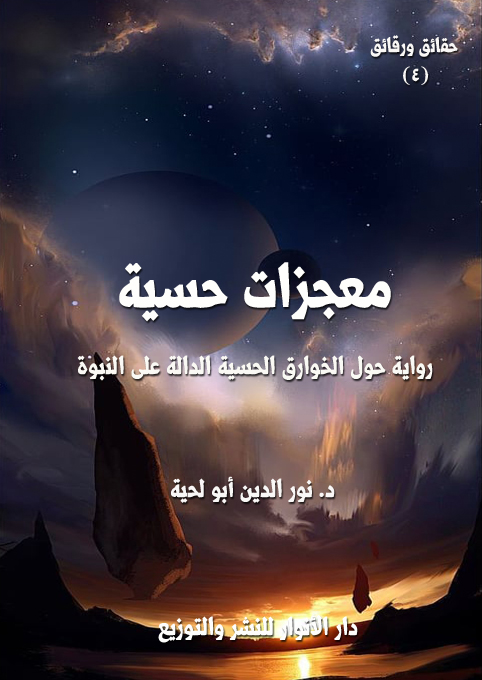

الكتاب: معجزات حسية
المؤلف: أ.د. نور الدين أبو لحية
الناشر: دار الأنوار للنشر والتوزيع
الطبعة: الثانية، 1437 هـ
عدد الصفحات: 583
ISBN: 978-620-2-34416-6
لمطالعة الكتاب من تطبيق مؤلفاتي المجاني وهو أحسن وأيسر: هنا

التعريف بالكتاب
هذا الكتاب من الكتب التي حاولت فيها – من خلال الأدلة الكثيرة - أن أبين البراهين الدالة على صدق رسالة رسول الله صلى الله عليه وآله وسلم، وأن كل ما في الكون يدل عليها.
وهي تختص بالخوارق التي خرقها الله تعالى لرسوله صلى الله عليه وآله وسلم، كما خرقها قبل ذلك لرسله عليهم الصلاة والسلام، لتكون دليلا على توليتهم من الله تعالى لذلك المنصب الخطير الذي من خلاله يعرّفون بالله، وبالطريق إليه، وبحقائق الوجود.
وقد رجعت لإثبات ذلك إلى كل المصادر التي نقلت الخوارق المختلفة سواء لدى هذه الأمة أو لدى من قبلها من الأمم، وخصوصا اليهود والنصارى، ولهذا قارنت بين كل نوع من أنواع الخوارق مع مثيلاته لدى المسيح عليه السلام خصوصا، ولدى أنبياء بني إسرائيل عموما، وذلك لإثبات أن رسالة رسول الله صلى الله عليه وآله وسلم لا تختلف مع سائر الأنبياء عليهم الصلاة والسلام، كما قال تعالى: ﴿ قُلْ مَا كُنْتُ بِدْعًا مِنَ الرُّسُلِ﴾ [الأحقاف: 9]
معجزات حسية (11)
هذا الكتاب من الكتب التي حاولت فيها – من خلال الأدلة الكثيرة - أن أبين البراهين الدالة على صدق رسالة رسول الله صلى الله عليه وآله وسلم، وأن كل ما في الكون يدل عليها.
وهي تختص بالخوارق التي خرقها الله تعالى لرسوله صلى الله عليه وآله وسلم، كما خرقها قبل ذلك لرسله عليهم الصلاة والسلام، لتكون دليلا على توليتهم من الله تعالى لذلك المنصب الخطير الذي من خلاله يعرّفون بالله، وبالطريق إليه، وبحقائق الوجود.
وقد رجعت لإثبات ذلك إلى كل المصادر التي نقلت الخوارق المختلفة سواء لدى هذه الأمة أو لدى من قبلها من الأمم، وخصوصا اليهود والنصارى، ولهذا قارنت بين كل نوع من أنواع الخوارق مع مثيلاته لدى المسيح عليه السلام خصوصا، ولدى أنبياء بني إسرائيل عموما، وذلك لإثبات أن رسالة رسول الله صلى الله عليه وآله وسلم لا تختلف مع سائر الأنبياء عليهم الصلاة والسلام، كما قال تعالى: {قُلْ مَا كُنْتُ بِدْعًا مِنَ الرُّسُلِ} [الأحقاف: 9]
وقد حاولت أن أجمع أكبر قدر من الروايات الواردة عن رسولنا صلى الله عليه وآله وسلم من خلال المصادر الحديثية المعتمدة، ولم أهتم كثيرا بمناقشة الروايات، باعتبارأني لا أهدف إلى إثبات كل حادثة على حدة، وإنما لإثباتها جميعا، وبالتالي تعاملت معها كما يتعامل المحدثون مع المتواتر المعنوي، لأن الغرض هو إثبات التحدي والإعجاز، لا إثبات كل معجزة على حدة.
وقد صنفت الأدلة في هذا إلى عشرة أصناف مثل سائر الروايات التي وضعتها لخدمة هذا الجانب، وتبدأ من الإرهاصات التي سبقت النبوة، وعاصرتها، وتنتهي بالتكريمات الإلهية التي كرم الله تعالى بها رسوله صلى الله عليه وآله وسلم، وبين ذلك تناولت: بركات رسول الله صلى الله عليه وآله وسلم، واستجابة الله لدعائه، والنبوءات الكثيرة التي أخبر بها، والتحديات التي تحدى بها المخالفين، والثبات الذي ثبته الله به، وأصناف الحماية التي دعمه الله بها، والانتصارات التي
معجزات حسية (12)
نصره بها، والطاقات التي أعطاه الله إياها.
وهي تتوجه - أولا - لأصحاب العقل والحكمة من المسلمين وغير المسلمين، ليضموا هذا النوع من الأدلة إلى غيره من الأدلة.. ليبنوا من خلال ذلك مواقفهم من رسالة رسول الله صلى الله عليه وآله وسلم.
وهي تتوجه كذلك لأولئك الغافلين المقصرين الذين يحتقرون هذا النوع من الأدلة، أو يستهينون بها، مع أن القرآن الكريم ذكره كثيرا، ودعا أصحاب العقول إلى النظر فيه، والاهتمام به.
وهي تتوجه فوق ذلك لأولئك الحمقى والمغفلين من المسلمين الذين لم تهضم عقولهم المقيدة بداء الجهل والكبر هذا النوع من الأدلة فراحوا يردونها، ويردون الروايات الكثيرة المرتبطة بها.
وقد يستغرب البعض ذكري أنها موجهة للمسلمين.. فما حاجة المسلمين لذلك، وهم يؤمنون برسول الله صلى الله عليه وآله وسلم أصلا.. والجواب على ذلك بسيط، وهو ما نص عليه قوله تعالى عن إبراهيم عليه السلام: {وَإِذْ قَالَ إِبْرَاهِيمُ رَبِّ أَرِنِي كَيْفَ تُحْيِ الْمَوْتَى قَالَ أَوَلَمْ تُؤْمِنْ قَالَ بَلَى وَلَكِنْ لِيَطْمَئِنَّ قَلْبِي} [البقرة: 260]، ففرق كبير بين من رأى ومن سمع.
بالإضافة إلى أن هذا النوع من الأدلة يتعلق بناحية مهمة كانت في حياة رسول الله صلى الله عليه وآله وسلم، ولا يصح لنا أن نهملها، لأن البعض يحرص دائما على أن يظهر رسول الله صلى الله عليه وآله وسلم بصفة البشر العادي.. ولذلك يكتم أو يتجاهل كل ما يناقض موقفه هذا.
وكسائر كتبي في هذا الجانب، فقد صغت الأدلة فيها على شكل مناقشات ومناظرات وحوارات، وعلى قالب روائي مبسط ييسر التجاوب مع ما تريد هذه الرواية تحقيقه.
ومن أبطال هذه الرواية:
الشيخ صاحب القصة: وهو شخصية مسيحية من رجال الدين، وقد كلف بمهمة
معجزات حسية (13)
تبشيرية بين المسلمين في الهند، بصحبة مبشر خبير هو [بولس]، وقد آمن بعد أن سمع الحوارات الكثيرة الدالة على رسالة رسول الله صلى الله عليه وآله وسلم، وهو الذي حكى قصته للمؤلف.
عبد القادر: وهو البطل الأساسي في الرواية، ويمثل الداعية المسلم المثقف والمؤدب، والذي حاور المبشر بكل أدب وعلم، وقد اخترت له هذا الاسم باعتباره يمثل الحديث عن القدرة الإلهية، والخوارق المرتبطة بها، ويمثل في نفس الوقت جمهور المسلمين القائلين بذلك.
عبد الحكيم: وهو صديق لعبد القادر، ولكنه لا يميل إلى الاهتمام بالمعجزات الحسية، وقد سميته بذلك باعتباره يمثل عالم الحكمة، وهو يمثل طائفة من الناس ظهرت في هذا العصر تحاول التهرب من المعجزات خشية على الدين من تلبسه بالخرافة.
بولس: وهو المبشر الذي حاوره عبد القادر في كل فصول الرواية، وقد كان له– كما تذكر الرواية – (أثره الخطير في ردة الكثير من المسلمين في إفريقيا، فله القدرة على تصوير الخوارق ببلاغة، وكأنها تحدث أمامك.. وكان له من الإخلاص والصدق بقدر ما كان له من النشاط، فلم يكن يرغب في أي مسؤولية أو وظيفة غير وظيفة التبشير)، وقد انتهى به الأمر - بعد أن سمع أخبار المعجزات الحسية لرسول الله صلى الله عليه وآله وسلم - أن يسلم في آخر الرواية.
والرواية – في الأخير - تعتبر موسوعة للكثير مما ورد من دلائل النبوة مع البراهين العقلية المرتبطة بها، وهي – طبعا – جزء يضم إلى نظيره من الأدلة التي اهتمت بها هذه الكتب.. مثل [معجزات علمية]، و[ثمار من شجرة النبوة]، و[أنبياء يبشرون بمحمد]، و[الكلمات المقدسة]، وغيرها.
وتتميز هذه الطبعة الجديدة باختصارها مقارنة بالطبعة السابقة، فقد حذفت الكثير من الروايات والتفاصيل التي قد تجهد القارئ العادي في فهمها أو الاستفادة منها.
وفي الأخير.. أشكر كل الذين نوهوا بالطبعة السابقة، أو دعوا إلى دراستها، وهي بفضل
معجزات حسية (14)
الله جديرة بذلك، فهي لا تكتفي بعرض الحقائق، بل تبين كيفية إقناع الآخرين بها، والآداب المرتبطة بكل ذلك.
معجزات حسية (15)
في ذلك اليوم الذي تشرفت فيه باستضافة الشيخ الغريب الصالح رأيت عجبا، سأحكيه لكم كما رأيته، ولا جناح عليكم أن تنكروه، فأنا نفسي كنت أنكر الكثير مما يحكى لي من هذا الباب، إلى أن رأيته بأم عيني.
كنت قد أعددت للشيخ غرفة خاصة منذ زيارته لي، هي أحسن غرف منزلي، وقد كانت منفصلة عن سائر الغرف، وتطل على حديقة البيت.
في منتصف تلك الليلة، انقطعت الكهرباء، فنبهني أهلي إلى أخذ سراج ـ كنا نستعمله في هذه الحالات ـ إلى غرفة الشيخ، لعله يحتاج إليه، فقد كانت الظلمة شديدة جدا.
ما سرت قليلا إلى الغرفة حتى رأيت عجبا.. لقد رأيت أضواء ساطعة، كأجمل ما يمكن أن تراه من أضواء دفئا وحنانا وإنارة ولطفا.. فتعجبت كل العجب من مصدرها، فلم يكن في الغرفة أي شيء يمكن اعتباره مصدرا لها، ولم يكن لدى الشيخ أي محفظة يمكنه أن يحفظ فيها أي نوع من أنواع المصابيح.
أصابتني هيبة من ذلك كادت تقعد بي عن زيارته وإيصال السراج له، ولكني تغلبت عليها، وقهرت مخاوفي، وسرت نحو غرفته.
أطللت من نافذة صغيرة عليه، فرأيته جالسا على السجادة التي هيأتها له، رافعا يديه إلى السماء، والدموع تنحدر من عينيه بخشوع وجلال، وقد غمرت تلك الأضواء الجميلة وجهه، فصار كالشمس، أو قريبا من الشمس.
لقد كان منظرا يصور الخشوع والإيمان بأرقى درجاته.. ولا يمكن لأي آلة تصوير في الدنيا أن تصور جلال ذلك المنظر وجماله.
لست أدري كيف سقط السراج من يدي، فأحدث بعض الجلبة، جعلت الشيخ ينتبه من
معجزات حسية (16)
ذلك الخشوع الذي ملأ كيانه، ثم يلقي ببصره إلى النافذة ليراني.
غمرني الحياء من نظره لي، خشية أن يتهمني بالتجسس عليه.. لكنه ناداني، فدخلت إليه، لتشملني تلك الأنوار التي شملته، والتي لم يكن لها أي مصدر ظاهر.
قلت: ما هذا.. إن هذا لعجب!؟
قال: ليس عند ربك عجب.. إن ما تراه من أنوار فضل من فضل الله لا يقل عن أي فضل آخر نراه في كل لحظة، ونعيشه، وننعم به.
قلت: ولكن تلك الأنوار ينعم بها كل الناس.. أما هذا النور، فلا أراه الآن إلا في بيتك، وهو كرامة عظيمة لا تقل عن الكرامات التي حكيت عن أهل الله.
قال: إن فضل الله العظيم يشمل الكل.. وما أنا إلا فرد بسيط حقير فقير.. وقد علم الله فقري إليه، فأنالني بعض ما أنالهم، وذلك لا يعني أني مثلهم، بل ولا قريبا منهم.
ثم أخذ نفسا عميقا، وقال: أنا الآن مشغول ببناء حياتي الجديدة مع الله.. أنا لست سوى مريد صغيرة يجلس أمام أشعة تلك الشمس الجميلة المشرقة ليشم عطر أنوارها..
قلت: ولكن أحاديث الكرامات صارت موضوعة في هذا الزمان.. فأنا بين قوم لا يصدقون إلا بالأسباب، وعالم الأسباب.. ولو أصبحت أحدثهم بما رأيت لاتهموني بالكذب، بل بالدجل.. بل يملأون الأرض ضجيجا على خفة عقلي، وأحسنهم حالا، وأقربهم إلي مودة من يذهب يلتمس لهذا الأمر أسبابه وقوانينه التي لا تخرج به عن قوانين الكون التي نعيشها.
ابتسم، وقال: الله رب القوانين والأسباب والكون.. فلا ينبغي أن تخضعوا الله للقوانين التي خلقها.
نظر إلى السراج الذي كنت أحمله، ثم قال: ما هذا؟
قلت: سراج.. لقد أتيت به إليك، لما انقطعت الكهرباء.
قال: فحدث قومك عن سراجك هذا، لتقنعهم بسرج ربك.. استعمل القياس لإقناعهم
معجزات حسية (17)
بذلك.
قلت: كيف ذلك؟
قال: لم تكن عادتك أن تحمل سراجا في هذا الوقت من الليل لتحمله إلى هذا الموضع من بيتك.
قلت: أجل.. ذلك صحيح.. لعل هذه أول مرة أفعل هذا.. فقد كان هذا البيت معدا للضيوف.. ولم يكن من عادة الكهرباء أن تنقطع في حضورهم.
قال: فما فعلته إذن خرق للعادة..
قلت: كيف ذلك؟
قال: البشر يتعرفون على القوانين من خلال التجربة والاستقراء.. إنهم يرون للأشياء صورا معينة في ظل ظروف معينة، فيستنتجون القوانين من خلال ذلك.
قلت: ذلك صحيح.. كل القوانين تبدأ هكذا، ثم تعمم أحكامها.
قال: وحينذلك يقع الخطأ.
قلت: أي خطأ؟
قال: التعميم.. التعميم أعظم الأخطاء.
قلت: لابد للقوانين أن تعمم.. وإلا ذهب العلم.. ولاحتجنا في كل لحظة إلى تجارب جديدة.
قال: يمكنكم أن تعمموا، ولكن مع ذلك لا ينبغي أن يمنعكم التعميم من اعتقاد احتمال خرق التعميم.
قلت: لم أفهم.. عد بنا إلى السراج، وتطبيقه على هذا.. لعلي أفهم مرادك.
قال: فلنفترض أن هناك رجلا تتبع حياتك في هذا الوقت من الليل.. فرآك في كل السنوات التي مرت بها حياتك، وفي هذا الوقت بالذات من الليل لا تفعل ما فعلته الليلة، فراح يستنتج
معجزات حسية (18)
قانونا يذكر فيه هذا.. بناء على استقراء كل المدة التي مضت من حياتك.. هل ترى ذلك ممكنا؟
قلت: أجل.. فكل العلماء الذين يستنتجون القوانين يفعلون هذا.. إنهم ينطلقون من استقراء حالات معينة في فترة معينة، ثم يحكمون من خلال ذلك، ثم يعممون الحكم.
قال: فما فعلته أنت اليوم إذن بهذه المقاييس خرق للعادة!؟
قلت: يمكنك أن تقول ذلك.. بل نحن في عرفنا نصف الكثير من تصرفاتنا بأنها خارقة للعادة، أو أنها مستحيلة.
قال: فكيف أجزتم لأنفسكم ـ وأنتم الممتلئون ضعفا ـ أن تنخرق لكم العوائد، ولم تجيزوا لربكم أن يخرق العوائد لمن شاء، وكيف شاء!؟
قلت: وعيت هذا.. ولكني أعلم أن لله سننا في الكون.. وأنه لا تبديل لسنن الله، فكيف ينسجم هذا مع ما أراه؟
قال: هذا من سنن الله..
قلت: هذا خرق للعوائد.. فكيف تذكر أنه من سنن الله؟
قال: أليست السنن هي القوانين التي تحكم الأشياء؟
قلت: أجل.. فالله نظم الكون بنظام دقيق محسوب لا ينخرق.
قال: سأضرب لك مثالا يوضح لك هذا.. لقد من الله تعالى على إبراهيم عليه السلام بأن جعل النار بردا وسلاما عليه، فقال تعالى: {قُلْنَا يَا نَارُ كُونِي بَرْداً وَسَلاماً عَلَى إِبْرَاهِيمَ} (الانبياء:69)
قلت: هذا خرق للعادة.. وقد تحقق لإبراهيم عليه السلام، لأنه نبي الله.. ولكن مع ذلك فإن من قومي من يستحيي من ذكر مثل هذا..
قال: نعم إن ما حصل لإبراهيم عليه السلام خرق للعادة، ولكنه ليس خرقا لسنن الله.. بل هو من سنن الله.. فسنن الله مطلقة لا تتبدل، ولا تتغير.
قلت: كيف ذلك؟
معجزات حسية (19)
قال: لقد كان إبراهيم عليه السلام في تلك اللحظات يعيش حالة إيمانية عالية.. لقد ألقي في المنجنيق ليرمى به إلى ما أضْرَم له أعداء الله من النار، فلم يتحرك قلبه، ولم ترتعد فرائصه، بل بقي كالطود الأشم لا تزعزعه الرياح، بل سرت السكينة من باطنه إلى ظاهره إلى ما حوله، فأطفأت ببرودتها وسلامها نار النمروذ وزبانيته.
جمعوا الحطب شهرا ثم أوقدوها، واشتعلت واشتدت، حتى أن الطائر كان يمر بجنباتها، فيحترق من شدة وهجها.
ثم قيدوا إبراهيم ووضعوه في المنجنيق مغلولا، وغفلوا أن يقيدوا سكينته، أو عجزوا أن يقيدوها.
وحينذاك ضجت السموات والأرض ضجة واحدة: ربنا! إبراهيم ليس في الأرض أحد يعبدك غيره يحرق فيك، فأذن لنا في نصرته.
وكان الله يعلم ما في قلب إبراهيم، فقال ـ كما يروي المفسرون ـ: (إن استغاث بشيء منكم أو دعاه، فلينصره، فقد أذنت له في ذلك، وإن لم يدع غيري، فأنا أعلم به وأنا وليه)
فلما أرادوا إلقاءه في النار، أتاه خزان الماء - وهو في الهواء - فقالوا: يا إبراهيم إن أردت أخمدنا النار بالماء. فقال: لا حاجة لي إليكم.
وأتاه ملك الريح فقال: لو شئت طيرت النار. فقال: لا.
ثم رفع رأسه إلى السماء فقال: (حسبي الله ونعم الوكيل)
وحينها جعل الله من هذا الذي أرادوا حرقه به بردا وسلاما وبشارة.
قلت: وعيت هذا.. وهذا من خرق السنن، فكيف تعتبره من السنن؟
قال: بل هو من السنن.. فـ {لَنْ تَجِدَ لِسُنَّةِ اللَّهِ تَبْدِيلاً} (الفتح: 23)
قلت: كيف ذلك؟
قال: أرأيت لو أن عالما ـ يحترم نفسه، ويحترم تخصصه، ويحترم العلوم التي وهبت له ـ تمكن
معجزات حسية (20)
من إجراء تجارب معينة في ظروف معينة، واستنتج قوانين منها، ولكنه لم يتمكن من إجراء تجارب على ظروف أخرى.. فهل يستطيع الحكم على نتائج ما لم يجرب عليه؟
قلت: لو فعل ذلك لخرج عن المنهج العلمي.. ولدخل في زمرة أهل الخرافة الذين يستخدمون كل ما توحيه لهم أنفسهم من أهواء.
قال: فهذا ينطبق على من ينكر هذه الخارقة، أو يعتبرها خارج سنن الله.
قلت: كيف ذلك؟
قال: لأن إبراهيم عليه السلام كان في ذلك الحين في حالة نفسية معينة، حولت من النار الحارقة بردا وسلاما.. فلو أن أحدا مر بنفس ظرف إبراهيم عليه السلام، وبنفس حاله الإيمانية، فإن النار ستبرد له، وستصير سلاما كما صارت على إبراهيم.
قلت: لا يمكن لأحد أن يكون كإبراهيم.
قال: إذن لا يمكن الحكم على شيء لا يمكن التجريب عليه، وإلا كان ذلك الحكم محض خرافة.
قلت: إن ما ذكرته يحتاج إلى تأمل لاستيعابه.. دعنا منه، وأخبرني عن السنة التي جعلت غرفتك تضاء بالسرج دون غرفتي.. ودون غرف كل أولئك الخلق الذين نراهم.
قال: لا طاقة لي بالتعرف على السنن التي تضبط هذا، ولكني سأذكر لك حديثا قد يبين لك بعض القوانين التي يمكن أن تستنتجها لهذا.
لقد ورد في الحديث أن رسول الله صلى الله عليه وآله وسلم قال: (والذي نفسي بيده لو تدومون على ما تكونون عندي، وفي الذكر، لصافحتكم الملائكة على فرشكم وفي طرقكم) (1)
قلت: أفي هذا الحديث قوانين تشير إلى هذا؟
قال: أجل.. لقد ذكر رسول الله صلى الله عليه وآله وسلم شيئا خارقا في تصوراتنا الهزيلة، وهو مصافحة الملائكة
__________
(1) رواه مسلم.
معجزات حسية (21)
لنا، وذكر لها سببين، عبر عنهما رسول الله صلى الله عليه وآله وسلم بقوله: (لو تدومون على ما تكونون عندي، وفي الذكر)
فأولهما الديمومة على استذكار المعاني الإيمانية التي كان يذكر بها رسول الله صلى الله عليه وآله وسلم، والثاني هو الديمومة على الذكر.
قال ذلك، ثم رمى ببصره إلى السماء، وسبح في آفاقها البعيدة، وقال: ألا يرمي هؤلاء المساكين الذين ينكرون هذا بأبصارهم إلى السماء ليروا هذا الكون العريض؟
أليس الذي خلق كل هذا بقادر على أن يخلق أي شيء؟
إن حياتنا جميعا خواق يعجز العقل عن تفسيرها.. فكيف ينكر العقل الذي يعجز عن تفسير كل شيء ما لا يستطيع فهمه أو إدراكه؟
نظرت إلى الساعة، فوجدتنا قد قطعنا شوطا طويلا من الليل، فأخذت السراج، وأردت أن أنصرف، فقال: اجلس..
قلت: لقد خشيت أن أكون قد آذيتك.. وإلا فإن الحديث معك لا يمل.
قال: اجلس لأحدثك عن رحلتي التي هداني الله بها إلى شمس محمد صلى الله عليه وآله وسلم.. فلا حال أنسب للحديث عن هذه الأشعة من هذا الحال، ولا وقت أنسب لها من هذا الوقت.
قلت: أعجبا.. أكنت تائها عنه؟
قال: لقد أمضيت كل عمري تائها عنه.. ولولا أن هداني الله إليه لكنت الآن من الجافين عنه المحاربين له.
قلت: من أي البلاد أنت؟
قال: لا تهمك بلدي.. ولا يهمك اسمي.. يكفي أن تعرف قصتي.. وأن تسجلها بقلمك.. فلم أزرك إلا لأجل ذلك.
قلت: أكنت تقصدني إذن عندما خرجت من المسجد، وطلبت المأوى؟
معجزات حسية (22)
قال: أجل.. كنت أقصدك.. بل كنت أقصد قلمك.. فهاته لتسجل ما أحكيه لك.
-\--\-
تحت أشعة تلك السرج الجميلة بدأ الشيخ يحدثني عن رحلته إلى الإسلام.
قال: في ذلك اليوم جاءتني رسالة من الفاتيكان تأمرني بالذهاب إلى الهند، وإلى مدينة من مدنها الفقيرة، وقد عرفت سر اختيار تلك المدينة.
فقد كان رجال الفاتيكان يعرفون توجهي العقلي.. ويعرف مثله بغضي للتخلف.. ويعرفون فوق ذلك ما أبديه من تعاطف نحو الإسلام والمسلمين، فأرادوا من خلال تلك الرحلة أن أتعرض لما يفاجئني.. فأرى الخرافة التي تصادم توجهي العقلي، وأرى الفقر الذي يصادم بغضي للتخلف.
ولكن الله شاء أن أتعرض في تلك المدينة الفقيرة.. والجميلة بفقرها.. إلى أشعة لم أكن لأظفر بها لولا أن قيض الله لي تلك الرحلة..
لقد كانت تلك الرحلة بداية للبحث العقلي والعلمي عن الإسلام وعن رسوله صلى الله عليه وآله وسلم.. وكانت النهاية هي اعتناقي له بقلبي وقالبي وكل كياني.
امتطيت الطائرة المتوجهة إلى الهند، وجلست في بعض كراسيها.. ولست أدري كيف خطر على بالي رؤيا رأيتها من زمن بعيد.. رأيت العذراء.. لقد ارتسمت صورتها التي رأيتها في مخيلتي.. كما ارتسمت الكلمات التي ذكرتها لي في أذني..
لقد صرت أسمعها في اليقظة كما سمعتها في النوم.. وهي تصيح في بصوتها الرقيق الحنون.. والذي يحمل شدة مكسوة برحمة.. تقول لي: ابحث عن الشمس التي بشرت بها الأنبياء، وتحطمت أمام أشعتها الطواغيت.. ومن أفواهها سارت الكلمات المقدسة.
ابحث عن الشمس التي فتحت لها خزائن العلوم، وخرقت لها أسوار الأقدار، وامتلأت القلوب حبا لها، وشوقا إليها.
معجزات حسية (23)
ابحث عن الشمس التي هي رحمة وعدل وسلام.
ابحث عن الشمس التي تبشرك بحقيقة الوجود، وحقيقة الإنسان، وحقيقة الحياة.
فلن ينقذك من بردك وظلمتك إلا هذه الشمس.
قالت ذلك، ثم انصرفت في طي الغيب، كما جاءت..
لقد كانت رؤيا غريبة تلح على بالي كل حين، ولا أجد لها تفسيرا.
فجأة التفت، إلى الذي بجانبي، فإذا بي أرى وجها مشرقا كالشمس، هادئا كصفحة الماء التي لم تعبث بصفائها التيارات.
ابتسم، وقال: ألا تزال تذكر رؤياك للعذراء؟
تعجبت من معرفته بذلك، وقلت: أجل.. وقد كانت تخطر على بالي الساعة.. بل كان صوتها العذب الجميل يترنم بألحانه العذبة الآن في أذني.
قال: فهل أسمعتك حديث الخوارق؟
كنت في ذلك الحين لا أؤمن بالخوارق.. حتى ما ورد عن المسيح.. كنت أقلد في ذلك تقليدا.. لقد كان توجهي العقلي يكاد يحيلني ملحدا في هذا الباب.
قلت: أجل.. لكن كيف عرفت ذلك؟
ابتسم، وقال: معارفك تبع لهمتك.. وهمتك تبع لطبيعتك.. وطبيتعك تبع لحقيقتك.
قلت: وحقيقتك تبع لمن؟
قال: تبع لإرادتك.. فلن يصنعك غيرك.. أنت الذي تقرر كيف تكون.
قلت: ولكن الإرادة قد يعتريها ما يملؤها بالعجز، فتقع في أدغال الجبن.
قال: لقد زود الله الإرادة بما يخرجها من كل السجون..
قلت: حتى لو رميت مفاتيح سجونها في أعماق المحيط!؟
قال: حتى لو رمي بمفاتيحها في أدغال المجرات.. فإن الروح تستطيع أن تصرخ مستغيثة
معجزات حسية (24)
ليأتيها المدد من كل مكان..
قلت: بالعوائد.. أم بخرق العوائد؟
قال: ليس هناك شيء اسمه عوائد.. فلذلك لا وجود لخرق العوائد.
قلت: العوائد هي القوانين التي يسير بها الكون.. فكيف تزعم عدم وجودها؟
قال: العوائد تعني التكرار.. ولا تكرار عند ربك.. إن ربك هو البديع الذي لا يكرر صنعه..
قلت: ولكنا نرى القوانين السارية..
قال: أنتم ترونها بعين الغفلة.. فلذلك ترونها تكرارا.. ولكنكم لو رأيتموها بعين الحقيقة لرأيتم في كل قديم جديدا، وفي كل حادث حديثا.
إن الكون الذي ترونه كآلات تتحرك بتلقائية، فتشبهونه بآلاتكم التي تتفنون في صنعها أشبه ما يكون بتلك العرائس التي تحتاج من يحركها.. فإذا رآها الغبي الغافل تصورها تتحرك من ذاتها.
قلت: لقد ذكرت لي العذراء أن القوانين تخرق لتلك الشمس التي بشرتني بها.
قال: لا بد للقوانين أن تخرق لكل شمس، لتثبت أنها شمسا.. فلا يمكن لطاقة الشمس أن تكون كطاقة السرج التي تستضيئون بها.
قلت: فما حاجة الشمس لأن تخرق لها العادات؟
قال: ليعرف الناس أنها من مصدر علوي..
ثم التفت إلي، وقال: أنت الآن ذاهب إلى الهند.. وهناك لا يعرفك أحد.. وستذهب إلى قوم قد ينكرونك، وقد يطردونك من بينهم، فما الذي تفعله لتثبت لهم أنك أنت أنت، وأن وظيفتك هي وظيفتك؟
قلت: لا تخف علي من ذلك.. فهناك من أنبأهم بأني سآتي..
قال: فهناك من بشرهم بقدومك إذن (1).
__________
(1) انظر: أنبياء يبشرون بمحمد، من هذه السلسلة.
معجزات حسية (25)
قلت: تستطيع أن تقول ذلك..
قال: ولكن.. يمكن أن يستغل أحد من الناس تلك المبشرات، فيدعي أنه المبشر بها دونك، فكيف يميز بين الكاذب والصادق منكما؟
قلت: ذلك بسيط.. لدي في هذه الحقيبة كل الوثائق الدالة على هويتي ووظيفتي، ولن يستطيع أحد من الناس أن يأتي بمثلها.
قال: ولكن يمكن أن يزور وثائق مثلها.
قلت: يمكن أن يزور الكتابة.. ولكن هناك أشياء مهمة يستحيل تزويرها، وهي تعرف بالمصدر الذي ابتعثني لهذه الوظيفة.
قال: فتقليدها مستحيل إذن.
قلت: أجل.. لقد ابتكر قومي في هذا الباب وسائل خارقة يستحيل تقليدها.
قال: فربك يفعل هذا إذن مع الشمس التي يرسلها لتضيء على خلقه.. فهو لا يكتفي بالبشارات التي تبشر بها، بل يعطيها من القوى والخوارق ما يعجز الدجالون عن تقليده.
قال ذلك، ثم قام مستأذنا، بعد أن طلبت المضيفة المشؤومة أوراقه.
بقيت متأملا ما قال، فوصلت إلى نتيجة نفت عن عقلي ما كان يتمسك به مما يعتبره روح العلم وحقيقته.
لقد صرت أدرك أن الله تعالى لا بد أن يمد عباده الذين يصطفيهم بما يؤكد كونهم من عنده.. حتى يقطع الطريق على الدجالين من المتنبئين.
-\--\-
كان في المقعد الأمامي للطائرة شابان يتحدثان بحماسة، وقد ارتفعت أصواتهما، وكل منهما يريد أن يفرض قناعته على أخيه.
معجزات حسية (26)
قال أحدهما، وهو عبد الحكيم (1)، على حسب ما عرفت بعد ذلك: اسمع.. يا أخي عبد القادر.. إن الذي تقوله خطير جدا.
عبد القادر: لست أرى أي خطورة فيه.. بل لا أرى شيئا يناسب تلك البلاد، ويناسب أهلها والظروف التي يمرون بها إلا هذا.
عبد الحكيم: ولكن ألا تخشى من ثورة الخبراء والعلماء على الإسلام كما ثاروا قبل ذلك على الكنيسة؟
عبد القادر: نحن لا نزعم أن هذه قوانين تنطبق على كل الناس.. هذه أحكام خاصة ارتبطت ببيئة خاصة، وكان قصدها تحقيق أهداف خاصة.
عبد الحكيم: ولكنا يمكن أن نتوسل للإقناع بذلك بأدلة أخرى كثيرة غير هذه.. يمكننا أن نستدل ببلاغة القرآن الكريم.
عبد القادر: هم لا يعرفون العربية، فكيف نقنعهم ببلاغة القرآن الكريم؟
عبد الحكيم: فنقنعهم بعلومه؟
عبد القادر: هم يتخبطون في مستنقعات الجهل التي فرضها عليهم عدوهم، فكيف يفهمون ما تقول؟
عبد الحكيم: نقنعهم بتشريعات الإسلام وتنظيماته.
__________
(1) الأسماء التي نوردها في العادة في هذه الرسائل وغيرها تكون لها دلالة معنوية خاصة، فعبد الحكيم يشير هنا إلى عالم الحكمة والأسباب والسنن الإلهية التي يسير عليها الكون، وعبد القادر يشير إلى الناحية الثانية المكملة لهذه الناحية، وهي أن قدرة الله لا يحدها شيء، ولا يحكم عليها شيء.
والإشارة فيهما ـ كالإشارة في الرسالة السابقة (معجزات علمية) في شخصية علي وحذيفة.
فعبد القادر في هذه الرسالة يمثل الحديث عن القدرة الإلهية، والخوارق المرتبطة بها، ويمثل في نفس الوقت جمهور المسلمين القائلين بذلك، وعبد الحكيم يمثل عالم الحكمة، وهو يمثل طائفة من الناس ظهرت في هذا العصر تحاول التهرب من المعجزات خشية على تلبس الدين بالخرافة.
معجزات حسية (27)
عبد القادر: هم لن يفهموا كل هذا.. هم قوم لا يؤثر فيهم شيء مثلما تؤثر فيهم الخوارق.. إن آباءهم هم الذين اخترعوا فنون اليوغا، وأنواع السحر.. إنهم لا يؤمنون بشيء كما يؤمنون للخوارق..
وقد استغلت الكنيسة القائمة هناك هذه الطبيعة المتأصلة فيهم، فراحت تستنفر لها كل ما روي عن المسيح عليه السلام من الخوارق، لا لتثبت لهم نبوته، بل لتثبت لهم إلهيته.
عبد الحكيم: أجل.. وقد علمت أن مبشرا خبيرا قدم تلك البلاد.. واسمه (بولس) وقد كان لهذا الرجل أثره الخطير في ردة الكثير من المسلمين في إفريقيا، فله القدرة على تصوير الخوارق ببلاغة، وكأنها تحدث أمامك.
عبد القادر: أفنترك هذا الرجل يعيث في الأرض فسادا، ونظل نتجادل.
عبد الحكيم: لم أقصد أن أجادلك، ولكني أردت أن نتحرى الحقيقة فيما نقول، خشية أن يتسرب لديننا من الخرافة ما يكدر صفوه.
عبد القادر: لا تخف.. فنحن أحرص الناس على صفاء الدين.. إن الأدلة التي نستند إليها في إثبات ما نقوله تعجز كل الدنيا عن ردها..
عبد الحكيم: فما ترى من سبيل لرد دعوة هذا المبشر؟
عبد القادر: ذلك بسيط.. أخرج ورقة وقلما.. وتعال أخبرك بما سنفعل.
أخرج عبد الحكيم ورقة من محفظته، وراحا يهمسان بما سيفعلانه.
-\--\-
وصلت إلى الهند، فاستقبلني الرجل الموكل بكنيستها، ولست أدري كيف عرفني، لقد جاء، واحتضنني، وقال: مرحبا بك معنا رسولا من رسل المسيح.
ثم عرفني بنفسه، وأنه (بولس) ـ الذي كان يتحدث عنه عبد القادر وعبد الحكيم ـ وحدثني، والسرور يهز نفسه، عن الفتوح العظيمة التي فتحت له في إفريقيا.
معجزات حسية (28)
لقد كان بولس من خلال كلماته وحركاته كتلة عجيبة من النشاط قل نظيرها، وكان له من الإخلاص والصدق بقدر ما كان له من النشاط، فلم يكن يرغب في أي مسؤولية أو وظيفة غير وظيفة التبشير، قال لي: في الحقيقة أنا لا أصلح لتولي هذه المسؤولية التي أنيطت بي في هذه الكنيسة.. أنا لا أصلح لأن أكون مسؤولا.. ولذلك فقد سررت كثيرا بمجيئك.. فأنت الذي ستتحمل ما يرتبط بهذه الكنيسة من مسؤوليات.. أما أنا، فدعني أسير بين الناس أبشر بذلك المخلص الذي فدانا على خشبة الصليب.
قلت: هل لي أن سير معك، لأتعلم على يديك فنون التبشير.
قال: إن ذلك يسرني.. سوف أعلمك من أساليب التبشير في هذه البلاد ما يجعل الناس يتهافتون عليك كما يتهافت الفراش على النار.
ابتسم، وقال: عذرا.. أنا دائما لا أعرف صياغة التشبيهات.. أقصد.. يتهافتون عليك كما يتهافت النحل على الأزهار.
قلت: من أين لك هذه المقدرة العجيبة؟
قال: لقد اكتسبتها من طول المدة التي مكثتها في إفريقيا.. تصور.. لقد استطعت عن طريق قصي لحادثة واحدة ـ هي حادثة إحياء المسيح لبنت يايرس، والتي وردت قصتها في (مرقس 5: 21 - 43) (1) ـ من إدخال الآلاف المؤلفة رحاب الكنيسة.
قلت: وهل يصدق الناس أنباء الخوارق بسهولة؟
قال: وهل تتصور أن هناك دينا من غير خوارق.. الدين لا يثبت إلا بالخوارق.. بل ولا يستمر إلا بالخوارق.. بل إن الكنيسة في جميع أطوارها التاريخية اعتمدت هذا الأسلوب.. حتى
__________
(1) ستأتي قصتها في فصل (تحديات) مبحث (الخوارق والألوهية)
معجزات حسية (29)
بولس.. بولس الرسول.. لولا تلك الخارقة التي حصلت له (1) ما كان ليصير بولس الذي يزاحم الحواريين، بل يبعدهم عن طريقه، ويسبقهم مكانة وتقديرا ودورا.
قلت: أليس في هذه البلدة مسلمون؟
قال: بلى.. كما كان في إفريقيا التي بشرت فيها مسلمون.. إن الإسلام ييسر لنا التبشير أكثر من أي دين آخر.. فالمسلمون يؤمنون بالله أصلا، فلذلك لا نحتاج لأن نقنعهم بالله، بل نكتفي بإضافة ابن لله.. فيتحولون من الإسلام إلى المسيحية.
قلت: فإن حصلت اعتراضات من المسلمين، أو ناقشنا بعضهم!؟
قلت هذا، وأنا أشير إلى عبد القادر وعبد الحكيم اللذين سمعت عزمهما على تعطيل محاولات (بولس) التبشيرية.
قال: نرحب بكل كلمة تقال.. بل نسمع لها.. ولو حصل ذلك، فإنا نكون أنشط لما نقول.. وقد نجد من الشبهات حينها ما نمطرهم به..
قلت: متى تبدأ جلساتنا التدريبية؟
قال: من الغد.. غدا تبدأ تلك الجلسات أو تلك الخرجات.. لقد نذرت حياتي للمسيح.. ولا ينبغي أن أضيع لحظة منها.
__________
(1) الخارقة التي حصلت لبولس، والتي جعلت المسيحيين يولونه كل ذلك الاهتمام هي أنه رأى المسيح بعد رفعه بسنوات، فبينما هو ذاهب إلى دمشق في مهمة لرؤساء الكهنة تجلى له المسيح دون القافلة التي كان يسير معها، وفي ذلك التجلي منحه منصب الرسالة.. وكان مما قاله له: (ولكن قم وقف على رجليك لأني لهذا ظهرت لك لأنتخبك خادما وشاهدا بما رأيت وبما سأظهر لك به منقذا إياك من الشعب ومن الأمم الذين أنا الآن أرسلك إليهم لتفتح عيونهم كي يرجعوا من ظلمات إلى نور ومن سلطان الشيطان إلى الله حتى ينالوا بالإيمان بي غفران الخطايا ونصيبا مع المقدسين) (اعمال 26/ 16 - 18)
معجزات حسية (30)
في اليوم الأول.. خرجت مع بولس إلى القرية الهندية الفقيرة الجميلة.. فرأينا الناس مجتمعين حول بيت من البيوت، وهم ممتلئون فرحا وسعادة، وقد علمنا أن سبب فرحهم يرجع إلى ولادة مولود لأحدهم، كان به مرض يمنعه من الإنجاب، ولكن الله قدر أن يرزقه هذا الولد بعد أن هرم، وكاد يرد إلى أرذل العمر.
اقتربنا منهم، لنهنئهم بذلك الميلاد السعيد، فسمعنا ذلك الشيخ الوقور يحدث أضيافه عن دعائه الله بأن يرزقه ولدا صالحا، وكيف رأى الرؤى الصالحة التي تبشره بميلاد ذلك الولد.. وحدثهم عن أشياء كثيرة ترتبط بميلاد ذلك الولد هي أقرب للخوارق منها إلى العادات.
هنا تحين بولس الفرصة ليبدأ تبشيره.
بولس: إن ما تذكرونه من إرهاصات بمولد هذا الصبي يذكرنا بالمسيح..
لقد كانت للمسيح إرهاصات كثيرة ارتبطت بمولده الشريف.
إن حادث ميلاد المسيح لم يكن له مثيل في تاريخ البشرية، فقد كان مظاهرة سمائية وأرضية، فرح في السماء، وبهجة علي الأرض.
فبالرغم من أنه ولد في مزود حقير للبقر، إلا أن ما حدث كان أكبر وأروع من أن يحدث مع أي من أبناء البشر مهما كانت مكانتهم علي الأرض.
لقد جاء ملاك من السماء، ومعه جمهور من الجند السماوي في احتفال سمائي، وبشر جماعة من الرعاة بميلاد المسيح الذي وصفه بالمخلص الرب: (وإذا ملاك الرب وقف بهم ومجد الرب أضاء حولهم فخافوا خوفا عظيما. فقال لهم الملاك: (لا تخافوا. فها أنا أبشركم بفرح عظيم يكون لجميع الشعب: أنه ولد لكم اليوم في مدينة داود مخلص هو المسيح الرب. وهذه لكم العلامة: تجدون طفلا مقمطا مضجعا في مذود). وظهر بغتة مع الملاك جمهور من الجند السماوي مسبحين
معجزات حسية (31)
الله وقائلين: (المجد لله في الأعالي وعلى الأرض السلام وبالناس المسرة). ولما مضت عنهم الملائكة إلى السماء قال الرعاة بعضهم لبعض: (لنذهب الآن إلى بيت لحم وننظر هذا الأمر الواقع الذي أعلمنا به الرب). فجاءوا مسرعين ووجدوا مريم ويوسف والطفل مضجعا في المذود.
فلما رأوه أخبروا بالكلام الذي قيل لهم عن هذا الصبي. وكل الذين سمعوا تعجبوا مما قيل لهم من الرعاة. وأما مريم فكانت تحفظ جميع هذا الكلام متفكرة به في قلبها) (لوقا:2/ 8 ـ 19)
وهذا ما لم يحدث ولن يحدث مع أي كائن ظهر علي الأرض، لم تهتف السماء لميلاد أحد، ولم تسبح الملائكة لميلاد أحد، سواء كان نبيا أو رسولا أو قديسا، سوى شخص المسيح فقط.
التفت إلى الجمع المندهش لحديثه، وقال: أتدرون لماذا؟
ثم أجاب نفسه بنفسه: لأن المسيح هو فوق الكل، أو كما قال هو في مقارنة بينه وبين كل من وجد علي الأرض (فقال لهم: (أنتم من أسفل أما أنا فمن فوق. أنتم من هذا العالم أما أنا فلست من هذا العالم) (يوحنا:8/ 23)، وقال القديس يوحنا بالروح (الذي يأتي من فوق هو فوق الجميع والذي من الأرض هو أرضي ومن الأرض يتكلم. الذي يأتي من السماء هو فوق الجميع) (يوحنا:3/ 31)
ابتسم ابتسامة عريضة، ثم قال: ليس ذلك فقط.. هناك المزيد من الإرهاصات..
لقد جاء المجوس، وهم حكماء علماء، من المشرق، يحملون هدايا لهذا المولود الإلهي، وكان قد ظهر لهم نجم من السماء ليبلغهم بخبر الميلاد ويرشدهم في الطريق للوصول إلي هذا الطفل الإلهي، يقول الكتاب: (ولما ولد يسوع في بيت لحم اليهودية في أيام هيرودس الملك إذا مجوس من المشرق قد جاءوا إلى أورشليم. قائلين: (أين هو المولود ملك اليهود؟ فإننا رأينا نجمه في المشرق وأتينا لنسجد له)، وإذا النجم الذي رأوه في المشرق يتقدمهم حتى جاء ووقف فوق حيث كان الصبي. فلما رأوا النجم فرحوا فرحا عظيما جدا وأتوا إلى البيت ورأوا الصبي مع مريم أمه فخروا وسجدوا له ثم فتحوا كنوزهم وقدموا له هدايا: ذهبا ولبانا ومرا) (متى: 2/ 1 - 12)
معجزات حسية (32)
قال رجل من الجمع، عرفت بعد ذلك أنه مستأجر من بولس للقيام بدور السائل والمتأثر: ما هذا النجم يا مولانا.. إن خبره لعجيب!؟
سر بولس لهذا السؤال، وقال ـ متوجها للسائل ـ: بورك فيك.. لقد آتاك الله ذكاء وفهما.. وسؤالك هذا يدل على ذلك.
إن علماء اللاهوت ذكروا أن هذا النجم قد يكون نجما حقيقيا جعله الله يتحرك خارج إطار قانون وناموس الكون ويظهر بصورة إعجازية، ليرشد المجوس إلي ميلاده ومكان ولادته.
وإما أنه ملاك ظهر في شكل نجم ليقوم بنفس المهمة.
فإذا اعتبرناه نجما حقيقا ـ كما هو الظاهر ـ فإنه بذلك يعبر عن أن الأفلاك السمائية شاركت هي أيضا في الاحتفال بهذا المولود الإلهي.
التفت إلى الجمع، وقال: فهل حدث مثل هذا عند ميلاد أحد الأنبياء؟! ولماذا حدث ذلك عند ميلاد المسيح؟ والإجابة هي كما قال الملاك أنه هو (المسيح الرب)، وليس سواه.
أظهر مستأجر بولس الكثير من الاستغراب والدهشة لكلام بولس، وقال: إن هذا لعجيب.. فهل هناك غيره؟
بولس: أجل.. في وقت ختانه في اليوم الثامن في الهيكل حسب عادة اليهود جاء رجل من أورشليم اسمه سمعان، وهذا الرجل يقول عنه الكتاب أنه كان (بارا تقيا ينتظر تعزية إسرائيل والروح القدس كان عليه. وكان قد أوحي إليه بالروح القدس أنه لا يرى الموت قبل أن يرى مسيح الرب. فأتى بالروح إلى الهيكل. وعندما دخل بالصبي يسوع أبواه ليصنعا له حسب عادة الناموس أخذه على ذراعيه وبارك الله وقال: (الآن تطلق عبدك يا سيد حسب قولك بسلام لأن عيني قد أبصرتا خلاصك الذي أعددته قدام وجه جميع الشعوب. نور إعلان للأمم ومجدا لشعبك إسرائيل). وكان يوسف وأمه يتعجبان مما قيل فيه. وباركهما سمعان وقال لمريم أمه: (ها إن هذا قد وضع لسقوط وقيام كثيرين في إسرائيل ولعلامة تقاوم. وأنت أيضا يجوز في نفسك
معجزات حسية (33)
سيف لتعلن أفكار من قلوب كثيرة) (لوقا:2/ 25 ـ 36)
وكان هناك ـ أيضا ـ في الهيكل امرأة نبية اسمها حنة يقول عنها الكتاب: (وكانت نبية حنة بنت فنوئيل من سبط أشير وهي متقدمة في أيام كثيرة قد عاشت مع زوج سبع سنين بعد بكوريتها. وهي أرملة نحو أربع وثمانين سنة لا تفارق الهيكل عابدة بأصوام وطلبات ليلا ونهارا. فهي في تلك الساعة وقفت تسبح الرب وتكلمت عنه مع جميع المنتظرين فداء في أورشليم) (لو 2/ 36 ـ 38).
فجاء سمعان إلي الهيكل بالروح، وكان الروح القدس قد سبق أن وعد أن لا يري الموت قبل أن يري المسيح الرب، وتكلمت عنه حنة النبية مع جميع الذين كانوا يتوقعون ميلاده، بحسب النبوات، جميع المنتظرين الفداء الذي كان سيأتي من إسرائيل.
قال ذلك، ثم التفت للجمع، وقال: هذا ما حدث في ميلاد المسيح.. فهل حدث مثل ذلك عند ولادة أي نبي أو رئيس أنبياء أو أي شخص ظهر علي الأرض مهما كانت أهميته؟
ثم أجاب نفسه بنفسه: بالطبع لم يحدث مثل ذلك إلا في ميلاد الرب يسوع لأنه ليس مجرد شخص عادي، ولا هو مجرد نبي، بل هو المسيح الرب الذي ظهر في الجسد، فهو مرسل الأنبياء.
لم يكن بولس يتصور أن يفاجأ بأي اعتراض، فقد كان يتصور أنه يتكلم مع أميين جهلة لا علم لهم يناقشون به ما يقال، ولا عقول لهم تستطيع أن تعترض على ما يقال.
لكنه فوجئ بصوت يريد أن يناقشه.. وقد فوجئت مثله، لا بالاعتراض، وإنما بصوت المعترض.. لقد عرفته.. إنه صوت عبد القادر، ذلك الرجل الذي سمعته يتحدث مع عبد الحكيم في الطائرة..
لست أدري كيف شعرت بسرور عظيم، وأنا أسمع صوته، وكأن روحي أدركت أنها ستنال من ذلك الصوت بعض الحقائق التي حرمت من سماعها في البيئة التي ولدت فيها.
عبد القادر: إن أذنت لي ـ حضرة القس الفاضل ـ فإن قرآننا قد ذكر في ميلاد المسيح من
معجزات حسية (34)
العجائب ما لم تذكره، سأقرأ عليك ما ورد في القرآن الكريم من ميلاد المسيح عليه السلام.
فتح عبد القادر المصحف، وراح يقرأ بخشوع ما ورد في قصة ميلاد المسيح من سورة مريم: {وَاذْكُرْ فِي الْكِتَابِ مَرْيَمَ إِذِ انْتَبَذَتْ مِنْ أَهْلِهَا مَكَانًا شَرْقِيًّا (16) فَاتَّخَذَتْ مِنْ دُونِهِمْ حِجَابًا فَأَرْسَلْنَا إِلَيْهَا رُوحَنَا فَتَمَثَّلَ لَهَا بَشَرًا سَوِيًّا (17) قَالَتْ إِنِّي أَعُوذُ بِالرَّحْمَنِ مِنْكَ إِنْ كُنْتَ تَقِيًّا (18) قَالَ إِنَّمَا أَنَا رَسُولُ رَبِّكِ لِأَهَبَ لَكِ غُلَامًا زَكِيًّا (19) قَالَتْ أَنَّى يَكُونُ لِي غُلَامٌ وَلَمْ يَمْسَسْنِي بَشَرٌ وَلَمْ أَكُ بَغِيًّا (20) قَالَ كَذَلِكِ قَالَ رَبُّكِ هُوَ عَلَيَّ هَيِّنٌ وَلِنَجْعَلَهُ آَيَةً لِلنَّاسِ وَرَحْمَةً مِنَّا وَكَانَ أَمْرًا مَقْضِيًّا (21) فَحَمَلَتْهُ فَانْتَبَذَتْ بِهِ مَكَانًا قَصِيًّا (22) فَأَجَاءَهَا الْمَخَاضُ إِلَى جِذْعِ النَّخْلَةِ قَالَتْ يَا لَيْتَنِي مِتُّ قَبْلَ هَذَا وَكُنْتُ نَسْيًا مَنْسِيًّا (23) فَنَادَاهَا مِنْ تَحْتِهَا أَلَّا تَحْزَنِي قَدْ جَعَلَ رَبُّكِ تَحْتَكِ سَرِيًّا (24) وَهُزِّي إِلَيْكِ بِجِذْعِ النَّخْلَةِ تُسَاقِطْ عَلَيْكِ رُطَبًا جَنِيًّا (25) فَكُلِي وَاشْرَبِي وَقَرِّي عَيْنًا فَإِمَّا تَرَيِنَّ مِنَ الْبَشَرِ أَحَدًا فَقُولِي إِنِّي نَذَرْتُ لِلرَّحْمَنِ صَوْمًا فَلَنْ أُكَلِّمَ الْيَوْمَ إِنْسِيًّا (26) فَأَتَتْ بِهِ قَوْمَهَا تَحْمِلُهُ قَالُوا يَا مَرْيَمُ لَقَدْ جِئْتِ شَيْئًا فَرِيًّا (27) يَا أُخْتَ هَارُونَ مَا كَانَ أَبُوكِ امْرَأَ سَوْءٍ وَمَا كَانَتْ أُمُّكِ بَغِيًّا (28) فَأَشَارَتْ إِلَيْهِ قَالُوا كَيْفَ نُكَلِّمُ مَنْ كَانَ فِي الْمَهْدِ صَبِيًّا (29) قَالَ إِنِّي عَبْدُ اللَّهِ آَتَانِيَ الْكِتَابَ وَجَعَلَنِي نَبِيًّا (30) وَجَعَلَنِي مُبَارَكًا أَيْنَ مَا كُنْتُ وَأَوْصَانِي بِالصَّلَاةِ وَالزَّكَاةِ مَا دُمْتُ حَيًّا (31) وَبَرًّا بِوَالِدَتِي وَلَمْ يَجْعَلْنِي جَبَّارًا شَقِيًّا (32) وَالسَّلَامُ عَلَيَّ يَوْمَ وُلِدْتُ وَيَوْمَ أَمُوتُ وَيَوْمَ أُبْعَثُ حَيًّا (33) ذَلِكَ عِيسَى ابْنُ مَرْيَمَ قَوْلَ الْحَقِّ الَّذِي فِيهِ يَمْتَرُونَ (34) مَا كَانَ لِلَّهِ أَنْ يَتَّخِذَ مِنْ وَلَدٍ سُبْحَانَهُ إِذَا قَضَى أَمْرًا فَإِنَّمَا يَقُولُ لَهُ كُنْ فَيَكُونُ (35) وَإِنَّ اللَّهَ رَبِّي وَرَبُّكُمْ فَاعْبُدُوهُ هَذَا صِرَاطٌ مُسْتَقِيمٌ (36)} (مريم)
رفع رأسه، والتفت إلى بولس، وقال: هذه هي قصة ميلاد المسيح عليه السلام كما وردت في القرآن الكريم..
إن المسيح عليه السلام ولد من عذراء.. وقد حصل لأمه في فترة حملها من البركات والخيرات ما ذكره القرآن الكريم.
معجزات حسية (35)
وعند ميلاده أنطقه الله في المهد ليصور حقيقته ووظيفته التي أنيطت به على هذه الأرض، لقد كانت أول كلمة قالها، وأشرف كلمة قالها هي {إِنِّي عَبْدُ اللَّهِ} (مريم: 30).. لقد بدأ بإعلان عبوديته لله، فليس هو ابن الله، ولا هو الله، ولا هو ثالث ثلاثة هم إله واحد، وهم في نفس الوقت ثلاثة آلهة.
ثم يذكر أن الله جعله نبيا، لا ولداً ولا شريكا، وأنه بارك فيه، وأوصاه بالصلاة والزكاة مدة حياته وأوصاه بالبر بوالدته والتواضع مع عشيرته.. وأنه قدر له السلام والأمان والطمأنينة يوم ولد ويوم يموت ويوم يبعث حياً.
ظهر عبد الحكيم، هو الآخر، وقال: هذا ما يقوله العقل والمنطق.. فلا يمكن لهذا الكون أن يكون له إله غير إله واحد.. إن النظام والتناسق والدقة تدل على أن المبدع واحد.
هنا تدخل مستأجر بولس، وأراد أن ينقذ الموقف، فقال: ولكن ما تقول في تلك المعجزات العظيمة التي صاحبت ميلاد المسيح.. لقد ولد كما ذكرت من عذراء..
ابتسم عبد الحكيم، وقال: إن هناك ملايين الكائنات يولدون من عذراوات، فهل نعتبرهم جميعا آلهة؟
ثم التفت لبولس، وقال: أيهما أحق بالألوهية من لم يكن له والد أصلا لا أما، ولا أبا، أم من له أم؟
سكت بولس، فقال: لقد خلق الله آدم من تراب.. ليس له أب، ولا أم.. فلذلك لو اعتمدنا المنطق الذي تعتمدونه في هذا الباب، فهو أحق بالألوهية من المسيح (1).
لقد ذكر القرآن الكريم هذا، فقال تعالى: {إِنَّ مَثَلَ عِيسَى عِنْدَ اللَّهِ كَمَثَلِ آدَمَ خَلَقَهُ مِنْ تُرَابٍ ثُمَّ قَالَ لَهُ كُنْ فَيَكُونُ} (آل عمران:59)
قال مستأجر بولس: ولكن ما تقول في هذه الخوارق التي حصلت للمسيح، ولم تحصل
__________
(1) هناك ردود كثيرة جدا متصلة بهذا ذكرناها في (الباحثون عن الله) من هذه السلسلة.
معجزات حسية (36)
لغيره؟
عبد القادر: ومن قال: إنها لم تحصل لغيره.. إن الله تعالى بحكمته يظهر بعض الإرهاصات الدالة على المصطفين الذين يختارهم لهداية خلقه.. ليكون ذلك تمهيدا لتقبل الناس لهم.
لقد ذكر القرآن الكريم هذا عن موسى عليه السلام.. فموسى عليه السلام هيئ منذ ولادته للوظيفة الخطيرة التي كلف بها.
فبعد أن ذكر الله تعالى ما أراده للمستضعفين من بني إسرائيل من الخروج عن ضعفهم، فقال: {وَنُرِيدُ أَنْ نَمُنَّ عَلَى الَّذِينَ اسْتُضْعِفُوا فِي الْأَرْضِ وَنَجْعَلَهُمْ أَئِمَّةً وَنَجْعَلَهُمُ الْوَارِثِينَ (5) وَنُمَكِّنَ لَهُمْ فِي الْأَرْضِ وَنُرِيَ فِرْعَوْنَ وَهَامَانَ وَجُنُودَهُمَا مِنْهُمْ مَا كَانُوا يَحْذَرُونَ (6)} (القصص)
بعدها ذكر الله تعالى مقدمات تلك التهيئة، فقال: {وَأَوْحَيْنَا إِلَى أُمِّ مُوسَى أَنْ أَرْضِعِيهِ فَإِذَا خِفْتِ عَلَيْهِ فَأَلْقِيهِ فِي الْيَمِّ وَلَا تَخَافِي وَلَا تَحْزَنِي إِنَّا رَادُّوهُ إِلَيْكِ وَجَاعِلُوهُ مِنَ الْمُرْسَلِينَ (7) فَالْتَقَطَهُ آَلُ فِرْعَوْنَ لِيَكُونَ لَهُمْ عَدُوًّا وَحَزَنًا إِنَّ فِرْعَوْنَ وَهَامَانَ وَجُنُودَهُمَا كَانُوا خَاطِئِينَ (8) وَقَالَتِ امْرَأَةُ فِرْعَوْنَ قُرَّةُ عَيْنٍ لِي وَلَكَ لَا تَقْتُلُوهُ عَسَى أَنْ يَنْفَعَنَا أَوْ نَتَّخِذَهُ وَلَدًا وَهُمْ لَا يَشْعُرُونَ (9) وَأَصْبَحَ فُؤَادُ أُمِّ مُوسَى فَارِغًا إِنْ كَادَتْ لَتُبْدِي بِهِ لَوْلَا أَنْ رَبَطْنَا عَلَى قَلْبِهَا لِتَكُونَ مِنَ الْمُؤْمِنِينَ (10) وَقَالَتْ لِأُخْتِهِ قُصِّيهِ فَبَصُرَتْ بِهِ عَنْ جُنُبٍ وَهُمْ لَا يَشْعُرُونَ (11) وَحَرَّمْنَا عَلَيْهِ الْمَرَاضِعَ مِنْ قَبْلُ فَقَالَتْ هَلْ أَدُلُّكُمْ عَلَى أَهْلِ بَيْتٍ يَكْفُلُونَهُ لَكُمْ وَهُمْ لَهُ نَاصِحُونَ (12) فَرَدَدْنَاهُ إِلَى أُمِّهِ كَيْ تَقَرَّ عَيْنُهَا وَلَا تَحْزَنَ وَلِتَعْلَمَ أَنَّ وَعْدَ اللَّهِ حَقٌّ وَلَكِنَّ أَكْثَرَهُمْ لَا يَعْلَمُونَ (13)} (القصص)
ويحي عليه السلام ذكر القرآن الكريم قصة ميلاده، وما ارتبط بها من البشارات، والإرهاصات..
وهكذا كل الأنبياء ـ عليهم السلام ـ جعل الله في مقدمات حياتهم ما يشير إلى الدور الخطير الذي كلفوا به.
بولس: إلا محمد.. فمحمد ولد ولادة عادية، كما يولد سائر الناس.
عبد القادر: نعم ولد ولادة عادية بفضل الله، ولكنه ـ كسائر الأنبياء ـ سبق ميلاده ورافقه
معجزات حسية (37)
إرهاصات كثيرة تدل على الوظيفة الخطيرة التي هيئ لها.
مستأجر بولس: ذلك غير صحيح.. لقد ولد ولادة عادية.. هذا ما أعرفه.
ابتسم عبد القادر، وقال: أنت تحثني إذن على أن أعرفك ما لم تكن تعرف، وأعلمك ما لم تكن تعلم.
قال الجمع: نعم.. لقد حدثنا هذا عن إرهاصات المسيح، فحدثنا أنت عن إرهاصات محمد.
عبد القادر: لقد حدثت لمحمد صلى الله عليه وآله وسلم ثلاثة أنواع من الإرهاصات ـ على حسب ما ذكرت للمسيح عليه السلام ـ: إرهاصات سبقت مولده، وإرهاصات تزامنت مع مولده، وإرهاصات حدثت بعد مولده.. وسأحدثكم عن بعض الحوادث المرتبطة بكل نوع منها.
قالوا: فحدثنا عن الإرهاصات التي سبقت مولده.
عبد القادر: لقد كانت الجزيرة العربية في ذلك الزمن الذي ولد فيه محمد صلى الله عليه وآله وسلم كلها على أحر من الجمر في انتظار ذلك النبي الموعود الذي بشرت به الأنبياء.
قالوا: فكيف عرفوا أنه سيبعث في ذلك الزمان؟
عبد القادر: لقد ذكر الكتاب المقدس الكثير من العلامات المرتبطة بهذا النبي، والزمن الذي سيولد فيه، والمكان الذي سيخرج منه (1)، والذي حرف أكثره بعد أن أرسل الله رسوله.
قالوا: من فعل ذلك، ولم؟
عبد القادر: فعله من وكله الله بحفظ كتابه، وفعلوه ليصرفوا النبوة عن محمد صلى الله عليه وآله وسلم بغيا وحسدا.. لقد ذكر القرآن الكريم هذا، فقال: {وَلَمَّا جَاءَهُمْ كِتَابٌ مِنْ عِنْدِ اللَّهِ مُصَدِّقٌ لِمَا مَعَهُمْ وَكَانُوا مِنْ قَبْلُ يَسْتَفْتِحُونَ عَلَى الَّذِينَ كَفَرُوا فَلَمَّا جَاءَهُمْ مَا عَرَفُوا كَفَرُوا بِهِ فَلَعْنَةُ اللَّهِ عَلَى
__________
(1) انظر: أنبياء يبشرون بمحمد.
معجزات حسية (38)
الْكَافِرِينَ} (البقرة:89)
فهذه الآية الكريمة تخبر عن ذلك الانتظار الطويل الذي عاناه أهل الكتاب، وهم يبشرون الناس بمحمد صلى الله عليه وآله وسلم.
قالوا: فحدثنا عن ذلك.
عبد القادر: لقد رويت الروايات الكثيرة الدالة على ذلك.. وسأذكر لكم منها ما يبين لكم الجو العام الذي كان يمهد لمجيئ محمد صلى الله عليه وآله وسلم.
حدث عاصم بن عمر بن قتادة قال: حدثنا أشياخ شتى قالوا: لم يكن أحد من العرب أعلم بشأن رسول الله صلى الله عليه وآله وسلم منا، كان معنا يهود، وكانوا أهل كتاب وكنا أهل وثن، وكنا إذا بلغنا منهم ما يكرهون قالوا: إن نبيا مبعوثا الآن قد أظل زمانه نتبعه، فنقتلكم معه قتل عاد وإرم.
فلما بعث الله تعالى رسوله صلى الله عليه وآله وسلم اتبعناه وكفروا به، ففيهم أنزل الله تعالى: {وَلَمَّا جَاءَهُمْ كِتَابٌ مِنْ عِنْدِ اللَّهِ مُصَدِّقٌ لِمَا مَعَهُمْ وَكَانُوا مِنْ قَبْلُ يَسْتَفْتِحُونَ عَلَى الَّذِينَ كَفَرُوا فَلَمَّا جَاءَهُمْ مَا عَرَفُوا كَفَرُوا بِهِ فَلَعْنَةُ اللَّهِ عَلَى الْكَافِرِينَ} (البقرة:89)) (1)
وعن ابن عباس قال: كانت يهود خيبر تقاتل يهود غطفان، فلما التقوا انهزمت يهود خيبر، فعاذت اليهود بهذا الدعاء فقالوا: اللهم إنا نسألك بحق محمد النبي الأمي الذي وعدتنا أن تخرجه لنا في آخر الزمان إلا نصرتنا عليهم، فكانوا إذا التقوا دعوا بهذا الدعاء فهزموا غطفان، فلما بعث رسول الله صلى الله عليه وآله وسلم كفروا به، فأنزل الله تعالى: {وَلَمَّا جَاءَهُمْ كِتَابٌ مِنْ عِنْدِ اللَّهِ مُصَدِّقٌ لِمَا مَعَهُمْ وَكَانُوا مِنْ قَبْلُ يَسْتَفْتِحُونَ عَلَى الَّذِينَ كَفَرُوا فَلَمَّا جَاءَهُمْ مَا عَرَفُوا كَفَرُوا بِهِ فَلَعْنَةُ اللَّهِ عَلَى الْكَافِرِينَ}
__________
(1) رواه ابن إسحاق.
معجزات حسية (39)
(البقرة:89)) (1)
وعن محمد بن عدي أنه سأل أباه كيف سماه في الجاهلية محمدا؟ فقال: خرجت مع جماعة من بني تميم، فلما وردنا الشام نزلنا على غدير عليه شجر، فأشرف علينا ديراني (2) فقال: من أنتم؟ قلنا: من مضر، فقال: أما إنه سوف يبعث منكم وشيكا نبي فسارعوا إليه وخذوا بحظكم منه ترشدوا، فإنه خاتم النبيين. فقلنا: ما اسمه؟ فقال: محمد. فلما صرنا إلى أهلنا ولد لكل واحد منا غلام فسماه محمدا (3).
وعن سعيد بن المسيب قال: كانت العرب تسمع من أهل الكتاب ومن الكهان أن نبيا يبعث من العرب اسمه محمد، فسمى من بلغه ذلك من ولد له محمدا، طمعا في النبوة (4).
التفت عبد القادر إلى بولس، وقال: هذه أول الإرهاصات.. فمحمد صلى الله عليه وآله وسلم كان منتظرا من الكل.. من اليهود، ومن المسيحيين، ومن الأحناف الذين يبحثون عن ملة إبراهيم.
مستأجر بولس: نحن نريد الآيات العجائب.
عبد القادر: وهذا من الآيات العجائب.. فكيف يتفق كل ذلك الجمع على ذلك الانتظار؟
ثم كيف يرحل الأحبار والرهبان من ديارهم لينتظروا ذلك المولود الموعود في تلك البلاد القاحلة؟ ومع ذلك.. فهناك آية أخرى تتناسب مع الطريقة التي تفكر بها.
قال الجمع: ما هي؟
عبد القادر: أنتم تعلمون أن محمدا ولد بمكة المكرمة في عام يسمى عام الفيل.
__________
(1) رواه الحاكم والبيهقي.
(2) الديرني: الراهب الذي يسكن الدير.
(3) رواه الطبراني والبيهقي وأبو نعيم.
(4) رواه ابن سعد.
معجزات حسية (40)
قالوا: أجل.
عبد القادر: لقد كان هذا الفيل الذي ولد في عامه محمد صلى الله عليه وآله وسلم إرهاصا من إرهاصات النبوة.
قالوا: كيف ذلك؟
عبد القادر: في ذلك الحين، قدم أبرهة الأشرم ملك اليمن إلى مكة المكرمة، لهدم الكعبة المشرفة، ولكن الله حماها منه، وأنزل به وبجنوده عقابا أليما خارقا.
وخلاصة الحادثة أن الحاكم الحبشي لليمن ـ في الفترة التي خضعت فيها اليمن لحكم الحبشة ـ بعد طرد الحكم الفارسي منها وتسميه الروايات (أبرهة)، كان قد بنى كنيسة في اليمن باسم ملك الحبشة، وجمع لها كل أسباب الفخامة، على نية أن يصرف بها العرب عن البيت الحرام في مكة، وقد رأى مبلغ انجذاب أهل اليمن الذين يحكمهم إلى هذا البيت، شأنهم شأن بقية العرب في وسط الجزيرة وشماليها، وكتب إلى ملك الحبشة بهذه النية.
لكن العرب لم ينصرفوا عن بيتهم المقدس، فقد كانوا يعتقدون أنهم أبناء إبراهيم وإسماعيل صاحبي هذا البيت، وكان هذا موضع اعتزازهم على طريقتهم بالفخر بالأنساب، وكانت معتقداتهم على تهافتها أفضل في نظرهم من معتقدات أهل الكتاب من حولهم، وهم يرون ما فيها من خلل واضطراب وتهافت كذلك.
عندئذ صح عزم (أبرهة) على هدم الكعبة ليصرف الناس عنهم؛ وقاد جيشاً جراراً تصاحبه الفيلة، وفي مقدمتها فيل عظيم ذو شهرة خاصة عندهم.
فتسامع العرب به وبقصده، وعز عليهم أن يتوجه لهدم كعبتهم، فوقف في طريقه رجل من أشراف أهل اليمن وملوكهم يقال له ذو نفر، فدعا قومه ومن أجابه من سائر العرب إلى حرب أبرهة وجهاده عن البيت الحرام، فأجابه إلى ذلك من أجابه، ثم عرض له فقاتله، ولكنه هزم وأخذه أبرهة أسيراً.
ثم وقف له في الطريق كذلك نفيل بن حبيب الخثعمي في قبيلتين من العرب ومعهما عرب
معجزات حسية (41)
كثير، فهزمهم كذلك وأسر نفيلا، الذي قبل أن يكون دليله في أرض العرب.
حتى إذا مر بالطائف خرج إليه رجال من ثقيف فقالوا له: إن البيت الذي يقصده ليس عندهم إنما هو في مكة، وذلك ليدفعوه عن بيتهم الذي بنوه للاّت، وبعثوا معه من يدله على الكعبة.
فلما كان أبرهة بالمغمس بين الطائف ومكة، بعث قائداً من قواده حتى انتهى إلى مكة فساق إليه أموال تهامة من قريش وكنانة وهذيل ومن كان بذلك الحرم بقتاله، ثم عرفوا أنهم لا طاقة لهم به فتركوا ذلك.
وبعث أبرهة رسولاً إلى مكة يسأل عن سيد هذا البلد، ويبلغه أن الملك لم يأت لحربهم وإنما جاء لهدم هذا البيت، فإن لم يتعرضوا له فلا حاجة له في دمائهم، فإذا كان سيد البلد لا يريد الحرب جاء به إلى الملك.
فلما كلم عبد المطلب فيما جاء به قال له: والله ما نريد حربه وما لنا بذلك من طاقة. هذا بيت الله الحرام. وبيت خليله إبراهيم، فإن يمنعه منه فهو بيته وحرمه، وإن يخل بينه وبينه فوالله ما عندنا دفع عنه.
ثم انطلق عبد المطلب مع رسول أبرهة إليه، فلما استؤذن لعبد المطلب، قالوا لأبرهة: هذا سيد قريش، فأذن له.
فلما رآه أبرهة أجله وأكرمه عن أن يجلسه تحته، وكره أن تراه الحبشة معه على سرير ملكه، فنزل أبرهة عن سريره، فجلس على بساطه وأجلسه معه عليه إلى جنبه، ثم قال له: حاجتك؟ فذكر عبد المطلب أباعره التي أخذت له فقال أبرهة: قد كنت أعجبتني حين رأيتك، ثم زهدت فيك حين كلمتك، أتكلمني عن مائتي بعير أصبتها لك، وتترك بيتا هو دينك ودين آبائك، قد جئت لهدمه لا تكلمني فيه؟ قال له عبد المطلب: أنا رب الإبل، وإن للبيت ربا سيمنعه.
فرد أبرهة على عبد المطلب الإبل، فانصرف إلى قريش، فأخبرهم الخبر وأمرهم بالخروج من
معجزات حسية (42)
مكة والتحرز بالجبال والشعاب تخوفا عليهم معرة الجيش، وقد كانوا أكثر من قريش عددا.
ثم قام عبد المطلب، فأخذ بحلقة باب الكعبة، وقام معه نفر من قريش يدعون الله ويستنصرونه على أبرهة وجيشه.
وكان مما قال عبد المطلب، وهو آخذ بحلقة باب الكعبة:
لا هم أن العبد يمنع رحله فامنع حلالك
لا يغلبن صليبهم ومحالهم غدوا محلك
إن كنت تاركهم وقبلتنا فأمر ما بدا لك
فأما أبرهة فوجه جيشه وفيله لما جاء له، فبرك الفيل دون مكة لا يدخلها، وجهدوا في حمله على اقتحامها فلم يفلحوا (1).
ثم إن الله تعالى أرسل على هذا الجيش جماعات من الطير تحصبهم بحجارة من طين وحجر، فتركتهم كأوراق الشجر الجافة الممزقة، وأصيب أبرهة في جسده، وخرجوا به معهم يسقط أنملة أنملة، حتى قدموا به صنعاء، فما مات حتى انشق صدره عن قلبه كما تقول الروايات.
وقد ذكر القرآن الكريم هذه الحادثة، فقال تعالى: {أَلَمْ تَرَ كَيْفَ فَعَلَ رَبُّكَ بِأَصْحَابِ الْفِيلِ (1) أَلَمْ يَجْعَلْ كَيْدَهُمْ فِي تَضْلِيلٍ (2) وَأَرْسَلَ عَلَيْهِمْ طَيْرًا أَبَابِيلَ (3) تَرْمِيهِمْ بِحِجَارَةٍ مِنْ سِجِّيلٍ (4) فَجَعَلَهُمْ كَعَصْفٍ مَأْكُولٍ (5)} (الفيل)
بولس: قد أسلم بما ذكرت من أنها حادثة خارقة، ولكن كيف تذكر أنها من الإرهاصات المرتبطة بمحمد.
__________
(1) وهذه الحادثة ثابتة بقول رسول الله (يوم الحديبية حين بركت ناقته القصواء دون مكة، فقالوا: خلأت القصواء (أي حرنت)، فقال رسول الله (: (ما خلأت القصواء، وما ذاك لها بخلق، ولكن حبسها حابس الفيل)
وفي الصحيحين أن رسول الله (قال يوم فتح مكة: (إن الله حبس عن مكة الفيل وسلط عليها رسوله والمؤمنين، وإنه قد عادت حرمتها اليوم كحرمتها بالأمس، ألا فليبلغ الشاهد الغائب)
معجزات حسية (43)
عبد القادر: أنت تعلم أن بيت المقدس لا يقل حرمة عن الكعبة المشرفة.
بولس: نحن لا نرى للكعبة أي مكانة مقارنة ببيت المقدس.
عبد القادر: ومع ذلك فقد استولى عليه بُخْتُنَصَّر سنة 587 ق. م، ثم استولى عليه الرومان سنة 70 م، ولكن الكعبة المشرفة لم يتم استيلاء مسيحيو الحبشة عليها مع كونهم من المسيحيين، وأهل الكعبة من المشركين.
وليس لذلك من سر إلا حفظ هذا البلد من كل تأثيرات أجنبية قد تنحرف بالدين الخاتم.
بالإضافة إلى ذلك، فقد وقعت هذه الوقعة في الظروف التي يبلغ نبؤها إلى معظم المعمورة المتحضرة إذ ذاك، فالحبشة كانت لها صلة قوية بالرومان، والفرس لا يزالون لهم بالمرصاد، يترقبون ما نزل بالرومان وحلفائهم؛ ولذلك سرعان ما جاءت الفرس إلى اليمن بعد هذه الوقعة، وهاتان الدولتان كانتا تمثلان العالم المتحضر في ذلك الوقت.
فهذه الوقعة لفتت أنظار العالم ودلته على شرف بيت الله، وأنه هو الذي اصطفاه الله للتقديس، فإذن لو قام أحد من أهله بدعوى النبوة كان ذلك هو عين ما تقتضيه هذه الوقعة، وكان تفسيرًا للحكمة الخفية التي كانت في نصرة الله للمشركين ضد أهل الإيمان بطريق يفوق عالم الأسباب.
سكت عبد القادر، فقال الجمع: لقد وعدتنا بأن تحدثنا عن الإرهاصات المرتبطة بمولد محمد، فحدثنا عنها.
نجم محمد صلى الله عليه وآله وسلم
أجير بولس: عم تريدون أن يحدثكم؟.. عن نجم محمد!؟.. لم يظهر عند ولادة محمد أي نجم، كما ظهر للمسيح.
معجزات حسية (44)
عبد القادر: لقد روى الرواة ـ وهم لا يقلون عن رواة نجم المسيح ثقة ـ بأن نجما ظهر في الليلة التي ولد فيها رسول الله صلى الله عليه وآله وسلم، وسأذكر لكم بعض ما وري في ذلك.
لقد حديث حويصة بن مسعود قال: كنا ويهود فينا كانوا يذكرون نبيا يبعث بمكة اسمه أحمد، ولم يبق من الأنبياء غيره، وهو في كتبنا وما أخذ علينا صفته كذا وكذا حتى يأتوا على نعته.
قال: وأنا غلام وما أرى أحفظ وما أسمع أعي إذ سمعت صياحا من ناحية بني عبد الأشهل، فإذا قوم فزعوا وخافوا أن يكون أمر حدث، ثم خفي الصوت ثم عاد فصاح ففهمنا صياحه: يا أهل يثرب هذا كوكب أحمد الذي ولد به.
قال: فجعلنا نعجب من ذلك، ثم أقمنا دهرا طويلا ونسينا ذلك، فهلك قوم، وحدث آخرون، وصرت رجلا كبيرا، فإذا مثل ذلك الصياح بعينة: يا أهل يثرب قد خرج محمد، وتنبأ وجاءه الناموس الأكبر الذي كان يأتي موسى عليه الصلاة والسلام.
فلم أنشب أن سمعت أن بمكة رجلا خرج يدعي النبوة، وخرج من قومنا وتأخر وأسلم فتيان منا أحداث ولم يقض لي أن أسلم، حتى قدم رسول الله صلى الله عليه وآله وسلم المدينة (1).
وعن حسان بن ثابت قال: إنى لغلام يفعة ابن سبع سنين أو ثمان، أعقل ما رأيت وسمعت، إذا بيهودي في يثرب يصرخ ذات غداة: يا معشر يهود، فاجتمعوا إليه ـ وأنا أسمع ـ فقالوا: ويلك مالك؟ قال: قد طلع نجم أحمد الذى يولد به في هذه الليلة (2).
و عن مالك بن سنان قال: جئت بنى عبد الاشهل يوما لأتحدث فيهم، ونحن يومئذ في هدنة من الحرب، فسمعت يوشع اليهودي يقول: أظل خروج نبى يقال له أحمد يخرج من الحرم.
فقال له خليفة بن ثعلبة الاشهلى، كالمستهزئ به: ما صفته؟ فقال رجل ليس بالقصير ولا بالطويل، في عينيه حمرة، يلبس الشملة ويركب الحمار، سيفه على عاتقه وهذا البلد مهاجره.
__________
(1) رواه الواقدي وأبو نعيم.
(2) رواه ابن إسحق.
معجزات حسية (45)
قال: فرجعت إلى قومي بنى خدرة وأنا يومئذ أتعجب مما يقول يوشع، فأسمع رجلا منا يقول: ويوشع يقول هذا وحده!؟ كل يهود يثرب يقولون هذا.
قال أبى مالك بن سنان: فخرجت حتى جئت بنى قريظة فأجد جمعا، فتذاكروا النبي صلى الله عليه وآله وسلم، فقال الزبير بن باطا: قد طلع الكوكب الأحمر الذى لم يطلع إلا لخروج نبى أو ظهوره، ولم يبق أحد إلا أحمد، وهذا مهاجره.
قال أبو سعيد: فلما قدم النبي صلى الله عليه وآله وسلم أخبره أبى هذا الخبر، فقال رسول الله صلى الله عليه وآله وسلم: (لو أسلم الزبير لأسلم ذووه من رؤساء اليهود، إنما هم له تبع) (1)
وعن زيد بن ثابت قال: كان أحبار يهود بنى قريظة والنضير يذكرون صفة النبي صلى الله عليه وآله وسلم، فلما طلع الكوكب الأحمر أخبروا أنه نبي، وأنه لا نبى بعده، واسمه أحمد ومهاجره إلى يثرب، فلما قدم رسول الله صلى الله عليه وآله وسلم المدينة أنكروا وحسدوا وكفروا (2).
وعن أسامة بن زيد قال: قال زيد بن عمرو بن نفيل: قال لى حبر من أحبار الشام: قد خرج في بلدك نبى، أو هو خارج، قد خرج نجمه، فارجع فصدقه واتبعه (3).
قال رجل، عرفت بعد ذلك أنه مستأجر من طرف عبد الحكيم ليقوم بالدور الذي يقوم به أجير بولس: لقد سمعنا أشياء أخرى ارتبطت بمولده صلى الله عليه وآله وسلم منها ارتجاس الإيوان، وسقوط الشرفات، وخمود النيران، ورؤيا الموبذان، وغيرها من الإرهاصات.
عبد القادر: أجل.. لقد رويت في ذلك روايات كثيرة، وهي لا تقل عن مرويات الأناجيل
__________
(1) رواه أبو نعيم.
(2) رواه أبو نعيم.
(3) رواه أبو نعيم وابن حبان.
معجزات حسية (46)
وثوقا، فقد تحدث بعض المعاصرين لميلاد رسول الله صلى الله عليه وآله وسلم، فقال: لما كانت الليلة التى ولد فيها رسول الله صلى الله عليه وآله وسلم ارتجس إيوان كسرى، وسقطت منه أربع عشرة شرفة، وخمدت نار فارس، ولم تخمد قبل ذلك بألف عام، وغاضت بحيرة ساوة (1).
ليس هذا فقط.. بل قد انتشر خبر ميلاده صلى الله عليه وآله وسلم بين الكثير من الأحبار والرهبان (2)، لعلامات خاصة كانوا يعرفونها، ومن ذلك ما ما رواه الرواة أنه كان بمر الظهران راهب من الرهبان يدعى عيصا من أهل الشام، وكان متخفرا بالعاص بن وائل، وكان الله قد آتاه علما كثيرا، وجعل فيه منافع كثيرة لأهل مكة من طيب ورفق وعلم.
وكان يلزم صومعة له ويدخل مكة في كل سنة، فيلقى الناس ويقول: إنه يوشك أن أن يولد فيكم مولود يا أهل مكة يدين له العرب ويملك العجم، هذا زمانه، ومن أدركه واتبعه أصاب حاجته، ومن أدركه، فخالفه أخطأ حاجته، وبالله ما تركت أرض الخمر والخمير والامن ولا حللت بأرض الجوع والبؤس والخوف إلا في طلبه.
وكان لا يولد بمكة مولد إلا يسأل عنه، فيقول: ما جاء بعد، فيقال له: فصفه، فيقول لا.
__________
(1) رواه الخرائطي وابن إسحق وغيرهما، ونحن نورد هذا من باب التساهل في النقل في مثل هذه المواضع، وإلا فإن البعض تشدد فيها، كالدكتور أكرم ضياء العمري الذي قال في كتابه (السيرة النبوية الصحيحة) (1/ 98 - 101): (وكذلك وردت روايات موضوعة حول هواتف الجان في ليلة مولده وتبشيرها به، وانتكاس بعض الأصنام في المعابد الوثنية بمكة. وحول ارتجاس إيوان كسرى، وسقوط شرفاته، وخمود نيران المجوس، وغَيض بحيرة ساوة، ورؤيا الموبذان الخيل العربية تقطع دجلة، وتنتشر في بلاد الفرس. كذلك وردت روايات ضعيفة عن إخبار يهود بليلة مولده، وإخبار الراهب عيصا بمر الظهران بمولده. وقول العباس عمه إنه رآه في المهد يُناغي القمر. ولكن ثمة أخباراً تَقوى ببعضها إلى الحسن احتفَّت بمولده منها ما يفيد أن آمنة رأت حين وضعته نوراً خرج منها أضاءت منه قصور بصرى من أرض الشام)
ونحن لا نعتبر ما روي من ذلك أحاديث مرفوعة، فلذلك لا نحبذ وصفها بالوضع، فالحديث الموضوع لا يجوز روايته، ولكنها أخبار تاريخية، قد تدل بمجموعها على حقيقة الإرهاصات التي سبقت ميلاد رسول الله (.
بالإضافة إلى ذلك، فإنا قد أوردنا هذا هنا من باب المشاكلة، فالأسانيد التي روى بها المسيحيون إرهاصات المسيح - عليه السلام - ليست أقوى من الأسانيد التي روى بها علماء السيرة إرهاصات محمد (.
(2) انظر (أنبياء يبشرون بمحمد) من هذه السلسلة.
معجزات حسية (47)
ويكتم ذلك للذى قد علم أنه لاق من قومه، مخافة على نفسه أن يكون ذلك داعية إلى أدنى ما يكون إليه من الاذى يوما.
ولما كان صبيحة اليوم الذى ولد فيه رسول الله صلى الله عليه وآله وسلم خرج عبد الله بن عبد المطلب حتى أتى عيصا، فوقف في أصل صومعته، ثم نادى: يا عيصاه، فناداه من هذا؟ فقال: أنا عبد الله.
فأشرف عليه فقال: كن أباه فقد ولد المولود الذى كنت أحدثكم عنه يوم الاثنين، ويبعث يوم الاثنين، ويموت الاثنين.
قال: فإنه قد ولد لى مع الصبح مولود.
قال: فما سميته؟ قال: محمدا قال: والله لقد كنت أشتهى أن يكون هذا المولود فيكم أهل البيت لثلاث خصال نعرفه بها، منها أن نجمه طلع البارحة، وأنه ولد اليوم، وأن اسمه محمد، انطلق إليه فإن الذى كنت أخبركم عنه ابنك.
قال عبد الله: فما يدريك أنه ابني؟ ولعله أن يولد في هذا اليوم مولود غيره؟ قال: قد وافق ابنك الاسم، ولم يكن الله ليشبه علمه على العلماء، فإنه حجة، وآية ذلك أنه الآن وجع، فيشتكى أياما ثلاثة، فيظهر به الجوع ثلاثا ثم يعافى، فاحفظ لسانك، فإنه لم يحسد أحد حسده قط، ولم يبغ على أحد كما يبغى عليه، إن تعش حتى يبدو مقاله، ثم يدعو لظهر لك من قومك ما لا تحتمله إلا على صبر وعلى ذل، فاحفظ لسانك ودار عنه، قال: فما عمره؟ قال: إن طال عمره وإن قصر لم يبلغ السبعين، يموت في وتر دونها من الستين في إحدى وستين أو ثلاث وستين في أعمار جل أمته (1).
أجير بولس: هل حدث شيء عند ميلاده ينبئ عنه؟
__________
(1) رواه أبو نعيم وغيره.
معجزات حسية (48)
عبد القادر: أجل.. لقد روى الرواة الكثير من ذلك..
وأول ذلك ما من الله به على أمه من أنها لم تجد مشقة في حمله، بل إن الله تعالى بشرها بحمله، وبما له من شأن عظيم:
فقد ذكرت آمنة ـ أم رسول الله صلى الله عليه وآله وسلم ـ أنها لما حملت برسول الله صلى الله عليه وآله وسلم كانت تقول: ما شعرت أني حملت به، ولا وجدت ثقله كما تجد النساء إلا أنني أنكرت رفع حيضتي وربما ترفعني وتعود وأتاني آت وأنا بين النائم واليقظان فقال لي: هل شعرت أنك حملت؟ فأقول: ما أدري فقال: إنك حملت بسيد هذه الأمة ونبيها وذلك يوم الأثنين وآية ذلك أنه يخرج معه نور يملأ قصور بصرى من أرض الشام، فإذا وضع فسميه محمدا.
قالت: فكان ذلك مما يقن عندي الحمل، ثم أمهلني حتى إذا دنت ولادتي أتاني ذلك فقال قولي: (أعيذه بالواحد من شر كل حاسد)، قالت: فكنت أقول ذلك، فذكرته لنسائي فقلن: تعلقي عليك حديدا وفي عضديك وفي عنقك (1)، ففعلت، فلم يكن يترك علي إلا أياما، فأجده قد قطع، فكنت لا أتعلقه (2).
وعن ابن عباس أن آمنة بنت وهب أم رسول الله صلى الله عليه وآله وسلم، قالت: (لقد علقت به فما وجدت له مشقة حتى وضعته) (3)
وكانت آمنة بنت وهب أم رسول الله صلى الله عليه وآله وسلم تحدث أنها أتيت حين حملت برسول الله صلى الله عليه وآله وسلم فقيل لها: إنك قد حملت بسيد هذه الأمة، فإذا وقع إلى الأرض فقولي: أعيذه بالواحد، من شر كل حاسد، من كل بر عاهد وكل عبد رائد، يذود عنى ذائد، فإنه عند الحميد الماجد، حتى أراه قد أتى
__________
(1) على عادة الجاهلية.
(2) رواه ابن سعد، والبيهقي وغيرهما.
(3) رواه ابن سعد وابن عساكر.
معجزات حسية (49)
المشاهد (1).
وروي عن أبي جعفر محمد بن علي قال: أمرت آمنة وهي حبلى برسول الله صلى الله عليه وآله وسلم أن تسميه أحمد (2).
وعند مولده ظهرت الأنوار العظيمة التي أشار إليها قوله صلى الله عليه وآله وسلم عندما سئل: يا رسول الله أخبرنا عن نفسك، فقال: (أنا دعوة أبي إبراهيم، وبشرى عيسى، ورأت أمي حين حملت بي كأنه خرج منها نور أضاءت له قصور بصرى من أرض الشام) (3)
وقد ذكرت بعض النسوة الحاضرات مولده صلى الله عليه وآله وسلم هذه الأنوار، فعن عثمان بن أبى العاص، قال: حدثتني أمي، أنها شهدت ولادة آمنة بنت وهب رسول الله صلى الله عليه وآله وسلم ليلة ولدته، قالت: فما شئ أنظره في البيت إلا نور، وإنى أنظر إلى النجوم تدنو حتى إنى لأقول: لتقعن على (4).
وقد اشتهر هذا النور الذي ظهر وقت ولادته صلى الله عليه وآله وسلم في قريش وكثر ذكره فيهم، وإلى ذلك أشار عمه العباس في قوله في مدح النبي صلى الله عليه وآله وسلم:
وأنت لما ولدت أشرقت الأرض... وضاءت بنورك الأفق
فنحن في ذلك الضياء وفي النو... ر وسبل الرشاد نخترق
وقد قال الشاعر يذكر تلك الأنوار:
لما استهل المصطفى طالعا أضاء الفضا من نوره الساطع
وعطر الكون شذى عطره الطيب من دان ومن شاسع
ونادت الأكوان من فرحة... يا مرحبا بالقمر الطالع
__________
(1) رواه محمد بن إسحاق.
(2) رواه البيهقي.
(3) رواه الحاكم وصححه والبيهقي.
(4) رواه البيهقى.
معجزات حسية (50)
وفي خروج هذا النور معه صلى الله عليه وآله وسلم حين وضعته إشارة إلى ما يجئ به من النور الذي اهتدى به أهل الأرض، كما قال الله تعالى: {قَدْ جَاءَكُمْ مِنَ اللَّهِ نُورٌ وَكِتَابٌ مُبِينٌ} (المائدة: 15)
ومما حصل عند مولده ما ذكره الرواة من أنه وقع على يديه، رافعا رأسه إلى السماء، وقبض قبضة من تراب:
فعن موسى بن عبيدة عن أخيه قال: لما ولد رسول الله صلى الله عليه وآله وسلم فوقع على يديه رافعا رأسه إلى السماء وقبض قبضة من تراب، فبلغ ذلك رجلا من لهب فقال لصاحبه: انجه لئن صدق الفأل ليغلبن هذا المولود أهل الأرض (1).
وعن محمد بن عمر الأسلمي بأسانيد له متعددة عن آمنة أنها قالت: لما وضعته خرج معه نور أضاء له ما بين المشرق والمغرب، ثم وقع جاثيا على ركبتيه معتمدا على الأرض بيديه، ثم أخذ قبضة من تراب وقبضها ورفع رأسه إلى السماء، وأضاءت له قصور الشام وأسواقها، حتى رأيت أعناق الإبل ببصرى (2).
وعن حسان بن عطية أن رسول الله صلى الله عليه وآله وسلم لما ولد وقع على كفيه وركبتيه شاخصا ببصره إلى السماء (3).
وقد رووا أن المولود كان إذا ولد في قريش دفعوه إلى نسوة من قريش إلى الصبح يكفأن عليه برمة، فلما ولد رسول الله صلى الله عليه وآله وسلم دفعه عبد المطلب إلى نسوة، فكفأن عليه برمة، فلما أصبحن أتين فوجدن البرمة قد انفلقت عنه باثنتين، ووجدنه مفتوح العينين شاخصا ببصره إلى السماء.
فأتاهن عبد المطلب فقلن له: ما رأينا مولودا مثله، وجدناه قد انفلقت عنه البرمة، ووجدناه مفتوحا عينيه شاخصا ببصره إلى السماء.
__________
(1) رواه ابن سعد.
(2) رواه ابن سعد.
(3) رواه ابن سعد وأبو نعيم بسند قوي.
معجزات حسية (51)
فقال: احفظنه فإنى أرجو أن يكون له شأن، أو أن يصيب خيرا.
فلما كان اليوم السابع ذبح عنه ودعا له قريشا، فلما أكلوا قالوا: يا عبد المطلب، أرأيت ابنك هذا الذى أكرمتنا على وجهه، ما سميته؟ قال: سميته محمدا.
قالوا: فما رغبت به عن أسماء أهل بيته؟ قال: أردت أن يحمده الله في السماء وخلقه في الأرض.
بعد أن أنهى عبد القادر حديثه عن الإرهاصات المرتبة بمولد النبي صلى الله عليه وآله وسلم، استحثه أجير بولس قائلا: لقد حدث بعد ميلاد المسيح الإرهاصات الكثيرة المنبئة عن عظم شأنه، فهل حصل مثلها لمحمد؟
عبد القادر: إن المسيح ومحمدا أخوان.. وقد أظهر الله للناس ما يدل على مكانتهما، ليتبعوهما، وليس بينهما أي تنافس في هذا، ولا في غيره.
فكلاهما عبد لله، وكلاهما يبشر بما أمره الله أن يبشر به.
أجير بولس: لقد ذكر الكتاب المقدس عن المسيح أن المجوس عرفوا أنه المسيح.
عبد القادر: وقد روي من ذلك الكثير عن معرفة أهل الكتاب وغيرهم بمحمد صلى الله عليه وآله وسلم، فقد روي عن رجل من العرب كان عائفا، فكان إذا قدم مكة أتاه رجال قريش بغلمانهم ينظر إليهم ويعتاف لهم فيهم، فأتى به أبو طالب، وهو غلام مع من يأتيه، فنظر إلى رسول الله صلى الله عليه وآله وسلم، ثم شغله عنه شيء، فلما فرغ قال: الغلام.. علي به، فلما رأى أبو طالب حرصه عليه غيبه عنه، فجعل يقول: ويلكم ردوا علي الغلام الذي رأيت آنفا، فوالله ليكونن له شأن، فانطلق به أبو طالب خوفا
معجزات حسية (52)
عليه (1).
وعندما خرج مع عمه أبي طالب في تجارة إلى الشام، ونزل الركب ببصرى، كان هناك راهب يقال له (بحيرى) في صومعة له، وكانوا كثيرا ما يمرون به قبل ذلك فلا يكلمهم ولا يعرض لهم حتى كان ذلك العام، فلما نزلوا به قريبا من صومعته صنع لهم طعاما كثيرا، وسبب ذلك هو أنه رأى رسول الله صلى الله عليه وآله وسلم، وهو في صومعته في الركب حين أقبلوا، وغمامة تظله من بين القوم، ثم أقبلوا فنزلوا في ظل شجرة قريبا منه، فنظر إلى الغمامة حين أظلت الشجرة، وتهصرت أغصان الشجرة على رسول الله صلى الله عليه وآله وسلم حتى استظل تحتها، فلما رأى ذلك بحيرى نزل من صومعته، ثم أرسل إليهم فقال: إني قد صنعت لكم طعاما يا معشر قريش، فأنا أحب أن تحضروا كلكم صغيركم وكبيركم وعبدكم وحركم.
فقال له رجل منهم: والله يا بحيرى إن لك لشأنا اليوم، فما كنت تصنع هذا بنا، وقد كنا نمر بك كثيرا، فما شأنك اليوم؟
فقال له بحيرى: صدقت، قد كان ما تقول، ولكنكم ضيف، وقد أحببت أن أكرمكم وأصنع لكم طعاما، فتأكلوا منه كلكم.
فاجتمعوا إليه وتخلف رسول الله صلى الله عليه وآله وسلم من بين القوم لحداثة سنه في رحال القوم تحت الشجرة، فلما نظر بحيرى في القوم لم ير الصفة التي يعرف ويجد عنده، فقال: يا معشر قريش، لا يتخلفن أحد منكم عن طعامي؛ قالوا له: يا بحيرى، ما تخلف عنك أحد ينبغي له أن يأتيك إلا غلام وهو أحدث القوم سنا، فتخلف في رحالهم فقال لا تفعلوا، ادعوه فليحضر هذا الطعام معكم.
فقال رجل من قريش مع القوم: واللاتي والعزى، إن كان للؤم بنا أن يتخلف ابن عبد الله بن عبد المطلب عن طعام.
فلما رآه بحيرى جعل يلحظه لحظا شديدا، وينظر إلى أشياء من جسده قد كان يجدها عنده
__________
(1) رواه ابن إسحق.
معجزات حسية (53)
من صفته، حتى إذا فرغ القوم من طعامهم وتفرقوا، قام إليه بحيرى، فقال له: يا غلام أسألك بحق اللاتي والعزى إلا ما أخبرتني عما أسألك عنه، وإنما قال له بحيرى ذلك، لأنه سمع قومه يحلفون بهما، فقال له رسول الله صلى الله عليه وآله وسلم: (لا تسألني باللاتي والعزى، فوالله ما أبغضت شيئا قط بغضهما)، فقال له بحيرى: فبالله إلا ما أخبرتني عما أسألك عنه، فقال له: (سلني عما بدا لك)، فجعل يسأله عن أشياء من حاله في نومه وهيئته وأموره فجعل رسول الله صلى الله عليه وآله وسلم يخبره، فيوافق ذلك ما عند بحيرى من صفته، ثم نظر إلى ظهره، فرأى خاتم النبوة بين كتفيه على موضعه من صفته التي عنده، فلما فرغ أقبل على عمه أبي طالب فقال له: ما هذا الغلام منك؟ قال: ابني. قال له بحيرى: ما هو بابنك، وما ينبغي لهذا الغلام أن يكون أبوه حيا؛ قال: فإنه ابن أخي؛ قال: فما فعل أبوه؟ قال: مات وأمه حبلى به قال: صدقت، فارجع بابن أخيك إلى بلده واحذر عليه يهود فوالله لئن رأوه وعرفوا منه ما عرفت ليبغنه شرا، فإنه كائن لابن أخيك هذا شأن عظيم، فأسرع به إلى بلاده (1).
عبد القادر: ومن الإرهاصات المعرفة بعظم شأن رسول الله صلى الله عليه وآله وسلم رؤى كثيرة رؤيت تنبئ بأن محمدا صلى الله عليه وآله وسلم هو رسول الله الذي كان ينتظره العالم.
ومن تلك الرؤى ما حدث به أبو طالب عن رؤيا أبيه عبد المطلب، قال: بينما أنا نائم في الحجر، رأيت رؤيا هالتني، ففزعت منها فزعا شديدا، فأتيت كاهنة قريش وعلي مطرف خز وجمتي تضرب منكبي، فقلت لها: إني رأيت الليلة كأن شجرة نبتت قد نال رأسها السماء، وضربت بأغصانها المشرق والمغرب، وما رأيت نورا أزهر منها، أعظم من نور الشمس بسبعين ضعفا، ورأيت العرب والعجم لها ساجدين، وهي تزداد كل ساعة عظما ونورا وارتفاعا، ساعة تخفى
__________
(1) سيرة ابن هشام:1/ 180.
معجزات حسية (54)
وساعة تظهر، ورأيت رهطا من قريش قد تعلقوا بأغصانها، ورأيت قوما من قريش يريدون قطعها، فإذا دنوا منها أخذهم شاب لم أر قط أحسن منه وجها، ولا أطيب منه ريحا، فيكسر أظهرهم ويقلع أعينهم، فرفعت يدي لأتناول منها نصيبا، فلم أقدر فقلت: لمن النصيب؟ قال: النصيب لهؤلاء الذين تعلقوا بها، وسبقوك، فانتبهت مذعورا.
فرأيت وجه الكاهنة قد تغير، ثم قالت: لئن صدقت رؤياك ليخرجن من صلبك رجل يملك المشرق والمغرب ويدين له الناس.
فقال عبد المطلب لأبي طالب: لعلك أن تكون عم هذا المولود.
فكان أبو طالب يحدث بهذا الحديث، والنبي صلى الله عليه وآله وسلم قد خرج ويقول: كانت الشجرة والله أبا القاسم الأمين (1).
ومن تلك الرؤى التي سبقت مبعثه الشريف صلى الله عليه وآله وسلم ما روي عن أم خالد بنت خالد بن سعيد بن العاص قالت، قبيل مبعث النبي صلى الله عليه وآله وسلم: كان خالد بن سعيد بن العاص ذات ليلة نائما فقال: رأيت كأنه قد غشيت مكة ظلمة عظيمة حتى لا يبصر امرؤ كفه، فبينما هو كذلك إذ خرج نور من زمزم، ثم علا في السماء، فأضاء في البيت، ثم أضاءت مكة كلها، ثم ضرب إلى نخل يثرب فأضاءها، حتى إني لأنظر إلى البسر في النخل، فاستيقظت، فقصصتها على أخي عمرو بن سعيد، وكان جزل الرأي فقال: يا أخي إن هذا لأمر يكون في بني عبد المطلب، ألا ترى أنه خرج من حفرة أبيهم.
قال خالد: فإنه لمما هداني الله للإسلام.
قالت أم خالد: فأول من أسلم ابني وذلك أنه ذكر رؤياه لرسول الله صلى الله عليه وآله وسلم قال يا خالد: أنا والله ذلك النور وأنا رسول الله.
__________
(1) رواه أبو نعيم في الدلائل.
معجزات حسية (55)
فقص عليه ما بعثه الله به فأسلم خالد وأسلم عمرو بعده (1).
ومما يروى من هذا عن حرام بن عثمان الأنصاري قال: قدم أسعد بن زرارة من الشام تاجرا في أربعين رجلا من قومه، فرأى رؤيا أن آتيا أتاه، فقال: إن نبيا يخرج بمكة يا أبا أمامة، فاتبعه، وآية ذلك أنكم تنزلون منزلا، فيصاب أصحابك، فتنجو أنت، وفلان يطعن في عينه.
فنزلوا منزلا، فبيتهم فيه الطاعون، فأصيبوا جميعا غير أبي أمامة، وصاحب له طعن في عينه (2).
ومما يروى في هذا عن عمرو بن مرة الجهني قال: خرجت حاجا في جماعة من قومي في الجاهلية، فرأيت في المنام وأنا بمكة نورا ساطعا خرج من الكعبة حتى أضاء لي من الكعبة إلى جبل يثرب وأشعر جهينة، فسمعت صوتا في النور، وهو يقول: انقشعت الظلم وسطع الضياء وبعث خاتم الأنبياء.
ثم أضاء إضاءة أخرى حتى نظرت إلى قصور الحيرة وأبيض المدائن، فسمعت صوتا في النور، وهو يقول: ظهر الإسلام، وكسرت الأصنام، ووصلت الأرحام.
فانتبهت فزعا، فقلت لقومي: والله ليحدثن في هذا الحي من قريش حدث، وأخبرتهم بما رأيت.
فلما انتهينا إلى بلادنا جاءنا خبر أن رجلا يقال له أحمد قد بعث، فخرجت حتى أتيته فأخبرته بما رأيت فقال صلى الله عليه وآله وسلم: (يا عمرو بن مرة أنا النبي المرسل إلى العباد كافة أدعوهم إلى الإسلام وآمرهم بحقن الدماء وصلة الأرحام وعبادة الله ورفض الأصنام وحج بيت الله وصيام شهر رمضان شهر من اثني عشر شهرا، فمن أجاب فله الجنة ومن عصى فله النار، فآمن بالله يا عمرو بن مرة يؤمنك الله من هول جهنم)
__________
(1) رواه أبو نعيم.
(2) رواه ابن سعد.
معجزات حسية (56)
فقلت: يا رسول الله، آمنت بما جئت به من حلال وحرام.
ثم أنشدته أبياتا قلتها حين سمعت به وهي:
شهدت بأن الله حق وأنني... لآلهة الأصنام أول تارك
لأصحب خير الناس نفسا ووالدا رسول مليك الناس فوق الحبائك (1)
أجير بولس: لقد حفظ المسيح من صغره من تأثيرات البيئة اليهودية المنحرفة، فهل حفظ محمد؟
عبد القادر: أجل.. ومما يروى في ذلك قوله صلى الله عليه وآله وسلم، وهو يحكي عن صباه: لقد رأيتني في غلمان قريش ننقل حجارة لبعض ما يلعب به الغلمان كلنا قد تعرى، وأخذ إزاره، فجعله على رقبته يحمل عليه الحجارة، فإني لأقبل معهم كذلك وأدبر إذ لكمني لاكم ما أراه لكمة وجيعة، ثم قال: شد عليك إزارك؛ قال: فأخذته وشددته علي، ثم جعلت أحمل الحجارة على رقبتي وإزاري علي من بين أصحابي (2).
وفي حديث آخر عن ابن عباس قال: حدثني أبي العباس بن عبد المطلب قال: لما بنت قريش الكعبة انفردت رجلين رجلين ينقلون الحجارة، فكنت أنا وابن أخي، فجعلنا نأخذ أزرنا، فنضعها على مناكبنا، ونجعل عليها الحجارة، فإذا دنونا من الناس لبسنا أزرنا، فبينا هو أمامي إذ صرع، فسعيت، وهو شاخص ببصره إلى السماء، فقلت: يا بن أخي ما شأنك؟ قال: نهيت أن أمشي عريانا.
__________
(1) رواه وابن الجوزي.
(2) سيرة ابن هشام:1/ 184.
معجزات حسية (57)
قال: فكتمته حتى أظهره الله بنوته (1).
ومما له علاقة بهذا أن النبي صلى الله عليه وآله وسلم لم يكن يحلف بحلف أهل الجاهلية الذين كانوا يحلفون بأصنامهم، ومما يروى في ذلك أن بحيرا حين ناشد النبي صلى الله عليه وآله وسلم باللات والعزى، قال له النبي صلى الله عليه وآله وسلم: (لا تسألني باللات والعزى شيئا، فوالله ما أبغضت بغضهما شيئا) (2)
ويخبر رسول الله صلى الله عليه وآله وسلم أنه ما هم بشيء من فعل الجاهلية من اللهو، ولو كان من المباح، فعن علي قال: سمعت رسول الله صلى الله عليه وآله وسلم يقول: (ما هممت بشئ مما كان أهل الجاهلية يهمون به من الغناء إلا ليلتين كلتاهما عصمني الله منهما.
ثم ذكر تينك الليلتين، فقال: (قلت ليلة لبعض فتيان مكة، ونحن في رعاية غنم أهلنا، فقلت لصاحبي: أبصر لي غنمي حتى أدخل مكة، فأسمر بها كما يسمر الفتيان، فقال: بلى، فدخلت حتى إذا جئت أول دار من دور مكة سمعت عزفا وغرابيل ومزامير، قلت ما هذا؟ قيل: تزويج فلان فلانة، فجلست أنظر، وضرب الله على أذني، فو الله ما أيقظني إلا مس الشمس، فرجعت إلى صاحبي فقال: ما فعلت؟ فقلت: (ما فعلت شيئا)، ثم أخبرته بالذي رأيت.
ثم قلت له ليلة أخرى: أبصر لي غنمي حتى أسمر بمكة، ففعل، فدخلت، فلما جئت مكة سمعت مثل الذي سمعت تلك الليلة، فجلست أنظر، وضرب الله على أذني، فوالله ما أيقظني إلا مس الشمس، فرجعت إلى صاحبي، فقال: ما فعلت؟ فقلت: لا شي، ثم أخبرته بالذي رأيت، فو الله ما هممت ولا عدت بعدهما لشئ من ذلك، حتى أكرمني الله بنبوته (3).
وإذا كان بهذه الحالة، فحري به أن لا يقع فيما كان يقع فيه أهل الجاهلية من عبادة الأصنام
__________
(1) رواه الطبراني والبيهقي في الدلائل وابن جرير في التهذيب، وأبو نعيم في المعرفة وفي الدلائل، وهذا يدل على أن هذه الحادثة مخالفة للأولى، وقد قال السهيلي وتبعه ابن كثير وأبو الفتح وابن حجر: إن صح حمل على أن هذا الأمر كان مرتين مرة في حال صغره، ومرة في أول اكتهاله عند بنيان الكعبة.
(2) رواه الترمذي، أبو نعيم في الدلائل (127) وابن سعد في الطبقات:1/ 100.
(3) رواه ابن إسحاق وإسحاق بن راهويه والبزار وابن حبان، قال ابن حجر: وإسناده حسن متصل.
معجزات حسية (58)
وشرب الخمر وغيرها، وقد ذكر علي أنه قيل للنبي صلى الله عليه وآله وسلم: هل عبدت وثنا قط؟، قال: (لا) قالوا: فهل شربت خمرا قط؟ قال: (لا وما زلت أعرف أن الذي هم عليه كفر، وما كنت أدري ما الكتاب ولا الإيمان) (1)
وفوق هذا كله، فقد كان رسول الله صلى الله عليه وآله وسلم في غاية الخلق والنبل، حتى لقبه قومه (الصادق الأمين) (2)
ولهذا عندما نادى رسول الله صلى الله عليه وآله وسلم في قريش بطنا بطنا فقال: (أرأيتم لو قلت لكم: إن خيلا بسفح هذا الجبل أكنتم مصدقي؟)، قالوا: نعم ما جربنا عليك كذبا قط (3).
-\--\-
لست أدري كيف ظهر لبولس أن ينصرف، ويجرني معه، ليترك عبد القادر وعبد الحكيم مع الجمع يذكرون لهم ميلاد رسول الله صلى الله عليه وآله وسلم، والإرهاصات التي ارتبطت به، والتي لا تقل عن الإرهاصات التي ارتبطت بميلاد المسيح وغيره من الأنبياء.
انصرفت مع بولس، وفي قلبي بصيص من النور اهتديت به بعد ذلك إلى شمس محمد صلى الله عليه وآله وسلم.
__________
(1) رواه أبو نعيم وابن عساكر.
(2) فعن الزهري، أن قريشا سمت رسول الله (الأمين قبل أن ينزل عليه الوحي، فطفقوا ألا ينحروا جزورا إلا التمسوه فيه، فيدعو لهم فيما.
(3) رواه البخاري ومسلم.
معجزات حسية (59)
في اليوم الثاني.. جاءني بولس صباحا، وأخبرني أننا مدعوان لوجبة غذاء مفتوحة عند بعض الوجهاء من مسيحيي المنطقة، وأخبرني كيف سيستغل الموقف ليبشر ببركات المسيح، والتي ستجر الحاضرين إلى المسيح، وبعده إلى الكنيسة.
ذهبنا إلى تلك الوجبة التي أقيمت في ساحة عامة، وقد حضرها جمع كبير من فقراء المسلمين.. وقد لمحت من بينهم عبد القادر وعبد الحكيم، وكأنهما علما بالدعوة الموجهة إلينا، وبما عزم بولس أن يقوله ذلك اليوم.
بعد انتهاء الغذاء، وقف أجير بولس، والذي حفظ كل ما يقوله في هذه المواقف، وقال: أيها الجمع المبارك.. لقد شرفنا اليوم رجل تقي من رجال الله بالجلوس معنا، وبالأكل من الطعام الذي أكلنا منه.. ولذلك فإنه من دواعي سرورنا أن يحدثنا ـ في هذه المناسبة ـ عن البركات التي ارتبطت بأعظم المباركين في الأرض، وما فتح عليهم من خزائن البركات.. ليكون ذلك مفتاحا لنا نفتح به أبواب بركات الله.
وقف بولس، وقال: أيها الجمع المبارك، لقد طلب مني هذا الرجل الفاضل أن أحدثكم عن البركات.. وما كان لهذا العبد الضعيف أن يتأخر عن هذا الطلب..
ولذلك أبادر، فأقول لكم: هيا نبحث جميعا عن هذا المبارك العظيم الذي امتلأ بالبركات، وملأ ما حوله بالبركات..
ولنيسر البحث عنه أسألكم: ما تقولون فيمن يشبع أكثر من خمسة آلاف رجلٍ مع من معهم من أطفال ونساء بخمسة خبزات وسمكتين؟
تعجب الجميع، وقال بعضهم لبعض: هل يمكن هذا.. إن هذا لغريب!؟
بولس: نعم هو غريب.. هو في غاية الغرابة.. ولكنه عند المسيح بسيط غاية البساطة.
معجزات حسية (60)
أجير بولس: حدثنا عن قصة ذلك.. كيف حصل ذلك؟
بولس: لقد نص على هذه الحادثة الكتاب المقدس.. لقد ورد فيه هذا النص الذي يثبت لكم ما ذكرته: (ثم أخذ الأرغفة لخمسة والسمكتين ورفع نظره نحو السماء وبارك وكسر وأعطى الأرغفة للتلاميذ والتلاميذ للجموع، فأكل الجميع وشبعوا، ثم رفعوا ما فضل من الكسر: اثنتي عشرة قفة مملوءة، والآكلون كانوا نحو خمسة آلاف رجل ما عدا النساء والأولاد) (متى:14/ 19 - 21) (1)
أجير بولس: حدثنا عن القصة من مبدئها.
استغل بولس هذا السؤال ليجعل من القصة موعظة يكسب بها جمهور الحاضرين، فقال: في ذلك المساء الذي حصلت فيه تلك المعجزة، تقدم التلاميذ الاثنا عشر إلى المسيح الذي كان يعظ الجموع الكثيرة، وقالوا له: (الموضع خلاء والوقت مضى، اصرف الجموع لكي يمضوا إلى الضياع والقرى حوالينا، فيبيتوا ويبتاعوا لهم طعاما، لأننا ههنا في موضع خلاء، وليس عندهم ما يأكلون)
لقد خاف التلاميذ أن يطالبهم الجمهور بحقوق الضيافة، وحسبوا أن هؤلاء الرجال والنساء والأطفال مع مرضاهم يتضررون إذا دخل الليل عليهم في هذا الخلاء.
وهنا وجه المسيح لفيلبس جوابه على هذا الكلام، وكان في صيغة سؤال عن مكان يوجد فيه طعام، وكأنه يكلف فيلبس بتدبير ما يلزم لهؤلاء الضيوف، سأله المسيح: (من أين نبتاع خبزا ليأكل هؤلاء؟)
لم يقل المسيح ذلك ليستفهم، بل ليمتحن ويعلم، لأنه كان يعلم جيدا ما سيفعل، لكنه أراد أن ينبه تلاميذه إلى عجزهم وضعف إيمانهم، لأن درس التواضع درس أولي يجب أن يتعلموه.
كان فيلبس متنبها إلى صعوبة الأمر من وجوه عديدة، فعمل حسابا بأن الخبز وحده يكلف
__________
(1) وانظر: مرقس:6/ 13 - 21؛ لوقا:9/ 10 - 17؛ ويوحنا:6/ 1 - 14.
معجزات حسية (61)
أكثر من مئتي دينار، فأين الدنانير؟ هل هي عند المسيح الذي ليس له ما يسند رأسه؟.. وفضلا عن ذلك: لو وجدوا الدنانير، فأين الوقت للذهاب إلى قرى عديدة لجمع كمية كهذه، ولو من الخبز وحده والإتيان به، والشمس أوشكت أن تغرب؟.. وفوق هذا كله: أين وسائل النقل لإحضار طعام يكفي الألوف؟ ويلاحظ أيضا أن حصة يسيرة من الخبز الحاف لا تقوم بضيافة يليق أن يقدمها شخص كالمسيح لضيوفه.
بناء على هذا كله أجاب فيلبس المسيح: (لا يكفيهم خبز بمئتي دينار ليأخذ كل واحد منهم شيئا يسيرا)، وظن أن جوابه يقنع، المسيح فيتبع نصيحة الرسل ويصرف الجمع، لكن عجبه اشتد لما أجابه المسيح: (لا حاجة لهم أن يمضوا، أعطوهم أنتم ليأكلوا)
لقد قال المسيح ذلك، وهو يعلم أنه ليس لديهم طعام، ليعلمهم أن الذين يقصدون إفادة الآخرين يحتاجون إليه، إذ ليس لديهم ما يطعمون به نفوسا جائعة، وفي الوقت ذاته يشير إلى أن الله يختار الوسائط البشرية ليجري مقاصده في العالم، لأنه لا يوزع خيراته الروحية والزمنية رأسا، أو بواسطة الملائكة إلا نادرا - وذلك عندما لا توجد وسائط بشرية، وهذا القانون هو لخير الذين يقدمون والذين يأخذون معا، إذ تنشأ بذلك ربط المحبة بين المحسن والمحسن إليه، ويتنشط الذي يوزع في ممارسة إنكار الذات وخدمة الآخرين.
لكن التلاميذ اعترضوا على أمر المسيح قائلين: (أنمضي ونبتاع خبزا بمئتي دينار ونعطيهم ليأكلوا؟)، فسأل: (كم رغيفا عندكم؟ اذهبوا وانظروا)
لقد نبههم المسيح بهذا الكلام إلى أن العمل الإلهي لا يغني عن العمل البشري المستطاع، ولم يرد أن يوجد خبزا من لا شيء، طالما يوجد شيء، فاستخدم أولا الموجود بين أيديهم ليعلمهم أن لا يطلبوا من الناس عملا يستطيعونه بالوسائط الطبيعية، لأن هذه دبرها لهم الله، فلا حق لهم في غيرها، إلا بعد الفراغ من استعمالها.
فاعتماد الإنسان على غيره في ما يستطيعه يحسب دناءة، وانتظاره أن الله يعمل ما يطلب منه
معجزات حسية (62)
هو يعد كسلا وتواكلا، فمتى عجز العمل الإنساني أو انتهى، يحق طلب العمل الإلهي.
وكان أندراوس تلميذ المسيح الأول قد لاحظ غلاما بين الجمهور معه خمسة أرغفة شعير وسمكتان، فأخبر المسيح عنه مع التحفظ قائلا: (لكن ما هذا لمثل هؤلاء؟)
ولم يقل المسيح بعد أن سمع بوجود هذا القليل: (اتركوه لأنه لا يستحق الذكر)، ولا قال: (قدموها للجمع)، بل قال: (إيتوني بها إلى هنا) ليعلمهم أنه هو مصدر الخير والبركة، هو الملك وصاحب الحق.. وكل ما عندنا هو له، يتصرف فيه كما يشاء دون معارض.
ولما كان الترتيب من أبواب الرقي في الدين والدنيا، فلا نعجب من اهتمام المسيح به، فأمر أن يجعلوا الناس يتكئون فرقا خمسين خمسين على العشب الأخضر، فلو توزع الطعام على هذه الألوف دون ترتيب، لداس بعضهم بعضا، وتغلب القوي على الضعيف. وأخذ البعض كثيرا والبعض لم يأخذوا شيئا، لكن بواسطة الترتيب يتم التوزيع بسرعة ولياقة وإنصاف، ويرى كل مفكر في أمور الطبيعة، اهتمام الخالق بأمر الترتيب.
وبعد أن شكر المسيح بارك وكسر الأرغفة والسمكتين، ثم ناول الكسر التي باركها للرسل ليقدموها للمصطفين فرقا على البساط الأخضر، وفي هذا العمل علمهم أن يطعموا غيرهم أولا، ثم يأكلوا هم بعدهم، كما يجدر بالمؤمنين الأفاضل.
وفي أثناء التوزيع على هذا العدد الغفير حدثت معجزة الإكثار، فقد قسم السمكتين على الجميع بقدر ما شاءوا فأكلوا وشبعوا جميعا، وليس ذلك فقط بل إن القطع التي لم تؤكل كانت أضعاف الموجود أصلا.
بهذه المعجزة المؤثرة الغنية بالفوائد، علم المسيح أتباعه أنه مستعد أن يأخذ خدمتهم الدينية الضعيفة، وكلامهم البسيط، ويضع فيها قوة وتأثيرا ليزيد فعلهما أضعاف فعلهما الطبيعي، لأنه يأخذ ما يقدم له ويزيده، ثم يعيده لمقدمه زائدا.
بعد أن أطعم المسيح الجموع هتفوا له، وأرادوا أن يملكوه عليهم، وكان رد فعله الأول هو
معجزات حسية (63)
أنه فصل تلاميذه عن الجمهور المتحمس لهذا العمل، وألزمهم أن يدخلوا السفينة، ويسبقوه إلى العبر، حتى يكون قد صرف الجموع.
لم يسهل عليهم ترك سيدهم أثناء نجاحه الباهر، وانتشار صيته، خصوصا بعد أن ظهر لهم أن باب العظمة العالمية، والثروة الزمنية، قد فتح أمامهم، وإن كان المسيح قد صرفهم بشيء من العنف، لأنهم رفضوا فكره، نراه يتبع العنف باللطف، لأن البشير يذكر صريحا أنه ودعهم. ومع أنه سيفترق عنهم ساعات قليلة فإنه يودعهم وداعا حبيا يحقق لهم به عواطفه الحارة نحوهم.
وكان رد فعل المسيح الثاني أنه صرف الجمهور.
وكانت خطوته الثالثة انصرافه هو، وصعوده منفردا إلى الجبل ليصلي، وما أكثر المرات التي كان فيها يختلي للصلاة.
ليس هذا فقط ما روي من بركات المسيح..
لقد ورد في محل آخر من الكتاب المقدس أنه قام بإطعام أربعة آلاف وثني.. اسمعوا ما جاء في الكتاب المقدس.
فتح الكتاب المقدس وراح يقرأ: (في تلك الأيام إذ كان الجمع كثيرا جدا، ولم يكن لهم ما يأكلون، دعا يسوع تلاميذه وقال لهم: (إني أشفق على الجمع، لأن الآن لهم ثلاثة أيام يمكثون معي، وليس لهم ما يأكلون، وإن صرفتهم إلى بيوتهم صائمين يخورون في الطريق، لأن قوما منهم جاءوا من بعيد). فأجابه تلاميذه: (من أين يستطيع أحد أن يشبع هؤلاء خبزا هنا في البرية؟) فسألهم: (كم عندكم من الخبز؟) فقالوا: (سبعة). فأمر الجمع أن يتكئوا على الأرض، وأخذ السبع خبزات وشكر وكسر وأعطى تلاميذه ليقدموا، فقدموا إلى الجمع. وكان معهم قليل من صغار السمك، فبارك وقال أن يقدموا هذه أيضا. فأكلوا وشبعوا، ثم رفعوا فضلات الكسر: سبعة سلال. وكان الآكلون نحو أربعة آلاف. ثم صرفهم) (مرقس 8: 1 - 9).
أغلق الكتاب المقدس، وقال: لقد أجرى المسيح معجزة إشباع خمسة آلاف نفس في الجليل،
معجزات حسية (64)
وأجرى معجزة إشباع أربعة آلاف نفس في دائرة ديكابوليس، أي (المدن العشر)، وهي من البلاد الوثنية.
لقد اجتمع الناس هناك من حول المسيح في البرية، وطال اجتماعهم به ثلاثة أيام حتى نفد الزاد، لأن قوما جاءوا من بعيد، فحمله إشفاقه على تكرار إشباع الجمهور بمعجزة.
وإشفاق المسيح هذا يرافق كل فرد من البشر من مهده إلى لحده. كان كلامه الحنون: (لست أريد أن أصرفهم إلى بيوتهم صائمين لئلا يخوروا في الطريق) لا يسعنا إلا أن نستغرب تكرار التلاميذ اعتذارهم بالعجز في صيف ذات السنة التي في ربيعها أشبع المسيح جمعا أكثر بشيء زهيد من الطعام، غير أن المسيح بكتهم بعد قليل على نسيان المعجزتين معا وعدم استفادتهم منهما، فالشكوك الحاضرة تولد نسيان المراحم الماضية.
ازداد استغراب الجمهور الحاضر، فقال أجير بولس: إن هذه عجائب عظيمة تدل على أن الذي فعلها لا يقل عن الرب في قدراته وتصرفاته وبركاته.
سر بولس لهذا الكلام، وقال: صدقت.. ففي المعجزة الأولى التي حول المسيح فيها من الرغيف الواحد طعاما يشبع أكثر من ألف رجل غير النساء والأطفال، بل وفضل عنه حوالي قفتين ونصف، كما حول من أقل نصف سمكة صغيرة إلى سمك كثير أشبع أكثر من ألف شخص.
وفي المعجزة الثانية فعل تقريبا نفس ما فعله في الأولى.
إن هذا كله يعني أن ما حدث علي يديه هو عملية خلق، خلق من الرغيف الواحد كما كبيرا من الأرغفة، وخلق من أقل من نصف سمكة صغيرة كمية كبيرة من السمك.
قال ذلك، ثم توجه للحاضرين قائلا: هل يمكن أن يكون الذي فعل هذا مجرد إنسان!؟
سكت الجميع، فقال بولس: لا.. إن الذي فعل هذا لا يمكن إلا أن يكون إلها، أو أقنوما من
معجزات حسية (65)
إله (1)!؟
هنا قام عبد الحكيم، وقال: بناء على قولك هذا.. فإنه ليس المسيح وحده من نال هذه المرتبة العظيمة.. فاستحق أن يصير إلها، أو أقنوما من إله.
أجير بولس: لا.. ليس هناك غير المسيح.
عبد الحكيم: لقد ذكر الكتاب المقدس تكثير الطعام ومباركته عن غير المسيح، فقد ذكر عن إيلياء تكثير الدقيق والزيت في بيت امرأة أرملة.. كما جاء في الكتاب المقدس.
فتح الكتاب المقدس، وراح يقرأ: (وقال إيليا التشبي من أهل جلعاد لأخآب: (حي هو الرب إله إسرائيل الذي أخدمه، إنه لن يهطل ندى ولا مطر في هذه السنين، إلا حين أعلن ذلك)، وأمر الرب إيليا: (امض من هنا واتجه نحو المشرق، واختباء عند نهر كريث المقابل لنهر الأردن، فتشرب من مياهه وتقتات مما تحضره لك الغربان التي أمرتها أن تعولك هناك)، فانطلق ونفذ أمر الرب، وأقام عند نهر كريث مقابل نهر الأردن، فكانت الغربان تحضر إليه الخبز واللحم صباحا ومساء، وكان يشرب من ماء النهر. وما لبث أن جف النهر بعد زمن، لأنه لم يهطل مطر على الأرض.
فخاطب الرب إيليا: (قم وتوجه إلى صرفة التابعة لصيدون، وامكث هناك، فقد أمرت هناك أرملة أن تتكفل بإعالتك) فذهب إلى صرفة. وعندما وصل إلى بوابة المدينة شاهد امرأة تجمع حطبا، فقال لها: (هاتي لي بعض الماء في إناء لأشرب). وفيما هي ذاهبة لتحضره ناداها ثانية وقال: (هاتي لي كسرة خبز معك)، فأجابته: (حي هو الرب إلهك إنه ليس لدي كعكة، إنما حفنة دقيق في الجرة، وقليل من الزيت في قارورة. وها أنا أجمع بعض عيدان الحطب لآخذها وأعد لي ولابني طعاما نأكله ثم نموت)، فقال لها إيليا: (لا تخافي. امضي واصنعي كما قلت، ولكن أعدي لي منه
__________
(1) هذا ـ طبعا ـ بناء على اختلاف الطوائف المسيحية، فنحن في هذه السلسلة نتعامل معهم ـ كطائفة واحدة ـ مهما اختلفت آراؤهم في طبيعة المسيح.
معجزات حسية (66)
كعكة صغيرة أولا وأحضريها لي، ثم اعملي لك ولابنك أخيرا، لأن هذا ما يقوله الرب إله إسرائيل: إن جرة الدقيق لن تفرغ، وقارورة الزيت لن تنقص، إلى اليوم الذي يرسل فيه الرب مطرا على وجه الأرض)، فراحت إلى منزلها ونفذت كلام إيليا، فتوافر لها طعام لتأكل هي وابنها وإيليا لمدة طويلة. جرة الدقيق لم تفرغ، وقارورة الزيت لم تنقص، تماما كما قال الرب على لسان إيليا) (الملوك الأول:17/ 1 - 16)
فهل تعتبرون إليا أيضا إلها.. أو تعتبرونه أقنوما من إله؟
سكت بولس، فقال عبد الحكيم: ليس إيليا وحده من فعل هذا.. لقد ورد في الكتاب المقدس أن اليشع ـ أيضا ـ فعل هذا.
فتح الكتاب المقدس، وراح يقرأ من (سفر الملوك الثاني: 4/ 1 - 7): (واستغاثت إحدى نساء بني الأنبياء بأليشع قائلة: (عبدك زوجي توفي، وأنت تعلم أنه كان يتقي الرب، وقد أقبل مدينه المرابي ليسترق ولدي (لقاء ديونه)). فسألها أليشع: ماذا يمكن أن أصنع لك؟ أخبريني ماذا عندك في البيت؟) فقالت: (لا أملك في البيت شيئا سوى قليل من الزيت). فقال لها أليشع: (اذهبي استعيري أواني فارغة من عند جميع جيرانك وأكثري منها. ثم ادخلي بيتك وأغلقي الباب على نفسك وعلى بنيك، وصبي زيتا في جميع هذه الأواني، وانقلي ما يمتليء منها إلى جانب). فمضت من عنده وأغلقت الباب على نفسها وعلى أبنائها، الذين راحوا يحضرون لها الأواني الفارغة فتصب فيها. وحين امتلأت جميع الأواني قالت لابنها: (هات إناء آخر). فأجابها: (لم يبق هناك إناء). عندئذ توقف تدفق الزيت. فجاءت إلى رجل الله وأخبرته. فقال لها: (اذهبي وبيعي الزيت وأوفي دينك، وعيشي أنت وأبناؤك بما يتبقى من مال).
فأنتم ترون أن أليشع صنع معجزة تكثير الزيت، بل إن أليشع لم يرفع نظره نحو السماء كما فعل المسيح، ولا بارك ولا شكر الله كما فعل المسيح، ومع ذلك لم يقل أحد أن في أليشع طبيعة لاهوتية مع أن هذه الأعجوبة أبلغ مما وقع للمسيح.
معجزات حسية (67)
هنا نطق أجير بولس، كعادته في إفساد خطط بولس من غير أن يقصد: نعم.. لقد روي عن هذين النبيين هذه البركات.. ولكن نبيكم الذي تزعمون كونه نبيا خلت سيرته من أي بركة.. حتى أنه كما تروون كان يعصب الحجر على بطنه من الجوع، وكانت الأهلة تمر وتمر، ولا يوقد في بيته نار.
نظر عبد القادر إليه بابتسامة، وقال: لكأني بك تريد أن تستفزني لأحدثك عن بركات النبوة المرتبطة بهذا الجانب.
قال الأجير: وهل هناك شيء مرتبط بهذا الجانب حتى تحدثني عنه؟
ود بولس في تلك اللحظة لو يلقم أجيره حجرا يسكته به، ولكن وقاره وسمته منعه من ذلك، كما كان يمنعه كل مرة.
فقال عبد القادر: نعم.. لقد روي ذلك مرات كثيرة.. وسأذكر لك بعض ذلك ما دمت مصرا على أن أذكره.
قال بعض الجمع: كلنا نحب أن نسمع ذلك.. لقد سمعنا بركات المسيح.. وبركات الأنبياء، فحدثنا عن بركات محمد.
عبد القادر: ما دمتم قد طلبتم ذلك، فسأحدثكم عن خمس نواح من البركات ارتبطت به صلى الله عليه وآله وسلم.
أما الأولى، فبركاته صلى الله عليه وآله وسلم على كل من صاحبه، أو لقيه، أو عاش معه.
وأما الثانية، فبركاته صلى الله عليه وآله وسلم على كل من لمسه.
وأما الثالثة، فبركاته صلى الله عليه وآله وسلم في بعض الولائم التي أقامها هو أو أقامها أصحابه.
وأما الرابعة، فبركاته صلى الله عليه وآله وسلم على بعض الأطعمة.
وأما الخامسة، فبركاته صلى الله عليه وآله وسلم في المياه.
وكل هذا بعض بركاته صلى الله عليه وآله وسلم المرتبطة بما نحن فيه.. أما بركاته المرتبطة بالجوانب الأخرى، فلا
معجزات حسية (68)
عد لها ولا حصر.
قال رجل من الجمع: فابدأ حديثك البركات التي تنزلت على من صاحب محمد، أو لقيه، أو عاش معه.
عبد القادر: لقد كان أعظم من تشرف ببركاته صلى الله عليه وآله وسلم من عاش صلى الله عليه وآله وسلم في كفالتهم، أو عاشوا في كفالته، وسأحدثكم عن بعض ما روي من ذلك..
أول ما ظهر من بركاته صلى الله عليه وآله وسلم في هذا الباب ـ على حسب ما ذكرت الروايات الكثيرة التي لا تقل عن الروايات التي نقل بها الكتاب المقدس ـ هو ما ذكرته مرضعته حليمة السعدية.
والتي نقل عنها الرواة ذكرها لخبرها مع رسول الله صلى الله عليه وآله وسلم، وبركاته عليها وعلى أهلها، فقد ذكرت أنها خرجت من بلدها مع زوجها، وابن لها صغير ترضعه في نسوة من بني سعد بن بكر، تلتمس الرضعاء قالت: وذلك في سنة شهباء، لم تبق لنا شيئا.
فخرجت على أتان لي قمراء معنا شارف لنا، والله ما تبض بقطرة، وما ننام ليلنا أجمع من صبينا الذي معنا، من بكائه من الجوع ما في ثديي ما يغنيه، وما في شارفنا ما يغديه، ولكنا كنا نرجو الغيث والفرج.
فخرجت على أتاني تلك، فلقد أدمت بالركب حتى شق ذلك عليهم ضعفا وعجفا، حتى قدمنا مكة نلتمس الرضعاء، فما منا امرأة إلا وقد عرض عليها رسول الله صلى الله عليه وآله وسلم، قيل لها: إنه يتيم، وذلك أنا إنما كنا نرجو المعروف من أبي الصبي، فكنا نقول: يتيم وما عسى أن تصنع أمه وجده فكنا نكرهه لذلك.
فما بقيت امرأة قدمت معي إلا أخذت رضيعا غيري، فلما أجمعنا الانطلاق قلت لصاحبي:
معجزات حسية (69)
والله إني لأكره أن أرجع من بين صواحبي ولم آخذ رضيعا، والله لأذهبن إلى ذلك اليتيم، فلآخذنه، قال: لا عليك أن تفعلي، عسى الله أن يجعل لنا فيه بركة.
قالت فذهبت إليه فأخذته، وما حملني على أخذه إلا أني لم أجد غيره.
وهنا بدأ حليمة تستشعر بركات رسول الله صلى الله عليه وآله وسلم.. قالت: فلما أخذته رجعت به إلى رحلي، فلما وضعته في حجري أقبل عليه ثدياي بما شاء من لبن، فشرب حتى روي وشرب معه أخوه حتى روي، ثم ناما، وما كنا ننام معه قبل ذلك.. وقام زوجي إلى شارفنا تلك، فإذا إنها لحافل فحلب منها ما شرب وشربت معه حتى انتهينا ريا وشبعا، فبتنا بخير ليلة، قالت يقول صاحبي حين أصبحنا: تعلمي والله يا حليمة لقد أخذت نسمة مباركة، قالت: فقلت: والله إني لأرجو ذلك.
قالت: ثم خرجنا وركبت أتاني، وحملته عليها معي، فوالله لقطعت بالركب ما يقدر عليها أبي ذؤيب، حتى قال الذين معي: ويحك أربعي علينا، أليست هذه أتانك التي كنت خرجت عليها؟ فأقول لهن: بلى والله إنها لهي هي، فيقلن: والله إن لها لشأنا.
قالت: ثم قدمنا منازلنا من بلاد بني سعد، وما أعلم أرضا من أرض الله أجدب منها، فكانت غنمي تروح علي حين قدمنا به معنا شباعا لبنا، فنحلب ونشرب وما يحلب إنسان قطرة لبن ولا يجدها في ضرع حتى كان الحاضرون من قومنا يقولون لرعيانهم: ويلكم اسرحوا حيث يسرح راعي بنت أبي ذؤيب، فتروح أغنامهم جياعا ما تبض بقطرة لبن وتروح غنمي شباعا لبنا.
فلم نزل نتعرف من الله الزيادة والخير حتى مضت سنتاه وفصلته، وكان يشب شبابا لا يشبه الغلمان، فلم يبلغ سنتيه حتى كان غلاما جفرا.
قالت: فقدمنا به على أمه ونحن أحرص شيء على مكثه فينا، لما كنا نرى من بركته، فكلمنا أمه، وقلت لها: لو تركت بني عندي حتى يغلظ، فإني أخشى عليه وبأ مكة، قالت فلم نزل بها
معجزات حسية (70)
حتى ردته معنا (1).
قال رجل من الجمع: لقد بقي محمد مدة في كفالة عمه أبي طالب، فهل ظهرت بعض بركاته عليه.
عبد القادر: أجل.. لقد رويت في ذلك روايات كثيرة.
فعن ابن عباس وغيره قالوا: لما توفي عبد المطلب كفل أبو طالب رسول الله صلى الله عليه وآله وسلم فكان يكون معه، وكان يحبه حبا شديدا لا يحبه ولده، وكان لا ينام إلا إلى جنبه، وصب به صبابة لم يصب مثلها قط، وكان يخصه بالطعام، وكان عيال أبي طالب إذا أكلوا جميعا أو فرادى لم يشبعوا، وإذا أكل معهم رسول الله صلى الله عليه وآله وسلم شبعوا.
وكان أبو طالب إذا أراد أن يغديهم أو يعشيهم، يقول: كما أنتم حتى يحضر ابني،
فيأتي رسول الله صلى الله عليه وآله وسلم فيأكل معهم، فيفضلون من طعامهم، وإن لم يكن معهم لم يشبعهم، وإن كان لبنا شرب أولهم، ثم يتناول العيال القعب، فيشربون منه، فيروون عن آخرهم من القعب الواحد، وإن كان أحدهم ليشرب قعبا وحده، فيقول أبو طالب: إنك لمبارك.
وكان الصبيان يصبحون رمصا شعثا، ويصبح رسول الله صلى الله عليه وآله وسلم دهينا كحيلا (2).
وفي حديث آخر عن ابن عباس قال: كان أبو طالب يقرب للصبيان تصبيحهم، فيضعون أيديهم، فينتهبون، ويكف رسول الله صلى الله عليه وآله وسلم يده، فلما رأى ذلك أبو طالب عزل له طعامه.
وقد ذكرت حاضنته أم أيمن سيرته في طعامه، فقالت: ما رأيت رسول الله صلى الله عليه وآله وسلم شكا جوعا ولا عطشا لا في كبره ولا في صغره، وكان يغدو إذ أصبح، فيشرب من ماء زمزم شربة، فربما
__________
(1) وقد بقي معها (إلى أن حدثت حادثة شق الصدر، فخشيت حليمة عليه، فردته إلى أمه، فقالت: أفتخوفت عليه الشيطان؟ قالت: قلت نعم قالت: كلا، والله ما للشيطان عليه من سبيل وإن لبني لشأنا، أفلا أخبرك خبره قالت: (قلت) بلى، قالت: رأيت حين حملت به أنه خرج مني نور أضاء لي قصور بصرى من أرض الشام، ثم حملت به فوالله ما رأيت من حمل قط كان أخف (علي) ولا أيسر منه ووقع حين ولدته وإنه لواضع يديه بالأرض رافع رأسه إلى السماء دعيه عنك وانطلقي راشدة.
(2) رواه ابن سعد والحسن بن عرفة وابن عساكر وغيرهم.
معجزات حسية (71)
عرضنا عليه الغداء فيقول: أنا شبعان (1).
ومن بركاته على عمه أبي طالب ما ورد من استسقائه به، فعن جلهمة بن عرفطة، قال: قدمت مكة وقريش في قحط، فقائل منهم يقول: اعتمدوا واللات والعزى، وقائل منهم يقول: اعتمدوا مناة الثالثة الأخرى، فقال شيخ وسيم حسن الوجه جيد الرأي: أنى تؤفكون، وفيكم بقية إبراهيم وسلالة إسماعيل، قالوا: كأنك عنيت أبا طالب؟ قال: إيها.
فقاموا بأجمعهم، وقمت معهم، فدققناه عليه بابه، فخرج إلينا رجل حسن الوجه، عليه إزار قد اتشح به، فثاروا إليه، فقالوا: يا أبا طالب أقحط الوادي، وأجدب العيال، فهلم فاستسق لنا.
فخرج أبو طالب، ومعه غلام كأنه شمس دجنة، تجلت عليه سحابة قتماء، وحوله أغيلمة، فأخذه أبو طالب، فألصق ظهره بالكعبة، ولاذ بأضبعه الغلام وما في السماء قزعة، فأقبل السحاب من هاهنا وهاهنا أغدق واغدودق وانفجر له الوادي وأخصب النادي والبادي.
وفي ذلك يقول أبو طالب:
وأبيض يستسقي الغمام بوجهه ثمال اليتامى عصمة للأرامل
يلوذ به الهلاك من آل هاشم فهم عنده في نعمة وفواضل
ومن البركات المرتبطة بصحبة رسول الله صلى الله عليه وآله وسلم لعمه أبي طالب ما حدث به عمرو بن سعيد من أن أبا طالب قال: كنت بذي المجاز مع ابن أخي ـ يعني النبي صلى الله عليه وآله وسلم ـ فأدركني العطش، فشكوت إليه، فقلت: يا ابن أخي قد عطشت.
وما قلت له ذلك، وأنا أرى عنده شيئا إلا الجزع قال: فثنى وركه، ثم قال: يا عم عطشت؟ قلت: نعم.
فأهوى بعقبه إلى الأرض، فإذا أنا بالماء، فقال: اشرب، فشربت (2).
__________
(1) رواه أبو نعيم.
(2) رواه الخطيب وابن عساكر.
معجزات حسية (72)
سكت عبد القادر قليلا، ثم قال: ومن بركاته صلى الله عليه وآله وسلم على أهل بيته، ما روي في الحديث عن جابر قال: قام رسول الله صلى الله عليه وآله وسلم أياما لم يطعم طعاما حتى شق ذلك عليه فطاف في منازل أزواجه فلم يصب عند واحدة منهن شيئا، فأتى فاطمة، فقال: (يا بنية، هل عندك شئ آكله، فإني جائع) فقالت: لا والله.
فلما خرج من عندها رسول الله صلى الله عليه وآله وسلم بعثت إليها جارة لها برغيفين وقطعة لحم، فأخذته منها، فوضعته في جفنة لها وغطت عليها، وقالت: والله، لاوثرن بهذا رسول الله صلى الله عليه وآله وسلم على نفسي ومن عندي، فكانوا جميعا محتاجين إلى شبعة طعام، فبعثت حسنا أو حسينا إلى رسول الله صلى الله عليه وآله وسلم فرجع إليها فقالت له: قد أتى الله بشئ فخبأته لك، قال: (هلمي يا بنية)
فشكفت عن الجفنة، فإذا هي مملؤة خبزا ولحما، فلما نظرت إليها بهتت وعرفت أنها بركة من الله عز وجل، فحمدت الله عز وجل وصلت على نبيه صلى الله عليه وآله وسلم وقدمته إلى رسول الله صلى الله عليه وآله وسلم فلما رآه حمد الله عز وجل، وقال: (من أين لك هذا يا بنية؟) قالت: يا أبت، هذا من عند الله، إن الله يرزق من يشاء بغير حساب، فقال: (الحمد لله الذي جعلك شبيهة بسيدة نساء بني إسرائيل، فإنها كانت إذا رزقها الله عز وجل شيئا فسئلت عنه قالت: هو من عند الله، إن الله يرزق من يشاء بغير حساب،) فبعث رسول الله صلى الله عليه وآله وسلم إلى علي، ثم أكل رسول الله صلى الله عليه وآله وسلم وعلي وفاطمة وحسن وحسين وجميع أزواج النبي صلى الله عليه وآله وسلم وأهل بيته حتى شبعوا وبقيت الجفنة كما هي فأوسعت بقيتها على جميع جيرانها، وجعل الله عز وجل فيها بركة وخيرا كثيرا (1).
ومما يروى في هذا ما حدث به علي قال: نمنا ليلة بغير عشاء فأصبحت فالتمست فأصبت ما أشتري به طعاما ولحما بدرهم، ثم أتيت به فاطمة فخبزت وطبخت، فلما فرغت، قالت: لو أتيت أبي، فدعوته، فجئت إلى رسول الله صلى الله عليه وآله وسلم وهو يقول: (أعوذ بالله من الجوع ضجيعا)، فقلت: يا رسول الله، عندنا طعام فهلم، فجاءوا والقدر تفور، فقال: (اغرفي لعائشة في صحفة) حتى غرفت
__________
(1) رواه أبو يعلى، انظر: السيوطي في الدر المنثور 2/ 20 وابن كثير في التفسير 2/ 29.
معجزات حسية (73)
لجميع نسائه، ثم قال: (اغرفي لأبيك وزوجك)، فغرفت، فقال: (اغرفي فكلي،)، فغرفت ثم رفعت القدر، وإنها لتفيض فأكلنا منها ما شاء الله عز وجل (1).
عبد القادر: بالإضافة إلى أهل بيته، فقد نال الكثير من بركاته ـ المرتبطة بهذا الباب ـ كل من لقيه صلى الله عليه وآله وسلم أو صاحبه من النساء والرجال.
وسأحدثكم عن بعض ما وردت به الأسانيد من ذلك:
فممن نالتهم بركات النبي صلى الله عليه وآله وسلم في هذا الجانب جابر بن عبد الله، فقد حدث عن بعض بركاته صلى الله عليه وآله وسلم عليه، فذكر أن أباه توفي، وترك عليه ثلاثين وسقا (2) لرجل من اليهود، فاستنظره جابر (3)، فأبى أن ينظره، فكلم جابر رسول الله صلى الله عليه وآله وسلم ليشفع إليه، فجاءه رسول الله صلى الله عليه وآله وسلم، فكلم اليهودي ليأخذ تمر نخله بالذي له، فأبى، فدخل رسول الله صلى الله عليه وآله وسلم، فمشى فيها، ثم قال: يا جابر، جد له (4)، فأوفه الذي له فجد بعدما رجع رسول الله صلى الله عليه وآله وسلم، فأوفاه ثلاثين وسقا، وفضلت له سبعة عشر وسقا (5).
وقد ذكر هذا الصحابي بركة أخرى حصلت لجمله ببركة رسول الله صلى الله عليه وآله وسلم، فقد ذكر أنه كان
__________
(1) رواه ابن سعد:1/ 124.
(2) الوسق: مكيال مقداره ستون صاعا والصاع أربعة أمداد، والمُدُّ مقدار ما يملأ الكفين.
(3) استنظره: طلب منه الانتظار إلى ميسرة.
(4) الجداد: قطع الثمر وجَنْيُه وحصاده.
(5) رواه البخاري، قال ابن كثير: وهذا الحديث قد روي من طرق متعددة عن جابر بألفاظ كثيرة، وحاصلها أنه ببركة رسول الله (، ودعائه له، ومشيه في حائطه وجلوسه على تمره، وَفَى الله دين أبيه، وكان قد قتل بأحد، وجابر كان لا يرجو وفاءه في ذلك العام ولا ما بعده، ومع هذا فضل له من التمر أكثر وفوق ما كان يؤمله ويرجوه ولله الحمد والمنة. (انظر: البداية والنهاية 6/ 0121)
معجزات حسية (74)
يسير على جمل له قد أعيا فأراد أن يسيبه (1)، فقال: فلحقني رسول الله صلى الله عليه وآله وسلم، فضربه ودعا له، فسار سيرا لم يسر مثله، ثم قال: (بعنيه بأوقية)، قلت: لا قال: (بعنيه بأوقيتين) فبعته، واشترطت حملانه (2) إلى أهلي، فلما قدمنا أتيته بالجمل، فنقدني ثمنه، ثم انصرفت، فأرسل على أثري، وقال: (أترى أني ماكستك (3) لآخذ جملك؟ خذ جملك ودراهمك وهما لك) (4)
وقريب من هذا الحديث ما حدث به أنس بن مالك، قال: فزع الناس، فركب النبي صلى الله عليه وآله وسلم فرسا لأبي طلحة بطيئا، ثم خرج يركض وحده، فركب الناس يركضون خلفه، فقال: (لن تراعوا إنه لبحر)، قال: فوالله ما سبق بعد ذلك اليوم (5).
ومن تلك البركات ما حصل لخباب بن الأرت فعن ابنة خباب بن الارث قالت: خرج خباب في سرية، فكان رسول الله صلى الله عليه وآله وسلم يتعاهدنا حتى كان يحلب عنزا لنا، فكان يحلبها في جفنة لنا فتمتلئ فلما قدم خباب حلبها، فعاد حلابها كما كان، فقالت أمي: أفسدت علينا شاتنا، قال: وما ذاك؟ قالت: إن كانت لتحلب مل ء هذه الجفنة، قال: ومن كان يحلبها؟ قالت: رسول الله صلى الله عليه وآله وسلم قال: وقد عدلتيني به؟ هو والله أعظم بركة (6).
ومن تلك البركات ما حصل لنوفل بن الحارث فقد روي عنه أنه استعان رسول الله صلى الله عليه وآله وسلم في
__________
(1) السائبة والسوائب: كان الرجُل إذا نَذَر لِقدُوم من سَفَر، أو بُرْءٍ من مَرَض، أو غير ذلك قال ناقِتي سائبةٌ، فلا تُمنَع من ماءِ ولا مَرْعى، ولا تُحْلَب، ولا تُرْكَب، وكان الرجُل إذا أعْتَق عَبدا فقال هو سائبةٌ فلا عَقْل بينهما ولا ميراثَ، وأصلُه من تسيِيبِ الدَّواب، وهو إرسالُها تذهَبُ وتجيء كيف شاءت.
وقد كان هذا قبل تحريم السائبة، والذي نص عليه قوله تعالى: {مَا جَعَلَ اللَّهُ مِنْ بَحِيرَةٍ وَلا سَائِبَةٍ وَلا وَصِيلَةٍ وَلا حَامٍ وَلَكِنَّ الَّذِينَ كَفَرُوا يَفْتَرُونَ عَلَى اللَّهِ الْكَذِبَ وَأَكْثَرُهُمْ لا يَعْقِلُونَ) (المائدة:103)
(2) حملانه: الحمل عليه.
(3) المُماكَسَةُ في البيع: انْتقاصُ الثمن واسْتِحْطاطُه.
(4) رواه البخاري ومسلم.
(5) رواه البخاري.
(6) رواه أحمد وأبو داود الطيالسي وابن سعد والطبراني.
معجزات حسية (75)
التزويج فأنكحه امرأة فالتمس شيئا فلم يجده فبعث رسول الله صلى الله عليه وآله وسلم أبا رافع وأبا أيوب بدرعه فرهناه عند يهودي بثلاثين صاعا من شعير، فدفعه رسول الله صلى الله عليه وآله وسلم إليه، قال: فطعمنا منه نصف سنة ثم كلناه فوجدناه، كما أدخلناه، قال نوفل: فذكرت ذلك لرسول الله صلى الله عليه وآله وسلم فقال: (لو لم تكله لأكلت منه ما عشت) (1)
ومن تلك البركات ما حصل لحمزة الأسلمي فقد روي عنه أنه قال: عملت طعاما للنبي صلى الله عليه وآله وسلم ثم ذهبت به، فتحرك به النحي فأهريق ما فيه، فقلت: على يدي أهريق طعام رسول الله صلى الله عليه وآله وسلم، فقال رسول الله صلى الله عليه وآله وسلم: (ادنه) فقلت: يا رسول الله لا أستطيع، فرجعت مكاني، فإذا النحي يقول قب قب، فقلت: مه قد أهريق فضلة فضلت فيه، فاجتذبته، فإذا هو قد ملي إلى يديه، فأوكيته، ثم جئت إلى رسول الله صلى الله عليه وآله وسلم فذكرت له ذلك، فقال: (أما إنك لو تركته لملئ إلى فيه، ثم أوكى) (2)
وفي رواية: فقال رسول الله صلى الله عليه وآله وسلم: (لو تركته لسال واديا سمنا) (3)
ومن تلك البركات ما حصل لمسعود بن خالد فقد روي عنه أنه قال: بعثت إلى رسول الله صلى الله عليه وآله وسلم شاة، ثم ذهبت في حاجة، فرد رسول الله صلى الله عليه وآله وسلم شطرها، فرجعت، فإذا لحم، فقلت: يا أم خناس ما هذا اللحم؟ قالت: رد رسول الله صلى الله عليه وآله وسلم من الشاة التي بعثت بها إليه شطرها، قلت: مالك لا تطعمينه عيالك، قالت: هذا سؤرهم، وكلهم قد أطعمت، وكانوا يذبحون الشاتين والثلاثة فلا تجزئهم (4).
ومن تلك البركات ما حصل لخالد بن عبد العزى فقد روي أن النبي صلى الله عليه وآله وسلم أجزره شاة، وكان عيال خالد كثيرا يذبح الشاة، فلا يبد عياله عظما عظما، وإن النبي صلى الله عليه وآله وسلم أكل منها، ثم قال: (أرني
__________
(1) رواه الحاكم في المستدرك والبيهقي في الدلائل.
(2) رواه الطبراني وأبو نعيم والبيهقي.
(3) رواه الطبراني والبيهقي وأبو نعيم.
(4) رواه الطبراني.
معجزات حسية (76)
دلوك يا أبا حباش)، فوضع فيه فضلة الشاة، ثم قال: (اللهم بارك لأبي حباش)، فانقلب به، فنثره لهم، وقال: (تواسوا فيه)، فأكل منه عياله وأفضلوا (1).
ومن تلك البركات ما حصل لعبد الله بن طهفة فقد روي عنه أنه قال: كان رسول الله صلى الله عليه وآله وسلم إذا اجتمع الضيفان قال: (لينقلب كل رجل مع جليسه)، فكنت أنا ممن انقلب مع رسول الله صلى الله عليه وآله وسلم فقال: (يا عائشة، هل من شئ) قالت: حويسة كنت أعددتها لافطارك، فأتي بها في قعبة فأكل منها رسول الله صلى الله عليه وآله وسلم شيئا ثم قدمها إلينا ثم قال: (بسم الله كلوا) فأكلنا منها حتى والله ما ننظر إليها، ثم قال: (هل من شراب؟) فقالت لبينة: أعددتها لافطارك، فجاءت بها فشرب منها شيئا، ثم قال: (باسم الله اشربوا)، فشربنا حتى والله ما ننظر إليها (2).
ومن تلك البركات ما حصل لرجل أنه أتى النبي صلى الله عليه وآله وسلم يستطعمه، فأطعمه شطر وسق شعير فما زال يأكل منه هو وامرأته ومن ضيفهما حتى كالوه فأخبر النبي صلى الله عليه وآله وسلم فقال رسول الله صلى الله عليه وآله وسلم: (لو لم تكله لاكلتم منه ولقام لكم) (3)
ومن تلك البركات ما حصل لأم سليم فقد حدثت عن ذلك، فقالت: كانت لنا شاة فجمعت من سمنها في عكة فملأتها العكة، وبعثت بها مع الجارية فقالت: أبلغي هذه العكة رسول الله صلى الله عليه وآله وسلم فقالت: يا رسول الله هذه عكة سمن بعثت بها إليك أم سليم، قال: (فرغوا لها عكتها) ففرغت العكة فدفعت إليها فانطلقت وجاءت أم سليم، فرأت العكة ممتلئة تقطر فقالت أم سليم: أليس قد أمرتك أن تنطلقي بها إلى رسول الله صلى الله عليه وآله وسلم فقالت: قد فعلت فإن لم تصدقيني فانطلقي فسلي رسول الله صلى الله عليه وآله وسلم فانطلقت أم سليم، فقالت: يا رسول الله إني بعثت إليك بعكة سمن قال: (قد فعلت جاءت بها)، قالت: والذي بعثك بالهدى ودين الحق إنها لممتلئة تقطر سمنا فقال
__________
(1) رواه الحسن بن سفيان والنسائي في الكنى والطبراني والبيهقي.
(2) رواه أحمد وأبو نعيم في الدلائل.
(3) رواه مسلم.
معجزات حسية (77)
لها رسول الله صلى الله عليه وآله وسلم: (يا أم سليم أتعجبين إن كان الله أطعمك كما أطعمت نبيه كلي وأطعمي)، فجاءت إلى البيت، ففتت لنا كذا وكذا وتركت فيها ما ائتدمنا شهرا أو شهرين (1).
قال رجل من الجمع: لقد حدثتنا عن الصحبة المباركة، فحدثنا عن اللمسات المباركة.
عبد القادر: لقد كانت البركات تتبع كل ما مسه النبي صلى الله عليه وآله وسلم، كما كانت تتبع كل من لقيه، وسأحدثكم عن بعض أحاديث تلك البركات:
فمن الذين أصابتهم لمساته صلى الله عليه وآله وسلم المباركة ما حدث به أبو الطفيل من أن رجلا ولد له غلام على عهد رسول الله صلى الله عليه وآله وسلم فأتى به، فدعا له بالبركة، وأخذ بجبهته، فنبت شعره في جبهته كأنها هلبة فرس، فشب الغلام، فلما كان زمن الخوارج أجابهم فأخذه أبوه فأوثقه وحبسه، فسقطت تلك الشعرة، فشق عليه سقوطها، فقيل له: هذا مما هممت به، ألم تر بركة رسول الله صلى الله عليه وآله وسلم وقعت، فلم نزل به حتى تاب، فرد الله تعالى عليه الشعرة بعد في وجهه، قال أبو الفضل: فرأيتها بعد ما نبتت قد سقطت، ثم رأيتها قد نبتت (2).
ومن ذلك ما حدث به أبو عطية البكري، قال: انطلق بي أهلي الى رسول الله صلى الله عليه وآله وسلم وأنا شاب، فمسح رأسي، قال الراوي: فرأيت أبا عطية أسود الرأس واللحية، وكانت قد أتت عليه مائة سنة (3).
ومن ذلك ما حدث به عبد الله بن هلال الأنصاري، قال: ذهب بي أبي إلى رسول الله صلى الله عليه وآله وسلم فقال: يا رسول الله ادع الله له فما أنسى وضع رسول الله صلى الله عليه وآله وسلم يده على رأسي حتى وجدت بردها
__________
(1) رواه أبو يعلى والطبراني وأبو نعيم وابن عساكر.
(2) رواه البيهقي.
(3) رواه الطبراني بسند جيد.
معجزات حسية (78)
فدعا لي، وبارك علي، فرأيته أبيض الرأس واللحية ما يستطيع أن يفرق رأسه من الكبر، وكان يصوم النهار ويقوم الليل (1).
ومن ذلك ما حدث به عمرو بن ثعلبة الجهني قال: لقيت رسول الله صلى الله عليه وآله وسلم بالسالة، فأسلمت، فمسح رأسي، قال الراوي: فأتت على عمرو مائة سنة، وما شاب موضع يد رسول الله صلى الله عليه وآله وسلم من رأسه (2).
وقد حدث الرواة (3) أن وسط رأس السائب كان أسود، وبقيته أبيض، وحدثوا عن عطاء مولى السائب بن يزيد قال: رأيت السائب لحيته بيضاء، ورأسه أسود، فقلت: يا مولاي، ما لرأسك لا تبيض؟ فقال: لا تبيض رأسي أبدا!، وذلك أن رسول الله صلى الله عليه وآله وسلم مضى وأنا غلام ألعب مع الغلمان، فسلم عليهم وأنا فيهم، فرددت عليه السلام، من بين الغلمان، فدعاني، فقال: (ما اسمك؟) فقلت: السائب بن يزيد بن أخت النمر فوضع يده على رأسي، وقال: (بارك الله فيك)، فلا يبيض موضع يد رسول الله صلى الله عليه وآله وسلم.
ومن ذلك ما حدث به محمد بن أنس الظفري قال: قدم النبي صلى الله عليه وآله وسلم المدينة وأنا ابن اسبوعين، فأتي بي فمسح رأسي، ودعا لي بالبركة وحج حجة الوداع، وأنا ابن عشرين سنة.
قال يونس: ولقد عمر أبي حتى شاب كل شئ منه، وما شاب موضع يد النبي صلى الله عليه وآله وسلم من رأسه، ولا من لحيته (4).
ومن ذلك أن رسول الله صلى الله عليه وآله وسلم مسح رأس عبادة بن سعد بن عثمان الزرقي، ودعا له، فمات وهو ابن ثمانين سنة، وما شاب.
__________
(1) رواه الطبراني بسند حسن.
(2) رواه البغوي في معجمه والبيهقي والطبراني.
(3) رواه ابن سعد والبيهقي والطبراني في الثلاثة.
(4) رواه البخاري في تاريخه والبيهقي.
معجزات حسية (79)
ومن ذلك ما حدث به بشير بن عقربة الجهني أن رسول الله صلى الله عليه وآله وسلم مسح رأسه، فكان أثر يده من رأسه أسود، وسائره أبيض (1).
ومن ذلك ما حدث به أبو زيد الانصاري قال: مسح رسول الله صلى الله عليه وآله وسلم بيده على رأسي وقال: (اللهم جمله وأدم جماله) قال: فبلغ بضعا ومائة سنة وما في لحيته بياض، ولقد كان منبسط الوجه، ولم ينقبض وجهه حتى مات (2).
ومن ذلك ما حدث به أنس أن يهوديا أخذ من لحية النبي صلى الله عليه وآله وسلم فقال: (اللهم جمله)، فاسودت لحيته بعدما كانت بيضاء (3).
ومن ذلك ما حدث به قتادة، قال: حلب يهودي للنبي صلى الله عليه وآله وسلم ناقة، فقال: (اللهم جمله)، فاسود شعره، حتى صار أشد سوادا من كذا وكذا، قال معمر: وسمعت قتادة يذكر أنه عاش تسعين سنة فلم يشب (4).
ومن ذلك ما حدث به حنظلة بن جذيم بن حنيفة التميمي أن أباه قدم على رسول الله صلى الله عليه وآله وسلم فقال: يا رسول الله، ان لي بنين ذوي لحى، وإن هذا أصغرهم، فادع الله له، فمسح رأسه، وقال: (بارك الله فيك) أو قال: (بورك فيك)، قال الذيال: فلقد رأيت حنظلة يؤتى بالانسان الوارم وجهه فيتفل على يديه ويقول: باسم الله، ويضع يده على رأسه موضع كف رسول الله صلى الله عليه وآله وسلم ثم يمسح موضع الورم، فيذهب الورم (5).
ومن ذلك ما حدث به بشر بن معاوية بن ثور أنه وفد من بني البكاء على رسول الله صلى الله عليه وآله وسلم ثلاثة
__________
(1) رواه ابن عساكر واسحاق بن ابراهيم الرملي وابو يعلى في فوائده.
(2) رواه الترمذي وحسنه والبيهقي وصححه.
(3) رواه البيهقي.
(4) رواه عبد الرزاق.
(5) رواه احمد وابن سعد والحسن ويعقوب بن سفيان وابو يعلى وصححه والضياء في المختارة عن حنظلة برجال ثقات.
معجزات حسية (80)
نفر، معاوية بن ثور، وابنه بشر، والفجيع بن عبد الله، ومعهم عبد عمرو البكائي، فقال معاوية: يا رسول الله، اني أتبرك بمسك، فامسح وجه ابني بشر، فمسح وجهه، ودعا له، فكانت في وجهه مسحة النبي صلى الله عليه وآله وسلم كالغرة، وكان لا يمسح شيئا الا برأ وأعطاه أعنزا عفرا، قال الجعد: فالسنة ربما أصابت بني البكاء ولا تصيبهم (1).
وقد قال يذكر ذلك محمد بن بشر بن معاوية، ويفخر به:
وأبي الذي مسح الرسول برأسه ودعا له بالخير والبركات
أعطاه أحمد إذ أتاه أعنزا عفرا نواجل ليس باللجبات
يملأن وفد الحي كل عشية ويعود ذاك الملء بالغدوات
بورك في منح وبورك مانحا وعليه مني ما حييت صلاتي
ومن ذلك ما حدث به أبو وجزة السعدي قال: قدم وفد محارب سنة عشر في حجة الوداع، وهم عشرة نفر منهم سواء بن الحارث، وابنه خزيمة، فمسح رسول الله صلى الله عليه وآله وسلم وجه خزيمة، فصارت له غرة بيضاء (2).
ومن ذلك ما حدث به خزيمة بن عاصم البكائي أنه قدم على رسول الله صلى الله عليه وآله وسلم فمسح رسول الله صلى الله عليه وآله وسلم وجهه فما زال جديدا حتى مات (3).
ومن ذلك ما حدث به أبو العلاء بن عمير قال: كنت عند قتادة بن ملحان حيث حضر، فمر رجل من أقصى الدار، فأبصرته في وجه قتادة، قال: وكنت إذا رأيته كأن على وجهه الدهان، كان
__________
(1) رواه ابن سعد وابن شاهين وعبد الله بن عامر البكائي عن أبيه، والبخاري في تاريخه، وابو نعيم وأبو القاسم البغوي في معجمه.
(2) رواه ابن سعد.
(3) رواه ابن شاهين.
معجزات حسية (81)
رسول الله صلى الله عليه وآله وسلم يمسح وجهه (1).
ومن ذلك ما حدث به عائذ بن عمرو قال: أصابتني رمية - وأنا أقاتل بين يدي رسول الله صلى الله عليه وآله وسلم يوم خيبر، فلما سالت الدماء على وجهي وجبيني وصدري، فوضع رسول الله صلى الله عليه وآله وسلم يده، فسلت الدم عن وجهي وصدري الى ثندوتي ثم دعا لي.
قال حشرج: فكان عائذ يخبرنا بذلك حياته، فلما هلك وغسلناه نظرنا الى ما كان يصف لنا من أثر يد رسول الله صلى الله عليه وآله وسلم التي مسها ما كان يقول لنا من صدره، فإذا غرة سائلة كغرة الفرس (2).
ومن ذلك ما حدث به أبو العلاء قال: عدت قتادة بن ملحان في مرضه، فمر رجل في مؤخرة الدار، فرأيته في وجه قتادة، وكان رسول الله صلى الله عليه وآله وسلم مسح وجهه، وكنت قلما رأيته الا رأيت كأن على وجهه الدهان (3).
ومن ذلك ما حدث به المدائني عن خاله أن أسيد بن أبي اياس مسح رسول الله صلى الله عليه وآله وسلم وجهه وألقى يده على صدره فكان أسيد يدخل البيت المظلم فيضئ.
ومن ذلك ما حدث به وائل بن حجر قال: كنت أصافح النبي صلى الله عليه وآله وسلم أو يمس جلدي جلدة فأعرف في يدي بعد ثالثة أصيب من ريح المسك (4).
ومن ذلك ما ورد من آثار يده الشريفة في إدرار اللبن في المواشي التي يحلبها، وقد رويت في ذلك روايات كثيرة:
منها أنه لما هاجر النبي صلى الله عليه وآله وسلم من مكة إلى المدينة، مر في هجرته ببعض الناس، وكان منهم عبد
__________
(1) رواه أحمد برجال الصحيح.
(2) رواه الطبراني.
(3) رواه البيهقي.
(4) رواه البيهقي وابن عساكر.
معجزات حسية (82)
كان يرعى غنما، فاستسقاه اللبن، فقال: ما عندي شاة تحلب غير أن ههنا عناقا (1) حملت أول الشتاء، وقد أخرجت وما بقي لها لبن، فقال صلى الله عليه وآله وسلم: (ادع بها)، فجاء بها الرجل، فمسح النبي صلى الله عليه وآله وسلم ضرعها، ودعا حتى أنزلت (2).
ومن ذلك بركة يده صلى الله عليه وآله وسلم في شاة أبي قرصافة، فعنه قال: كان بدء اسلامي أني كنت يتيما بين أمي وخالتي، وكان أكثر ميلي لخالتي، وكنت أرعى شويهات لي، وكانت خالتي كثيرا ما تقول لي: يا بني، لا تمر على هذا الرجل، فيغويك ويضلك، فكنت أخرج حتى آتي المرعى، وأترك شويهاتي وآتي رسول الله صلى الله عليه وآله وسلم فلا أزال أسمع منه ثم أروح غنمي ضمرا يابسات الضروع، فقالت لي خالتي: ما لغنمك يابسات الضروع؟ قلت: لا أدري، ثم عدت إليه اليوم الثاني، ففعل كما فعل اليوم الاول، ثم إني رحت بغنمي كما رحت في اليوم الاول، ثم عدت إليه في اليوم الثالث، فلم أزل عنده أسمع منه حتى أسلمت وبايعته وصافحته، وشكوت إليه أمر خالتي، وأمر غنمي، فقال لي رسول الله صلى الله عليه وآله وسلم: (جئني بالشياه)، فجئته بهن، فمسح ظهورهن وضروعهن ودعا فيهن بالبركة، فامتلات لحما ولبنا، فلما دخلت على خالتي بهن قالت: يا بني هكذا فارع، قلت: يا خالة، ما رعيت الا حيث أرعى كل يوم، ولكن أخبرك بقصتي، وأخبرتها بالقصة، وإتياني رسول الله صلى الله عليه وآله وسلم وأخبرتها بسيرته وبكلامه، فقالت أمي وخالتي: اذهب بنا إليه، فذهبت أنا وأمي وخالتي فأسلمنا، وبايعنا رسول الله صلى الله عليه وآله وسلم وصافحهن (3).
ومثلما رويت الآثار في بركات يده صلى الله عليه وآله وسلم، رويت الآثار في بركات ريقه الشريف:
ومن ذلك ما حدث به أبو عقيل الديلي قال: أتيت رسول الله صلى الله عليه وآله وسلم فآمنت به، وصدقت وسقاني رسول الله صلى الله عليه وآله وسلم - شربة سويق، شرب رسول الله صلى الله عليه وآله وسلم أولها، وشربت آخرها، فما زلت أجد
__________
(1) العناق: الأنثى من المعز إذا قويت ما لم تستكمل سنة.
(2) رواه البيهقي في الدلائل.
(3) رواه الطبراني برجال ثقات.
معجزات حسية (83)
بلتها على فؤادي إذا ظمئت، وبردها إذا أضحيت (1).
وفي حديث آخر عن حنش بن عقيل، قال: دعاني النبي صلى الله عليه وآله وسلم الى الاسلام، فأسلمت، فسقاني فضلة سويق، فما زلت أجد ريها إذا عطشت، وشبعتها إذا جعت (2).
ومما يروى في هذا ما حدث به جمع من أصحاب النبي صلى الله عليه وآله وسلم ـ فيهم أبو أسيد وأبو حميد وأبو سهل بن سعد ـ فقالوا: أتى رسول الله صلى الله عليه وآله وسلم بئر بضاعة، فتوضأ في الدلو، ورده في البئر، ومج مرة أخرى في الدلو، وبصق فيها وشرب من مائها، وكان إذا مرض المريض في عهده يقول: (اغسلوه من ماء بضاعة)، فيغسل، فكأنما حل من عقال (3).
ومن ذلك ما يروى عن حنظلة بن قيس أن عبد الله بن عامر بن كريز أتي به رسول الله صلى الله عليه وآله وسلم فتفل عليه وعوده، فجعل يتسرع ريق النبي صلى الله عليه وآله وسلم فقال: (إنه ليشفى)، وكان لا يعالج أرضا الا ظهر له فيها الماء (4).
ومن ذلك ما روي عن ثابت بن قيس بن شماس أنه فارق جميلة بنت عبد الله بن أبي، وهي حامل بمحمد، فلما ولدته حلفت لا تلبنه من لبنها، فدعا به رسول الله صلى الله عليه وآله وسلم فبزق في فيه، وحنكه بتمرة عجوة، وسماه محمدا، وقال: اختلف به، فان الله رازقه، فأتيته في اليوم الأول والثاني والثالث، فإذا أنا بامرأة من العرب، تسأل عن ثابت بن قيس بن شماس، فقلت: ما تريدين منه؟ فقالت: رأيت أني أرضع ابنا له، يقال له: محمد، قال: فأنا ثابت، وهذا ابني محمد، قال: وإذا درعها ينعصر من لبنها (5).
__________
(1) رواه الطبراني.
(2) رواه قاسم بن ثابت في الدلائل.
(3) رواه ابن سعد.
(4) رواه الحاكم.
(5) رواه الحاكم وصححه وأقره الذهبي، والبيهقي في الدلائل 6/ 227.
معجزات حسية (84)
ومن ذلك ما روي عن أبي قتادة أن رسول الله صلى الله عليه وآله وسلم بصق على أثر سهم في وجهه في يوم ذي قرد، قال: فما ضرب علي قط ولا قاح (1).
ومن ذلك ما روي عن عكرمة أن رسول الله صلى الله عليه وآله وسلم تفل على رجل زيد بن معاذ حين أصابها السيف ـ أي العلب ـ حين قتل ابن الاشرف فبرأت (2).
ومن ذلك ما حدث به جرهد عن نفسه أنه أتى رسول الله صلى الله عليه وآله وسلم وبين يديه طعام، فأدنى (جرهد) يده الشمال وكانت يده اليمنى مصابة، فنفث عليها رسول الله صلى الله عليه وآله وسلم، فما شكا حتى مات (3).
ومن ذلك ما روي عن وائل بن حجر قال: أتي رسول الله صلى الله عليه وآله وسلم بدلوا من ماء زمزم، فشرب، ثم توضأ، ثم مجه في الدلو مسكا، أو أطيب من المسك، واستنثر خارجا من الدلو (4).
-\--\-
قال رجل من الجمع: فكيف لم يعرف الناس قيمة لمساته المباركة وريقه المبارك مع كثرة هذه الروايات؟
عبد القادر: أما أعداؤه، فقد طمس الله على قلوبهم بحسدهم وكبرهم، فمنعوا من بركات الدنيا، كما منعوا قبلها من بركات الآخرة.
وأما أصحابه المنتجبون، فقد كانوا أكثر الناس التماسا لبركاته وتعظيما لها، وسأذكر لك بعض الروايات التي تبين ذلك، والتي تدل على أنه لولا يقينهم ببركاته صلى الله عليه وآله وسلم ما فعلوا ذلك:
فمن ذلك ما روي عن أبي جحيفة قال: خرج رسول الله صلى الله عليه وآله وسلم بالهاجرة، فأتي بوضوء فتوضأ،
__________
(1) رواه البيهقي.
(2) رواه عبد بن حميد، والواقدي.
(3) رواه الطبراني.
(4) رواه الحميدي برجال ثقات.
معجزات حسية (85)
فجعل الناس يأخذون من فضل وضوئه فيتمسحون به (1).
ومن ذلك ما روي عن مروان والمسور بن مخرمة ـ يصدق كل واحد منهما صاحبه ـ أن النبي صلى الله عليه وآله وسلم كان إذا توضأ كادوا يقتتلون على وضوئه (2).
ومن ذلك ما روي عن أنس قال: كان رسول الله صلى الله عليه وآله وسلم إذا صلى الغداة جاء خدم أهل المدينة بآنيتهم فيها الماء، فلم يؤت باناء الا غمس يده فيه، فربما في الغداة جاءوا الباردة، فيغمس يده فيها (3).
ومن ذلك ما روي أن أبا محذورة كانت له قصة في مقدم رأسه يرسلها، فتبلغ الأرض إذا جلس فقيل له: ألا تحلقها؟ فقال: ان رسول الله صلى الله عليه وآله وسلم مسح عليها بيده، فلم أكن لأحلقها حتى أموت، فما حلقها حتى مات (4).
ومن ذلك ما روي عن أبي سعيد الخدري قال: كنت يوما عند رسول الله صلى الله عليه وآله وسلم فأتى بتمر يفرقه علينا، وكنا ندنيه منه ليمسه لما نرجو من بركة يده، فإذا رآه قد اجتمع فرقه بيننا (5).
ومن ذلك ما روي عن السائب بن يزيد قال: ذهبت بي خالتي الى رسول الله صلى الله عليه وآله وسلم فقالت: يا رسول الله، ان ابن أختي وقع فمسح رأسي، ودعا لي بالبركة ثم توضأ فشربت من وضوئه.. الحديث (6).
ومن ذلك ما روي عن الزهري، قال: حدثني من لا أتهم من الانصار أن رسول الله صلى الله عليه وآله وسلم كان
__________
(1) رواه البخاري ومسلم.
(2) رواه البخاري تعليقا وأسنده الاسماعيلي.
(3) رواه أبو الحسن بن الضحاك.
(4) رواه أبو القاسم البغوي.
(5) رواه أبو سعيد بن الاعرابي.
(6) رواه البخاري.
معجزات حسية (86)
إذا توضأ أو بصق ابتدروا بصاقه، فمسحوا به وجوههم وجلودهم، فقال رسول الله صلى الله عليه وآله وسلم: (لم تفعلون هذا؟) فقالوا: نلتمس البركة (1).
ومن ذلك ما روي عن أبي العشراء عن أبيه قال: لما مرض أبي أتاه رسول الله صلى الله عليه وآله وسلم فتفل عليه رسول الله صلى الله عليه وآله وسلم من قرنه الى قدمه ثلاث مرات بريقه الى جسده (2).
ومن ذلك ما روي عن ابن مسعود قال: رأيت رسول الله صلى الله عليه وآله وسلم كحل علي ببزاقه (3).
ومن ذلك ما روي أن زينب بنت أبي سلمة دخلت وهي صغيرة على رسول الله صلى الله عليه وآله وسلم في مغتسله فنضح في وجهها الماء وقال: (ارجعي)، قال عطاف: قالت أمي: ورأيت زينب وهي عجوز كبيرة ما نقص من وجهها شئ (4).
ومن ذلك ما روي عن أبي سعيد الخدري أن أباه مالك بن سنان لما أصيب رسول الله صلى الله عليه وآله وسلم في وجهه يوم أحد مص دم رسول الله صلى الله عليه وآله وسلم وازدرده فقال له: (أتشرب الدم؟) قال: أشرب دم رسول الله صلى الله عليه وآله وسلم فقال النبي صلى الله عليه وآله وسلم: (من خالط دمي دمه لا يضره الله) (5)
ومن ذلك ما حدث به سفينة قال: احتجم رسول الله صلى الله عليه وآله وسلم وقال: (وغيب عني الدم)، فذهبت فشربته، ثم جئته فقال: (ما صنعت؟)، قلت: غيبته، قال: (أشربته؟) قلت: نعم (6).
وفي حديث آخر عن سفينة، قال: حجم رسول الله صلى الله عليه وآله وسلم حجاما فأمر أن يوارى الدم من الطير والدواب، فذهبت فشربته، ثم أتيت النبي صلى الله عليه وآله وسلم فذكرت له ذلك فضحك ولم يقل لي شيئا (7).
__________
(1) رواه عبد الرزاق.
(2) رواه ابن عدي.
(3) رواه أبو نعيم.
(4) رواه عبد الله بن الإمام أحمد.
(5) رواه أبو علي بن السكن.
(6) رواه البزار.
(7) رواه بقي بن مخلد.
معجزات حسية (87)
قال رجل من الجمع: لقد حدثتنا عن الصحبة المباركة، وعن اللمسات المباركة، فحدثنا عن بركات محمد في الولائم التي أقامها هو، أو أقامها أصحابه، فقد سمعنا من هذا القس الوليمة العظيمة التي أقامها المسيح ببعض الخبز، وبعض السمكات.
عبد القادر: محمد والمسيح كلاهما رسولان لله، وكلاهما مباركان، ونحن لا نقيم هنا مسابقة بينهما، ولكنا نريد أن نثبت نبوة كليهما.. فمثل هذه البركات العظيمة لا يجريها الله إلا على أيدي أنبيائه، أو من هم سائرون على أقدام أنبيائه.
وبما أنك رغبت إلي في أن أحدثك في هذا، فسأذكر لك بعض ما وردت به أسانيدنا الثابتة التي تفيد بمجموعها تواتر ذلك عن نبينا صلى الله عليه وآله وسلم:
فمن ذلك ما ما حصل يوم الخندق، حيث أطعم رسول الله صلى الله عليه وآله وسلم جيش المسلمين الذي كان يحفر يوم الخندق من طعام فئة قليلة من الناس.
وقد حدث صاحب الوليمة جابر بن عبد الله عن ذلك، فقال: كنا يوم الخندق نحفر الخندق، فعرضت فيه كذانة، وهي الجبل، فقلنا: يا رسول الله، إن كذانة قد عرضت فيه، فقال رسول الله صلى الله عليه وآله وسلم: (رشوا عليها)، ثم قام رسول الله صلى الله عليه وآله وسلم، فأتاها، وبطنه معصوب بحجر من الجوع، فأخذ المعول أو المسحاة، فسمى ثلاثا ثم ضرب، فعادت كثيبا أهيل، فقلت له: ائذن لي يا رسول الله إلى المنزل، ففعل، فقلت للمرأة: هل عندك من شيء؟ فقالت: عندي صاع (1) من شعير وعناق (2)، فطحنت الشعير وعجنته، وذكت العناق وسلختها، وخليت من المرأة، وبين ذلك.
ثم أتيت رسول الله صلى الله عليه وآله وسلم، فجلست عنده ساعة ثم قلت: ائذن لي يا رسول الله، ففعل، فأتيت
__________
(1) الصاع: مكيال المدينة تقدر به الحبوب وسعته أربعة أمداد، والمد هو ما يملأ الكفين.
(2) العناق: الأنثى من المعز إذا قويت ما لم تستكمل سنة.
معجزات حسية (88)
المرأة فإذا العجين واللحم قد أمكنا، فرجعت إلى رسول الله صلى الله عليه وآله وسلم، فقلت: إن عندي طعيما (1) لنا، فقم يا رسول الله أنت ورجلان من أصحابك، فقال: (وكم هو؟) فقلت: صاع من شعير، وعناق، فقال للمسلمين جميعا: (قوموا إلى جابر)، فقاموا، فلقيت من الحياء ما لا يعلمه إلا الله، فقلت: جاء بالخلق على صاع شعير وعناق، فدخلت على امرأتي أقول: افتضحت، جاءك رسول الله صلى الله عليه وآله وسلم بالجند أجمعين، فقالت: هل كان سألك كم طعامك؟ فقلت: نعم، فقالت: الله ورسوله أعلم، قد أخبرناه ما عندنا، فكشفت عني غما شديدا.
فدخل رسول الله صلى الله عليه وآله وسلم فقال: خذي ودعيني من اللحم، فجعل رسول الله صلى الله عليه وآله وسلم يثرد، ويغرف اللحم، ثم يخمر هذا، ويخمر هذا، فما زال يقرب إلى الناس حتى شبعوا أجمعين، ويعود التنور (2) والقدر أملأ ما كانا، ثم قال رسول الله صلى الله عليه وآله وسلم: (كلي وأهدي)
قال جابر: فلم نزل نأكل ونهدي يومنا أجمع (3).
وفي رواية ذكر العدد الذي أكل من هذه الوليمة، فقال: (وجعل رسول الله صلى الله عليه وآله وسلم يبرد، ويغرف اللحم، ويخمر هذا ويخمر هذا، فما زال يقرب إلى الناس حتى شبعوا أجمعين، ويعود التنور والقدر أملأ ما كانا، فكلما فرغ قوم جاء قوم حتى صدر أهل الخندق، وهم ألف حتى تركوه، وانحرفوا وإن برمتنا لتغط كما هي، وإن عجيننا ليختبز كما هو، ثم قال رسول الله صلى الله عليه وآله وسلم: (كلي وأهدي فإن الناس أصابتهم مجاعة) فلم نزل نأكل ونهدي يومنا.
وفي حديث آخر عن جابر بن عبد الله قال: صنعت أمي طعاما إلى رسول الله صلى الله عليه وآله وسلم قالت: ادعه، فجئت فساررته، فقال لاصحابه: (قوموا)، فقام معه خمسون رجلا، فقال: (ادخلوا عشرة
__________
(1) طعيما: تصغير طعام، أي طعاما قليلا.
(2) التنور: المَوْقِدُ.
(3) رواه البخاري ومسلم وأحمد والبيهقي في السنن الكبرى والدارمي في سننه وأبو عوانة وابن أبي شيبة في المصنف والفريابي في دلائل النبوة والأصبهاني في دلائل النبوة وغيرهم.
معجزات حسية (89)
عشرة) فأكلوا حتى شبعوا وفضل نحو ما كان (1).
ومن ذلك وليمة حصلت في نفس الغزوة، ذكرتها ابنة بشير بن سعد، فقالت: دعتني أمي فأعطتني جفنة من تمر في ثوبي، ثم قالت: يا بنية، اذهبي إلى أبيك وخالك عبد الله بغدائهما، قالت: فأخذته ثم انطلقت بها، فمررت برسول الله صلى الله عليه وآله وسلم فقال: (تعالي ما معك؟) فقلت: يا رسول الله هذا تمر بعثتني به أمي إلى أبي بشير بن سعد وخالي عبد الله بن رواحة يتغديانه فقال: (هاتيه)، فصببته في كفي رسول الله صلى الله عليه وآله وسلم فما ملاها ثم أمر بثوب فبسط ثم دعا بالتمر فصبه فوق الثوب ثم قال لانسان عنده: (اخرج في أهل الخندق أن هلموا إلى الغداء، فاجتمع أهل الخندق عليه، فجعلوا يأكلون منه وجعل يزيد حتى صدر أهل الخندق عنه، وإنه ليسقط من أطراف الثوب (2).
ومن ذلك ما حدث به أنس، فقال: جئت رسول الله صلى الله عليه وآله وسلم فوجدته جالسا مع أصحابه يحدثهم قد عصب بطنه بعصابة، فقلت لبعض أصحابه: لم عصب رسول الله صلى الله عليه وآله وسلم بطنه؟ فقالوا: من الجوع، فذهبت إلى أبي طلحة فأخبرته فدخل على أمي فقال: هل من شئ؟ قالت: نعم عندي كسر من خبز وتمرات، فإن جاءنا رسول الله صلى الله عليه وآله وسلم وحده أشبعناه وإن جاء معه بأحد قل عنهم، فقال لي أبو طلحة: قم قريبا من رسول الله صلى الله عليه وآله وسلم فإذا قام فدعه حتى يتفرق عنه أصحابه ثم اتبعه حتى إذا قام على عتبة بابه، فقل: أبي يدعوك، ففعلت ذلك، فلما قلت: أبي يدعوك، قال لاصحابه: (يا هؤلاء تعالوا) ثم أخذ بيدي فشدها، ثم أقبل بأصحابه حتى إذا دنونا من بيتنا أرسل يدي فدخلت وأنا حزين لكثرة من جاء به، فقلت: يا أبتاه، قد قلت لرسول الله صلى الله عليه وآله وسلم الذي قلت لي فدعا أصحابه، وقد جاء بهم، فخرج أبو طلحة، فقال: يا رسول الله، إنما أرسلت أنسا يدعوك وحدك ولم يكن عندي ما يشبع من أرى، فقال: رسول الله صلى الله عليه وآله وسلم ادخل، فإن الله سيبارك فيما عندك، فدخلت فقال: (اجمعوا ما عندكم ثم قربوه) فقربنا ما كان عندنا من خبز وتمر، فجعلناه على حصير فدعا فيه
__________
(1) رواه الطبراني في الاوسط ورجاله وثقوان انظر: المجمع: 8/ 310.
(2) رواه ابن سعد، وانظر: ابن كثير في البداية 6/ 133.
معجزات حسية (90)
بالبركة، فقال: (يدخل علي ثمانية) فأدخلت عليه ثمانية، فجعل كفه فوق الطعام، فقال: (كلوا وسموا الله عز وجل) فأكلوا من بين أصابعه حتى شبعوا، ثم أمرني أن أدخل عليه ثمانية فما زال ذلك أمره حتى دخل عليه ثمانون رجلا كلهم يأكل حتى يشبع، ثم دعاني وأمي وأبا طلحة، فقال: (كلوا)، فأكلنا حتى شبعنا، ثم رفع يده، فقال: يا أم سليم، أين هذا من طعامك حين قدمتيه؟ فقالت: بأبي أنت وأمي، لولا أني رأيتهم يأكلون لقلت: ما نقص من طعامنا شئ (1).
ومن ذلك ما حدث به علي والبراء أن الله تعالى لما أنزل: {وَأَنْذِرْ عَشِيرَتَكَ الْأَقْرَبِينَ} (الشعراء:214) جمع رسول الله صلى الله عليه وآله وسلم بني عبد المطلب، وهم يومئذ أربعون رجلا يأكلون المسنة، ويشربون العس، فأمر عليا أن يصنع لهم طعاما، وأن يجعل عليه رجل شاة، فصنعها، ثم قربها إلى رسول الله صلى الله عليه وآله وسلم، فأخذ منها بضعة، فأكل منها، ثم تتبع بها جوانب القصعة، ثم قال: (ادنوا باسم الله)، فدنا القوم فأكلوا عشرة عشرة، فأكلوا حتى صدروا ما نرى إلا أثر أصابعهم، والله إن كان الرجل ليأكل مثل ما قدم لجميعهم، ثم قال: (يا علي، اسق القوم) فجاءهم بذلك العس، فشرب منه ثم ناولهم، وقال: (اشربوا باسم الله) فشربوا حتى رووا عن آخرهم، وأيم الله، إن كان الرجل منهم ليشرب مثله فذكر الحديث (2).
ومن ذلك ما حدث به أبو أيوب الأنصاري قال: صنعت لرسول الله صلى الله عليه وآله وسلم وأبي بكر طعاما قدر ما يكفيهما، فأتيتهما به، فقال رسول الله صلى الله عليه وآله وسلم: (اذهب فادع ثلاثين من أشراف الانصار) قال: فشق ذلك علي، وقلت: ما عندي شئ أزيده، قال: فكأني تثاقلت، فقال: (اذهب فأدع لي ثلاثين من أشراف الانصار)، فدعوتهم فجاؤوا، فقال: اطعموا، فأكلوا حتى صدروا، ثم شهدوا أنه رسول الله صلى الله عليه وآله وسلم وبايعوه قبل أن يخرجوا.
ثم قال: اذهب فادع لي ستين من أشراف الانصار، قال أبو أيوب: فوالله لأنا بالستين أجود
__________
(1) رواه مسلم (143/ 2040) والبيهقي في الدلائل 1/ 963 وأبو نعيم في الدلائل 148 وانظر المجمع 8/ 306.
(2) رواه ابن إسحاق وابن جرير وابن أبي حاتم والبيهقي وأبو نعيم انظر: السيوطي في الدر المنثور 5/ 97.
معجزات حسية (91)
مني بالثلاثين، قال: فدعوتهم فقال رسول الله صلى الله عليه وآله وسلم: (اطعموا فأكلوا حتى صدروا) ثم شهدوا أنه رسول الله صلى الله عليه وآله وسلم وبايعوه قبل أن يخرجوا.
ثم قال: (اذهب فادع لي تسعين من الانصار) فلأنا أجود بالتسعين مني بالثلاثين، قال: فدعوتهم فأكلوا حتى صدروا، ثم شهدوا أنه رسول الله صلى الله عليه وآله وسلم وبايعوه قبل أن يخرجوا فأكل من طعامي ذلك مائة وثمانون رجلا كلهم من الانصار (1).
ومن ذلك ما حدث به صهيب قال: صنعت لرسول الله صلى الله عليه وآله وسلم طعاما فأتيته وهو في نفر من أصحابه فقمت حياله، فلما نظر إلي أومأت إليه، فقال: (وهؤلاء) قلت لا مرتين يفعل ذلك أو ثلاثا فقلت: نعم، وهؤلاء وإنما كان شيئا يسيرا صنعته لك فأكلوا وفضل منهم (2).
ومن ذلك ما ما حدثت به أم عامر أسماء بنت يزيد بن السكن قالت: رأيت رسول الله صلى الله عليه وآله وسلم صلى في مسجدنا المغرب، فجئت إلى منزلي فجئته بعرق وأرغفة فقلت: بأبي وأمي تعش، فقال لأصحابه: (كلوا بإسم الله)، فأكل هو وأصحابه الذين جاؤوا معه، ومن كان حاضرا من أهل الدار، فو الذي نفسي بيده لرأيت بعض العرق لم يتعرقه وعامة الخبز وإن القوم أربعون رجلا (3).
ومن ذلك ما حصل في غزوة تبوك، حيث أطعم رسول الله صلى الله عليه وآله وسلم جيش المسلمين من طعام فئة قليلة من الناس:
فعن ابن عباس قال: لما نزل رسول الله صلى الله عليه وآله وسلم مر الظهران في عمرته بلغ أصحابه أن قريشا تقول: ما يتباعثون من العجف، فقال أصحابه: لو انتحرنا من ظهورنا، فأكلنا من لحمه وحسونا من مرقة لأصبحنا غدا ندخل على القوم وبنا جمامة فقال: (لا تفعلوا، ولكن إجمعوا
__________
(1) رواه الطبراني في الكبير: 4/ 221، 222 والبيهقي في الدلائل: 6/ 94 وابن عبد البر في التمهيد: 1/ 294، ونظر: ابن البداية والنهاية: 6/ 127.
(2) رواه الطبراني في الكبير.
(3) رواه ابن سعد.
معجزات حسية (92)
لي من أزوادكم)، فجمعوا له، وبسطوا الأنطاع، فأكلوا حتى تولوا، وحثا كل واحد منهم في جرابه (1).
قال رجل من الجمع: إن ما ذكرته من بركات محمد لا يقل عما ذكر هذا القس عن بركات المسيح، فكيف لا تزعمون لنبيكم ما يزعمون للمسيح؟
عبد القادر: نحن نعلم أن هذه البركات فضل من فضل الله يهبه الله لمن يشاء من عباده، ولذلك نحن لا نجاوز بنبينا قدره العظيم الذي أعطاه الله له، وهو قدر العبودية، فالعبودية أشرف مقام يصل إليه العبد.
ولهذا، فنحن لا نرى فيما حصل لنبينا من بركات إلا فيضا من فيوضات تمام تحققه بذلك المقام العظيم مقام العبودية لله.
قال آخر: إن العجب يأخذ منا كل مأخذ عندما تذكر البركة، فهل أعيان الطعام تزاد، فيتحول القليل كثيرا، أم أن شهوات الناس تسد، فيشبعون من حيث هم جائعون!؟
عبد القادر: لقد ورد في النصوص الكثير ما يؤكد على أن أعيان الطعام نفسها يحصل فيها من الزيادة ما يجعلها أضعاف ما كانت عليه.
وقد روي في ذلك بعض النصوص الدالة على هذا، فعن أنس عن أبي رافع مولى رسول الله صلى الله عليه وآله وسلم قال: أهديت لنا شاة، فجعلتها في قدر، فدخل رسول الله صلى الله عليه وآله وسلم فقال: (ما هذا يا أبا رافع؟ فقلت: شاة أهديت لنا، فطبختها في القدر، فقال: (ناولني الذراع) فناولته ثم قال: (ناولني الذراع يا أبا رافع)، فناولته ثم قال: (ناولني الذراع الآخر) فقلت: يا رسول الله،
__________
(1) رواه أحمد 231.
معجزات حسية (93)
إنما للشاة ذراعان، فقال رسول الله صلى الله عليه وآله وسلم: (أما إنك لو مسكت لناولتني ذراعا ما دعوت به) (1)
وفي حديث آخر أن امرأة جاءت بابن لها فذكر الحديث، وفيه: فأهدت للنبي صلى الله عليه وآله وسلم شاة مشوية، فقال: (خذ الشاة منها)، ثم قال: (ناولني ذراعها)، فناولته ثم قال: (ناولني ذراعها)، فقلت يا رسول الله إنما هما ذراعان، وقد ناولتك فقال: (والذي نفسي بيده، لو سكت ما زلت تناولني ذراعا، ما قلت لك ناولني ذراعا) (2)
وفي حديث آخر عن أبي عبيد مولى رسول الله صلى الله عليه وآله وسلم أنه طبخ للنبي صلى الله عليه وآله وسلم قدرا فيه لحم، فقال: (ناولني ذراعها) فناوله ثم قال: (ناولني ذراعها) فناوله، ثم قال: ناولني ذراعها)، فقلت: يا رسول الله، كم للشاة من ذراع، فقال: والذي نفسي بيده، لو سكت لاعطتك ذراعا ما دعوت به) (3)
قال رجل من الجمع: كيف ذلك.. إن ذلك لعجيب؟
عبد القادر: إن الله الخالق لكل شيء لا يعجز عن مثل هذا.. وعدم إدراكنا للكيفية لا ينبغي أن يجرنا لإنكار الإمكانية.
قال رجل آخر: أفتريدنا أن نلغي عقولنا؟
عبد القادر: إنا في حياتنا نستعمل أشياء كثيرة، ومع ذلك لا نعرف كيفيتها.. إن أكثر الناس يتفرجون على التلفزيون، فيرون العالم جميعا بين أيديهم، ثم هم لا يعرفون عن الكيفية التي يشتغل بها، ولا يكادون يبحثون عنها، مع أنك لو ذكرت هذا لمن سبقنا بقرون قليلة لاعتبره خرافة ومستحيلا.
__________
(1) رواه أحمد وأبو يعلى.
(2) رواه أبو يعلى وأبو نعيم بسند حسنه الحافظ ابن حجر.
(3) رواه أحمد.
معجزات حسية (94)
قال رجل من الجمع: لم يبق إلا أن تحدثنا عن بركات محمد في المياه، فحدثنا عنها.
عبد القادر: لقد وردت النصوص الكثيرة التي تدل على ما حصل من بركاته صلى الله عليه وآله وسلم على المياه سواء كانت آبارا جافة، فتتحول إلى آبار مملوءة ماء، أو مياه مالحة، فتتحول إلى مياه عذبة، أو يحتاجون إلى الماء، فيبارك الله ببركة نبيه صلى الله عليه وآله وسلم فيما عندهم من الماء، فيتحول القليل كثيرا.
وسأذكر لكم من النصوص الدالة على ذلك ما تقر به أعينكم، وتعلمون أن من حصل منه كل هذا، وأمام كل تلك الجموع، وبكل تلك الأسانيد، يستحيل أن يكون كاذبا:
فمن بركاته صلى الله عليه وآله وسلم على الآبار والعيون بركاته صلى الله عليه وآله وسلم على بئر بتبوك، وذلك فيما حدث به معاذ بن جبل، حيث ذكر أن رسول الله صلى الله عليه وآله وسلم قال في غزوة تبوك: (إنكم ستأتون غدا إن شاء الله عين تبوك، وإنكم لن تأتوها حتى يضحى النهار، فمن جاءها فلا يمس من مائها شيئا حتى آتي)
قال معاذا: فجئنا، وقد سبق إليها رجلان، والعين مثل الشراك تبض بشئ من ماء، فسألهما رسول الله صلى الله عليه وآله وسلم: (هل مسيتما من مائها شيئا؟) قالا: نعم، فاشتد عليهما رسول الله صلى الله عليه وآله وسلم، وقال لهما ما شاء الله أن يقول.
ثم غرفوا من العين قليلا قليلا حتى اجتمع في شئ، ثم غسل رسول الله صلى الله عليه وآله وسلم وجهه ويديه، ثم أعاده فيها، فجرت العين بماء كثير، فاستقى الناس، ثم قال رسول الله صلى الله عليه وآله وسلم: (يا معاذ، يوشك إن طالت بك حياة أن ترى ماء ههنا قد ملئ جنانا) (1)
__________
(1) رواه أحمد.
معجزات حسية (95)
ومن ذلك ما ورد من بركاته صلى الله عليه وآله وسلم على بئر بقباء، فعن يحيى بن سعيد أن أنس بن مالك آتاهم بقباء، فسأله عن بئر هناك، قال: فدللته عليها فقال: لقد كانت هذه، وإن الرجل لينضح على حماره فتنزح، فجاء رسول الله صلى الله عليه وآله وسلم وأمر بذنوب، فسقى، فإما أن يكون توضأ منه، وإما أن يكون تفل فيه، ثم أمر به، فأعيد في البئر، فما نزحت بعد (1).
ومن ذلك ما ورد من بركاته صلى الله عليه وآله وسلم على بئر باليمن، فعن زياد بن الحارث الصدائي قال: قلت: يا رسول الله، إن بئرنا إذا كان الشتاء وسعنا ماؤها واجتمعنا عليها، وإذا كان في الصيف قل ماؤها وتفرقنا عن مياه حولنا، وقد أسلمنا وكل من حولنا لنا عدو، فادع الله لنا في بئرنا، فيسقينا ماؤها، فنجتمع عليها، ولا نتفرق.
فدعا رسول الله صلى الله عليه وآله وسلم بسبع حصيات، فعركهن بيده، ودعا فيهن، ثم قال: (اذهبوا بهذه الحصيات، فإذا أتيتم البئر فألقوا واحدة واحدة، واذكروا اسم الله عز وجل)، قال: ففعلنا ما قال لنا، فما استطعنا أن ننظر إلى قعرها (يعني البئر) (2).
ومن ذلك ما ورد من بركاته صلى الله عليه وآله وسلم على بئر أنس، فعن أنس قال: أتى رسول الله صلى الله عليه وآله وسلم منزلنا، فسقيناه من بئر كانت لنا في دارنا، وكانت تسمى في الجاهلية (النزور) فتفل فيها فكانت لا تنزح بعد.
ومن ذلك ما ورد من بركاته صلى الله عليه وآله وسلم على بئر الحديبية، فعن البراء وسلمة بن الاكوع قالا: قدمنا مع رسول الله صلى الله عليه وآله وسلم الحديبية، ونحن أربع عشرة مائة، والحديبية بئر، فنزحناها، فلم نترك فيها قطرة، فقعد رسول الله صلى الله عليه وآله وسلم على شفيرها، قال البراء: وأتي بدلو فيه ماء فبصق
__________
(1) رواه البيهقي.
(2) البيهقي في الدلائل: 4/ 127، 5/ 357 وابن كثير في البداية: 5/ 84.
معجزات حسية (96)
ودعا، ثم قال: (دعوها ساعة) وقال سلمة: فجاشت، فأرووا أنفسهم وركابهم بالماء، فسقينا واستقينا) (1)
ومن ذلك ما ورد من بركاته صلى الله عليه وآله وسلم على بئر غرس (2)، فعن أنس قال: جئنا مع رسول الله صلى الله عليه وآله وسلم إلى قباء، فانتهى إلى بئر غرس، وإنه ليستقى منه على حمار، ثم نقوم عامة النهار ما نجد فيها ماء، فمضمض في الدلو ورده، فجاشت بالرواء (3).
ومن بركاته صلى الله عليه وآله وسلم المرتبطة بالمياه تكثيره الماء القليل، فيكفي الجمع الكثير، وقد حصل ذلك مرات كثيرة:
ومنها ما حدث به أنس أن رسول الله صلى الله عليه وآله وسلم كان في سفر، فقال لأبي قتادة: (أمعكم ماء؟)، قلت: نعم، في ميضاة فيها شئ من ماء، قال: (ائت بها)، قال: فأتيته بها، فقال لأصحابه: (تعالوا مسوا منها فتوضئوا)، وجعل يصب عليهم، فتوضأ القوم، وبقيت جرعة، فقال: (يا أبا قتادة، احفظها، فإنها ستكون لها نبأ)
فذكر الحديث إلى أن قال: فقالوا: يا رسول الله، هلكنا عطشنا، انقطعت الاعناق، فقال: (لا هلك عليكم)، ثم قال: (يا أبا قتادة، ائت بالميضاة)، فأتيته بها، فقال: (أطلقوا لي غمري) - يعني قدحي - فحللته فأتيته به، فجعل يصب فيه ويسقي الناس، فازدحم الناس، فقال رسول الله صلى الله عليه وآله وسلم: (أيها الناس أحسنوا الملا، فكلكم سيروى)
__________
(1) رواه البخاري ومسلم، وفي غير روايتيهما من طريق ابن شهاب فأخرج سهما من كنانته فوضعه في قليب بئر ليس فيه ماء فروى الناس حتى ضربوا بعطن خيامها.
(2) بئر غرس: بئر بالمدينة.
(3) رواه ابن سعد.
معجزات حسية (97)
فشرب القوم، وسقوا دوابهم وركابهم وملئوا ما كان معهم من إداوة وقربة ومزادة حتى لم يبق غيري وغيره، قال: (اشرب يا أبا قتادة)، قلت: اشرب أنت يا رسول الله، قال: (ساقي القوم آخرهم شربا)، فشربت، وشرب بعدي، وبقي في الميضاة نحو مما كان فيها وهم يومئذ ثلاثمائة (1).
ومنها ما حصل في غزوة هوازن، وذلك فيما حدث به سلمة بن الاكوع، فقال: غزونا مع رسول الله صلى الله عليه وآله وسلم هوازن فأصابنا جهد شديد فأتى بشئ من ماء في إداوة، فأمر بها فصبت في قدح، فجعلنا نتطهر حتى تطهرنا جميعا.
وفي لفظ: فأفرغها في قدح فتوضأنا كلنا ندغفقه دغفقة (2) وكنا أربع عشرة مائة (3).
ومنها ما حدث به عمران بن حصين قال: كنا مع رسول الله صلى الله عليه وآله وسلم في سفر، فاشتكى إليه الناس العطش، فنزل ثم دعا عليا، ورجلا آخر (4)، فقال: (اذهبا فابغيا الماء فإنكما ستجدان امرأة بمكان كذا وكذا معها بعير عليه مزادتان (5) فأتيا بها)، فانطلقا فلقيا امرأة بين مزادتين من ماء على بعير لها، فقالا لها: أين الماء؟ قالت: عهدي بالماء أمس هذه الساعة، فقالا لها: انطلقي إذا، قالت: إلى أين؟ قالا: إلى رسول الله صلى الله عليه وآله وسلم قالت: الذي يقال له الصابئ؟ قالا: هو الذي تعنين (6)، فانطلقا فجاءا بها إلى النبي صلى الله عليه وآله وسلم وحدثاه بالحديث، قال: فاستنزلوها عن بعيرها ودعا النبي صلى الله عليه وآله وسلم بإناء، فأفرغ فيه من أفواه المزادتين، فمضمض في الماء، وأعاده في
__________
(1) رواه مسلم.
(2) دغفقة: يدفعه ويصبه صبا كثيرا.
(3) الدلائل للبيهقي (4/ 119).
(4) وفي رواية: وعمران بن حصين.
(5) المزادتان: تثنية مزادة وهي قربة كبيرة يزاد فيه جلد من غيرها ويسمى أيضا السطيحة والمراد بها الراوية.
(6) ذكر العلماء حسن الأدب الذي حوى عليه قول علي ورفيقه لها لما قالت: الصابئ: (هو الذي تعنين)، لأنه لو قالا لها: لا، لفات المقصود، أو نعم، لما حسن بهما، إذ فيه طلب تقرير ذلك، فتخلصا أحسن تخليص.
معجزات حسية (98)
أفواه المزادتين، وأوكأ أفواههما، وأطلق الغرارتين، ونودي في الناس: (اسقوا، واستقوا)، فسقى من شاء، واستقى من شاء، وملأنا كل قربة معنا وإداوة، وهي قائمة تنظر ما يفعل بمائها وأيم الله، لقد أقلع عنها، وإنها ليخيل إليها أنها أشد ملئة منها حيث ابتدأ فيها فقال النبي صلى الله عليه وآله وسلم: (اجمعوا لها طعاما)، فجمعوا لها ما بين عجوة ودقيقة وسويقة حتى جمعوا لها طعاما، فجعلوه في ثوب، وحملوها على بعيرها، ووضعوا الثوب بين يديها، وقالوا لها: تعلمين ما رزأنا من مائك شيئا، ولكن الله هو الذي أسقانا.
فجاءت المرأة أهلها فأخبرتهم، فقالت: جئتكم من أسحر الناس، أو إنه لرسول الله حقا، قال: فجاء أهل ذلك الحواء (1) حتى أسلموا كلهم (2).
ومن بركاته صلى الله عليه وآله وسلم المرتبطة بالمياه ما وردت به النصوص الكثيرة المتواترة من نبع الماء على يده الشريفة إما من الأرض، أو من بين أصابعه الشريفة:
أما من الأرض، فمما ورد في ذلك من الروايات ما حدث به خديج بن سدرة بن علي السلمي من أهل قباء عن أبيه عن جده قال: خرجنا مع رسول الله صلى الله عليه وآله وسلم حتى نزلنا القاحة وهي التي تسمى اليوم السقيا، لم يكن بها ماء، فبعث رسول الله صلى الله عليه وآله وسلم إلى مياه بني غفار على ميل من القاحة، ونزل رسول الله صلى الله عليه وآله وسلم في صدر الوادي، واضطجع بعض أصحابه ببطن الوادي، فبحث بيده في البطحاء فنديت فجلس ففحص، فانبعث عليه الماء، فأخبر النبي
__________
(1) الحواء: القرية المجتمعة على الماء.
(2) رواه البخاري ومسلم وغيرهما.
معجزات حسية (99)
صلى الله عليه وآله وسلم فسقى واستقى جميع من معه حتى اكتفوا فقال رسول الله صلى الله عليه وآله وسلم: (هذه سقيا سقاكموها الله عز وجل) فسميت السقيا (1).
وأما من بين أصابعه الشريفة، فقد بلغ من الكثرة ما وصل به حد التواتر (2)، وسأذكر لكم منه ما تقر به أعنيكم، وتعلمون أن من قدر على هذا يستحيل أن يكون مدعيا، فبركات الله لا تتنزل إلا على الصادقين من عباد الله:
فمما روي من ذلك ما حدث به أنس، قال: كان رسول الله صلى الله عليه وآله وسلم بالزوراء، وحانت صلاة العصر، والتمس الناس الوضوء فلم يجدوا ماء، فأتى رسول الله صلى الله عليه وآله وسلم بوضوء، فوضع رسول الله صلى الله عليه وآله وسلم يده في ذلك الاناء، فحين بسط يده فيه فضم أصابعه فأمر الناس أن يتوضأوا منه، فرأيت الماء ينبع من بين أصابع النبي صلى الله عليه وآله وسلم فتوضأوا من عند آخرهم.
قال قتادة: قلت لانس: كم كنتم؟ قال: كنا زهاء ثلثمائة (3).
ومن ذلك ما حدث به عبد الله بن مسعود قال: بينما نحن عند رسول الله صلى الله عليه وآله وسلم ليس معنا ماء، فقال: اطلبوا من معه فضل ماء، فأتى بماء فوضعه في إناء، فوضع يده فيه، فجعل الماء يجري ـ وفي لفظ يخرج من بين أصابعه ـ ثم قال: (حي على الطهور المبارك، البركة من الله) فتوضأوا وشربوا، قال عبد الله: كنا نسمع تسبيح الطعام وهو يؤكل) (4)
__________
(1) رواه أبو نعيم.
(2) قال القرطبي: قصة نبع الماء من بين أصابعه - صلى الله عليه وسلم - تكررت منه في عدة مواطن في مشاهد عظيمة، ووردت عنه من طرق كثيرة يفيد عمومها العلم القطعي المستفاد من التواتر المعنوي، قال: ولم يسمع بمثل هذه المعجزة العظيمة من غير نبينا - صلى الله عليه وسلم - حيث نبع الماء من بين عظمه وعصبه ولحمه ودمه.
ونقل ابن عبد البر عن المزني أنه قال: نبع الماء من بين أصابع النبي - صلى الله عليه وسلم - أبلغ في المعجزة من نبع الماء من الحجر حيث ضربه موسى - صلى الله عليه وسلم - بالعصا فتفجرت منه المياه، لان خروج الماء من الحجارة معهود، بخلاف خروجه من بين اللحم والدم.
(3) رواه البخاري ومسلم.
(4) رواه النسائي والبيهقي وابن مردويه.
معجزات حسية (100)
ومن ذلك ما حدث به أنس أن رسول الله صلى الله عليه وآله وسلم خرج ذات يوم لبعض مخارجه، معه ناس من أصحابه، فانطلقوا يسيرون، فحضرت الصلاة فلم يجد القوم ماء يتوضئون به، فقالوا: يا رسول الله، والله ما نجد ماء نتوضأ به، ورأى في وجوه أصحابه كراهية ذلك، فانطلق رجل من القوم، فجاء بقدح فيه ماء يسير، فأخذ رسول الله صلى الله عليه وآله وسلم فتوضأ منه، ثم مد أصابعه الاربع في القدح، ثم قال: (هلموا فتوضأوا)، فتوضأ القوم حتى بلغوا ما يريدون، قال الحسن: سئل أنس كم بلغوا؟ قال: سبعين أو ثمانين (1).
ومن ذلك ما حدث به زياد بن الحارث، فذكر أنه كان مع رسول الله صلى الله عليه وآله وسلم في سفر، فقال له: (هل معك من ماء؟)، فقلت: لا إلا شئ قليل لا يكفيك، فقال: (اجعله في إناء وائتني به)، ففعلت فوضع كفه في الماء، فرأيت الماء بين أصبعين من أصابعه عينا تفور، فقال: (ناد في أصحابي من كان له حاجة في الماء)، فناديت فيهم فأخذ من أراد منهم (2).
ومن ذلك ما حدث به جابر بن عبد الله قال: عطش الناس يوم الحديبية، وكان الذي بين يديه ركوة يتوضأ منها وجهش الناس نحوه، قال: (مالكم؟) قالوا: ليس عندنا ماء نتوضأ به، ولا ماء نشربه إلا ما بين يديك، فوضع يده في الركوة فجعل الماء يفور من بين أصابعه كأمثال العيون، فشربنا وتوضأنا، قال سالم: قلت لجابر: كم كنتم؟ قال: لو كنا مائة ألف لكفانا، كنا خمس عشرة مائة (3).
__________
(1) رواه البخاري ومسلم.
(2) رواه الحارث بن أبي أسامة والطبراني وأبو نعيم والبيهقي.
(3) رواه البخاري ومسلم، وهذا الحديث لا يتعارض مع ما ورد في حديث البخاري عن البراء بن عازب قال: كنا يوم الحديبية أربع عشرة مائة، والحديبية بئر فنزحناها فلم نترك فيها قطرة ماء فبلغ رسول الله - صلى الله عليه وسلم - فأتاها فجلس على شفيرها، ثم دعا بإناء من ماء فمضمض وبخ في البئر، فمكث غير بعيد ثم استقينا حتى روينا وصررنا ركائبنا.
لأن كل حديث له محل خاص، بالإضافة إلى أن بركته - صلى الله عليه وسلم - المرتبطة بالبئر مستمرة باقية في البئر بخلاف نبع الماء بين أصابعه الذي غطى حاجة الصحابة للماء في ذلك المحل فقط.
وقد جمع ابن حجر بينهما، فقال: ويحتمل أن يكون الماء لما انفجر من بين أصابعه ويده في الركوة وتوضئوا كلهم وشربوا أمر حينئذ بصب الماء الذي بقي في الركوة في البئر، فتكاثر الماء فيها.
وفي هذا الجمع بعض التكلف، وأولى منه القول بتعدد الحوادث، وهو ما ذكره ابن حبان.
معجزات حسية (101)
ومن ذلك ما حدث به أبو قتادة، قال: بينما نحن مع رسول الله صلى الله عليه وآله وسلم نسير في الجيش إذ لحقهم عطش كاد يقطع أعناق الرجال والخيل والركاب عطشا، فدعا بركوة فيها ماء فوضع أصابعه عليها، فنبع الماء من بين أصابعه، فاستقى الناس، وفاض الماء حتى رووا خيلهم وركابهم، وكان من العسكر اثنا عشر ألف بعير، والناس ثلاثون ألفا، والخيل اثنا عشر ألف فرس (1).
ومن ذلك ما حدث به ابن عباس قال: أصبح رسول الله صلى الله عليه وآله وسلم ذات يوم، وليس في العسكر ماء، فقال رجل: يا رسول الله، ليس في العسكر ماء، قال: هل عندك شئ؟ قال: نعم فأتي بإناء فيه شئ من ماء فجعل رسول الله صلى الله عليه وآله وسلم أصابعه في الاناء وفتح أصابعه، قال: فرأيت العيون تنبع من بين أصابع النبي صلى الله عليه وآله وسلم فأمر بلالا ينادي في الناس بالوضوء المبارك (2).
ومن ذلك ما حدث به ابن عباس أيضا، قال: دعا رسول الله صلى الله عليه وآله وسلم بلالا، فطلب الماء، فقال: لا والله ما وجدت، قال: (هل من شئ؟)، فأتاه بشئ فبسط كفه فيه، فأنبعث تحت يده عين، فكان ابن مسعود يشرب وغيره يتوضأ (3).
ومن ذلك ما حدث به أبو ليلى الأنصاري، قال: كنا مع رسول الله صلى الله عليه وآله وسلم في سفر، فأصابنا عطش، فشكونا إليه، فأمره بحفرة فوضع عليها نطعا، ووضع يده عليها، وقال: (هل من ماء؟)، فأتي بماء، فقال لصاحب الإداوة: (صب الماء على كفي، واذكر اسم الله)، ففعل.
__________
(1) رواه رواه أبو نعيم.
(2) رواه أحمد والبزار.
(3) رواه الدرامي وأبو نعيم.
معجزات حسية (102)
قال أبو ليلى: (فلقد رأيت الماء ينبع من بين أصابع النبي صلى الله عليه وآله وسلم حتى روى القوم وسقى ركابهم) (1)
ومن ذلك ما حدث به جابر أيضا قال: غزونا مع رسول الله صلى الله عليه وآله وسلم ونحن يومئذ بضع عشرة ماء، فحضرت الصلاة، فقال رسول الله صلى الله عليه وآله وسلم: (وهل في القوم من ماء؟)، فجاءه ماء وعبه رسول الله صلى الله عليه وآله وسلم في قدح، وتوضأ رسول الله صلى الله عليه وآله وسلم فأحسن الوضوء، ثم انصرف وترك القدح فركب الناس القدح وقالوا: تمسحوا تمسحوا، فقال رسول الله صلى الله عليه وآله وسلم: (على رسلكم) حين سمعهم يقولون ذلك، قال: فوضع رسول الله صلى الله عليه وآله وسلم كفه في الماء ثم قال: (سبحان الله)، ثم قال: (أسبغوا الوضوء)
قال جابر: والذي ابتلاني ببصري، فلقد رأيت العيون عيون الماء يومئذ تخرج من بين أصابع النبي صلى الله عليه وآله وسلم فما رفعهما حتى توضأوا أجمعون (2).
ومن ذلك ما حدث به جابر أيضا، قال: إن رسول الله صلى الله عليه وآله وسلم قال له في غزوة ذات الرقاع: (يا جابر، ناد بوضوء)، فقلت: ألا وضوء، ألا وضوء، قلت: يا رسول الله، ما وجدت في الركب من قطرة، وكان رجل من الانصار يبرد لرسول الله صلى الله عليه وآله وسلم الماء، فقال لي: (انطلق إلى فلان الأنصاري، فانظر هل في أشجابه من شئ)، فانطلقت إليه، فنظرت فيها فلم أجد فيها إلا قطرة من عزلاء شجب منها لو أني أفرغه لشربة يابسة، فأتيت رسول الله صلى الله عليه وآله وسلم فأخبرته فقال: (إذهب فأتيني به، فذهبت فأتيته به فأخذه بيده فجعل يتكلم بشئ لا أدري ما هو، ويغمزه بيده، ثم أعطانيه، فقال: (يا جابر، ناد بجفنة الركب)، فقلت: يا جفنة الركب، فأتيته بها فوضعت بين يدي رسول الله، فقام رسول الله صلى الله عليه وآله وسلم بيده في الجفنة هكذا، فبسطها في الجفنة وفرق بين أصابعه ثم وضعها في قعر الجفنة وقال: (خذ يا جابر، فصب علي، وقل: (بسم الله)، فرأيت الماء يفور من بين أصابعه،
__________
(1) رواه الطبراني وأبو نعيم.
(2) رواه البخاري ومسلم، قال ابن كثير: وظاهره أنها قصة أخرى غير ما تقدم.
معجزات حسية (103)
ففارت الجفنة، ودارت حتى امتلات، فقال: (يا جابر، ناد من كانت له حاجة بماء)، فأتى الناس، فاستقوا حتى رووا ورفع رسول الله صلى الله عليه وآله وسلم يده من الجفنة، وهي ملأى (1).
ومن ذلك ما حدث به أبو رافع، حيث ذكر أنه خرج مع رسول الله صلى الله عليه وآله وسلم في سفر، فقال: (يا قوم كل رجل يلتمس من إداوته)، فلم يجدوا غير واحد في إناء، ثم قال: (توضئوا)، فنظرت إلى الماء وهو يفور من بين أصابع النبي صلى الله عليه وآله وسلم حتى توضأ الركب أجمعون، ثم جمع كفيه فما خلتها إلا النطفة التي صب أول مرة (2).
ومن ذلك ما ما حدث به أبو عمرة الانصاري قال: كنا مع رسول الله صلى الله عليه وآله وسلم في غزوة غزاها، وأصاب الناس مخمصة، ثم دعا بركوة، فوضعت بين يديه، ثم دعا بماء، وصبه فيها، ثم مسح فيها بما شاء الله أن يتكلم، ثم أدخل خنصره فيها، فأقسم بالله لقد رأيت أصابع النبي صلى الله عليه وآله وسلم تفجر ماء مع الماء، ثم أمر الناس فشربوا وملأوا قربهم وإداوتهم، فضحك رسول الله صلى الله عليه وآله وسلم حتى بدت نواجذه، ثم قال: (أشهد أن لا إله إلا الله، وأن محمد عبده ورسوله لا يلقى الله بهما أحد يوم القيامة إلا دخل الجنة) (3)
ومن ذلك ما حدث به حبان بن بح الصدائي قال: كفر قومي، فأخبرت أن النبي صلى الله عليه وآله وسلم جهز جيشا لهم، فأتيته، فقلت: إن قومي على الاسلام، قال: كذلك، قلت: نعم، واتبعته ليلتي إلى الصباح، فأذنت بالصلاة لما أصبحت وأعطاني إناء فتوضأت منه، فجعل النبي صلى الله عليه وآله وسلم أصابعه في الاناء فنبع عيون، فقال: (من أراد منكم أن يتوضأ، فليتوضأ)، فتوضأت وصليت فأمرني عليهم وأعطاني صدقتهم، فقال رجل: يا رسول الله إن فلانا ظلمني فقال رسول الله صلى الله عليه وآله وسلم: (لا خير في الإمارة لرجل مسلم)، ثم جاء رجل يسأل الصدقة، فقال رسول الله صلى الله عليه وآله وسلم: (إن الصدقة صداع في
__________
(1) رواه مسلم والبيهقي وأبو نعيم.
(2) رواه أبو نعيم.
(3) رواه أبو نعيم.
معجزات حسية (104)
الرأس وحريق في البطن أو داء)، فأعطيته صحيفتي أو صحيفة أمرتي وصدقني، فقال: (ما شأنك؟)، فقلت: كيف أقبلها وقد سمعت منك ما سمعت فقال: (هو ما سمعت) (1)
ومما ورد في النصوص من عذوبة المياه المالحة ما حدث به همام بن نقيد السعدي قال: قدمت على رسول الله صلى الله عليه وآله وسلم فقلت: يا رسول الله: حفرنا لنا بئرا، فخرجت مالحة، فدفع إلي إداوة فيها ماء، فقال: (صبه)، فصببته فيها، فعذبت فهي أعذب ماء بئر باليمن (2).
-\--\-
ما وصل عبد القادر من حديثه إلى هذا الموضع حتى صاح الجمع الملتفين حوله بالتكبير، ثم تقدموا منه طالبين أن يبين لهم كيفية الاتصال بهذا النبي المبارك.
لم يجد بولس إلا أن يسير، وأسير خلفه، وقد حملت معي بصيصا جديدا من النور، اهتديت به بعد ذلك إلى شمس محمد صلى الله عليه وآله وسلم.
__________
(1) رواه أحمد والطبراني في الكبير والبيهقي في الدلائل.
(2) رواه ابن السكن.
معجزات حسية (105)
في اليوم الثالث..
طلب مني بولس أن نذهب إلى مستشفى موجود في حي قريب من ذلك الحي الذي نقيم يه.
قلت: كيف بدا لك أن تقطع تدريبي لتزور المرضى.. أم أن لك مريضا معينا تريد أن تعوده؟
قال: لا.. لا أعرف أي مريض في ذلك المستشفى، اللهم إلا المتمارض الذي سيتولى إعانتي في الوظيفة التي سأزور ذلك المستشفى من أجلها.
قلت: متمارض.. ما الذي جعله يتمارض؟
قال: لم أجعله أنا.. هو الذي اقترح علي ذلك.. وهو على العموم لا يكذب في ادعائه، فمن الصحيح في هذه الأيام؟.. فكل الناس مرضى.. إن لم تمرض أجسادهم، فقلوبهم ونفوسهم مملوءة مرضا.
قلت: فأنت تريد أن تذهب لتبشير المرضى إذن؟
قال: إن تبشير المرضى أسلوب قديم من أساليب التبشير.. لقد مارسه المسيح.. ومارسه كل من بعده.
بل إن المسيح أعطى لأتباعه هذه القدرة على الشفاء وإخراج الشياطين، وبذلك سار الرسل والقديسون بين الناس يشفونهم، ويخرجون منهم الشياطين، ويدعون لهم.
وصلنا إلى المستشفى، وهناك وجدنا قاعة كبيرة تضم الكثير من المرضى، وكأنهم حضروا لزيارتنا، وكان من بينهم ذلك الرجل المتمارض الذي كان يعمل معينا لبولس، والذي ما إن رآنا حتى ارتمى ساقطا مصروعا يتخبط.
معجزات حسية (106)
هرع إليه من حوله، محاولا إفاقته، ولكنه لم يستفق.
جاء بعض المسلمين، وراح يقرأ القرآن، فلم يزد حاله إلا سوءا.
أما الممرضون البسطاء الذين كانوا في مستشفى يخلو من أكثر وسائل العلاج، فلم يجدوا ما يفعلوه، فتركوا للمحيطين به التصرف وفق ما تعودوا عليه.
وهنا، وفي ذلك الموقف الأليم الذي لم يجد الكل فيه أي حل، تدخل بولس المنقذ الذي جاء يمثل دور المسيح.
تقدم بولس من الرجل، وشهر أمام وجهه صليبه الصغير، وقال: أيتها الشياطين، اخرجي باسم المسيح.
تحرك الرجل حركة عنيفة مثلها أحسن تمثيل، فقال بولس: إني آمرك أيتها الشياطين أن تخرجي باسم الرب المسيح.
وهنا نطق الرجل بلسان غريب، وقال: سمعا وطاعة لربي المسيح.. فلا أخرج إلا باسمه.
ما إن قال ذلك حتى تحرك حركة عنيفة، ثم قام نشيطا، وكأنه نشط من عقال.
لقد أدى دوره بإتقان عظيم، ولولا أني أعرفه، وأعرف الدور الذي كلف به، لانبهرت مثل الجميع بما حصل منه.
استغل بولس ذلك الانبهار، وتلك الوجوه التي تنظر إليها، وكأنه المنقذ الذي نزل عليها من السماء، فراح يقول: لا تنظروا إلي ـ أيها الإخوان الفضلاء ـ فلست سوى عبد حقير لربه المسيح..
إن هذه السلطة سلطة ممنوحة لكل من أحب المسيح، وأخلص للمسيح.
أنتم مرضى، ولا شك أنكم تحتاجون إلى طبيب.. أتعلمون من هو الطبيب الأعظم.
سكتوا منتظرين جوابه، فقال: الطبيب الأعظم هو المسيح.. وليس هناك غير المسيح.
معجزات حسية (107)
لئن كان بعض الأنبياء استطاعوا بقوَّة اللَّه أنْ يُشفوا أحد المرضي أو بعض المرضي من أحد الأمراض أو بعض الأمراض فقد كان المسيح يشفي كل المرضي من جميع الأمراض مهما كانت، فهو الطبيب الشافي الأعظم الذي شفي جميع المرضي الذين قدُموا إليه من جميع الأمراض.
لقد ذكر الكتاب المقدس أنه عندما أرسل يوحنا المعمدان اثنين من تلاميذه يسألان الرب يسوع المسيح إن كان هو المسيح الآتي (فأجاب يسوع: (اذهبا وأخبرا يوحنا بما رأيتما وسمعتما: إن العمي يبصرون والعرج يمشون والبرص يطهرون والصم يسمعون والموتى يقومون والمساكين يبشرون) (لوقا: 7/ 22)
لقد شفى المسيح جميع المرضي الذين قدموا إليه من جميع الأمراض مهما كانت أنواع أمراضهم ومهما كان عددهم، ولأزيد من يقينكم بما ذكرت، سأذكر لكم نماذج لبعض المرضى الذين شفاهم المسيح، والأمراض التي شفوا منها:
فمن الأمراض التي شفاها المسيح، الحمى، فقد شفى ابن خادم الملك الذي كان مريضا بالحمي، وطلب من الرب يسوع المسيح أن يذهب إلي بيته ليشفيه، فقال له: (اذهب. ابنك حي)، فشفي ابنه في تلك اللحظة (1).
كما شفي حماة سمعان أيضا: (وكانت حماة سمعان قد أخذتها حمى شديدة. فسألوه من أجلها. فوقف فوقها وانتهر الحمى فتركتها! وفي الحال قامت وصارت تخدمهم) (لوقا: 4/ 38 - 39)
ومن الأمراض الخطيرة التي شفاها داء الشلل، فقد شفى المسيح مقعدين ومفلوجين؛ فقد شفي مريض بركة بيت حسدا الذي أقعده المرض في الفراش مدة ثمان وثلاثين سنة
__________
(1) كما في (يوحنا:4/ 46 - 54)
معجزات حسية (108)
عندما قال له: (قم. احمل سريرك وامش). فحالا برئ الإنسان وحمل سريره ومشى) (1)
وشفى مفلوجا من مرض الفالج عندما أمره قائلا: (قم احمل فراشك واذهب إلى بيتك!) فقام ومضى إلى بيته) (متى:9/ 6 - 7)
وشفى عبد قائد المئة من الفالج، وكان قائد المئة هذا يؤمن أن المسيح يستطيع أن يشفي عبده بكلمة دون أن يذهب إليه: (يا سيد لست مستحقا أن تدخل تحت سقفي لكن قل كلمة فقط فيبرأ غلامي)، فشفي غلامه في تلك الساعة (2).
وشفى رجلا يده يابسة فقال له: (مد يدك)، فمدها. فعادت صحيحة كالأخرى) (متى:12/ 13)
أما إخراج الشياطين والأرواح النجسة؛ فقد كان يخرج الشياطين بكلمة الأمر منه، وكانت الشياطين عندما تراه تصرخ مرتاعة ومرتعبة وتتوسل إليه أن لا يرسلها إلي الجحيم قبل الموعد، يقول الكتاب: (وكان في المجمع رجل به روح شيطان نجس فصرخ بصوت عظيم: (آه ما لنا ولك يا يسوع الناصري! أتيت لتهلكنا! أنا أعرفك من أنت: قدوس الله). فانتهره يسوع قائلا: (اخرس واخرج منه)، فصرعه الشيطان في الوسط وخرج منه ولم يضره شيئا. فوقعت دهشة على الجميع وكانوا يخاطبون بعضهم بعضا قائلين: (ما هذه الكلمة! لأنه بسلطان وقوة يأمر الأرواح النجسة فتخرج) (لوقا: 4/ 33 - 36)
وأخرج الشيطان من أخرس مجنون: (وفيما هما خارجان إذا إنسان أخرس مجنون قدموه إليه. فلما أخرج الشيطان تكلم الأخرس فتعجب الجموع قائلين: (لم يظهر قط مثل هذا في إسرائيل!) (متى: 9/ 23 - 33)
وأخرج عددا كبيرا من الشياطين من مجنون كورة الجدريين: (ولما خرج إلى الأرض
__________
(1) كما في (يوحنا: 5/ 1 - 9)
(2) انظر: (متى:8/ 5 - 13)
معجزات حسية (109)
استقبله رجل من المدينة كان فيه شياطين منذ زمان طويل وكان لا يلبس ثوبا ولا يقيم في بيت بل في القبور. فلما رأى يسوع صرخ وخر له وقال بصوت عظيم: (ما لي ولك يا يسوع ابن الله العلي! أطلب منك أن لا تعذبني) لأنه أمر الروح النجس أن يخرج من الإنسان.. فسأله يسوع: (ما اسمك؟) فقال: (لجئون). لأن شياطين كثيرة دخلت فيه. وطلب إليه أن لا يأمرهم بالذهاب إلى الهاوية.. فخرجت الشياطين من الإنسان ودخلت في الخنازير) (لوقا: 8/ 27 - 32)
وشفى ابنة امرأة فينيقية سورية من الجنونن كما في (مرقس:7/ 24 - 30)
وشفى امرأة بها روح ضعف: (وإذا امرأة كان بها روح ضعف ثماني عشرة سنة وكانت منحنية ولم تقدر أن تنتصب البتة. فلما رآها يسوع دعاها وقال لها: (يا امرأة إنك محلولة من ضعفك). ووضع عليها يديه ففي الحال استقامت ومجدت الله) (لوقا: 13/ 11 - 13)
وشفى غلاما به روح شيطان كان الشيطان يصرعه ويمزقه: (فانتهره يسوع فخرج منه الشيطان) (متى: 17/ 17 - 18)
وفوق هذا كله، فقد شفى المسيح البرصى، وطهرهم من برصهم، وقد ذكر الكتاب المقدس حديث هذا الأبرص: (وإذا أبرص قد جاء وسجد له قائلا: (يا سيد إن أردت تقدر أن تطهرني). فمد يسوع يده ولمسه قائلا: (أريد فاطهر). وللوقت طهر برصه) (متى: 8/ 2 - 3)
كما ذكر الكتاب المقدس شفاء عشرة برص آخرين: (وفيما هو داخل إلى قرية استقبله عشرة رجال برص فوقفوا من بعيد وصرخوا: (يا يسوع يا معلم ارحمنا). فنظر وقال لهم: (اذهبوا وأروا أنفسكم للكهنة). وفيما هم منطلقون طهروا) (لوقا: 17/ 12 - 14)
ويذكر الكتاب المقدس أن المسيح فتح أعين العميان بمجرد لمس أعينهم، كما حدث مع أعميين: (حينئذ لمس أعينهما قائلا: (بحسب إيمانكما ليكن لكما) (متى: 9/ 27 - 31)،
معجزات حسية (110)
وشفى أعمي في بيت صيدا كما في (مرقس: 8/ 2 - 26)
والأخطر من ذلك كله أنه شفي مولودا أعمي بعد أن خلق له عينين من طين: (تفل على الأرض وصنع من التفل طينا وطلى بالطين عيني الأعمى. وقال له: (اذهب اغتسل في بركة سلوام). الذي تفسيره مرسل. فمضى واغتسل وأتى بصيرا) (يوحنا:9/ 6 - 7)، فهذا يدل على أنه خلق له عينين من طين كما خلق آدم من تراب الأرض.
وشفي بارتيماوس الأعمي، وأعمي آخر كان معه، وكانا يصرخان لكي يشفيهما بلمس أعينهما، يقول الكتاب: (فتحنن يسوع ولمس أعينهما فللوقت أبصرت أعينهما فتبعاه) (1)
وشفى ـ إلى جانب هذا كله ـ أمراضا كثيرة أخرى مثل شفاء المرأة النازفة الدم: (وامرأة بنزف دم منذ اثنتي عشرة سنة وقد أنفقت كل معيشتها للأطباء ولم تقدر أن تشفى من أحد) لأنها قالت في نفسها: (إن مسست ثوبه فقط شفيت) (متى: 9/ 21). ففي الحال وقف نزف دمها. فقال يسوع: (من الذي لمسني!) 000 (قد لمسني واحد لأني علمت أن قوة قد خرجت مني) (لوقا: 8/ 43 - 48)
وشفى أصم أعقد بأن (وضع أصابعه في أذنيه وتفل ولمس لسانه ورفع نظره نحو السماء وأن وقال له: (إفثا). أي انفتح. وللوقت انفتحت أذناه وانحل رباط لسانه وتكلم مستقيما) (مرقس: 7/ 33 - 35)
وشفى مريضا بالإستسقاء (فأمسكه وأبرأه وأطلقه) (لوقا: 14/ 1 - 4)
هذه نماذج قليلة لما صنعه الرب يسوع المسيح من كم كبير لا يمكن حصره لم يدون في الإنجيل تفصيلا، وإن كان يذكر بصورة إجمالية، يقول القديس يوحنا بالروح (وآيات أخر كثيرة صنع يسوع قدام تلاميذه لم تكتب في هذا الكتاب) (يوحنا: 20/ 30)، (وأشياء أخر كثيرة صنعها يسوع إن كتبت واحدة واحدة فلست أظن أن العالم نفسه يسع الكتب
__________
(1) انظر: (متى:20/ 34 - 39؛ مرقس:10/ 46 - 52؛ لوقا: 18/ 35 - 43)
معجزات حسية (111)
المكتوبة) (يوحنا:21/ 25)
فقد شفى جميع المرضي الذين قدموهم إليه من جميع أنواع الأمراض مهما كان عددهم ومهما كانت أنواع هذه الأمراض (فأرسلوا إلى جميع تلك الكورة المحيطة وأحضروا إليه جميع المرضى وطلبوا إليه أن يلمسوا هدب ثوبه فقط. فجميع الذين لمسوه نالوا الشفاء) (متى: 14/ 35 - 36)
وفي مرقس: (ولما صار المساء إذ غربت الشمس قدموا إليه جميع السقماء والمجانين. وكانت المدينة كلها مجتمعة على الباب. فشفى كثيرين كانوا مرضى بأمراض مختلفة وأخرج شياطين كثيرة ولم يدع الشياطين يتكلمون لأنهم عرفوه) (مرقس:1/ 32 - 34)
وفي متى: (فجاء إليه جموع كثيرة معهم عرج وعمي وخرس وشل وآخرون كثيرون وطرحوهم عند قدمي يسوع. فشفاهم) (متى: 15/ 30)، وفيه: (ولما صار المساء قدموا إليه مجانين كثيرين فأخرج الأرواح بكلمة وجميع المرضى شفاهم) (متى: 8/ 16)، وفيه: (فذاع خبره في جميع سورية. فأحضروا إليه جميع السقماء المصابين بأمراض وأوجاع مختلفة والمجانين والمصروعين والمفلوجين فشفاهم) (متى: 4/ 24)، وفيه: (وتبعته جموع كثيرة فشفاهم جميعا) (متى: 12/ 15)، وفيه: (فجاء إليه جموع كثيرة معهم عرج وعمي وخرس وشل وآخرون كثيرون وطرحوهم عند قدمي يسوع. فشفاهم) (متى: 30/ 15)، وفيه: (وتقدم إليه عمي وعرج في الهيكل فشفاهم) (متى:21/ 14)، وفيه: (لأنه كان قد شفى كثيرين حتى وقع عليه ليلمسه كل من فيه داء) (مرقس: 3/ 10)، وفيه: (وفي تلك الساعة شفى كثيرين من أمراض وأدواء وأرواح شريرة ووهب البصر لعميان كثيرين) (لوقا: 7/ 21)
معجزات حسية (112)
ما إن وصل بولس بحديثه إلى هذا الموضع حتى صاح أجيره المتمارض، وقال: شكرا لربي المسيح الذي شفاني.. لولا ربي المسيح لكنت الآن تحت رحمة الشياطين الذين استعمروني.. آمنوا يا جماعة بالرب المسيح، فإنه لن ينقذكم من عللكم إلا هو.
لقد رأيتم كيف أبت الشياطين أن تخرج لسماعها القرآن، ولكنها ما إن رأت الصليب، وسمعت اسم المسيح حتى راحت هاربة من جسدي.
لست أدري كيف ظهر من بين الجمع عبد الحكيم الذي راح يقول لأجير بولس: أقدر لك ـ يا أخي ـ إيمانك بالمسيح.. ولكني مع ذلك أريد أن أصحح لك خطأين أوقعك فيهما الوهم.
أما الأول، فهو تصورك أن من سكنك هم الشياطين، وهذا خطأ عظيم، فلم يجعل الله للشيطان على الإنسان إلا سلطانا واحدا هو سلطان الوساوس التي يبثه في النفس، فيملأها بالقنوط والكآبة والحزن.
فالقرآن يقرر أن المس الذي يمس به الشيطان الإنسان لا يعدو الوساوس التي يلقيها، فتملأ القلوب هما وحزنا، وقد يمتد تأثيرها إلى الجوارح مرضا وأنينا، وقد يكون محل الوسوسة مريضا مستعدا لحصول الصرع، فيصرع ويتخبط، لتأثير تلك الوساوس على نفسه، بل هو يتخبط لأي وساوس من الجن أو من الإنس.
وقد ذكر القرآن الكريم بعض هذه الوساوس التي يلقيها الشياطين، فذكر أن منها التخويف من الفقر، والأمر لذلك بالفحشاء، قال تعالى: {الشَّيْطَانُ يَعِدُكُمُ الْفَقْرَ وَيَأْمُرُكُمْ بِالْفَحْشَاءِ وَاللَّهُ يَعِدُكُمْ مَغْفِرَةً مِنْهُ وَفَضْلاً وَاللَّهُ وَاسِعٌ عَلِيمٌ} (البقرة:268)
ويبين القرآن الكريم الغاية الكبرى من وساوس الشيطان، وهي الإضلال وتوابعه، فيقول: {وَيُرِيدُ الشَّيْطَانُ أَنْ يُضِلَّهُمْ ضَلالاً بَعِيداً} (النساء: 60)، ويقول: {وَلا يَصُدَّنَّكُمُ الشَّيْطَانُ إِنَّهُ لَكُمْ عَدُوٌّ مُبِينٌ} (الزخرف:62)
معجزات حسية (113)
أجير بولس: كيف تزعم ذلك؟ وها أنت ترى بأن القرآن لم يفعل شيئا أمام الشياطين التي حاولت أن تستولي علي حتى جاء هذا الرجل بصليبه، فخلصني منها.
ابتسم عبد الحكيم، وقال: إن هذا المرض الذي قد يكون أصابك مرض من الأمراض، له نوبة تعتري صاحبها بأسباب خاصة، ولها على كل حال مدة محدودة، سواء قرأت عليها القرآن، أو قرأت عليها الإنجيل، أو قرأت كتب الهنود والصينيين، فسوف ترتفع بعد ارتفاع سببها.
أجير بولس: أراك تذهب مذاهب الملحدين لا مذاهب المؤمنين.
عبد الحكيم: بل أذهب المؤمنين، لقد أخبرنا نبينا أن الله ما أنزل داء إلا أنزل له دواء (1).. فذلك بدل نتيه في البحث عما نقرؤه في هذه الأحوال، ونتنازع فيما بيننا هيا نبحث عن العلاج الذي أنزله الله.
أجير بولس: وهل هذا مرض حتى يكون له علاج.. إنها شياطين تستعمر الإنسان.
عبد الحكيم: لا يستعمر الإنسان غير نفسه، أما الشيطان، فهو أضعف من ذلك، لقد ذكر القرآن الكريم عنه ضعفه الشديد، فقال: {وَقَالَ الشَّيْطَانُ لَمَّا قُضِيَ الْأَمْرُ إِنَّ اللَّهَ وَعَدَكُمْ وَعْدَ الْحَقِّ وَوَعَدْتُكُمْ فَأَخْلَفْتُكُمْ وَمَا كَانَ لِيَ عَلَيْكُمْ مِنْ سُلْطَانٍ إِلَّا أَنْ دَعَوْتُكُمْ فَاسْتَجَبْتُمْ لِي فَلا تَلُومُونِي وَلُومُوا أَنْفُسَكُمْ مَا أَنَا بِمُصْرِخِكُمْ وَمَا أَنْتُمْ بِمُصْرِخِيَّ إِنِّي كَفَرْتُ بِمَا أَشْرَكْتُمُونِ مِنْ قَبْلُ إِنَّ الظَّالِمِينَ لَهُمْ عَذَابٌ أَلِيمٌ} (ابراهيم:22)
فالشيطان يتجلى في هذه الآية بمظهره الحقيقي مظهر الضعيف العاجز الذي نفخ فيه البشر وألبسوه من ثياب العظمة والكبرياء ووهبوه من أسباب التسلط ما يزاحم به الألوهية.
__________
(1) رواه مسلم.
معجزات حسية (114)
سكت قليلا، ثم قال: أتدرون ما سبب هذه النظرة التي جعلت للشيطان كل تلك السلطات؟
سكتوا، فقال: التصور الوثني..
قالوا: التصور الوثني؟!
عبد الحكيم: أجل.. فهو الذي يجعل من الشيطان إلها قائما بذاته يتحدى الله سبحانه وتعالى.. ولهذا اعتبر القرآن الكريم من أعطوا الجن من السلطات ما ليس لهم أو وضعوهم كمدبرين ومؤثرين بذواتهم في الكون مشركين بذلك التعظيم، قال تعالى: {وَجَعَلُوا لِلَّهِ شُرَكَاءَ الْجِنَّ وَخَلَقَهُمْ وَخَرَقُوا لَهُ بَنِينَ وَبَنَاتٍ بِغَيْرِ عِلْمٍ سُبْحَانَهُ وَتَعَالَى عَمَّا يَصِفُونَ} (الأنعام:100)
وقد أخبرت الملائكة ـ عليهم السلام ـ أن أكثر البشر كانوا يعبدون الجن ويشركونهم بالله، ومن أساليب العبودية التعظيم والخوف والذي لا يقتصر على المشركين من عرب الجاهلية فقط، قال تعالى: {قَالُوا سُبْحَانَكَ أَنْتَ وَلِيُّنَا مِنْ دُونِهِمْ بَلْ كَانُوا يَعْبُدُونَ الْجِنَّ أَكْثَرُهُمْ بِهِمْ مُؤْمِنُونَ} (سبأ:41)
التفت عبد الحكيم إلى أجير بولس، وقال: لا ينبغي ـ يا أخي ـ أن تنساق وراء الخرافات في علاج دائك..
إن هذا مرض من الأمراض التي يسير الطب الحديث نحو معرفة الكثير من أسرارها، ويوشك أن يجد لها العلاج الذي يقمع مادتها، فاتصل بالأطباء، فهذا اختصاصهم لا اختصاص رجال الدين.
أجير بولس: أنت تقول هذا، لأن دينكم خال من هذا الجانب.
عبد الحكيم: لا.. نحن نرتبط بالله.. وإذا مرضنا علمنا نبينا أن نلجأ إلى الله، وندعوه، وفي نفس الوقت نمارس ما أمرنا الله به من أسباب الشفاء التي قدر لها في عالم الحكمة
معجزات حسية (115)
قوانينها.
وهنا لم يجد أجير بولس إلا أن ينطق بما تعود أن ينطق به، وهو ما يفسد الغرض الذي جاء من أجله بولس، فقال: لكن المسيح حصلت منه معجزات الشفاء الكثيرة الدالة على ألوهيته، أما نبيكم فلم يحصل على يديه شيء، فكيف تقبلونه نبيا؟
ابتسم عبد الحكيم، وقال: النبي يأتي ليشفي أرواحنا، ويعلمنا كيف نسير إلى ربنا.. أما الطب، فقد خلق الله له الأطباء، وخلق لهم من الأدوية في أرضه ما يمكنهم أن يعالجوا به جميع العلل التي تعتري البشر، فلذلك نحن نحتاج إلى الهداة لا إلى الأطباء.
قال أجير بولس، بإلحاحه المعهود: أنت تتهرب من سؤالي.. فكل من لم يطق شيئا قال ما قلت.
هنا تدخل عبد القادر، وقال: ما دمت قد رغبت في أن نحدثك عن هذا.. فسنحدثك بما ورد في الأسانيد الكثيرة الدالة على أن نبينا كان مستجاب الدعوة، فكان لا يدعو لشيء أو على شيء إلا حصل ما دعا به.
وذلك ليس خاصا بالأمراض فقط.. وإنما قد عم أشياء كثيرة، لو صبرتم علي، فسأعد لكم منها ما تقر به أعينكم، وتعلمون أن الله أقرب إليكم من أنفسكم، ويمكنكم إذا اعتمدتم عليه، وتوجهتم إليه أن يحقق كل رغباتكم بالشفاء، وبغير الشفاء.
قال رجل من الجمع: وكيف لا نصبر.. فحدثنا، وابدأ بحديثك عن الشفاء، فلا يحب المرضى حديثا كما يحبون من يبشرهم بالشفاء.
عبد القادر: لقد وردت النصوص الكثيرة الدالة على ما حصل من نبينا محمد صلى الله عليه وآله وسلم من شفاء المرضى ببركات دعائه، بأسانيد كثيرة، تفيد في مجموعها حصول التواتر القطعي الذي
معجزات حسية (116)
لا يشكك فيه إلا جاحد.
وسأذكر لكم منها ما تقر به أعينكم:
ومن ذلك ما روي في إبراء الأعمى والأرمد ومن فقئت عينه، وقد رويت في ذلك الروايات الكثيرة:
فمن ذلك ما روي أنه يوم خيبر، سأل النبي صلى الله عليه وآله وسلم، فقال: (أين علي؟)، فقيل: يا رسول الله، يشتكي عينيه، قال: (فأرسلوا إليه)، فأتى به فبصق رسول الله صلى الله عليه وآله وسلم في عينيه ودعا له فبرئ، حتى كأنه لم يكن به وجع، فأعطاه الراية (1).
ومن ذلك ما روي عن حبيب بن فديك أن أباه خرج به إلى رسول الله صلى الله عليه وآله وسلم وعيناه مبيضتان لا يبصر بهما شيئا، فسأله: (ما أصابك؟) فقال: وقعت رجلي على بيضة حية فأصيب بصري، فنفث رسول الله صلى الله عليه وآله وسلم في عينيه فأبصر، فرأيته وهو يدخل الخيط في الإبرة، وانه لابن الثمانين سنة، وإن عينيه لمبيضتان (2).
ومن ذلك ما روي أن قتادة بن النعمان أصيبت عينه يوم أحد، فسالت حدقته على وجنته، فأرادوا أن يقطعوها، فقالوا: حتى تستأمر رسول الله صلى الله عليه وآله وسلم، فاستأمروه، فقال: (لا)، فدعي به فرفع حدقته ثم غمزها براحته، وقال: (اللهم اكسبه جمالا، وبزق فيها)، فكانت أصح عينيه وأحسنها (3).
__________
(1) رواه البخاري ومسلم.
(2) رواه ابن أبي شيبة والبيهقي وابو نعيم.
(3) رواه أبو يعلى والبيهقي وابن سعد وأبو نعيم، وقد روي أن رجلا من ولد قتادة وفد الى عمر بن عبد العزيز، فلما قدم عليه، قال: ممن الرجل؟ فقال:
أنا ابن الذي سالت على الخد عينه فردت بكف المصطفى أحسن الرد
فعادت كما كانت لاول أمرها فيا حسنها عينا ويا حسنه من خد
فقال عمر بن عبد العزيز:
تلك المكارم لا قعيان من لبن شيبا بماء فعادا بعد أبوالا
ووصله وأحسن جائزته.
معجزات حسية (117)
وفي رواية: فكان لا يدري أي عينيه أصيبت، وقال السهيلي: وكانت لا ترمد إذا رمدت الاخرى.
ومن ذلك ما روي عن رفاعة بن رافع بن مالك قال: رميت بسهم يوم بدر، ففقئت عيني، فبصق فيها رسول الله صلى الله عليه وآله وسلم ودعا لي، فما آذاني منها شئ (1).
ومن ذلك ما روي أنه أصيبت عين أبي ذر يوم أحد، فبزق فيها رسول الله صلى الله عليه وآله وسلم فكانت أصح عينيه (2).
ومن ذلك ما روي في إبراء الأبكم والرتة، وقد رويت في ذلك الروايات الكثيرة:
ومنها ما روي عن شمر بن عطية عن بعض أشياخه أن النبي صلى الله عليه وآله وسلم جاءته امرأة بصبي قد شب، فقالت: يا رسول الله ان ابني هذا لم يتكلم منذ ولد، فقال: (من أنا؟) قال: أنت رسول الله (3).
ومن ذلك ما روي عن معرض بن معيقب اليمامي قال: حججت حجة الوداع، فدخلت دارا بمكة، فرأيت فيها رسول الله صلى الله عليه وآله وسلم ورأيت منه عجبا جاءه رجل من أهل اليمامة بغلام يوم ولد، فقال له رسول الله صلى الله عليه وآله وسلم: (من أنا؟) قال: أنت رسول الله، قال: (صدقت، بارك الله فيك)، ثم ان الغلام لم يتكلم بعد ذلك حتى شب، فكنا نسميه مبارك اليمامة (4).
__________
(1) رواه الحاكم والبيهقي وابو نعيم بسند جيد.
(2) رواه أبو نعيم.
(3) رواه البيهقي.
(4) رواه البيهقي، قال ابن كثير: وهذا الحديث مما تكلم به الناس في محمد بن يونس بسببه، وأنكروه عليه واستغربوا شيخه، وليس هذا مما ينكر عقلا بل شرعا، على أنه قد ورد هذا الحديث من غير طريق محمد بن يونس، فرواه البيهقي من طريق ابي الحسين محمد أحمد بن جميع.
معجزات حسية (118)
ومن ذلك ما روي عن بشير بن عقربة الجهني قال: أتى عقربة رسول الله صلى الله عليه وآله وسلم فقال: (من هذا معك، يا عقربة؟) قال: ابني بحير قال: (ادن) فدنوت حتى قعدت عن يمينه، فمسح على رأسي بيده، فقال: (ما اسمك؟) قلت: بحير يا رسول الله، قال:: (لا، ولكن اسمك بشير) وكانت في لساني عقدة، فنفث النبي صلى الله عليه وآله وسلم في في، فانحلت من لساني وأبيض كل شئ من رأسي ما خلا ما وضع يده عليه فكان أسود (1).
ومن ذلك ما روي أن مخوس بن معدي كرب، قال: يا رسول الله، ادع الله أن يذهب عني الرتة، فدعا له، فذهبت (2).
ومن ذلك ما روي في إبرائه صلى الله عليه وآله وسلم للقرحة والسلعة والحرارة:
ومما يروى في ذلك أن رسول الله صلى الله عليه وآله وسلم أتي برجل في رجله قرحة قد أعيت الاطباء، فوضع أصبعه على ريقه، ثم رفع طرف الخنصر، فوضعها على التراب، ثم رفعها، فوضعها على القرحة، ثم قال: (باسمك اللهم ريق بعضنا بتربة أرضنا ليشفى سقيمنا باذن ربنا) (3)
ومن ذلك ما روي عن شرحبيل الجحفي قال: أتيت رسول الله صلى الله عليه وآله وسلم وبكفي سلعة (4) فقلت: يا رسول الله هذه السلعة قد آذتني وتحول بيني وبين قائم السيف أن أقبض عليه، وعنان الدابة فنفث في كفي ووضع كفه على السلعة، فما زال يطحنها بكفه حتى رفعها عنها، وما أرى أثرها (5).
ومن ذلك ما روي أن أبا سبرة قال: يا رسول الله، إن بظهر كفي سلعة، قد منعتني من خطام
__________
(1) رواه اسحاق بن ابراهيم الرملي في فوائده.
(2) رواه ابن سعد عن عكرمة والزهري وعاصم بن عمرو بن قتادة مرسلا.
(3) رواه البيهقي.
(4) السلعة: الغدة تكون في العنق.
(5) رواه البخاري في التاريخ والطبراني والبيهقي.
معجزات حسية (119)
راحلتي، فدعا رسول الله صلى الله عليه وآله وسلم بقدح، فجعل يضرب به الى السلعة يمسحها فذهبت (1).
ومن ذلك ما روي عن أبيض بن حمال أنه كان بوجهه جدرة، وفي لفظ حذارة، وهي وقد التقمت وجهه.
وفي لفظ: التقمت أنفه، فدعاه رسول الله صلى الله عليه وآله وسلم فمسح وجهه، فلم يمس من ذلك اليوم منها أثر (2).
ومن ذلك ما روي عن عروة أن ملاعب الأسنة أرسل الى رسول الله صلى الله عليه وآله وسلم يستشفيه من وجع كان به الدبيلة، فتناول النبي صلى الله عليه وآله وسلم مدرة من الارض، فتفل فيها ثم ناولها لرسوله، فقال: (دفها بماء ثم اسقها اياه)، ففعل فبرأ (3).
ومن ذلك ما روي في إبرائه صلى الله عليه وآله وسلم للحرق:
ومما يروى في ذلك عن محمد بن حاطب عن أمه أم جميل، قالت: أقبلت بك من أرض الحبشة حتى إذا كنت من المدينة بليلة طبخت طبيخا، ففني الحطب، فخرجت أطلب الحطب، فتناولت القدر، فانكفأت على ذراعك، فأتيت بك رسول الله صلى الله عليه وآله وسلم فجعل يتفل على يدك وهو يقول: (أذهب البأس رب الناس، اشف أنت الشافي، لا شفاء لا شفاؤك شفاء لا يغادر سقما)، فما قمت بك من عنده حتى برأت يدك (4).
ومن ذلك ما روي في إبرائه صلى الله عليه وآله وسلم وجع الضرس والرأس:
ومما يروى في ذلك عن يزيد بن ذكوان أن عبد الله بن رواحة قال: يا رسول الله، أشتكي
__________
(1) رواه البيهقي وابن سعد.
(2) رواه الطبراني برجال ثقات وابو نعيم والبيهقي وابو داود والترمذي والنسائي في الكبرى وابن ماجه وابن حبان.
(3) رواه أبو نعيم والواقدي.
(4) رواه البخاري في التاريخ والنسائي والطيالسي وابن أبي شيبة ومسدد وابو يعلى وابن حبان والحاكم والبيهقي.
معجزات حسية (120)
ضرسا آذاني، واشتد علي، فوضع رسول الله صلى الله عليه وآله وسلم يده على الخد الذي فيه الوجع فقال: (اللهم أذهب عنه سوء ما يجد وفحشه بدعوة نبيك المبارك المكين عندك) سبع مرات، فشفاه الله تعالى قبل أن يبرح (1).
ومن ذلك ما روي أن رجلا من ليث ـ يقال له فراس بن عمرو ـ أصابه صداع شديد، فذهب به أبوه الى النبي صلى الله عليه وآله وسلم فأخذ رسول الله صلى الله عليه وآله وسلم بجلدة ما بين عينيه فجذبها، فنبتت في موضع أصابع رسول الله صلى الله عليه وآله وسلم من جبينه شعرة فذهب عنه الصداع، فلم يصدع (2).
ومن ذلك ما روي في في ابرائه صلى الله عليه وآله وسلم الجراحة والكسر:
ومما يروى في ذلك ما روي عن عبد الله بن أنيس قال: ضرب المستنير بن رزام اليهودي وجهي فشجني منقلة أو مأمومة، فأتيت بها رسول الله صلى الله عليه وآله وسلم فكشف عنها ونفث فيها فما آذاني منها شئ (3).
ومن ذلك ما روي عن معاوية بن الحكم، قال: كنا مع رسول الله صلى الله عليه وآله وسلم فأنزى أخي علي بن الحكم فرسه خندقا فقصر الفرس فدق جدار الخندق ساقه، فأتيت النبي صلى الله عليه وآله وسلم على فرسه، فمسح ساقه فما نزل عنها حتى برأت (4).
وفي رواية: فأصاب رجل أخي علي بن الحكم جدار الخندق فدقتها فأتى النبي صلى الله عليه وآله وسلم فمسحها وقال: (باسم الله) فما آذاه منها شئ (5).
ومن ذلك ما روي عن البراء بن عبد الله بن عتيكة أنه لما قتل أبو رافع ونزل من درجة بيته
__________
(1) رواه البيهقي.
(2) رواه البيهقي.
(3) رواه البغوي والطبراني.
(4) رواه ابن أبي السكن وابو نعيم.
(5) رواه البغوي.
معجزات حسية (121)
سقط إلى الارض فانكسرت ساقه، قال: فحدثت النبي صلى الله عليه وآله وسلم فقال: (ابسط رجلك)، فبسطتها فمسحها فكأنما لم أشكها قط (1).
ومن ذلك ما روي أن أبا جهل قطع يوم بدر يد معوذ بن عفراء، فجاء النبي صلى الله عليه وآله وسلم يحمل يده، فبصق رسول الله صلى الله عليه وآله وسلم عليها، وألصقها فلصقت (2).
ومن ذلك ما روي عن يزيد بن أبي عبيد، قال: رأيت أثر ضربة في ساق سلمة، ابن الاكوع، فقلت: يا أبا مسلم، ما هذه الضربة؟ قال: هذه ضربة أصابتها يوم خيبر، فقال الناس: أصيب سلمة، فأتيت النبي صلى الله عليه وآله وسلم، فنفث فيها ثلاث نفثات، فما اشتكيتها حتى الساعة (3).
ومن ذلك ما روي عن حبيب بن يساف قال: شهدت مع رسول الله صلى الله عليه وآله وسلم مشهدا فأصابتني ضربة على عاتقي، فتعلقت يدي فأتيت النبي صلى الله عليه وآله وسلم فتفل فيها وألزقها فالتأمت وبرأت وقتلت الذي ضربني (4).
ومن ذلك ما روي عن عروة وابن شهاب قالا: بعث رسول الله صلى الله عليه وآله وسلم ثلاثين رجلا، فأقبل المستنير بن رزام اليهودي فضرب المستنير وجه عبد الله بن أنيس فشجه مأمومة، فقدم على رسول الله صلى الله عليه وآله وسلم فبصق في شجته، فلم يؤذه حتى مات (5).
ومن ذلك ما روي روي عن عائذ بن عمرو قال: أصابتني رمية يوم حنين في وجهي فسال الدم على وجهي وصدري فتناول النبي صلى الله عليه وآله وسلم الدم بيده عن وجهي وصدري الى ثندوتي، ثم دعا لي قال: جئت مع والد عبد الله فرأيت أثر يد رسول الله صلى الله عليه وآله وسلم إلى منتهى ما مسح صدره، فإذا غرة سائلة
__________
(1) رواه البخاري.
(2) رواه ابن وهب فيما ذكره السهيلي.
(3) رواه البخاري.
(4) رواه البيهقي.
(5) رواه أبو نعيم والبيهقي.
معجزات حسية (122)
كغرة الفرس (1).
ومن ذلك ما روي من حصول القوة لمن دعا له رسول الله صلى الله عليه وآله وسلم:
ومن ذلك ما روي عن سفينة أنه قيل: له ما اسمك؟ قال: سماني رسول الله صلى الله عليه وآله وسلم سفينة. قيل: ولم؟ قال: خرج رسول الله صلى الله عليه وآله وسلم ومعه أصحابه فثقل عليهم متاعهم فحملوه على ظهري، فقال رسول الله صلى الله عليه وآله وسلم: (احمل، فانما أنت سفينة)، فلو حملت يومئذ وقر بعير أو بعيرين أو ثلاثة أو أربعة أو خمسة أو ستة أو سبعة ما ثقل علي (2).
ومن ذلك ما روي عن سلمة بن الاكوع أن رسول الله صلى الله عليه وآله وسلم مر على الناس ينتضلون فقال: (ما أحسن هذا اللهو! ارموا وأنا معكم جميعا)، فلقد رموا عامة يومهم ذلك، ثم تفرقوا على السواء ما نضل بعضهم بعضا (3).
ومن ذلك ما روي في حصول شفاء أمراض شتى على يد النبي صلى الله عليه وآله وسلم:
ومما يروى من ذلك ما روي عن رفاعة بن رافع قال: أخذت شحمة فازدردتها، فاشتكيت منها سنة ثم إني ذكرت ذلك لرسول الله صلى الله عليه وآله وسلم فمسح بطني فألقيتها خضراء، فو الذي بعثه بالحق، ما اشتكيت بطني حتى الساعة (4).
ومن ذلك ما روي عن جرهد بن خويلد انه أكل بيده الشمال، فقال له رسول الله صلى الله عليه وآله وسلم: (كل باليمين)، فقال: إنها مصابة، فنفث فيها رسول الله صلى الله عليه وآله وسلم فما اشتكى حتى مات (5).
ومن ذلك ما روي عن جابر قال: عادني رسول الله صلى الله عليه وآله وسلم في بني سلمة فوجدني لا أعقل فدعا
__________
(1) رواه الحاكم وابو نعيم وابن عساكر.
(2) رواه احمد وابن سعد والبيهقي.
(3) رواه البيهقي.
(4) رواه أبو نعيم والبيهقي.
(5) رواه الطبراني.
معجزات حسية (123)
بماء فتوضأ فرش منه علي فأفقت (1).
ومن ذلك ما ما روي عن علي قال: مرضت فعادني رسول الله صلى الله عليه وآله وسلم وأنا أقول: اللهم ان كان أجلي قد حضر، فأرحني وان كان متأخرا فارفعني، وان كان بلاء فصبرني، فقال: (اللهم اشفه اللهم عافه) ثم قال: فقمت فما عاد ذلك الوجع بعد (2).
وفي حديث آخر عن علي أن رسول الله صلى الله عليه وآله وسلم دعا له، فقال: (اللهم أذهب عنه الحر والبرد)، فكان يلبس في الشتاء ثياب الصيف، ويلبس في الصيف ثياب الشتاء، ولا يصيبه حر ولا برد (3).
وفي حديث آخر عن عبد الرحمن بن أبي ليلى قال: كان علي يلبس في الحر الشديد العباء المحشو التخين وما يبالي الحر، ويلبس في البرد الشديد الثوبين الخفيفين وما يبالي البرد، وسئل عن ذلك فقال: ان النبي صلى الله عليه وآله وسلم قال في خيبر: (لاعطين الرابة رجلا يحبه الله ورسوله يفتح الله عليه غير فرار) فدعاني فأعطاني الراية ثم قال: (اللهم الكفه الحر والبرد) فما وجدت بعد ذلك حرا ولا بردا (4).
وفي حديث آخر عن شبرمة بن الطفيل قال: رأيت عليا بذي قار عليه ازار ورداء في يوم شديد البرد وان جبهته لترشح عرقا (5).
__________
(1) رواه البخاري ومسلم.
(2) رواه البيهقي.
(3) رواه ابن ماجة والبيهقي.
(4) رواه الطبراني والبيهقي.
(5) رواه أبو نعيم.
معجزات حسية (124)
ومن ذلك ما ما روي عن بلال قال: أذنت في غداة باردة، فخرج رسول الله صلى الله عليه وآله وسلم فلم ير في المسجد أحدا، قال: (أين الناس يا بلال؟) قال: منعهم البرد، فقال: (اللهم أذهب عنهم البرد) قال بلال: فرأيتهم يتروحون (1).
ومن ذلك ما روي عن ابن عائذ قال: قال ثابت بن يزيد يا رسول الله: إن رجلي عرجاء لا تمس الأرض، قال: فدعا لي، فبرأت حتى استوت مثل الأخرى (2).
قال رجل من الجمع: إن للإنسان حاجات كثيرة، غير حاجته إلى الشفاء، فهل روي عن نبيكم من استجابة ربه له منها شيء؟
عبد القادر: بل رويت عنه الأحاديث الكثيرة الدالة على ذلك، فقد كان رسول الله صلى الله عليه وآله وسلم كما وصفه ربه تعالى: {بِالْمُؤْمِنِينَ رَؤُوفٌ رَحِيمٌ} (التوبة: 128)
فلذلك كان ينظر إلى أصحابه نظرة الرحمة والشفقة، فكلما ألم بأصحابه مكروه أو تفكير في أمر يشغل بالهم أسرع رسول الله صلى الله عليه وآله وسلم بالدعاء لهم للتخفيف عنهم، ولكي ينالوا بركة دعوته صلى الله عليه وآله وسلم.
وسأذكر لكم منها ما يبث اليقين في نفوسهم وتعلموا أن من أجيبت له هذه الدعوات يستحيل أن يكون كاذبا أو مدعيا:
فمن الحاجات التي تلم بالإنسان حاجته إلى الماء، فالماء هو المادة الأساسية للحياة، ولذلك كان صلى الله عليه وآله وسلم كثيرا ما يستسقي لأصحابه، في حال حاجتهم إلى المياه:
__________
(1) رواه البيهقي وأبو نعيم والطبراني.
(2) رواه الطبراني في (مسند الشاميين) وابن مندة والباوردي في (المعرفة).
معجزات حسية (125)
ومن ذلك ما حدث به أنس بن مالك: أن رجلاً دخل المسجد يوم جمعة، ورسول الله صلى الله عليه وآله وسلم قائم يخطب، فاستقبل رسول الله صلى الله عليه وآله وسلم قائمًا، ثم قال: يا رسول الله هلكت الأموال (1)، وانقطعت السبل (2)، فادع الله يغثنا قال: فرفع رسول الله صلى الله عليه وآله وسلم يديه، ثم قال: (اللهم أغثنا اللهم أغثنا اللهم أغثنا)
قال أنس: ولا والله ما نرى في السماء من سحاب ولا قزعة (3)، وما بيننا وبين سلع (4) من بيت ولا دار، قال: فطلعت من ورائه سحابة مثل الترس (5)، فلما توسطت السماء انتشرت ثم أمطرت، قال: فلا والله ما رأينا الشمس سبتًا.
قال: ثم دخل رجل من ذلك الباب في الجمعة المقبلة ورسول الله صلى الله عليه وآله وسلم قائم يخطب، فاستقبله قائمًا، فقال: يا رسول الله هلكت الأموال وانقطعت السبل، فادع الله يمسكها عنا.
فرفع رسول الله صلى الله عليه وآله وسلم يديه ثم قال: (اللهم حولنا ولا علينا اللهم على الآكام (6)، والظراب (7) ومنابت الشجر، فانقلعت وخرجنا نمشي في الشمس) (8)
ومن ذلك ما ما حدث به أنس قال: جاء أعرابي إلى رسول الله صلى الله عليه وآله وسلم فقال: يا رسول الله، لقد أتيناك وما لنا بعير يئط، ولا صبي يصيح وأنشد:
أتيناك والعذراء يدمى لبانها وقد شغلت أم الصبي عن الطفل
__________
(1) المراد هنا المواشي خصوصًا الإبل وهلاكها من قلة الأقوات، بسبب عدم المطر والنبات.
(2) أي انقطعت الطرق فلم تسلكها الإبل إما لخوف الهلاك أو الضعف بسبب قلة الكلأ أو عدمه.
(3) القطعة من الغيم.
(4) جبل قرب المدينة.
(5) هو ما يتقي به السيف ووجه الشبه الاستدارة والكثافة، لا القدر.
(6) جمع أكمة وهي الرابية المرتفعة من الأرض.
(7) جمع ظرب وهي صغار الجبال والتلال.
(8) رواه البخاري ومسلم.
معجزات حسية (126)
وألقى بكفيه الصبي استكانة من الجوع ضعفا ما يمر وما يحلي
ولا شئ مما يأكل الناس عندنا سوى الحنظل القامي والعلهز الغسل
وليس لنا إلا إليك فرارنا وأين فرار الناس إلا إلى الرسل
فقام رسول الله صلى الله عليه وآله وسلم حتى صعد المنبر، ثم رفع يديه فقال: (اللهم اسقنا غيثا مغيثا مريئا مريعا غدقا طبقا عاجلا غير رائث نافعا غير ضار تملا به الضرع وتنبت به الزرع وتحيي به الارض بعد موتها وكذلك تخرجون)
قال الراوي: فوالله ما رد يديه إلى نحره حتى ألقت السماء بأردافها، وجاء أهل الوطابة يضجون: (يا رسول الله الغرق)، فرفع يديه إلى السماء وقال: (اللهم حوالينا ولا علينا)، فانجاب السحاب من المدينة، فضحك رسول الله صلى الله عليه وآله وسلم حتى بدت نواجذه، ثم قال: لله در أبي طالب لو كان حيا قرت عيناه، فقال علي: كأنك أردت يا رسول الله قوله:
وأبيض يستسقى الغمام بوجهه ثمال اليتامى عصمة للأرامل
وقام رجل من كنانة فقال:
لك الحمد والحمد لمن شكر سقينا بوجه النبي المطر
دعا الله خالقه دعوة إليه وأشخص منه البصر
أغاث به الله عليا مضر وهذا العيان لذاك الخبر
فلم تك إلا ككف الردا وأسرع حتى رأينا الدرر
وكان كما قال عمه أبو طالب: أبيض ذو غرر
به الله يسقي صوب الغمام ومن يكفر الله يلقى الغير
فقال النبي صلى الله عليه وآله وسلم: (إن يك شاعرا يحسن، فقد أحسنت) (1)
ومن ذلك ما حدث به أبو أمامة قال: قام رسول الله صلى الله عليه وآله وسلم ضحى في المسجد، فكبر ثلاث
__________
(1) رواه البيهقي وابن عساكر.
معجزات حسية (127)
تكبيرات، ثم قال: (اللهم ارزقنا سمنا ولبنا وشحما ولحما)، وما نرى في السماء من سحاب، فثارت ريح وغبرة، ثم اجتمع السحاب، فصبت السماء فصاح أهل الاسواق ورسول الله صلى الله عليه وآله وسلم قائم، فسالت في الطرق، فما رأيت عاما كان أكثر لبنا وسمنا وشحما ولحما منه، إن هو إلا في الطرق ما يشتريه أحد (1).
ومن ذلك ما حدثت به الربيع بنت معوذ بن عفراء، قالت: بينا نحن عند رسول الله صلى الله عليه وآله وسلم في بعض أسفاره إذا احتاج الناس إلى الماء، فالتمسوا في الركب ماء، فلم يجدوا، فدعا رسول الله صلى الله عليه وآله وسلم فأمطرت حتى استقى الناس وسقوا (2).
ومن ذلك ما حدث به كعب بن مرة البهزي، قال: دعا رسول الله صلى الله عليه وآله وسلم على مضر، فأتاه أبو سفيان، فقال: إن قومك قد هلكوا فادع الله لهم فقال: (اللهم اسقنا غيثا مغيثا غدقا طبقا مريعا نافعا غير ضار، عاجلا غير رائث)، فما لبثنا إلا جمعة حتى مطرنا، فأتوه فشكو إليه المطر، فقالوا: لقد تهدمت البيوت فقال: اللهم حوالينا ولا علينا فجعل السحاب يتقطع يمينا وشمالا (3).
ومن ذلك ما حدث به ابن عباس قال: جاء أعرابي إلى النبي صلى الله عليه وآله وسلم فقال: يا رسول الله لقد جئتك من عند قوم ما يتزود لهم راع ولا يحصد لهم فحل، فصعد المنبر، فحمد الله وأثنى عليه، ثم قال: (اللهم اسقنا غيثا مغيثا مريئا طبقا مريعا غدقا عاجلا غير رائث)، ثم نزل فما يأتيه أحد من وجه من وجوه إلا قالوا أحينا (4).
ومن ذلك ما روي أن وفد سلامان قدموا في شوال سنة عشر فقال لهم رسول الله صلى الله عليه وآله وسلم: (كيف البلاد عندكم؟) قالوا: مجدبة، فادع الله أن يسقينا في أوطاننا، فقال صلى الله عليه وآله وسلم: (اللهم اسقهم
__________
(1) رواه أبو نعيم والبيهقي.
(2) رواه أبو نعيم.
(3) رواه ابن ماجة والبيهقي.
(4) رواه ابن ماجه.
معجزات حسية (128)
الغيث في بلادهم) فقالوا: يا رسول الله ارفع يديك، فإنه أكثر وأطيب.
فتبسم، ورفع يديه حتى بدا بياض إبطيه، ثم رجعوا إلى بلادهم، فوجدوها قد مطرت في اليوم الذي دعا فيه رسول الله صلى الله عليه وآله وسلم في تلك الساعة (1).
ومن الحاجات التي كانت تعرض أحيانا لأصحاب النبي صلى الله عليه وآله وسلم، وخصوصا الفقراء منهم، حاجتهم إلى المطعم، وقد توجه رسول الله صلى الله عليه وآله وسلم إلى الله طالبا رزقهم:
ومما يروى من ذلك، ما حدث به واثلة بن الأسقع قال: حضر رمضان ونحن في أهل الصفة فصمنا، فكنا إذا أفطرنا أتى كل رجل منا رجل من أهل البيعة فانطلق به فعشَّاه، فأتت علينا لم يأتنا أحد، وأصبحنا صيامًا، وأتت علينا القابلة فلم يأتنا أحد، فانطلقنا إلى رسول الله صلى الله عليه وآله وسلم، فأخبرناه بالذي كان من أمرنا، فأرسل إلى كل امرأة من نسائه يسألها هل عندها شيء، فما بقيت منهن امرأة إلا أرسلت تقسم: ما أمسى في بيتها ما يأكل ذو كبد، فقال لهم رسول الله صلى الله عليه وآله وسلم: (فاجتمعوا)، فدعا وقال: (اللهم إني أسألك من فضلك ورحمتك، فإنها بيدك لا يملكها أحد غيرك)، فلم يكن إلا ومستأذن يستأذن، فإذا بشاة مصلية ورغف، فأمر بها رسول الله صلى الله عليه وآله وسلم، فوضعت بين أيدينا، فأكلنا حتى شبعنا، فقال لنا رسول الله صلى الله عليه وآله وسلم: (إنا سألنا الله من فضله ورحمته، فهذا فضله، وقد ادخر لنا عنده رحمته) (2)
ولكن النبي صلى الله عليه وآله وسلم لزهده في الدنيا، كان يدعو، فيقول: (اللهم اجعل رزق آل محمد قوتا) (3)، وقد حصل ما دعا به النبي صلى الله عليه وآله وسلم، فقد كان رزقه صلى الله عليه وآله وسلم ورزق أهله القوت في أكثر
__________
(1) رواه أبو نعيم.
(2) رواه البيهقي في الدلائل، ورواه الطبراني وإسناده حسن.
(3) رواه مسلم.
معجزات حسية (129)
الأحيان لا يجاوزونه، وكان صلى الله عليه وآله وسلم يعلل ذلك بقوله: (ما لي وللدنيا! ما أنا في الدنيا إلا كراكب استظل تحت شجرة ثم راح وتركها) (1)
ومن الحاجات التي عرضت لأصحاب النبي صلى الله عليه وآله وسلم فدعا النبي صلى الله عليه وآله وسلم لهم، وتحقق ما دعا به، تأمينهم من بعض المخاوف التي كانت تعتريهم:
ومن ذلك ما روي عن البراء بن عازب قال: أتى رسول الله صلى الله عليه وآله وسلم رجل يشكو الوحشة، فقال: (أكثر من أن تقول: سبحان الملك القدوس رب الملائكة والروح جللت السموات والارض بالعزة والجبروت)، فقالها الرجل، فذهبت عنه الوحشة (2).
ومن الحاجات التي دعا صلى الله عليه وآله وسلم لأصحابها، أنه دعا لتأليف القلوب بين الأزواج وزوجاتهم:
ومن ذلك ما حدث به جابر أن امرأة كان بينها وبين زوجها خصومة، فأتيا رسول الله صلى الله عليه وآله وسلم فقالت المرأة: هذا زوجي، والذي بعثك بالحق، ما في الأرض أبغض إلي منه، وقال الآخر: هذه امرأتي، والذي بعثك بالحق ما في الارض أبغض الي منها، فأمرهما رسول الله صلى الله عليه وآله وسلم أن يدنوا إليه، ثم دعا لهما، فلم يفترقا من عنده حتى قالت المرأة: والذي بعثك بالحق ما خلق الله شيئا أحب الي منه، وقال الرجل: والذي بعثك بالحق، ما خلق الله شيئا أحب الي منها (3).
__________
(1) التِّرمِذِيُّ وَقَالَ: حَدِيثٌ حَسَنٌ صحيح.
(2) رواه ابن السني.
(3) رواه الطبراني برجال الصحيح غير مقداد بن داود.
معجزات حسية (130)
والنبي صلى الله عليه وآله وسلم لم يكتف بهذه الدعوات الخاصة، بل علمنا من الأدعية ما يفي بحاجاتنا مختلفة:
ومن ذلك ما ما علمه صلى الله عليه وآله وسلم لرجل من أصحابه أدبرت عنه الدنيا، فقد روي أن رجلا قال: يا رسول الله، ان الدنيا أدبرت عني وتولت، قال له: (فأين أنت من صلاة الملائكة، وتسبيح الخلائق، وبه يرزقون، قل عند طلوع الفجر: سبحان الله العظيم وبحمده، سبحان الله العظيم، استغفر الله، مائة مرة، تأتيك الدنيا صاغرة)
قال الراوي: فمكث الرجل ثم عاد، فقال: يا رسول الله، لقد أقبلت علي الدنيا، فما أدري أين أضعها (1).
ومن ذلك ما روي أنس بن مالك كلم الحجاج، فقال له الحجاج: لولا خدمتك لرسول الله صلى الله عليه وآله وسلم وكتاب أمير المؤمنين فيك، كان لي ولك شأن، فقال أنس: أيهات أيهات لما غلظت أرنبتي، وأنكر رسول الله صلى الله عليه وآله وسلم صوتي، علمني كلمات لم يضرني معهن عتو جبار، ولا عنوته مع تيسير الحوائج، ولقاء المؤمنين بالمحبة فقال الحجاج: لو علمتنيهن، فقال: لست لذلك بأهل فدس إليه الحجاج ابنيه ومعهما مائتا ألف درهم، وقال لهما: الطفا بالشيخ عسى أن تظفرا بالكلمات، فلم يظفرا بها، فلما كان قبل أن يهلك بثلاث، قال لي: دونك هذه الكلمات، ولا تضعها الا في موضعها.
فذكر أبان ما أعطاه الله تعالى مما أعطى أنسا من ذهاب ما أذهبه الله عني مما كانت أجد - الله أكبر الله أكبر، بسم الله على نفسي وديني، بسم الله على أهلي ومالي، بسم الله على كل شئ أعطاني، بسم الله خير الاسماء، بسم الله رب الارض والسماء، بسم الله الذي لا يضر
__________
(1) رواه الخطيب في (رواة مالك).
معجزات حسية (131)
مع اسمه داء، بسم الله افتتحت وعلى الله توكلت الله الله ربي، لا أشرك به أحدا، أسألك اللهم بخيرك من خيرك الذي لا يعطيه غيرك، عز جارك، جل ثناؤك، ولا اله الا أنت اجعلني في عياذك وجوارك من كل سوء، ومن الشيطان الرجيم، اللهم اني استجيرك من كل شئ خلقت، وأحترس بك منهن، وأقدم بين يدي، بسم الله الرحمن الرحيم، قل هو الله أحد الله الصمد لم يلد ولم يولد ولم يكن له كفوا أحد، ومن خلفي، وعن يميني، وعن شمالي، ومن فوقي ومن تحتي يقرأ في هذه الست قل هو الله أحد الى آخر السورة (1).
ومن ذلك ما روي أن أعرابيا جاء إلى رسول الله صلى الله عليه وآله وسلم فقال: يا رسول الله، علمني كلاما أقوله، قال: (قل لا اله الا الله وحده لا شريك له، الله أكبر كبيرا، والحمد لله كثيرا، وسبحان الله رب العالمين، لا حول ولا قوة الا بالله العزيز الحكيم)، قال: فهؤلاء لربي، فما لي؟ قال: (قل: اللهم اغفر لي وارحمني، وارزقني، وعافني) (2)
ومن ذلك ما روي عن عمران بن حصين أن رسول الله صلى الله عليه وآله وسلم علم أبا حصين كلمتين يدعو بهما: اللهم ألهمني رشدي وأعذني من شر نفسي (3).
ومن ذلك ما روي عن العباس قال: قلت: يا رسول الله، علمني شيئا أسأل الله تعالى، قال: (سل الله العافية)، فمكثت أياما، ثم جئت فقلت: يا رسول الله علمني شيئا أسأل الله تعالى، قال: (يا عباس، يا عم رسول الله، سلوا الله العافية في الدنيا والاخرة) (4)
ومن ذلك ما روي عن بريرة قال: قال رسول الله صلى الله عليه وآله وسلم: (ألا أعلمك كلمات، من يرد الله به خيرا يعلمهن اياه)، ثم علمه إياهن (اللهم إني ضعيف فقو في رضاك ضعفي، وخذ الى الخير
__________
(1) رواه ابن سعد.
(2) رواه مسلم.
(3) رواه الترمذي.
(4) رواه الترمذي وقال: حديث صحيح.
معجزات حسية (132)
بناصيتي، واجعل الاسلام منتهى رضاي، اللهم إني ضعيف فقوني، واني ذليل فأعزني، واني فقير فارزقني) (1)
ومن ذلك ما ما علمه صلى الله عليه وآله وسلم لفاطمة الزهراء فعن أنس قال: قال رسول الله صلى الله عليه وآله وسلم لفاطمة: (ما يمنعك أن تسمعي ما أوصيك به أن تقولي إذا أمسيت: يا حي يا قيوم برحمتك أستغيث، أصلح لي شأني كله، ولا تكلني الى نفسي طرفة عين) (2)
قال رجل من الجمع: إن كل ما ذكرته من حاجات له قيمته، ولكن أكثره مرتبط بأحوال معينة، فهل ورد عن محمد أدعية شاملة جامعة يمتد تأثيرها؟
عبد القادر: أنت تريد الأدعية المرتبطة بالبركة إذن؟
الرجل: وما هذه الأدعية؟
عبد القادر: هذه الأدعية تجعل كل ما دعي له بها مبارك ذو خير كثير.
الرجل: فهل روي عن محمد شيء منها؟
عبد القادر: أجل.. وقد أكدت الأيام استجابة الله تعالى لما دعا به نبيه، وسأذكر لكم منها ما تقر به أعينكم، وتعلمون القيمة العظمى التي تحملها دعوات النبي صلى الله عليه وآله وسلم:
فمن ذلك دعوة النبي صلى الله عليه وآله وسلم بالبركة لأنس بن مالك، فقد كان دعاؤه صلى الله عليه وآله وسلم له سببا في أن زاد أولاده عن المائة، وزاد عمره عن المائة، وزاد ماله عن المائة ألف.
وقد حدث أنس بن مالك عن قصة ذلك، فقال: جاءت أم سليم، وهي أم أنس إلى رسول الله صلى الله عليه وآله وسلم وقد أزرتني بخمارها، وردَّتني ببعضه، فقالت: يا رسول الله هذا أُنيس أتيتك
__________
(1) رواه ابن أبي شيبة والحاكم، وصححه.
(2) رواه النسائي والطبراني برجال الصحيح.
معجزات حسية (133)
به يخدمك فادع الله له، قال: اللهم أكثر ماله وولده.. وفي لفظ: اللهم أكثر ماله وولده وأطِل عمره واغفر له (1).
وقد ذكر أنس استجابة الله لدعاء نبيه صلى الله عليه وآله وسلم له، فقال: فو الله إن مالي لكثير، وإن ولدي وولد ولدي يتعادون على نحو المائة.. وحدثتني ابنتي أُمَيْنة أنه قد دفن من صلبي إلى مقدم الحجاج البصرة تسعة وعشرين ومائة.
وفي رواية قال: دفنت من صلبي مائة واثنتين، وإن ثمرتي لتحمل في السنة مرتين، ولقد بقيت حتى سئمت الحياة، وأرجو الرابعة.
وكان له بستان يحمل في السنة الفاكهة مرتين، وكان فيها ريحان يجيء منها ريح المسك (2).
وقريب من هذا دعاؤه صلى الله عليه وآله وسلم لبهية بنت عبد الله فعنها قالت: وفدت مع أبي الى النبي صلى الله عليه وآله وسلم فبايع الرجال وصافحهم، وبايع النساء ولم يصافحهن، قالت: فنظر الي، فدعاني ومسح برأسي، ودعا لي ولولدي فولد لها ستون ولدا أربعون رجلا وعشرون امرأة (3).
ومنهم السائب بن يزيد، فقد روي أنه صلى الله عليه وآله وسلم دعا للسائب بن يزيد، ومسح بيده على رأسه، فطال عمره حتى بلغ أربعًا وتسعين سنة، وهو تام القامة معتدل، ولم يشب منه موضع أصابت يد رسول الله صلى الله عليه وآله وسلم، ومُتِّع بحواسه قواه (4).
وقد ذكر الجعد بن عبد الرحمن بن عوف أثر هذه الدعوة، فقال: مات السائب ابن يزيد وهو ابن أربع وتسعين سنة، وكان جلدا معتدلا، وقال: لقد علمت ما متعت بسمعي وبصري إلا
__________
(1) رواه البخاري في الدعوات.
(2) رواه الترمذي وغيره، وقال: حديث حسن.
(3) رواه الباوردي.
(4) رواه البخاري كتاب المناقب، ومسلم في الفضائل.
معجزات حسية (134)
بدعاء النبي صلى الله عليه وآله وسلم (1).
ومنهم النابغة الجعدي، فعن عاصم الليثي قال: سمعت النابغة ـ يعني عبد الله بن قيس الجعدي ـ يقول: أتيت رسول الله صلى الله عليه وآله وسلم فأنشدته حتى أتيت الى قولي:
أتيت رسول الله إذ جاء بالهدى ويتلو كتابا واضح الحق نيرا
بلغنا السماء مجدنا وثراؤنا وانا لنرجو فوق ذلك مظهرا
فقال لي: (إلى أين المظهر يا أبا ليلى؟) قال: قلت: الى الجنة قال: (كذلك ان شاء الله)، ثم قال:
ولا خير في حلم إذا لم تكن له بوادر تحمي صفوة أن يكدرا
ولا خير في جهل إذا لم يكن له حليم إذا ما أورد الامر أصدرا
فقال النبي صلى الله عليه وآله وسلم: (أجدت)، وفي لفظ: (صدقت لا يفضض (2) الله فاك)، قال: فبقي عمره أحسن الناس ثغرا، كلما سقطت سنة عادت أخرى مكانها، وكان معمرا (3).
ومنهم جعيل الأشجعي فقد قال: غزوت مع رسول الله صلى الله عليه وآله وسلم في بعض غزواته، وأنا على فرس لي عجفاء ضعيفة، قال: فكنت في أُخريات الناس، فلحقني رسول الله صلى الله عليه وآله وسلم وقال: سر يا صاحب الفرس، فقلت: يا رسول الله، عجفاء ضعيفة، قال: فرفع رسول الله صلى الله عليه وآله وسلم مخفقة معه، فضربها بها، وقال: (اللهم بارك له)
__________
(1) رواه البخاري.
(2) يفضض: أي لا يسقط الله أسنانك وأصله الكسر أي لا يكسر أسنان فيك.
(3) رواه الحافظ السلفي، روى البيهقي عن أبي أمامة أن رسول الله - صلى الله عليه وسلم - قال للنابغة إذ أنشده قصيدته: (لا يفضض الله فاك)، فما سقطت سن.
وفي رواية فكان أحسن الناس ثغرا إذا سقطت له سنة نبتت له أخرى، وعاش عشرين ومائة سنة وما ذهب له سن.
معجزات حسية (135)
وقد ذكر إجابة دعوة رسول الله صلى الله عليه وآله وسلم، فقال: فلقد رأيتني أمسك برأسها أن تقدم الناس، ولقد بعت من بطنها باثني عشر ألفًا (1).
ومنهم عروة بن أبي الجعد المازني فقد أعطاه رسول الله صلى الله عليه وآله وسلم دينارًا ليشتري له به شاة، فاشترى به شاتين، وباع إحداهما بدينار، وأتاه بشاة ودينار، فقال له: بارك الله لك في صفقة يمينك.
وفي رواية: فدعا له بالبركة في البيع، فكان لو اشترى التراب لربح فيه (2).
ومنهم عروة بن البارقي فقد روي أن رسول الله صلى الله عليه وآله وسلم دعا له بالبركة في بيعه، فكان لو اشترى التراب لربح فيه (3).
وقد روي عنه قوله: قال لي رسول الله صلى الله عليه وآله وسلم: (بارك الله لك في صفقة يمينك)، فكنت أقوم بالكناسة (4) فما أرجع الى أهلي حتى أربح أربعين ألفا (5).
ومنهم المقداد بن الاسود، فقد حدثت ضباعة بنت الزبير قالت: دعا رسول الله صلى الله عليه وآله وسلم للمقداد بن الاسود بالبركة، فكانت له غرائر من الورق في بيت المقداد (6).
ومنهم عمرو بن الحمق، فعنه أنه سقى رسول الله صلى الله عليه وآله وسلم لبنا فقال: (اللهم أمتعه بشبابه)، فمرت به ثمانون سنة لم ير الشعرة البيضاء (7).
__________
(1) رواه البخاري في التاريخ، والنسائي في السنن الكبرى، والبيهقي في الدلائل.
(2) رواه البهقي في الدلائل.
(3) رواه البيهقي.
(4) الكناسة: مكان بالكوفة.
(5) رواه أبو نعيم.
(6) رواه أبو نعيم في الدلائل.
(7) رواه ابن أبي شيبة في (مسنده) وابو نعيم وابن عساكر.
معجزات حسية (136)
ومنهم أولاد أبي سبرة فعن سبرة أن أباه أتى النبي صلى الله عليه وآله وسلم فدعا لولده، فلم يزالوا في شرف الى اليوم (1).
ومنهم أم قيس، فعنها أنها قالت: توفي ابني فجزعت، فقلت للذي يغسله: لا تغسل ابني بالماء البارد فيقتله، فانطلق عكاشة بن محصن الى رسول الله صلى الله عليه وآله وسلم فأخبره بقولها ثم قال: (طال عمرها، فلا تعلم امرأة عمرت ما عمرت) (2)
ومنهم أبو زيد عمرو بن أخطب الانصاري فقد روي عنه أنه قال: استسقى رسول الله صلى الله عليه وآله وسلم فأتيته بقدح، فكانت فيه شعرة، فأخذتها، فقال صلى الله عليه وآله وسلم: (اللهم جمله)
قال الراوي: فرأيته وهو ابن أربع وتسعين سنة ليس في لحيته شعرة بيضاء (3).
وفي رواية: قال رسول الله صلى الله عليه وآله وسلم: (ادن مني)، فدنوت، فمسح بيده على رأسي ولحيتي، وقال: (اللهم جمله، وأدم جماله)، فبلغ بضعا ومائة سنة، وما في لحيته بياض الا نبذة يسيرة، ولقد كان منبسط الوجه حتى مات.
ومنهم عبد الله بن هشام فعن أبي عقيل أنه كان يخرج به جده عبد الله بن هشام إلى السوق ليشتري الطعام فيتلقاه ابن الزبير وابن عمر فيقولان له: أشركنا، فإن رسول الله صلى الله عليه وآله وسلم قد دعا لك بالبركة فيشركهم، فربما أصاب الراحلة كما هي فيبعث بها الى المنزل (4).
ومنهم حكيم بن حزام فقد بعث رسول الله صلى الله عليه وآله وسلم حكيم بن حزام بدينار يبتاع له به أضحية فمر بها، فباعها بدينارين فابتاع له أضحية بدينار، وجاء له بدينار، فدعا له أن يبارك له في تجارته (5).
__________
(1) رواه الطبراني.
(2) رواه البخاري في (الادب) والنسائي.
(3) رواه احمد وابو يعلى وابن حبان والطبراني بسند حسن.
(4) رواه البخاري.
(5) رواه ابن سعد من طريق ابي حصين عن شيخ من أهل المدينة.
معجزات حسية (137)
وروي عن حكيم أنه كان رجلا مجدودا في التجارة ما باع شيئا قط الا ربح فيه.
ومنهم حنظلة بن حذيم، فعنه قال: وفدت مع جدي حذيم، فقال: يا رسول الله، إن لي بنين ذوي لحى وهذا أصغرهم، فأدناني رسول الله صلى الله عليه وآله وسلم، ومسح على رأسي، وقال: (بارك الله فيك)
قال الذيال: فلقد رأيت حنظلة يؤتى بالرجل الوارم وجهه أو الشاة الوارم ضرعها، فيقول: بسم الله على موضع كف رسول الله صلى الله عليه وآله وسلم فيمسحه فيذهب الورم (1).
ومنهم فاطمة بنت رسول الله صلى الله عليه وآله وسلم، فعن عمران بن حصين، قال: كنت مع رسول الله صلى الله عليه وآله وسلم إذ أقبلت فاطمة وقفت بين يديه، فنظر إليها، وقد ذهب الدم من وجهها، وغلبت الصفرة على وجهها من شدة الجوع، فنظر إليها رسول الله صلى الله عليه وآله وسلم، فقال: (ادني يا فاطمة، ثم ادني يا فاطمة)، فدنت حتى قامت بين يديه، فرفع يده فوضعها على صدرها في موضع القلادة، وفرج بين أصابعه، ثم قال: (اللهم مشبع الجاعة، ورافع الوضيعة، ارفع فاطمة بنت محمد)
وقد ذكر عمران بعض ما حصل من إجابة، فقال: فنظرت إليها، وقد ذهبت الصفرة من وجهها، وغلب الدم كما كانت الصفرة غلبت على الدم، فلقيتها بعد فسألتها، فقالت: ما جعت بعد ذلك يا عمران (2).
أما رفعة قدرها، فيكفي ما ورد في فضلها من أنها سيدة نساء العالمين، وما ورد في الأحاديث من الثناء عليها.
ومنهم عبد الله بن عباس الذي صار حبر الأمة بسبب دعاء النبي صلى الله عليه وآله وسلم، فعنه قال: أتى رسول الله صلى الله عليه وآله وسلم الخلاء، فوضع له وضوءًا، فلما خرج قال: من صنع هذا؟ قالوا: ابن عباس، قال: (اللهم فقهه في الدين) (3)
__________
(1) رواه الطبراني وأحمد برجال ثقات.
(2) رواه البيهقي في الدلائل.
(3) رواه البخاري مسلم.
معجزات حسية (138)
وعنه قال: إن رسول الله صلى الله عليه وآله وسلم وضع يده على كتفي، ثم قال: (اللهم فقهه في الدين وعلمه التأويل) (1)
بالإضافة إلى ذلك كله فقد دعا صلى الله عليه وآله وسلم لمن فعل أشياء معينة، وقد جرب تأثير دعواته في ذلك، ومن ذلك ما ورد من إجابة دعائه صلى الله عليه وآله وسلم لأمته في بكورها، فقد حدث صخر الغامدي قال: قال رسول الله صلى الله عليه وآله وسلم: (اللهم بارك لامتي في بكورها)
وقد حدث الرواة عن أثر هذه الدعوة فيه لما التزم ما فيها، فقالوا: كان صخر رجلا تاجرا يبعث غلمانه أول النهار فأثرى وكثر ماله، حتى لم يدر أين يضعه (2).
-\--\-
ما وصل عبد القادر من حديثه إلى هذا الموضع حتى رأيت النشاط يدب في المرضى المحيطين حوله، وكلهم يطلب منه أن يدعو الله له، أو يدله كيف يدعو الله، ليخلصه من دائه.
أما بولس، وأنا، فلم نجد إلا أن نخرج.. ومعي بصيص جديد من النور اهتديت به بعد ذلك إلى شمس محمد صلى الله عليه وآله وسلم.
__________
(1) رواه الحاكم، وقال: هذا حديث صحيح الإسناد، ولم يخرجاه، وقال الذهبي: صحيح، ورواه البيهقي في الدلائل.
(2) رواه البخاري ومسلم.
معجزات حسية (139)
في اليوم الرابع..
أصبح بولس نشيطا غاية النشاط، فقد جاءني، وهو يحمل محفظته، وقبل أن يحييني تحية الصباح كعادته، قال لي: اليوم سترى العجب العجاب.. سنستدرك كل ما فاتنا في الأيام السابقة.
قلت: هل أعددت شيئا جديدا لهؤلاء؟
قال: أجل.. أتيتهم بشيء يكاد يشبه القنبلة النووية.. ولن يقف في وجهه أحد.
قلت: أين سنذهب اليوم؟
قال: إلى حي راق.. ليس كالأحياء التي ذهبنا إليها في الأيام السابقة.. في هذا الحي رجال مثقفون، وسنخاطبهم بالحقائق التاريخية والعلمية التي تجعلهم يسلمون لنا.
قلت: أنت تريد أن تلقي عليهم محاضرة إذن؟
قال: يمكنك أن تقول ذلك.. ولكني سأسمع منهم أيضا.. لقد شرطوا علينا هذا الشرط، ولا مناص لنا من قبوله.
قلت: ألا تخشى أن يظهر من بينهم مثل ذينك الرجلين؟
قال: عبد القادر وعبد الحكيم!؟
قلت: أجل.. أخاف أن يفعلا بنا ما فعلاه في الأيام السابقة.
قال بكل ثقة: بل أتمنى أن يحضرا.. ولو كان لدي عنوانهما لدعوتهما للحضور.
قلت: فأنت واثق إذن مما ستقوله؟
قال: كل الثقة.. ولذلك سترى من العجائب اليوم ما فاتك أن تراه في الأيام السابقة.
نظر إلى عيني، فرأى فيهما بعض الشك، فقال: أنت محتار في هذه الثقة العجيبة التي أبديها لك.
معجزات حسية (140)
قلت: أجل.. أخاف أن تكون نوعا من الغرور.
قال: لا تخف.. لقد جربت هذا النوع من الأسلحة سابقا.. وقد كان له مفعوله السحري.
قلت: أنا لا أحب تعابيرك هذه.. فنحن مبشرون لا محاربون.
قال: أحيانا يختلط التبشير بالحرب.. عندما تجد من يقف في وجه تبشيرك تضطر إلى أن تستعمل معه أساليب المحاربين.
قلت: ولكن المسيح جاء بالسلام.
قال: السلام في عرفنا ليس كالسلام المتعارف عليه.. إنه سلام قد يستخدم الحرب، وقد يتسلح بالعداوة.. حتى لو كانت العداوة بين الولد ووالده، والأخ وأخيه.. لاشك أنك تحفظ ما قال المسيح في هذا.. لقد قال: (: (لا تظنوا أني جئت لأرسي سلاما على الأرض. ما جئت لأرسي سلاما، بل سيفا فإني جئت لأجعل الإنسان على خلاف مع أبيه، والبنت مع أمها، والكنة مع حماتها، وهكذا يصير أعداء الإنسان أهل بيته) (إنجيل متى:10)
قال ذلك، ثم أخذ بيدي، وقال: هيا بنا.. فالحضور ينتظرون قدومنا على أحر من الجمر.
امتطينا سيارتنا الفخمة، وسرنا نحو ذلك الحي الراقي..
كان الجمع جالسا ينتظر القس بلهفة وشوق.. فما إن دخل، ودخلت معه حتى امتلأت القاعة بالتصفيق الحار.
جلسنا على المنصة، وراح صاحبي بولس يلقي قنبلته الموعودة، والتي بدأها بقوله: أنا لا أحب المحاضرة الجافة التي تلقن العقول دون أن تدع لها فرصة للحوار.. كما يفعله الأئمة في المساجد حين يستأثرون بالمنابر ليلقوا ما شاءت لهم عقولهم أو أهواؤهم أن يلقوه.
لذلك سيكون حديثي مفتوحا.. وإن شئتم فاعتبروا جلستنا هذه جلسة مذاكرة لا جلسة محاضرة..
سر الحضور لقوله هذا.. وسر أكثر لما رآه من سرورهم.
معجزات حسية (141)
بدأ حديثه بقوله: لا شك أنكم تعلمون بأن الغيب لا يعلمه إلا الله.. القرآن يقول هذا.. فهو يصرح كل مرة بقوله: {وَعِنْدَهُ مَفَاتِحُ الْغَيْبِ لا يَعْلَمُهَا إِلَّا هُوَ} (الأنعام: 59)، وبقوله: {قُلْ لا يَعْلَمُ مَنْ فِي السَّمَاوَاتِ وَالْأَرْضِ الْغَيْبَ إِلَّا اللَّهُ وَمَا يَشْعُرُونَ أَيَّانَ يُبْعَثُونَ} (النمل:65)، وبقوله: {عَالِمُ الْغَيْبِ فَلا يُظْهِرُ عَلَى غَيْبِهِ أَحَداً} (الجن:26)
حتى محمد.. القرآن يأمره بأن يقول: {قُلْ لا أَقُولُ لَكُمْ عِنْدِي خَزَائِنُ اللَّهِ وَلا أَعْلَمُ الْغَيْبَ وَلا أَقُولُ لَكُمْ إِنِّي مَلَكٌ إِنْ أَتَّبِعُ إِلَّا مَا يُوحَى إِلَيَّ قُلْ هَلْ يَسْتَوِي الْأَعْمَى وَالْبَصِيرُ أَفَلا تَتَفَكَّرُونَ} (الأنعام:50)
بل إنه يأمره بأن يردد بكل تواضع قوله: {قُلْ لا أَمْلِكُ لِنَفْسِي نَفْعاً وَلا ضَرّاً إِلَّا مَا شَاءَ اللَّهُ وَلَوْ كُنْتُ أَعْلَمُ الْغَيْبَ لَاسْتَكْثَرْتُ مِنَ الْخَيْرِ وَمَا مَسَّنِيَ السُّوءُ إِنْ أَنَا إِلَّا نَذِيرٌ وَبَشِيرٌ لِقَوْمٍ يُؤْمِنُونَ} (لأعراف:188)
ويأمره أن يرد على المخالفين المكذبين له بقوله: {وَيَقُولُونَ لَوْلا أُنْزِلَ عَلَيْهِ آيَةٌ مِنْ رَبِّهِ فَقُلْ إِنَّمَا الْغَيْبُ لِلَّهِ فَانْتَظِرُوا إِنِّي مَعَكُمْ مِنَ الْمُنْتَظِرِينَ} (يونس:20)
ثم أفاض يتحدث عن هذا بإطناب طويل، وقد تعجبت كثيرا من طرح بولس هذه الطروحات في هذا المقام.. إنها طروحات عقلانية صحيحة.. وقد سرت الجمع الحاضر، ولم أر من يرفع يده ليخالفها.
لكني لم أع ما يريد من خلالها إلا بعد أن قال: فالتنبؤ بالغيب إذن معجزة.. ومحمد ـ كما ينص القرآن ـ ينفيها عن نفسه، بل ينفيها عنه قرآنه.
هذا هو الشق الأول من المعادلة التي نريد طرحها عليكم.. احفظوها، فسنعود إليها.
ألقى بولس نظرة إلى الحضور، ثم ابتسم ابتسامة عريضة، وقال: لاشك أنكم تتساءلون عن
معجزات حسية (142)
الشق الثاني..
الشق الثاني يعتمد على الكتاب المقدس.. نحن قوم نحب العدل.. لقد رجعنا إلى القرآن.. ولكنا لا ينبغي أن ننسى الكتاب المقدس، فهو أيضا كلمة الله.
لنسمع ما يقول الكتاب المقدس، وقبل ذلك نتساءل: كيف عرف أهل القرن المسيحي الأول في فلسطين المسيح؟.. وهل تحققت في المسيح نبوات سابقة لمجيئه لعالمنا؟.. وهل تنبأ نبوات تمَّ تحقيقها؟
سأل هذه الأسئلة، ثم راح بمنهجه الذي تعودت عليه، والذي تقترن فيه لغة الكتاب المقدس بلغة العصر يقول: لاشك أنكم تعرفون الرياضيات.. بمبادئها البسيطة والعقلية.
قال بعض الحضور: أجل.. ونحب أن يقترن حديثك بها، فهي منطق عقلي لا شك في قبوله.
بولس: سأستعمل الرياضيات إذن لأحلل بعض النبوءات التي وردت في الكتاب المقدس بخصوص المسيح بطريقة حسابية.
لنتأمل هذه النبوءات، ثم ندرس إمكانية تحقيق هذه النبوات بالصدفة.
توجه إلى الحضور بكل ثقة، وقال: سأضرب لكم مثالا لنرى فيه علاقة لغة الرياضيات بما نريد إثباته.
فلنفرض أن أحدكم يملك عشرة قمصان من ألوان مختلفة، أعرفها أنا وأصدقائي، ولنفترض أني سأقول للأصحاب: إنك غداً سترتدي القميص الأحمر.. في اليوم التالي تجيء وقد لبست قميصاً أحمر، فأهتف بفرح: (انظروا! إني نبي!)، لاشك أنكم ستقولون: (كان هذا صدفة، فلديك فرصة نجاح واحدة من عشرة، وقد أفلحتَ هذه المرة)
ولأفترض أن لديك خمس قبعات مختلفة، وأنك تمتلك ثلاثة أزواج من الأحذية من ألوان مختلفة.
إن لغة الرياضيات تعطيني فرصة من عشر فرص، لأتنبأ بصواب لون قميصك، وعندي
معجزات حسية (143)
فرصة من خمس لأتنبأ بصواب لون قبعتك، وعندي فرصة من ثلاث لأتنبأ بصواب لون حذائك، ولكن فرص صوابي في التنبؤ بهذه كلها معاً يكون واحداً من عشرة في واحد من خمسة في واحد من ثلاثة بمعني فرصة بين 150 فرصة.
قال ذلك، ثم توجه إلى الحضور قائلا: لاشك أنكم تستوعبون ما أقول.. فهذا ما تنص عليه الرياضيات.
قال أحدهم: أجل.. فأنت بين جمهور مثقف يعي كل ما تذكره.. إنك تشير إلى فرع من الرياضيات يسمى (الاحتمالات)، وله قوانينه التي نصصت أنت هنا على بعضها.
قال بولس: سأنطلق من هذه المقدمة لأبرهن لكم عن مدى الصدق الذي تحمله النبوءات التي وردت في الكتاب المقدس.. وسأستبق الأحداث لأقول: إن فرصة انطباق تلك النبوءات كان فرصة واحدة في 78 ر 2 في 10 أس 28.. أو بتعبير مبسط فرصة واحدة في 10 آلاف مليون مليون مليون مليون فرصة.
ألا ترون هذا العدد كافيا لإثبات معجزة نبوءات الكتاب المقدس!؟
قال رجل من الحاضرين: لا شك في ذلك.. ولكن كيف ذلك؟
بولس: سأبرهن لكم على ذلك.. نحن نؤمن بالعقل، ولا نستعمل غير العقل.
أنتم تعلمون أن نسخ الكتاب المقدس وجدت قبل المسيح.
قالوا: أجل..
بولس: وكلها تتحدث عن المسيح.. اصبروا.. وسأبرهن لكم على ذلك.
أول نبوءة سأقرؤها عليكم يعود تاريخها إلى عام 750 ق م، تتحدث هذه النبوءة عن عذراء ستلد وليداً يكون عجيباً حتى أنه يُدعَى (عمانوئيل) ومعناه (الله معنا).. اسمعوا ما تقول نبوة
معجزات حسية (144)
إشعياء (7:14)
فتح الكتاب المقدس، وراح يقرأ: (ولكن يعطيكم السيد نفسه آية: ها العذراء تحبل وتلد ابنا وتدعو اسمه عمانوئيل)
وتخبر نبوءة ثانية أن المسيح سيكون من نسل داود، تقول نبوة إرميا (23:5 و6): (ها أيام تأتي يقول الرب وأقيم لداود غصن بر، فيملك ملك وينجح، ويجري حقا وعدلا في الأرض في أيامه يخلص يهوذا ويسكن إسرائيل آمنا، وهذا هو اسمه الذي يدعونه به: الرب برنا)
أتدرون ما تاريخ هذه النبوءة؟
قال ذلك، ثم أجاب نفسه بنفسه: إن تاريخها يعود إلى عام 600 ق. م.
ثم توجه إلى الحضور قائلا: لا شك أنكم تتساءلون عن مدى تحقق هذه النبوءة.. إنه مائة بالمائة.
اسمعوا لما ورد في تحقيق النبوتين من لوقا (1:26 - 38): (وفي الشهر السادس أرسل جبرائيل الملاك من الله إلى مدينة من الجليل اسمها ناصرة، إلى عذراء مخطوبة لرجل من بيت داود اسمه يوسف واسم العذراء مريم فقال لها الملاك: (لا تخافي يا مريم، لأنك قد وجدت نعمة عند الله وها أنت ستحبلين وتلدين ابنا وتسمينه يسوع هذا يكون عظيما، وابن العلي يدعى، ويعطيه الرب الإله كرسي داود أبيه، ويملك على بيت يعقوب إلى الأبد، ولا يكون لملكه نهاية)
فقالت مريم للملاك: (كيف يكون هذا وأنا لست أعرف رجلا؟) فأجاب الملاك: (الروح القدس يحل عليك، وقوة العلي تظللك، فلذلك أيضا القدوس المولود منك يدعى ابن الله) فقالت مريم: (هوذا أنا أمة الرب ليكن لي كقولك) فمضى من عندها الملاك.
لتدركوا قيمة هذه النبوءة يجب أن نعرف كم عدد اليهود الذين ينتمون لعائلة الملك داود وقتها..
والجواب بسيط: لقد كانت عائلة داود واحدة من مئات عائلات سبط يهوذا، ولكن لا بد
معجزات حسية (145)
أن العائلة.. وهي عائلة ملكية.. قد صاهرت بقية عائلات سائر الأسباط، واختلطت بها، وافتخر هؤلاء أنهم من نسل داود، لأسباب سياسية.
لا بأس نحن هنا سنقتصر على 200.. سنفرض أن فرصة تحقيق هذه النبوة هي واحد في 200 فقط.. أي 2 في 10 أس 2.
هذه نبوءة واحدة استنتجنا منها هذا العدد الضخم..
اصبروا.. فهناك نبوءات أخرى.. ولكن احفظوا هذا الرقم، أو سجلوه، سنحتاج إليه..
سكت قليلا، ثم قال: هناك نبوءة أخرى تخبر أنه يولد في بيت لحم حاكم أبدي، لقد جاء هذا في نبوءة ميخا (5:2)
فتح الكتاب المقدس، وراح يقرأ: (أما أنت يا بيت لحم أفراتة، وأنت صغيرة أن تكوني بين ألوف يهوذا، فمنك يخرج لي الذي يكون متسلطا على إسرائيل، ومخارجه منذ القديم منذ أيام الأزل)
ثم توجه إلى الحضور قائلا: أتدرون ما تاريخ هذه النبوءة.. إن تاريخها يعود إلى عام 750 ق م.
لا شك أنكم تتساءلون عن نسبة تحققها..
لقد تحققت هذه النبوة بالرغم من أن يوسف ومريم كانا يسكنان في الناصرة في شمال البلاد، لأن أغسطس أمر بإحصاء السكان، كل واحد في مدينته الأصلية، فكان لا بد أن يسافر يوسف ومريم خطيبته إلى بيت لحم في جنوب البلاد.
لقد جاء في (لوقا 2:1 - 7): (وفي تلك الأيام صدر أمر من أوغسطس قيصر بأن يكتتب كل المسكونة فذهب الجميع ليكتتبوا، كل واحد إلى مدينته فصعد يوسف أيضا من الجليل من مدينة الناصرة إلى اليهودية، إلى مدينة داود التي تدعى بيت لحم، لكونه من بيت داود وعشيرته وبينما هما هناك تمت أيامها لتلد فولدت ابنها البكر)
معجزات حسية (146)
أغلق الكتاب المقدس، ثم قال: إن هذه النبوءة تذكر أن المسيح سيولد في بيت لحم، وهذا يجعلنا نتساءل: كم طفلا، من بين كل أطفال العالم، ولد في بيت لحم؟ في وقت إعلان النبي ميخا لهذه النبوة.
لقد كان عدد سكان العالم حينها بليونين، ومتوسط عدد سكان بيت لحم 7 آلاف فتكون فرصة تحقيق النبوة واحدا من 280 ألف فرصة.. أو بعبارة أخرى: واحد في 8 ر 2 في 10 أس 5.
هذا عدد ضخم.. ولكنا مع ذلك لا نكتفي به..
هناك نبوءة أخرى تخبر عن رسول يهيئ طريق المسيح..
فتح الكتاب المقدس وراح يقرأ من (ملاخي 3:1): (ها أنذا أرسل ملاكي فيهيئ الطريق أمامي ويأتي بغتة إلى هيكله السيد الذي تطلبونه وملاك العهد الذي تسرون به هوذا يأتي قال رب الجنود)
ثم توجه إلى الحضور قائلا: أتدرون ما تاريخ هذه النبوءة؟
ثم أجاب نفسه بنفسه: إن تاريخها يعود إلى عام 400 ق م.
وفي نبوءة أخرى تؤكد هذه النبوءة يقول إشعياء (40:3): (صوت صارخ في البرية: أعدوا طريق الرب قوموا في القفر سبيلا لإلهنا)
لقد تحققت هذه النبوءة مائة في المائة..
اسمعوا ما ورد في (يوحنا 1:19 - 30): (وهذه هي شهادة يوحنا، حين أرسل اليهود من أورشليم كهنة ولاويين ليسألوه: (من أنت؟) فاعترف ولم ينكر، وأقر أني لست أنا المسيح فقالوا له: (من أنت، لنعطي جوابا للذين أرسلونا؟ ماذا تقول عن نفسك؟) قال: (أنا صوت صارخ في البرية: قوموا طريق الرب، كما قال إشعياء النبي) وفي الغد نظر يوحنا يسوع مقبلا إليه، فقال: (هوذا حمل الله الذي يرفع خطية العالم هذا هو الذي قلت عنه يأتي بعدي، رجل صار قدامي، لأنه كان قبلي)
معجزات حسية (147)
طبعا.. أنتم تتساءلون عن مدى تحقق هذه النبوءة.
يحق لكم ذلك.. فنحن لا نتعامل إلا بالمنطق الرياضي..
ولنعرف ذلك نسأل: بين المولودين في العالم، كم شخصا كان مسبوقا بآخر يهيئ له الطريق؟.. يمكننا أن نقترح ـ من باب التواضع ـ أن واحدا بين ألف كان قائدا مسبوقا بمن يهيئ له الطريق، فتكون فرصة تحقيق هذه النبوة واحدا في 10 أس 3.
ثم تساءل بينه وبين نفسه.. أليس هذا عجيبا؟
ثم يجيب نفسه بنفسه: بلى.. إنه عجيب غاية العجب.
ثم توجه إلى الحضور قائلا: ولكن مع ذلك هناك نبوءات أخرى..
فتح الكتاب المقدس، وقال: هناك نبوءة أخرى تخبر أن المسيح سيجري معجزات كثيرة.. لقد جاء في نبوة إشعياء (35:4 - 6) أن المسيح سيجري معجزات كثيرة.. اسمعوا..
راح يقرأ: (قولوا لخائفي القلوب: (تشددوا لا تخافوا هوذا إلهكم الانتقام يأتي جزاء الله هو يأتي ويخلصكم) حينئذ تتفتح عيون العمي، وآذان الصم تتفتح حينئذ يقفز الأعرج كالإيل ويترنم لسان الأخرس)
أنتم تتساءلون عن مدى تحقق هذه النبوءة.. يحق لكم ذلك.
طبعا من الصعب معرفة الرقم بدقة.. ففي الكتاب المقدس الحديث عن أربعة أنبياء أجروا الكثير من المعجزات، هم موسى وإيليا وأليشع والمسيح، ولو أن المسيح أجرى معجزات أكثر من الثلاثة الآخرين مجتمعين معا.. فمعجزات المسيح بأكثر من ألف معجزة..
ولكن مع ذلك سنرجع إلى الإسلام لنعرف الرقم بدقة.. فالمسلمون يعتقدون بوجود 124 ألف نبي، ولهذا سنستخدم هذا الرقم، ونقول: إن المسيح كان واحدا من 124 ألفا.. إذا ففرصة تحقيق هذه النبوة هي 24 ر 1 في 10 أس 5.
هذا عدد ضخم.. ولكن مع ذلك.. هناك نبوءات أخرى.
معجزات حسية (148)
اسمعوا هذه النبوءة التي تتحدث عن وقوف إخوته ضده بالرغم من المعجزات الكثيرة التي جرت على يده.
فتح الكتاب المقدس، وراح يقرأ من (مزمور 69:8): (صرت أجنبيا عند إخوتي وغريبا عند بني أمي)
إن تاريخ هذا المزمور يعود إلى عام 1000 ق م.
توجه إلى الحضور قائلا: لا شك أنكم تتساءلون عن صحة تحقق هذه النبوءة في المسيح..
ثم أجاب نفسه: بلى.. لقد تحققت.. اسمعوا ما جاء في (يوحنا 7:3 - 5): (قال له إخوته: (انتقل من هنا واذهب إلى اليهودية إن كنت تعمل هذه الأشياء فأظهر نفسك للعالم) لأن إخوته أيضا لم يكونوا يؤمنون به)
ثم توجه إلى الحضور قائلا: لا شك أنكم تتساءلون عن نسبة تحقق هذه النبوءة.
وذلك يجعلنا نتساءل: كم رئيس يجد عائلته تقف ضده؟ رؤساء كثيرون يضعون أعضاء عائلتهم في أماكن القيادة، ورؤساء كثيرون قتلهم أفراد عائلاتهم، ولذلك سنكتفي بأن نقول إن فرصة تحقيق هذه النبوة هو 2 في 10 أس 1.
فتح الكتاب المقدس، وقال: هناك نبوءة تخبر أن المسيح الملك يدخل عاصمته راكبا حمارا.. لقد جاء في نبوة زكريا (9:9): (ابتهجي جدا يا ابنة صهيون، اهتفي يا بنت أورشليم هوذا ملكك يأتي إليك هو عادل ومنصور وديع، وراكب على حمار وعلى جحش ابن أتان)
ثم توجه إلى الحضور قائلا: أتدرون ما تاريخ هذه النبوءة؟
ثم أجاب نفسه بنفسه: إن تاريخها يعود إلى عام 520 ق م.
لا شك أنكم تتساءلون عن صحة تحقق هذه النبوءة في المسيح..
يحق لكم ذلك.. والجواب العلمي يحملنا إلى سفر يوحنا (12:12 - 14)
فتح الكتاب المقدس، وراح يقرأ: (وفي الغد سمع الجمع الكثير الذي جاء إلى العيد أن يسوع
معجزات حسية (149)
آت إلى أورشليم، فأخذوا سعوف النخل وخرجوا للقائه، وكانوا يصرخون: (أوصنا! مبارك الآتي باسم الرب، ملك إسرائيل!) ووجد يسوع جحشا فجلس عليه كما هو مكتوب)
انظروا مدى انطباق هذه النبوءة العظيمة على المسيح..
لقد اختار المسيح أن يركب حمارا، وتحققت الجموع من النبوءة بأن هتفوا له وعاملوه كملك يدخل عاصمته زمن السلام.
ولتعرفوا مدى عمق النبوءة وخطرها يجب أن تعلموا أن الملك داود كان يركب البغال كما في (1 ملوك 1:33)
وهذا يجعلنا نتساءل: كم شخصا دخل أورشليم كملك راكبا جحشا.
سنفترض بكل تواضع: أن نسبة تحقيق النبوة واحد في 10 أس 2.
ليس ذلك فقط.. هناك نبوءة أخرى تخبر أن الرؤساء والملوك سيدبرون مكيدة للمسيح.. لقد جاء في مزمور (2:1 و2): (لماذا ارتجت الأمم وتفكر الشعوب في الباطل؟ قام ملوك الأرض وتآمر الرؤساء معا على الرب وعلى مسيحه)
لا شك أنكم تتساءلون عن مدى تحقق هذه النبوءة في المسيح.. يحق لكم ذلك.
والجوب بسيط: لقد تحققت هذه النبوة مائة بالمائة.. لقد قام ملوك ضد المسيح، كما نقرأ في (لوقا 23: 7 و11): (وحين علم (بيلاطس) أنه (المسيح) من سلطنة هيرودس (الملك)، أرسله إلى هيرودس فاحتقره هيرودس مع عسكره واستهزأ به، وألبسه لباسا لامعا، ورده إلى بيلاطس) (والي القيصر))
وجاء في (يوحنا 11:47 و53): (فجمع رؤساء الكهنة والفريسيون مجمعا وقالوا: (ماذا نصنع؟ فإن هذا الإنسان يعمل آيات كثيرة فمن ذلك اليوم تشاوروا ليقتلوه)
أغلق الكتاب المقدس، وتوجه للحضور قائلا: لاشك أنكم تتساءلون عن مدى دقة هذه النبوءة وعمقها.. ولمعرفة ذلك نتساءل: كم شخصا أقام موتى، ثم حكم عليه بالموت؟
معجزات حسية (150)
والجواب بسيط: ثلاثة فقط يذكرهم الكتاب المقدس هم من أقاموا موتى.
إن هذا يجعلنا نتساءل من جديد: كم شخصا لم يعملوا إلا خيرا، ومع ذلك قام كل الحكام ضدهم؟
سنكتفي بكل تواضع بتقدير هذه النسبة البسيطة.. 2 في 10 أس 1.
ابتسمت لقوله هذا.. فقد كانت الأرقام تجري في فمه بسهولة ويسر.. وكان يلقيها كما يشاء.. يختار منها ما يشاء، ويدع ما يشاء.
نظرت إليه، فقال: طبعا أنتم تتعجبون من هذه الدقة العجيبة.. ومع ذلك فهناك نبوءات أخرى..
اسمعوا هذه النبوءة التي تخبر أن المسيح سيصلب.. لقد جاء في (مزمور 22:16): (جماعة من الأشرار اكتنفتني ثقبوا يدي ورجلي)
أتدرون ما تاريخ هذه النبوءة؟.. إن هذا المزمور كتبه داود نحو عام 1000 ق. م.
توجه إلى الحضور قائلا: طبعا.. أنتم تتساءلون عن مدى تحقق هذه النبوءة في المسيح.. والجواب العلمي بسيط.. اسمعوا ما جاء في (لوقا 23:33): (ولما مضوا به إلى الموضع الذي يدعى (جمجمة) صلبوه هناك مع المذنبين، واحدا عن يمينه والآخر عن يساره)
هذه نبوءة خطيرة.. وهي تجعلنا نتساءل: كم شخصا صلب منذ أيام داود إلى يومنا هذا؟
طبعا أنتم تتعجبون من استمرار العد إلى يومنا هذا.. والجواب ببساطة هو أن اليهود لا زالوا إلى اليوم يتطلعون إلى مجيء المسيح.
بالإضافة إلى هذا، فقد كان هناك وسائل إعدام كثيرة.. منها السيف والمقصلة والشنق والرجم، ولم يكن اليهود يستخدمون الصلب، بل الرجم، مما يجعل للنبوة مغزاها الخاص.
ولهذا يمكن أن نقول بكل تواضع كذلك: إن فرصة تحقيق هذه النبوءة هي واحد من 10 آلاف (أو 1 في 10 أس 4)
معجزات حسية (151)
طبعا.. إن هذا عجيب.. ولكن مع ذلك، فإن العجب لا ينتهي..
لقد جاء في نبوءة أخرى أنهم يقتسمون ثيابه، ويلقون قرعة على قميصه، كما جاء في (مزمور 22:18): (يقسمون ثيابي بينهم، وعلى لباسي يقترعون)
لقد تحققت هذه النبوة مائة في المائة.. لقد جاء في (يوحنا 19:23 و24): (ثم إن العسكر لما كانوا قد صلبوا يسوع، أخذوا ثيابه وجعلوها أربعة أقسام، لكل عسكري قسما، وأخذوا القميص أيضا، وكان القميص بغير خياطة، منسوجا كله من فوق فقال بعضهم لبعض: (لا نشقه، بل نقترع عليه لمن يكون))
توجه إلى الحضور قائلا: لاشك أنكم تتساءلون عن مدى دقة هذه النبوءة.
يحق لكم ذلك.. ولمعرفة ذلك يجب أن نقر بأن قسمة ثياب المصلوب كانت عادة متبعة عند العسكر، ولكن وجود قميص منسوج بغير خياطة ليلقوا عليه قرعة لم يكن أمرا معتادا.. فلهذا نحسب فرصة تحقيق هذه النبوة واحدا في مائة أو 1 في 10 أس 2.
لا تتعجبوا.. فهناك نبوءة أخرى تذكر أن المسيح كان بارا إلا أنه حسب مع الأشرار، وجعل مع غني عند موته، كما جاء نبوة إشعياء (53:9 و12): (وجعل مع الأشرار قبره، ومع غني عند موته على أنه لم يعمل ظلما، ولم يكن في فمه غش وأحصي مع أثمة)
لاشك أنكم تتساءلون عن مدى انطباق هذه النبوءة على المسيح.. يحق لكم ذلك.
فتح الكتاب المقدس، وراح يقرأ من (مرقس 15:27): (وصلبوا معه لصين، واحدا عن يمينه وآخر عن يساره)
ثم ألقى نظرة على الحضور، ثم راح يقرأ من (متى 27:57 - 60): (فصرخ يسوع أيضا بصوت عظيم، وأسلم الروح ولما كان المساء، جاء رجل غني من الرامة اسمه يوسف - وكان هو أيضا تلميذا ليسوع فهذا تقدم إلى بيلاطس وطلب جسد يسوع فأمر بيلاطس حينئذ أن يعطى الجسد فأخذ يوسف الجسد ولفه بكتان نقي، ووضعه في قبره الجديد الذي كان قد نحته في
معجزات حسية (152)
الصخرة)
ثم توجه إلى الحضور قائلا: إن هذه النبوءة تجعلنا نتساءل: كم نسبة من يصلبون وهم أبرياء؟.. أتمنى أن تكون نسبة قليلة، واحدا من كل 10.
والسؤال الثاني: كم نسبة من يصلبون ويدفنون مع الأغنياء؟
ثم أجاب نفسه: لا شك أن نسبة اللصوص الأغنياء الذين يصلبون قليلة، فلهم أصدقاء ومحامون يدافعون عنهم.. ولهذا سنفترض أن النسبة واحد من ألف (أو 1 في 10 أس 3)
لا تتعجبوا.. فهناك نبوءة أخرى تخبر أن المسيح بعد موته يقوم.. لقد جاء في إشعياء (53:8 - 10): (قطع من أرض الأحياء أما الرب فسر بأن يسحقه بالحزن إن جعل نفسه ذبيحة إثم يرى نسلا تطول أيامه)
ثم توجه إلى الحضور قائلا: طبعا أنتم تتساءلون عن مدى تحقق هذه النبوءة في المسيح.. يحق لكم ذلك.. اسمعوا.
فتح الكتاب المقدس وراح يقرأ من (لوقا 24:36 - 43): (وفيما هم يتكلمون بهذا وقف يسوع نفسه في وسطهم، وقال لهم: (سلام لكم!) انظروا يدي ورجلي: إني أنا هو جسوني وانظروا، فإن الروح ليس له لحم وعظام كما ترون لي) فناولوه جزءا من سمك مشوي، وشيئا من شهد عسل فأخذ وأكل قدامهم)
نظر إلى الحضور.. والابتسامة تملأ فمه، وهو يقول: لنكتفي بهذه النبوءات.. ولنعد الآن إلى الحساب.. لاشك أن الكثير منكم سجل حساب الاحتمالات..
نهض واحد من الجمع، وقال: لقد سجلت أنا جميع الاحتمالات، وهي: واحد من 2 في 10 أس 2 في 8 ر 2 في 10 أس 5 في 10 أس 3 في 24 ر 1 في 10 أس 5 في 2 في 10 أس 1 في 10 أس 2 في 2 في 10 أس 1 في 10 أس 4 في 10 أس 1 في 10 أس 3.
نهض آخر، وقال إن مجموع هذا الرقم يعطينا فرصة واحدة في 78 ر 2 في 10 أس 28.. أو
معجزات حسية (153)
بعبارة أخرى: إنها فرصة واحدة في 10 آلاف مليون مليون مليون مليون فرصة.
سكت قليلا، ثم نظر إلى الحضور بخشوع، وقال: هل رأيتم؟.. هل يمكن أن تتحقق هذه النبوءات بالصدفة وحدها؟.. كيف يتفق لرجل، أي رجل، يكون قد عاش منذ كتبت هذه النبوات إلى عصرنا الحاضر أن يحقق هذه النبوءات العشر بالصدفة وحدها؟
سنحصل على الإجابة لو أننا قسمنا 10 أس 28 على عدد البشر الذين عاشوا منذ كتبت تلك النبوات والعدد الذي نعرفه هو 88 بليون إنسان (أو 8 ر 8 في 10 أس 10 الذي سنبسطه بقولنا 1 في 10 أس 11) وبقسمة هذين العددين يتضح لنا أن الفرصة هي واحد في عشرة أس 17!
طبعا.. هذه أرقام ضخمة قد يصعب على الخيال تصورها.. ولهذا سأقربها لكم..
لنفترض أننا نأخذ 10 أس 17 قطعة عملة من فئة العشرة قروش ونضعها متجاورة على مساحة 700 ألف كيلومتر مربع (وهي مساحة الأردن وسوريا والعراق مجتمعة) إنها ستغطي كل هذه المساحة بعمق متر واحد.
ولندرك قيمة تلك النبوءات، ومدى الإعجاز الذي تحمله نضع علامة على إحدى هذه العملات، ثم نخلطها بالبقية، ثم نطلب من شخص أن يخرج العملة ذات العلامة من أول مرة.
تخيلوا حجم المشكلة التي يعانيها من يكلف بهذا..
إنه لاشك سيحتار من أين يبدأ بالبحث؟.. وما هو احتمال استخراجه قطعة العملة المطلوبة؟ هذه بالضبط مشكلة من يريد تحقيق هذه النبوات العشر بضربة حظ واحدة! إذا لا يمكن أن يكون هؤلاء الأنبياء قد تكلموا بحكمتهم الذاتية.
هدأ بولس قليلا من انفعالاته، ثم جلس، وهو يقول بخشوع: لن أذكر لكم أي استنتاج.. ولكني أقول: إن تحقيق هذه النبوات دليل على أن الله ألهم هؤلاء الأنبياء فيما كتبوا، ففرصة الصدفة عندهم هي فرصة واحدة في 10 أس 17 فرصة.
معجزات حسية (154)
هذا مع أننا لم نورد كل النبوات.. فنحن لم نذكر مثلا النبوات عن ميلاد المسيح العذراوي وقد جاءت 16 نبوة عن صلب المسيح اخترنا منها أربعا فقط.
لقد ألهم الله أنبياء التوراة في ما كتبوا، ثم حقق ما كتبوه لنتأكد أن موت المسيح وقيامته ليفدينا من خطايانا أمر صحيح.
بعد هذا كله نفهم قول المسيح: (صدقوني أني في الآب والآب في) (يوحنا 14:11) وقوله: (لهذا يحبني الآب، لأني أضع نفسي لآخذها أيضا) (يوحنا 10:17)
قال ذلك، ثم توجه إلى الحضور قائلا: هذا ما لدي.. وسأترك لكم المجال للتعقيب والمناقشة.. فنحن هنا لسنا أئمة مساجد.. بل نحن نعتمد روح العلم.. ونعتمد المنطق الرياضي.. ونعتمد فوق ذلك كله الموضوعية العلمية التي تجعلنا نسلم للمحق مهما كنا نخالفه.
نهض الرجل المستأجر كعادته، وقال: حيوا أبانا القس.. لقد لبس اليوم لباس فيثاغورس والخوارزمي ليقربنا من المسيح.. ثم صفق ما شاءت له يداه أن تصفقا، وصفق الحضور لتصفيقه.
وفجأة ارتفعت يد تريد التعقيب التفت إلى صاحبها، فإذا به عبد الحكيم.
رآه بولس، فكست وجهه حمرة لست أدري ما سرها، لكنه أذن له..
صعد عبد الحكيم إلى المنصة، وقال: بورك في أبينا القس.. ونحن نشكره على هذا الجهد الذي بذله في هذه المحاضرة القيمة.. وبما أن صدره اتسع ليسمع أسئلتنا وتعقيباتنا، فيسرنا أن نطرح عليه بعض التساؤلات..
وقبل أن أقدم هذه التساؤلات أحب أن أذكر بأن القرآن نفسه يخبر بأن الأنبياء تنبأوا بظهور المسيح عليه السلام، فالله تعالى يخبر عن يحي عليه السلام أنه مصدق للمسيح، قال تعالى: {فَنَادَتْهُ الْمَلائِكَةُ وَهُوَ قَائِمٌ يُصَلِّي فِي الْمِحْرَابِ أَنَّ اللَّهَ يُبَشِّرُكَ بِيَحْيَى مُصَدِّقاً بِكَلِمَةٍ مِنَ اللَّهِ وَسَيِّداً وَحَصُوراً وَنَبِيّاً مِنَ الصَّالِحِينَ} (آل عمران:39)
انتفض بولس فرحا، وقال: انظروا.. حتى القرآن يسجل نبوءة أخرى، فيخبر أن يحيى
معجزات حسية (155)
(المعمدان) سيهيئ الطريق للمسيح.. أليس هذا عجيبا!؟
عبد الحكيم: نحن لا نختلف في إيماننا بالمسيح.. بل إن من كفر بالمسيح ـ عندنا ـ كفر بمحمد..
ولكن مع ذلك.. ووفقا للمنهج الذي ارتضيته.. المنهج العلمي الموضوعي.. بل المنطق الرياضي.. أريد أن أناقش بعض ما ذكرته لا لأنفي كون الأنبياء بشروا بالمسيح، ولكن لأنفي بعض التعسف في تحميل النصوص ما لا تحتمل (1).
تغير وجه بولس، لكنه تمالك نفسه، وقال: اذكر ما بدا لك.. فلن تجد عندي غير الحق.. ولا شيء غير الحق.
عبد الحكيم: أولا.. أرى أنك وقومك ترجعون كثيرا إلى متى في ذكر انطباق النبوءات على المسيح.. ويحق لك ذلك، لأنه دائما يقول: (و هذا كله لكى يتم ما قيل..) ثم يذكر نص العهد القديم.
التفت إلى بولس، وقال: ألا ترى أن هذه العبارة مقحمة في إنجيل متى؟
لم يجد بولس إلا أن يقول: نعم.. ربما تكون هذه الصيغ إسهاما خاصا من كاتب انجيل متى (2).. ولكنها مع ذلك تعبر عن الحقيقة.
عبد الحكيم: ولهذا، فأنتم تذكرون أن متى يكتب لليهود، ولوقا لليونانيين، ومرقص للرومان، ويوحنا للكنيسة.
بولس: أجل.. نحن نقول ذلك.
__________
(1) انظر تفاصيل أخرى مرتبطة بهذا في (أنبياء يبشرون بمحمد) من هذه السلسلة.
(2) الكثير من المسيحيين يعترفون بأن عبارات متى محشورة بطريقة مصطنعة غير مقنعة، انظر على سبيل المثال: التفسير الحديث انجيل متى صفحة 31 (طبع بموافقة الكنيسة المصرية)
معجزات حسية (156)
عبد الحكيم: فهذا اعتراف ضمنى منكم بأن كل واحد يكتب على هوى الفئة التى يكتب لها لمحاولة إقناعها حسب معتقداتها.
ولهذا، فإن متى أو من كتب إنجيل متى (1) يحاول بأى طريقة أن يربط بين القصص التى يكتبها، وبين العهد القديم لإقناع اليهود.
بولس: لا جناح عليه في أن يفعل ذلك ما دام يتحرى الحق.
عبد الحكيم: نعم.. لا حرج عليه في ذلك.. ولكن العجيب أن يكون متى هو الوحيد الذى اكتشف هذه النبوءات، مع أنكم تكادون تجمعون على أن إنجيل متى كتب بعد سنة 80 ميلادية، وليس قبل ذلك.
إن هذا يستدعي تساؤلات كثيرة، لعل أهمها يرجع إلى عدم ذكر المسيح لها، فما الفائدة أن يذكر كاتب إنجيل متى هذا التشابة بعد رفع المسيح.. أليس من الأفضل إذا كانت هذه نبوءة صحيحة أن تذكر فى وقتها ويؤمن بها الجميع أو البعض بسهولة؟
لا بأس.. فلندع هذا التساؤل..
ولنبحث في النبوءات نفسها، ومدى انطباقها على المسيح..
لنبدأ بالنبوءة الأولى.. وهي نبوءة إشعيا المشهورة عن العذراء التي تحبل وتلد ابنا يدعى عمانويل.
فهذه النبوءة لا تنطبق على المسيح من وجوه كثيرة، منها أن المسيح لم يدع بهذا الاسم طول حياته.. ومنها أن كلمة (عذراء) مترجمة بصورة خاطئة، وكاتب انجيل متى وجد كلمة عذراء المترجمة خطأ، فربطها بميلاد المسيح (2).
__________
(1) انظر حقيقة سفر متى في (الكلمات المقدسة) من هذه السلسلة.
(2) فاللفظ في النسخة الأصلية، والتي ترجم منها إلى العربية لا يعني أبداً عذراء، وإنما اللفظ وارد بمعنى المرأة الصغيرة، وليس فيه أي إشارة لعذريتها.
وفي التراجم اليونانية الثلاث ترجمة أيكوئلا سنة 129 م، وترجمة تهيودشن سنة 175 م، وترجمة سميكس سنة 200 م، جاءت ترجمتها بالإمرأة الشابة، ولا إشارة أبداً كونها عذراء أو غير عذراء..
معجزات حسية (157)
ثم إن قصة بشارة الملاك فى (لوقا:1/ 31: 31): (وها أنت ستحبلين وتلدين ابنا وتسمينه يسوع) تتعارض مع قصة متى، ولا ندرى هل نسميه يسوع أم عمانويل، وبما أن يسوع هو الاسم المنتشر فى الإنجيل عكس عمانويل الذى لم يذكر مطلقا، فهذا يرجح صيغة لوقا.
ثم إن قصة النبوءة ـ باختصار ـ هي أن أرام وفاقاح ملك إسرائيل جاءا إلى أورشليم لمحاربة آحاز بن يوثان ملك يهوذا، فخاف خوفاً شديداً من إتفاقهما، فأوحى الله إلى إشعياء أن تقول للتخفيف عن آحاز وتسليته: (لا تخف فإنهما لا يقدران عليك وستزول مملكتهما)، ثم بين علامة خراب ملكهما، وهي أن امرأة شابة تحبل وتلد إبناً، وتصير أرض هذين الملكين خراباً قبل أن يعرف ويميز هذا الصبي المولود الخير من الشر.
وقد ثبت أن أرض فاقاح قد خربت في مدة إحدى وعشرين عاماً من هذه النبوءة، فلا بد أن يولد ابن قبل هذه المدة، وتخرب الأرض قبل أن يميز، والمسيح عليه السلام ولد بعد هذه النبوءة بمدة 721 سنة من خرابها.
احمر وجه بولس فقال عبد الحكيم: لا عليكم.. لا تثقوا في.. ها هو الكتاب المقدس أمامكم.. اقرأوه، فسترون مدى صدق ما ذكرته لكم.. وسأبادر، فأقرأ لكم بعض ما ورد فيه.
فتح كتابا مقدسا كان يحمله، وراح يقرأ من (إشعياء: 8/ 3 - 4): (فاقتربت الى النبية فحبلت وولدت ابنا. فقال لي الرب ادعو اسمه مهير شلال حاش بز لأنه قبل أن يعرف الصبي أن يدعو يا أبي ويا أمي تحمل ثروة دمشق وغنيمة السامرة قدام ملك أشور)
التفت إلى بولس، وقال: أجبني ما معنى (مهير شلال حاش بز) والتي سمي بها المولود الذي سيولد من المرأة الصغيرة؟
معجزات حسية (158)
احمر وجه بولس، ولكنه تمالك نفسه، وقال: هي (أسرع إلى السلب.. أسرع إلى النهب)
امتلأت القاعة بالضحك، فقال عبد الحكيم: لهذا هم لم يترجموا هذه العبارة في النسخة العربية.. إن هذه النبوءة لا يمكن أن تنطبق على المسيح.
هذا نموذج عن تحميل النصوص ما لا تحتمل..
هناك نموذج آخر لهذا التكلف.. إنه ما ذكره سعادة القس من قصة قتل هيرودس للأطفال، وهروب السيدة مريم بالمسيح إلى مصر.
إن هذه نبوءة مخترعة اخترعها كاتب الإنجيل.. ليقول فى النهاية: (فقام وأخذ الصبي وأمه ليلا وانصرف إلى مصر وكان هناك الى وفاة هيرودس. لكي يتم ما قيل من الرب بالنبي القائل من مصر دعوت ابني)
وسر ذلك أنه قرأ المكتوب فى سفر (هوشع: 11/ 1): (لما كان إسرائيل غلاما أحببته ومن مصر دعوت ابني) مع أن النص فى هوشع لا علاقة له بالمسيح على الإطلاق، بل هو ليس نبوءة أصلا حتى نبحث تحقيقها، بل هو يتحدث عن خروج بنى اسرائيل من مصر وما فعلوه بعد ذلك.
هناك نموذج آخر يدل على ذلك التكلف.. منها ـ مثلا ـ قصة المجوس، فهي كلها ملفقة، فلا يوجد أى سند تاريخي لها باعترافهم هم، ولم تسجل فى أى كتاب تاريخ..
وطبعا ـ حضرة القس ـ يعلم أن متى انفرد بها دون الإنجيليين جميعا ليربطها بعد ذلك بما في (أرميا: 31/ 15): (هكذا قال الرب: (صوت سمع في الرامة نوح بكاء مر. راحيل تبكي على أولادها وتأبى أن تتعزى عن أولادها لأنهم ليسوا بموجودين)
النص فى أرميا، والذى انتزعه كاتب متى من سياقه، ليس نبوءة أصلا، بل هو وصف لما حدث فى إحدى غارات نبوخذنصر، ولا علاقة لها بالمسيح، ولم تخطر على بال أحد حتى لفق الكاتب هذه القصص.
معجزات حسية (159)
عبد الحكيم: سأكتفي بهذه النماذج فقط.. لأطلب من حضرة القس أن يجيبني عن بعض التساؤلات.
لم يجد بولس إلا أن يجيب بالإيجاب، فقد كان يحب أن يظهر بمظهر الودود واسع الصدر، فقال عبد الحكيم: لقد جاء في (مرقص: 16/ 17 - 18): (وهذه الآيات تتبع المؤمنين يخرجون الشياطين باسمي ويتكلمون بألسنة جديدة يحملون حيات وإن شربوا شيئا مميتا لا يضرهم ويضعون أيديهم على المرضى فيبرأون)
لقد ذكر المسيح هنا خمسة أمور تحصل للمؤمنين به.. ونحن واثقون من كونك تابعا مخلصا للمسيح، فهل تستطيع أن تجرب أحدها.. نريد واحدا فقط.. نريد أن تشرب شيئا مميتا، ثم تقوم بيننا صحيحا معافى لا يضرك شيء؟
احمر وجه بولس، وارتفعت ضحكات في القاعة.
عبد الحكيم: لا بأس.. هذا اختبار خطير.. لننتقل إلى نبوءة أخرى من نبوءات المسيح، ونرى مدى انطباقها.. لقد جاء في (متى: 10/ 23): (ومتى طردوكم في هذه المدينة فاهربوا إلى الأخرى، فإني الحق أقول لكم لا تكملون مدن إسرائيل حتى يأتي ابن الإنسان)
توجه إلى بولس، وقال: لقد حدد لهم المسيح أجلا.. فقال: (حتى ياتي ابن الإنسان).. فهل أتى؟
سكت بولس، فقال عبد الحكيم: لقد ورد في (متى 16/ 28): (فإن ابن الإنسان سوف يعود في مجد أبيه مع ملائكته، فيجازي كل واحد حسب أعماله. الحق أقول لكم إن من القيام ههنا قوما لا يذوقون الموت حتى يروا ابن الإنسان آتيا في ملكوته)
التفت إلى بولس، وقال: لقد ذكر المسيح أنهم لا يذوقون الموت حتى يروا المسيح.. ولكنهم ماتوا وشبعوا موتا، ومع ذلك لم يأت.
معجزات حسية (160)
سكت بولس، فقال عبد الحكيم: لقد ورد في (متى 19/ 28): (فقال لهم يسوع: (الحق أقول لكم: إنكم أنتم الذين تبعتموني في التجديد متى جلس ابن الإنسان على كرسي مجده تجلسون أنتم أيضا على اثني عشر كرسيا تدينون أسباط إسرائيل الاثني عشر)
إن هذا النص يشرف اثني عشر من حواريي المسيح بالجلوس لدينونة بني إسرائيل، وذلك شرف عظيم.. وهي نبوءة عظيمة.. أجبني: ألم يكن يهوذا من هؤلاء؟
أجاب بولس بالإيجاب، فقال عبد الحكيم: فلم يكن المسيح يعلم إذن بأن يهوذا سيخونه.. وبذلك لا يمكن أن تكون هذه النبوءة صحيحة.. فالخائن لا يستحق هذا الشرف الرفيع.
سكت بولس، فقال عبد الحكيم: لقد ورد في (متى:24/ 28 - 33): (لأنه حيثما تكون الجثة فهناك تجتمع النسور، وللوقت بعد ضيق تلك الأيام تظلم الشمس، والقمر لا يعطي ضؤءه، والنجوم تسقط من السماء، وقوات السموات تتزعزع، وحينئذ تظهر علامة ابن الانسان في السماء، وحينئذ تنوح جميع قبائل الارض ويبصرون ابن الانسان آتيا على سحاب السماء بقوة ومجد كثير، فيرسل ملائكته ببوق عظيم الصوت فيجمعون مختاريه من الاربع الرياح من اقصاء السموات إلى أقصائها، فمن شجرة التين تعلموا المثل متى صار غصنها رخصا وأخرجت أوراقها تعلمون أن الصيف قريب، هكذا أنتم أيضا متى رأيتم هذا كله فاعلموا انه قريب على الأبواب)
لقد ذكر المسيح هذا كله، ثم قال لهم مبينا موعده: (الحق أقول لكم لا يمضي هذا الجيل حتى يكون هذا كله السماء والارض تزولان ولكن كلامي لا يزول) (متى:24/ 34 - 35)
التفت عبد الحكيم إلى بولس، وقال: كل هذه الأعداد نبوءات، فهل حدث كل ما تحدث عنه!؟.. هل أظلمت الشمس، وهل القمر لم يعط ضوءه، وهل تساقطت نجوم السماء على الأرض قبل أن يمضي هذا الجيل الذي يقصد به جيل تلاميذ المسيح!؟
سكت بولس، فقال عبد الحكيم: لقد وعد المسيح أتباعه بأنهم سيقومون بمعجزات كمعجزات المسيح، أو ما هو أعظم منها، فقال كما في (يوحنا: 14/ 12): (الحق الحق أقول لكم
معجزات حسية (161)
من يؤمن بي، فالأعمال التي أنا أعملها يعملها هو أيضا، ويعمل أعظم منها لأني ماض إلى أبي)
هذا ما وعدكم به المسيح.. فليحيى أحدكم ميتا.. أو يعمل أى من أعمال المسيح التى ذكرت فى الأناجيل.
لم يدر بولس بما يجيب به اعتراضات عبد الحكيم، ولكنه مع ذلك، لم يرد أن يظهر بمظهر الضعيف، فقال: نعم.. ربما تكون بعض النبوءات لم تكتمل لها عوامل الصدق، ولعل ذلك يرجع لبعض ما مس النسخ على أيدي الكتبة من تغييرات..
أو لعل ذلك يرجع إلى أن المراد الظاهر من تلك النصوص غير مقصود؟
أو لعل ذلك يرجع إلى أسباب أخرى نجهلها.
ولكن يكفينا النصوص الأخرى التي ذكرنا قيمتها، والتي لا تنطبق إلا على المسيح.
جلس عبد الحكيم، واستأذن عبد القادر للقيام، فتظاهر بولس بأنه لا يراه، ولكن الجمهور المحيط بعبد القادر أخذ يصيح لينبه بولس إلى عبد القادر الذي يرفع يده، مما اضطر بولس للإذن له.
صعد عبد القادر إلى المنصة، وأخذ مكبر الصوت، وقال: أولا.. نشكر حضرة القس المحترم الذي أتاح لنا هذه الفرصة، نحن نشكره من كل قلوبنا.. ونحن مثله نبحث عن الحق، ولا شيء غير الحق.
وأول ما أبدأ به حديثي هو ما بدأ به حديثه.. وهو القرآن الكريم.
لست أدري هل يصح في العرف أن ننتقي من الكلام ما نريده أم لا يصح؟
فإذا صح، فإن هذا يعني أنه إذا قال لك أخوك مثلا: لن أعطيك.. تعتبرها أنت وعدا بأن يعطيك.. ثم تلح عليه في أن ينفذ وعده.
معجزات حسية (162)
تظاهر الجمهور بالاستغراب، فقال: لن تحتاج لتحقيق ذلك إلا للأسلوب الذي استعمله حضرة القس، ويستعمله الكثير من إخوانه، وهو أسلوب القص.. قص ما لا ترغب فيه.. ولن تحتاج في تلك الجملة إلا أن تقص كلمة (لن) لتصبح الجملة (أعطيك)
هذا ما فعله حضرة القس مع القرآن الكريم، ليبرهن أنه ليس في القرآن الكريم، ولا في السنة المطهرة أي نبوءات غيبية، بل فوق ذلك ليبرهن على موقف القرآن السلبي من هذا النوع من المعجزات.
سأضرب لكم مثالا على ما قرأه حضرة القس.
لقد قرأ قوله تعالى: {عَالِمُ الْغَيْبِ فَلا يُظْهِرُ عَلَى غَيْبِهِ أَحَداً} (الجن:26) وسكت، مع أن الآية التي بعدها تقول: {إِلَّا مَنِ ارْتَضَى مِنْ رَسُولٍ فَإِنَّهُ يَسْلُكُ مِنْ بَيْنِ يَدَيْهِ وَمِنْ خَلْفِهِ رَصَداً} (الجن:27)
فالله ـ حسب هاتين الآيتين ـ استأثر بعلم الغيب، ولكنه يعلمه لمن شاء من خلقه.
أما سائر الآيات التي تتحدث عن استئثار الله بعلم الغيب، فهذا من مقررات التوحيد وأصوله، فنحن لا نقول في نبينا إلا أنه بشر شرف بوحي الله، وأنه لذلك لا يعلم إلا ما علمه الله سواء كان من علم الغيب أو من علم الشهادة.
هل ترون في ذلك ـ حضرة الجمهور ـ أي حرج؟
هل هذا هو المنطق العلمي.. أم أن المنطق العلمي هو أن يزعم محمد صلى الله عليه وآله وسلم أنه يعلم الغيب.. ليبرهن لهؤلاء أنه مرسل من الله؟
أو أن المنطق العلمي هو أن لا يذكر الله بأنه العالم الوحيد بالغيب ليدع الفرصة لكل الكهنة والمشعوذين والخرافيين ليملأوا الدنيا بتكهناتهم.
لقد قاوم الإسلام الدجل والخرافة.. ولذلك ابتدأ تلك المقاومة ببيان استئثار الله بالضر والنفع والعلم بالغيب.. وهذه هي الأدوات التي يلعب بها المشعوذون.
معجزات حسية (163)
قاطعه الرجل المستأجر، وقال: هذا كلام نظري بحت.. ونحن هنا نريد أفعالا لا أقوالا.. نريد ما يبين المعجزة.. نريد بيانا يكشف الغيب قبل حصوله.
ابتسم عبد القادر، وقال: ذلك يطول.. ولا أظن حضرة القس يسمح لي.. فإن وقته من العزة بحيث لا يمنحه لمثلي..
صاح رجل من الحاضرين، عرفت بعد ذلك أنه مكلف من طرف عبد الحكيم بأن يقول هذا القول ـ: أنت لا تعرف أبانا القس.. إنه رجل واسع الصدر.. يسمع لك، ولو ظللت تحدثه ليل نهار.. إنه جم الأدب.. عظيم الخلق.. لا يبحث إلا عن الحق.
تسمر بولس في مكانه، ولم يدر ما يقول، وتسمرت مثله في مكاني، وقد سرني ما سمعت، لأن ذلك سيمنحني فرصة لأسمع ما ورد في النصوص المقدسة من أنباء الغيب المعجزة.
عبد القادر: ما دام حضرة القس قد أذن لي في الحديث، فسأذكر لكم بعض ما ورد في النصوص من أنباء الغيب.. ولا شك أن فيكم المؤرخين والعلماء الذين يعون ما أقول، ويصححون ما قد أخطئ فيه.
أخرج عبد القادر مصحفا من جيبه، وقال: فلنبدأ بالقرآن الكريم.. وحتى يكون كلامنا علميا، فسنقسم أنباء القرآن الكريم الغيبية إلى ثلاثة أقسام تحيط بالزمان من جميع جوانبه: الماضي، والحاضر، والمستقبل.
ولنبدأ بالحديث عن الماضي.. فلا شك أن الماضي غيب كالمستقبل تماما إلا لمن أوتي من الأدوات ما يعرف به ذلك الماضي..
وقد كان محمد صلى الله عليه وآله وسلم أميا.. ومع ذلك ورد في القرآن الكريم أنباء كثيرة عن الغيب الماضي..
معجزات حسية (164)
ولذلك، فإن الله تعالى يقول لنبيه صلى الله عليه وآله وسلم بعد أن قص عليه قصة مريم ـ عليها السلامـ: {ذَلِكَ مِنْ أَنْبَاءِ الْغَيْبِ نُوحِيهِ إِلَيْكَ وَمَا كُنْتَ لَدَيْهِمْ إِذْ يُلْقُونَ أَقْلامَهُمْ أَيُّهُمْ يَكْفُلُ مَرْيَمَ وَمَا كُنْتَ لَدَيْهِمْ إِذْ يَخْتَصِمُونَ} (آل عمران:44)
ويقول له بعد أن قص عليه قصة يوسف عليه السلام: {ذَلِكَ مِنْ أَنْبَاءِ الْغَيْبِ نُوحِيهِ إِلَيْكَ وَمَا كُنْتَ لَدَيْهِمْ إِذْ أَجْمَعُوا أَمْرَهُمْ وَهُمْ يَمْكُرُونَ} (يوسف:102)
ويقول له بعد أن قص عليه قصة موسى عليه السلام: {وَمَا كُنْتَ بِجَانِبِ الْغَرْبِيِّ إِذْ قَضَيْنَا إِلَى مُوسَى الْأَمْرَ وَمَا كُنْتَ مِنَ الشَّاهِدِينَ (44) وَلَكِنَّا أَنْشَأْنَا قُرُوناً فَتَطَاوَلَ عَلَيْهِمُ الْعُمُرُ وَمَا كُنْتَ ثَاوِياً فِي أَهْلِ مَدْيَنَ تَتْلُو عَلَيْهِمْ آيَاتِنَا وَلَكِنَّا كُنَّا مُرْسِلِينَ (45) وَمَا كُنْتَ بِجَانِبِ الطُّورِ إِذْ نَادَيْنَا وَلَكِنْ رَحْمَةً مِنْ رَبِّكَ لِتُنْذِرَ قَوْماً مَا أَتَاهُمْ مِنْ نَذِيرٍ مِنْ قَبْلِكَ لَعَلَّهُمْ يَتَذَكَّرُونَ (46)} (القصص)
سأضرب لكم مثالا على ما ورد في القرآن الكريم من أخبار الماضي..
لقد ذكر الله تعالى هلاك كثير من القرى، ومن بينها قوم لوطعليه السلام.. لقد ذكر ذلك في مواضع من القرآن الكريم، ومنها قوله تعالى: {كَذَّبَتْ قَومُ لُوطٍ بالنُّذُرِ إِنَّا أَرْسَلْناَ عَلَيْهِمْ حَاصِباً إلاَّ آلَ لُوطٍ نَّجَّيْنَاهُمْ بِسَحَرٍ نِّعْمَةً مِّنْ عِنْدِنَا كَذَلِكَ نَجْزِيْ مَنْ شَكَرَ وَلَقَدْ أَنْذَرَهُمْ بَطْشَتَنَا فَتَمَارَوْا بالنُّذُر} (القمر: 33 - 36).
لقد عاش لوط عليه السلام في نفس زمن إبراهيم عليه السلام مرسلاً إلى بعض الأقوام المجاورة لإبراهيم، كان هؤلاء القوم كما يخبرنا القرآن الكريم يمارسون نوعاً من الشذوذ لم تعرفه البشرية قبلهم، وعندما نصحهم لوط بأن يقلعوا عن ممارسة هذا الشذوذ وأنذرهم بطش الله وعقابه، كذبوه وأنكروا نبوته ورسالته، وتمادوا في شذوذهم وغيهم، وفي النهاية هلك القوم بما وقع عليهم من كارثة مريعة.
لقد أشار العهد القديم إلى هذا، وذكر أن المنطقة التي أقام فيها لوط هي منطقة سدوم،
معجزات حسية (165)
وحيث أن هذه المنطقة تقع إلى الشمال من البحر الأحمر، فقد كشفت الأبحاث أن الدمار قد لحق بها تماماً، وتدل الدراسات الأثرية تدل على أن تلك المدينة كانت في منطقة البحر الميت التي تمتد على طول الحدود الأردنية الفلسطينية.
لقد وصف القرآن الكريم العذاب الذي حاق بها، فقال: {فَلَمَّا جَآءَ أَمْرُنَا جَعَلْنَا عَالِيَهَا سَافِلَهَا وَأَمْطَرْنَا عَلَيْهَا حِجَارةً مِّنْ سِجِّيْلٍ مَّنْضُودٍ مُّسَوَّمَةً عِنْد رَبِّكَ وَمَا هِيَ مِنَ الظَّالِمِيْنَ بِبَعِيْدٍ} (هود: 82 - 83).
وفي آية أخر قال تعالى: {ثُمَّ دَمَّرْنَا الآخَرِيْنَ وَأَمْطَرْنَا عَلَيْهِمْ مَّطَراً فَسَآءَ مَطَرُ المُنْذَرِيْنَ إِنَّ فِي ذَلِكَ لآيَةً وَمَا كَانَ أَكْثَرُهُم مُّؤْمِنِيْنَ وَإِنَّ رَبَّكَ لَهُوَ العَزِيْزُ الرَّحِيْمُ} (الشعراء: 172 - 175).
إن هذه الآيات تشير إلى نوع العذاب الذي نزل بتلك القرية..
إن جملة {جَعَلْنَا عَالِيَهَا سَافِلَهَا} تشير إلى أن المنطقة قد أصابتها هزة أرضية قوية، ولهذا نجد أن بحيرة لوط، المكان الذي وقع فيه العذاب، تحمل دلائل واضحة عن كارثة كهذه.
يقول عالم الآثار الألماني وورنر كيلر: (غاص وادي سديم الذي يتضمن سدوم وغوموراه مع الشق العظيم، الذي يمر تماماً في هذه المنطقة، في يوم واحد إلى أعماق سحيقة، حدث هذا الدمار بفعل هزة أرضية عنيفة صاحبتها عدة انفجارات، وأضواء نتج عنها غاز طبيعي وحريق شامل) (1)
أما الجملة الأخيرة من الآية: {وَأَمْطَرْنَا عَلَيْهَا حِجَارَةً مِّنْ سِجِّيلٍ مَّنْضُودٍ} فربما تعني حدوث انفجار بركاني على ضفتي بحيرة لوط، وعن ذلك يقول وورنر كيلر: (تحررت القوى البركانية التي كانت هامدة في الأعماق على طول الصدع من ذلك الغور، ولا تزال فوهات البراكين الخامدة تبدو ظاهرة في الوادي العلوي من الضفة الغربية، بينما تترسب هنا الحمم البركانية وتتوضع طبقات عميقة من البازلت على مساحة واسعة من السطح الكلسي)
__________
(1) وورنر كيلر، الإنجيل كتاريخ، إثبات كتاب الكتب، نيويورك: ويليام مورو، 1964، الصفحات 57 - 76..
معجزات حسية (166)
وتدل هذه الحمم المتحجرة وطبقات البازلت على تعرض هذه المنطقة إلى هزة عنيفة وبركان ثائر في زمن من الأزمنة، وتبدو هذه الكارثة بالسياق القرآني {وَأَمْطَرْنَا عَلَيْهَا حِجَارَةً مِّنْ سِجِّيلٍ مَّنْضُودٍ}
بولس: إن ما ذكرته صحيح.. ولكن الإعجاز في هذا يرجع للكتاب المقدس، لا للقرآن.. فالكتاب المقدس هو الذي نص على هلاك قوم لوط قبل أن ينص عليه القرآن.. ولا يستبعد أن يكون القرآن قد تأثر في هذا بما ورد في الكتاب المقدس.
عبد القادر: لا بأس.. لن أجادلك في هذا.. ولكن سأذكر لك شيئا بسيطا اختلف فيه القرآن الكريم مع الكتاب المقدس، ومع ذلك كان الحق مع القرآن الكريم، فلو كان القرآن يسير تبعا للكتاب المقدس لوقع في نفس الخطأ.
لقد لقب القرآن الكريم حكام مصر القدامى بلقب (فرعون) في حوالي ستين آية كريمة.. ولكنه في سورة واحدة ذكر حاكم مصر بلقب (ملك)، وذلك في قوله تعالى: {وَقَالَ الْمَلِكُ إِنِّي أَرَى سَبْعَ بَقَرَاتٍ سِمَانٍ يَأْكُلُهُنَّ سَبْعٌ عِجَافٌ وَسَبْعَ سُنْبُلاتٍ خُضْرٍ وَأُخَرَ يَابِسَاتٍ يَا أَيُّهَا الْمَلَأُ أَفْتُونِي فِي رُؤْيايَ إِنْ كُنْتُمْ لِلرُّؤْيا تَعْبُرُونَ} (يوسف:43)، وقال: {وَقَالَ الْمَلِكُ ائْتُونِي بِهِ} (يوسف: 50)، وقال: {وَقَالَ الْمَلِكُ ائْتُونِي بِهِ أَسْتَخْلِصْهُ لِنَفْسِي} (يوسف: 54)، وقال: {قَالُوا نَفْقِدُ صُوَاعَ الْمَلِكِ وَلِمَنْ جَاءَ بِهِ حِمْلُ بَعِيرٍ وَأَنَا بِهِ زَعِيمٌ} (يوسف:72)، وقال: {فَبَدَأَ بِأَوْعِيَتِهِمْ قَبْلَ وِعَاءِ أَخِيهِ ثُمَّ اسْتَخْرَجَهَا مِنْ وِعَاءِ أَخِيهِ كَذَلِكَ كِدْنَا لِيُوسُفَ مَا كَانَ لِيَأْخُذَ أَخَاهُ فِي دِينِ الْمَلِكِ إِلَّا أَنْ يَشَاءَ اللَّهُ نَرْفَعُ دَرَجَاتٍ مَنْ نَشَاءُ وَفَوْقَ كُلِّ ذِي عِلْمٍ عَلِيمٌ} (يوسف:76)
ففي هذه السورة كما سمعت لم يذكر لقب فرعون مع أن يوسف عليه السلام عاش في مصر.
وهذا بخلاف التوراة التي تسمي ملك مصر في وقت يوسف عليه السلام بفرعون.. والتاريخ يدل
معجزات حسية (167)
على صحة ما ورد في القرآن الكريم، وهذا ما يدل على دقته العلمية (1).. فمن خلال حجر رشيد وتعرفنا على الكتابة الهيروغلوفية في أواخر القرن التاسع عشر، وتعرفنا على تاريخ مصر في مطلع القرن الحالي بشكل دقيق عرفنا أن حياة يوسف في مصر كانت أيام الملوك الرعاة (الهكسوس) الذين تغلبوا على جيوش الفراعنة، وظلوا في مصر من 1730 ق. م إلى 1580 ق. م حتى أخرجهم أحمس الأول، وشكل الدولة الحديثة (الإمبراطورية)
لذلك كان القرآن دقيقاً جداً في اختيار كلماته، فلم يقع في الخطأ الذي وقعت فيه التوراة (2).
قال عبد القادر: ومن النبوءات الغيبية المرتبطة بالزمن الماضي، والتي وردت في القرآن الكريم، والتي دل التاريخ على صدقها ما نص عليه قوله تعالى: {لَقَدْ كَانَ لِسَبَأٍ فِي مَسْكَنِهِم آيةٌ جَنَّتاَنِ عَن يَمِينٍ وَشِمَالٍ كُلُوا مِن رِّزْقِ رَبِّكُم واشْكُرُوا لَهُ بَلْدَةٌ طَيِّبَةٌ وَرَبٌّ غَفُورٌ فَأَعْرَضُوا فَأَرْسَلْنَا عَلَيْهِمْ سَيْلَ العَرِمِ وَبَدَّلْناَهُم بِجَنَّتَيْهِمْ جَنَّتَيْنِ ذَوَاتَيْ أُكُلٍ خَمْطٍ وَأَثْلٍ وَشَيءٍ مِّن سِدْرٍ قَلِيلٍ} (سبأ: 15 - 16)
فالله تعالى يحكي في هذه الآيات خبرا من الزمن الماضي بدقة عالية (3):
فهو يذكر ـ من باب العبرة، لا من باب التأريخ ـ مجتمع سبأ الذي كان واحداً من أكبر أربع حضارات عاشت في جنوبي الجزيرة العربية، فقد أسس السبأيون مجتمعهم ما بين 1000 - 750 قبل الميلاد، وانهارت حضارتهم حوالي 550 بعد الميلاد، بسبب الهجمات التي دامت قرنين والتي كانوا يتعرضون لها من جانب الفرس والعرب.
وقد عرف السبئيون خلال التاريخ كقوم متحضرين، ويعتبر سد مأرب الذي كان أحد أهم
__________
(1) انظر: الإنسان بين العلم والدين: د. شوقي أبو خليل، ص 112.
(2) انظر تفاصيل أخرى ترتبط بهذا في الرسالتين (الكلمات المقدسة) و(معجزات علمية)
(3) انظر: قوم سبأ وسيل العَرِم: بقلم الكاتب التركي هارون يحيى، موسوعة الإعجاز العلمي في القرآن والسنة.
معجزات حسية (168)
معالم هذه الحضارة، دليلاً واضحاً على المستوى الفني المتقدم الذي وصل إليه هؤلاء القوم.
وقد كان الجيش السبئي من أقوى جيوش ذلك الزمان، وقد ضمن لحكامه امتداداً توسعياً جيداً، فقد اجتاحت سبأ منطقة القتبيين، وتمكنت من السيطرة على عدة مناطق في القارة الإفريقية، وفي عام 24 قبل الميلاد وأثناء إحدى الحملات على المغرب، هزم الجيش السبئي جيش ماركوس إيليوس غالوس الروماني الذي كان يحكم مصر كجزء من الإمبراطورية الرومانية التي كانت أعظم قوة في ذلك الزمن دون منازع.
وبذلك كانت سبأ بجيشها وحضارتها المتقدمة من القوى العظيمة في ذلك الزمان.
لقد أشار القرآن الكريم إلى القوة التي يتمتع بها جيش سبأ من خلال كلام قواد الجيش السبئي مع ملكتهم في قولهتعالى: {قَالُوا نَحْنُ أُولُو قُوَّةٍ وَأُولُو بَأْسٍ شَدِيدٍ وَالأَمْرُ إِلَيْكِ فَانظُرِي مَاذَا تَأْمُرِينَ} (النمل: 33)
وقد كانت مأرب هي عاصمة سبأ، وكانت غنية جداً، والفضل يعود إلى موقعها الجغرافي، كانت العاصمة قريبة جداً من نهر الدهنا الذي كانت نقطة التقائه مع جبل بلق مناسبة جداً لبناء سد، واستغل السبئيون هذه الميزة وبنوا سداً في تلك المنطقة حيث نشأت حضارتهم، وبدأوا يمارسون الري والزراعة، وهكذا وصلوا إلى مستوى عال جداً من الازدهار.
وقد بلغ ارتفاع سد مأرب 16 متراً وعرضه 60 متراً وطوله 620 متراً، وهذا يعني حسابياً أنه يمكن أن يروي 9600 هكتاراً من الأراضي، منها 5300 في السهل الجنوبي، والباقي للسهل الشمالي، وقد كان يشار إلى هذين السهلين في النقوش السبئية (مأرب والسهلان)، وهذا ما يشير إليه التعبير القرآني بكل دقة {جَنَّتاَنِ عَن يَمِينٍ وَشِمَالٍ}، فهي تشير إلى وجود حدائق وكروم في هذين الواديين أو السهلين.
لقد تم إصلاح هذا السد خلال القرنين الخامس والسادس للميلاد، إلا أن هذه الإصلاحات لم تمنع السد من الانهيار عام 542 للميلاد.. وقد انهار السد بسبب سَيل العَرِمِ الذي
معجزات حسية (169)
ذكره القرآن الكريم، والذي سَبَّبَ أضراراً بالغة، فقد هلكت كل البساتين والكروم والحدائق ـ التي بقي السبئيون يرعونها لعدة قرون ـ على بَكْرَةِ أبيها، وبعد انهيار السد عانى السبئيون من فترة ركود طويلة لم تقم لهم قائمة بعدها.
وهذه كانت نهاية القوم التي بدأت مع انهيار السد.
وقد ذكر القرآن الكريم أن العقاب الإلهي كان بإرسال (سَيْلَ العَرِمِ). وهذا التعبير القرآني يخبرنا كيف وقعت الواقعة، فكلمة (عَرِم) تعني الحاجز أو السد.
وقد أقر الكاتب وعالم الآثار المسيحي وورنر كيلرصاحب كتاب (الكتاب المقدس كان صحيحاً) أن سيل العرم قد حدث كما ورد وصفه في القرآن الكريم، وأنه وقع في تلك المنطقة، وأن هلاك المنطقة بكاملها بسبب انهياره، إنما يبرهن على أن المثال الذي ورد في القرآن الكريم عن قوم الجنتين قد وقع فعلاً.
بعد وقوع كارثة السد، بدأت أراضي المنطقة بالتصحر، وفقد قوم سبأ أهم مصادر الدخل لديهم مع اختفاء أراضيهم الزراعية، وبدأ السبئيون يهجرون أراضيهم مهاجرين إلى شمالي الجزيرة، مكة وسوريا.
لقد ذكر القرآن الكريم كل هذه التفاصيل التاريخية بدقة معجزة..
التفت إلى بولس، وقال: أليس ذلك ـ حضرة القس ـ نبوءة غيبية؟
سكت بولس، فقال عبد القادر: ومن النبوءات الغيبية المرتبطة بالزمن الماضي، والتي وردت في القرآن الكريم، ولم ترد في الكتاب المقدس، والتي دل التاريخ على صدقها ما نص عليه قوله تعالى: {كَذَّبَتْ ثَمُودُ بالنُّذُرِ فَقَالُوآ أَبَشَرَاً مِّنَّا وَاحِداً نَّتَّبِعُهُ إِنَّا إِذاً لَّفِي ضَلاَلٍ وَسُعُرٍ أَأُلْقِيَ الذِّكْرُ عَلَيْهِ مِن بَيْنِناً بَلْ هُوَ كَذَّابٌ أَشِرٌ سَيَعْلَمُونَ غَداً مَّنِ الكَذَّابُ الأَشِرُ} (القمر: 23 - 26)
ففي هذه الآيات القرآنية حديث عن قوم كذبوا واستهتروا بالنذر التي أرسلها الله إليهم،
معجزات حسية (170)
وقد سماهم (ثمود) (1)
وهم لم يذكروا في الكتاب المقدس، ولذلك جاء من يشكك في وجودهم، ويعتبر ذكر القرآن الكريم لهم ذكرا للأساطير.
ولكن الأبحاث والدراسات التاريخية والجيولوجية أظهرت أشياء كثيرة لم تكن معروفة قبل، مثل المنطقة التي أقام بها قوم ثمود، والبيوت التي بنوها، ونمط الحياة التي كانوا يعيشونها، بحيث أصبح التأريخ المرتبط بهم حقيقة تاريخية مؤيدة بالعديد من الكشوف الأثرية.
وقد كان أقدم المصادر القديمة التي تشير إلى ثمود هي سجلات النصر التاريخية للملك البابلي (سيرجيون الثاني) في القرن الثامن قبل الميلاد، والذي هزم هؤلاء القوم في إحدى حملاته على شمالي الجزيرة العربية.
كما يشير الإغريق إليهم على أنهم (تامودي) أي ثمود في كتابات أرسطو وبتولمي وبليني، وقد اختفى هؤلاء القوم قبل محمد صلى الله عليه وآله وسلم بشكل كامل حوالي 400 - 600 ميلادي.
وكثيرا ما يذكر القرآن الكريم عاداً وثَمُوداً مقترنتين، بل إنه يُذَكِّر ثَمُوداً بعادٍ ويأمرهم أن يتعظوا منهم، وهذا يعني أن ثَمُوداً كان لديها الكثير من المعلومات عن عاد، كما قال تعالى: {واذْكُرُوا إِذْ جَعَلَكُم خُلَفَاءَ مِن بَعْدِ عَادٍ وَبَوَّأَكُمْ فِي الأَرْضِ تَتَّخِذُونَ مِن سُهُولِها قُصُوراً وتَنْحِتُونَ الجِبَالَ بُيُوتاً فَاذْكُرُوآ آلاءَ اللهِ وَلاَ تَعْثَوْا فِي الأَرْضِ مُفْسِدِينَ} (الأعراف: 74)
وقد كشفت المصادر التاريخية أنه على الرغم من أن المسافة الجغرافية بين القومين مسافة هائلة إلا أن هناك اتصالا وثيقا بينهما.
وتحت عنوان (ثمود) كتبت الموسوعة البريطانية المصغرة: (قبيلة أو قبائل في الجزيرة العربية القديمة يبدو أنها كانت من القبائل المشهورة، وبالرغم من أن منشأ ثمود هو جنوب الجزيرة العربية، إلا أن مجموعة كبيرة منها انتقلت إلى الشمال في تاريخ مبكر واستقرت على منحدرات
__________
(1) انظر: كذبت ثمود بالنذر، الكاتب التركي هارون يحيى، موسوعة الإعجاز العلمي في القرآن والسنة.
معجزات حسية (171)
جبل أثلب أن قوم ثمود الذين عاشوا بين الشام والحجاز يعرفون تحت اسم (أصحاب الحجر)، لقد كشفت الحفريات الأثرية عن كتابات حجرية وصور ثمودية ضخمة ليس عند جبل أثلب فحسب، بل عبر وسط الجزيرة العربية أيضاً) (1)
عبد القادر: ومن النبوءات الغيبية التي ورد ذكرها في القرآن الكريم نبوءات الحاضر..
استغربت كثيرا لبولس عندما ارتفع صوته بالضحك، وأراد أن يضحك الحضور، فقال، والقهقهة ملء فمه: غيب الحاضر!؟.. إن هذا لعجيب.. متى كان الحاضر غيبا، ونحن نراه ونلمسه ونعيشه.. وقد يكون رائحة طيبة، فنشمها!؟
أبدى الحضور استغرابا لضحكات بولس، ولم يبادلوه ما طلبه منهم غير مستأجره الذي راح يضحك في هستيرية متكلفة.
عبد القادر: ما دام الأمر كذلك، فأخبرني ما الذي أخبئه في جيبي هذا.
سكت بولس، ولم يحر جوابا، وامتلأت أفواه الحاضرين بالضحك.
عبد القادر: لقد ذكر القرآن الكريم هذا النوع من الغيب عن المسيح عليه السلام، فقال تعالى: {وَرَسُولاً إِلَى بَنِي إِسْرائيلَ أَنِّي قَدْ جِئْتُكُمْ بِآيَةٍ مِنْ رَبِّكُمْ أَنِّي أَخْلُقُ لَكُمْ مِنَ الطِّينِ كَهَيْئَةِ الطَّيْرِ فَأَنْفُخُ فِيهِ فَيَكُونُ طَيْراً بِإِذْنِ اللَّهِ وَأُبْرِئُ الْأَكْمَهَ وَالْأَبْرَصَ وَأُحْيِي الْمَوْتَى بِإِذْنِ اللَّهِ وَأُنَبِّئُكُمْ بِمَا تَأْكُلُونَ وَمَا تَدَّخِرُونَ فِي بُيُوتِكُمْ إِنَّ فِي ذَلِكَ لَآيَةً لَكُمْ إِنْ كُنْتُمْ مُؤْمِنِينَ} (آل عمران:49)، فقد أخبر المسيح عليه السلام أن من دلائل نبوته إخبارهم بما يأكلون، وما يدخرون في بيوتهم.
وقبل ذلك ذكر الله تعالى هذا النوع من الإعجاز عن يوسف عليه السلام، فقد ذكر على لسانه قوله: {لا يَأْتِيكُمَا طَعَامٌ تُرْزَقَانِهِ إِلَّا نَبَّأْتُكُمَا بِتَأْوِيلِهِ قَبْلَ أَنْ يَأْتِيَكُمَا ذَلِكُمَا مِمَّا عَلَّمَنِي رَبِّي} (يوسف:
__________
(1) (ثمود) دائرة المعارف البريطانية الصغيرة.
معجزات حسية (172)
37)
وعلى مثال هذين النبيين الكريمين وردت نبوءات قرآنية عن الحاضر.. سأقتصر عن ذكر بعض النماذج عنها هنا:
منها أن النبي صلى الله عليه وآله وسلم أسر إلى بعض أزواجه حديثا، وأمرها ألا تخبر بذلك أحداً، فأخبرت بعض نسائه بذلك، فأطلعه الله على ذلك وأخبرها به، فسألته عمن أخبره بذلك الغيب فأخبرها أنه الله سبحانه. قال تعالى: {وَإِذْ أَسَرَّ النَّبِيُّ إِلَى بَعْضِ أَزْوَاجِهِ حَدِيثًا فَلَمَّا نَبَّأَتْ بِهِ وَأَظْهَرَهُ اللَّهُ عَلَيْهِ عَرَّفَ بَعْضَهُ وَأَعْرَضَ عَنْ بَعْضٍ فَلَمَّا نَبَّأَهَا بِهِ قَالَتْ مَنْ أَنْبَأَكَ هَذَا قَالَ نَبَّأَنِي الْعَلِيمُ الْخَبِيرُ} (التحريم:3)
ومنها ما كان يخفيه المنافقون من بغضهم للإسلام وطعنهم فيه، فيطلع الله عليه نبيه، وكان المنافقون يعلمون ذلك، ويخشون أن ينزل القرآن ببيان ما أسروا في قلوبهم، كما قال تعالى: {يَحْذَرُ الْمُنَافِقُونَ أَنْ تُنَزَّلَ عَلَيْهِمْ سُورَةٌ تُنَبِّئُهُمْ بِمَا فِي قُلُوبِهِمْ قُلْ اسْتَهْزِئُوا إِنَّ اللَّهَ مُخْرِجٌ مَا تَحْذَرُونَ} (التوبة:64)
ومما حكاه الله تعالى عن كذب المنافقين في اعتذارهم في التخلف عن الجهاد: {يَعْتَذِرُونَ إِلَيْكُمْ إِذَا رَجَعْتُمْ إِلَيْهِمْ قُلْ لَا تَعْتَذِرُوا لَنْ نُؤْمِنَ لَكُمْ قَدْ نَبَّأَنَا اللَّهُ مِنْ أَخْبَارِكُمْ وَسَيَرَى اللَّهُ عَمَلَكُمْ وَرَسُولُهُ ثُمَّ تُرَدُّونَ إِلَى عَالِمِ الْغَيْبِ وَالشَّهَادَةِ فَيُنَبِّئُكُمْ بِمَا كُنتُمْ تَعْمَلُونَ} (التوبة:94)
وقد روي أن أحدهم قال في النبي صلى الله عليه وآله وسلم كلمةً كفر بها، حيث كان النبي يخطب، فقال المنافق: (إن كان هذا صادقاً لنحن شر من الحمير)، فقال زيد بن أرقم: هو والله صادق وأنت شر من الحمار، ولما نقلت كلمته إلى النبي صلى الله عليه وآله وسلم جحدها، فنزل القرآن الكريم بإثبات تلك الكلمة عليه، قال تعالى: {يَحْلِفُونَ بِاللَّهِ مَا قَالُوا وَلَقَدْ قَالُوا كَلِمَةَ الْكُفْرِ وَكَفَرُوا بَعْدَ إِسْلَامِهِمْ.. } (التوبة:74)
بل كان الوحي يكشف للرسول صلى الله عليه وآله وسلم ما يدور بعيداً عنه مما يحاك حوله وما يدور في خفايا النفوس.
معجزات حسية (173)
عبد القادر: نكتفي بهذه الأمثلة.. ولننتقل إلى غيب المستقبل، فهو المقصود عند الإطلاق، وسأذكر بعض الأمثلة عنه من باب الاختصار.
ولنبدأ بالروم.. وقبل أن أقرأ عليكم الآيات الواردة في هذه النبوءة، أطلب من مؤرخ جالس معنا هنا أن يقوم إلى المنصة، ويحدثنا عن الفرس والرومان في عهد محمد صلى الله عليه وآله وسلم.. لاشك أنكم تعرفونه جميعا، فلا ينبغي أن نتحدث عن التاريخ، والمؤرخ معنا.
قام رجل من القاعة، وقال: أنا لا علاقة لي بأي دين من الأديان.. ولكني سأجيبك على ضوء التاريخ.. والتاريخ وحده (1).
كانت الامبراطورية الفارسية تقع شرقي الجزيرة العربية، علي الساحل الآخر للخليج العربي، علي حين كانت الامبراطورية الرومانية تمتد من غربي الجزيرة علي ساحل البحر الأحمر إلي ما فوق البحر الأسود.
وقد سميت الأولى ـ أيضا ـ بالإمبراطورية الساسانية، والأخرى بالبيزنطية، وكانت الإمبراطوريتان تصلان إلي الفرات ودجلة، في شمال الجزيرة العربية، وكانتا أقوى حكومتين شهدهما ذلك العصر.
ويبدأ تاريخ الامبراطورية الرومانية في القرن الثاني بعد الميلاد، وكانت تتمتع حينئذ بمكانتها كأرقي دولة حضارية في العالم.
وقد شغل المؤرخين تاريخ زوال الروم، كما لم يشغلهم زوال أية حضارة أخرى، وليس يغني كتاب من الكتب التي ألفت حول هذا الموضوع عن الكتب الأخرى، ولكن يمكن اعتبار كتاب المؤرخ (إدوارد جبن) (تاريخ سقوط واندحار الامبراطورية الرومانية) أكثرها تفصيلا وثقة، وقد ذكر المؤرخ في الجزء الخامس من كتابه الوقائع المتعلقة بهذا الموضوع، فذكر أن الملك (قسطنطين)
__________
(1) انظر هذه التفاصيل وغيرها في كتاب (الإسلام يتحدى) لوحيد الدين خان.
معجزات حسية (174)
اعتنق الدين المسيحي عام 325 م، وجعله ديانة البلاد الرسمية، فآمنت بها أكثرية رعايا الروم، وعلي الجانب الآخر، رفض الفرس هذه الدعوة.
وكان الملك الذي تولى الامبراطورية الرومانية في أواخر القرن السادس الميلادي هو (موريس)، وكان ملكا غافلا عن شئون البلاد والسياسة، ولذلك قاد جيشه ثورة ضده، بقيادة (فوكاس) وأصبح فوكاس ملك الروم، بعد نجاح الثورة والقضاء علي العائلة الملكية بطريقة وحشية؛ وأرسل سفيرا له إلى إمبراطور إيران (كسري أبرويز الثاني)، وهو ابن (أنو شيروان) العادل.
وكان (كسري) هذا مخلصا للملك (موريس) إذ كان قد لجأ إليه عام 590 - 591 م، بسبب مؤامرة داخلية في الامبراطورية الفارسية، وقد عاونه (موريس) بجنوده لاستعادة العرش.
ومما يروي أيضا أن (كسري) تزوج بنت (موريس)، أثناء إقامته بلاد الروم، ولذلك كان يدعوه (بالأب).
ولما عرف بأخبار انقلاب الروم، غضب غضبا شديدا، وأمر بسجن السفير الرومي وأعلن عدم اعترافه بشرعية حكومة الروم الجديدة.
وأغار (كسري أبرويز) علي بلاد الروم وزحفت جحافله عابرة نهر الفرات إلي الشام، ولم يتمكن (فوكاس) من مقاومة جيوش الفرس التي استولت علي مدينتي (أنطاكية والقدس) فاتسعت حدود الامبراطورية الفارسية فجأة إلي وادي النيل، وكانت بعض الفرق المسيحية كالنسطورية واليعقوبية حاقدة علي النظام الجديد في روما فناصرت الفاتحين الجد وتبعها اليهود مما سهل غلبة الفرس.
وأرسل بعض أعيان الروم رسالة سرية إلي الحاكم الرومي في المستعمرات الإفريقية، يناشدونه إنقاذ الامبراطورية، فأرسل الحاكم جيشا كبيرا بقيادة ابنه الشاب (هرقل)، فسار بجيشه في الطريق البحرية، بسرية تامة حتي أن (فوكاس) لم يدر بمجيئهم إلا عندما شاهد الأساطيل،
معجزات حسية (175)
وهي تقترب من السواحل الرومانية، واستطاع هرقل ـ دون مقاومة تذكر ـ أن يستولي علي الامبراطورية، وقتل (فوكاس) الخائن.
بيد أن هرقل لم يتمكن ـ برغم استيلائه علي الامبراطورية وقتله (فوكاس) ـ من إيقاف طوفان الفرس، فضاع من الروم كل ما ملكوا من البلاد في شرقي العاصمة وجنوبيها، ولم يعد العلم الصليبي يرفرف علي العراق والشام وفلسطين ومصر وآسيا الصغرى، بل علتها راية الفرس.
وتقلصت الامبراطورية الرومانية في عاصمتها، وسدت جميع الطرق في حصار اقتصادي قاس؛ وعم القحط؛ وفشت الأمراض الوبائية؛ ولم يبق من الإمبراطورية غير جذور شجرها العملاق.
وكان الشعب في العاصمة خائفا يترقب ضرب الفرس للعاصمة، ودخولهم فيها؛ وترتب علي ذلك أن أغلقت جميع الأسواق، وكسدت التجارة، وتحولت معاهد العلم والثقافة إلي مقابر موحشة مهجورة.
وبدأ الفرس يستبدون بالرعايا الروم للقضاء علي المسيحية، بل بدأوا يسخرون علانية من الشعائر الدينية المقدسة، ودمروا الكنائس، وأراقوا دماء ما يقرب من 100،000 من المسبحين، وأقاموا بيوت عبادة النار في كل مكان، وأرغموا الناس علي عبادة الشمس والنار واغتصبوا الصليب، وأرسلوه إلى (المدائن)
يتحدث المؤرخ (جبن) عن كل هذا، ثم يقول: (ولو كانت نوايا (كسرى) طيبة في حقيقة الأمر لكان اصطلح مع الروم بعد قتلهم (فوكاس) ولاستقبل (هرقل) كخير صديق أخذ بثأر حليفه وصاحب نعمته (موريس)، بأحسن طريقة؛ ولكنه أبان عن نواياه الحقيقية عندما قرر مواصلة الحرب)
ويمكن قياس الهوة الكبرى التي حدثت بين الروم والفرس من خطاب وجهه (كسرى) إلي (هرقل) من بيت المقدس قائلا: (من لدن الإله كسري الذي هو أكبر الآلهة وملك الأرض كلها،
معجزات حسية (176)
إلي عبده اللئيم الغافل: هرقل: إنك تقول: إنك تثق في إلهك! فلماذا لا ينقذ إلهك القدس من يدي!؟)
واستبد اليأس والقنوط بهرقل من هذه الأحوال السيئة وقرر العودة إلي قصره الواقع في (قرطاجنة) علي الساحل الإفريقي، فلم يعد يهمه أن يدافع عن الامبراطورية، بل كان شغله الشاغل إنقاذ نفسه، وأرسلت السفن الملكية إلي البحر، وخرج (هرقل) في طريقه ليستقل إحدي هذه السفن إلي منفاه الاختياري.
وفي هذه الساعة الحرجة تحايل كبير أساقفة الروم باسم الدين والمسيح، ونجح في إقناع (هرقل) بالبقاء وذهب (هرقل) مع الأسقف إلي قربان (سانت صوفيا) يعاهد الله تعالى علي أنه لن يعيش أو يموت إلا مع الشعب الذي اختاره الله له.
وبإشارة من الجنرال الإيراني سين أرسل (هرقل) سفيرا إلي كسري) طالبا منه الصلح؛ ولكن لم يكد القاصد الرومي يصل إلي القصر، حني صاح (كسري) في غضب شديد: (لا أريد هذا القاصد.. وإنما أريد (هرقل) مكبلا بالأغلال تحت عرشي؛ ولن أصالح (الرومي) حني يهجر إلهه الصليبي ويعبد الشمس إلهتنا 1)
وبعد مضي ستة أعوام علي الحرب، رضي الإمبراطور الإيراني أن يصالح (هرقل) علي شروط معينة هي أن يدفع ملك الروم ألف تالنت من الذهب، وألف تالنت من الفضة، وألف ثوب من الحرير، وألف جواد، وألف فتاة عذراء.
ويصف (جبن) هذه الشروط بأنها (مخزية) دون شك، وكان من الممكن أن يقبلها (هرقل)، لولا المدة القصيرة التي أتيحت له لدفعها من المملكة المنهوبة، والمحدودة الأرجاء، ولذلك آثر أن يستعمل هذه الثروة كمحاولة أخيرة ضد أعدائه.
قاطع عبد القادر المؤرخ قائلا: اسمح لي بأن أقاطعك بكلمة موجزة، ثم أدعك تواصل حديثك..
معجزات حسية (177)
في ذلك الوقت الذي سيطرت فيه على العاصمتين الفارسية والرومية هذه الأحداث سيطرت علي شعب العاصمة المركزية في شبه الجزيرة العربية، وهي مكة المكرمة مشكلة مماثلة، فقد كان الفرس مجوسا من عباد الشمس والنار، وكان الروم من المؤمنين بالمسيح، وبالوحي، وبالرسالة، وبالله تعالي.
وكان المسلمون ـ نفسيا ـ مع الروم يرجون غلبتهم على الكفار والمشركين كما كان كفار مكة مع الفرس، لكونهم من عباد المظاهر المادية، وأصبح الصراع بين الفرس والروم رمزا خارجيا للصراع الذي كان يدور بين أهل الإسلام وأهل الشرك في (مكة).
وبطريقة نفسية كانت كل من الجماعتين تشعر بأن نتيجة هذا الصراع الخارجي هي نفس مآل صراعهما الداخلي، فلما انتصر الفرس علي الروم عام 616 م، واستولوا علي جميع المناطق الشرقية من دولة الروم انتهزها المشركون فرصة للسخرية من المسلمين، قائلين: لقد غلب إخواننا علي إخوانكم، وكذلك سوف نقضي عليكم، إذا لم تصطلحوا معنا تاركين دينكم الجديد، وكان المسلمون بمكة في أضعف وأسوأ أحوالهم المادية، وفى تلك الحالة البائسة نزل القرآن الكريم بتلك النبوءة العجيبة ليقول: {الم (1) غُلِبَتِ الرُّومُ (2) فِي أَدْنَى الْأَرْضِ وَهُمْ مِنْ بَعْدِ غَلَبِهِمْ سَيَغْلِبُونَ (3) فِي بِضْعِ سِنِينَ لِلَّهِ الْأَمْرُ مِنْ قَبْلُ وَمِنْ بَعْدُ وَيَوْمَئِذٍ يَفْرَحُ الْمُؤْمِنُونَ (4) بِنَصْرِ اللَّهِ يَنْصُرُ مَنْ يَشَاءُ وَهُوَ الْعَزِيزُ الرَّحِيمُ (5)} (الروم)
التفت عبد القادر إلى المؤرخ، وقال: اسمح لي حضرة المؤرخ على هذه المقاطعة، واسمح لي ـ كذلك ـ أن أسألك هذا السؤال: لوكنت في عهد محمد، وفي ذلك الوقت.. هل كنت تستطيع أن تتنبأ كما تنبأ القرآن بهذه النبوءة، مع أنك لست مضطرا إليها.
قال المؤرخ: لا.. فلم تكن أية نبوءة أبعد منها وقوعا، لأن السنين الاثنتي عشرة الأولى من حكومة (هرقل) كانت تؤذن بانتهاء الإمبراطورية الرومانية.
إن التنبأ بها كالتنبؤ بقيام الدولة الألمانية بعد الحرب العالمية الثانية في سنوات محدودة لتتغلب
معجزات حسية (178)
على جميع أعدائها.
عبد القادر: فكيف قامت الإمبراطورية الرومانية بعد ذلك السقوط؟
قال المؤرخ: لقد حدث (جبن) عن ذلك، فقال: (إنها من أبرز البطولات التاريخية، تلك التي نراها في (هرقل)، فقد ظهر هذا الإمبراطور غاية في الكسل والتمتع بالملذات وعبادة الأوهام في السنين الأولى والأخيرة من حكومته، كان يبدو كما لو كان متفرجا أبله، استسلم لمصائب شعبه، ولكن الضباب الذي يسود السماء ساعتي الصباح والمساء، يغيب حينا من الوقت لشدة شمس الظهيرة، هذا هو ما حدث بالنسبة إلي هرقل، فقد تحول (أرقاديوس القصور) إلى (قيصر ميدان الحرب) فجأة، واستطاع أن يستعيد مجد الروم خلال ست حروب شجاعة شنها ضد الفرس.
وكان من واجب المؤرخين الروم أن يزيحوا الستار عن الحقيقة، تبيانا لأسرار هذه اليقظة والنوم، وبعد هذه القرون التي مضت يمكننا الحكم بأنه لم تكن هناك دوافع سياسية وراء هذه البطولة، بل كانت نتيجة غريزة هرقل الذاتية، فقد انقطع عن كافة الملذات، حني إنه هجر ابنة أخته (مارتينا) التي تزوجها لشدة هيامه بها، رغم أنها كانت محرمة عليه.
إن هرقل ـ ذلك الملك الغافل الفاقد العزيمة ـ وضع خطة عظيمة لقهر الفرس، وبدأ في تجهيز العدة والعتاد، ولكن رغم ذلك كله، عندما خرج هرقل مع جنوده بدا لكثيرين من سكان (القسطنطينية) أنهم يرون آخر جيش في تاريخ الإمبراطورية البيزنطية.
وكان هرقل يعرف أن قوة الفرس البحرية ضعيفة، ولذلك أعد بحريته للإغارة علي الفرس من الخلف، وسار بجيوشه عن طريق البحر الأسود إلي (أرمينيا)، وشن علي الفرس هجوما مفاجئا في نفس الميدان الذي هزم فيه الأسكندر جيوش الفرس، لما زحف علي أراضي مصر والشام. ولم يستطع الفرس مقاومة هذه الغارة المفاجئة فلاذوا بالفرار.
وكان الفرس يملكون جيشا كبيرا في (آسيا الصغرى)، ولكن (هرقل) فاجأهم بأساطيله مرة أخري، وأنزل بهم هزيمة فادحة، وبعد إحراز هذا النصر الكبير عاد (هرقل) إلي عاصمته
معجزات حسية (179)
(القسطنطينية) عن طريق البحر، وعقد معاهدة مع الأفاريين) واستطاع بنصرتهم أن يسد سيل الفرس عند عاصمتهم.
وبعد تينك الحربين قامت ثلاثة حروب أخرى ضد الفرس في سنوات 623،624، 625 م، واستطاع أن ينفذ إلي أراضي العراق القديم (ميسو بوتانيا) عن طريق البحر الأسود، واضطر الفرس إلي الانسحاب من جميع الأراضي الرومية، نتيجة هذه الحروب، وأصبح (هرقل) في مركز يسمح له بالتوغل في قلب الإمبراطورية الفارسية، وكانت آخر هذه الحروب المصيرية، تلك الحرب التي خاضها الفريقان في (نينوى علي ضفاف (دجلة) في ديسمبر عام 627 م.
ولما لم يستطع (كسري أبرويز) مقاومة سيل الروم، حاول الفرار من قصره الحبيب (دستكرد)، ولكن ثورة داخلية نشبت في الإمبراطورية، واعتقله ابنه (شيرويه)، وزج به في سجن داخل القصر الملكي حيث لقي حتفه لسوء الأحوال في اليوم الخامس من اعتقاله، وقد قتل ابنه (شيرويه) ثماني عشرة من أبناء أبيه (كسري) أمام عينيه.
ولكن (شيرويه) هو الآخر لم يستطع ان يجلس علي العرش أكثر من ثمانية أشهر، حيث قتله أحد أشقائه، وهكذا بدأ القتال داخل البيت الملكي، وتولى تسعة ملوك زمام الحكم في غضون أربعة أعوام.
ولم يكن من الممكن أو المعقول في هذه الأحوال السيئة، أن يواصل الفرس حربهم ضد الروم، فأرسل (قباد الثاني) ابن كسري أبرويز الثاني يرجو الصلح، وأعلن تنازله عن الأراضي الرومية، كما أعاد الصليب، ورجع (هرقل) إلي عاصمته (القسطنطينية) في مارس عام 628 م في احتفال رائع، حيث كان يجر مركبته أربعة أفيال، واستقبله آلاف مؤلفة من الجماهير خارج العاصمة وفي أيديهم المشاعل وأغصان الزيتون.
عبد القادر: وهكذا صدق القرآن الكريم عن غلبة الروم في مدته المقررة، أي في أقل من عشر سنين، كما هو المراد في لغة العرب من كلمة: (بضع)
معجزات حسية (180)
المؤرخ: لقد ذكر جين هذا، وقد أبدى حيرته وإعجابه بهذه النبوءة ولكنه كي يقلل من أهميتها ربطها برسالة النبي صلى الله عليه وآله وسلم إلى (كسرى).. لقد قال: (وعندما أتم الإمبراطور الفارسي نصره علي الروم وصلته رسالة من مواطن خامل الذكر، من (مكة) دعاه إلي الإيمان بمحمد، رسول الله، ولكنه رفض هذه الدعوة ومزق الرسالة وعندما بلغ هذا الخبر رسول العرب، قال: سوف يمزق الله دولته تمزيقا وسوف يقضي علي قوته (1)
ويقول: (ومحمد الذي جلس في الشرق علي حاشية الإمبراطورتين العظيمتين طار فرحا مما سمع عن تصارع الإمبراطوريتين وقتالهما، وجرؤ في إبان الفتوحات الفارسية وبلوغها القمة أن يتنبأ بأن الغلبة تكون لراية الروم بعد بضع سنين، وفي ذلك الوقت، حين ساق الرجل هذه النبوءة، لم تكن أية نبوءة أبعد منها وقوعا لأن الأعوام الاثني عشر الأولى من حكومة هرقل كانت تشي بنهاية الإمبراطورية الرومانية)
لكن مع ذلك، فإن جميع مؤرخي الإسلام يعرفون معرفة تامة أن هذه النبوءة لا علاقة لها بالرسالة التي وجهها محمد إلى (كسرى أبرويز)، لأن تلك الرسالة إنما أرسلت في العام السابع من الهجرة، بعد صلح الحديبية، أي عام 628 م، في حين أن آية النبوءة المذكورة نزلت بمكة عام 616 م، أي قبل الهجرة بوقت طويل، فبين الحدثين فاصل يبلغ اثني عشر عاما.
عبد القادر: وفوق هذا، فقد ورد في الآيات التي تحدثت عن هذه النبوءة نبوءة علمية أخرى لا تقل شأنا، وهي الإشارة إلى أن أدنى بقعة في الأرض هو تلك المنطقة التي حصلت فيها تلك الحرب.
فقد أكدت الدراسات الحديثة أن منطقة حوض البحر الميت، بالإضافة إلى كونها أقرب الأراضي التي كان الروم يحتلونها إلى الجزيرة العربية هي أيضا أكثر أجزاء اليابسة انخفاضاً، حيث يصل منسوب سطح الأرض فيها إلى حوالي أربعمائة متر تحت متوسط مستوى سطح البحر.
__________
(1) وهي نبوءة أخرى من النبوءات الواردة عن طريق السنة.
معجزات حسية (181)
فقد ثبت علمياً بقياساتٍ عديدةٍ أن أكثر أجزاء اليابسة انخفاضاً هو غور البحر الميت، ويقع البحر الميت في أكثر أجزاء الغور انخفاضاً، حيث يصل مستوى منسوب سطحه إلى حوالي أربعمائة متر تحت مستوى سطح البحر، ويصل منسوب قاعه في أعمق أجزة الثمانمائة متر تحت مستوى سطح البحر.
عبد القادر: لو توقف الأمر عند هذه النبوءة لاعتبرنا الأمر مجرد صدفة.. ولكن النبوءات تتوالى لتحيل هذا الاحتمال..
وقد ذكر لكم حضرة القس الفاضل الحسابات المرتبطة بذلك.. ولن أعيدها هنا، فأنا مثله أقر بالمنطق الرياضي الذي يقر به.
سأذكر لكم الآن شيئا يعتبر في حد ذاته نوعا خطيرا من الإعجاز يتمثل في نبوءة خطيرة من النبوءات القرآنية.
أنتم تعلمون أن النبي صلى الله عليه وآله وسلم مكث سنوات طوالا من عمر دعوته ـ هو وأصحابه الذين آمنوا معه ـ في اضطهاد وتعذيب، وتنفير للناس عنه، ومقاطعته هو وعشيرته، ثم محاصرتهم لعدة سنوات الحصار المعروف في السيرة بحصار الشعب، بل ومحاولة قتله...
لقد ذكر القرآن الكريم كل تلك المعاناة التي كان يعانيها النبي صلى الله عليه وآله وسلم وأصحابه، فالله تعالى يقول: {أَكَانَ لِلنَّاسِ عَجَباً أَنْ أَوْحَيْنَا إِلَى رَجُلٍ مِنْهُمْ أَنْ أَنْذِرِ النَّاسَ وَبَشِّرِ الَّذِينَ آمَنُوا أَنَّ لَهُمْ قَدَمَ صِدْقٍ عِنْدَ رَبِّهِمْ قَالَ الْكَافِرُونَ إِنَّ هَذَا لَسَاحِرٌ مُبِينٌ} (يونس:2)، ويقول: {فَلَعَلَّكَ تَارِكٌ بَعْضَ مَا يُوحَى إِلَيْكَ وَضَائِقٌ بِهِ صَدْرُكَ أَنْ يَقُولُوا لَوْلا أُنْزِلَ عَلَيْهِ كَنْزٌ أَوْ جَاءَ مَعَهُ مَلَكٌ إِنَّمَا أَنْتَ نَذِيرٌ وَاللَّهُ عَلَى كُلِّ شَيْءٍ وَكِيلٌ} (هود:12)، ويقول: {وَيَقُولُ الَّذِينَ كَفَرُوا لَسْتَ مُرْسَلاً قُلْ كَفَى بِاللَّهِ شَهِيداً بَيْنِي وَبَيْنَكُمْ وَمَنْ عِنْدَهُ عِلْمُ الْكِتَابِ} (الرعد:43)، ويقول: {وَقَالُوا يَا أَيُّهَا الَّذِي نُزِّلَ عَلَيْهِ الذِّكْرُ إِنَّكَ لَمَجْنُونٌ} (الحجر:6)، ويقول: {وَإِنْ يَكَادُ الَّذِينَ كَفَرُوا لَيُزْلِقُونَكَ بِأَبْصَارِهِمْ لَمَّا
معجزات حسية (182)
سَمِعُوا الذِّكْرَ وَيَقُولُونَ إِنَّهُ لَمَجْنُونٌ} (القلم:51)
في هذه الأوضاع، ومع كل التضييق والمعاناة التي كان يجدها النبي صلى الله عليه وآله وسلم وأصحابه، كانت تنزل الآيات الكريمة على النبي صلى الله عليه وآله وسلم بأن هذا الدين سيظهر على سائر الأديان وسيمكن لأتباعه، وسيبقى هذا القرآن محفوظاً من العاديات أبد الدهر، فقد كتب الله لهذا الدين البقاء والخلود، ولهذا الكتاب الحفظ والصيانة رغم كيد الأعداء ومكرهم.
اسمعوا هذه النبوءات العظيمة التي لم تزدها الأيام إلا تأكيدا:
يقول الله تعالى: {أَنْزَلَ مِنَ السَّمَاءِ مَاءً فَسَالَتْ أَوْدِيَةٌ بِقَدَرِهَا فَاحْتَمَلَ السَّيْلُ زَبَداً رَابِياً وَمِمَّا يُوقِدُونَ عَلَيْهِ فِي النَّارِ ابْتِغَاءَ حِلْيَةٍ أَوْ مَتَاعٍ زَبَدٌ مِثْلُهُ كَذَلِكَ يَضْرِبُ اللَّهُ الْحَقَّ وَالْبَاطِلَ فَأَمَّا الزَّبَدُ فَيَذْهَبُ جُفَاءً وَأَمَّا مَا يَنْفَعُ النَّاسَ فَيَمْكُثُ فِي الْأَرْضِ كَذَلِكَ يَضْرِبُ اللَّهُ الْأَمْثَالَ} (الرعد:17)، ويقول: {إِنَّا نَحْنُ نَزَّلْنَا الذِّكْرَ وَإِنَّا لَهُ لَحَافِظُونَ} (الحجر:9)
ويقول هذه الآية العظيمة التي تندك لهولها الجبال: {هُوَ الَّذِي أَرْسَلَ رَسُولَهُ بِالْهُدَى وَدِينِ الْحَقِّ لِيُظْهِرَهُ عَلَى الدِّينِ كُلِّهِ وَلَوْ كَرِهَ الْمُشْرِكُونَ} (التوبة:33)
بل إنه في ذلك الواقع الخطير يتنزل القرآن يعد تلك الطائفة المؤمنة بالتمكين في الأرض، فالله تعالى يقول: {وَعَدَ اللَّهُ الَّذِينَ آمَنُوا مِنْكُمْ وَعَمِلُوا الصَّالِحَاتِ لَيَسْتَخْلِفَنَّهُم فِي الْأَرْضِ كَمَا اسْتَخْلَفَ الَّذِينَ مِنْ قَبْلِهِمْ وَلَيُمَكِّنَنَّ لَهُمْ دِينَهُمْ الَّذِي ارْتَضَى لَهُمْ وَلَيُبَدِّلَنَّهُمْ مِنْ بَعْدِ خَوْفِهِمْ أَمْنًا} (النور:55)
لتعرف قيمة هذه النبوءة، اقرأ كتب التاريخ لترى كيف كان محمد صلى الله عليه وآله وسلم، وكيف كانت الثلة المؤمنة التي معه، وما هي الظروف التي كانوا يعانونها، وهل يمكن لشخص في ظل تلك الظروف أن يجازف بمثل هذه الوعود، ثم يذكر لها آجالا قريبة لا تتعدى الجيل الأول الذي تنزلت عليه تلك الآيات؟
معجزات حسية (183)
عبد القادر: ليس ذلك فقط.. بل إن الله تعالى يتحدى كل تلك الأساطيل المعدة لرسول الله صلى الله عليه وآله وسلم من اليهود والمشركين والمنافقين من أن تقوم بشيء يقضي على حياته، أو يسد أبواب دعوته.
لقد أنزل الله تعالى على نبيه صلى الله عليه وآله وسلم يطمئنه في ذلك الوقت من أنه سيعصمه من الناس، قال تعالى: {يَا أَيُّهَا الرَّسُولُ بَلِّغْ مَا أُنْزِلَ إِلَيْكَ مِنْ رَبِّكَ وَإِنْ لَمْ تَفْعَلْ فَمَا بَلَّغْتَ رِسَالَتَهُ وَاللَّهُ يَعْصِمُكَ مِنَ النَّاسِ إِنَّ اللَّهَ لا يَهْدِي الْقَوْمَ الْكَافِرِينَ} (المائدة:67)
وقد ذكرت كتب السيرة الشواهد الكثيرة على عصمة الله لنبيه صلى الله عليه وآله وسلم في مواطن كثيرة كان خطر الموت فيها أقرب إليه من شراك نعله، ولم يكن له فيها عاصم إلا الله وحده.
ومن ذلك ما رواه جابر قال: كنا إذا أتينا في سفرنا على شجرة ظليلة تركناها لرسول الله صلى الله عليه وآله وسلم، فلما كنا بذات الرقاع نزل نبي الله تحت شجرة وعلق سيفه فيها، فجاء رجل من المشركين، فأخذ السيف فاخترطه، وقال للنبي صلى الله عليه وآله وسلم: أتخافني؟ قال: لا، قال: فمن يمنعك مني؟ قال: الله يمنعني منك، ضع السيف، فوضعه (1).
عبد القادر: ليس ذلك فقط، بل إن القرآن الكريم، وفي ظل الظروف الشديدة التي كان يعيشها المسلمون في مكة المكرمة يتنزل على رسول الله صلى الله عليه وآله وسلم ليخبر بهزيمة المشركين المناوئين لرسول الله صلى الله عليه وآله وسلم، وأنهم سيولون الدبر، قال تعالى: {سَيُهْزَمُ الْجَمْعُ وَيُوَلُّونَ الدُّبُرَ} (القمر:45)
ممّا لا شكّ فيه أنّه عندما نزلت هذه الآيات في مكّة المكرّمة كان المسلمون أقليّة ضعيفة، وكان العدو في أوج القوّة والقدرة، ولم يكن أحد يتوقّع إنتصار المسلمين بهذه السرعة، فهو أمر غير قابل للتصديق في تلك الظروف، ولا مجال للتنبّؤ به.
وكانت هجرة المسلمين بعد فترة وجيزة من هذا التاريخ حيث إكتسبوا خبرة وقوّة، ممّا جعلهم يحقّقون الإنتصار والغلبة على المشركين في أوّل مواجهة عسكرية معهم، وذلك في معركة
__________
(1) رواه مسلم.
معجزات حسية (184)
بدر، حيث وجّه المسلمون صفعة قويّة مفاجئة لمعسكر الكفر، ولم يمض وقت طويل إلاّ ونلاحظ أنّ الإيمان بالرسالة المحمديّة لم يقتصر على مشركي مكّة فحسب، بل شمل الجزيرة العربية أجمع، حيث إستسلمت للدعوة الإلهيّة.
أليس هذا النبأ الغيبي الإلهي الذي واجهنا بهذه الصراحة والجديّة معجزة (1)؟
عبد القادر: ليس ذلك فقط.. بل إن القرآن الكريم يعد المسلمين بفتح مكة ـ وهي المدينة العاصمة التي أخرجت رسول الله صلى الله عليه وآله وسلم والثلة التي معه ـ على إثر صلح الحديبية، فقد كان ظاهر الصلح إجحافا بحق المسلمين، حتى تساءل المسلمون: أليس رسول الله حقاً!؟.. علام نعطي الدنية في ديننا إذن!؟
وفي طريق رجوعهم من مكة نزلت عليه سورة الفتح تبشره بهذا الفتح: {إِنَّا فَتَحْنَا لَكَ فَتْحاً مُبِيناً} (الفتح:1)، وفيها قوله تعالى: {لَقَدْ صَدَقَ اللَّهُ رَسُولَهُ الرُّؤْيا بِالْحَقِّ لَتَدْخُلُنَّ الْمَسْجِدَ الْحَرَامَ إِنْ شَاءَ اللَّهُ آمِنِينَ مُحَلِّقِينَ رُؤُوسَكُمْ وَمُقَصِّرِينَ لا تَخَافُونَ فَعَلِمَ مَا لَمْ تَعْلَمُوا فَجَعَلَ مِنْ دُونِ ذَلِكَ فَتْحاً قَرِيباً} (الفتح:27)
عبد القادر: ليس ذلك فقط.. بل إن القرآن الكريم يقرر أن أشخاصاً معينين بأسمائهم لن يسلموا، وأنهم سيموتون على الكفر، وكان بإمكانهم أن يكذبوا القرآن، ولو تظاهروا بالإسلام تظاهراً، ولكنهم لم يخرجوا عما قرره القرآن في حقهم، بالرغم من إسلام الأعداد الكثيرة ممن كانوا أشد الناس عداوةً له.
ومن ذلك ما ذكره القرآن الكريم عن أبي لهب من أنه من أهل النار، قال تعالى: {تَبَّتْ يَدَا أَبِي لَهَبٍ وَتَبَّ (1) مَا أَغْنَى عَنْهُ مَالُهُ وَمَا كَسَبَ (2) سَيَصْلَى نَارًا ذَاتَ لَهَبٍ (3)} (المسد)
__________
(1) الامثل في تفسير كتابِ اللهِ المُنزَل: 17/ 344.
معجزات حسية (185)
ومثل ذلك إخباره عن الوليد بن المغيرة أنه سيصلى النار، قال تعالى: {ذَرْنِي وَمَنْ خَلَقْتُ وَحِيدًا (11) وَجَعَلْتُ لَهُ مَالًا مَمْدُودًا (12) وَبَنِينَ شُهُودًا (13) وَمَهَّدْتُ لَهُ تَمْهِيدًا (14) ثُمَّ يَطْمَعُ أَنْ أَزِيدَ (15) كَلَّا إِنَّهُ كَانَ لِآَيَاتِنَا عَنِيدًا (16) سَأُرْهِقُهُ صَعُودًا (17) إِنَّهُ فَكَّرَ وَقَدَّرَ (18) فَقُتِلَ كَيْفَ قَدَّرَ (19) ثُمَّ قُتِلَ كَيْفَ قَدَّرَ (20) ثُمَّ نَظَرَ (21) ثُمَّ عَبَسَ وَبَسَرَ (22) ثُمَّ أَدْبَرَ وَاسْتَكْبَرَ (23) فَقَالَ إِنْ هَذَا إِلَّا سِحْرٌ يُؤْثَرُ (24) إِنْ هَذَا إِلَّا قَوْلُ الْبَشَرِ (25) سَأُصْلِيهِ سَقَرَ (26) وَمَا أَدْرَاكَ مَا سَقَرُ (27) لَا تُبْقِي وَلَا تَذَرُ (28) لَوَّاحَةٌ لِلْبَشَرِ (29) عَلَيْهَا تِسْعَةَ عَشَرَ (30)} (المدثر)
فقد نزلت هذه الآيات في الوليد بن المغيرة، فقد روي أنه جاء إلى النبي صلى الله عليه وآله وسلم، فقرأ عليه القرآن، فكأنه رق له، فبلغ ذلك أبا جهل بن هشام، فأتاه فقال: أي عم، إن قومك يريدون أن يجمعوا لك مالا. قال: لم؟ قال: يعطونكه، فإنك أتيت محمدًا تَتَعَرض لما قبله. قال: قد علمت قريش أني أكثرها مالا. قال: فقل فيه قولا يعلم قومك أنك منكر لما قال، وأنك كاره له. قال: فماذا أقول فيه؟ فوالله ما منكم رجل أعلم بالأشعار مني، ولا أعلم برجزه ولا بقصيده ولا بأشعار الجن، والله ما يشبه الذي يقوله شيئًا من ذلك. والله إن لقوله الذي يقول لحلاوة، وإنه ليحطم ما تحته، وإنه ليعلو وما يعلى. وقال: والله لا يرضى قومك حتى تقول فيه. قال: فدعني حتى أفكر فيه. فلما فكر قال: إن هذا سحر يأثره عن غيره. فنزلت {ذَرْنِي وَمَنْ خَلَقْتُ وَحِيدًا} حتى بلغ {تِسْعَةَ عَشَرَ} (1)
وغيرهم من رؤوس الكفر والنفاق، ولكن أحدا منهم لم يفطن لأن يخالف ما ورد في القرآن الكريم من الوعيد المرتبط به.
والقرآن الكريم يذكر سر ذلك، فيقول: {يَا أَيُّهَا الَّذِينَ آمَنُوا اسْتَجِيبُوا لِلَّهِ وَلِلرَّسُولِ إِذَا دَعَاكُمْ لِمَا يُحْيِيكُمْ وَاعْلَمُوا أَنَّ اللَّهَ يَحُولُ بَيْنَ الْمَرْءِ وَقَلْبِهِ وَأَنَّهُ إِلَيْهِ تُحْشَرُونَ} (لأنفال:24)، ويقول: {إِنَّكَ لا تَهْدِي مَنْ أَحْبَبْتَ وَلَكِنَّ اللَّهَ يَهْدِي مَنْ يَشَاءُ وَهُوَ أَعْلَمُ بِالْمُهْتَدِينَ} (القصص:56)
__________
(1) تفسير الطبري (29/ 98).
معجزات حسية (186)
عبد القادر: ليس ذلك فقط.. بل إن القرآن الكريم يقرر سننا ترتبط بالتاريخ جميعا، كان يمكن لمن أراد أن يكذب القرآن الكريم أن يتحداها، ولكنه لا يملك إلا أن ينصاع لها، ومن ذلك ما ورد في شأن اليهود، فقد قال تعالى في تحد معجز: {وَإِذْ تَأَذَّنَ رَبُّكَ لَيَبْعَثَنَّ عَلَيْهِمْ إِلَى يَوْمِ الْقِيَامَةِ مَنْ يَسُومُهُمْ سُوءَ الْعَذَابِ إِنَّ رَبَّكَ لَسَرِيعُ الْعِقَابِ وَإِنَّهُ لَغَفُورٌ رَحِيمٌ} (لأعراف:167)
فقد تعرض اليهود ـ نتيجة لفسادهم وكفرهم وصدهم عن سبيل الله ـ إلى نكبات وقتل وتشريد في جميع الفترات التاريخية إلى عصرنا الحاضر.
فمن يطالع تاريخ اليهود يجد أنهم قد جرت عليهم أكثر من مقتلة في على يد الرومان، والإنجليز والألمان.
هنا وجد بولس الفرصة، وقال: لقد كذب القرآن في هذه النبوءة، فأنتم ترون اليهود اليوم، وما يتمتعون به من سلطان وعزة في العالم أجمع.
ابتسم عبد القادر، وقال: لقد ذكر القرآن الكريم ذلك أيضا، وبين سره، فقال تعالى: {ضُرِبَتْ عَلَيْهِمُ الذِّلَّةُ أَيْنَ مَا ثُقِفُوا إِلَّا بِحَبْلٍ مِنَ اللَّهِ وَحَبْلٍ مِنَ النَّاسِ وَبَاءُوا بِغَضَبٍ مِنَ اللَّهِ وَضُرِبَتْ عَلَيْهِمُ الْمَسْكَنَةُ ذَلِكَ بِأَنَّهُمْ كَانُوا يَكْفُرُونَ بِآيَاتِ اللَّهِ وَيَقْتُلُونَ الْأَنْبِيَاءَ بِغَيْرِ حَقٍّ ذَلِكَ بِمَا عَصَوْا وَكَانُوا يَعْتَدُونَ} (آل عمران:112)
فقد ذكر الله تعالى في هذه الآية أن اليهود لا يخرجون عن بعض الذلة التي طبعوا عليها بسبب ذنوبهم إلا بسند يحميهم.
قام رجل من الجمع، وقال: صدق القرآن في هذا.. وقد تتبعت تاريخ اليهود، فلم أر الذلة رفعت عنهم إلا بسند يستندون إليه.. فهم قوم انتهازيون وصوليون، يتملقون الأقوياء ويتحالفون معهم من أجل خدمة أهدافهم.
معجزات حسية (187)
وسأذكر لكم خلاصة ما ذكرته التواريخ (1):
عندما ظهر قورش الفارسي في بلاد فارس، وأصبح قوة جبارة، ساعده اليهود واعتبروه مخلصاً ربانياً لهم، بل وصفوه بالمسيح المنتظر، كما جاء في سفر أشعيا: (هكذا يقول الرب لمسيحه، لقورش الذي أمسكت بيمينه لأدوس أمامه أمماً، وأحل أحزمة ملوك، لأفتح أمامه المصراعين، فلا تغلق الأبواب، إنني أمشي أمامك، وأمهد الهضاب، وأحطم مصراعي النحاس، وأكسر مزاليج الحديد، وأعطيك مكنونات الكنوز وذخائر المخابئ، حتى تعرف أني أنا الرب الذي يدعوك باسمك، لقبتك وأنت لا تعرفني)
وقد قدم قورش هذا وعداً لليهود بالعودة إلى فلسطين، على نفس الطريقة التي صدر بها وعد بلفور.
وعندما كانت العلاقات بين الكلدانيين والمصريين متوترة، ومرشحة للاصطدام، قدر اليهود أن النصر سيكون حليف المصريين، لذلك سارعوا للتحالف معهم، وخالفهم في ذلك النبي (أرميا)، فقد كان اعتقاده أن النصر سيكون من نصيب بختنصر وجيشه.
ولما انتصر جيش بختنصر، اقتحم بختنصر القدس وساق اليهود أسرى إلى بابل، وقَدَر للنبي (أرميا) موقفه فترك له الحرية في البقاء أو الهجرة.
وحين برز المسلمون كقوة عالمية سارع اليهود للتحالف معهم وكسب ودهم، بل راحوا يتجسسون لهم على الروم وغيرهم.
وفي الأندلس استقبلوا المسلمين، فلما خرجوا منها كانوا معهم، واستقروا في أقطار المغرب وتركيا، فلما أفل نجم المسلمين، راحوا يتجسسون عليهم لمصلحة الاستعمار الغربي، بل راحوا يغرونه بالغزو.
وحين سطع نجم هولاكو في المشرق كاتبه يهود بغداد وحالفوه وقدموا له المال والمشورة،
__________
(1) انظر: اليهود والتحالف مع الأقوى تأليف نعمان عبد الرزاق السامرائي.
معجزات حسية (188)
قبل أن يصل إلى بغداد، فلما دخلها وقتل الخليفة ومليوناً من المسلمين سلم اليهود، فلم يقتل منهم أحد، كما سلمت أموالهم من النهب والسلب.
وفي العصر الحديث ابتدأ رهانهم على فرنسا فحالفوها، وراحوا يتعلمون الفرنسية، ويعملون في خدمة النفوذ الفرنسي، فلما برزت إنكلترا قوة جديدة، تحولوا إليها وربطوا مصيرهم بها، وراحوا يغرون الإنكليز باستعمار فلسطين وغيرها، واتخذوا من لندن مقراً لحركتهم ونشاطهم، فلما توحدت ألمانيا وبرزت قوة سياسية، تركوا لندن، توجهوا إلى برلين، وقام بعضهم بترجمة التوراة للألمانية، كما راحوا يتعلمون الألمانية، ويعقدون المؤتمرات هناك، ويكتبون بالألمانية كافة القرارات، وبقي الحال هكذا حتى بعد ظهور هتلر، حيث ظلوا على صلة به، يحاولون استثمار كرهه للمساعدة في الهجرة إلى فلسطين.
وقد كشف مؤلف كتاب (الصهيونية في زمن الدكتاتورية) ـ وهو اليهودي ليني برينر ـ عن وثيقة باسم (أنقرة)، وفيها أدلة على اتصال الإرهابي (شتيرن) صاحب العصابة التي حملت اسمه، وقد قام بالاتصال أولاً بالفاشيين الإيطاليين ثم جانبهم، بشرط المساعدة على قيام دولة إسرائيل، وكان هذا عام 1940 حين كان نجم (المحور) في صعود وانتصاراتهم تدوي في العالم، وخسارتهم للحرب تبدوا بعيدة جداً.
ويوم أن قام هتلر بإغلاق النوادي اليهودية، ومصادرة صحفها، استثنى الصحف الصهيونية، حيث استمرت على الكتابة والنشر، وهذه الصلة صار البحث فيها، من المحرمات، ومن يبحث فلن يجد داراً تنشر له، لأن سيف الإرهاب الصهيوني مسلط فوق الرؤوس في الغرب.
ثم تحولوا بعد ذلك إلى لندن وحالفوا الإنكليز.
وبعد الحرب العالمية الثانية أدركوا أن مركز القوة قد تحول إلى أمريكا، فتوجهوا إلى هناك، رامين بثقلهم المالي والإعلامي والتنظيمي.
معجزات حسية (189)
عبد القادر: وزيادة على ذلك، فقد ذكر القرآن الكريم هذا العلو الذي يتنعم اليهود به اليوم، وأخبر أنه علو مؤقت، فقال: {وَقَضَيْنَا إِلَى بَنِي إِسْرائيلَ فِي الْكِتَابِ لَتُفْسِدُنَّ فِي الْأَرْضِ مَرَّتَيْنِ وَلَتَعْلُنَّ عُلُوّاً كَبِيراً} (الاسراء:4)
فهذه الآية ذات نبوءات عظيمة..
فكثير من الأقوام والحضارات والأديان اندثرت وذهب سلطانها، ولكن اليهود لا يزالون هم هم.. بل صار لهم من السلطان ما يحركون به سياسة العالم أجمع.
بل إن القرآن الكريم فوق ذلك أخبر أن اليهود سيجتمعون بعد فرقة، قال تعالى: {وَقُلْنَا مِنْ بَعْدِهِ لِبَنِي إِسْرائيلَ اسْكُنُوا الْأَرْضَ فَإِذَا جَاءَ وَعْدُ الْآخِرَةِ جِئْنَا بِكُمْ لَفِيفاً} (الاسراء:104)
فهذه الآية تدل على اجتماع اليهود في مكان واحد (1)، ولم يجتمع اليهود في التاريخ في مكان واحد عبر التاريخ إلا مؤخراً في فلسطين (2).
عبد القادر: ومن ذلك ما أخبر به القرآن الكريم عن ألوان العداوة التي تقع كل حين بين الطوائف المسيحية (3)، قال تعالى: {فَاخْتَلَفَ الْأَحْزَابُ مِنْ بَيْنِهِمْ فَوَيْلٌ لِلَّذِينَ كَفَرُوا مِنْ مَشْهَدِ يَوْمٍ عَظِيمٍ} (مريم:37)، وقال تعالى: {وَمِنَ الَّذِينَ قَالُوا إِنَّا نَصَارَى أَخَذْنَا مِيثَاقَهُمْ فَنَسُوا حَظّاً مِمَّا ذُكِّرُوا بِهِ فَأَغْرَيْنَا بَيْنَهُمُ الْعَدَاوَةَ وَالْبَغْضَاءَ إِلَى يَوْمِ الْقِيَامَةِ وَسَوْفَ يُنَبِّئُهُمُ اللَّهُ بِمَا كَانُوا يَصْنَعُونَ} (المائدة:14)
فالآية الأولى تبين أن المسيحيين انقسموا أحزاباً، بعض هذه الأحزاب أقرب إلى الحق من
__________
(1) فكلمة لفيف تعني الشيء المجتمع، والملتف من كل مكان واللفيف؛ والقوم يجتمعون من قبائل شتى ليس أصلهم واحدا، واللفيف ما اجتمع من الناس من قبائل شتى، واللفيف الجَمْع العظيم من أخلاط شتى فيهم الشريف والدنيء والمطيع والعاصي والقوي والضعيف.
(2) انظر: كتاب نهاية إسرائيل والولايات المتحدة الأمريكية، خالد عبد الواحد.
(3) انظر: كتاب القرآن والعلم، تأليف أحمد محمد سليمان، دار العودة بيروت.
معجزات حسية (190)
البعض الآخر.
والآية الثانية تبين أن فريقاً من المسيحيين قد نسوا كثيراً من تعاليم دينهم مما كان سبباً في أن أصبح بعضهم لبعض عدواً.
وأن هذه العداوة لن تزول، ولكنها ستستمر حتى يرث الله الأرض ومن عليها.
ولكي نرى مدى صدق هذه النبوءة في مجال حقائق التاريخ يجب علينا أن نتتبع سيرة المسيحية من بدء ظهورها حتى الآن وسنجد حينئذ أن هذا التاريخ لم يحِد يوماً عن منطوق هاتين الآيتين، بل سار على نهجهما وتَرَسَم خطاهما.
فقد بدأت النصرانية في فلسطين واحتكت أول الأمر باليهودية التي اضطهدت دعاتها، فرحل بعضهم إلى الإسكندرية ورحل آخرون إلى روما.
وقد أخذت المسيحية تنتشر في الإمبراطورية الرومانية انتشاراً سريعاً وأخذ الأباطرة في بادئ الأمر يضطهدون معتنقيها، ولكن الاضطهاد لم يزد المسيحية إلا انتشاراً وقوة حتى أصبح عدد المسيحيين أكثر من الوثنيين فجعلها (قسطنطين) دين الدولة الرسمي، ولما تولى (ثيودوسيوس) أخذ يحارب الوثنية، فأغلق معابدها وجعل الناس يُعَمَدّون قسراً.
ومع ذلك، فلم يلبث المسيحيون أن انقسموا فرقاً اشتد الخلاف بينها اشتداداً صحبه اضطراب في الأمن مما اضطر الأباطرة إلى التدخل بينها ومناصرة بعضها عل البعض الآخر، وانقسموا إلى ثلاثة فرق: الملكانية والنسطورية واليعاقبة.
والملكانيون هم اتباع أريوس الذي قال بأن المسيح مخلوق، وليس مولوداً من الأب، ولذا لا يساويه في الجوهر.
أما النسطوريون، وهم أتباع نسطور، فقد قالوا إن للمسيح طبيعتين إحدهما إلهية والثانية بشرية، فهو بالأولى ابن الله وبالثانية ابن مريم، وإلى ذلك يشير قوله تعالى: {وَقَالَتِ الْيَهُودُ عُزَيْرٌ ابْنُ اللَّهِ وَقَالَتِ النَّصَارَى الْمَسِيحُ ابْنُ اللَّهِ ذَلِكَ قَوْلُهُمْ بِأَفْوَاهِهِمْ يُضَاهِئُونَ قَوْلَ الَّذِينَ كَفَرُوا مِنْ قَبْلُ
معجزات حسية (191)
قَاتَلَهُمُ اللَّهُ أَنَّى يُؤْفَكُونَ} (التوبة:30)، ويعني القرآن الكريم بهذا أنهم قلدوا الديانات الوثنية القديمة في هذه العقيدة مثل (الزردشتية والبراهمية والهندستانية والبوذية والرومانية والمصرية).
فقد كان المصريون يعتقدون أن (حوريس) ولد من الإله الأعظم (أوزوريس) والعذراء (ايزس).. كما أن الرومان كانوا يعتقدون أن الإله (جوبيتر) أنجب (بريسيوس) من العذراء (داناي) وأنجب (ديونيسيس) من العذراء (سيميل) وأنجب (هرقل) من العذراء (ألكمين).. أما في الهند فقد ولد كرشنا في كهف بينما كانت أمه العذراء وخطيبها هاربين من غضب الملك (1).
أما الحزب الثالث، وهو حزب اليعاقبة فيعتقدون أن المسيح هو الله نزل إلى الأرض، وإلى ذلك يشير القرآن الكريم في قوله تعالى: {لَقَدْ كَفَرَ الَّذِينَ قَالُوا إِنَّ اللَّهَ هُوَ الْمَسِيحُ ابْنُ مَرْيَمَ وَقَالَ الْمَسِيحُ يَا بَنِي إِسْرائيلَ اعْبُدُوا اللَّهَ رَبِّي وَرَبَّكُمْ إِنَّهُ مَنْ يُشْرِكْ بِاللَّهِ فَقَدْ حَرَّمَ اللَّهُ عَلَيْهِ الْجَنَّةَ وَمَأْوَاهُ النَّارُ وَمَا لِلظَّالِمِينَ مِنْ أَنْصَارٍ} (المائدة:72).
ولم يكتفوا بهذا الانقسام الذي نص عليه القرآن الكريم، بل إن الخلاف بينهم أخذ يزداد اتساعا ًوتعدداً كلما تقدمت الأيام، كما ذكر القرآن الكريم.
ففي القرن الحادي عشر انقسمت الكنيسة إلى فرعين: الكنيسة الغربية والكنيسة الشرقية، ثم أخذ الخلاف يتسع ويتشعب، وأخذت الفرق تتوالد فتنشأ منها فرق جديدة وأحزاب جديدة رغماً من الجهود العديدة التي بذلت لتوحيد الكنيسة.
ولم يقتصر الخلاف بينها على خلاف في النظريات والعقائد والطقوس، بل تعداه إلى فتن دموية قامت بين تلك الطوائف، امتلأت بها كتب التاريخ.
ومن أمثلتها ما ارتكبه الرومان مع أقباط مصر، فقد كان الرومان على المذهب الملكاني، والمصريون معظمهم من اليعاقبة.. وعقب استرداد هرقل لمصر حاول أن يوفق بين المذهبين، فأبى
__________
(1) انظر رسالة (الباحثون عن الله) من هذه السلسلة.
معجزات حسية (192)
القبط ذلك، فلجأ الرومان إلى القوة، وكان جزاء من يرفض تغيير عقيدته أن يجلد أو يضرب أو يلقى في السجن حتى يلقى حتفه، وكان القساوسة من القبط يقتلون أو يشردون.
أما بطرقهم بنيامين، فقد اختفى وطلبه الرومان، فلم يعثرا له على أثر.. وقد استمر هذا الإرهاب عشر سنين فتن فيها الناس عن عقيدتهم، وأخذ الباقون يظهرون غير ما يبطنون تفادياً للعقاب.
ونستطيع أن نتصور ما كان في قلوب الفريقين من حقد إذا تأملنا قليلاً هذه الحادثة التي يرويها التاريخ، فقد ذكر المؤرخون أن الروم حينما اتفقوا مع المسلمين على تسليم حصن بابليون أعطاهم المسلمون مهلة ثلاثة أيام لإخلاء الحصن، وكان آخر أيامهم في ذلك اليوم هو يوم عيد الفصح، ولكن نكبتهم هذه وحرمة ذلك اليوم لم تمنعهم من إرواء غليلهم والتنكيل بأسرى الأقباط الذين سجنوهم من قبل في الحصن، فسحبوهم من سجونهم، وضربوهم بالسياط، وقطَّع الجند أيدهم.
ولم يقتصر الأمر على مصر، بل إن أباطرة الدولة الرومانية الشرقية اضطهدوا النسطوريين أيضاً في آسيا الصغرى والشام وفلسطين مما كان سبباً في التجاء علمائهم إلى العراق وفارس.
وتظهر البغضاء الكامنة في قلوب المسيحيين بعضهم لبعض بوضوح في أيام الحروب الصليبية، فعلى الرغم من وحدة غرضهم، وهو القضاء على المسلمين، وعلى الرغم من موجة الحماس الديني التي سادت أوروبا في ذلك الوقت، فإن سيرتها من أولها إلى آجرها تدل على انعدام الإخلاص.
وأول مظهر يدل على ذلك هو تغرير إمبراطور القسطنطينية بحملة بطرس الناسك، وعمله على التخلص منها لما كانت تتطلبه من تموينات، وما كان سيلازم بقاء ثلاثمائة ألف محارب من اختلال في الأمن في عاصمة ملكه، فسهل لهم العبور إلى الضفة الأخرى من البسفور، فكانوا لقمة سائغة ابتلعها السلجوقيون بدون مشقة، إذ أبادوا الحملة عن آخرها، فكيف تفسرون عمل
معجزات حسية (193)
الإمبراطور الذي أخذ يستغيث بمسيحيي أوربا لإنقاذه من السلاجقة حتى إذا هبوا لنجدته عمل إلى التخلص منهم.
ومن أظهر الأمثلة على انعدام الإخلاص بين المسيحيين بعضهم مع بعض قصة الحروب الصليبية الثالثة، فقد أدى الخلاف بين ريتشارد قلب الأسد ملك إنجلترا، وبين فيليب أغسطس ملك فرنسا إلى عودة ملك فرنسا إلى بلاده وترك ريتشارد وحيداً ليحارب صلاح الدين، وزاد الطين بلة أن فيليب أخذ يدس الدسائس لريتشارد بالاستعانة ببعض ملوك أوربا، كما أخذ أخوا ريتشارد في إنجلترا يعمل على اغتصاب العرش منه، وكان من جراء ذلك أن حرم ريتشارد ثمن انتصاراته، واضطر إلى العودة وإلى عقد صلح مع صلاح الدين.
بالإضافة إلى هذا كله، فقد كانت حركة الإصلاح الديني فيما بين القرن الخامس عشر والسابع عشر أعنف حركة دينية شهدها التاريخ، فقد أدت الخلافات الدينية إلى مشاحنات ومطاحنات واضطهادات كانت أشد ما عرف تاريخ الأديان.
فقد كان منها حرب الثلاثين عاماً، والتي استمرت من 1618 على 1648، وكان تأثيرها على ألمانيا تأثيراً سيئاً، إذ ظلت ميداناً للحرب فريسة للنهب مدة ثلاثين سنة هلك فيها نصف سكانها تقريباً، واندثرت فيها معالم الصناعة والتجارة والفنون.
وكان منها ما حصل من اضطهادات لبروتستانت فرنسا، والذين يدعون (الهيجونوت)، وقد كانوا أقلية ضئيلة في وسط أغلبية كاثوليكية عظيمة، ولذلك كان تاريخهم فيها حافلاً بالاضطهادات والحروب والمذابح التي من أشهرها (سان برثلميوا) في 24 أغسطس سنة 1572.
إذ بينما كان (كوليني) زعيم الهيحونوت وأحد وزراء الملك شارل التاسع في ذلك الوقت ماراً أطلق عليه رجل الرصاص، فأصابه إصابة غير قاتلة، فعزم الملك على الانتقام فخاف الكاثوليك عاقبة التحقيق وانفضاح أمرهم فبيتوا يوم (عيد القديس _ ثلميو) مذبحة هائلة،
معجزات حسية (194)
ووضعوا علامات على بيوت الهيجونوت، وانتقل الخبر من باريس إلى الأقاليم، فقلدوها وكانت النتيجة أن قتل من الهيجونوت ألفا نفس في باريس وثمانية آلاف في الأقاليم، وحينما تولى رشيليو مقاليد الأمور في فرنسا عمل على إخضاع الهيجونوت، وكانوا إذ ذاك يقيمون في مدن محصنة فاستلزم إخضاعهم حروباً طويلة الأمد.
والأخطر من ذلك كله محاكم التفتيش.. وهي محاكم لم ير التاريخ لها مثيلاً، فقد كان شعارها القسوة التي لا رحمة فيها، والاضطهاد الذي لا هوادة فيه لأعداء الكاثوليك، وكانت تستمد سلطتها من البابا مباشرة، ولا دخل للحكومات في تصرفاتها، اللهم إلا القيام بتنفيذ أحكامها.
وقد كانت تستعمل كل الطرق، وتقبض على من تشاء، وتعذب المقبوض عليهم بما تراه حتى تكرهم على الاعتراف بإلحاد وحينئذ توقع عليهم عقوبة الإحراق أو السجن المؤبد ومصادرة الأملاك حتى التائبون منهم يسجنون طول حياتهم تطهيراً لهم من جريمة الإلحاد، وكانت هذه المحاكم تراقب المطبوعات وتحرق ما لا يتفق منها مع المذهب الكاثوليكي.
هذا قليل من كثير.. ولو أنك أردت أن تتخذ القرن التاسع مقياساً نقيس به مقدار ما يكنه المسيحيون بعضهم لبعض من عداوة، كما دل عليه القرآن الكريم لوجدت فيه من الحروب والثورات ما يصعب تتبعه وحصره.
فأبرز حروب هذا القرن الحروب النابليونية التي شملت أوربا كلها من الشرق إلى الغرب، ومن الشمال إلى الجنوب.
عبد القادر: ليس ذلك فقط.. بل إن القرآن الكريم يخبر عن كشف الله لآياته في الآفاق، وفي الأنفس، وهو ما يشير إلى الكشوف العلمية الكثيرة، والتي لم تزد المؤمنين إلا إيمانا، قال تعالى: {سَنُرِيهِمْ آيَاتِنَا فِي الْآفَاقِ وَفِي أَنْفُسِهِمْ حَتَّى يَتَبَيَّنَ لَهُمْ أَنَّهُ الْحَقُّ أَوَلَمْ يَكْفِ بِرَبِّكَ أَنَّهُ عَلَى كُلِّ شَيْءٍ شَهِيدٌ} (فصلت:53)
معجزات حسية (195)
فقد أخبر القرآن الكريم أن الله تعالى سيُري الناس جميعاً على اختلاف أجناسهم وألوانهم ومذاهبهم آياته في هذا الكون، وفي أنفسهم.
وقد استعمل القرآن الكريم حرف (السين) للدلالة على المستقبل، وعلى أن عطاء القرآن متجدد مستمر في كل زمن دون انقطاع ولا توقف عند حد، أو مع جيل بعينه.
عبد القادر: وفوق ذلك لا يزال القرآن الكريم مصدرا للنبوءات، فقد أخبر بأشياء كثيرة لا تزال في طي الغيب:
ومن ذلك ذكره لخروج دابة الأرض، فقد قال تعالى: {وَإِذَا وَقَعَ الْقَوْلُ عَلَيْهِمْ أَخْرَجْنَا لَهُمْ دَابَّةً مِنَ الْأَرْضِ تُكَلِّمُهُمْ أَنَّ النَّاسَ كَانُوا بِآياتِنَا لا يُوقِنُونَ} (النمل:82)
ومن ذلك حديثه عن يأجوج ومأجوج، قال تعالى: {حَتَّى إِذَا فُتِحَتْ يَأْجُوجُ وَمَأْجُوجُ وَهُمْ مِنْ كُلِّ حَدَبٍ يَنْسِلُونَ (96) وَاقْتَرَبَ الْوَعْدُ الْحَقُّ فَإِذَا هِيَ شَاخِصَةٌ أَبْصَارُ الَّذِينَ كَفَرُوا يَا وَيْلَنَا قَدْ كُنَّا فِي غَفْلَةٍ مِنْ هَذَا بَلْ كُنَّا ظَالِمِينَ (97)} (الانبياء)
ومن ذلك حديثه عن نزول المسيح عليه السلام، قال تعالى: {وَلَمَّا ضُرِبَ ابْنُ مَرْيَمَ مَثَلًا إِذَا قَوْمُكَ مِنْهُ يَصِدُّونَ (57) وَقَالُوا أَآَلِهَتُنَا خَيْرٌ أَمْ هُوَ مَا ضَرَبُوهُ لَكَ إِلَّا جَدَلًا بَلْ هُمْ قَوْمٌ خَصِمُونَ (58) إِنْ هُوَ إِلَّا عَبْدٌ أَنْعَمْنَا عَلَيْهِ وَجَعَلْنَاهُ مَثَلًا لِبَنِي إِسْرَائِيلَ (59) وَلَوْ نَشَاءُ لَجَعَلْنَا مِنْكُمْ مَلَائِكَةً فِي الْأَرْضِ يَخْلُفُونَ (60) وَإِنَّهُ لَعِلْمٌ لِلسَّاعَةِ فَلَا تَمْتَرُنَّ بِهَا وَاتَّبِعُونِ هَذَا صِرَاطٌ مُسْتَقِيمٌ (61)} (الزخرف)، وقال تعالى: {وَقَوْلِهِمْ إِنَّا قَتَلْنَا الْمَسِيحَ عِيسَى ابْنَ مَرْيَمَ رَسُولَ اللَّهِ وَمَا قَتَلُوهُ وَمَا صَلَبُوهُ وَلَكِنْ شُبِّهَ لَهُمْ وَإِنَّ الَّذِينَ اخْتَلَفُوا فِيهِ لَفِي شَكٍّ مِنْهُ مَا لَهُمْ بِهِ مِنْ عِلْمٍ إِلَّا اتِّبَاعَ الظَّنِّ وَمَا قَتَلُوهُ يَقِينًا (157) بَلْ رَفَعَهُ اللَّهُ إِلَيْهِ وَكَانَ اللَّهُ عَزِيزًا حَكِيمًا (158) وَإِنْ مِنْ أَهْلِ الْكِتَابِ إِلَّا لَيُؤْمِنَنَّ بِهِ قَبْلَ مَوْتِهِ وَيَوْمَ الْقِيَامَةِ يَكُونُ عَلَيْهِمْ شَهِيدًا (159)} (النساء)
معجزات حسية (196)
ومن ذلك حديثه عن الآيات التي تدل على قيام الساعة، واختلال النظام الكوني، وغيرها من الآيات التي لم يأذن الله في حدوثها بعد.
بعد هذه النماذج التي ذكرها عبد القادر عن نبوءات القرآن الكريم هم بالجلوس، لكن ذلك المستأجر الناصح قام بأدب، وقال: لو أذنت ـ يا حضرة القس ـ لهذا الرجل أن يحدثنا عن النبوءات التي ذكرها محمد، فلا أراه ترك الحديث عنها إلا لخشيته من أخطائها وتلفيقها وكذبها.
خشي بولس من أن يكون في كلام رسول الله صلى الله عليه وآله وسلم من النبوءات المعجزة ما كان للقرآن الكريم، فلذلك قال: لا بأس.. نكتفي بما سمعناه.. ولا يهمنا أأخطأ محمد أم أصاب.. فلم نأت لدينونة أحد هنا.
قام مستأجر بولس بكل غباء، وقد تصور أن بولس يتظاهر بما يقول من غير أن يقصد، فقال: لا.. لابد أن نسمع.. لا يجوز أن يسمع القاضي بعض الأدلة، ويتغافل عن غيرها.. إنه إن لم يسمعنا ما قال محمد، فإنا نعتبر ذلك هروبا.
تغير وجه بولس، لكنه لم يجد إلا أن يأذن له، فقام عبد القادر.. وقلبه يكاد يطير فرحا للفرصة العظيمة التي واتته، فراح يقول: ما دام ـ حضرة القس ـ قد أذن لي في الحديث، فسأحدثكم عن نبوءات محمد صلى الله عليه وآله وسلم.. وهي نبوءات لا تختلف في دقتها عن نبواءت القرآن الكريم، وإن شئتم الحقيقة، فهي تفصيلات لما ورد في القرآن الكريم من النبوءات.
وقبل أن أحدثكم عن ذلك أحب أن أنبهكم إلى أن محمدا صلى الله عليه وآله وسلم لم يكن ملزما بذكر تلك النبوءات، فلم يلزمه أحد بذلك، ولا الشريعة تستلزم ذلك.
ولكن النبي صلى الله عليه وآله وسلم قال هذه النبوءات بإلهام إلهي ليترك لكل زمان آية تعرفهم بالمصدر الإلهي للإسلام.. بالإضافة إلى أن بعض هذه النبوءات تحتوي نصائح قيمة وجه بها النبي صلى الله عليه وآله وسلم أمته في
معجزات حسية (197)
تلك الأوقات التي ستمر بها.
وقبل أن أبدأ في عرض بعض هذه النبوءات، أخبركم بأن عددا كبيرا من أذكياء الناس ومن العباقرة جرؤوا في فترة من فترات حماستهم علي أن يتنبأوا عن أنفسهم أو عن غيرهم، لكن الزمن لم يصدق هذه النبوءات مطلقا، بل جاء يكذبها بكل قسوة.
لقد كان نابليون بونابرت من أعظم قواد الجيوش في عصره، وقد دلت فتوحاته الأولى علي أنه سوف يكون ندا لقيصر، والإسكندر المقدوني. وترتب علي ذلك أن وجد الغرور منفذه إلي رأس نابليون، فأصبح يتوهم أنه هو مالك القدر.. وازداد هذا الشعور لديه، حتي إنه ترك مستشاريه، وادعي أنه لم يكتب في قدره غير الغلبة الكاملة علي من في الأرض، ولكنا جميعا نعرف النهاية التي كتبت له في لوح القدر.
لقد سار نابليون من باريس يوم 12 من يونية سنة 1815، مع جحفله العظيم ليقضي علي أعدائه وهم في الطريق، ولم تمض غير ستة أيام حتي ألحق (دوق ولنجتون) شر هزيمة بجيش نابليون الجبار، في (ووترلو) بأراضي بلجيكا. وكان (الدوق) يقود جنود انجلترا وألمانيا وهولندا. ولما يئس نابليون وأيقن من مصيره المحتوم فر هاربا من القيادة الفرنسية متوجها إلي أمريكا، ولم يكد يصل إلي الشاطاء، حتي ألقت شرطة السواحل القبض عليه وأرغمته علي ركوب سفينة تابعة للبحرية البريطانية، وانتهي به القدر إلي أن أرسل إلي جزيرة غير معمورة بجنوب الأطلنطي، هي جزيرة (سانت هيلينا)، ومات القائد العسكري في هذه الجزيرة بعد سنوات طويلة من البؤس والشقاء والوحدة، في 5 مايو سنة 1821.
والبيان الشيوعي المعروف الذي صدر سنة 1848، تنبأ بأن أول البلاد التي ستقود الثورة الشيوعية هي (ألمانيا)، ولكن ألمانيا علي الرغم من مضي مائة وعشرين عاما من هذه النبوءة، لا تزال صفحات تاريخها خالية من مثل هذه الثورة..
وقد كتب كارل ماركس في مايو سنة 1849 قائلا: (إن الجمهورية الحمراء تبزغ في سماء
معجزات حسية (198)
باريس)، ورغم أنه قد مر علي هذه النبوءة أكثر من قرن، فإن شمس الجمهورية الحمراء البازغة لم تشرق علي أهالي باريس.
وقد قال أدولف هتلر في خطابه الشهير الذي ألقاه بميونيخ في 14 مارس 1931: (إنني سائر في طريقي، واثقا تمام الثقة بأن الغلبة والنصر قد كتبا لي)، والعالم بأجمعه يعرف ـ اليوم ـ أن الذي كتب في قدر الجنرال الألماني العظيم كان هو الهزيمة والانتحار.
وقد شاهدنا وقائع عديدة من هذه النبوءات المضحكة في (الهند)، فقد أعلن زعيم الشيوعيين: س. ب. جوشي، في المؤتمر الثالث للحزب الشيوعي الهندي، الذي انعقد في (مدوراي) بجنوب الهند، في يناير سنة 1954، بأن الحزب الشيوعي سوف يحكم، مستقلا بنفسه، في الانتخابات العامة القادمة، في ولايات: تراونكو-كوتشين (كيرالا)، ومدارس، وآندهرا، والبنغال الغربية، وآسام.
وقد أجريت ثلاثة انتخابات عامة، وانتخابات تكميلية أخرى، في هذه المدة الطويلة، ولم يستطع الحزب الشيوعي تأليف وزارة مستقلة في أية ولاية من ولايات الهند.
وهكذا..
هذه نبوءاتهم، وذلك موقف التاريخ منها، فتعالوا بنا نسمع نبوءات محمد صلى الله عليه وآله وسلم لنعرضها على الواقع.
أصاخ الجمهور بآذانه ينتظر حديث عبد القادر عن نبوءات محمد صلى الله عليه وآله وسلم الغيبية، وكنت من أشد الحضور شوقا لسماعها، ولو أني كنت أحاول إخفاء ذلك أمام بولس، وأمام الجمهور.
معجزات حسية (199)
بعد برهة وجيزة، قال عبد القادر: أول مظهر يتجلى فيه هذا النوع من الخوارق إخباره صلى الله عليه وآله وسلم بكثير من الأحداث المعاصرة له من خير وشر، بل إخباره صلى الله عليه وآله وسلم لمن حوله بما في نفوسهم مما يضمرونه من الخير والشر.
وقد كثرت الروايات المخبرة بذلك حتى بلغت مبلغ التواتر، وسأنتقي لكم منها ما تقر به أعينكم، وتعلمون أن من يخبر بمثل هذا يستحيل أن يكون كاذبا أو مدعيا:
فمن ذلك إخباره صلى الله عليه وآله وسلم يما تستبطنه النفوس من نوازع الشر الآثمة:
ومما روي في ذلك إخباره صلى الله عليه وآله وسلم من حدث نفسه بالفتك به صلى الله عليه وآله وسلم، فعن سلمة بن الأكوع أنه كان مع رسول الله صلى الله عليه وآله وسلم إذ جاءه رجل فقال: من أنت؟ قال: (أنا نبي)، قال: وما نبي؟ قال: (رسول الله)، قال: متى تقوم الساعة؟ قال: (غيب ولا يعلم الغيب الا الله)، قال: أرني سيفك، فأعطاه النبي صلى الله عليه وآله وسلم سيفه، فهزه الرجل، ثم رده عليه، فقال رسول الله صلى الله عليه وآله وسلم: (أما انك لم تكن تستطيع ذلك الذي أردت)، قال: وقد كان (1).
وفي رواية: ثم قال رسول الله صلى الله عليه وآله وسلم: (إن هذا أقبل، فقال: آتيه، فاسأله ثم آخذ السيف، فاقتله ثم أغمد السيف) (2)
ومن ذلك إخباره صلى الله عليه وآله وسلم من حدث نفسه بأنه ليس في القوم أحد خير منه، فعن أنس قال: ذكروا رجلا عند النبي صلى الله عليه وآله وسلم فذكروا قوته في الجهاد واجتهاده في العبادة، فإذا هم بالرجل مقبل، فقال له رسول الله صلى الله عليه وآله وسلم: (إني أرى على وجهه سفعة من الشيطان)، فلما دنا سلم فقال له رسول الله صلى الله عليه وآله وسلم: (هل حدثت نفسك بأنه ليس في القوم أحد خير منك؟) قال: نعم.
__________
(1) رواه الحاكم وصححه والطبراني.
(2) رواه الطبراني.
معجزات حسية (200)
ثم ذهب فاختط مسجدا، ووقف يصلي فقال رسول الله صلى الله عليه وآله وسلم: (من يقوم إليه فيقتله؟)، فقام أبو بكر، فانطلق فوجده يصلي، فرجع، فقال: وجدته يصلي فهبت أن أقتله، فقال رسول الله صلى الله عليه وآله وسلم: (أيكم يقوم إليه فيقتله؟)
فقام عمر، فصنع كما صنع أبو بكر، فقال رسول الله صلى الله عليه وآله وسلم: (أيكم يقوم إليه فيقتله؟) فقال علي: أنا، قال: (أنت إن أدركته)، فذهب فوجده قد انصرف، فرجع، فقال رسول الله صلى الله عليه وآله وسلم: (هذا أول قرن خرج من أمتي لو قتلته ما اختلف اثنان بعده من أمتي) (1)
ومن ذلك إخباره صلى الله عليه وآله وسلم من قاتل الكفار قتالا شديدا أنه من أهل النار، فقتل نفسه، فعن سهل بن سعد أن رسول الله صلى الله عليه وآله وسلم التقى هو والمشركون، فاقتتلوا، فلما مال رسول الله صلى الله عليه وآله وسلم الى عسكره، ومال الآخرون الى عسكرهم، وفي أصحاب رسول الله صلى الله عليه وآله وسلم رجل لا يدع لهم شاذة ولا فاذة الا تبعها يضربها بالسيف، فقالوا: ما أجزأ منا اليوم أحد كما أجزأ فلان.
فقال رسول الله صلى الله عليه وآله وسلم: (أما انه من أهل النار)، فقال رجل من القوم: أنا صاحبه، قال: فخرج معه فكلما وقف وقف معه، وإذا أسرع أسرع معه، قال: فجرح الرجل جرحا شديدا، فاستعجل الموت، فوضع نصل سيفه بالأرض وذبابه بين ثدييه، ثم تحامل على سيفه، فقتل نفسه فخرج الرجل الى رسول الله صلى الله عليه وآله وسلم قال: أشهد أنك رسول الله، قال: (وما ذاك؟) قال: الرجل الذي ذكرت آنفا أنه من أهل النار، فأعظم الناس ذلك، فقلت: أنا لكم به، فخرجت في طلبه، ثم جرح جرحا شديدا، فاستعجل الموت فوضع نصل سيفه في الارض وذبابه بين ثدييه، ثم تحامل عليه فقتل نفسه، فقال رسول الله صلى الله عليه وآله وسلم عند ذلك: (إن الرجل ليعمل بعمل أهل الجنة فيما يبدو للناس، وهو من أهل النار، وإن الرجل ليعمل عمل أهل النار، فيما يبدو للناس، وهو من أهل الجنة) (2)
__________
(1) رواه ابن أبي شيبة وابو يعلى والبزار والبيهقي.
(2) رواه البخاري.
معجزات حسية (201)
وفي رواية أخرى: فكاد بعض الناس أن يرتاب، فبينما هو على ذلك إذ وجد الرجل ألم الجراح، فأهوى بيده الى كنانته، فانتزع منها سهما فانتحر بها، فاشتد رجال من المسلمين الى رسول الله صلى الله عليه وآله وسلم فقالوا: يا رسول الله، صدق الله حديثك، قد انتحر فلان فقتل نفسه فقال رسول الله صلى الله عليه وآله وسلم: (يا بلال، قم فأذن: لا يدخل الجنة الا مؤمن، وان الله ليؤيد هذا الدين بالرجل الفاجر)
ومن ذلك إخباره صلى الله عليه وآله وسلم عيينة بن حصن بما قاله لأهل الطائف، فعن عروة قال: استأذن عيينة بن حصين رسول الله صلى الله عليه وآله وسلم أن يأتي أهل الطائف يكلمهم، لعل الله تعالى أن يهديهم فأذن له، فأتاهم، فقال: تمسكوا بمكانكم، فوالله لنحن أذل من العبيد، وأقسم بالله لو حدث به حدث لتمسن العرب عز ومنعة، فتمسكوا بحصنكم، وإياكم أن تعطوا بأيديكم، ولا يتكاثرن عليكم قطع هذا الشجر، ثم رجع فقال له رسول الله صلى الله عليه وآله وسلم: (ماذا قلت لهم؟) قال: قلت لهم، وأمرتهم بالاسلام ودعوتهم إليه، وحذرتهم من النار، ودللتهم الى الجنة، قال: (كذبت، بل قلت لهم: كذا وكذا)، فقال: صدقت، يا رسول الله، أتوب الى الله تعالى وإليك من ذلك) (1)
ومن ذلك إخباره صلى الله عليه وآله وسلم بكتاب حاطب إلى أهل مكة، فقد روي عن عروة قال: لما أجمع رسول الله صلى الله عليه وآله وسلم على المسير إلى مكة كتب حاطب بن أبي بلتعة إلى قريش يخبرهم بالذي أجمع رسول الله صلى الله عليه وآله وسلم عليه من المسير إليهم، ثم أعطاه امرأة من مزينة، وجعل لها جعلا على أن تبلغه قريشا، فجعلته في رأسها، ثم فتلت عليه قرونها، وخرجت به، فأتى رسول الله صلى الله عليه وآله وسلم الخبر من السماء بما صنع حاطب، فبعث علي بن أبي طالب والزبير بن العوام، فقال: (أدركا امرأة قد كتب معها حاطب كتابا الى قريش يحذرهم) (2)
__________
(1) رواه البيهقي وأبو نعيم.
(2) رواه ابن اسحاق والبيهقي.
معجزات حسية (202)
ومن النبوءات الغيبية التي وردت بها الأسانيد الكثيرة ما أخبر عنه صلى الله عليه وآله وسلم من الأحاديث الخفية التي تختزنها النفس في نفسها، أو تسر بها لأقرب الناس إليها:
ومما روي في ذلك إخباره صلى الله عليه وآله وسلم من قال في نفسه شعرا به، فعن جابر قال: جاء رجل الى رسول الله صلى الله عليه وآله وسلم فقال: يا رسول الله ان أبي يريد أن يأخذ مالي، فدعا أباه فهبط جبريل، فقال: إن الشيخ قد قال في نفسه شيئا لم تسمعه أذناه! فقال رسول الله صلى الله عليه وآله وسلم: (قلت في نفسك شيئا لم تسمعه أذناك؟) قال: لا يزال يزيدنا الله تعالى بك بصيرة ويقينا، نعم، قال: هات، فأنشأ يقول:
غذوتك مولودا ومنتك يافعا تعل بما أجني عليك وتنهل
إذا ليلة ضاقتك بالسقم لم أبت لسقمك الا ساهرا أتململ
تخاف الردى نفسي عليك وانها لتعلم أن الموت حتم موكل
كأني أنا المطروق دونك بالذي طرقت به دوني فعيناي تهمل
فلما بلغت السن والغاية التي اليك مدى ما كنت فيك أؤمل
جعلت جزائي غلطة وفظاظة كأنك أنت المنعم المتفضل
فليتك إذ لم ترع حق مودتي فعلت كما الجار المجاور يفعل
فبكى رسول الله صلى الله عليه وآله وسلم وأخذ بتأنيب ابنه وقال: (أنت ومالك لابيك) (1)
ومن ذلك إخباره صلى الله عليه وآله وسلم وابصة بن معبد بأنه جاء يسأل عن البر والاثم، فعن وابصة بن معبد قال: جئت رسول الله صلى الله عليه وآله وسلم وأنا لا أريد أن أدع من البر والاثم شيئا الا سألته عنه، فأتيته، وهو في عصابة من المسلمين حوله، فجعلت أتخطاهم لأدنو منه، فانتهرني بعضهم، فقال: اليك يا وابصة عن رسول الله صلى الله عليه وآله وسلم؟ فقلت: إني أحب أن أدنو منه، فقال رسول الله
__________
(1) رواه البيهقي.
معجزات حسية (203)
صلى الله عليه وآله وسلم: (دعوا وابصة، ادن مني وابصة)، فأدناني حتى كنت بين يديه، فقال: (أتسألني أم أخبرك؟) فقلت: لا، بل تخبرني، قال: (جئت تسأل عن البر والاثم؟) قلت: نعم، فجمع أنامله فجعل ينكت بهن في صدري وقال: (البر ما اطمأنت إليه النفس واطمأن إليه القلب، والإثم ما حاك في نفسك، وتردد في الصدر وإن أفتاك الناس وأفتوك) (1)
ومن ذلك إخباره صلى الله عليه وآله وسلم الثقفي والأنصاري بما جاءا يسألان عنه، فعن أنس قال: كنت جالسا مع رسول الله صلى الله عليه وآله وسلم في مسجد الخيف، فأتاه رجل من الأنصار، ورجل من ثقيف فلما سلما، قالا: جئناك، يا رسول الله، لنسألك، قال: (إن شئتما أخبرتكما بما تسألاني عنه فعلت، وان شئتما أن أسكت وتسألاني فعلت)، قالا: لا، أخبرنا يا رسول الله، نزدد ايمانا أو نزدد يقينا، فقال الأنصاري للثقفي: سل رسول الله صلى الله عليه وآله وسلم قال: بل أنت فسله، فاني أعرف حقك، فسأله، فقال: أخبرنا يا رسول الله، قال: (جئت تسألني عن مخرجك من بيتك تؤم البيت الحرام ومالك فيه، وعن طوافك بالبيت، ومالك فيه، وركعتيك بعد الطواف، ومالك فيهما، وعن طوافك بالصفا والمروة، وعن وقوفك بعرفة، ومالك فيه، وعن رميك الجمار ومالك فيه، وعن نحرك ومالك فيه، وعن حلاقك رأسك، ومالك فيه، وعن طوافك، ومالك فيه)، فقال الرجل: والذي بعثك بالحق عن هذا جئت أسألك!.. إلى آخر الحديث (2).
ومن ذلك أمره صلى الله عليه وآله وسلم أبا سعيد الخدري بالاستعفاف لما أراد أن يسأله شيئا من الدنيا، فعن أبي سعيد الخدري قال: أصابنا جوع ما أصابنا مثله قط فقالت لي أختي: اذهب الى رسول الله صلى الله عليه وآله وسلم فاسأله فجئت، فإذا هو يخطب، فقال: (من يستعفف، يعفه الله، ومن يستغن يغنه الله)، فقلت في نفسي: والله لكأنما أردت بهذا.. لا جرم لا أسأله شيئا، فرجعت الى أختي فأخبرتها، فقالت: أحسنت، فلما كان من الغد، فاني والله لأتعب نفسي تحت الأجم، إذ
__________
(1) رواه أحمد وأبو يعلى.
(2) رواه مسدد والبزار والاصبهاني البيهقي.
معجزات حسية (204)
وجدت من دارهم يهود فابتعنا به، وأكلنا منه وجاءت الدنيا، فما من أهل بيت من الأنصار أكثر أموالا منا (1).
ومن ذلك إخباره صلى الله عليه وآله وسلم الانصار بما قالوه في غزوة الفتح، ففي الحديث: قالت الأنصار يوم فتح مكة: أما الرجل فقد أدركته رغبة في قريته ورأفة بعشيرته، وكان الوحي إذا جاء لم يخف علينا، فإذا جاء فليس أحد يرفع طرفه إلى رسول الله صلى الله عليه وآله وسلم حتى ينقضي الوحي، فلما رفع الوحي قال: (يا معشر الانصار، قلتم: أما الرجل فأدركته رغبة في قريته، ورأفة بعشيرته، كلا فما أسمي اذن كلا، اني عبد الله ورسوله المحيا محياكم، والممات مماتكم)، فأقبلوا يبكون، وقالوا والله، ما قلنا الا للضن بالله ورسوله، فقال: (إن الله ورسوله يصدقانكم ويعذرانكم) (2)
ومن ذلك إخباره صلى الله عليه وآله وسلم نوفل بن الحارث بماله الذي خبأه بجدة، فعن العباس بن عبد المطلب انه قال: يا رسول الله، اني قد كنت مسلما فقال رسول الله صلى الله عليه وآله وسلم: (أعلم باسلامك فإن يكن كما تقول فالله يجزيك بذلك، فأما ظاهر منك فكان علينا، فافد نفسك وابني أخيك نوفل بن الحارث بن عبد المطلب وعقيل بن أبي طالب بن عبد المطلب وحليفك عتبة بن عمرو أخي بني الحارث بن فهر)، قال: ما أخال ذاك عندي يا رسول الله، فقال صلى الله عليه وآله وسلم: (فأين المال الذي دفنته أنت وأم الفضل، فقلت لها: ان أصبت في سفري فهذا المال لبني الفضل بن العباس وعبد الله بن العباس وقثم بن العباس؟)، فقال لرسول الله صلى الله عليه وآله وسلم: والله يا رسول الله ما أصبتم مني عشرين أوقية من مال كان معي، فقال رسول الله صلى الله عليه وآله وسلم: (لا ذاك شي أعطاناه الله تعالى منك) ففدى نفسه وابني أخويه وحليفه، وأنزل الله تعالى: {يَا أَيُّهَا النَّبِيُّ قُلْ لِمَنْ فِي
__________
(1) رواه البيهقي، وأخرجه ابن سعد بلفظ: فكان أول ما واجهني به. وبلفظ: فقلت ما قال هذا القول الا من أجلي وبلفظ: فأتاح الله لي رزقا ما كنت أحتسبه)
(2) رواه مسلم والطيالسي والبيهقي.
معجزات حسية (205)
أَيْدِيكُمْ مِنَ الْأَسْرَى إِنْ يَعْلَمِ اللَّهُ فِي قُلُوبِكُمْ خَيْراً يُؤْتِكُمْ خَيْراً مِمَّا أُخِذَ مِنْكُمْ وَيَغْفِرْ لَكُمْ وَاللَّهُ غَفُورٌ رَحِيمٌ} (لأنفال:70) (1)
ومن ذلك إخباره صلى الله عليه وآله وسلم شيبة بن عثمان بما حدث به نفسه من قتله صلى الله عليه وآله وسلم، فعنه قال: لما فتح رسول الله صلى الله عليه وآله وسلم مكة عنو، ة قلت: أسير مع قريش إلى هوازن، بحنين فعسى أن اختلطوا أن أصيب غرة من محمد فأكون أنا الذي قمت بثأر قريش كلها، وأقول: لو لم يبق من العرب والعجم أحد إلا أتبع محمدا ما أتبعه أبدا، فكنت مرصدا لما خرجت له لا يزداد الأمر في نفسي إلا قوة.
فلما اختلط الناس، اقتحم رسول الله صلى الله عليه وآله وسلم عن بغلته، فدنوت منه، ورفعت سيفي حتى كدت أسوره، فرفع لي شواط من نار كالبرق كاد يمحشني فوضعت يدي على بصري خوفا عليه فالتفت الي رسول الله صلى الله عليه وآله وسلم وقال: (ادن مني)، فدنوت فمسح صدري، وقال: (اللهم اعذه من الشيطان) فوالله لهو من حينئذ أحب الي من سمعي وبصري ونفسي، وأذهب الله ما كان بي، فقال: (يا شيبة، الذي أراد الله بك خيرا مما أردت بنفسك؟) ثم حدثني بما اضمرت في نفسي! فقلت: بأبي أشهد أن لا اله الا الله، وأنك رسول الله، استغفر لي يا رسول الله، قال: (غفر الله لك) (2)
ومن النبواءت الغيبية المرتبطة بهذا، إخباره صلى الله عليه وآله وسلم عن الكثيرة من الأحداث المعاصرة وقت حدوثها مع كونه كان غائبا عن محل الحدث:
__________
(1) رواه البيهقي.
(2) رواه ابن سعد وابن عساكر.
معجزات حسية (206)
ومن ذلك إخباره صلى الله عليه وآله وسلم بالشاة التي أخذت بغير اذن أهلها، فعن جابر أن رسول الله صلى الله عليه وآله وسلم مر وأصحابه بامرأة، فذبحت لهم شاة واتخذت لهم طعاما فلما رجع، قالت: يا رسول الله إنا ذبحنا لكم شاة، واتخذنا لكم طعاما، فادخلوا فكلوا.
فدخل رسول الله صلى الله عليه وآله وسلم وأصحابه، وكانوا لا يبدأون حتى يبدأ النبي صلى الله عليه وآله وسلم فأخذ النبي صلى الله عليه وآله وسلم لقمة، فلم يستطع أن يسيغها، فقال النبي صلى الله عليه وآله وسلم: (هذه ذبحت بغير اذن أهلها)، فقالت المرأة: يا رسول الله، إنا لا نحتشم من آل معاذ، نأخذ منهم، ويأخذون منا (1).
ومن ذلك ما روي أن رسول الله صلى الله عليه وآله وسلم زار قوما من الأنصار في دارهم فذبحوا له شاة، فأخذ رسول الله صلى الله عليه وآله وسلم من اللحم شيئا ليأكله، فمضغه ساعة لا يسيغه فقال: (ما شأن هذا اللحم؟) قالوا: شاة لفلان ذبحناها حتى يجئ نرضيه من ثمنها، فقال: (اعطوها الأسارى) (2)
ومن ذلك ما أخبر به صلى الله عليه وآله وسلم من نزول قوم بالجابية، وأخذ الطاعون إياهم، ففي الحديث: قال رسول الله صلى الله عليه وآله وسلم: (تنزلون منزلا يقال له الجابية أو الجويبية فيصيبكم فيه داء مثل غدتي الجمل يستشهد الله تعالى به أنفسكم وزراريكم، ويزكي به أعمالكم) (3)
ومن ذلك إخباره صلى الله عليه وآله وسلم معاذا بأن ناقته تبرك بالجند، ففي الحديث: أن النبي صلى الله عليه وآله وسلم يوم بعثه الى اليمن، حمل على ناقته وقال: (يا معاذ، انطلق، حتى تأتي الجند، فحينما بركت بك هذه الناقة، فأذن وصل وابتن مسجدا)، فانطلق معاذ حتى انتهى الى الجند، دارت به الناقة وأبت
__________
(1) رواه احمد برجال الصحيح.
(2) رواه الطبراني.
(3) رواه الطبراني.
معجزات حسية (207)
أن تبرك، فقال: هل من جند غير هذا؟ قالوا: نعم، جند ركامة، فلما أتاه دارت، وبركت، فنزل معاذ بها، فنادى بالصلاة، ثم قام يصلي الجند (1).
ومن ذلك إخباره صلى الله عليه وآله وسلم بقتل مجذر بن زياد، فقد روي أن جبريل أتى النبي صلى الله عليه وآله وسلم فأخبره أن الحارث بن سويد قتل المجذر بن زياد غيلة وأمره أن يقتله به فقتل رسول الله صلى الله عليه وآله وسلم الحارث بن سويد بالمجذر بن زياد وكان الذي ضرب عنقه بأمر رسول الله صلى الله عليه وآله وسلم عويم بن ساعدة على باب مسجد قباء). (2)
ومن ذلك إخباره صلى الله عليه وآله وسلم بسبب اللحم الذي صار حجرا، فعن أم سلمة قالت: أهدي الي بضعة من لحم، فقلت للخادم: ارفعها الى رسول الله صلى الله عليه وآله وسلم، وجاء سائل فقام على الباب، فقال: تصدقوا بارك الله فيكم، وذهب السائل، وجاء النبي صلى الله عليه وآله وسلم فقلت للخادم: أقربي إليه اللحم، فجاءت بها فإذا هي قد صارت مروة حجر، فقال النبي صلى الله عليه وآله وسلم: (أتاكم اليوم سائل فرددتموه؟) قلت: نعم، قال: (فإن ذاك لذاك)، فما زالت حجرا في ناحية بيتها تدق حتى ماتت (3).
ومن النبوءات الغيبية المرتبطة بهذا ما حصل منه صلى الله عليه وآله وسلم في بعض مواقف الشدة من تحدي المشركين بمثل هذه النبوءات الغيبية، مع كونها في مواقف حرجة غاية الحرج، ولا يقدم على التحدي حينها إلا من يثق في صدقه:
ومما يروى في ذلك إخباره صلى الله عليه وآله وسلم بأن الأرضة أكلت الصحيفة الظالمة التي كتبتها قريش، فقد روي أن المشركين اشتدوا على المسلمين كأشد ما كانوا حتى بلغ المسلمين الجهد، واشتد عليهم البلاء، حين هاجر المسلمون الى النجاشي وبلغهم كرمه اياهم، وأجمعت قريش أن
__________
(1) رواه ابن عبد الحكم في فتوح مصر.
(2) رواه ابن سعد.
(3) رواه البيهقي وابو نعيم.
معجزات حسية (208)
يقتلوا رسول الله صلى الله عليه وآله وسلم علانية، فلما رأى أبو طالب عمل القوم جمع بني عبد المطلب، وأمرهم أن يدخلوا رسول الله صلى الله عليه وآله وسلم شعبهم ويمنعوه ممن أرادوا قتله، فاجتمعوا على ذلك مسلمهم وكافرهم، فلما عرفت قريش أن القوم منعوا رسول الله صلى الله عليه وآله وسلم فأجمعوا أمرهم أن لا يجالسوهم ولا يبايعوهم، ولا يدخلوا بيوتهم، حتى يسلموا رسول الله صلى الله عليه وآله وسلم للقتل وكتبوا صحيفة وعهودا ومواثيق، لا يقبلوا من بني هاشم أبدا صلحا حتى يسلموه للقتل.
فلبث بنو هاشم في شعبهم ثلاث سنين، واشتد عليهم البلاء والجهد ـ وفي لفظ: فحصروا بني هاشم في شعب ابي طالب ليلة هلال المحرم سنة سبع من نبوة رسول الله صلى الله عليه وآله وسلم ـ، فلما كان رأس ثلاث سنين تلاوم رجال من بني عبد مناف ومن بني قصي ورجال سواهم من قريش قد ولدتهم نساء من بني هاشم، ورأوا أنهم قد قطعوا الرحم، وأجمعوا أمرهم من ليلتهم على نقض ما تعاهدوا عليه من الغدر والبراءة منه.
وبعث الله تعالى على صحيفهم الأرضة، فأكلت كل ما كان فيها من عهد وميثاق، وكانت معلقة في سقف البيت، فلحست كل ما كان فيها من عهد وميثاق، فلم تترك فيها اسما لله الا لحسته، وبقي ما كان فيها من شرك أو ظلم أو قطيعة رحم.
ثم أطلع الله تعالى رسوله على أمر صحيفتهم، وأن الارضة قد أكلت ما فيها من جور وظلم وبغي، وبقي ما كان فيها من ذكر الله تعالى، فذكر ذلك رسول الله صلى الله عليه وآله وسلم لأبي طالب، فقال أبو طالب: لا والثواقب، ما كذبني، فانطلق يمشي بعصابة من بني عبد المطلب حتى أتى المسجد، وهو حافل من قريش، فلما رأوهم عامرين بجماعتهم انكروا ذلك، وظنوا أنهم خرجوا من شدة البلاء، فأتوا ليعطوهم رسول الله صلى الله عليه وآله وسلم فتكلم أبو طالب، فقال: قد حدثت أمور بينكم لم نذكرها لكم، فأتوا بصحيفتكم التي تعاهدتم عليها، فلعله أن يكون بيننا وبينكم صلح، وانما قال ذلك خشية أن ينظروا في الصحيفة قبل أن يأتوا بها، فأتوا بصحيفتهم معجبين بها لا يشكون أن رسول الله صلى الله عليه وآله وسلم مدفوعا إليهم، فوضعوها بينهم قال
معجزات حسية (209)
أبو طالب: انما أتيتكم لأعطيكم أمرا لكم فيه نصف، أن ابن أخي قد أخبرني ان الله تعالى برئ من هذه الصحيفة التي في أيديكم، ومحا منها كل اسم هو له فيها وترك فيها غدركم، وقطيعتكم إيانا، وتظاهركم علينا بالظلم، فان كان ما قال ابن أخي كما قال فأفيقوا فوالله، لا يسلم ابدا حتى نموت من عند آخرنا، وإن كان باطلا رفعناه إليكم، فقتلتم أو استحييتم، قالوا: قد رضينا با لذي تقول، ففتحوا الصحيفة فوجدوا الصادق المصدوق صلى الله عليه وآله وسلم قد أخبر خبرها، فلما رأتها قريش كالذي قال: قالوا: والله ان كان هذا قط الا سحر من صاحبكم! فقال: اولئك النفر: إن الأولى بالكذب والسحر غيرنا فإنا نعلم أن الذي اجتمعتم عليه من قطيعتنا أقرب الى الجبت والسحر، ولولا أنكم اجتمعتم على السحر لم تفسد صحيفتكم، وهي بأيديكم طمس الله تعالى ما كان فيها من اسم له وما كان من بغي تركه، أفنحن السحرة أم أنتم؟ فقال عند ذلك النفر من بني عبد مناف ومن قصي: نحن براء من هذه الصحيفة.
وخرج النبي صلى الله عليه وآله وسلم وأصحابه فعاشوا، وخالطوا الناس، وقال أبو طالب في الصحيفة:
ألم يأتكم أن الصحيفة مزقت وأن كل ما لم يرضه الله يفسد (1)
ومن ذلك إخباره صلى الله عليه وآله وسلم قريشا ليلة الاسراء بصفة بيت المقدس ولم يكن رآه قبل ليلة الاسراء، فقد روي أن النبي صلى الله عليه وآله وسلم بعد أن أسري به مر عليه أبو جهل، فجاء حتى جلس إليه، فقال له كالمستهزئ: هل كان من شئ؟ قال: نعم، قال: ما هو؟ قال: أسري بي الليلة، قال: إلى أين؟ قال: إلى بيت المقدس. قال: ثم أصبحت بين ظهرانينا؟ قال: نعم.
فلم ير أنه يكذبه مخافة أن يجحده الحديث إن دعا قومه إليه، قال: أرأيت إن دعوت قومك تحدثهم ما حدثتني؟ قال: نعم، قال: يا معشر بني كعب بن لؤي.
فانفضت إليه المجالس، وجاءوا حتى جلسوا إليهما.
__________
(1) رواه البيهقي وأبو نعيم وابن سعد وابن عساكر، وكان كاتب الصحيفة منصور بن عكرمة العبدري، فشلت يده حتى يبست فما كان ينتفع بها، فكانت قريش تقول بينها: إن الذي صنعنا إلى بني هاشم لظلم، انظروا ما أصاب منصور بن عكرمة.
معجزات حسية (210)
فقال: حدث قومك بما حدثتني فقال النبي صلى الله عليه وآله وسلم: (إني أسري الليلة بي)، قالوا: إلى أين؟ قال: إلى بيت المقدس، قالوا: ثم أصبحت بين ظهرانينا؟ قال: نعم فمن بين مصفق ومن بين واضع يده على رأسه متعجبا، وضجوا وأعظموا ذلك.
فقالوا: يا محمد صف لنا بيت المقدس، كيف بناؤه وكيف هيئته؟ وكيف قربه من الجبل؟ وفي القوم من سافر إليه.
فذهب ينعت لهم بناءه كذا وهيئته كذا، وقربه من الجبل كذا، فما زال ينعته لهم حتى التبس عليه النعت، فكرب كربا ما كرب مثله، فجئ بالمسجد وهو ينظر إليه حتى وضع دون دار عقيل أو عقال، فقالوا: كم للمسجد من باب؟ ولم يكن عدها، فجعل ينظر إليه ويعدها بابا بابا، ويعلمهم.
فقال القوم: أما النعت فوالله لقد أصاب.
ثم قالوا: يا محمد أخبرنا عن عيرنا.
فقال: (أتيت على عير بني فلان بالروحاء قد ضلوا ناقة لهم، فانطلقوا في طلبها، فانتهيت إلى رحالهم، فليس بها منهم أحد، وإذا قدح ماء فشربت منه، ثم انتهيت إلى عير بني فلان في التنعيم يقدمها جمل أورق عليه مسح أسود وغرارتان سوداوان وها هي ذه تطلع عليكم من الثنية)
وقد حصل كل ما أخبر عنه صلى الله عليه وآله وسلم، لكن ذلك لم يزدهم إلا جحودا وعتوا.
ومن النبوءات الغيبية المرتبطة بهذا ما أخبر عنه صلى الله عليه وآله وسلم من قتل بعض أصحابه وموتهم شهداء، أو من انتصاراتهم وفتح الله عليهم:
ومما يروى في ذلك إخباره صلى الله عليه وآله وسلم بقتل أصحابه يوم الرجيع أن خبيبا لما قال: اللهم اني لا أجد من يبلغ رسولك عني السلام، فقال النبي صلى الله عليه وآله وسلم حينئذ: (وعليك السلام) قال أصحابه:
معجزات حسية (211)
يا رسول الله، من قال؟ قال: (خبيب يقتل)، وفي لفظ قال رسول الله صلى الله عليه وآله وسلم وهو جالس في ذلك اليوم الذي قتل فيه خبيب: (عليك السلام خبيب قتلته قريش). (1)
ومن ذلك إخباره صلى الله عليه وآله وسلم بقتل أصحابه يوم بئر معونة، ففي الحديث أن أناسا جاؤوا الى النبي صلى الله عليه وآله وسلم فقالوا: ابعث معنا رجالا يعلموننا القرآن والسنة، فبعث إليهم سبعين رجلا من الانصار يقال لهم: القراء، فتعرضوا لهم فقتلوهم قبل أن يبلغوا المكان فقالوا: اللهم بلغ عنا نبينا انا قد لقيناك، فرضينا عنك ورضيت عنا، فقال رسول الله صلى الله عليه وآله وسلم لاصحابه: (ان اخوانكم قتلوا، فقالوا: اللهم بلغ عنا نبينا أن قد لقيناك فرضينا عنك، ورضيت عنا) (2)
ومن ذلك ما رواه ابن مسعود قال: بعث رسول الله صلى الله عليه وآله وسلم سرية، فلم نلبث الا قليلا، حتى قام فحمد الله وأثنى عليه، ثم قال: (ان اخوانكم قد لقوا المشركين واقتطعوهم فلم يبق منهم أحد، وانهم قالوا: ربنا بلغ قومنا انا قد رضينا ورضي عنا ربنا، فأنا رسولهم اليكم، انهم قد رضوا ورضي عنهم) (3)
ومن ذلك إخباره صلى الله عليه وآله وسلم بقتل من قتل في غزوة مؤتة يوم أصيبوا، فقد روي أن يعلى بن منيه قدم على رسول الله صلى الله عليه وآله وسلم يخبر أهل مؤنة، فقال له رسول الله صلى الله عليه وآله وسلم: (إن شئت فأخبرني، وان شئت أخبرتك)، قال: أخبرني يا رسول الله به، فأخبره رسول الله صلى الله عليه وآله وسلم خبرهم كلهم ووصفه لهم، فقال: والذي بعثك بالحق، ما تركت من حديثه حرفا لم تذكره، وان أمرهم لكما ذكرت، فقال: (إن الله رفع لي الارض حتى رأيت معتركهم) (4)
__________
(1) رواه البخاري والبيهقي وأبو نعيم.
(2) رواه مسلم والبيهقي.
(3) رواه البيهقي.
(4) رواه البيهقي وابو نعيم.
معجزات حسية (212)
ومن ذلك إخباره صلى الله عليه وآله وسلم بأن خيبر تفتح على يد علي بن أبي طالب فعن سهل بن سعد أن رسول الله صلى الله عليه وآله وسلم قال يوم فتح خيبر: (لأعطين هذه الراية غدا رجلا يفتح الله على يديه)، فلما أصبح قال: (أين علي بن أبي طالب؟) قالوا: يشتكي عينيه، قال: (فأرسلوا إليه)، فأتي به، فبصق رسول الله صلى الله عليه وآله وسلم في عينيه ودعا له فبرأ حتى كأن لم يكن به وجع. (1)
وفي رواية أخرى عن سلمة بن الاكوع قال: كان علي تخلف عن النبي صلى الله عليه وآله وسلم في خيبر وكان رمدا، فقال: أنا أتخلف عن رسول الله صلى الله عليه وآله وسلم، فخرج فلحق به، فلما كان مساء الليلة التي فتح الله في صباحها، قال رسول الله صلى الله عليه وآله وسلم: (لأعطين الراية غدا رجلا يحبه الله ورسوله، يفتح الله عليه)، فإذا نحن بعلي وما نرجوه، فقالوا: هذا علي، فأعطاه الراية ففتح الله عليه.
ومن ذلك إخباره صلى الله عليه وآله وسلم شداد بن أوس بأنه يعافى من مرضه، وأنه يسكن الشام، فكان كذلك، فعنه أنه كان عند رسول الله صلى الله عليه وآله وسلم وهو يجود بنفسه، فقال: (مالك يا شداد؟) قال: ضاقت بي الدنيا، قال: (عليك، الشام تفتح ويفتح بيت المقدس، فتكون أنت وولدك أئمة فيهم) (2)
قام رجل من الجمع بأدب، وقال: قد يعتبر البعض كل ما ذكرته من نبوءات غيبية معاصرة لمحمد نوعا من الفراسة الصادقة، فالمتوسم الذكي قد يقرأ في عيون الناس، وفي وجوههم، وفي الأحداث المختلفة ما يجعله لا يصيب إلا الحق.
أنا لا أقول هذا.. ولكني أدعوك من خلال هذه الشبهة إلى أن تذكر لنا ما ذكر محمد من النبوءات الغيبية المرتبطة بغير زمانه.
__________
(1) رواه البخاري ومسلم.
(2) رواه الطبراني.
معجزات حسية (213)
نظر عبد القادر إلى الرجل، وقال: إن ذكر هذه النبوءات يستدعي بعض الصبر، فإن كتب الحديث تمتلئ بها.. وهي من الكثرة والشمول بحيث لا يملك العقل الناصح إلا التسليم لها.
وقد حدث الصحابة عن اهتمام رسول الله صلى الله عليه وآله وسلم بذكر ما يحصل بعده إلى قيام الساعة، فعن أبي زيد الأنصاري قال: صلى بنا رسول الله صلى الله عليه وآله وسلم صلاة الصبح، ثم صعد المنبر، فخطبنا حتى حضرت الظهر، ثم نزل فصلى العصر، ثم صعد المنبر، فخطبنا حتى غابت الشمس، فحدثنا بما كان وما هو كائن، فأعلمنا أحفظنا) (1)
وفي حديث آخر عن حذيفة قال: قام فينا رسول الله صلى الله عليه وآله وسلم قائماً، فما تَرَكَ شيئاً يكونُ في مقَامِهِ ذلك إلى قيام الساعة إلا حدثه حَفِظَه من حفظه ونسيَه من نَسِيه، قد عَلمَه أصحابي هؤلاء وإِنَّهُ ليكون الشيءُ فأذكُره كما يذكر الرجلُ وجهَ الرجل إذا غَابَ عَنْهُ ثم إذا رَأَىهُ عَرَفَه) (2)
قام رجل من الجمع، وقال: ما سر حرص رسول الله صلى الله عليه وآله وسلم على ذلك؟
عبد القادر: أسباب كثيرة.. لعل أهمها ما يرجع إلى نصحه لأمته، فرسول الله صلى الله عليه وآله وسلم رسول للبشر جميعا، وفي جميع الأوقات إلى قيام الساعة.
لهذا، فإنه لم يترك شيئا تحتاج إليه الأمة في الظروف المختلفة التي تمر بها إلا دل عليه.
وسأذكر لكم بعض ما يدل على هذا المقصد الشريف في كل مناسبة تستدعي ذلك.
قالوا: فاذكرنا لنا من هذه النبوءات ما نتيقن به صدق ما تقول.
عبد القادر: أول ذلك إخباره صلى الله عليه وآله وسلم صحابته الذين كانوا معه، والذين تربوا علي يديه بما يحصل لهم من بعده.
__________
(1) رواه مسلم.
(2) رواه أبو داود.
معجزات حسية (214)
ومن ذلك إخباره صلى الله عليه وآله وسلم عن أعمار الجيل الذي عاصره صلى الله عليه وآله وسلم، وقد ورد في ذلك أحاديث كثيرة لم تزدها الأيام إلا تصديقا:
ومما يروى في ذلك قوله صلى الله عليه وآله وسلم: (لا تأتي مائة سنة وعلى وجه الارض نفس منفوسة اليوم) (1)
وحدث جابر بن عبد ـ الله ـ عن ذلك، فقال: سمعت رسول الله صلى الله عليه وآله وسلم يقول قبل موته بشهر: (تسألون عن الساعة وانما علمها عند الله، فأقسم بالله ما على ظهر الارض من نفس منفوسة اليوم يأتي عليها مائة سنة) (2)
وحدث أبو الطفيل عن تصديق ذلك، فقال: (لم يبق أحد ممن لقي رسول الله صلى الله عليه وآله وسلم غيري) (3)، وقد مات أبو الطفيل على رأس المائة.
وفوق هذا، فقد أخبر صلى الله عليه وآله وسلم عن أعمار بعض الناس الذين عاصروه:
ومن ذلك ما حدث به عبد الله بن بسر حين ذكر أن النبي صلى الله عليه وآله وسلم وضع يده على رأسه وقال: (يعيش هذا الغلام قرنا) فعاش مائة سنة، وكان في وجهه ثؤلول، فقال: (لا يموت حتى يذهب الثؤلول من وجهه)، فلم يمت حتى ذهب (4).
ومن ذلك ما حدث به حبيب بن مسلمة الفهري أنه أتى إلى النبي صلى الله عليه وآله وسلم وهو بالمدينة ليراه، فأدركه أبوه، فقال: يا رسول الله يدي ورجلي، فقال: (ارجع معه، فإنه يوشك أن يهلك)، فهلك في تلك السنة (5).
__________
(1) رواه مسلم.
(2) رواه البخاري ومسلم.
(3) رواه مسلم.
(4) رواه الحاكم والبيهقي وابو نعيم.
(5) رواه ابن سعد والبغوي وابو نعيم في الصحابة، والبيهقي.
معجزات حسية (215)
وفي رواية أخرى أن حبيب بن مسلمة قدم على النبي صلى الله عليه وآله وسلم المدينة غازيا، وأن أباه أدركه بالمدينة، فقال مسلمة: يا رسول الله، إنه ليس لي ولد غيره، فيقوم في مالي، وضيعتي، وعلى أهل بيتي وأن النبي صلى الله عليه وآله وسلم رده معه، وقال: (لعلك أن يخلو لك وجهك في عامك، فارجع يا حبيب مع أبيك)، فرجع فمات مسلمة في ذلك العام، وغزا حبيب فيه (1).
ومن ذلك إخباره صلى الله عليه وآله وسلم عن زمن موت بعض أهله:
وأولهم سيدة نساء العالمين فاطمة الزهراء بنت رسول الله صلى الله عليه وآله وسلم، فقد أخبر صلى الله عليه وآله وسلم بأنها أول أهل بيته لحوقا به، ففي الحديث في قصة مسارة النبي صلى الله عليه وآله وسلم ابنته فاطمة، وإخباره إياها بأن جبريل كان يعارضه بالقرآن في كل عام مرة، وأنه عارضني العام مرتين، وما أرى ذلك إلا لاقتراب أجلي، فبكت، ثم سارها فأخبرها بأنها سيدة نساء أهل الجنة، وأنها أول أهله لحوقا به (2).
وقد حصل ما أخبر عنه النبي صلى الله عليه وآله وسلم، فلم تمكث فاطمة بعد رسول الله صلى الله عليه وآله وسلم إلا فترة قصيرة، فقد روي أنها: مكثت فاطمة بعد وفاة رسول الله صلى الله عليه وآله وسلم ستة أشهر (3).
ومن ذلك إخباره صلى الله عليه وآله وسلم عن مكان موت بعض أصحابه:
ومنهم الأقرع بن شفي فقد أخبر صلى الله عليه وآله وسلم بأنه يدفن بالربوة من أرض فلسطين، فعنه قال: دخل علي رسول الله صلى الله عليه وآله وسلم في مرضي، فقلت: يا رسول الله، لا أحب إلا أني ميت من مرضي، قال: (كلا لتبقين ولتهاجرن الى أرض الشام وتموت، وتدفن بالربوة من أرض فلسطين)، فمات في خلافة عمر، ودفن بالرملة (4).
__________
(1) رواه أبو نعيم وابن عساكر.
(2) رواه البخاري ومسلم.
(3) رواه البخاري ومسلم.
(4) رواه الطبراني وابن السكن وصححه وابن منده وابو نعيم كلاهما في المعرفة، وابن عساكر.
معجزات حسية (216)
ومن ذلك إشارته صلى الله عليه وآله وسلم إلى طاعون عمواس من بلاد الشام، وقد عبر صلى الله عليه وآله وسلم عن ذلك بحصول الموت الكثير، فعن عوف بن مالك قال: أتيتُ النبي صلى الله عليه وآله وسلم في غزوة تبوك، وهو في قبةٍ من أدمٍ، فقال: (أعدد ستاً بين يدي الساعة، موتي، ثم فتحُ بيت المقدس، ثم مُوتان يأخذ فيكم كقُعاص الغنم)
ويلاحظ قول النبي صلى الله عليه وآله وسلم (فيكم)، ففيه إشارة إلى أن هذا الموت سيكون في جيل الصحابة، وقد حصل ذلك فعلاً، وقد حصل ذلك في بلاد الشام، والذي عُرف بطاعون (عمواس) (1) نسبة إلى البلد الذي بدأ فيه، ثم انتشر منه.
وقد وقع هذا الطاعون في سنة (17) (2)، ومات فيه خمسة وعشرون ألفاً من الصحابة وغيرهم.
بالإضافة إلى كل ذلك، فقد أخبر صلى الله عليه وآله وسلم الكثير من الصحابة عن البلاء الذين ينتظرهم:
ومن النبوءات الغيبية المرتبطة بهذا ما أخبر به صلى الله عليه وآله وسلم عن شهادة علي بن أبي طالب، بعد توليه إمرة المؤمنين، وقد تحقق ذلك، فلم يقتل، ولم يمت حتى ولي إمرة المؤمنين، ثم قتل، على حسب الوصف الذي أخبر عنه رسول الله صلى الله عليه وآله وسلم، وهو أن تخضب لحيته من جبهته
فعن أبي الأسود الدؤلي، عن علي قال: قال لي عبد الله بن سلام ـ وقد وضعت رجلي في الغرز، وأنا أريد العراق ـ: أين تريد؟ قلت: العراق قال: لا تأت أهل العراق، فإنك إن أتيتهم، أصابك ذباب السيف، قال عليٌ: وأيم الله، لقد قالها لي رسول الله صلى الله عليه وآله وسلم.
__________
(1) عمواس: قرية من قرى الشام ـ في فلسطين ـ بين الرملة وبيت المقدس، على ستة أميال من الرملة على طريق بيت المقدس.
(2) وهذا ما صححه ابن حجر، وقيل: (سنة 18) وهذا ما ذكره عامة المؤرخين، كخليفة والطبري وابن زبر وابن الأثير وابن كثير..
معجزات حسية (217)
قال أبو الأسود: فقلت في نفسي: ما رأيت كاليوم، رجلاً محارباً يحدث الناس بمثل هذا (1).
ولما مرض وهو في ينبع عاده بعض الصحابة والتابعين، وطلبوا منه أن ينتقل إلى المدينة، حتى إذا حضر أجله وليه الصحابة وصلّوا عليه، أما إذا مات في مكانه فلا يحضره إلا أعراب جهينة، فأجابهم بهذا الحديث.
فعن أبي سنان الدؤلي، أنه عاد علياً في شكوى له شكاها، قال: فقلت له: لقد تخوّفنا عليك يا أمير المؤمنين في شكواك هذه، فقال: لكني ـ والله ـ ما تخوّفت على نفسي منه، لأني سمعت رسول الله صلى الله عليه وآله وسلم الصادق المصدوق يقول: (إنك ستُضرب ضربةً ههنا، ويكون صاحبها أشقاها، كما كان عاقرُ الناقة أشقى ثمود) (2)
وفي حديث آخر قال علي: (إن رسول الله صلى الله عليه وآله وسلم عهد إليَّ أني لا أموت حتى أؤمّر، تخضب هذه ـ يعني: لحيته ـ من هذه ـ يعني: هامته) (3)
وقد ورد هذا عن عدد من الصحابة، م، كأنس وصهيب وجابر بن سمرة وعمار، ففي رواية عمار قال: كنت أنا وعليٌّ رفيقين في غزوة ذي العُشيرة، فلما نزلها رسول الله صلى الله عليه وآله وسلم، وأقام بها، رأينا ناساً من بني مدلج، يعملون في عين لهم في نخل، فقال لي عليٌّ: يا أبا اليقظان، هل لك أن نأتي هؤلاء، فننظر كيف يعملون؟ فجئناهم، فنظرنا إلى عملهم ساعة، ثم غشينا النوم، فانطلقت أنا وعليٌّ فاضطجعنا في صورٍ من النخل، في دقعاء من التراب، فنمنا، فوالله ما أهبَّنا إلا رسول الله صلى الله عليه وآله وسلم يحرِّكنا برجله، وقد تترّبنا من تلك الدَّقعاء، فيومئذ قال رسول الله
__________
(1) رواه الحميدي وأبو يعلى والبزار وأبو نعيم وصححه ابن حبان والحاكم، وقال الهيثمي: رجال أبي يعلى رجال الصحيح، غير إسحاق بن أبي إسرائيل وهو ثقة مأمون.
(2) رواه عبد بن حُميد والبخاري في تاريخه وابن أبي عاصم والطبراني وأبو يعلى، والحاكم وصححه، وحسنه الهيثمي.
(3) رواه أحمد والبزار وابن أبي عاصم وأبو نعيم والحاكم وابن أبي شيبة والحارث، عن فضالة بن أبي فضالة، عن عليٍّ.
معجزات حسية (218)
صلى الله عليه وآله وسلم لعليٍّ: (يا أبا تراب) لما يرى عليه من التراب، قال: (ألا أحدثكما بأشقى الناس رجلين؟) قلنا: بلى يا رسول الله، قال: (أحيمرُ ثمود الذي عقر الناقة، والذي يضربك يا علي على هذه ـ يعني: قرنه ـ حتى تُبلَّ منه هذه ـ يعني: لحيته ـ) (1)
ومن النبوءات الغيبية المرتبطة بهذا إخباره صلى الله عليه وآله وسلم عائشة بأنها ستقع في فتنة خروجها في معركة الجمل، فعن أبي رافع، أن رسول الله صلى الله عليه وآله وسلم قال لعلي بن أبي طالب: (إنه سيكون بينك وبين عائشة أمرٌ)، قال: أنا يا رسول الله؟ قال: نعم قال: أنا؟ قال نعم قال: فأنا أشقاهم يا رسول الله؟ قال: لا ولكن إذا كان ذلك، فارددها إلى مأمنها (2).
بل إنه صلى الله عليه وآله وسلم ذكر العلامة التي ستكون عند ظهور هذا الخلاف، كما أشار إلى الظرف الذي ستكون عليه الأحوال، فعن عائشة أنها لما أتت على الحوأب، وسمعت نباح الكلاب، قالت: سمعت رسول الله صلى الله عليه وآله وسلم يقول لنا: (أيتكن تبنح عليها كلاب الحوأب (3) (4)
وأخبر صلى الله عليه وآله وسلم عما يحصل في تلك المعركة، فعن ابن عباس، عن النبي صلى الله عليه وآله وسلم أنه قال لنسائه: (ليت شعري أيتكن صاحبة الجمل الأدبب، تخرج فينبحها كلاب الحوأب، يقتل عن يمينها وعن يسارها قتلى كثير، ثم تنجو بعدما كادت) (5)
وقد حصل ما أخبر عنه رسول الله صلى الله عليه وآله وسلم، فعن قيس بن أبي حازم قال: لما أقبلت عائشة فنزلت بعض مياه بني عامر نبحت عليها الكلاب فقالت: أي ماء هذا؟ قالوا: الحَوأب، قالت ما أظنني إلا راجعة، فقال لها بعض من كان معها: بل تقدمين فيراك المسلمون،
__________
(1) رواه أحمد والنسائي في فضائل علي والبخاري في تاريخه والبزار والطحاوي وابن أبي عاصم وأبو نعيم والدولابي، وصححه الحاكم وأقره الذهبي، وقال الهيثمي: رجاله موثقون، فالحديث بمجموع طرقه صحيح.
(2) رواه أحمد الطحاوي والبزاري والطبراني، ورجاله ثقات، كما قال الحافظ الهيثمي، وحسنه الحافظ ابن حجر.
(3) الحوأب: موضع في طريق البصرة.
(4) رواه أحمد وابن شيبة وأبو يعلى والبزار، وصححه ابن حبان والحاكم.
(5) رواه البزار والطحاوي، برجال ثقات، كما قال الحافظان الهيثمي وابن حجر.
معجزات حسية (219)
فيصلح الله ذات بينهم، فقالت: إن النبي صلى الله عليه وآله وسلم قال لنا ذات يوم: كيف بإحداكن تنبح عليها كلاب الحوأب (1).
وقد حدث حذيفة عن هذا مع أنه مات قبل مسير عائشة فقد روي أنه قيل له: حدثنا ما سمعت من رسول الله صلى الله عليه وآله وسلم قال: (لو فعلت لرجمتموني)، قلنا: سبحان الله! قال: (لو حدثتكم أن بعض أمهاتكم تغزوكم في كتيبة تضربكم بالسيف ما صدقتموني)، قالوا: سبحان الله، ومن يصدقك بهذا قال: (أتتكم الحمراء في كتيبة تسوق بها أعلاجها) (2)، قال البيهقي، أخبر بهذا حذيفة ومات قبل مسير عائشة.
بل إنه صلى الله عليه وآله وسلم أخبر بعض من سار مع عائشة على أنه سيقاتل عليا ظالما له، فعن أبي الاسود قال: شهدت الزبير خرج يريد عليا، فقال له علي: أنشدك الله هل سمعت رسول الله صلى الله عليه وآله وسلم يقول: (تقاتله وأنت له ظالم)، فقال: لم أذكر، ثم مضى الزبير منصرفا (3).
وفي حديث آخر عن أبي جروة المازني قال: سمعت عليا يقول للزبير نشدتك بالله أما سمعت رسول الله صلى الله عليه وآله وسلم يقول: إنك تقاتلني وأنت ظالم لي؟ قال: بلى، ولكن نسيت (4).
وفي حديث آخر عن قيس قال: قال علي للزبير: أما تذكر يوم كنت أنا وأنت، فقال لك رسول الله صلى الله عليه وآله وسلم: (أتحبه)، فقلت: وما يمنعني، فقال: (أما إنك ستخرج عليه وتقاتله وأنت ظالم)، قال: فرجع الزبير (5).
وفي حديث آخر أن عليا قال للزبير يوم الجمل: أنشدك الله هل سمعت رسول الله صلى الله عليه وآله وسلم
__________
(1) رواه أحمد وأبو يعلى والبزار وصححه ابن حبان والحاكم وسنده على شرط الصحيح.
(2) رواه الحاكم وصححه والبيهقي وابو نعيم.
(3) رواه الحاكم وصححه والبيهقي.
(4) رواه أبو يعلى والحاكم والبيهقي وابو نعيم.
(5) رواه الحاكم.
معجزات حسية (220)
يقول: (لتقاتلنه وأنت ظالم له ثم لينصرن عليك)، قال: قد سمعته لا جرم لا أقاتلك (1).
ومن النبوءات الغيبية المرتبطة بهذا إخباره صلى الله عليه وآله وسلم بمقتل عمار شهيدا تقتله الفئة الباغية، فعن ابن مسعود قال: سمعت رسول الله صلى الله عليه وآله وسلم يقول: إذا اختلف الناس كان ابن سمية مع الحق (2).
وعن حنظلة بن خويلد العنزي قال: بينا أنا عند معاوية إذ جاءه رجلان يختصمان في رأس عمار، يقول كل واحد منهما: أنا قتلته، فقال عبد الله بن عمرو: ليطب به أحدكما لصاحبه نفسا، فإني سمعت النبي صلى الله عليه وآله وسلم يقول: تقتله الفئة الباغية، فقال معاوية: ألا نح عنا مجنونك يا عمرو، فما بالك معنا، قال: إن أبي شكاني إلى رسول الله صلى الله عليه وآله وسلم فقال: أطع أباك ما دام حيا ولا تعصه، فأنا معكم ولست أقاتل (3).
بل إن النبي صلى الله عليه وآله وسلم أخبر عمارا عن آخر طعام يتناوله، فعن أبي البختري، أن عمار بن ياسر أتي بشربة لبن فضحك، وقال: إن رسول الله صلى الله عليه وآله وسلم قال لي: آخر شراب أشربه لبن حين أموت (4).
وقد حصل ما أخبر عنه النبي صلى الله عليه وآله وسلم فقد كان عمارا في جيش علي يوم صفين، وقتله معاوية وجيشه من أهل الشام الذين خرجوا بغاة على الإمام علي.
ومن النبوءات الغيبية المرتبطة بهذا إخباره صلى الله عليه وآله وسلم أبا ذر الغفاري بالبلاء الذين ينتظره، فعن إبراهيم بن الأشتر، أن لما حضره الموت، وهو بالربذة فبكت امرأته، فقال: ما يبكيك؟ فقالت: أبكي أنه لا يد لي بنفسك، وليس عندي ثوب يسع لك كفناً، قال: لا تبكي، فإني سمعت رسول الله صلى الله عليه وآله وسلم يقول: (ليموتن رجل منكم بفلاة من الأرض تشهده عصابة من المؤمنين)، قال: فكل من
__________
(1) رواه أبو نعيم.
(2) رواه البيهقي في الدلائل.
(3) رواه أحمد.
(4) رواه أحمد، والحاكم.
معجزات حسية (221)
كان مع في ذلك المجلس مات في جماعة وقرية، ولم يبق منهم غيري، وقد أصبحت بالفلاة أموت، فراقبي الطريق فإنك سوف ترين ما أقول، فإني والله ما كَذبت ولا كُذبت، قالت: وأنى ذلك وقد انقطع الحاج، قال: راقبي الطريق، قال: فبينا هي كذلك إذا هي بالقوم تخب بهم رواحلهم كأنهم الرخم، فأقبل القوم حتى وقفوا عليها فقالوا: ما لك؟ فقالت: امرؤ من المسلمين تكفنوه وتؤجرون فيه، قالوا: ومن هو؟ قالت: أبو ذر، ففدوه بآبائهم وأمهاتهم ووضعوا سياطهم في محورها يبتدرونه، فقال: أبشروا، فأنتم النفر الذي قال رسول الله صلى الله عليه وآله وسلم فيكم ما قال، ثم أصبحت اليوم حيث ترون، ولو أن لي ثوباً من أثوابي يسع لأكفن فيه، فأنشدكم بالله لا يكفني رجل منكم كان عريفاً أو أميراً أو بريداً، فكل القوم قد نال من ذلك شيئاً إلا فتى من الأنصار كان مع القوم، قال: أنا صاحبك، ثوبان في عيبتي من غزل أمي وأحد ثوبي هذين الذين علي، قال: أنت صاحبي، فكفنه الأنصاري في النفر الذين شهدوه منهم حجر بن الأدبر ومالك الأشتر في نفر كلهم يمان (1).
فقد حصل ما أخبر عنه رسول الله صلى الله عليه وآله وسلم بدقة كما أخبر.
وفي حديث آخر عن أبي ذر أن رسول الله صلى الله عليه وآله وسلم قال له: (يا أبا ذر، كيف تصنع، ان أخرجت من المدينة؟)، قال: للسعة والدعة إلى مكة فأكون حمامة من حمام مكة، قال: (فكيف تصنع إذا أخرجت من مكة؟)، قال: للسعة والدعة، إلى الشام والأرض المقدسة، قال: (فكيف تصنع إذا أخرجت من الشام؟)، قال: قلت: والذي بعثك بالحق أضع سيفي على عاتقي، وأقاتل حتى أموت قال: (أو خير من ذلك؟ تسمع وتطيع وإن كان عبدا حبشيا) (2)
__________
(1) رواه أحمد من طريقتين أحدهما هذه، والأخرى مختصرة عن إبراهيم بن الأشتر عن أم ذر، ورجال الطريق الأولى رجال الصحيح ورواه البزار بنحوه باختصار.
(2) رواه أحمد بن منيع وابن حبان، والنسائي في الكبرى وابن ماجه.
معجزات حسية (222)
وعن القرظي، قال: خرج أبو ذر إلى الربذة فأصابه قدره، فأوصاهم أن غسلوني وكفنوني، ثم ضعوني على قارعة الطريق، فأول ركب يمرون بكم فقولوا: هذا أبو ذر صاحب رسول الله صلى الله عليه وآله وسلم فأعينونا على غسله ودفنه ففعلوا.
فأقبل عبد الله بن مسعود في ركب من العراق، وقد وضعت الجنازة على قارعة الطريق، فقام عليه غلام، فقال: هذا أبو ذر صاحب رسول الله صلى الله عليه وآله وسلم قال: فبكى عبد الله بن مسعود قال: سمعت رسول الله صلى الله عليه وآله وسلم يقول: (تمشي وحدك، وتموت وحدك، وتبعث وحدك) (1)
وفي حديث آخر عن أبي ذر قال: قال رسول الله صلى الله عليه وآله وسلم: (يا أبا ذر، أنيى أراك منفيا، وإني احب لك ما أحب لنفسي، لا تأمرن على اثنين ولا تولين مال يتيم) (2)
ومن النبوءات الغيبية القريبة من هذا ما روي عن أنيسة بنت زيد بن أرقم عن أبيها، أن رسول الله صلى الله عليه وآله وسلم دخل على زيد يعوده في مرض كان به، فقال: ليس عليك من مرضك بأس، ولكن كيف بك إذا عمرت بعدي فعميت؟ قال: إذا أحتسب وأصبر، قال: إذا تدخل الجنة بغير حساب، قال: فعمي بعد ما مات رسول الله، ثم رد الله عليه بصره، ثم مات (3).
ومن النبوءات الغيبية القريبة من هذا ما أخبر به صلى الله عليه وآله وسلم عن حال عبد الله بن عباس من بعده، فقد روي أن العباس بن عبد المطلب بعث ابنه عبد الله إلى رسول الله صلى الله عليه وآله وسلم في حاجة، فوجده عنده رجلا فرجع ولم يكلمه من أجل مكان الرجل، فلقي العباس رسول الله صلى الله عليه وآله وسلم، فأخبره بذلك، فقال:
__________
(1) رواه احمد واسحاق.
(2) رواه احمد وابو داود والنسائي وابن حبان والحاكم.
(3) رواه البزار.
معجزات حسية (223)
ورآه؟ قال: نعم، قال: أتدري من ذلك الرجل؟ ذاك جبريل، ولن يموت حتى يذهب بصره ويؤتي علما (1).
وقد حصل ما أخبر عنه النبي صلى الله عليه وآله وسلم، فقد مات ابن عباس سنة ثمان وستين بعد ما عمي.
بالإضافة إلى ذلك كله، فقد أخبر صلى الله عليه وآله وسلم عن الفتوح المادية الكثيرة التي ستفتح على الصحابة، وخطورتها على بعضهم، وخشيته صلى الله عليه وآله وسلم من ذلك، وقد حصل كل ما أخبر عنه صلى الله عليه وآله وسلم:
فعن أبي سعيد الخدري قال: جلس رسول الله صلى الله عليه وآله وسلم على المنبر ذات يوم، فقال: (إن مما أتخوف عليكم ما يفتح الله عليكم من زهرة الدنيا وزينتها)، فقال رجل: يا رسول الله، ويأتي الخير بالشر؟ فلم يرد عليه. قلنا: يافلان، ما شأنك سألت رسول الله صلى الله عليه وآله وسلم، فلم يرد عليك، فرأيت أنه ينزل عليه الوحي، قال: فمسح الرحضاء (2) عن ظهره، فقال: (أين السائل؟) كأنه حمده، وقال: (إنه لا يأتي الخير بالشر، وإنه مما ينبت الربيع ما يقتل أو يلم (3) إلا آكلة الخضر، أكلت حتى إذا امتلأت خاصرتها (4) استقبلت مطلع الشمس، فثلطت (5) وبالت ورتعت (6)، وإن هذا المال حلو خضر، فمن أخذه بحقه بورك له فيه، ونعم صاحب المال من أعطى منه المسكين واليتيم وابن السبيل ـ أو كما قال رسول الله صلى الله عليه وآله وسلم ـ والذي يأخذ
__________
(1) رواه البيهقي في الدلائل 6/ 478، وذكره الهيثمي في مجمع الزوائد 9/ 276 وعزاه للطبراني، وقال: فيه من لم أعرفه.
(2) الرحضاء: العرق الكثير.
(3) يلم: يدنو من الهلاك.
(4) الخاصرة: ما بين رأس الوَرِك وأسفل الأضلاع وهما خاصرتان.
(5) الثلط: الرّجِيع الرَّقِيق، وأكثر ما يُقال للإبِل والبَقَر والفِيَلة.
(6) رتعت: رعت كيف شاءت.
معجزات حسية (224)
بإشراف (1) نفس كان كالذي يأكل ولا يشبع، فيكون عليه حسرة يوم القيامة، ورب متخوض في مال الله ومال رسوله له النار يوم القيامة) (2)
ففي هذا الحديث نبوءتان، بعضهما يرتبط ببعض:
أما الأولى، فإخباره صلى الله عليه وآله وسلم عن الفتوحات المادية التي سيفتح بها على هذه الأمة، وهو ما حصل طيلة تاريخها.
وأما الثانية، فما تحدثه تلك الفتوح من آثار خطيرة على سلوك بعض المسلمين ودينهم، مما جعل رسول الله صلى الله عليه وآله وسلم يتخوف عليهم من ذلك، وقد حصل ما تخوف منه رسول الله صلى الله عليه وآله وسلم في كل فترات التاريخ.. ولا نزال نشهد آثار ذلك إلى اليوم.
ومما يروى في ذلك أن النبي صلى الله عليه وآله وسلم قال: (إن الدنيا خضرة حلوة، وإن الله متسخلفكم فيها، لينظر كيف تعملون، فاتقوا الدنيا واتقوا النساء، فإن أول فتنة بني إسرائيل كانت في النساء) (3)
وفي حديث آخر أن النبي صلى الله عليه وآله وسلم قال: (والله، ما أخشى عليكم الفقر، ولكن أخشى عليكم أن تبسط عليكم الدنيا، كما بسطت على من كان قبلكم، فتنافسوا كما تنافسوا وتلهيكم كما أهلكتهم) (4)
وفي حديث آخر: قال رسول الله صلى الله عليه وآله وسلم: (هل لكم من أنماط (5)؟) قلنا: يا رسول الله، وأنى لنا أنماط؟ قال: (إنها ستكون لكم أنماط، فأنا أقول اليوم لامرأتي نحي عني أنماطك،
__________
(1) الإشراف: اللهفة والطمع والحرص الشديد على تحصيل الشيء.
(2) رواه البخاري ومسلم.
(3) رواه مسلم.
(4) رواه البخاري ومسلم.
(5) الانماط: نوع من البسط له حمل رقيق يغشى به الفرش والهوادج واحدها نمط.
معجزات حسية (225)
فتقول: ألم يقل رسول الله صلى الله عليه وآله وسلم انها ستكون لكم أنماط بعدي) (1)
وفي حديث آخر أن رسول الله صلى الله عليه وآله وسلم قال: (عسى أن تدركوا زمانا حتى يغدى على أحدكم بجفنة، ويراح عليه بأخرى، وتلبسون أمثال أستار الكعبة)، قالوا: يا رسول الله، أنحن اليوم خير أم ذاك اليوم؟ قال: (بل أنتم اليوم خير، أنتم اليوم متحابون، وأنتم يومئذ متباغضون، يضرب بعضكم رقاب بعض) (2)
وفي حديث آخر أن رسول الله صلى الله عليه وآله وسلم قال: (ستفتح مشارق الارض ومغاربها على أمتي، ألا وعمالها في النار، إلا من اتقى الله، وأدى الامانة) (3)
وفي حديث آخر: قال رسول الله صلى الله عليه وآله وسلم: (لعلكم ستفتحون بعدي مدائن عظاما، وتتخذون في أسواقها مجالس، فإذا كان ذلك فردوا السلام، وغضوا من أبصاركم، وأهدوا الأعمى، وأعينوا المظلوم) (4)
وفي حديث آخر: قال رسول الله صلى الله عليه وآله وسلم: (إذا مشت أمتي بالمطيطاء وخدمها ابناء فارس والروم، رد الله بأسهم بينهم، وسلط شرارهم على خيارهم) (5)
قام رجل من الجمع، وقال: لقد ذكرت لنا النبوءات الكثيرة عن محمد، والتي شملت جمعا كثيرا من أصحابه.. فهل تحدث نبيكم عمن تلا الصحابة من التابعين وغيرهم؟
__________
(1) رواه البخاري ومسلم.
(2) رواه احمد، والحاكم وصححه، والبيهقي.
(3) رواه أبو نعيم في الحلية.
(4) رواه الطبراني في الكبير.
(5) رواه الترمذي.
معجزات حسية (226)
عبد القادر: أجل، وقد وردت بذلك نصوص كثيرة، وهي ـ بكل المقاييس ـ معجزة لا يمكن لأي شخص أن يتنبأ بمثلها إلا إذا كان له من العلم الإلهي ما يدله على ذلك:
ومن النبوءات الغيبية المرتبطة بهذا ما ورد من ذكره صلى الله عليه وآله وسلم لأويس القرني، مع كونه لم يره، ولم يره أحد في ذلك الحين، فقد قال صلى الله عليه وآله وسلم: (إن خير التابعين رجل يقال له أويس القرني، وله والدة، وكان به بياض، فدعا ربه، فأذهبه عنه إلا موضع الدرهم في سرته) (1)
فقد حصل ما أخبر عنه النبي صلى الله عليه وآله وسلم، وكان سلوك أويس دليلا على ذلك الفضل الذي أخبر عنه صلى الله عليه وآله وسلم.
ومن ذلك إخباره صلى الله عليه وآله وسلم عن المحبين المخلصين الذين امتلأت قلوبهم أشواقا لنبيهم صلى الله عليه وآله وسلم، ففي الحديث، قال: قال رسول الله صلى الله عليه وآله وسلم: (إن أناسا من أمتي يأتون بعدي يود أحدهم لو اشترى رؤيتي بأهله وماله) (2)
وفي حديث آخر أن النبي صلى الله عليه وآله وسلم قال: (إن أشدَّ أمتي لي حبا قوم يكونون أو يجيئون، وفي رواية - يخرجون بعدي- يود ّأحدهم أنه أعطى أهله وماله وأنه رآني) (3)
ومن النبوءات الغيبية المرتبطة بهذا إخباره صلى الله عليه وآله وسلم عن نار تخرج بالمدينة، فعن أبي ذر، قال: أقبلنا مع رسول الله صلى الله عليه وآله وسلم فرأينا ذا الحُليقة، فتعجل رجالٌ إلى المدينة، وبات رسول الله صلى الله عليه وآله وسلم وبتنا معه، فلما أصبح سأل عنهم، فقالوا إلى المدينة، فقال: (تعجلوا إلى المدينة والنساء، أما إنهم سيدعونها أحسن ما كانت) (4)
وفي حديث آخر قال صلى الله عليه وآله وسلم: (لا تقوم الساعة حتى تخرج نارٌ من رومان أو ركوبة (وهي
__________
(1) رواه مسلم.
(2) رواه الحاكم.
(3) رواه أحمد.
(4) مسند أحمد 5/ 189 برجالٍ ثقات.
معجزات حسية (227)
ثنية بين مكة والمدينة) تضيء منها أعناق الإبل ببصرى) (1)
وقد سماها صلى الله عليه وآله وسلم نار الحجاز، فقال: (لا تقوم الساعة حتى تظهر نار بالحجاز) (2)، وفي رواية: (تخرج نار من أرض الحجاز تضيء أعناق الإبل ببصرى) (3)
وقد حصل ما أخبر عنه رسول الله صلى الله عليه وآله وسلم، فظهور هذه النار بالمدينة المنورة اشتهر اشتهاراً بلغ حدَّ التواتر عند أهل الأخبار.
وكان ابتداء الزلزلة بالمدينة الشريفة مستهل جمادى الآخرة، أو آخر جمادى الآخر، أو آخر جمادى الأول سنة أربعة وخمسين وست مئة، لكنها كانت خفيفة لم يدركها بعضهم مع تكررها بعد ذلك، واشتدت في يوم الثلاثاء ـ على ما حكاه القطب القسطلاني ـ وظهرت ظهوراً عظيماً، اشترك في إدراكه العام والخاص، ثم لما كان ليلة الأربع ثالث الشهر أو رابعه، في الثلث الأخير من الليل حدث بالمدينة زلزلة عظيمة أشفق الناس منها، وانزعجت القلوب لهيبتها، واستمرت تزلزل بقية الليل، واستمرت إلى يوم الجمعة، ولها دوي أعظم من الرعد، فتموج الأرض وتتحرك الجدران، حتى وقع في يوم واحد دون ليلة ثماني عشرة حركة.
وقد ذكر القطب القسطلاني في كتاب أفرده لهذه النار، وهو ممن أدركها لكنه كان بمكة فلم يشاهدها: إن ابتداءها يوم الجمعة السادس من شهر جمادى الآخرة، وأنها دامت إلى يوم الأحد السابع والعشرين من رجب، ثم خمدت ـ فجملة ما أقدمت اثنين وخمسين يوماً، لكنه ذكر بعد ذلك أنها أقامت منطفئة أياماً ثم ظهرت، قال: وهي كذلك تسكن مرة وتظهر أخرى، فهي لا يؤمن عودها وإن طفيء وقودها.
__________
(1) رواه الطبراني.
(2) البخاري ومسلم.
(3) البخاري.
معجزات حسية (228)
وقد ذكر ابن كثير أنه أضاءت من هذه النار أعناق الإبل ببصرى، فقال: أخبرني قاضي القضاة صدر الدين الحنفي قال: أخبرني والدي الشيخ صفي الدين مدرس مدرسة بصرى أنه أخبره غير واحد من الأعراب صبيحة الليلة التي ظهرت فيها هذه النار ممن كان بحاضرة بلد بصرى أنهم رأوا صفحات أعناق إبلهم في ضوء تلك النار، فقد تحقق بذلك أنها الموعودة بها، والحكمة في إنارتها بالأماكن البعيدة من هذا المظهر الشريف حصول الإنذار، ليتم به الإنزجار.
قام بعض القوم، فقال: لقد حصلت فتن كثيرة بعد مدة وجيزة من وفاة محمد، كان لها تأثيرها الخطير في حركة أمته وتوجهاتها، فهل أشار إليها، أو نبه عليها؟
عبد القادر: أجل.. بل نبه إلى ما هو أبعد منها، وسأحدثكم من ذلك ما تعلمون به كيف بين صلى الله عليه وآله وسلم وجه الحق الذي اختلفت فيه الأمة.
ولو أن الأمة راجعت ما نقل عنه من ذلك وحققت فيه، لاهتدت إلى الحق، ورفعت الخلاف بينها.
قالوا: فاذكر لنا من ذلك ما نعلم به صدق ما ادعيته.
عبد القادر: لقد ذكر رسول الله صلى الله عليه وآله وسلم المراحل التي تمر بها الأمة من خيرها وشرها، فحدث حذيفة بن اليمان عن ذلك، فقال: كان الناس يسألون رسول الله صلى الله عليه وآله وسلم عن الخير، وكنت أسأله عن الشر مخافة أن يدركني، فقلت: يا رسول الله، إنا كنا في جاهلية وشر فجاءنا الله بهذا الخير، فهل بعد الخير من شر؟ قال: نعم. قلت: فهل بعد الشر من خير؟ قال: نعم. وفيه دخن. قلت: وما دخنه؟ قال: قوم تعرف منهم وتنكر. قلت: فهل بعد ذلك الخير من شر؟ قال: نعم، دعاة على أبواب جهنم، من أجابهم إليها قذفوه فيها. قلت: يا رسول الله،
معجزات حسية (229)
فما تأمرني إن أدركني ذلك؟ قال: تلزم جماعة المسلمين وإمامهم. قلت: فإن لم يكن لهم جماعة ولا إمام؟ قال: فاعتزل تلك الفرق كلها ولو أن تعض بأصل شجرة حتى يدركك الموت، وأنت كذلك. قلت: يا رسول الله صفهم لنا. قال: هم قوم من جلدتنا ويتكلمون بألسنتنا) (1)
فقد اختصر صلى الله عليه وآله وسلم في هذا الحديث كل الأطوار التي تمر بها أمته، ثم بين نواحي الخلل فيها، وكيفية تداركه..
إن هذا الحديث ـ أيها الجمع المبارك ـ يحمل في حد ذاته رسالة نصح للأمة لا ينتهي مددها.
ومن النبوءات الغيبية المرتبطة بهذا ما أخبر به صلى الله عليه وآله وسلم عن عن سنة من سنن الاجتماع، وهو ذلك الانحدار الذي تمر به الأديان المختلفة بعد نبيها، فقال: (ما كان نبي إلا كان له حواريون يهدون بهديه، ويستنون بسنته، ثم يكون من بعده خلوف يقولون ما لا يفعلون، ويعملون ما تنكرون) (2)
وقد أخبر صلى الله عليه وآله وسلم عن افتراق القرآن والسلطان، وفي ذلك إشارة إلى الحكم بغير ما أنزل الله، وإلى الاستبداد السياسي الذي حصل في الأمة:
فعن معاذ عن رسول الله صلى الله عليه وآله وسلم قال: (خذوا العطاء ما دام عطاءا، فإذا صار رشوة على الدين فلا تأخذوه ولستم بتاركيه، يمنعكم من ذلك المخافة والفقر، ألا وان رحى الايمان دائرة، وان رحى الا سلام دائرة، فدوروا مع الكتاب حيث يدور، ألا وان السلطان
__________
(1) البخاري ومسلم.
(2) رواه مسلم.
معجزات حسية (230)
والكتاب سيفترقان ألا فلا تفارقوا الكتاب، ألا انه سيكون عليكم أمراء ان أطعتموهم أضلوكم، وان عصيتموهم قتلوكم)، قالوا: فكيف نصنع يا رسول الله؟ قال: (كما صنع أصحاب عيسى ابن مريم حملوا على الخشب ونشروا بالمناشير، موت في طاعة الله، خير من حياة في معصية الله) (1)
وقد أخبر في حديث آخر ما يبين قرب ذلك، فعن أبي سعيد قال: خطبنا رسول الله صلى الله عليه وآله وسلم فقال في خطبته: (ألا اني أوشك أن أدعى فأجيب، فيليكم عمال من بعدي يعملون بما تعملون ويعملون ما تعرفون، وطاعة أولئك طاعة، فتلبثون كذلك زمانا، ثم يليكم عمال من بعدهم يعملون بما لا تعملون، ويعملون بما لا تعرفون فمن قادهم، وناصحهم، فأولئك قد هلكوا، وأهلكوا خالطوهم بأجسادكم، وذايلوهم بأعمالكم، واشهدوا على المحسن أنه محسن وعلى المسئ أنه مسئ) (2)
وفي حديث آخر قريب من هذا عن عبد الله بن بسر قال: قال رسول الله صلى الله عليه وآله وسلم: (كيف أنتم إذا جاءت عليكم الولاة؟) (3)
وفي حديث آخر: قال رسول الله صلى الله عليه وآله وسلم: (ستكون بعدي أئمة يعطون الحكمة على منابرهم، فإذا نزلوا نزعت منهم، وأجسادهم شر من الجيف) (4)
وفي حديث آخر: قال رسول الله صلى الله عليه وآله وسلم: (ألا أنه سيكون عليكم أمراء يقضون لانفسهم ما لا يقضون لكم، فإذا عصيتموهم قتلوكم، وان أطعتموهم أضلوكم)، قالوا: يا رسول
__________
(1) رواه احمد بن منيع برجال ثقات واسحاق.
(2) رواه الطبراني.
(3) رواه الطبراني.
(4) رواه الطبراني.
معجزات حسية (231)
الله، كيف نصنع؟ قال: (كما صنع أصحاب عيسى ابن مريم نشروا بالمناشير وحملوا على الخشب، موت في طاعة، خير من حياة في معصية الله) (1)
وفي حديث آخر: ذكر رسول الله صلى الله عليه وآله وسلم الأمراء فقال: (يكون عليكم أمراء ان أطعتموهم أدخلوكم النار، وان عصيتموهم قتلوكم)، فقال رجل منهم: يا رسول الله، سمهم لنا، لعلنا نحثوا في وجوههم التراب، فقال رسول الله صلى الله عليه وآله وسلم: (لعلهم يحثون في وجهك ويفقئون عينيك) (2)
وقد ذكر صلى الله عليه وآله وسلم خوفه على ما يحصل بعده من تسلط الأئمة الظلمة، ومن يعينهم من علماء السلاطين، ففي الحديث: قال رسول الله صلى الله عليه وآله وسلم: (إنما أخاف على أمتي الأئمة المضلون) (3)
وقد نبه صلى الله عليه وآله وسلم الصحابة إلى كيفية التعامل مع هؤلاء الأمراء المستبدين، فقال: (اسمعوا، إنه سيكون عليكم أمراء، فلا تعينوهم على ظلمهم، ولا تصدقوهم بكذبهم، فإنه من أعانهم على ظلمهم وصدقهم بكذبهم، فلن يرد علي الحوض) (4)
وفي حديث آخر، قال رسول الله صلى الله عليه وآله وسلم: (اسمعوا، هل سمعتم أنه سيكون بعدي أمراء فمن دخل عليهم فصدقهم بكذبهم، وأعانهم على ظلمهم فليس مني ولست منه، وليس بوارد علي الحوض، ومن لم يدخل عليهم ولم يعنهم على ظلمهم ولم يصدقهم بكذبهم، فهو مني وأنا منه، وهو وارد علي الحوض) (5)
__________
(1) رواه الطبراني.
(2) رواه الطبراني.
(3) رواه احمد برجال ثقات.
(4) رواه أحمد وابن حبان وأبو يعلى والطبراني في الكبير والضياء.
(5) رواه الترمذي وقال: صحيح غريب وابن حبان والنسائي.
معجزات حسية (232)
قال رجل من القوم: لكأن هذه الأحاديث تشير إلى بني أمية، وما حصل بسببهم من انحراف خطير لأمة محمد عن نهج نبيها.
عبد القادر: أجل، وليس ذلك فقط، بل هناك أحاديث تصرح بذلك، أو تكاد تصرح به، وهي نبوءات تحمل نصحا عظيما للأمة بأن لا يعتبروا هؤلاء الذين حرفوا منهج الحكم الإسلامي قدوة تتبع.
ومن ذلك إشارته صلى الله عليه وآله وسلم إلى ما سيكون من تولي بعض الصبية لأمر المسلمين، وما سيكون في ذلك من فساد وإفساد، فعن أبي هريرة قال: سمعت رسول الله صلى الله عليه وآله وسلم يقول: (هلكة أمتي على يدي غلمة)، فقال مروان ـ وما معنا في الحلقة أحد، قبل أن يلي شيئاً ـ: فلعنة الله عليهم غلمة. قال: وأنا والله لو شئت أن أقول بني فلان وبني فلان لفعلت، قال: فكنت أخرج مع أبي إلى بني مروان بعد ما ملكوا، فإذا هم يبايعون الصبيان، ومنهم من يبايع له وهو في حزامه، فقلت: هل عسى أصحابكم هؤلاء أن يكونوا الذين سمعت أبا هريرة، قال لنا عنهم إن هذه الملوك يشبه بعضها بعضاً (1).
فقد وقع في هذا الحديث ما أخبر عنه صلى الله عليه وآله وسلم، والذي لم يقتصر على تلك الفترة، بل تعداها إلى فترات كثيرة من التاريخ الإسلامي أصبح الأمر فيها يسند إلى صبية يكون على أيديهم فساد كبير.
بل إن رسول الله صلى الله عليه وآله وسلم لم يكتف بالإشارة إلى هؤلاء الحكام الظلمة، بل أشار إلى معينيهم من الكذابين والهالكين:
ومما يؤكد هذه الإشارات أن الوليد بن عقبة، قال: لما فتح رسول الله صلى الله عليه وآله وسلم مكة جعل أهل مكة يأتون بصبيانهم، فيمسح على رؤوسهم ويدعو لهم، فخرجت بي أمي إليه وأنا
__________
(1) رواه أحمد، ورواه البخاري بنحوه عن أبي هريرة، والأحاديث في هذا كثيرة جداً وهي موجودة في كتب دلائل النبوة.
معجزات حسية (233)
مطيب بالخلوق، فلم يمسح على رأسي ولم يمسني (1).
قال البيهقي: هذا لسابق علم الله تعالى في الوليد، فمنع بركة رسول الله صلى الله عليه وآله وسلم، وأخبار الوليد حين استعمله عثمان معروفة، من شربة الخمر وتأخيره الصلاة، وهو من جملة الاسباب التي نقموا بها على عثمان حتى قتلوه.
بل إن رسول الله صلى الله عليه وآله وسلم فوق هذا كله جعل علامات كثيرة لأهل الحق في تلك الفتنة، وكأنه يحض الناس على موالاتهم ونصرتهم، لأنه لا نصر للدين الخالص إلا بنصرتهم.
ومما يروى من ذلك عن الحارث قال: كنت مع علي بصفين، فرأيت بعيرا من إبل الشام جاء عليه راكبه ونقله، فألقى ما عليه وجعل يتخلل الصفوف على علي، فجعل مشفره فيما بين رأس علي ومنكبه وجعل يحركها بجرانه، فقال علي: والله إنها للعلامة التي بيني وبين رسول الله صلى الله عليه وآله وسلم) (2)
وفي حديث آخر عن أبي سعيد قال: كنا مع رسول الله صلى الله عليه وآله وسلم فانقطعت نعله، فتخلف علي يخصفها، فمشى قليلا ثم قال: (إن منكم من يقاتل على تأويل القرآن كما قاتلت على تنزيله)، فقال أبو بكر: أنا، قال: (لا)، قال عمر: أنا، قال: (لا ولكن خاصف النعل) (3)
وفي حديث آخر عن أبي أيوب قال: (أمر رسول الله صلى الله عليه وآله وسلم عليا بقتال الناكثين والقاسطين والمارقين) (4)
وفي حديث آخر عن علي قال: (إن مما عهد إلي النبي صلى الله عليه وآله وسلم أن الأمة ستغدر بي بعده) (5)
وفي حديث آخر عن ابن عباس أن النبي صلى الله عليه وآله وسلم قال لعلي: (أما إنك ستلقى بعدي جهدا)
__________
(1) رواه الحاكم والبيهقي.
(2) رواه أبو نعيم.
(3) رواه الحاكم وصححه والبيهقي.
(4) رواه الحاكم.
(5) رواه أبو يعلى والحاكم وصححه والبيهقي وأبو نعيم.
معجزات حسية (234)
قال: في سلامة من ديني؟ قال: (نعم) (1)
ومن الإشارات الجلية التي تركها صلى الله عليه وآله وسلم لتبين أهل الحق إخباره صلى الله عليه وآله وسلم بقتل عمار بن ياسر وأن الذي يتولى قتله الفئة الباغية، فعن مولاة لعمار بن ياسر قالت: اشتكى عمار بن ياسر شكوى ثقل منها، فغشي عليه، فأفاق، ونحن نبكي حوله قال: ما يبكيكم؟ أتحسبون أني أموت على فراشي، أخبرني حبيبي رسول الله صلى الله عليه وآله وسلم أنه تقتلني الفئة الباغية، وأنا آخر زادي مذقة من لبن (2).
وفي حديث آخر، قال: (إن رسول الله صلى الله عليه وآله وسلم أخبرني أني أقتل يوم صفين) (3)
وفي حديث آخر أن رسول الله صلى الله عليه وآله وسلم قال، وهو يبني المسجد، لعمار بن ياسر: (تقتلك الفئة الباغية)، وقد روي هذا الحديث بروايات كثيرة تبلغ حد التواتر (4).
وفي حديث آخر عن أبي سعيد قال: قال رسول الله صلى الله عليه وآله وسلم: (ويح عمار، تقتله الفئة الباغية،
__________
(1) رواه أبو يعلى والحاكم وصححه.
(2)، وفي رواية: ضياح لبن، وفي لفظ: إن آخر زادك من الدنيا ضياح من لبن، رواه الطبراني والبزار باسناد حسن.
(3) رواه أبو يعلى والطبراني.
(4) فقد رواه مسلم وابن عساكر وابن أبي شيبة عن أم سلمة، والامام أحمد وابن عساكر والطبراني في الكبير، وأبو يعلى، والخطيب عن عثمان، والامام أحمد وابن سعد وابن أبي شيبة وابو يعلى والطبراني في الكبير والحاكم عن عمرو بن العاص، وابن عساكر وابن أبي شيبة وأبو يعلى وأبو عوانة والطبراني في الكبير عن أبي رافع، وأبو يعلى وابن سعد في كتاب الموالاة والطبراني في الكبير والدار قطني في الافراد عن عمار بن ياسر وابن عساكر عن ابن عباس وعن حذيفة وعن أبي هريرة وعن جابر بن عبد الله وعن جابر بن سمرة وعن أنس عن أبي أمامة وعن عبد الله بن كعب بن مالك عن أبيه وعن عمرو بن العاص، وابن أبي شيبة، والامام احمد وابن سعد والبغوي وابو نعيم والطبراني في الكبير، والحاكم عن عمرو بن حرام، والامام احمد وأبو يعلى والطبراني في الكبير وابن عساكر عن ابن عمرو وابو يعلى والطبراني في الكبير عن معاوية بن عتبة، والطبراني عن أبي رافع والطبراني عن أبي أيوب، والطبراني في الكبير، والباوردي وابن قانع، والدار قطني في الافراد عن أبي البشير بن عمرو عن زياد بن الجرد، والبزار برجال الصحيح عن أبي سعيد الخدري، وابو يعلى برجال الصحيح عن أبي هريرة والطبراني برجال ثقات عن عبد الله بن عمرو وأبيه عمرو ومعاوية والبزار عن أبي مسعود، وحذيفة والطبراني باسناد حسن.
معجزات حسية (235)
ويدعوهم الى الله ويدعونه الى النار) (1)
بل إن الرسول صلى الله عليه وآله وسلم بين عظم البشارة التي يحملها هذا النوع من القتل الذي أصاب عمارا، فقد قال صلى الله عليه وآله وسلم لعمار: (أبشر عمار، تقتلك الفئة الباغية) (2)
وفي ذلك تنبيه للقاعدين الذين قعدوا عن نصرة علي بحجة الهرب من الفتنة، مع أن الفتنة في تحريف الدين، وتمكين المستبدين.
قام رجل من الجمع، فقال: فهل أشار محمد إلى مظاهر هذه الفتنة التي تولى كبرها بنو أمية، ومن شايعهم؟
عبد القادر: أجل، وأول ذلك ما أخبر عنه صلى الله عليه وآله وسلم من المظالم العظيمة التي قام بها أهل البيت الأموي تجاه آل بيت رسول الله صلى الله عليه وآله وسلم بغيا وحسدا ورثوه من جاهليتهم، ومن آبائهم الذين كانوا أول من حارب الإسلام.
فعن أبي سعيد قال: قال رسول الله صلى الله عليه وآله وسلم: (ان أهل بيتي سيلقون من بعدي من أمتي قتلا وتشريدا، وان أشد قومنا لنا بغضا بنو أمية وبنو المغيرة وبنو مخزوم) (3)
وعن ابن مسعود قال: بينا نحن عند رسول الله صلى الله عليه وآله وسلم إذا أقبل فئة من بني هاشم، فلما رآهم رسول الله صلى الله عليه وآله وسلم اغرورقت عينه (4).
ومن ضمن ذلك إخباره صلى الله عليه وآله وسلم عن قتل الحسين بن علي، ففي الحديث: أن رسول الله صلى الله عليه وآله وسلم
__________
(1) رواه احمد والبخاري وابن حبان.
(2) رواه الترمذي وقال: حسن صحيح غريب عن أبي هريرة والباوردي عن اسماعيل بن عبد الرحمن الانصاري.
(3) رواه ابن عساكر ونعيم بن حماد في الفتن، والحاكم.
(4) رواه البيهقي.
معجزات حسية (236)
قال: (إن جبريل أخبرني أن ابني الحسين يقتل، وهذه تربة تلك الارض) (1)
وقال صلى الله عليه وآله وسلم: (إن جبريل كان معنا في البيت، فقال: اتحبه؟، فقلت: أما في الدنيا فنعم؟ قال: إن أمتك ستقتل هذا بأرض، يقال لها: كربلاء، فتناول جبريل من تربتها، فأرانيه) (2)
وقال صلى الله عليه وآله وسلم: (إن جبريل أخبر ني أن ابني هذا ـ يعني الحسين ـ يقتل، وأنه اشتد غضب الله على من يقتله) (3)
وقال صلى الله عليه وآله وسلم: (إن جبريل أراني التربة التي يقتل عليها الحسين، فاشتد غضب الله على من يسفك دمه، فيا عائشة، والذي نفسي بيده، انه ليحزنني فمن هذا من أمتي يقتل حسينا بعدي) (4)
وقال صلى الله عليه وآله وسلم: (أخبرني جبريل أن حسينا يقتل بشاطئ الفرات) (5)
وعن أنس قال: استأذن ملك المطر ربه أن يزور النبي صلى الله عليه وآله وسلم فأذن له، وكان في يوم أم سلمة فقال النبي صلى الله عليه وآله وسلم: (يا أم سلمة، احفظي علينا الباب، لا يدخل علينا أحد)، فبينا هي على الباب إذ دخل الحسين، فاقتحم فوثب على رسول الله صلى الله عليه وآله وسلم فجعل يقع على منكب رسول الله صلى الله عليه وآله وسلم، فقال الملك: أتحبه؟ قال: (نعم)، قال: فإن أمتك ستقتله، وان شئت أريتك المكان الذي يقتل به، فأراه فجاءه بشهلة (6) أو بتراب أحمر فأخذته أم سلمة، فجعلته في ثوبها، قال ثابت: كنا نقول: إنه كربلاء) (7)
__________
(1) رواه الخليل في الارشاد.
(2) رواه الطبراني.
(3) رواه ابن عساكر.
(4) رواه ابن سعد.
(5) رواه ابن سعد.
(6) الشهلة: رمل خشن ليس بالدقاق الناعم.
(7) رواه البغوي في معجمه والحاكم في صحيحه ورواه احمد بنحوه.
معجزات حسية (237)
وفي رواية: قالت: ثم ناولني كفا من تراب أحمر، وقال: إن هذه من تربة الأرض التي يقتل بها، فمتى صار دما، فاعلمي انه قد قتل، قالت أم سلمة: فوضعته في قارورة عندي، وكنت أقول إن يوما يتحول فيه دما ليوم عظيم.
وقد أخبر صلى الله عليه وآله وسلم عن سبب هذه الفتن جميعا، وهذه المظالم التي تعرضت لها الأمة، وأولهم آل بيته صلى الله عليه وآله وسلم الكرام، فعن أبي هريرة قال: قال رسول الله صلى الله عليه وآله وسلم: (هلاك أمتي على يدي أغيلمة (1) من قريش) (2)
وفي حديث آخر عنه قال: (يجري هلاك أمتي على يدي أغيلمة سفهاء من قريش)، قال أبو هريرة: (لو شئت سميتهم بنو فلان وبنو فلان) (3)
قال رجل من القوم: فمن الذي منعه من تسميتهم؟
عبد القادر: ذلك الحكم المتجبر الذي قمع الناس، ومنع أحاديث رسول الله صلى الله عليه وآله وسلم المرتبطة بهذا الباب من أن تنشر خشية على ملكهم.
ولكن مع ذلك وردت نصوص كثيرة تشير إلى ذلك، بل تكاد تصرح به، فعن حذيفة وغيره من الصحابة أن رسول الله صلى الله عليه وآله وسلم قال: (إن هذا الحي من مضر لا يدع عبدا لله صالحا في الأرض إلا فتنته وأهلكته حتى يدركها الله عز وجل بجنود من عنده أو من السماء، فيذلها
__________
(1) أغيلمة: تصغير أغلم: جمع غلام أي أحداث.
(2) رواه أحمد والبخاري.
(3) رواه الطيالسي برجال ثقات، وابن أبي شيبة، واحمد.
معجزات حسية (238)
حتى لا تمنع ذنب تلعة (1)) (2)
ومن المظالم التي أخبر صلى الله عليه وآله وسلم عن ارتكاب أهل الملك العضوض لها قتلهم للكثير من الصالحين من الصحابة والتابعين وآل البيت الكرام.
ومن ذلك إخباره صلى الله عليه وآله وسلم عن المقتولين ظلما بعذراء من أرض دمشق، فعن أبي الاسود، قال: دخل معاوية على عائشة فقالت: ما حملك على قتل أهل عذراء حجر وأصحابه؟ فقال: يا أم المؤمنين، إني رأيت قتلهم صلاحا للأمة، وبقاءهم فسادا للأمة، فقالت: سمعت رسول الله صلى الله عليه وآله وسلم يقول: (سيقتل بعذراء ناس يغضب الله لهم، وأهل السماء) (3)
وعن سعيد بن أبي هلال أن معاوية حج فدخل على عائشة فقالت: يا معاوية قتلت حجر بن الأدبر وأصحابه؟ أما والله، لقد بلغني أنه سيقتل بعذراء سبعة نفر يغضب الله لهم وأهل السماء (4).
وقد أخبر الحسن البصري عن الظلم العظيم الذي ارتكبه معاوية بقتله حجرا وأصحابه، فقال: (أربع خصال كن في معاوية، لو لم تكن فيه إلا واحدة لكانت موبقة: إنتزاؤه على هذه الأمة بالسيف حتى أخذ الامر من غير مشورة وفيهم بقايا الصحابة وذوو الفضيلة، واستخلافه بعده ابنه سكيرا خميرا يلبس الحرير ويضرب بالطنابير، وادعاؤه زيادا،
__________
(1) التلعة: واحدة التلاع وهي مسايل الماء من علو الى سفل، وقيل: هو من الاضداد يقع على ما انحدر من الارض وأشرف منها.
(2) رواه ابن أبي شيبة وأحمد عن أبي سعيد والطيالسي برجال ثقات وابن أبي شيبة وأحمد عن حذيفة، والطبراني والامام أحمد والحاكم والضياء.
(3) رواه يعقوب بن سفيان وابن عساكر.
(4) رواه ابن عساكر.
معجزات حسية (239)
وقد قال رسول الله صلى الله عليه وآله وسلم: (الولد للفراش وللعاهر الحجر)، وقتله حجرا وأصحاب حجر، فيا ويلا له من حجر! ويا ويلا له من حجر وأصحاب حجر!)
ومن ذلك إخباره صلى الله عليه وآله وسلم عن قتل عمرو بن الحمق على أيدي هؤلاء الطغاة، فعن رفاعة بن شداد البجلي أنه خرج مع عمرو بن الحمق حين طلبه معاوية قال: فقال لي يا فارعة أن القوم قاتلي، إن رسول الله صلى الله عليه وآله وسلم أخبرني أن الجن والانس تشترك في دمي، قال رفاعة: فما تم حديثه حتى رأيت أعنة الخيل فودعته وواثبته حية، فلسعته وأدركوه فاحتزوا رأسه، وكان أول رأس أهدي في الاسلام (1).
وفي حديث آخر عنه قال: بعث رسول الله صلى الله عليه وآله وسلم سرية، فقالوا: يا رسول الله، إنك تبعثنا، ولا لنا زاد ولا طعام، ولا علم لنا بالطريق، فقال: (إنكم ستمرون برجل صبيح الوجه يطعمكم من الطعام ويسقيكم من الشراب، ويدلكم على الطريق، وهو من أهل الجنة)
فلم يزل القوم على جعل يشير بعضهم الى بعض، وينظرون الي فقلت: مالكم يشير بعضكم الى بعض وتنظرون إلي، فقالوا: أبشر ببشرى الله ورسوله صلى الله عليه وآله وسلم فإنا نعرف فيك نعت رسول الله صلى الله عليه وآله وسلم، فأخبروني بما قال لهم، فأطعمتهم وسقيتهم وزودتهم وخرجت معهم حتى دللتهم على الطريق.
ثم رجعت الى أهلي وأوصيتهم بإبلي ثم خرجت إلى رسول الله صلى الله عليه وآله وسلم فقلت: ما الذي تدعو إليه؟ قال: (أدعو الى شهادة أن لا اله الا الله، وأني رسول الله واقام الصلاة، وايتاء الزكاة، وحج البيت، وصوم رمضان)، فقلت: إذا أجبناك الى هذا فنحن آمنون على أهلنا ودمائنا وأموالنا؟ قال: (نعم)
فأسلمت، ثم رجعت الى أهلي، فأعلمتهم باسلامي، فأسلم على يدي بشر كثير منهم، ثم هاجرت الى رسول الله صلى الله عليه وآله وسلم فبينا أنا عنده ذات يوم فقال: (يا عمرو، هل لك أن أريك آية
__________
(1) رواه ابن عساكر.
معجزات حسية (240)
الجنة، تأكل الطعام، وتشرب الشراب وتمشي في الاسواق؟)، قلت: بلى، بأبي أنت وأمي، قال: (هذا وقومه)، وأشار الى علي بن أبي طالب
وقال لي: (يا عمرو، هل لك أن أريك آية النار تأكل الطعام، وتشرب الشراب، وتمشي في الاسواق؟)، قلت: بلى، بأبي أنت وأمي، قال: (هذا) وأشار الى رجل.
فلما وقعت الفتنة ذكرت قول رسول الله صلى الله عليه وآله وسلم ففررت من آية النار الى آية الجنة، ويرى بني أمية قاتلي بعد هذا، قلت: الله ورسوله أعلم، قال: والله، لو كنت حجرا في جوف حجر لاستخرجني بنو أمية حتى يقتلوني، حدثني به حبيبي رسول الله صلى الله عليه وآله وسلم أن رأسي أول رأس تجز، ويحتز في الاسلام، وينقل من بلد الى بلد.
ومن ذلك إخباره صلى الله عليه وآله وسلم عما يكون من أمر قيس بن خرشة ومحاولة هؤلاء المجرمين التعرض له، وحماية الله له منهم، فعن محمد بن يزيد بن أبي زياد الثقفي قال: إن قيس بن خرشة قدم على النبي صلى الله عليه وآله وسلم، قال: أبايعك على ما جاء من الله تعالى وعلى أن أقول بالحق، فقال النبي صلى الله عليه وآله وسلم: (يا قيس، عسى أن يمدك الدهر، أن يلقاك بعدي من لا تستطيع أن تقول بالحق معهم)، قال قيس: والله لا أبايعك على شئ إلا وفيت لك به، فقال النبي صلى الله عليه وآله وسلم: (إذا لا يضرك بشر)
وكان قيس يعيب زياد بن أبي سفيان، وابنه عبيد الله، فبلغ ذلك عبيد الله، فأرسل إليه فقال: أنت الذي تفتري على الله تعالى وعلى رسوله؟ قال: لا، ولكن إن شئت أخبرتك بمن يفتري على الله وعلى رسوله؟ قال: من ذاك؟ قال: أنت وأبوك الذي أمركما، قال قيس: وما الذي افتريت على الله ورسوله؟ فقال: (تزعم انه لا يضرك بشر!) قال: نعم، قال: (لتعلمن اليوم أنك قد كذبت، ائتوني بصاحب العذاب وبالعذاب)، قال: فمال قيس عند ذلك، فمات (1).
__________
(1) رواه الطبراني والبيهقي.
معجزات حسية (241)
ومن ذلك إخباره صلى الله عليه وآله وسلم عن قتل هؤلاء الطواغيت لأهل الحرة، فعن أيوب بن بشير المعاوي أن رسول الله صلى الله عليه وآله وسلم خرج في سفر، فلما مر بحرة زهرة وقف، فاسترجع، فسألوه فقال: (يقتل بهذه الحرة خيار أمتي بعد أصحابي) (1)
وعن ابن عباس قال: جاء تأويل هذه الآية على رأس ستين سنة: {وَلَوْ دُخِلَتْ عَلَيْهِمْ مِنْ أَقْطَارِهَا ثُمَّ سُئِلُوا الْفِتْنَةَ لَآتَوْهَا وَمَا تَلَبَّثُوا بِهَا إِلَّا يَسِيراً} (الأحزاب:14) قال: لأعطوها، يعني ادخال بني حارثة أهل الشام على المدينة (2).
وعن الحسن قال: لما كان يوم الحرة قتل أهل المدينة حتى كاد لا ينفلت منهم أحد (3).
وعن مالك بن أنس قال: قتل يوم الحرة سبعمائة رجل من حملة القرآن منهم ثلاثمائة من الصحابة، وذلك في ملك يزيد.
وقد أخبر صلى الله عليه وآله وسلم عن هذه الحادثة، وعن بعض الأحداث التي ستحدث في المدينة المنورة بعده، فعن أبي ذرٍّ الغفاريٍّ قال: ركب رسول الله صلى الله عليه وآله وسلم حماراً، وأردفني خلفه، وقال: (يا أبا ذر، أرأيت إن أصاب الناس جوعٌ شديد، لا تستطيع أن تقوم من فراشك إلى مسجدك، كيف تصنع؟) قال: الله ورسوله أعلم، قال: (تعفّف)، قال: (يا أبا ذر، أرأيت إن أصاب الناس موتٌ شديدٌ، يكون البيت فيه بالعبد، (يعني: القبر) ـ كيف تصنع؟) قلت: الله ورسوله أعلم، قال: (اصبر)، قال: (يا أبا ذر، أرأيت إن قتل الناس بعضهم بعضاً حتى تغرق حجارة الزيت من الدماء كيف تصنع؟)، قلت: الله ورسوله أعلم، قال: (اقعد في بيتك، وأغلق عليك بابك)، قال: فإن لم أترك؟ قال: (فأت من أنت منهم فكن فيهم)، قال: فآخذ سلاحي؟ قال: (إذاً تشاركهم فيما هم فيه، ولكن إن خشيت أن يروعك شعاع
__________
(1) رواه البيهقي.
(2) رواه البيهقي.
(3) رواه البيهقي.
معجزات حسية (242)
السيف، فألق طرف ردائك على وجهك حتى يبوء بإثمه وإثمك) (1)
ففي هذا الحديث أخبر صلى الله عليه وآله وسلم عن أمور كثيرة حصلت في المدينة المنورة، وكلها حصل كما أخبر صلى الله عليه وآله وسلم بكل دقة (2).
فأولها إخباره صلى الله عليه وآله وسلم عن الجوع الشديد في المدينة، وقد وقع ذلك في عام الرمادة، سنة ثماني عشرة من الهجرة، في زمن عمر واستمر تسعة أشهر، ومات فيه خلق كثير، حتى استسقى عمر بالناس.
وثانيها إخباره صلى الله عليه وآله وسلم عن الموت الشديد، وقد حصل هذا في طاعون عمواس.
وقد أدرك أبو ذر هذين الأمرين، لأنه توفي سنة اثنتين وثلاثين، في خلافة عثمان.
وثالثها إخباره صلى الله عليه وآله وسلم عن القتال الذي يقع في المدينة، حتى تغرق حجارة الزيت من الدماء التي ستراق فيها، وقد حصل هذا كما أخبر صلى الله عليه وآله وسلم في كلا الموضعين اللذين بهما أحجار الزيت في المدينة.
فالموضع الأول الذي هو عند الزوراء، وقد حصل فيه استشهاد محمد بن عبد الله بن الحسن بن الحسن بن علي المعروف بالنفس الزكية، وقد قال الإمام الذهبي عن ذلك: (كان مصرع محمد عند أحجار الزيت، في رابع عشر رمضان، سنة خمس. قلت: يعني وأربعين ومائة، زمن المنصور، وقد قتل خلق كثير) (3)
وأما الموضع الثاني، فهو في الحرة الشرقية من المدينة، عند منازل بني عبد الأشهل، وقد كان عندها معركة الحرة المشؤومة المشهورة، وكان ذلك لثلاث بقين من ذي الحجة سنة
__________
(1) رواه أحمد والترمذي والحاكم وابن حبان.
(2) انظر: كتاب مختصر أشراط الساعة، بقلم الدكتور خليل إبراهيم ملّا خاطر العزّاوي أستاذ الحديث وعلومه بجامعة طيبة بالمدينة المنورة.
(3) سير أعلام النبلاء (6: 218).
معجزات حسية (243)
ثلاث وستين من الهجرة، في زمن يزيد بن معاوية، وبقيادة مسلم بن عقبة المري، وقد قتل فيها عدد كبير من الصحابة والتابعين وقد كتب عنها الكثير.
ومن المظالم التي أخبر صلى الله عليه وآله وسلم عن ارتكاب أهل الملك العضوض لها عزلهم للأنصار الذين نصروا الدين، واحتقارهم لهم، واستئثارهم بالسلطة دونهم.
ومن ذلك ما وري عن أسيد بن حضير وأنس أن رسول الله صلى الله عليه وآله وسلم قال للأنصار حين أفاء الله عليه أموال هوازن: (إنكم ستلقون بعدي أثرة فاصبروا حتى تلقوني على الحوض) (1)
وحدث أنس عن ذلك، فذكر أن رسول الله صلى الله عليه وآله وسلم قال للأنصار: (ستلقون بعدي أثرة في القسم والأمر، فاصبروا حتى تلقوني على الحوض) (2)
وقد حدث مقسم يذكر وقوع ما أخبر عنه رسول الله صلى الله عليه وآله وسلم، فذكر أن أبا أيوب أتى معاوية فذكر حاجة له، فجفاه ولم يرفع به رأسا، فقال أبو أيوب: أما ان رسول الله صلى الله عليه وآله وسلم قد خبرنا أنه ستصيبنا بعده أثرة قال: فبم أمركم؟ قال: أمرنا أن نصبر حتى نرد عليه الحوض، قال: فاصبروا إذا، فغضب أبو أيوب، وحلف أن لا يكلمه أبدا (3).
بل إن هذا الأثرة شملت سائر الصحابة الذين تربوا على يدي رسول الله صلى الله عليه وآله وسلم واستقوا من هديه، فعن ابن مسعود قال: قال رسول الله صلى الله عليه وآله وسلم: (ستكون بعدي أثرة وأمور تنكرونها)، قالوا: يا رسول الله، ما تأمرنا؟ قال: (تؤدون الحق الذي عليكم، وتسألون الله الذي لكم) (4)
__________
(1) رواه البخاري ومسلم واحمد والبيهقي والترمذي والنسائي.
(2) رواه الحاكم وابو نعيم.
(3) رواه الحاكم.
(4) رواه الحاكم.
معجزات حسية (244)
ومن أعظم المظالم التي ارتكبها أهل الملك العضوض ما أخبر عنه صلى الله عليه وآله وسلم من تفريقهم شأن الأمة بما ينشرونه من مكايد:
ففي الحديث: قال رسول الله صلى الله عليه وآله وسلم: (سألت ربي أربعا، فأعطاني ثلاثا، ومنعني واحدة، سألته ألا يجمع أمتي على ضلالة فأعطانيها، وسألته أن لا يهلكهم بالسنين كما أهلكت الأمم قبلهم فأعطانيها، وسألته أن لا يلبسهم شيعا ويذيق بعضهم بأس بعض فمنعنيها) (1)
وفي حديث آخر قال رسول الله صلى الله عليه وآله وسلم: (سألت ربي ثلاثا فأعطاني اثنتين ومنعني واحدة، سألته أن لا يهلك أمتي بالسنة فأعطانيها، وسألته أن لا يهلك أمتي بالغرق فأعطانيها، وسألته ألا يجعل بأسهم بينهم فمنعنيها) (2)
وقد أشار صلى الله عليه وآله وسلم إلى مكيدة التحكيم التي حصلت في صفين، وهي تشير إلى غيرها من المكايد التي يمارسها المستبدون ليفرقوا صفوف الأمة، فعن علي قال: قال رسول الله صلى الله عليه وآله وسلم: (إن بني اسرائيل اختلفوا فلم يزل اختلافهم بينهم حتى بعثوا حكمين فضلا وأضلا، وإن هذه الأمة ستختلف، فلا يزال اختلافهم بينهم حتى يبعثوا حكمين ضلا وضل من اتبعهما) (3)
وفي حديث آخر عن أبي موسى الأشعري وهو أحد الحكمين، قال: قال رسول الله صلى الله عليه وآله وسلم: (يكون في هذه الأمة حكمان ضالان، ضال من تبعهما)، قال سويد بن غفلة، فقلت: يا أبا موسى أنشدك الله أليس إنما عناك رسول الله صلى الله عليه وآله وسلم، فقال: (إنها ستكون فتنة في أمتي أنت فيها يا أبا موسى نائما خير منك قاعدا وقاعدا خير منك قائما وقائما خير منك ماشيا)،
__________
(1) رواه أحمد والطبراني في الكبير.
(2) رواه ابن أبي شيبة والامام أحمد ومسلم وابن خذيمة وابن حبان.
(3) رواه البيهقي.
معجزات حسية (245)
فخصك رسول الله صلى الله عليه وآله وسلم ولم يعم الناس (1).
قام رجل من الجمع، وقال: لقد عرفنا الفتنة الأولى، وعلمنا صدق ما أخبر عنه محمد من جرائم أهل الملك العضوض، فحدثنا عن الفتنة الآخرة، فتنة الملك الجبري.
عبد القادر: تلك فتنة أخطر وأعظم، وهي ليست فتنة واحدة، بل فتن كثيرة جدا، وردت النصوص الكثيرة بتفاصيلها، وسأذكر لكم منها ما تعلمون به أن نبوة محمد صلى الله عليه وآله وسلم لم تقتصر على فترة رسالته، بل هي ممتدة لكل الأجيال، فكل جيل يجد من التوجيهات الخاصة ما يقيم عليه الحجة.
فقد أخبر صلى الله عليه وآله وسلم عن كثرة الفتن في زمن الفتنة الآخرة، فقال: (إن بين يدي الساعة فتناً كقطع الليل المظلم، فتن كقطع الدخان، يموت فيها قلب الرجل كما يموت بدنه، يمسي الرجل مؤمناً ويصبح كافراً، يبيع أقوام أخلاقهم ودينهم بعرض من الدنيا) (2)
وفي حديث آخر، قال صلى الله عليه وآله وسلم: (ستكون فتن يفارق الرجل فيها أخاه وأباه تطير الفتنة في قلوب الرجال منهم إلى يوم القيامة، حتى يعير الرجل فيها بصلاته كما تعير الزانية بزناها) (3)
وفي حديث آخر قال صلى الله عليه وآله وسلم: (إن الناس دخلوا في دين الله أفواجاً، وسيخرجون منه أفواجاً) (4)
وفي حديث آخر قال صلى الله عليه وآله وسلم: (: (إنها ستكون فتنة المُضْطَجعْ فيها خير من الجالس والجالسُ خير من القائم، والقائم خير من الماشي والماشي خير من الساعي. قال يا رسول
__________
(1) رواه الطبراني.
(2) رواه الطبراني ونحوه عند الحاكم.
(3) رواه أبو نعم بن حماد في الفتن والطبراني في الكبير.
(4) رواه أحمد.
معجزات حسية (246)
الله ما تأمرني؟ قال: من كانت له إبل فليلحق بإبله، ومن كانت له غنم فليلحق بغنمه، ومن كانت له أرض فليلحق بأرضه. قال: فمن لم يكن له شيء من ذلك فليعمد إلى سيفه فيدق على حده بحجر ثم لينج ما استطاع النجاء) (1)
وقد ذكر صلى الله عليه وآله وسلم بعض هذه الفتن، ومنها فتنة الأحلاس، فعن عبد الله بن عمر قال: كنا قعوداً عند رسول الله صلى الله عليه وآله وسلم، فذكر الفتن، فأكثر في ذكرها حتى ذكر فتنة الأحلاس. فقال قائل: يا رسول الله وما فتنة الأحلاس؟ قال: (هي حرب وهرب، ثم فتنة السراء دخلها أو دخنها من تحت قدمي رجل من أهل بيتي يزعم أنه ابني وليس مني إنما أوليائي المتقون، ثم يصطلح الناس على رجل كورك على ضلع، ثمٍ فتنة الدهيماء لا تدع أحداً من هذه الأمة إلا لطمته حتى إذا قيل انقضت عادت يصبح الرجل فيها مؤمناً ويمسي كافراً حتى يصير الناس إلى فسطاطين فسطاط إيمان لا نفاق فيه وفسطاط نفاق لا إيمان فيه، فإذا كان ذاكم فانتظروا الدجال من يومه أو من غده) (2)
قال رجل من الحاضرين: لقد سمعنا من بعض الخطباء من يتحدث عن تحديد نزول الفتن بما بعد المائتين، فقد رووا أن الآيات تبدأ بعد المائتين، وأن خير المسلمين بعد المائتين من لا أهل له ولا ولد (3).
عبد القادر: كل ذلك لا يصح.. والخير في الأمة إلى يوم القيامة.. والفتن لا تزيد الصالحين إلا صلاحا، بل إنه لولا الفتن ما ظهر المفسد من المصلح، وقد قال تعالى: {أَمْ حَسِبْتُمْ أَنْ تَدْخُلُوا
__________
(1) رواه مسلم.
(2) تفرد به أبو داود، وقد رواه أحمد في مسنده.
(3) ومن ذلك ما روي عن أبي قتادة قال: قال رسول الله (: (الآيات بعد المائتين)، قال ابن كثير: وقد أورده ابن ماجه من وجهين آخرين عن أنس عن النبي (بنحوه ولا يصح.. وروى رواد بن الجراح وهو منكر الرواية عن سفيان الثوري عن ربعي عن حذيفة مرفوعاً: (خيركم بعد المائتين خفيف الحاذ)، قالوا: وما خفيف الحاذ يا رسول الله? قال: (من لا أهل له ولا ولد) وهذا منكر.
معجزات حسية (247)
الْجَنَّةَ وَلَمَّا يَعْلَمِ اللَّهُ الَّذِينَ جَاهَدُوا مِنْكُمْ وَيَعْلَمَ الصَّابِرِينَ} (آل عمران:142)، وقال تعالى: {أَمْ حَسِبْتُمْ أَنْ تُتْرَكُوا وَلَمَّا يَعْلَمِ اللَّهُ الَّذِينَ جَاهَدُوا مِنْكُمْ وَلَمْ يَتَّخِذُوا مِنْ دُونِ اللَّهِ وَلا رَسُولِهِ وَلا الْمُؤْمِنِينَ وَلِيجَةً وَاللَّهُ خَبِيرٌ بِمَا تَعْمَلُونَ} (التوبة:16)
الرجل: فهل ذكر محمد مظاهر الفتنة الآخرة كما ذكر مظاهر الفتنة الأولى؟
عبد القادر: أجل.. وسأذكر لكم منها ما تقر به أعينكم، وتعلمون صدق نبوءاته صلى الله عليه وآله وسلم.
أول مظهر من مظاهر هذه الفتنة ظهور الدجالين، لأن الفتنة لا ينفخ نارها إلا الدجالون، فقد أخبر صلى الله عليه وآله وسلم عن خروج الدجالين الكذابين، الذين يثيرون الفتنة بأباطيلهم، وقد أخبر النبي صلى الله عليه وآله وسلم أن عدد هؤلاء قريب من ثلاثين فقال صلى الله عليه وآله وسلم: (لا تقوم الساعة حتى يبعث دجالون كذابون قريب من ثلاثين كلهم يزعم أنه رسول الله) (1)
وقد ورد في حديث آخر بعض التفاصيل المرتبطة بهذا، فقال رسول الله صلى الله عليه وآله وسلم: (لا تقوم الساعة حتى تلحق قبائل من أمتي بالمشركين، وحتى يعبدوا الأوثان، وإنه سيكون في أمتي ثلاثون كذابون، كلهم يزعم أنه نبي، وأنا خاتم النبيين لا نبي بعدي) (2)
وقد حصل ما أخبر عنه النبي صلى الله عليه وآله وسلم، فخرج كثير من أدعياء النبوة قديما وحديثا، ولا يستبعد أن يظهر دجالون آخرون إلى أن يظهر الدجال الأعور الكذاب، كما قال صلى الله عليه وآله وسلم: (إنه والله لا تقوم الساعة حتى يخرج ثلاثون كذابا آخرهم الأعور الكذاب) (3)
وقد ابتدأ ذلك بأول مدع للنبوة في آخر حياة الرسول صلى الله عليه وآله وسلم، وهو الأسود العنسي، الذي تنبأ في اليمن، وقد كانت ردته أول ردة في الإسلام، فقد تحرك بمن معه من المقاتلين،
__________
(1) رواه البخاري.
(2) رواه أبو داود في سننه (11/ 324) والترمذي في سننه (6/ 466) وقال: هذا حديث صحيح.
(3) رواه أحمد (5/ 16) بسند صحيح.
معجزات حسية (248)
واستولى على جميع أجزاء اليمن، ودامت فترة ملك هذا الكذاب من حين ظهوره إلى أن قتل ثلاثة أشهر (1).
ومنهم مسيلمة الكذاب، الذي وفد على رسول الله صلى الله عليه وآله وسلم في العام التاسع الهجري مع جماعة من بني حنيفة، وبعد عودة الوفد إلى اليمامة، ارتد وتنبأ وقال: إني قد أشركت في الأمر معه - أي مع رسول الله صلى الله عليه وآله وسلم - وكان يزعم أن الوحي يأتيه في الظلام (2).
ومنهم سجاح بنت الحارث التغلبية، وكانت من نصارى العرب، وقد ادعت النبوة بعد موت الرسول صلى الله عليه وآله وسلم فالتف حولها أناس كثير من قومها ومن غيرهم وغزت بهم القبائل المجاورة حتى وصلت إلى بني تميم، فاصطلحوا معها، وسارت حتى وصلت اليمامة والتقت بمسيلمة وصدقته وتزوجها، ولما قتل مسيلمة رجعت إلى بلادها وأقامت في قومها بني تغلب، ثم أسلمت وحسن إسلامها.
وقد استمر سيل الدجالين في كل العصور.. ولا تزال الأيام تلدهم إلى أن يكتمل ما أخبر عنه صلى الله عليه وآله وسلم من الثلاثين دجالا.
ومن مظاهر الفتنة الثانية ما عبر عنه صلى الله عليه وآله وسلم بالملك الجبري، وهم الحكام المستبدون الذين ظهروا في هذه الأمة:
__________
(1) وقيل أربعة أشهر انظر: تاريخ ابن جرير الطبري (3/ 231)
(2) من النبوءات الغيبية المرتبطة بهذا أن رسول الله (قال: بينا أنا نائم رأيت كأنه وضع في يدي سواران فقطعتهما، فأوحى إلي في المنام: أن انفخهما، فنفختهما فطارا، فأولتهما كذابين يخرجان، صاحب صنعاء، وصاحب اليمامة.
بل إنه (قال لمسيلمة حين قدم مع قومه، وجعل يقول: إن جعل لي محمد الأمر من بعده اتبعته، فوقف عليه رسول الله (وقال له: والله لو سألتني هذا العسيب ما أعطيتكه، ولئن أدبرت ليعقرنك الله، وإني لأراك الذي أريت فيه ما أريت.
وقد حصل ما أخبر عنه النبي (، فقد عقره الله وأهانه وكسره وغلبه يوم اليمامة، كما قتل الاسود العنسي بصنعاء.
وفي حديث آخر عن أنس، قال: لقي رسول الله (مسيلمة فقال له مسيلمة: أتشهد أني رسول الله؟ فقال النبي (: آمنت بالله وبرسله، ثم قال رسول الله (: (إن هذا رجل أخر لهلكة قومه)
معجزات حسية (249)
ومما روي في ذلك قوله صلى الله عليه وآله وسلم: (لا تقوم الساعة حتى يبعث الله أمراء كذبة، ووزراء فجرة، وأمناء خونة، وقراء فسقة، سمتهم سمت الرهبان وليس لهم رغبة ـ أو قال: رعية أو قال: رعة ـ فيلبسهم الله فتنة غبراء مظلمة يتهوكون فيها تهوك اليهود في الظلم) (1)
وفي حديث آخر عن ابن عباس قال: قال رسول الله صلى الله عليه وآله وسلم: (يكون عليكم أمراء هم شر من المجوس) (2)
وفي حديث آخر: أن أبا أمامة ذكر أن رسول الله صلى الله عليه وآله وسلم قال: (يخرج رجال من هذه الأمة في آخر الزمان معهم سياط كأذناب البقر، يغدون في سخط الله ويروحون في غضبه) (3)
وفي حديث آخر: أن رسول الله صلى الله عليه وآله وسلم قال: (ليأتين على الناس زمان يكون عليهم أمراء سفهاء، يقدمون شرار الناس، ويظهرون بخيارهم، ويؤخرون الصلاة عن مواقيتها، فمن أدرك ذلك منكم، فلا يكونن عريفا ولا شرطيا ولا جابيا ولا خازنا) (4)
وأخبر صلى الله عليه وآله وسلم عن الجو الذي يهيئ لهؤلاء الحكام استبدادهم، فقال: (يوشك أن يأتي زمان يغربل الناس فيه غربلة، وتبقى حثالة من الناس، قد مرجت عهودهم وأماناتهم واختلفوا هكذا وهكذا، وشبك بين أصابعه)، قالوا: يا رسول الله، فكيف تأمرنا؟ قال: (تأخذون ما تعرفون وتدعون ما تنكرون، وتقبلون على أمر خاصتكم، وتدعون أمر عامتكم) (5)
ومن مظاهر الفتنة الآخرة القتال الشديد بين المسلمين، والذي يتسبب فيه الطغاة
__________
(1) رواه البزار برجال الصحيح الا حبيب بن عمران الكلاعي.
(2) رواه الطبراني برجال الصحيح خلا مؤمل بن اهاب وهو ثقة.
(3) رواه أحمد والطبراني.
(4) رواه أبو يعلى وابن حبان.
(5) رواه الحاكم واللفظ له والحارث وأحمد وابو داود وابن ماجة.
معجزات حسية (250)
المستبدون بأمور المسلمين، ومن يعينهم من الدجالين الذين ينفخون نيران الفتن.
ومما يروى في ذلك أن رسول الله صلى الله عليه وآله وسلم قال: (بين يدي الساعة الهرج)، قالوا: يا رسول الله، وما الهرج؟ قال: (القتل)، قالوا: أكثر مما نقتل، إنا لنقتل في العام الواحد أكثر من كذا ألفا؟ قال: (إنه ليس بقتلكم المشركين، ولكن قتل بعضكم بعضا)، قالوا: ومعنا يومئذ عقولنا؟ قال: (إنه ينتزع عقول أكثر ذلك الزمان، ويخلف له هباء (1) من الناس، يحسب أكثرهم أنه على شيء، وليسوا على شيء) (2)
وحدث كرز بن علقمة قال: بينا أنا جالس عند رسول الله صلى الله عليه وآله وسلم جاءه رجل من أعراب نجد، فقال: يا رسول الله، هل للإسلام من منتهى؟ قال رسول الله صلى الله عليه وآله وسلم: (نعم، أيما أهل بيت من العرب أو العجم أراد الله بهم خيرا أدخل عليهم الإسلام)، قال الأعرابي: ثم ماذا يا رسول الله؟ قال رسول الله صلى الله عليه وآله وسلم: (ثم تقع الفتن كأنها الظلل (3) قال الأعرابي: كلا يا رسول الله، قال رسول الله صلى الله عليه وآله وسلم: (والذي نفس محمد بيده، تعودون فيها أساود (4) صبا (5)، يضرب بعضكم رقاب بعض) (6)
وفي حديث آخر، قال صلى الله عليه وآله وسلم: (لا تقوم الساعة حتى يكثر الهرج)، قالوا: وما الهرج يا رسول الله؟ قال: (القتل القتل) (7)
وفي حديث آخر، قال صلى الله عليه وآله وسلم: (والذي نفسي بيده لا تذهب الدنيا حتى يأتي على الناس
__________
(1) الهباء في الأصل: ما ارْتَفع من تَحْت سَنابِك الخَيْل، والشَّيءُ المُنْبَثُّ الَّذي تَراه في ضَوْء الشمسِ.
(2) رواه البيهقي في الدلائل.
(3) الظلل: جمع ظلة وهي كل ما أظلَّ من الشمس، والمراد كأنها الجبال أو السُّحب.
(4) الأساود: الحيات مأخوذة من الأسود وهو أخبث الحيات وقيل: الجماعات من الناس مأخوذة من سواد الناس.
(5) صُبًّا: من الصَّبِّ وذلك أنَّ الأسود أي الحية إذا أراد أن يَنْهش ارْتفع ثم انْصَبَّ على الملْدُوغ.
(6) رواه البيهقي في الدلائل.
(7) رواه البخاري ومسلم.
معجزات حسية (251)
يوم لا يدري القاتل فيم قتل ولا المقتول فيم قتل، فقيل: كيف يكون ذلك؟ فقال: (الهرج القاتل والمقتول في النار) (1)
وقد حصل ما أخبر عنه النبي صلى الله عليه وآله وسلم فلا نزال نرى القتال بين المسلمين كل حين، كل يدعي أنه على الحق.
ومن مظاهر الفتنة الآخرة ظهور المتطرفين المتشددين، وقد ورد في ذلك أحاديث كثيرة تصل إلى حد التواتر، تصفهم وتصف حالهم وعبادتهم وعلامتهم، ووقت ومكان خروجهم، والظرف التي يخرجون فيها، ومآلهم، فوقع ذلك كله طبق كما أخبر به صلى الله عليه وآله وسلم.
ومنها ما رواه أبو سعيد الخدري قال: بينا نحن عند رسول الله صلى الله عليه وآله وسلم، وهو يقسم قسماً ـ أتاه ذو الخُويصرة ـ وهو رجل من بني تميم ـ فقال: يا رسول الله اعدل، قال رسول الله صلى الله عليه وآله وسلم: (ويلك، ومن يعدل إن لم أعدل؟ قد خبت وخسرت إن لم أعدل)، فقال عمر: يا رسول الله ائذن لي فيه أضرب عنقه، فقال رسول الله صلى الله عليه وآله وسلم: (دعه، فإن له أصحاباً يحقر أحدكم صلاته مع صلاتهم، وصيامه مع صيامهم، يقرؤون القرآن، لا يجاوز تراقيهم، يمرقون (2) من الإسلام كما يمرق السهم من الرَّميَّة، ينظر إلى نصله (3) فلا يوجد فيه شيء، ثم ينظر إلى رصافه، فلا يوجد فيه شيء، ثم ينظر إلى نصيَّه فلا يوجد فيه شيء، ثم ينظر إلى قذذه فلا يوجد فيه شيء سبق الفرث والدم (4) آيتهم رجل أسود، إحدى عضديه مثل ثدي المرأة،
__________
(1) رواه أحمد.
(2) مرق السهم من الرمية: اخترقها وخرج من الجانب الآخر في سرعة.
(3) النصل: هو حديدة السهم والرمح.
(4) وما ذكره من حالات السهم، من النصل والرصافة والنضي والقذذ فكلها كناية عن سرعة اختراق السهم للجسد، بحيث لا يعلق به دم ولا فرث، وكذلك حال هؤلاء يمرقون بسرعة من الإسلام، فلا يعلقون منه بشيء.
معجزات حسية (252)
تدردر، يخرجون على حين فرقةٍ من الناس)
قال أبو سعيد: فأشهد أني سمعت هذا الحديث من رسول الله صلى الله عليه وآله وسلم وأشهد أن عليَّ بن أبي طالب قاتلهم وأنا معه، فأمر بذلك الرجل فالتمس، فوجد، فأُتي به، حتى نظرت إليه على نعت رسول الله صلى الله عليه وآله وسلم الذي نعت (1).
قام رجل من الجمع، وقال: هذا مرتبط بالفتنة الأولى، لا بالفتنة الآخرة.
عبد القادر: لكل فتنة متطرفوها، ولا يثير الفتن إلا المتطرفون، وليس المراد بالحديث تلك الطائفة وحدها، وإنما المراد بها كل من أخبر عنه صلى الله عليه وآله وسلم من التطرف في الدين.
وقد ورد في حديث آخر قريب من هذا ما يدل على هذا، فقد أتى ذو الخويصرة التميمي رسول الله صلى الله عليه وآله وسلم وهو يقسم المقاسم بحنين فقال: يا محمد، قد رأيت ما صنعت، قال: (وكيف رأيت؟)، قال: لم أرك عدلت، فغضب رسول الله صلى الله عليه وآله وسلم وقال: (إذا لم يكن العدل عندي فعند من يكون) فقال عمر: يا رسول الله، ألا أقوم إليه فأضرب عنقه؟ فقال رسول الله صلى الله عليه وآله وسلم: (دعه عنك، فإنه سيكون لهذا شيعة يتعمقون في الدين، حتى يمرقوا كما يمرق السهم من الرمية تنظر في النصل فلا تجد شيئا، وتنظر في القدح فلا تجد شيئا، ثم تنظر في الفوق فلا تجد شيئا سبق الفرث والدم) (2)
وفي حديث آخر قال صلى الله عليه وآله وسلم: (إن بعدي من أمتي ـ أو سيكون بعدي من أمتي ـ قومٌ يقرؤون القرآن، لا يجاوز حلاقيمهم، يخرجون من الدِّين كما يخرج السهم من الرميِّة، ثم لا يعودون فيه، هم شرُّ الخلق والخليقة) (3)
وكان ابن عمر يراهم شرار خلق الله، وقال: إنهم انطلقوا إلى آيات الله نزلت في الكفار،
__________
(1) رواه البخاري ومسلم.
(2) رواه البيهقي في الدلائل.
(3) رواه مسلم.
معجزات حسية (253)
فجعلوها على المؤمنين (1).
بل إنه صلى الله عليه وآله وسلم حدّد مكان خروجهم، وهو من المشرق، فكان كما قال صلى الله عليه وآله وسلم، فعن سهل بن حُنيف لما سئل: هل سمع النبيّ صلى الله عليه وآله وسلم يذكر الخواج ـ قال: سمعته ـ وأشار بيده نحو المشرق ـ وقال: (قوم يقرؤون القرآن بألسنتهم، لا يعدو تراقيهم، يمرقون من الدّين كما يمرق السهم من الرمية)، وفي رواية عنه عن النبي صلى الله عليه وآله وسلم قال: (يتيه قومٌ قبل المشرق محلّقة رؤوسهم) (2)
وورد في أحاديث أخرى تحديد المكان بدقة، ومنها قوله صلى الله عليه وآله وسلم: (اللهم بارك لنا في شامنا، اللهم بارك لنا في يمننا)، فقالوا: وفي نجدنا يا رسول الله، قال رسول الله صلى الله عليه وآله وسلم: (اللهم بارك لنا في شامنا، اللهم بارك لنا في يمننا)، فقال الناس: وفي نجدنا يا رسول الله؟ فقال رسول الله صلى الله عليه وآله وسلم: (الزلازل والفتن هناك: وهناك يطلع قرن الشيطان) (3)
وقد حصل كل ما أخبر عنه صلى الله عليه وآله وسلم من ذلك في جميع التاريخ الإسلامي، وخاصة في عصرنا هذا، فالدعوة الوهابية التي انطلقت من نجد تؤيدها المملكة السعودية هي السبب في أكثر الفتن التي وقعت في العالم الإسلامي في العصر الحديث.
ومن مظاهر الفتنة الآخرة ما أخبر عنه صلى الله عليه وآله وسلم من عودة الإسلام غريبا كما بدأ، فقد قال رسول الله صلى الله عليه وآله وسلم: (إن الإسلام بدأ غريبا، وسيعود غريبا كما بدأ فطوبى للغرباء قيل: ومن الغرباء؟ قال: النزائح من القبائل) (4)
وقد أخبر صلى الله عليه وآله وسلم عن الفتن الكثيرة التي ستتعرض لها الأمة، وعن غربة الإسلام بسببها،
__________
(1) رواه البخاري.
(2) رواه مسلم.
(3) رواه البخاري ومسلم وغيرهما.
(4) الترمذي.
معجزات حسية (254)
حتى أنها تبلغ درجة يصبح الحل فيها هو الفرار، فقد قال صلى الله عليه وآله وسلم: (يوشك أن يكون خير مال المسلم غنم يتبع بها شعف الجبال ومواضع القطر ناجيا بدينه من الفتن) (1)
بل أخبر صلى الله عليه وآله وسلم بجواز سؤال الموت في ذلك الوقت، فقال في حديث المنام الطويل، وفيه: (اللهم اني اسألك فعل الخيرات وأن تغفر لي وترحمني وإذا أردت بقوم فتنة فتوفني إليك غيرمفتون اللهم إني أسألك حبك وحب من يحبك وحب كل عمل يقربني إلى حبك)
فهذه الأحاديث وغيرها، تدل على أنه يأتي على الناس زمان شديد لا يكون للمسلمين جماعة قائمة بالحق إما في جميع الأرض وإما في بعضها.
ولكن البشرى تأتي بالإخبار ببقاء طائفة من الأمة على الحق حتى تقوم الساعة، قال صلى الله عليه وآله وسلم: (لا تزال طائفة من أمتي ظاهرين على الحق لا يضرهم من خذلهم ولا من خالفهم حتى يأتي أمر الله وهم كذلك) (2)
ومن مظاهر الفتنة الآخرة كما أخبر رسول الله صلى الله عليه وآله وسلم وهن الأمة وضعفها وتكالب الأعداء عليها، وأسباب كل ذلك، وقد رويت في ذلك نصوص كثيرة لها دلالتها القطعية:
ومن ذلك قوله صلى الله عليه وآله وسلم: (يوشك أن تداعى عليكم الأمم كما تداعى الاكلة الى قصعتها قيل: من قلة؟ قال: لا، ولكنكم غثاء كغثاء السيل، يجعل الوهن في قلوبكم، وينزع الرعب من قلوب عدوكم بحبكم الدنيا وكراهيتكم الموت) (3)
ومن النبوءات الغيبية المرتبطة بهذا إخباره صلى الله عليه وآله وسلم عن الحصار الاقتصادي الذي يطبق على
__________
(1) رواه أبو داود والنسائي وابن ماجه.
(2) البخاري.
(3) رواه الطيالسي.
معجزات حسية (255)
بعض بلاد الإسلام، وهو ما لم يحصل إلى في هذا الزمان (1)، فعن أبي نضرة قال: كنا عند جابر بن عبد الله فقال: (يوشك أهل العراق ألا يجبى إليهم قفيز ولا درهم)، قلنا: من أين ذلك؟، قال: العجم يمنعون ذلك، ثم قال: يوشك أهل الشام ألا يجبى إليهم دينار ولا مدي، قلنا: من أين ذاك؟ قال: من قبل الروم؟ ثم سكت هُنيهة، ثم قال: قال رسول الله صلى الله عليه وآله وسلم: (يكون في آخر أمتي خليفة يحثي المال حثياً لا يعده عداً)، قلت لأبي نضرة: أترى أنه عمر بن العزيز؟ قال: لا (2).
قال رجل من الحاضرين: هذا حديث موقوف على الصحابي، فكيف تستدل به هنا.
عبد القادر: لقد ذكر العلماء أن الصحابي إذا روى خبراً من أخبار الغيب موقوفاً، أي لم يرفعه أو ينسبه إلى النبي صلى الله عليه وآله وسلم، فإنه يكون في حكم المرفوع إليه، إذ لا يحتمل أن يحدث الصحابي بخبر من أخبار الغيب، إلا إذا كان قد سمعه من رسول الله صلى الله عليه وآله وسلم.
بعد هذا.. فإن هذا الحديث يتضمن ثلاثة أخبار من أنباء الغيب:
أما أولها، فينبئ عن حصار العراق.
وأما الثاني، فيتحدث عن حصار الشام.
وأما الثالث، فيتحدث عن خليفة في آخر الزمان يحثي المال حثياً، ولا يعده عداً.
وفي هذا الحديث ـ بهذا الترتيب ـ إشارة إلى أن هذا الخليفة الكريم سيسبق ظهوره وتأسيسه للخلافة الإسلامية حدثان هما: حصار العراق وحصار الشام.
ويؤكد هذا فهم التابعي أبي نضرة الذي نفى أن يكون هذا الخليفة هو عمر بن عبد العزيز، بالرغم مما عرف عن عهده من كثرة المال، ولكن عهد عمر بن عبد العزيز لم يسبقه حصار العراق، ولا حصار للشام.
__________
(1) انظر: كتاب زلزال الأرض العظيم، تأليف بشير محمد عبد الله.
(2) رواه مسلم.
معجزات حسية (256)
بالإضافة إلى هذا، فإن حصار العراق الوارد في الحديث تضمن منع الطعام والمال عن العراق، وكنى عن الطعام بالقفيز الذي هو مكيال أهل العراق للحبوب، وكذلك ذكر منع جباية المال إلى العراق مع الطعام.
وهذا مما يؤكد هذه النبوءة، إذ البلد المحاصر قديماً كان يدفع المال في مقابل الطعام، ولم يكن يتصور منع المال عنه، لكن دلَّ منع المال عن أهل العراق مع منع الطعام عنهم في نفس الوقت أن مصدر الأموال عندهم من التصدير، وأن الحصار يمنع عنهم الاستيراد كما يمنع عنهم التصدير.
وقد عبر جابر عن الحصار بعبارة أخرى، وهي قوله (يوشك أهل العراق ألا يجبى إليهم)، وهو تعبير دقيق ينطبق على ما يسمى بالحصار العالمي للعراق الذي عاشه أهل العراق فترة طويلة من الزمن، وهو أدق وأصوب لغة ومعنى من تعبير الحصار، لأن الحصار يقتضي حصر البلد المحاصر داخل حدود لا يستطيعون الخروج منها كما يمنع غيرهم من دخولها، فهكذا كان حصار المدن قديماً، إذ كان يحيط جيش العدو بأسوارها وأبوابها، أو حتى بحدودها، إذا لم يكن لها أسوار، ويمنعون دخول البضائع إليها بهذه الكيفية القديمة.
أما الآن فالأمر مختلف تماماً، وإن استخدامنا لفظ الحصار القديم، إذ ليس للعراق الممتدة شرقاً وغرباً وشمالاً وجنوباً، أسوار وليس لها بوابات وليس حول حدودها الشاسعة جيوش متراصة كما في القديم، ومع هذا فقد منع عنهم الكيل والدواء والسلاح والدراهم حيث توقف تصدير البترول، وجاء المنع بقرارٍ من مجلس الأمن الظالم بالمقاطعة الاقتصادية والتجارية والعسكرية، وبامتثال الدول الخاضعة لهذا المجلس لهذه القرارات.
بالإضافة إلى هذا كله، فقد ورد في الحديث ذكر مصدر المنع وأصل الحصار، حيث قال جابر: (العجم يمنعون ذاك)، وهذا ما حصل بكل دقة في ذلك الحصار الجائر الذي أصاب العراق.
معجزات حسية (257)
فهو منع وليس حصارا من ناحية، ومصدره، وأساسه كل شعوب وأمم ودول الأرض ماعدا العرب، فهم إذن العجم.
ولم يحدث منذ بدء تاريخ الإسلام ومنذ أن أسلم شعب العراق وأصبح جزءاً من الأمة الإسلامية أن حصل حصار عدا هذا الحصار.
هذا عن الجزء الأول من الخبر.. أما الثاني.. فسيحدث كما ورد في الحديث: (يوشك أهل الشام ألا يُجبى إليهم دينار ولا مُدي)، وكل الدلائل تشير إلى ذلك.
وسيتلوه ما ورد في الحديث من الخلافة الصالحة، والخليفة الكريم.
وقد ذكر في الحديث مصدر حصار الشام، فلما سألوا جابراً عن مصدر هذا المنع، قال: (من قبل الروم)، والمراد بالروم في التراث الإسلامي هم أهل أوربا، ويدخل فيهم كل من هاجر منها كالأمريكيين والاستراليين وغيرهم.
ما إن انتهى عبد القادر من حديثه عن أخبار الفتن حتى قام بعض القوم، وقال: لقد حصل في الأمة خير كثير من فتوحات للأرض، وتمكين في البلاد، ودخول للناس في الإسلام أفواجا، فهل أشار نبيكم إلى ذلك؟
عبد القادر: أنت تريد الحديث إذن عن نبوءاته صلى الله عليه وآله وسلم عما فتح الله لدينه من قلوب في جميع بلاد الدنيا.
الرجل: أجل.. هذا ما أريده، ولا أرى الجمهور الحاضر إلا متشوفا لسماع مثل هذا.
عبد القادر: سأذكر لكم بعض ما ورد في ذلك بعد استئذان حضرة القس المحترم.
أشار بولس بالإيجاب.. ولست أدري لم.. هل كان ذلك غلبة وحياء من الجمهور الحاضر، أم كان هو نفسه، كالجمهور متشوفا لسماع ذلك.
معجزات حسية (258)
عبد القادر: بناء على رغبتكم سأذكر لكم ما أخبر به صلى الله عليه وآله وسلم عما سيفتح الله به على أمته من بلاد، وقبل أن أخبركم بذلك أعلمكم أنه صلى الله عليه وآله وسلم قال تلك النبوءات في ظروف خطيرة جدا، كان لأعدائه من السلطان ما يقدرون به في أي لحظة على محو دينه من أساسه.
وسأذكر لكم ما يشير إلى هذا من زمنين مر بهما كلاهما عصيب:
أما الأول.. ففي مكة المكرمة، وفي ظل الاضطهاد الذي عاناه صلى الله عليه وآله وسلم مع أتباعه، فعن خباب بن الأرت قال: شكونا إلى رسول الله صلى الله عليه وآله وسلم وهو يومئذٍ متوسد بردة في ظل الكعبة، فقلنا: ألا تستنصر لنا الله تبارك وتعالى، أو ألا تستنصر لنا؟ فقال صلى الله عليه وآله وسلم: (قد كان الرجل فيمن كان قبلكم يؤخذ فيحفر له في الأرض، فيجاء بالمنشار على رأسه فيجعل بنصفين فما يصده ذلك عن دينه، ويمشط بأمشاط الحديد ما دون عظمه من لحم وعصب فما يصده ذلك، والله ليتمن الله عز وجل هذا الأمر حتى يسير الراكب من صنعاء إلى حضرموت لا يخاف إلا الله تعالى، والذئب على غنمه، ولكنكم تستعجلون) (1)
وأما الثاني.. ففي المدينة.. حين اتفقت الجزيرة العربية مع اليهود على حربه في غزوة الأحزاب التي بلغت فيها مخاوف المؤمنين غايتها حتى قال تعالى في وصفها: {إِذْ جَاءُوكُمْ مِنْ فَوْقِكُمْ وَمِنْ أَسْفَلَ مِنْكُمْ وَإِذْ زَاغَتِ الْأَبْصَارُ وَبَلَغَتِ الْقُلُوبُ الْحَنَاجِرَ وَتَظُنُّونَ بِاللَّهِ الظُّنُونَا (10) هُنَالِكَ ابْتُلِيَ الْمُؤْمِنُونَ وَزُلْزِلُوا زِلْزَالاً شَدِيداً (11)} (الأحزاب)
في ظل تلك الظروف العصيبة بشر بهذه النبوءات الصادقة.. حدث سلمان الفارسي قال: ضربت في ناحية من الخندق، فغَلُظت عليّ صخرة، ورسول الله صلى الله عليه وآله وسلم قريب مني؛ فلما رآني أضرب ورأى شدة المكان علي، نزل فأخذ المعول من يدي، فضرب به ضربة لمعت تحت المعول برقة؛ قال: ثم ضرب به ضربة أخرى، فلمعت تحته برقة أخرى؛ قال: ثم ضرب به
__________
(1) رواه البخاري.
معجزات حسية (259)
الثالث، فلمعت تحته برقة أخرى. قال: قلت: بأبي أنت وأمي يا رسول الله! ما هذا الذي رأيت لمع تحت المعول وأنت تضرب؟ قال: أو قد رأيت ذلك يا سلمان؟ قال: قلت: نعم. قال: أما الأولى فإن الله فتح علي بها اليمن؛ وأما الثانية فإن الله فتح علي بها الشام والمغرب؛ وأما الثالثة فإن الله فتح على بها المشرق.
ولهذا كله كان أبو هريرة يقول، حين فتحت هذه الأمصار في زمان عمر وزمان عثمان وما بعده: (افتتحوا ما بدا لكم، فو الذي نفس أبي هريرة بيده، ما افتتحتم من مدينة ولا تفتتحونها إلى يوم القيامة إلا وقد أعطى الله سبحانه محمدًا صلى الله عليه وآله وسلم مفاتيحها قبل ذلك) (1)
وقد أخبر صلى الله عليه وآله وسلم عما يفتح من بلاد على سبيل الإجمال مرتبا كل ذلك بحسب حصوله، فقال: (تفتح اليمن، فيأتي قوم فيبسون فيتحملون بأهليهم ومن أطاعهم، والمدينة خير لهم لو كانوا يعلمون، ثم يفتح الشام فيأتي قوم فيبسون فيتحملون بأهليهم ومن أطاعهم، والمدينة خير لهم لو كانوا يعلمون، ثم تفتح العراق فيأتي قوم فيبسون فيتحملون بأهليهم ومن أطاعهم والمدينة خير لهم لو كانوا يعلمون) (2)
وقد فصل صلى الله عليه وآله وسلم بعض ما يحصل من ذلك، ففي حديث عبد الله بن حوالة، قال: كنا عند رسول الله صلى الله عليه وآله وسلم، فشكونا إليه العري والفقر وقلة الشيء، فقال: (أبشروا، فوالله لأنا بكثرة الشيء أخوفني عليكم من قلته، والله لا يزال هذا الأمر فيكم حتى يفتح الله أرض فارس وأرض الروم وأرض حمير، وحتى تكونوا أجنادا ثلاثة: جندا بالشام، وجندا بالعراق، وجندا باليمن، وحتى يعطى الرجل المائة فيسخطها)، قال ابن حوالة: قلت: يا رسول الله، ومن يستطيع الشام وبه الروم ذوات القرون؟ قال: (والله ليفتحنها الله عليكم، وليستخلفنكم فيها حتى تظل العصابة البيض منكم قمصهم الملحمة أقفاؤهم قياما على
__________
(1) رواه ابن إسحق.
(2) رواه البخاري ومسلم.
معجزات حسية (260)
الرويجل الأسود منكم المحلوق، ما أمرهم من شيء فعلوه) وذكر الحديث.
وقد عبر عبد الرحمن بن جبير عن وقوع هذا الحديث كما أخبر صلى الله عليه وآله وسلم، فقال: نعرف أصحاب رسول الله صلى الله عليه وآله وسلم نعت هذا الحديث في جزء ابن سهيل السلمي، وكان على الأعاجم في ذلك الزمان، فكان إذا راحوا إلى مسجد نظروا إليه وإليهم قياما حوله فعجبوا لنعت رسول الله صلى الله عليه وآله وسلم فيه وفيهم (1).
قال رجل من الجمع: أخبرتنا بالجملة، فهات التفاصيل.
عبد القادر: أولها تبشيره صلى الله عليه وآله وسلم بفتح جزيرة العرب، وقد ذكرنا الحديث الدال على ذلك.. وقد وقع هذا الأمر في حياته صلى الله عليه وآله وسلم فدانت الجزيرة العربية كلها بالإسلام، وآمن الناس فيها من أقصاها إلى أقصاها.. وكان تصور هذا ضرب من الخيال، فقد كان القتل وقطع الطريق، والإغارة والنهب والسلب في كل ركن من أركانها إلا المسجد الحرام فقط.
وليس ذلك فقط، بل أخبر صلى الله عليه وآله وسلم بترتيب الفتوحات التي ستقع، فقد أخبر بفتح جزيرة العرب أولا، ثم فارس، ثم الروم، فعن نافع بن عتبة قال: كنا مع رسول الله صلى الله عليه وآله وسلم في غزوة قال: فأتى النبي صلى الله عليه وآله وسلم قوم من قبل المغرب عليهم ثياب الصرف، فوافقوه عند أكمة، فإنهم لقيام ورسول الله صلى الله عليه وآله وسلم قاعد قال: فقالت لي نفسي ائتهم فقم بينهم وبينه لا يغتالونه، قال: ثم قلت لعله نجى معهم، فأتيتهم، فقمت بينهم وبينه، فحفظت منه أربع كلمات أعدهن في يدي قال: (تغزون جزيرة العرب فيفتحها الله، ثم فارس فيفتحها الله، ثم تغزون الروم فيفتحها الله، ثم تغزون الدجال فيفتحه الله)
__________
(1) رواه البيهقي في الدلائل.
معجزات حسية (261)
وفوق ذلك، فقد أخبر صلى الله عليه وآله وسلم بأن جزيرة العرب لا تعبد فيها الاصنام أبدا، فعن جابر بن عبد الله قال: قال رسول الله صلى الله عليه وآله وسلم: (إن الشيطان قد أيس أن يعبده المصلون في جزيرة العرب، ولكن في التحريش بينهم) (1)
وفي حديث آخر عن ابن عباس، قال: خرجت مع رسول الله صلى الله عليه وآله وسلم من المدينة فالتفت إليها وقال: (إن الله برأ هذه الجزيرة من الشرك) (2)
ومن النبوءات الغيبية المرتبطة بهذا، ما ورد في الحديث من التبشير بفتح مصر، بل والوصية بأهلها، فقد قال رسول الله صلى الله عليه وآله وسلم: (إنكم ستفتحون أرضا يذكر فيها القيراط (3) فاستوصوا بأهلها خيرا فإن لهم ذمة (4) ورحما (5)، فإذا رأيتم رجلين يقتتلان على موضع لبنة (6) فاخرج منها) (7)
وفي حديث آخر بيان لدور المصريين في نصرة الدين، فعن أم سلمة أن رسول الله صلى الله عليه وآله وسلم أوصى عند وفاته فقال: (الله الله، في قبط مصر إنكم ستظهرون عليهم، ويكونون لكم عدة، وأعوانا في سبيل الله) (8)
__________
(1) رواه مسلم.
(2) رواه أبو يعلى والبزار والطبراني.
(3) القيراط: عشر الدينار ومقياس للأرض.
(4) الذمة والذمام: العَهْد، والأمَانِ، والضَّمان، والحُرمَة، والحقِّ.
(5) وقد روى البغوي والطبراني والحاكم وابن عبد الحكم في فتوح مصر من طريق مالك عن ابن شهاب، ما يبين معنى الرحم المرادة في الحديث: قال الليث: قلت لابن شهاب: ما رحمهم؟ قال: ان أم اسماعيل منهم.
(6) اللَّبِنَة: واحدة اللَّبِن وهي التي يُبْنَى بها الجِدَار.
(7) رواه مسلم.
(8) رواه الطبراني في الكبير، وابو نعيم في دلائل النبوة بسند صحيح.
معجزات حسية (262)
وفي حديث آخر أن رسول الله صلى الله عليه وآله وسلم قال: (إنكم ستقدمون على قوم جعد رؤوسهم فاستوصوا بهم خيرا، فانهم قوة لكم وإبلاغ إلى عدوكم، بإذن الله) يعني قبط مصر (1).
ومن النبوءات الغيبية المرتبطة بهذا إخبار النبي صلى الله عليه وآله وسلم ـ وهو في المدينة ـ أن أمته ستفتح كنوز كسرى، فعن عدي بن حاتم قال: بينا أنا عند الني صلى الله عليه وآله وسلم إذ أتاه رجل فشكا إليه الفاقة، ثم أتاه آخر فشكا إليه قطع السبيل، فقال: يا عدي، هل رأيت الحيرة؟ قلت: لم أرها، وقد أنبئت عنها، قال:: (فإن طالت بك حياة لترين الظعينة ترتحل من الحيرة حتى تطوف بالكعبة لا تخاف أحداً إلا الله)، قلت فيما بيني وبين نفسي فأين دعار (2) طيء الذين قد سعروا البلاد؟
قال صلى الله عليه وآله وسلم: (ولئن طالت بك حياة لتفتحن كنوز كسرى)، قلت: كسرى بن هرمز؟ قال: (كسرى بن هرمز، ولئن طالت بك حياة لترين الرجل يخرج ملء كفه من ذهب أو فضة يطلب من يقبله منه، فلا يجد أحداً يقبله منه، وليلقين الله أحدكم يوم يلقاه وليس بينه وبينه ترجمان يترجم له، فيقولن ألم أبعث إليك رسولاً، فيبلغك فيقول: بلى، فيقول: ألم أعطك مالاً وأفضل عليك؟ فيقول: بلى فينظر عن يمينه فلا يرى إلا جهنم، وينظر عن يساره فلا يرى إلا جهنم، قال عدي: سمعت النبي صلى الله عليه وآله وسلم يقول: (اتقوا النار ولو بشق تمرة، فمن لم يجد شق تمرة فبكلمة طيبة)
وقد وقع كل ما أخبر عنه صلى الله عليه وآله وسلم، قال عدي يذكر ذلك: فرأيت الظعينة ترتحل من الحيرة حتى تطوف بالكعبة لا تخاف إلا الله، وكنت فيمن افتتح كنوز كسرى بن هرمز، ولئن طالت
__________
(1) رواه أبو يعلى في مسنده، وابن عبد الحكم بسند صحيح.
(2) الدعار هو الخبث الشديد.
معجزات حسية (263)
بكم حياة لترون ما قال النبي أبو القاسم صلى الله عليه وآله وسلم: يخرج ملء كفه (1).
وقد أخبر صلى الله عليه وآله وسلم بعد هذا بحسن إسلام الفرس بعد الفتح، فعن أبي هريرة قال: كنا جلوساً عند النبي صلى الله عليه وآله وسلم فأنزلت عليه سورة الجمعة: {وَآخَرِينَ مِنْهُمْ لَمَّا يَلْحَقُوا بِهِمْ وَهُوَ الْعَزِيزُ الْحَكِيمُ} (الجمعة:3)، قال: قلت: من هم يا رسول الله؟ فلم يراجعه حتى سأل ثلاثاً، وفينا سلمان الفارسي، فوضع رسول الله صلى الله عليه وآله وسلم يده على سلمان، ثم قال: لو كان الإيمان عند الثريا لناله رجال أو رجل من هؤلاء (2).
ومن النبوءات الغيبية المرتبطة بهذا ما أخبر عنه صلى الله عليه وآله وسلم من هلاك كسرى وقيصر، وزوال دولة الفرس والروم في تلك المنطقة بعد هلاك قيصر وكسرى، ففي الحديث قال صلى الله عليه وآله وسلم: (هلك كسرى، ثم لا يكون كسرى بعده، وقيصر ليهلكن ثم لا يكون قيصر بعده، ولتنفقن كنوزهما في سبيل الله عز وجل) (3)
والمراد بهلاك قيصر في هذا الحديث قيصر الذي كان ملك الشام، وتنحية ملك الأقاصرة عنها، وقد تحقق ذلك وزال عن الشام ملك الأقاصرة، ومثل ذلك زال ملك الأكاسرة.
ومن النبوءات الغيبية المرتبطة بهذا، ما أخبر عنه صلى الله عليه وآله وسلم من قتال اليهود والانتصار عليهم، فقد جاء في الحديث قوله صلى الله عليه وآله وسلم: (تقاتلكم اليهود، فتسلطون عليهم حتى يقول الحجر: يا مسلم هذا يهودي ورائي، فاقتله) (4)
__________
(1) البخاري.
(2) البخاري 8/ 641.
(3) رواه مسلم.
(4) رواه البيهقي في الدلائل.
معجزات حسية (264)
وفي حديث آخر، قال صلى الله عليه وآله وسلم: (تقاتلون اليهود حتى يختبئ أحدهم وراء الحجر، فيقول: يا عبدالله هذا يهودي ورائي فاقتله) (1)
فهذه الأحاديث تشير إلى أنه سيكون لليهود دولة، وذلك ما كان يعتبر مستحيلاً إلى أوائل هذا القرن، فجاءت الأيام مصدقة لقول رسول الله صلى الله عليه وآله وسلم.
ولكن هذه الدولة ما وجدت لتبقى، بل جاءت البشارة في هذه الأحاديث بنصر المسلمين على اليهود نصراً يشارك فيه كل شيء حتى الحجارة.
ومن تلك البشائر ما أخبر عنه صلى الله عليه وآله وسلم من ظهور المهدي عليه السلام وظهور الإسلام على الدين كله، وذلك في أحاديث كثيرة تبلغ مبلغ التواتر:
ومما روي في ذلك أن رسول الله صلى الله عليه وآله وسلم قال: (إذا رأيتم الرايات السود قد جاءت من قبل خراسان فائتوها، فان فيها خليفة الله المهدي) (2)
وفي حديث آخر أن رسول الله صلى الله عليه وآله وسلم قال: (إن في أمتي المهدي يخرج يعيش خمسا أو سبعا أو تسعا ـ شك زيد ـ فيجئ إليه الرجل، فيقول: يا مهدي أعطني أعطني، فيحثي له في ثوبه ما استطاع أن يحمله) (3)
وفي حديث آخر أن رسول الله صلى الله عليه وآله وسلم قال: (يخرج المهدي في أمتي خمسا أو سبعا أو تسعا)، قال: قلت: أي شئ قال: سنين، ثم يرسل عليهم السماء مدرارا، ولا تدخر الارض من نباتها شيئا، ويكون المال كدوسا، وقال: (يجئ الرجل إليه، فيقول: يا مهدي، أعطني أعطني، فيحثي له في ثوبه ما استطاع أن يحمل) (4)
__________
(1) رواه البخاري.
(2) رواه أحمد والحاكم.
(3) رواه الترمذي وقال: حسن.
(4) رواه أحمد.
معجزات حسية (265)
وفي حديث آخر عنه أن رسول الله صلى الله عليه وآله وسلم قال: (يخرج في أمتي المهدي، يسقيه الله الغيث، وتخرج الارض نباتها، ويعطى المال صحاحا، وتكثر الماشية، وتعظم الأمة) (1).
وفي حديث آخر عنه قال: قال رسول الله صلى الله عليه وآله وسلم: (أبشرو ا بالمهدي، رجل من قريش من عترتي يخرج في اختلاف من الناس، فيملأ الارض قسطا وعدلا كما ملئت ظلما وجورا، ويرضى عنه ساكن السماء وساكن الأرض ويقسم المال صحاحا)، قالوا: وما صحاحا يا رسول الله؟ قال: (بالسوية، ويملأ قلوب أمة محمد غنى، ويسعهم عدله، حتى أنه يأمر مناديا فينادي فيقول، من كان له حاجة الي فليأتيني؟ فما يأتيه أحد الا رجل واحد يأتيه فيسأله، فيقول: ائت السدان حتى نعطيك، فيأتيه، فيقول: أنا رسول المهدي اليك أرسلني لتعطيني مالا، فيقول: احث، فيحثي ولا يستطيع أن يحمله، فيلقي حتى يكون قدر ما يستطيع أن يحمله، فيخرج فيندم، فيقول: إنا لا نأخذ شيئا أعطيناه) (2)
وفي حديث آخر أن رسول الله صلى الله عليه وآله وسلم قال: (يخرج قوم من قبل المشرق فيوطئون للمهدي سلطانه) (3)
وفي حديث آخر قال رسول الله صلى الله عليه وآله وسلم: (لا تقوم الساعة حتى تمتلئ الارض ظلما وعدوانا، ثم يخرج رجل من أهل بيتي فيملأها قسطا وعدلا كما ملئت ظلما وعدوانا) (4)
وفي حديث آخر قال رسول الله صلى الله عليه وآله وسلم: (لا تقوم الساعة حتى يملك رجل من أهل بيتي أجلى أقنى، يملأ الارض عدلا كما ملئت قبله ظلما) (5)
__________
(1) رواه الحاكم.
(2) رواه أحمد والباوردي.
(3) رواه ابن ماجة والطبراني في الكبير.
(4) رواه أبو يعلى وابن خزيمة وابن حبان والحاكم.
(5) رواه أحمد وابو يعلى وسمويه والضياء في المختارة بسند ضعيف.
معجزات حسية (266)
وفي حديث آخر قال رسول الله صلى الله عليه وآله وسلم: (لو لم يبق من الدنيا الا يوم لملك فيها رجل من أهل بيتي) (1)، وفي رواية: (لو لم يبق من الدنيا الا يوم لطول الله ذلك اليوم حتى يبعث فيه رجل)
وفي حديث آخر قال رسول الله صلى الله عليه وآله وسلم: (لا تذهب الدنيا ولا تنقضي حتى يملك العرب رجل من أهل بيتي يواطئ اسمه اسمي) (2) وفي لفظ: (لا تقوم الساعة حتى يلي رجل من أهل بيتي يواطئ اسمه اسمي)
وفي حديث آخر عن علي بن الحسين عن أبيه، قال: قال رسول الله صلى الله عليه وآله وسلم: (ابشري يا فاطمة، المهدي منك) (3)
وفي حديث آخر عن علي أن رسول الله صلى الله عليه وآله وسلم قال: (ألا أخبرك أن الله فتح هذا الأمر بي ويختمه بولدك) (4)
بعد أن ذكر عبد القادر جميع هذه النبوءات امتلأت القاعة بالعجب.. ولم يستطع بولس أن يخفي الكثير من تعجبه، ولكنه لم يقل شيئا..
قام رجل من القاعة، وقال: أرى أن محمدا قد ذكر الكثير من الأنباء المرتبطة بالتواريخ، والفتن والفتوح.. فهل ذكر شيئا يرتبط بواقعنا نحن.. بظواهره المختلفة؟
عبد القادر: أجل.. فرسول الله صلى الله عليه وآله وسلم هو رسول كل الأزمان، ولذلك اقتضت رسالته أن يحدثنا بالظواهر المختلفة التي ستحدث في المجتمعات المختلفة، لينبهنا بذلك، ويعلمنا.
__________
(1) رواه الطبراني في الكبير والدار قطني في الافراد والحاكم وابو داود.
(2) رواه أحمد وابو داود والترمذي - وقال: حسن صحيح - والطبراني في الكبير.
(3) رواه ابن عساكر.
(4) رواه الخطيب وابن عساكر.
معجزات حسية (267)
وقد كان الصحابة يعلمون هذا الدور الرسالي المنوط به صلى الله عليه وآله وسلم، ولذلك كانوا يسألونه، ويدققون في السؤال حرصا على ألا يفوتهم تعليمه ونصحه.
لقد أشار صلى الله عليه وآله وسلم في أحاديث كثيرة جدا إلى ظهور أنواع من الانحراف: الانحراف الديني والانحراف الخلقي والانحراف الاجتماعي والانحراف السياسي.. وغيرها كثير.
وبما أني ذكرت لكم الانحراف السياسي عند حديثي عن الفتن، فسأذكر لكم هنا الأنواع الثلاثة من الانحراف.
وأولها، وأخطرها الانحراف الديني بمظاهره المختلفة:
وأول مظهر أشارت إليه النصوص، وشددت التنبيه إليه التطرف والغلو في الدين، وما ينتج عنه من غرور قاتل، وقد ورد ذلك في أحاديث كثيرة مستفيضة، وجدت للأسف من ينحرف بها عن فهمها الصحيح، فيحملها على طائفة من الأمة يقصرها عليها، وينفي اتصاف غيرها بها.
ومما يروى في ذلك قوله صلى الله عليه وآله وسلم: (يأتي في آخر الزمان حدثاء الأسنان سفهاء الأحلام يقرؤون القرآن لا يتجاوز تراقيهم، يقولون: من قول خير البرية لا يتجاوز حناجرهم يمرقون من الدين كما يمرق السهم من الرمية، فإذا رأيتموهم، فاقتلوهم فان قتلهم أجر لمن قتلهم يوم القيامة) (1)
وفي حديث آخر: (يخرج قوم من أمتي يقرؤون القرآن ليست قراءتكم الى قراءتهم
__________
(1) رواه البخاري ومسلم وأحمد والنسائي وابن جرير وابو داود الطيالسي وابن ماجه وابو عوانة وابو يعلى وابن حبان عن علي، وابن أبي شيبة والامام أحمد والترمذي وقال: حسن صحيح وابن ماجه وابن جرير عن ابن مسعود.
معجزات حسية (268)
شيئا، ولا صلاتكم الى صلاتهم شيئا ولا صيامكم الى صيامهم شيئا، يقرأون القرآن يحسبون أنه لهم وهو عليهم لا تجاوز صلاتهم تراقيهم، يمرقون من الاسلام كما يمرق السهم من الرمية) (1)
وفي حديث آخر: (يرث هذا القرآن قوم يشربونه شرب اللبن، لا يجاوز تراقيهم) (2)
وفي حديث آخر: (يخرج في آخر الزمان قوم يقرؤون القرآن لا يجاوز تراقيهم سيماهم التحليق إذا لقيتموهم فاقتلوهم) (3)
وفي حديث آخر: (يخرج في آخر الزمان قوم كأن هذا منهم يقرأون القرآن لا يجاوز حناجرهم، يمرقون من الاسلام كما يمرق السهم من الرمية سيماهم التحليق لا يزالون يخرجون حتى يخرج آخرهم مع المسيح الدجال فإذا لقيتموهم فاقتلوهم، هم شر الخلق والخليفة) (4)
وفي حديث آخر: (يخرج قوم أحداء أشداء ذليقة ألسنتهم بالقرآن يقرأونه ينثرونه نثر الدقل لا يجاوز تراقيهم فإذا رأيتموهم فائتوهم فاقتلوهم فالمأجور من قتل هؤلاء) (5)
وفي حديث آخر: (يخرج ناس من المشرق، أقوام محلقة رؤوسهم، يقرأون القرآن لا يجاوز تراقيهم ـ يقرأون القرآن بألسنتهم لا يعدو تراقيهم، يمرقون من الدين كما يمرق السهم من الرمية ـ، وفي لفظ: ثم لا يعودون فيه حتى يعود السهم الى فوقه، سيماهم
__________
(1) رواه مسلم وابو داود وابو عوانة.
(2) رواه أبو نصر السجزي في الابانة والديلمي.
(3) رواه ابن ماجه.
(4) رواه ابن أبي شيبة وأحمد والنسائي والطبراني في الكبير والحاكم.
(5) رواه احمد والبخاري والطبراني في الكبير، والبيهقي.
معجزات حسية (269)
التلحيق) (1)
وفي حديث آخر: (يخرج فيكم قوم تحقرون صلاتكم مع صلاتهم، وصيامكم مع صيامهم، وعلمكم مع علمهم، ويقرأون القرآن لا يجاوز حناجرهم، يمرقون من الدين كما يمرق السهم الذين يصونهم من الرمية، ينظر في النصل فلا يرى شيئا، وينظر في القدح فلا يرى شيئا، وينظر في الريش فلا يرى شيئا، ويتمارى في الفوق هل علق به من الدم شئ) (2)
وفي حديث آخر: (يأتي على الناس زمان يتعلمون القرآن فيجمعون حروفه، ويضيعون حدوده، ويل لهم مما جمعوا وويل لهم مما صنعوا، ان أولى الناس بهذا القرآن من جمعة لم ير عليه أثره) (3)
وفي حديث آخر: (سيكون بعدي من أمتي قوم يقرأون القرآن، لا يجاوز حلاقيمهم، يخرجون من الدين كما يخرج السهم من الرمية ثم لا يعودون فيه، هم شر الخلق والخليفة سيماهم التحليق) (4)
وفي حديث: (ليأتين على الناس زمان يتعلمون فيه القرآن يتعلمونه ويقرأونه، ثم يقولون: قد قرأنا القرآن، فمن أقرأ منا؟ ومن أفقه منا، ومن أعلم منا؟)، ثم التفت إلى أصحابه، فقال: (هل في أولئك من خير؟)، قالوا: لا، قال: (أولئك منكم من هذه الأمة، وأولئك هم وقود النار) (5)
وفي حديث آخر عن جابر أن رسول الله صلى الله عليه وآله وسلم رأى قوما يقرأون القرآن، فقال: (اقرأوا
__________
(1) رواه احمد والبخاري وأبو يعلى عن أبي سعيد، وابن ابي شيبة والامام أحمد والبخاري ومسلم عن سهل بن حنيف.
(2) رواه البخاري ومسلم، والنسائي.
(3) رواه أبو نعيم.
(4) رواه أحمد ومسلم وابن ماجه والطبراني في الكبير.
(5) رواه أبو يعلى والبزار والطبراني والبزار برجال ثقات والطبراني والطبراني برجال ثقات.
معجزات حسية (270)
القرآن قبل أن يأتي قوم يقيمونه إقامة القدح يتعجلونه ولا يتأجلونه) (1)
قال رجل من الحضور: إن هذا لعجيب.
عبد القادر: ليس ذلك فقط، بل ورد في الحديث عن علي من وصف الجماعات الإرهابية التي تفرعت عن تلك الجماعات المتطرفة التي وصفها رسول الله صلى الله عليه وآله وسلم، ففي الحديث عن علي قال: (إذا رأيتم الرايات السود فالزموا الأرض فلا تحركوا ايديكم ولا أرجلكم، ثم يظهر قوم ضعفاء لا يؤبه لهم، قلوبهم كزبر الحديد، هم أصحاب الدولة، لا يفون بعهد ولا ميثاق، يدعون إلى الحق وليسوا من أهله، أسماؤهم الكنى ونسبتهم القرى، وشعورهم مرخاة كشعور النساء، حتى يختلفوا فيما بينهم، ثم يؤتي الله الحق من يشاء) (2)
قام أحد الحضور، وقال: إن هذا لعجيب.. إن هذا الحديث يصف داعش، أو ما يسمى بتنظيم الدولة الإسلامية بدقة عالية.. لقد كنت في يوم من الأيام أحدهم، وأنا أعرفهم جيدا.. فإن أذنت لي ذكرت لك مطابقات هذا الحديث التامة لهم.
عبد القادر: لك ذلك.. بل يسرني ذلك (3).
الرجل: إن أول لفظة في الحديث هي قوله: (لا يؤبه بهم): وهذا متحقق في الواقع، اذ أنه لم يأبه بهم أحد إلى أن اجتاحوا نصف العراق، وهزموا المسلحين في سوريا.
أما قوله (قلوبهم كزبر الحديد)، فهذا واقع، فقسوة قلوبهم محل إتفاق، ولذلك ارتفعوا عند المتطرفين لأنهم مرجعهم الفكري.
ثم يأتي اللفظ الشفرة (هم أصحاب الدولة) فهذا اللفظ هو الشفرة، وهو السر، وهو
__________
(1) رواه احمد بن منيع باسناد حسن.
(2) رواه نعيم بن حماد، وقد ذكر الشيخ حسن بن فرحان المالكي أن إسناده حسن - بالقرائن - لاسيما مع تصديق الواقع له، ثم هو أثر في الملاحم وليس حديثاً في التشريع، فالأثر صحيح إن شاء الله..
(3) انظر: حديث علي بن أبي طالب في داعش، لحسن بن فرحان المالكي.
معجزات حسية (271)
المعجزة، فهذا متحقق بشكل لا يمكن لأحد أن يخترعه قبل 1200 سنة.
ثم قوله (لا يفون بعهد ولا ميثاق) وهذا أيضاً متواتر عنهم، وقصص نكثهم بالعهود وقتلهم الوسطاء والضيوف متواترة.
ثم قوله (يدعون إلى الحق وليسوا من أهله) وهذا متحقق أيضاً ـ ولذلك يغرون كثيراً من الناس، فيظنونهم أهل حق، والعلم بهم هش، لأن الناس يتبعون أشباههم.
ثم قوله (أسماؤهم الكنى ونسبتهم القرى)، فهو صحيح حيث نجدهم يسمون: أبو فلان البغدادي، أو فلان الشيشاني، أبو فلان الليبي، وهذا متحقق فيهم كلهم، وليس مجرد نسبة نادرة.
ثم قوله (وشعورهم مرخاة كشعور النساء) وهذه غريبة جداً، وهذا يدل على أن الصحابة والتابعين لم يكونوا هكذا، وإنما كان شعرهم متوسطاً مرجلاً كأهل السراة.
هذه حوالي ثمان صفات مجتمعة فيهم لا تجتمع في غيرهم، كل من سواهم على الأقل ليست فيهم كلمة (هم أصحاب الدولة)
وهذا يدل على أن النبوءات ليست كلها باطلة – كما يزعم البعض-، ولا يشترط فيها صحة السند مادام ظهرت المصاديق على الأرض واجتمعت بهذا الوضوح الفج في داعش.
قام بعض الحاضرين، وقال: لقد سمعت بهذا الحديث لكني بعدما سمعت بعض المحدثين يضعفه نفرت منه.
عبد القادر (1): المبالغة في الإسناد وصحته انفرد به متشددو أهل الحديث فقط، فالنبي صلى الله عليه وآله وسلم نفسه لا يشترط صحة الإسناد كما يفعل غلاة أهل الحديث، كعلمه بعدل النجاشي مثلا.
__________
(1) انظر: حديث علي بن أبي طالب في داعش، لحسن بن فرحان المالكي.
معجزات حسية (272)
فلو أن النبي صلى الله عليه وآله وسلم يشترط أن يأتيه الخبر بسند صحيح بأن يكون الراوي عدلاً ضابطاً مسلماً متصل الإسناد عن مثله من غير شذوذ ولا علة.. لضاقت المعارف.. إنما هناك أخبار تتواتر ولا تحتاج لإسناد، وأخبار تسندها القرائن، وأخبار يصدقها الواقع، فهذه تكون مقبولة ولا يشترط أن تنطبق عليها شروط الحديث.
بالإضافة إلى هذا، فأهل الحديث قد يروون بسندهم الصحيح ما هو باطل، كحديث الجساسة، وأكثر أحاديث الدجال - إن لم يكن كلها - وهكذا فهناك معايير خارج أهل الحديث.
عبد القادر: ومن مظاهر الانحراف الديني التي أشارت إليها النصوص، الاهتمام بالجانب الشكلي من الدين، أو ببعض مظاهر الدين وطقوسه مع الغفلة عن التحقق الكامل به:
ومن ذلك ما أخبر عنه صلى الله عليه وآله وسلم من المباهاة بالمساجد والتفاخر بها والانشغال عن حقيقة دورها، ففي الحديث: قال رسول الله صلى الله عليه وآله وسلم: (لا تقوم الساعة حتى يتباهى الناس في المساجد) (1)
وفي حديث: (ما أمرت بتشييد المساجد) قال ابن عباس: لتزخرفنها كما زخرفت اليهود والنصارى (2).
وفي حديث آخر: قال رسول الله صلى الله عليه وآله وسلم: (أراكم ستشرفون مساجدكم بعدي كما شرفت اليهود كنائسها وكما شرفت النصارى بيعها) (3)
__________
(1) رواه احمد وابو داود والنسائي والبيهقي.
(2) رواه أبو داود.
(3) رواه ابن ماجه.
معجزات حسية (273)
وفي حديث آخر: (سيكون في آخر أمتي أقوام يزخرفون مساجدهم ويخربون قلوبهم، يتقي أحدهم على ثوبه ما لا يتقي على دينه، لا يبالي أحدهم إذا سلمت له دنياه ما كان من أمر دينه) (1)
ومما يدخل في هذا الباب ما أخبر عنه صلى الله عليه وآله وسلم من الاهتمام بالقول دون العمل، فقال: (إنه يكون في أمتي اختلاف وفرقة، قوم يحسنون القول ويسيئون العمل) (2)
وفي حديث آخر، قال صلى الله عليه وآله وسلم: (إذا ظهر القول وخزن العمل، واختلفت الألسن، وتباغضت القلوب وقطع كل ذي رحم رحمه، فعند ذلك لعنهم الله فأصمهم وأعمى أبصارهم) (3)
ومن مظاهر الانحراف الديني التي أشارت إليها النصوص، التجارة بالدين، وخصوصا بالقرآن الكريم، وهو ما نراه اليوم من التجارة بالرقية وقراءة القرآن على الموتى وغير ذلك من أنواع التجارة بالقرآن الكريم:
ومما يروى في ذلك ما ذكر عن عمران بن حصين أنه مر على قارئ يقرأ القرآن يسأل الناس به، فاسترجع عمران وقال: سمعت رسول الله صلى الله عليه وآله وسلم يقول: (من قرأ القرآن فليسأل به الله، فانه ستجئ أقوام يقرأون القرآن، ويسألون به الناس) (4)
وفي حديث آخر: قال رسول الله صلى الله عليه وآله وسلم: (اقرؤوا القرآن، وسلوا الله به قبل أن يأتي قوم
__________
(1) رواه الحاكم في تاريخه.
(2) رواه أبو شعيب الحراني في فوائده، وأبو داود، والحاكم في المستدرك من حديث قتادة وأنس وأبي سعيد، ورواه أحمد وأبو داود وابن ماجه والحاكم من حديث أنس وحده.
(3) رواه الطبراني في الأوسط.
(4) رواه احمد وابن منده.
معجزات حسية (274)
يقرأون القرآن فيسألون الناس به) (1)
وفي حديث آخر قال: (اقرأوا القرآن، وابتغوا به الله من قبل أن يأتي قوم يقيمونه اقامة القدح يتعجلونه ولا يتأجلونه) (2)
ومن هذا الباب إخباره صلى الله عليه وآله وسلم عن أقوام يأكلون بألسنتهم كما تأكل البقر، ففي الحديث: قال رسول الله صلى الله عليه وآله وسلم: (سيكون قوم ـ وفي لفظ: لا تقوم الساعة حتى يخرج قوم ـ يأكلون بألسنتهم كما يأكل البقر بألسنتهم من الأرض) (3)
ومن المظاهر الكبرى التي هي أساس كل الانحرافات السابقة، ما أخبر عنه صلى الله عليه وآله وسلم من رفع العلم الشرعي، واتخاذ الناس بدلهم رؤساء جهالا يفتون بأهوائهم:
ومما يروى في ذلك، وفي صفة رفعه قوله صلى الله عليه وآله وسلم: (إن الله لا يقبض العلم انتزاعا ينتزعه من العباد، ولكن يقبض العلم بقبض العلماء، حتى إذا لم يبق عالما، اتخذ الناس رؤوسا جهالا، فأفتوا بغير علم فضلوا وأضلوا) (4)
وفي حديث آخر: قال رسول الله صلى الله عليه وآله وسلم: (يا أيها الناس خذوا من العلم قبل أن يقبض العلم، وقبل أن يرفع العلم)، قيل: يا رسول الله، كيف يرفع العلم وهذا القرآن بين أظهرنا؟ فقال: (ثكلتك امك، وهذه اليهود والنصارى أو ليست بين أظهرهم المصاحف لم يصبحوا يتعلقوا بالحرف مما جاءتهم به أنبياؤهم، ألا وان ذهاب العلم أن تذهب حملته) (5)
__________
(1) رواه احمد والطبراني في الكبير، والبيهقي في الشعب.
(2) رواه احمد وابو داود وابن منيع والبيهقي في الشعب والضياء.
(3) رواه مسدد وابن أبي شيبة وأحمد، والضياء في المختارة والنسائي وابن حبان والخرائطي في مكارم الاخلاق.
(4) رواه البخاري ومسلم.
(5) رواه أحمد والدارمي والطبراني في الكبير وأبو الشيخ في تفسيره، وابن مردويه.
معجزات حسية (275)
والعلم الذي يقصده صلى الله عليه وآله وسلم في هذا الحديث هو العلم بالدين، أما العلم الآخر المرتبط بمرافق الحياة، فقد أشار صلى الله عليه وآله وسلم إلى انتشاره والاهتمام به، وهذا ما يشير إليه قوله صلى الله عليه وآله وسلم: (إن من أشراط الساعة أن يظهر القلم) (1)
ومما يؤكد الإشارة إلى أنه العلم الديني قوله صلى الله عليه وآله وسلم: (من اقترب الساعة كثرة القراء، وقلة الفقهاء وكثرة الأمراء وقلة الأمناء) (2)، وقوله صلى الله عليه وآله وسلم: (سيأتي على أمتي زمان يكثر فيه القراء ويقل فيه الفقهاء، ويقبض العلم ويكثر الهرج) (3)
وأخبر صلى الله عليه وآله وسلم عن آثار قبض هذا النوع من العلم، فقال: (من أشراط الساعة أن يتدافع أهل المسجد لا يجدون إماماً يصلي بهم) (4)
وقد ذكر صلى الله عليه وآله وسلم أن أول العلوم الشرعية ارتفاعا علم الفرائض، ففي الحديث: قال رسول الله صلى الله عليه وآله وسلم: (تعلموا الفرائض وعلموها الناس، فإنه نصف العلم، وإنه ينسى، وهو أول شئ ينزع من أمتي) (5)
وفي حديث آخر: قال رسول الله صلى الله عليه وآله وسلم: (تعلموا الفرائض، وعلموها الناس، فاني امرؤ مقبوض، وإن العلم سيقبض وتظهر الفتن حتى يختلف اثنان في الفريضة، فلا يجدان من يفصل بينهما) (6)
ومن المظاهر الخطيرة لرفع العلم ما أخبر عنه صلى الله عليه وآله وسلم من ظهور من يرد سنته، ويدعو إلى
__________
(1) رواه أحمد، والبزار، والطبراني، وغيرهم.
(2) رواه الطبراني.
(3) رواه الحاكم والطبراني.
(4) رواه أحمد وأبو داود.
(5) رواه ابن ماجه والدار قطني والحاكم والشيرازي في الالقاب والبيهقي.
(6) رواه أحمد والترمذي والنسائي والبيهقي والحاكم، واللفظ له.
معجزات حسية (276)
عدم العمل بها، ومما يروى في ذلك قول رسول الله صلى الله عليه وآله وسلم: (ألا اني أوتيت الكتاب ومثله معه ألا يوشك رجل شبعان على أريكته، يقول: عليكم بهذا القرآن فما وجدتم فيه من حلال فأحلوه، وما وجدتم فيه من حرام فحرموه) (1)
وفي حديث آخر قال: (لا ألفين أحدكم متكئا على أريكته يأتيه الأمر من أمري، فما أمرت به، أو نهيت عنه، فيقول: لا ندري، ما وجدنا في كتاب الله تعالى اتبعناه) (2)
ومن المظاهر الخطيرة لرفع العلم ما أخبر عنه صلى الله عليه وآله وسلم من ظهور من الاهتمام بالمتشابهات، والغفلة عن المحكمات، ففي الحديث: تلا رسول الله صلى الله عليه وآله وسلم هذه الآية: {هُوَ الَّذِي أَنْزَلَ عَلَيْكَ الْكِتَابَ مِنْهُ آيَاتٌ مُحْكَمَاتٌ هُنَّ أُمُّ الْكِتَابِ وَأُخَرُ مُتَشَابِهَاتٌ فَأَمَّا الَّذِينَ فِي قُلُوبِهِمْ زَيْغٌ فَيَتَّبِعُونَ مَا تَشَابَهَ مِنْهُ ابْتِغَاءَ الْفِتْنَةِ وَابْتِغَاءَ تَأْوِيلِهِ وَمَا يَعْلَمُ تَأْوِيلَهُ إِلَّا اللَّهُ وَالرَّاسِخُونَ فِي الْعِلْمِ يَقُولُونَ آمَنَّا بِهِ كُلٌّ مِنْ عِنْدِ رَبِّنَا وَمَا يَذَّكَّرُ إِلَّا أُولُو الْأَلْبَابِ} (آل عمران:7)، فقال: (إذا رأيتم الذين يتبعون ما تشابه منه فأولئك الذين رمى الله فاحذروهم) (3)
وقد حصل ما أخبر عنه صلى الله عليه وآله وسلم فنحن نرى في عصرنا طوائف من هؤلاء لا هم لها إلا البحث في النصوص المتشابهة فيما يتعلق بالله وصفاته، فيغفلون عن أسماء الله الحسنى التي هي محل اتفاق الأمة جميعا، فلا يكادون يعرجون عليها، بينما نراهم يتهالكون على الساق واليد والهرولة والجري يصفون الله بها، ولا يكادون يصفون بغيرها.
ومن مظاهر الانحراف التي تحدثت عنها النصوص الانحراف الاجتماعي الذي يتجلى
__________
(1) رواه البيهقي.
(2) رواه أبو داود والبيهقي.
(3) رواه البخاري ومسلم.
معجزات حسية (277)
في مظاهر مختلفة.
منها ما أخبر به صلى الله عليه وآله وسلم من فشو التقليد في هذه الأمة، وأخذها بما أخذت سائر الأمم.
ففي الحديث: أن رسول الله صلى الله عليه وآله وسلم قال: (لا تقوم الساعة حتى تأخذ أمتي مأخذ القرون قبلها، شبراً بشبر، وذراعاً بذراع)، فقيل له: يا رسول الله، كفارس والروم؟ قال: (ومن الناس إلا أولئك) (1)
وفي حديث آخر: قال رسول الله صلى الله عليه وآله وسلم: (لتتبعن سنن من قبلكم شبراً بشبرٍ، وذراعاً بذراع، حتى لو دخلوا في جحر ضبٍ لاتبعتموهم)، قلنا: يا رسول الله، آليهود والنصارى؟ قال: (فمن) (2)
ومن الاتباع والاقتفاء، أن يفعل أفراد من هذه الأمة ما حصل في الأمة السابقة، حتى لو كان غاية القبح والرذيلة، كما روي عن رسول الله صلى الله عليه وآله وسلم قوله: (لتركبن سنن من كان قبلكم، شبراً بشبر، وذراعاً بذراع، وباعاً بباع، حتى لو أن أحدهم دخل جحر ضبٍّ لدخلتم، وحتى لو أن أحدهم جامع امرأته بالطريق لفعلتموه) (3)
وأنتم تلاحظون دقة الرسول صلى الله عليه وآله وسلم في الإخبار عن الأمم التي سيقع المسلمون في تقليدها، وحصرهم في اليهود والنصارى، وهو ما نلاحظه في جميع فترات التاريخ الإسلامي، خاصة في عصرنا.
ومنها ما أخبر عنه صلى الله عليه وآله وسلم من تخلخل العلاقات الاجتماعية، وهو ما عبر عنه صلى الله عليه وآله وسلم في حديث
__________
(1) رواه البخاري.
(2) رواه البخاري ومسلم.
(3) رواه الحاكم وصححه وأقره الذهبي، ورواه البزار برجال ثقات.
معجزات حسية (278)
جبريل الطويل وسؤاله عن الإسلام والإيمان والإحسان والساعة، (قال له جبريل: فأخبرني عن الساعة؟ فقال رسول الله صلى الله عليه وآله وسلم: (ما المسؤول عنها بأعلم من السائل)، قال: فأخبرني عن أماراتها؟، قال: (أن تلد الأمة ربتها، وأن ترى الحفاة العراة العالة رعاء الشاء يتطاولون في البنيان) (1)
فولادة الأمة لربتها يشير إلى انقلاب الموازين، وفساد العلاقات الاجتماعية، فيكثر العقوق في الأولاد، حتى يعامل الولد أمه معاملة السيد أمته من الإهانة بالسب والضرب والاستخدام (2).
عبد الحكيم: وربما يشير هذا إلى ما يسمى بالأرحام المستأجرة، والصورة العلمية لذلك (3) هي شفط البويضة من مبيضها خلال منظار يخترق جدار البطن، وقد تمت هذه الخطوة، ثم تلقيح هذه البويضة بمني من الزوج يلتحم بها ليكونا بيضة تشرع في الانقسام إلى عديد من الخلايا، وقد تمت هذه الخطوة أيضا، ثم إيداع هذه الكتلة من الخلايا أي الجنين الباكر رحم امرأة أخرى بعد إعداده هرمونيا لاستقبال جنين.. فيكمل الجنين نماءه في رحم هذه السيدة المضيفة حتى تلده وتسلمه لوالديه اللذين منهما تكون.
وهذه الخطوة لم تتم بعد، ولكنها بلغت درجة الممكن، وقد تمت بنجاح في الحيوانات بل وعلى درجتين، إذ تم استخراج أجنة نعاج في بريطانيا وإيداعها رحم أرنبة حملت بالطائرة لجنوب أفريقيا حيث استخرجت مرة أخرى وأودعت أرحام نعاج من فصيلة أخرى حضنتها حتى ولدتها على هيئة سلالتها الأصلية.
فهذا لو نجح في المستقبل، فسيجعل من النساء الراقيات يبحثن عن مستأجرات يحملن
__________
(1) رواه مسلم.
(2) فتح الباري (1/ 122).
(3) كما ذكرها الدكتور حسان حتحوت في مجلة العربي.
معجزات حسية (279)
أولادهن، وقد تكن خادمات عندهن، ويكون الولد بذلك سيدا على والدته، وهو ما عبر عنه صلى الله عليه وآله وسلم بالولادة.
ومن النبوءات الغيبية المرتبطة بهذا ما أخبر عنه صلى الله عليه وآله وسلم من قطيعة الرحم وسوء الجوار وظهور الفساد والفحش، فقد قال صلى الله عليه وآله وسلم: (لا تقوم الساعة حتى يظهر الفحش والتفاحش وقطيعة الرحم وسوء المجاورة) (1)
وقد حصل ما أخبر عنه النبي صلى الله عليه وآله وسلم فقد انحلت العلاقات الاجتماعية، فنحن نرى التقاطع وسوء الجوار حاصلا بين الناس، حتى إن الجار لا يعرف جاره، والقريب لا يعرف قريبه.
ومن النبوءات الغيبية المرتبطة بهذا أن يكون السلام على المعرفة، يعني ألا يسلِّم الإنسان إلا على من يعرف، فلو دخل داخل على مجلس فيه عدد من الناس يعرف بعضهم، ولا يعرف الآخرين، فإنه يتوجه إلى من يعرف، ويدع الآخرين.
فعن عبد الله بن مسعود قال: قال رسول الله صلى الله عليه وآله وسلم: (إن من أشراط الساعة أن يسلِّم الرجل على الرجل، لا يُسلِّم عليه إلا للمعرفة) (2)
وحدث طارق بن شهاب قال: كنا عند عبد الله بن مسعود جلوساً، فجاء آذنه فقال: قد قامت الصلاةُ، فقام وقمنا معه، فدخلنا المسجد، فرأينا الناس ركوعاً في مقدم المسجد، فكبّر وركع ومشى، وفعلنا مثل ما فعل، قال: فمر رجلٌ مسرع، فقال: السلام عليكم يا أبا عبد الرحمن، فقال: صدق الله وبلّغ رسوله صلى الله عليه وآله وسلم، فلما صلينا رجع، فولج أهله، وجلسنا في مكانه ننتظره حتى يخرج، فقال بعضنا لبعض: أيكم يسأله؟ قال طارق: أنا أسأله. فسأله
__________
(1) رواه أحمد والحاكم في المستدرك، وقال: هذا حديث صحيح.
(2) رواه أحمد وابن خزيمة والطحاوي والبزار والطبراني.
معجزات حسية (280)
طارق فقال: سلَّم عليك الرجلُ فرددت عليه، صدق الله وبلَّغ رسوله صلى الله عليه وآله وسلم. فقال عبد الله: سمعت رسول الله صلى الله عليه وآله وسلم يقول: (إن بين يدي الساعة تسليم الخاصة، وفشو التجارة، حتى تعين المرأة زوجها على التجارة، وقطع الأرحام، وظهور شهادة الزور، وكتمان شهادة الحق، وحتى يخرج الرجل بماله إلى أطراف الأرض، فيرجع فيقول: لم أربح شيئاً، وحتى تغلو الخيل والنساء، ثم ترخص، فلا تغلو إلى يوم القيامة) (1)
وقد حصل ما أخبر عنه النبي صلى الله عليه وآله وسلم، فنحن نرى هذا في عصرنا ينتشر انتشارا عظيما، مع أن المطلوب إفشاء السلام، كما قال صلى الله عليه وآله وسلم: (لا تدخلون الجنة حتى تؤمنوا، ولا تؤمنوا حتى تحابّوا، ألا أدلكم على شيء إذا فعلتموه تحاببتم؟ أفشوا السلام بينكم) (2)
ومما يدخل في هذا الباب ما أخبر عنه صلى الله عليه وآله وسلم من وقوع التناكر بين الناس، فقد سئل رسول الله صلى الله عليه وآله وسلم عن الساعة فقال: (علمها عند ربي لا يجليها لوقتها إلا هو، ولكن أخبركم بمشاريطها وما يكون بين يديها ـ وذكر منها ـ ويلقى بين الناس التناكر، فلا يكاد أحد يعرف أحدا) (3)
ومن مظاهر الانحراف التي أخبر عنها رسول الله صلى الله عليه وآله وسلم الانحراف الخلقي، وما يجره من ويلات وخراب للنفوس والمجتمعات:
ومنها ضياع الأمانة وارتفاعها، فعن حذيفة قال: حدثنا رسول الله صلى الله عليه وآله وسلم حديثين، قد رأينا
__________
(1) رواه أحمد والبخاري في الأدب المفرد والطحاوي بإسناد صحيح، وصححه الحاكم وأقره الذهبي.
(2) رواه مسلم.
(3) رواه أحمد وقال الهيثمي: رجاله رجال الصحيح.
معجزات حسية (281)
أحدهما وأنا أنتظر الآخر، حدثنا أن الأمانة نزلت في جذر قلوب الرجال، ثم نزل القرآن، فعلموا من القرآن وعلموا من السنة، ثم حدثنا عن رفع الأمانة، قال: (ينام الرجل النومة فتقبض الأمانة من قلبه، فيظل أثرها مثل أثر الوكت (1)، ثم ينام النومة فتقبض الأمانة من قلبه فيظل أثرها مثل المجل كجمر، دحرجته على رجلك فنفط (2) فتراه منتبرا (3)، وليس فيه شئ فيصبح الناس يتبايعون، فلا يكاد أحدهم يؤدي الأمانة، حتى يقال: إن في بني فلان رجلا أمينا، حتى يقال للرجل: ما أجلده، ما أكرمه ما أظرفه ما أعقله وما في قلبه مثقال حبة من خردل من إيمان) (4)
ومعنى هذا الحديث أن الأمانة تزول عن القلوب شيئا فشيئا، فإذا زال أول جزء منها، زال نورها وخلفته ظلمة كالوكت وهو اعتراض لون مخالف للون الذي قبله، فإذا زال شئ آخر صار كالمجل وهو أثر محكم لا يكاد يزول الا بعد مدة، وهذه الظلمة فوق التي قبلها.
ثم شبه زوال ذلك النور بعد وقوعه في القلب وخروجه بعد استقراره فيه واعتقاب الظلمة اياه بجمر يدحرجه على رجله حتى يؤثر فيها، ثم يزول الجمر ويبقى التنقط وأخذه الحصاة ودحرجته اياها أراد بها زيادة البيان وايضاح المذكور.
وفي حديث آخر: قال رسول الله صلى الله عليه وآله وسلم: (أول ما تفقدون من دينكم الأمانة) (5)
وفي حديث آخر: (أول ما يرفع من الناس الأمانة، وآخر ما يبقى من دينهم الصلاة،
__________
(1) الوكت: الاثر اليسير، وقيل: سواد يسير، وقيل: لون يحدث يخالف اللون الذي كان قبله.
(2) النفط: هو التنفط الذي يصير في اليد من العمل بفأس أو نحوها، ويصير كالقبة فيه ماء قليل، وذكره مع أن الرجلة مؤنت لارادة العضو.
(3) منتبرا: مرتفعا ومنه المنبر لارتفاعه، وارتفاع الخطيب عليه.
(4) رواه مسلم.
(5) رواه الطبراني في الكبير.
معجزات حسية (282)
ورب مصل لا خلاق له عند الله) (1)
ومن مظاهر الانحراف الخلقي رفع الحياء الذي جمع بينه صلى الله عليه وآله وسلم وبين رفع الأمانة، فقال: (أول ما يرفع من هذه الأمة الحياء والأمانة) (2)
ومنها التبرج الذي وصفه صلى الله عليه وآله وسلم بقوله: (صنفان من أهل النار لم أرهما، قوم معهم سياط كأذناب البقر يضربون بها الناس، ونساء كاسيات عاريات مميلات مائلات رؤوسهن كأسنمة البخت لا يدخلن الجنة ولا يجدن ريحها، وان ريحها ليوجد من مسيرة كذا وكذا) (3)
ففي هذا الحديث وصف للتبرج الذي نراه بأعيننا في عصرنا، فقد وصف النساء بكونهن كاسيات عاريات، وذلك لم يتحقق إلا في الألبسة المعاصرة الشفافة أو المجسمة.
بل إنه صلى الله عليه وآله وسلم وصف تصفيفات الشعر، والتي تشبه كثيرا التصفيفات المعاصرة.
وقد ربط صلى الله عليه وآله وسلم هذا بالرجال الذين معهم كأذناب البقر يضربون الناس، وفي ذلك إشارة إلى الحكومات المستبدة، وقمعها لشعوبها.
عبد القادر: ومن النبوءات الغيبية التي أخبر عنها رسول الله صلى الله عليه وآله وسلم ما يرتبط بهذه الحياة المادية المترفة التي توفرت لأهل هذا الزمان، فقد أشار صلى الله عليه وآله وسلم إلى مجامع كل ذلك.
لقد أشار إلى الاهتمام العمراني، وووسائل الاتصال والنقل.. وغيرها بأحاديث صريحة
__________
(1) رواه الحكيم الترمذي.
(2) رواه الطبراني.
(3) رواه مسلم.
معجزات حسية (283)
لا مجال فيها للتأويل.
قال بعض الجمهور: هل يمكن هذا؟.. إن هذا لعجيب.
عبد القادر: من شك في هذا، فليذهب إلى مخطوطات كتب الحديث القديمة ليرى هذه النصوص المعجزة التي تتنبأ بكل دقة عن كثير من المكتشفات والمخترعات الحديثة، وسيرى فيها الشروح المتكلفة لبعض الشراح الذين لم يدركوا المقاصد الحقيقية التي توحي بها ظواهر النصوص.
قالوا: فحدثنا عن بعض ذلك.
عبد القادر: من النبوءات الغيبية المرتبطة بهذا ما أخبر عنه صلى الله عليه وآله وسلم من اهتمام المتأخرين بالعمران، وبالتطاول به، فقال: (إذا رأيت الحفاة العراة العالة رعاء الشاء يتطاولون في البنيان، فانتظر الساعة) (1)
وفي حديث آخر: قال صلى الله عليه وآله وسلم: (لا تقوم الساعة حتى يقبض العلم وتكثر الزلازل ويتقارب الزمان، وتظهر الفتن وحتى يتطاول الناس في البنيان) (2)
وفي حديث آخر: (ما أنتم إذا مرج الدين، وسفك الدماء، وظهرت الزينة وشرف البنيان) (3)
وفي حديث آخر: (لا تقوم الساعة حتى يبني الناس بيوتاً يوشونها وشي المراجيل) (4)، والمراجيل: هي الثياب المخططة.
__________
(1) البخاري ومسلم.
(2) رواه البخاري.
(3) رواه الطبراني في الكبير.
(4) رواه البخاري في الأدب المفرد.
معجزات حسية (284)
وفي حديث آخر: (من أعلام الساعة وأشراطها أن يعمر خراب الدنيا ويخرب عمرانها) (1)
وقد وقع كل ما أخبر به صلى الله عليه وآله وسلم، ولا شك أنكم ترون كل ذلك رأي العين.. حتى ما ذكره صلى الله عليه وآله وسلم من تخريب العمران، وعمران الخراب، والذي قد صعب على السابقين فهمه، فإنا نراه اليوم رأي العين، حيث نجد المدن الجديدة تنشأ في الأماكن الخربة غير المعمورة، والمدن المعمورة تهدم لإعادة تخطيطها.
والنبي صلى الله عليه وآله وسلم بهذا الحديث يشير إلى تغلب الاهتمام بالعمران على حساب الاهتمام بالإنسان، وقد جاء في الحديث ما يؤكد هذا، فقد قال صلى الله عليه وآله وسلم: (إن من أعلام الساعة وأشراطها أن تزخرف المحاريب، وتخرب القلوب) (2)
ومن النبوءات الغيبية المرتبطة بهذا ما قاله صلى الله عليه وآله وسلم في تقارب الزمان، وطي الأرض، فقد قال صلى الله عليه وآله وسلم: (لاتقوم الساعة حتى يتقارب الزمان وتزوى الأرض زياً) (3)، أي تطوى ويضم بعضها إلى بعض.
ونحن نرى هذا في الواقع، بل صار الناس يسمون العالم نتيجة تقاربه الشديد بالقرية الصغيرة، حيث يستطيع أي شخص في أي مكان من العالم أن يتكلم ويرى العالم أجمع، ويتحدث مع من يشاء ويراه.
ومن النبوءات الغيبية المرتبطة بهذا ما ورد من ذكر تطور وسائل النقل، وهو ما أشار إليه قوله
__________
(1) رواه الطبراني وابن عساكر.
(2) رواه الطبراني في الكبير.
(3) رواه الطبراني في الكبير.
معجزات حسية (285)
تعالى: {وَالْخَيْلَ وَالْبِغَالَ وَالْحَمِيرَ لِتَرْكَبُوهَا وَزِينَةً وَيَخْلُقُ مَا لا تَعْلَمُونَ} (النحل:8)
فقد ذكر الله تعالى في هذه الآية الوسائل التي كانت مستعملة في ذلك الزمان، ثم أخبر بأنه سيخلق ما لا يعلمه أهل ذلك العصر.
وقد أشار صلى الله عليه وآله وسلم إلى بعض ذلك، فقد ذكر بأن زمناً سيأتي لا تستخدم فيه الإبل للتنقل وحمل الأمتعة، ومعلوم أن عدم استخدام الجمال مع وجودها إنما يكون بسبب وجود وسيلة أحسن، وليس هناك من الحيوانات ما هو أقدر من الجمال على السفر في الصحراء.
ولم يحصل ما أخبر صلى الله عليه وآله وسلم به إلا في هذا الزمان الذي نرى فيه تعطل الجمال عن حمل الأمتعة، وهي ظاهرة في ازدياد كل يوم، قال صلى الله عليه وآله وسلم: (ولتتركن القلاص فلا يسعى عليها) (1)
وفي حديث آخر، قال صلى الله عليه وآله وسلم: (يكون في آخر الزمان رجال يركبون على المياثر حتى يأتون أبواب المساجد) (2)
وهو ما أشار إليه الحديث الآخر الذي يقول فيه صلى الله عليه وآله وسلم: (سيكون في آخر أمتي رجال يركبون على السروج كأشباه الرحال ينزلون على أبواب المساجد) (3)
أتعلمون شيئا يمكن أن ينطبق عليه هذا الوصف غير السيارات ذات المقاعد التي تشبه السروج العظيمة، والتي يركب الناس عليها إلى أبواب المساجد؟
فلم يعرف من المسلمين أنهم شدوا البغال والجمال أو الخيول ووضعوا عليها السروج العظيمة ليذهبوا بها إلى المساجد، فلا شك أن هذه الوسيلة للمواصلات غير هذه، فالحديث يصف أن الركوب على السروج لا على الخيول أو الجمال أو غيرها من الحيوانات.
ومما يؤكد هذه الإشارات أن النبي صلى الله عليه وآله وسلم سئل عن سرعة سير الدجال في الأرض، فقال:
__________
(1) رواه مسلم.
(2) رواه أحمد والحاكم.
(3) رواه أحمد والحاكم.
معجزات حسية (286)
(كالغيث استدبره الريح)، أي كسرعة سير السحب (1).
ومن النبوءات الغيبية المرتبطة بهذا إخباره صلى الله عليه وآله وسلم عن اكتشاف البشر لمعادن جديدة لم يكونوا يعرفونها من قبل.
وقد أخبر صلى الله عليه وآله وسلم أن هذه المعادن سيستغلها أراذل الناس، فقال: (ستكون معادن يحضرها شرار الناس) (2)، بل أخبر أنها معادن كثيرة، فقال صلى الله عليه وآله وسلم: (لا تقوم الساعة حتى تظهر معادن كثيرة لا يسكنها إلا أراذل الناس) (3)
فهذه نصوص صريحة تنطق بأهمية المعادن المكتشفة من البترول وغيره.
قالوا: فكيف ذكر محمد بأن الذي الذي يحضرها أراذل الناس؟
قال: لولا أن أراذل الناس هم الذي فتحت لهم لما رأيت العالم يتصارع من أجلها، ويقتل بعضهم بعضا لأجل السيطرة عليها، ولا يكتفون بذلك، بل يستخرجون منها من السموم ما يهلكون به الحياة في البر والبحر.
قال مستأجر بولس: ولكن القرآن ذكر أن بركات الله يفتحها على القرى إذا آمنت، فقال: {وَلَوْ أَنَّ أَهْلَ الْقُرَى آمَنُوا وَاتَّقَوْا لَفَتَحْنَا عَلَيْهِمْ بَرَكَاتٍ مِنَ السَّمَاءِ وَالْأَرْضِ وَلَكِنْ كَذَّبُوا فَأَخَذْنَاهُمْ بِمَا كَانُوا يَكْسِبُونَ} (لأعراف:96)، فكيف تجمع هذا بهذا؟
عبد القادر: إن الذي قال هذا هو الذي قال: {وَلَوْلا أَنْ يَكُونَ النَّاسُ أُمَّةً وَاحِدَةً لَجَعَلْنَا لِمَنْ يَكْفُرُ بِالرَّحْمَنِ لِبُيُوتِهِمْ سُقُفاً مِنْ فِضَّةٍ وَمَعَارِجَ عَلَيْهَا يَظْهَرُونَ (33) وَزُخْرُفاً وَإِنْ كُلُّ ذَلِكَ لَمَّا مَتَاعُ الْحَيَاةِ الدُّنْيَا وَالْآخِرَةُ عِنْدَ رَبِّكَ لِلْمُتَّقِينَ (35)} (الزخرف)
__________
(1) رواه مسلم.
(2) رواه أحمد.
(3) رواه الطراني في الأوسط.
معجزات حسية (287)
والجمع بينهما يسير، فالله تعالى ذكر في تلك الآية البركات، ولم يذكر المتاع والزخارف.
قالوا: فما الفرق بينهما؟
قال: كالفرق بين الطيب والخبيث.. فالبركات هي الفتوحات الطيبة، وغيرها من الفتوحات الخبيثة التي لا تزيد أهلها إلا ضلالا وفسادا.
قالوا: فهذه النصوص تنهانا عن التمتع بهذه الفتوح.
قال: لا.. هذه النصوص تخبرنا بالواقع.. وهي لا تأمر، ولا تنهى.. وإن شئنا أن نفهم منها أمرا.. فهو التحذير من أن نكون مثل هؤلاء الذين وردت عنهم هذه الأخبار.
ومن النبوءات الغيبية المرتبطة بهذا ما ورد في الحديث من حديث السباع، ونطق الجماد، فقد قال صلى الله عليه وآله وسلم: (والذي نفسي بيده لا تقوم الساعة حتى تكلم السباع الانس، وحتى يكلم الرجل عذبة سوطه وشراك نعله، ويخبره فخذه بما يحدث أهله بعده) (1)
وقد بدأت أمارات هذا الحديث بالظهور، فأنتم ترون حيوانات السيرك تأتي بالغرائب، والكلاب (البوليسية) تدل الشرط على معلومات، فقد تكون هذه طرفاً من تفسير الحديث، والمستقبل متسع لما هو أكبر من هذا.
أما حديث السوط والنعلين عما أحدث الأهل في البيت، ففيه إنباء بنطق الجماد وقد نطق، وفيه إنباء بأجهزة الاستقبال التي تمكن صاحب البيت من الاطلاع على معلومات من داخل بيته بواسطة مراسلات معينة تستقبلها أجهزة استقبال توضع في النعلين، أو في سوط يحمل باليد، وقد نطق الجماد اليوم، والمستقبل يتسع لتفسير باقي الحديث.
__________
(1) رواه أحمد والترمذي والحاكم وابن حبان.
معجزات حسية (288)
قام رجل من الجمع، وقال: إن كل ما ذكرته من هذا يدل على أن الله آتى محمدا من العلم ما استطاع أن يصور به صورة للعالم والمجتمعات من بعده..
قاطعه عبد الحكيم، وقال: ولم يذكر محمد صلى الله عليه وآله وسلم ذلك إلا من باب الشفقة على أمته من بعده، فهو حريص عليها في حياته وبعد مماته.
عبد القادر: وهو كذلك برهان ودليل على نبوته، فلولا الاقتناع بنبوته ما يتم الاندراج ضمن أمته.
الرجل: لقد أيقنا ذلك.. وهذا ما دعاني لأن أسألك هذا السؤال الذي يحير البشر جميعا.
عبد القادر: تريد أن تسأل عن أخبار نهاية الدنيا، ونهاية البشر على الأرض.
الرجل: أجل.. ما عدوت ما أقصده.. فكما أن في البشر شوقا لمعرفة أصولهم، فإن لهم شوقا في معرفة النهاية التي ينتهون إليها.
وقد ذكرت عن محمد صلى الله عليه وآله وسلم أنه أخبر الكثير من الصحابة عن الحوادث المرتبطة بوفاتهم.. فهل اقتصر حديثه على الأفراد، ولم يتعد إلى البشر؟
عبد القادر: كلا.. بل إن الله تعالى أوحى لمحمد صلى الله عليه وآله وسلم من علوم ذلك علوما كثيرة نافعة مفصلة تمتلئ نصحا ومودة.
الرجل: فأخبرنا عن ذلك.. وابدأ حديثك بالمدة التي بقيت للبشر على الأرض، فقد سمعنا بعض الوعاظ يخبرنا من تفاصيل ذلك ما يكاد يحدد لها تاريخا معينا (1).
__________
(1) هناك شبهات كثيرة ترتبط بهذا الباب يثيرها بعض الوعاظ الجهلة، وهي تحدد عمر الأمة بعمر معين، وذلك مما يستنتج منه موعد الساعة بالضبط.
وكل ما ورد في ذلك من الحديث لا يصح، ومنها ما وري من قوله... (: (إني لأرجو أن تنجو أمتي عند ربها من أن يؤخرها نصف يوم، قيل لسعد: وكم نصف يوم؟ قال: خمسمائة سنة)، وقد تفرد به أبو داود.
ولم يصح عن الرسول (أنه لا يمكث في الأرض قبل الساعة ألف سنة، ولم يحدد الرسول مدة معينة لقيام الساعة.
قال ابن كثير: فأما ما يورده كثير من العامة من أن النبي (لا يؤلف تحت الأرض فليس له أصل، ولا ذكر في كتب الحديث المعتمدة ولا سمعناه في شيء من المبسوطات ولا شيء من المختصرات، ولا ثبت في حديث عن النبي (أنه حدد وقتَ الساعة بمدة محصورة وإنما ذكر شيئاً من أشراطها وأماراتها وعلاماتها.
معجزات حسية (289)
انتفض عبد الحكيم، وقال بغضب: كذب أولئك الدجالون، فقد انفرد الله بعلم الساعة، فلا يعلمه غيره، وقد قال تعالى: {يَسْأَلُونَكَ عَنِ السَّاعَةِ أَيَّانَ مُرْسَاهَا قُلْ إِنَّمَا عِلْمُهَا عِنْدَ رَبِّي لَا يُجَلِّيهَا لِوَقْتِهَا إِلَّا هُوَ ثَقُلَتْ فِي السَّمَاوَاتِ وَالْأَرْضِ لَا تَأْتِيكُمْ إِلَّا بَغْتَةً يَسْأَلُونَكَ كَأَنَّكَ حَفِيٌّ عَنْهَا قُلْ إِنَّمَا عِلْمُهَا عِنْدَ اللَّهِ وَلَكِنَّ أَكْثَرَ النَّاسِ لَا يَعْلَمُونَ} (الأعراف:187)
وقال تعالى: {يَسْأَلُونَكَ عَنِ السَّاعَةِ أَيَّانَ مُرْسَاهَا (42) فِيمَ أَنْتَ مِنْ ذِكْرَاهَا (43) إِلَى رَبِّكَ مُنْتَهَاهَا (44) إِنَّمَا أَنْتَ مُنْذِرُ مَنْ يَخْشَاهَا (45) كَأَنَّهُمْ يَوْمَ يَرَوْنَهَا لَمْ يَلْبَثُوا إِلَّا عَشِيَّةً أَوْ ضُحَاهَا (46)} (النازعات)
ففي هذه الآيات وغيرها إخبار من الله تعالى بأنه لا يعلم أحد متى الساعة إلى الله، وأنها ستأتي بغتة من حيث لا يشعر الناس، وأنها في ذلك كالأجل الذي يتوفى عنده الإنسان، وقد قال صلى الله عليه وآله وسلم: (إن الساعة تهيج بالناس، والرجل يصلح حوضه، والرجل يسقي ماشيته، والرجل يقيم سلعته في السوق ويخفض ميزانه ويرفعه) (1)
وقال صلى الله عليه وآله وسلم: (تقوم الساعة والرجل يحلب اللِّقْحَة، فما يصل الإناء إلى فيه حتى تقوم الساعة. والرجلان يتبايعان الثوب فما يتبايعانه حتى تقوم. والرجل يلوط حوضه فما يصدر حتى تقوم) (2)
__________
(1) رواه الطبري في تفسيره (13/ 297) والثعلبي في تفسيره كما في تخريج أحاديث الكشاف للزيلعي (1/ 475) وهو مرسل.
(2) رواه مسلم.
معجزات حسية (290)
وقال صلى الله عليه وآله وسلم: (لا تقوم الساعة حتى تطلع الشمس من مغربها، فإذا طلعت فرآها الناس آمنوا أجمعون، فذلك حين لا ينفع نفسًا إيمانها لم تكن آمنت من قبل أو كسبت في إيمانها خيرا، ولتقومن الساعة وقد نشر الرجلان ثوبهما بينهما، فلا يتبايعانه ولا يطويانه. ولتقومَنّ الساعة وقد انصرف الرجل بلبن لقْحَته فلا يَطْعَمُه. ولتقومَنّ الساعة وهو يَلِيط حوضه فلا يسقي فيه. ولتقومَنّ الساعة والرجل قد رفع أكلته إلى فيه فلا يطعمها) (1)
ولهذا لما جاء جبريل عليه السلام في صورة أعرابي، يعلم الناس أمر دينهم، فجلس من رسول الله صلى الله عليه وآله وسلم مجلس السائل المسترشد، وسأله عن الإسلام، ثم عن الإيمان، ثم عن الإحسان، ثم قال: فمتى الساعة؟ قال له رسول الله صلى الله عليه وآله وسلم: (ما المسئول عنها بأعلم من السائل) (2) أي: لست أعلم بها منك، ولا أحد أعلم بها من أحد، ثم قرأ النبي صلى الله عليه وآله وسلم: {إِنَّ اللَّهَ عِنْدَهُ عِلْمُ السَّاعَةِ وَيُنَزِّلُ الْغَيْثَ وَيَعْلَمُ مَا فِي الْأَرْحَامِ وَمَا تَدْرِي نَفْسٌ مَاذَا تَكْسِبُ غَداً وَمَا تَدْرِي نَفْسٌ بِأَيِّ أَرْضٍ تَمُوتُ إِنَّ اللَّهَ عَلِيمٌ خَبِيرٌ} (لقمان:34)
ولما سأله ذلك الأعرابي وناداه بصوت جهوري فقال: يا محمد، قال له رسول الله صلى الله عليه وآله وسلم: (هاء ـ نحوا من صوته ـ قال: يا محمد، متى الساعة؟ قال له رسول الله صلى الله عليه وآله وسلم: (ويحك إن الساعة آتية، فما أعددت لها؟) قال: ما أعددت لها كبير صلاة ولا صيام، ولكني أحب الله ورسوله. فقال له رسول الله صلى الله عليه وآله وسلم: (المرء مع من أحب)، فما فرح المسلمون بشيء فرحهم بهذا الحديث (3).
فها أنت ترى النبي صلى الله عليه وآله وسلم يوجه السائل إلى ما ينبغي أن يفعله، وهو الإعداد للساعة، لا ما يبحث عنه الغافلون من البحث عن مواقيتها، وقد حكاه الله تعالى عن الكفار، فقال: {يَسْتَعْجِلُ
__________
(1) رواه البخاري.
(2) رواه البخاري ومسلم.
(3) رواه مسلم.
معجزات حسية (291)
بِهَا الَّذِينَ لا يُؤْمِنُونَ بِهَا وَالَّذِينَ آمَنُوا مُشْفِقُونَ مِنْهَا وَيَعْلَمُونَ أَنَّهَا الْحَقُّ أَلا إِنَّ الَّذِينَ يُمَارُونَ فِي السَّاعَةِ لَفِي ضَلالٍ بَعِيدٍ} (الشورى:18)
قام رجل من الحاضرين، وقال: إن عقلي يكاد يستعصي على ما يذكره الناس من شأن الساعة، وأنا رجل لا يؤمن إلا بالعلم.. فهل في العلم ما يدل على إمكان وجود شيء اسمه الساعة.. فهو أهم عندي من زمان وجودها؟
عبد الحكيم: العلم لا يدل إلا على ذلك.. أجبني: لقد كانت هناك حيوانات تعيش قبل (65) مليون سنة على وجه الأرض تسمى الديناصورات، فهل تعرفها؟
الرجل: أجل.. لقد كانت المخلوقات في ذلك الحين تختلف عما نعرفه الآن عن الحيوانات الموجودة في زماننا هذا، لقد كانت أمة كاملة تعيش على وجه الأرض وكان لها حشراتها وطيورها وأ سماكها الخاصة بها، وهو عالم يختلف تماما عن عالمنا.
عبد الحكيم: فأين ذلك العالم الآن؟
الرجل: هناك نظريات كثيرة في سر اختفائه.. لعل أهمها عندي أن جرما سماويا نزل إلى الأرض، فصعقت كل الأحياء الموجودة على وجه الأرض، ودمرت تدميراً وانتهت بذلك فئة الديناصورات عن وجه الأرض.
عبد الحكيم: فقد قامت ساعة الديناصورات إذن؟
سكت الرجل، فقال عبد الحكيم: أنت تعلم أن الكون بدأ بانفجار كبير حصل منذ ملايير السنين، وما زال يتمدد حتى الآن.. فهل ذكر العلماء نهاية لهذا الامتداد؟
الرجل: أجل.. هناك نظريتان علميتان: الأولى تقول بأن الكون سوف يكون له نهاية، إما أن يستمر الكون بالتمدد حتى تنفقد الجاذبية بين الكواكب، ويصبح كل شيء عشوائيا، وعند ذلك تخرج الأرض من مدارها حول الشمس وتنتهي الحياة عليها.
والنظرية الثانية تقول بأن الكون سوف يرجع وينطبق على نفسه كما كان قبل أن يبدأ
معجزات حسية (292)
الإنفجار، وبذلك سوف ينعدم الكون، وبانعدام الكون ستنعدم الأرض وما عليها.
عبد الحكيم: فها هو العلم إذن يثبت لزوم الساعة، بل إن النظرية الثانية تنطبق تماما على ما ذكره القرآن الكريم من كيفية نهاية هذا العالم الذي نعيش فيه، فقد قال تعالى: {يَوْمَ نَطْوِي السَّمَاءَ كَطَيِّ السِّجِلِّ لِلْكُتُبِ كَمَا بَدَأْنَا أَوَّلَ خَلْقٍ نُعِيدُهُ وَعْداً عَلَيْنَا إِنَّا كُنَّا فَاعِلِينَ} (الانبياء:104)
لست أدري كيف قمت، وقلت: لقد ذكرت بأن محمدا لم يذكر موعدا للساعة.
عبد الحكيم: أجل.. وقد ذكرت لك من النصوص القطعية من القرآن الكريم والسنة المطهرة ما يدل على ذلك.
قلت: ولكنه قد جاء في الحديث: كانت الأعراب إذا قدموا على رسول الله صلى الله عليه وآله وسلم، سألوه عن الساعة: متى الساعة؟ فنظر إلى أحدث إنسان منهم فقال قال: (إن يعش هذا لم يدركه الهرم حتى قامت عليكم ساعتكم) (1)
عبد الحكيم: صدق رسول الله صلى الله عليه وآله وسلم، والساعة المرادة هنا هي الموت، ولهذا قال النبي صلى الله عليه وآله وسلم (ساعتكم)، فمن مات فقد قامت قيامته.
ويشير إلى هذا ما ورد في الحديث عن جابر بن عبد الله قال: سمعت رسول الله صلى الله عليه وآله وسلم قبل أن يموت بشهر، قال: (تسألوني عن الساعة، وإنما علمها عند الله. وأقسم بالله ما على ظهر الأرض اليوم من نفس منفوسة، تأتي عليها مائة سنة) (2)
الرجل: ما دام موعد الساعة مجهولا، فما علاماتها؟.. لقد ذكرت أن للساعة علامات؟
عبد القادر: أجل.. وقد وردت بتلك العلامات النصوص، وهي من النبوءات الغيبية التي لا شك في أنها ستحصل، فلم تعودنا النصوص المقدسة إلا على الصدق.
__________
(1) رواه مسلم.
(2) رواه مسلم.
معجزات حسية (293)
لقد أشار القرآن الكريم إلى أن علامات الساعة قد بدأت، فقال تعالى: {فَهَلْ يَنْظُرُونَ إِلَّا السَّاعَةَ أَنْ تَأْتِيَهُمْ بَغْتَةً فَقَدْ جَاءَ أَشْرَاطُهَا فَأَنَّى لَهُمْ إِذَا جَاءَتْهُمْ ذِكْرَاهُمْ} (محمد: 18)
وهذا المعنى ورد في آيات أخرى كثيرة، فقد قال تعالى: {اقْتَرَبَتِ السَّاعَةُ وَانْشَقَّ الْقَمَرُ} (القمر: 1)، وقال: {أَتَى أَمْرُ اللَّهِ فَلا تَسْتَعْجِلُوهُ سُبْحَانَهُ وَتَعَالَى عَمَّا يُشْرِكُونَ} (النحل:1)، وقال: {اقْتَرَبَ لِلنَّاسِ حِسَابُهُمْ وَهُمْ فِي غَفْلَةٍ مُعْرِضُونَ} (الانبياء:1)
بل إنه ورد في الأحاديث ما يدل على أن بعثة رسول الله صلى الله عليه وآله وسلم من أشراط الساعة؛ لأنه خاتم الرسل الذي أكمل الله به الدين، وأقام به الحجة على العالمين.
وقد ورد في الحديث: أن رسول الله صلى الله عليه وآله وسلم قال بأصبعيه هكذا، بالوسطى والتي تليها: (بعثت أنا والساعة كهاتين) (1)
هنا انتفض بولس، وكأنه وجد غنيمته، فقال: اسمعوا يا قوم لما يقول هذا الرجل.. أليست هذه نبوءة كاذبة!؟.. إن روائح الكذب المنتنة تفوح منها.. لقد مر على محمد أكثر من ألف وأربعمائة سنة، ومع ذلك لم تقم القيامة، فكيف بالمدة القصيرة التي ذكرها؟
نهض عبد الحكيم، وقال: أتعلم كم عمر الكون؟
قال رجل من الجمع: لقد علم ذلك، فقد توصلت وكالة الفضاء الأمريكية ناسا مؤخراً، وذلك باستخدام مكوك فضائي مزود بمجسات متطورة جداً لدراسة الكون، حيث قدرت عمر الكون بـ 13،7 مليار سنة (2).
عبد الحكيم: فهل يمكن اعتبار 1400 سنة أمام هذه السنين الطوال؟
سكت الرجل، فقال عبد القادر: فهذا يدل على أن كل ما يحصل الآن من علامات
__________
(1) رواه البخاري.
(2) انظر: موقع قناة الجزيرة (ناسا تعلن تمكنها من كشف عمر الكون) الأربعاء 11/ 12/1423 هـ الموافق 12/ 2/2003 م)
معجزات حسية (294)
الساعة، ولهذا رأينا رسول الله صلى الله عليه وآله وسلم يعبر في الكثير من النبوءات السابقة، والتي رأيناها بعيوننا، بأنها من علامات الساعة.
الرجل: لم نرد هذا.. بل أردنا علامات الساعة القريبة.
عبد القادر: لقد ذكر القرآن الكريم بعض علامات الساعة الكبرى، كيأجوج ومأجوج، والدابة، وظهور المسيح صلى الله عليه وآله وسلم:
لقد قال الله تعالى يذكر يأجوج ومأجوج: {حَتَّى إِذَا فُتِحَتْ يَأْجُوجُ وَمَأْجُوجُ وَهُمْ مِنْ كُلِّ حَدَبٍ يَنسِلُونَ (96) وَاقْتَرَبَ الْوَعْدُ الْحَقُّ فَإِذَا هِيَ شَاخِصَةٌ أَبْصَارُ الَّذِينَ كَفَرُوا يَاوَيْلَنَا قَدْ كُنَّا فِي غَفْلَةٍ مِنْ هَذَا بَلْ كُنَّا ظَالِمِينَ (97)} (الأنبياء)
وقال تعالى يذكر الدابة: {وَإِذَا وَقَعَ الْقَوْلُ عَلَيْهِمْ أَخْرَجْنَا لَهُمْ دَابَّةً مِنْ الْأَرْضِ تُكَلِّمُهُمْ أَنَّ النَّاسَ كَانُوا بِآيَاتِنَا لَا يُوقِنُونَ} (النمل: 82)
وقال تعالى عن المسيح عليه السلام: {وَإِنَّهُ لَعِلْمٌ لِلسَّاعَةِ فَلَا تَمْتَرُنَّ بِهَا وَاتَّبِعُونِي هَذَا صِرَاطٌ مُسْتَقِيمٌ} (الزخرف: 61)، وقال عنه: {وَإِنْ مِنْ أَهْلِ الْكِتَابِ إِلَّا لَيُؤْمِنَنَّ بِهِ قَبْلَ مَوْتِهِ وَيَوْمَ الْقِيَامَةِ يَكُونُ عَلَيْهِمْ شَهِيداً} (النساء:159)، ومن المعلوم أن المسيح صلى الله عليه وآله وسلم لم يمت بل رفعه الله إليه حياً، وقد فسر المفسرون هاتين الآيتين بنزول عيسى مرة ثانية كما تواترت بذلك الأحاديث ولم يشذ عن هذا التفسير إلا القليل.
وإذا كان الله سبحانه وتعالى قد ذكر بعض هذه العلامات قبل قيام الساعة فإن السنة النبوية تفيض بذكر العلامات المختلفة الصغرى والكبرى.
وبما أنه سبق وأن ذكرنا الكثير من العلامات الصغيرة، والتي رأينا انطباقها التام على واقعنا، فسأذكر لكم بعض الأحاديث التي تصور نهاية الدنيا، بناء على رغبتكم في ذلك.
فقد ذكر رسول الله صلى الله عليه وآله وسلم عشر آيات كبرى، فقال: (لا تقوم الساعة حتى تروا عشر آيات: طلوع الشمس من مغربها، والدخان، والدابة، وخروج يأجوج ومأجوج، وخروج
معجزات حسية (295)
عيسى ابن مريم عليه السلام، والدجال، وثلاثة خسوف: خسف بالمغرب، وخسف بالمشرق، وخسف بجزيرة العرب، ونار تخرج من قعر عدن (1) تسوق أو تحشر الناس تبيت معهم حيث باتوا، وتقيل معهم حيث قالوا) (2)
وقد أخبر رسول الله صلى الله عليه وآله وسلم أن أخطر هذه العلامات هو ظهور الدجال، فقال: (بادروا بالأعمال سبعاً، هل تنتظرون إلا فقراً منسياً، أو غنىً مطغياً، أو مرضاً مفسداً، أو هرماً مفنداً أو موتاً مجهزاً أو الدجال فشر غائبٍ ينتظر، أو الساعة فالساعة أدهى وأمر) (3)
وأخبر صلى الله عليه وآله وسلم عن المؤمنين الذين يقفون في وجه الدجال، مستنيرين في ذلك بوصية رسول الله صلى الله عليه وآله وسلم، فقال: (يخرج الدجال فيتوجه قبله رجلٌ من المؤمنين فيتلقاه المسالح (4)، مسالح الدجال، فيقولون له: إلى أين تعمد؟ فيقول: أعمد إلى هذا الذي خرج، فيقولون له: أو ما تؤمن بربنا؟ فيقول: ما بربنا خفاءٌ! فيقولون: اقتلوه، فيقول بعضهم لبعضٍ: أليس قد نهاكم ربكم أن تقتلوا أحداً دونه، فينطلقون به إلى الدجال، فإذا رآه المؤمن قال: يا أيها الناس إن هذا الدجال الذي ذكر رسول الله صلى الله عليه وآله وسلم، فيأمر الدجال به فيشبح؛ فيقول: خذوه وشجوه، فيوسع ظهره وبطنه ضرباً، فيقول: أو ما تؤمن بي؟ فيقول: أنت المسيح الكذاب! فيؤمر به، فيؤشر بالمنشار من مفرقه حتى يفرق بين رجليه، ثم يمشي الدجال بين القطعتين، ثم يقول له: قم، فيستوي قائماً. ثم يقول له: أتؤمن بي؟ فيقول: ما ازددت فيك إلا بصيرةً. ثم يقول: يا أيها الناس إنه لا يفعل بعدي بأحدٍ من الناس، فيأخذه الدجال ليذبحه، فيجعل الله ما بين رقبته إلى ترقوته نحاساً، فلا يستطيع إليه سبيلاً، فيأخذ بيديه ورجليه فيقذف به، فيحسب
__________
(1) ذكر الشيخ عبد المجيد الزنداني أن عدن تقع على فوهة بركان.
(2) رواه مسلم.
(3) رواه الترمذي وقال: حديثٌ حسنٌ.
(4) المسالح: هم الخفراء والطلائع.
معجزات حسية (296)
الناس أنما قذفه إلى النار، وإنما ألقي في الجنة فقال رسول الله صلى الله عليه وآله وسلم: (هذا أعظم الناس شهادةً عند رب العالمين) (1)
-\--\-
ما وصل عبد القادر من حديثه إلى هذا الموضع حتى صاح بعض الحاضرين: آمنت بالله ورسوله.. وصدق الله ورسوله.. فلا يقول كل ما ذكرت إلا نبي.
قال آخر: صدقت.. فمن له القدرة على ذكر كل هذه التفاصيل والعلوم؟
قال آخر: لو طبقنا المقاييس التي ذكرها القس على هذه النبوءات، فإن ذرات الأرض جميعا لا تستطيع أن تتحمل دقة الصدق الذي تحمله.
وقال آخرون كلاما كثيرا قريبا من هذا.
لم يملك بولس إلا أن يطأطئ رأسه، ثم يتسلل خارجا دون أن يلتفت له أحد.
أما الجمهور، فقد سار نحو عبد القادر وعبد الحكيم يصافحهما بحرارة.
وأما أنا.. فقد سرت خلف بولس مطأطئ الرأس.. ولكن بصيصا جديدا من النور نزل علي، ملأت أشعته جوانح قلبي، اهتديت به بعد ذلك إلى شمس محمد صلى الله عليه وآله وسلم.
__________
(1) رواه مسلم. وروى البخاري بعضه بمعناه.
معجزات حسية (297)
في اليوم الخامس.. جاءني بولس ـ كعادته ـ ممتلئا نشاطا، وكأن ما حصل له أمس، وفي الأيام السابقة لم يزده إلا إصرارا على استكمال التداريب الفاشلة التي راح يدربني عليها.
قلت: أراك عظيم النشاط هذا اليوم.. كعهدي بك.. ألم يؤثر فيك ما حصل أمس؟
قال: الرجل القوي لا يؤثر فيه شيء.. والنصر لمن صبر، وثبت، لا لمن استعجل وانتكس.
قلت: فأنت لا تزال تصمم على التحدي إذن؟
قال: ما دامت لي أسلحة فتاكة لا يمكنني أن أرفع الراية البيضاء.
قلت: فما بقي لديك من الأسلحة.
قال: لدي اليوم سلاح لا يغلب.. وصواريخ لا تصد.. وقنابل لا تقهر.
قلت: والدبابة.. هل لديك دبابة تتحصن فيها؟
قال: لا أحتاج إلى دبابة.. فليس عند خصمي أي سلاح يمكن أن يواجهني به.
قلت: لا ينبغي أن تغتر لهذه الدرجة، وتستهين بقدرات خصمك.. لقد ذهبنا أمس بسلاحنا النووي، فلم يفعل شيئا..
قال: ذاك سلاح يعتمد الكلام.. أما هذا السلاح، فهو سلاح أفعال.
قلت: ما هذا السلاح الفعال؟
قال: التحدي.
قلت: تحدي عبد القادر وعبد الحكيم.
قال: لا.. هما أضعف شأنا.. بل هو سلاح التحدي الذي شهره المسيح في وجه من شكوا فيه، أو أنكروا ألوهيته.
قلت: فعلمني كيف أشحن هذا السلاح؟
معجزات حسية (298)
قال: أنسيت طريقتي في التعليم.. أنا لا أعلم إلا في وسط الجماهير.. فذلك التعليم هو الأجدى والأعظم أثرا.
قلت: فأين نذهب اليوم؟
قال: إلى مدرسة من مدراس الخوارق.. نحن في الهند.. وفي الهند يهتمون بالخوارق.. ولا ينبغي أن ندفن ما لدينا من أسلحة الخوارق.
سرت معه إلى المدرسة التي حدثني عنها، وهناك رأينا جماهير من الناس تجتمع حول رجال يمارسون أساليب مختلفة من العجائب.
كان مستأجر بولس معهم، وكان يحفظ بكل دقة ما كلف بأن يقوله ذلك اليوم.. وربما يكون قد كلف من رفاقه من يعينه على التمثيلية التي يريد إخراجها، لإقناع من يريد بولس إقناعهم.
ولذلك ما إن رأى بولس حتى صاح في الجمع: من منكم أيها المتلاعبون بقوانين الأسباب يستطيع أن يحيي ميتا؟
ضحك الجميع، وقال أحدهم: ما هذا الجنون الذي تتحدث عنه؟.. نحن نمارس ما يسمى في منطق الناس بالخوارق.. ولكن ليس من الخوارق إعادة الحياة للموتى.. إن هذا مستحيل.
المستأجر: ألكونك عاجزا عنه رميته بالاستحالة؟
الرجل: بل لكونه مستحيلا رميته بالاستحالة.
المستأجر: فإذا حصل، وأحيا شخص ميتا؟
الرجل: سيكون بذلك إلها أو أقنوما من إله.. الإله وحده هو الذي يستطيع أن يحيي الموتى.
هنا انتهز بولس الفرصة، فاخترق الجمع، وقال: أنا أعرف من أحيا الموتى.. وما دمتم ترون أن من أحيا الموت إله أو أقنوم من إله، فإني أدعوكم لهذا الإله العظيم.
معجزات حسية (299)
قالوا: فمن هو؟
قال: إنه النور الذي نزل إلى الأرض ليحييها، ويكفر خطايا أهلها.
قالوا: ما اسمه؟
قال: المسيح.
قالوا: فهل حصل وأن أحيا الموتى؟
قال: أجل.. لقد روي ذلك في كتابنا المقدس.. وهو لم يحيي ميتا واحدا، بل أحيا موتى كثيرين.. وهو لم يحيي الموتى فقط، بل أتى بعجائب كثيرة لا تملكون معها إلا الإقرار بطبيعته الإلهية.
سأذكر لكم بعض ما نص عليه الكتاب المقدس من ذلك.
فتح الكتاب المقدس، وراح يقرأ من (لوقا 7: 19 - 23): (فدعا يوحنا اثنين من تلاميذه، وأرسل إلى يسوع قائلا: (أنت هو الآتي أم ننتظر آخر؟) فلما جاء إليه الرجلان قالا: (يوحنا المعمدان قد أرسلنا إليك قائلا: أنت هو الآتي أم ننتظر آخر؟) وفي تلك الساعة شفى كثيرين من أمراض وأدواء وأرواح شريرة، ووهب البصر لعميان كثيرين. فأجاب يسوع: (اذهبا وأخبرا يوحنا بما رأيتما وسمعتما: إن العمي يبصرون، والعرج يمشون، والبرص يطهرون، والصم يسمعون، والموتى يقومون، والمساكين يبشرون. وطوبى لمن لا يعثر في)
أنتم ترون كيف فضل المسيح أن يجيب على سؤال المعمدان بالأفعال قبل الأقوال (ففي تلك الساعة شفى كثيرين من أمراض وأدواء وأرواح شريرة، ووهب البصر لعميان كثيرين)
وبعد هذا البرهان النظري الوافي بأنه المسيح، أفهم الرسولين أن يبلغا مرسلهما الكريم خبر ما رأيا وسمعا من معجزاته وتعاليمه، وخص بالذكر علامة روحية، هي أن شخصا قد أحرز شهرة وأظهر سلطانا بهذا المقدار، ثم يعتني بتبشير المساكين، لا يمكن إلا أن يكون المسيح.
ليس ذلك فقط..
معجزات حسية (300)
لقد أحيا المسيح ابنة يايرس، والتي وردت قصتها في (مرقس 5: 21 - 43)
ثم راح يحكي بتفصيل ما جرى، ويصور ذلك تصويرا بديعا أثار دهشة الحضور، فاغتنم بولس الفرصة، وراح يقول: هل يمكن لمن يفعل هذا أن يكون بشرا عاديا؟
فجأة سمعنا صوت عبد القادر، وهو يقول: لا.. لا يمكن أن يكون هذا بشرا عاديا، بل هو بشر فوق العادة، وإن شئت قلت: هو بشر مؤيد بمدد رباني يثبت رسالته إلى البشر.
انتفض بولس، الذي دهش للمفاجأة، وقال: لا.. بل هذا إله، أو أقنوم من إله، فالإله وحده هو الذي يتصرف في الطبيعة كما يشاء.
الإله وحده هو الذي يحيي الموتى، ألم تقرأ ما ورد في قرآنكم عن هذا، لقد جاء فيه في محاجة إبراهيم للنمروذ: {أَلَمْ تَرَ إِلَى الَّذِي حَاجَّ إِبْرَاهِيمَ فِي رَبِّهِ أَنْ آتَاهُ اللَّهُ الْمُلْكَ إِذْ قَالَ إِبْرَاهِيمُ رَبِّيَ الَّذِي يُحْيِي وَيُمِيتُ قَالَ أَنَا أُحْيِي وَأُمِيتُ قَالَ إِبْرَاهِيمُ فَإِنَّ اللَّهَ يَأْتِي بِالشَّمْسِ مِنَ الْمَشْرِقِ فَأْتِ بِهَا مِنَ الْمَغْرِبِ فَبُهِتَ الَّذِي كَفَرَ وَاللَّهُ لا يَهْدِي الْقَوْمَ الظَّالِمِينَ} (البقرة:258)
عبد القادر: صدقت.. الإله هو الذي يحيي، ولكنه قد يهب لمن يشاء هذه القدرة، فيحيي بإذن الله.
لقد نص القرآن الكريم على هذا عند ذكره لمعجزات المسيح، يقول الله تعالى: {وَيُعَلِّمُهُ الْكِتَابَ وَالْحِكْمَةَ وَالتَّوْرَاةَ وَالْإِنْجِيلَ (48) وَرَسُولًا إِلَى بَنِي إِسْرَائِيلَ أَنِّي قَدْ جِئْتُكُمْ بِآَيَةٍ مِنْ رَبِّكُمْ أَنِّي أَخْلُقُ لَكُمْ مِنَ الطِّينِ كَهَيْئَةِ الطَّيْرِ فَأَنْفُخُ فِيهِ فَيَكُونُ طَيْرًا بِإِذْنِ اللَّهِ وَأُبْرِئُ الْأَكْمَهَ وَالْأَبْرَصَ وَأُحْيِي الْمَوْتَى بِإِذْنِ اللَّهِ وَأُنَبِّئُكُمْ بِمَا تَأْكُلُونَ وَمَا تَدَّخِرُونَ فِي بُيُوتِكُمْ إِنَّ فِي ذَلِكَ لَآَيَةً لَكُمْ إِنْ كُنْتُمْ مُؤْمِنِينَ (49)} (آل عمران)
وفي آية أخرى قال الله تعالى: {إِذْ قَالَ اللَّهُ يَا عِيسَى ابْنَ مَرْيَمَ اذْكُرْ نِعْمَتِي عَلَيْكَ وَعَلَى وَالِدَتِكَ إِذْ أَيَّدْتُكَ بِرُوحِ الْقُدُسِ تُكَلِّمُ النَّاسَ فِي الْمَهْدِ وَكَهْلًا وَإِذْ عَلَّمْتُكَ الْكِتَابَ وَالْحِكْمَةَ وَالتَّوْرَاةَ وَالْإِنْجِيلَ وَإِذْ تَخْلُقُ مِنَ الطِّينِ كَهَيْئَةِ الطَّيْرِ بِإِذْنِي فَتَنْفُخُ فِيهَا فَتَكُونُ طَيْرًا بِإِذْنِي وَتُبْرِئُ
معجزات حسية (301)
الْأَكْمَهَ وَالْأَبْرَصَ بِإِذْنِي وَإِذْ تُخْرِجُ الْمَوْتَى بِإِذْنِي وَإِذْ كَفَفْتُ بَنِي إِسْرَائِيلَ عَنْكَ إِذْ جِئْتَهُمْ بِالْبَيِّنَاتِ فَقَالَ الَّذِينَ كَفَرُوا مِنْهُمْ إِنْ هَذَا إِلَّا سِحْرٌ مُبِينٌ} (المائدة:110)
فأنت ترى القرآن الكريم يذكر كل المعجزات التي وردت عن المسيح مجتمعة في محل واحد، بل يضيف إليها ما لم تذكروه (1)، ولكنه في نفس الوقت ينسب كل ذلك لله، فالله هو المتصرف في ملكه كما يشاء، وهو يهب بعض ذلك التصرف من يشاء من خلقه كبرهان له على أنه مرسل من عنده.
بولس: للقرآن أن يقول ما يشاء.. فنحن لا نفهم الحقائق من القرآن، بل نفهمها من كتابنا المقدس.. وكتابنا المقدس هو الذي علمنا أن ألوهية المسيح هي التي جعلته يأتي بالمعجزات..
ثم التفت للجمع الملتف حوله، وقال ـ وكأنه يتجاهل ما قال له عبد القادر ـ: اسمعو.. ليس ذلك فقط ما يدل على لاهوت المسيح.. إن معجزات السيد المسيح له المجد لا تعد من الكثرة، بل كانت حياته كلها معجزات.
فقد بدأ حياته بولادته من عذراء (أشعيا:7: 14)، وهو الأمر الفريد فى تاريخ العالم كله، فلا هو حدث قبله ولا بعده، وكذلك بشر بميلاده نجم غير عادى (متى:2: 2 - 10)، وسجد له المجوس وفى طفولته، وأذهل شيوخ اليهود (لوقا:2: 47)، كذلك كان المسيح معجزة فى عماده
__________
(1) ما لم يذكروه من المعجزات الواردة في القرآن يوجد نظيرها في الأناجيل الأبوكريفية التي لا تعترف بها الكنيسة، فقد جاء في كتاب (شبيه متى: ف 27): (أخذ يسوع طبن صلصال من الأحواض التي صنعها ومنها صنع اثنى عشر عصفورا. وكان السبت حينما فعل يسوع ذلك 000 وعندما سمع يوسف ذلك أنتهره قائلا: (لماذا تفعل أنت في السبت، تلك الأمور التي لا يحل لنا فعلها؟) وعندما سمع يسوع يوسف خبط يديه سويا وقال لعصافيره: (طيري!)، وعلى صوت أمره بدأت في الطيران، وعلى مرأى ومسمع من جميع الواقفين جانبا، قال للطيور: (اذهبي وطيري خلال الأرض وخلال كل العالم وعيشي)
وجاء في كتاب (إنجيل الطفولة): (وصنع أشكالا من الطيور والعصافير، التي طارت حينما أخبرها أن تطير، ووقفت ساكتة عندما أمرها أن تقف وأكلت وشربت عندما أعطاها طعاما وشرابا)
نقول هذا ردا على ما قد يعترض به من يتصور أن سيرة المسيح هي ـ فقط ـ ما كتبته الأناجيل الأربعة التي أرخت بعض حياة المسيح.
معجزات حسية (302)
(متى:3) وفى التجلي على جبل طابور (مرقس:9: 1 - 8)، وفى قيامته والقبر مغلق، دون أن يشعر به أحد (متى:28)، وفى ظهوره لكثيرين بعد القيامة (مرقس:16) ودخوله على تلاميذه والأبواب مغلقة (يوحنا:20: 19)، وكان معجزة في صعوده إلى السماء وجلوسه عن يمين الآب (مرقس:16: 19)
لقد كانت حياته كلها سلسلة من المعجزات تدل على لاهوته، الذي كان متحداً بناسوته، طوال الفترة التي ظهر فيها في الجسد، وإلى الأبد أيضاً.
ويكفى أن تسمعوا قول القديس يوحنا في خاتمة إنجيله: (وآيات أخر كثيرة صنع يسوع قدام تلاميذه لم تكتب في هذا الكتاب) (يوحنا:20: 30)، وقوله: (أشياء أخر كثيرة صنعها يسوع، إن كتبت واحدة واحدة، فلست أظن أن العالم نفسه يسع الكتب المكتوبة) (يوحنا:21: 25)
وكمثال على ذلك يقول القديس لوقا الإنجيلي: (وعند غروب الشمس، جميع الذين كان عندهم سقماء بأمراض مختلفة قدموهم إليه، فوضع يديه على كل واحد منهم وشفاهم) (لوقا:4: 40)، فهنا ذكر معجزات بالجملة لا تحصى.
وورد عن ذلك فى إنجيل مرقس: (ولما صار المساء إذ غربت الشمس، قدموا إليه جميع السقماء والمجانين، وكانت المدينة كلها مجتمعة على الباب، فشفى كثيرين كانوا مرضى بأمراض مختلفة، وأخرج شياطين كثيرة) (مرقس:1: 32 - 34)
وقال القديس متى الإنجيلى: (كان يسوع يطوف كل الجليل، يعلم فى مجامعهم ويكرز ببشارة الملكوت، ويشفى كل مرض وكل ضعف فى الشعب) (متى:4: 23)، ويواصل بقوله: (فأحضروا إليه جميع السقماء المصابين بأمراض وأوجاع مختلفة، والمجانين والمصروعين والمفلوجين، فشفاهم) (متى:4: 24).
هل يستطيع أحد منكم ـ أيها الجمع المبارك ـ أن تحصوا ما تنطوى تحت هذه العبارات (كل مرض)، و(جميع السقماء) وغيرها..
معجزات حسية (303)
انطلاقا من هذا.. نحن هنا نقتصرعلى إثبات لاهوت المسيح من المعجزات القليلة التي دونت فى الأناجيل.. أما الحقيقة، ففوق ذلك كله.. الحقيقة فوق كل تصور.
إضافة إلى هذا، فقد كانت معجزات المسيح تشمل أنواعاً عديدة، كلها مما لا يمكن لبشر أن يفعلها:
فمنها معجزات الخلق، وإقامة الموتى، والمشى على الماء، وانتهار الرياح والأمواج والبحر والصعود إلى السماء والنزول منها، والدخول من الأبواب المغلقة، والولادة من عذراء، واخراج الشياطين، وتفتيح أعين العميان، وشفاء الأمراض المستعصية كالبرص والفلج (الشلل)، وشفاء العرج والصم والبكم والخرس، والأمراض التي مرت عليها 38 سنة أو 18 سنة وفشل فيها الطب.. وباختصار كما قال متى الإنجيلي: (كل مرض وكل ضعف، في جميع السقماء والمجانين)
أجيبوني أيها الجمع المبارك.. من ذا الذي يقدر أن يشفى كل مرض، ويكون له سلطان على الطبيعة والشياطين بهذا التنوع، وبهذا القدر إلا الإله الذى خلق هذه الطبيعة!؟
إن نصوص الأناجيل تدل على أن معجزات المسيح كانت تنم عن تصرفات إله، لقد كانت معجزات المسيح بمجرد الأمر، أو الانتهار للمرض، ففي شفاء حماة بطرس من الحمى الشديدة نص لوقا على ذلك بقوله: (انتهر الحمى فتركتها، وفى الحال قامت وصارت تخدمهم) (لوقا: 4: 39)، فأنتم ترون هنا المرض ينتهي بمجرد أمره أو انتهاره.
وفى شفاء المفلوج، قال له: (قم احمل سريرك واذهب إلى بيتك) (مرقس:2: 11)، وبمجرد الأمر، عادت إلي الرجل صحته كاملة، حتى أنه قام، وحمل سريره أيضاً.
وفى شفاء صاحب اليد اليابسة، قال للرجل: (مد يدك ففعل هكذا، فعادت يده صحيحة) (لوقا: 6: 10)، فبمجرد الأمر تمت معجزة يعجز الطب كله أمامها.
وفى إخراج الأرواح النجسة، كان يستخدم أيضاً الأمر والانتهار فيخرجون، ولذلك قيل
معجزات حسية (304)
عنه انه: (بسلطان يأمر حتى الأرواح النجسة فتطيعه) (مرقس:1: 27)
وكذلك في إسكات الأمواج وتهدئة البحر، استخدم الأمر أيضاً: (انتهر الريح وقال للبحر: اسكت أبكم، فسكنت الريح وصار هدوء عظيم) (مرقس:4: 39)
والأمر بالنسبة إلى الطبيعة والأمراض والعاهات، لا يمكن أن يصدر من إنسان، فهذا سلطان إلهى، كثيراً ما كان يجعل المشاهدين يعترفون بلاهوته.
وأحياناً كانت المعجزة تتم بمجرد اللمس أو وضع يده، كما قيل: (فكان يضع يده على أحد فيشفيهم) (لوقا:4: 40)
وملخس عبد رئيس الكهنة لما قطعت أذنه (لمس أذنه وأبرأها) (لوقا:22: 51)
وفى شفاء الأعميين (لمس أعينهما، فللوقت أبصرت أعينها فتبعاه) (متى:20: 34)
ولما وضع يديه على أعمى بيت صيدا أبصر (مرقس:8: 25).
ونازفة الدم التى أنفقت كل أموالها على الأطباء بلا فائدة، مجرد أن لمست هدب ثوبه (جف ينبوع دمها وبرئت) (مرقس:5: 29)
حتى فى إقامة الموتى، نجد عنصر الأمر أيضاً.. ففى إقامة إبنة يايرس ـ كما سمعتم ـ قال لها: (طليثا قومى الذى تفسيره ياصبية قومى، وللوقت قامت الصبية ومشت) (مرقس:5: 41،42) فأبطل الموت بأمره، وأعاد الحياة بأمره.
وكذلك فى إقامة ابن أرملة نايين، قال: (أيها الشاب لك أقول قم، فجلس الميت وابتدأ يتكلم) (لوقا: 7: 14،15)
وفى إقامة لعازر، قال له بصوت عظيم: (لعازر هلم خارجاً، فخرج الميت ويداه ورجلاه مربوطات بأقمطة) (يوحنا:11: 43،44)
التفت إلى عبد القادر، وقال: ملاحظة مهمة أوجهها لك، ولكل معترض على سلطان المسيح.
معجزات حسية (305)
إن الملاحظة التي نستشفها من جميع معجزات المسيح أنها كانت تتم دون صلاة، فقد كان يعملها بقوته الذاتية، بقوة لاهوته.
والمعجزة الوحيدة التى سبقتها مخاطبة الآب، كانت إقامة لعازر من الموت، ولعل السبب فى ذلك، أنه أراد إخفاء لاهوته عن الشيطان، وكان بينه وبين الصليب أيام قلائل، كما أنه إن وجدت فى كل معجزاته العديد جداً معجزة وحيدة فيها صلاة، فلعلها لتعليمنا أن نصلى، ولعل فيها رداً على أعدائه الذين كانوا يتهمونه باستخدام قوة الشياطين فى معجزاته. ومع ذلك فإنه فى إقامة لعازر إستخدم الأمر أيضاً، فقال لعازر: (هلم خارجاً) (يوحنا:11: 43)
فى معجزة إشباع الجموع قيل أنه نظر إلى فوق، وأنه شكر وبارك، كما في (مرقس:6: 41)، و(متى:15: 36)، ولم يذكر فى إحدى هاتين المعجزتين أنه صلى، أما النظر إلى فوق ومباركة الطعام قبل الأكل منه، حتى يعلمنا الصلاة.
ابتسم ـ وكأنه يريد أن يلقي بالقنبلة الأخيرة التي في جعبته ـ وقال: مما يؤكد لك ـ أيها المعترض ـ على أن معجزات المسيح تدل على إله أن كل المعجزات التي كانت تحدث، ولا زالت تحدث لا تحدث إلا باسمه فى العهد الجديد، كما حدث فى شفاء الأعرج الذى يستعطى على باب الجميل، إذ قال له القديس بطرس: (ليس لى فضة ولا ذهب، ولكن الذى لى فإياه أعطيك، باسم يسوع المسيح الناصرى قم وامشى..) (أعمال الرسل:3: 6).
بل إن المسيح نفسه ذكر ذلك، فقد قال المسيح: (وهذه الآيات تتبع المؤمنين: يخرجون الشياطين باسمى) (مرقس:16: 17)
سكت قليلا، ثم قال، وقد أعجب بذلك الجو الهادئ الذي وفر له: نعم أيها الجمع المبارك.. هذا هو الفارق بين معجزات السيد المسيح ومعجزات رسله وقديسيه.. هو يجرى المعجزة بقوته الذاتية، أما التلاميذ فكانت معجزاتهم باسم المسيح، أو بالقوة التى أخذوها منه، بسلطانه هو، فالقوة ترجع إليه.
معجزات حسية (306)
لقد قال بولس الرسول معبرا عن هذا: (أستطيع كل شئ فى المسيح الذى يقوينى) (فى 4: 13)
وهذا السلطان ـ أيها الأحباب الطيبون ـ هو الذي منحه الرب لتلاميذه إذ (أعطاهم سلطاناً على أرواح نجسة حتى يخرجوها، ويشفوا كل مرض وكل ضعف) (متى:10: 1)، وقال للإثنى عشر: (اشفوا مرضى، طهروا برصاً، أقيموا موتى، أخرجوا شياطين) (متى:10: 8)، وقال للسبعين أيضاً: (ها أنا أعطيكم سلطاناً لتدوسوا الحيات والعقارب وكل قوة العدو) (لوقا:10: 19)
انتهز عبد القادر فرصة استجماع بولس لأنفاسه، ليتدخل قائلا: إن قولك هذا ـ حضرة القس الفاضل ـ يستدعي أن نؤمن بآلهة كثيرة غير المسيح يمتلئ بتمجيدها الكتاب المقدس.
بولس: ليس في الكتاب المقدس إله غير المسيح.. وغير الآب.. وغير روح القدس.
عبد القادر: بمنطقك ـ حضرة القس ـ هناك آلهة أخرى كثيرة يعج بها الكتاب المقدس.
هناك إله اسمه حزقيال..
ألم يحيي حزقيال جيشا كاملا، كما هو وراد في سفر حزقيال (37/ 1 - 14): (وكانت يد الرب علي فأحضرني بالروح إلى وسط واد مليء بعظام، وجعلني أجتاز بينها وحولها، وإذا بها كثيرة جدا، تغطي سطح أرض الوادي، كما كانت شديدة اليبوسة. فقال لي (ياابن آدم، أيمكن أن تحيا هذه العظام؟) فأجبت: (ياسيد الرب، أنت أعلم). فقال لي: (تنبأ على هذه العظام وقل لها: اسمعي أيتها العظام اليابسة كلمة الرب: ها أنا أجعل روحا يدخل فيك فتحيين. وأكسوك بالعصب واللحم، وأبسط عليك جلدا وأجعل فيك روحا فتحيين وتدركين أني أنا الرب).
وفيما كنت أتنبأ كما أمرت، حدث صوت جلبة وزلزلة، فتقاربت العظام كل عظم إلى عظمه، واكتست بالعصب واللحم وبسط عليها الجلد. إنما لم يكن فيها روح فقال لي: (تنبأ
معجزات حسية (307)
للروح ياابن آدم، وقل: هذا ما يأمر به السيد الرب: هيا ياروح أقبل من الرياح الأربع وهب على هؤلاء القتلى ليحيوا). فتنبأت كما أمرني الرب، فدخل فيهم الروح فدبت فيهم الحياة، وانتصبوا على أقدامهم جيشا عظيما جدا جدا.
ثم قال لي: (ياابن آدم، هذه العظام هي جملة شعب إسرائيل. ها هم يقولون قد يبست عظامنا ومات رجاؤنا وانقطعنا. لذلك تنبأ وقل لهم هذا ما يعلنه السيد الرب: ها أنا أفتح قبوركم وأخرجكم منها ياشعبي وأحضركم إلى أرض إسرائيل، فتدركون أني أنا الرب حين أفتح قبوركم وأخرجكم منها ياشعبي. وأضع روحي فيكم فتحيون، وأردكم إلى أرضكم فتدركون أني أنا الرب قد تكلمت وأنجزت ما وعدت به، يقول الرب)
قرأ هذا النص، ثم توجه للحاضرين قائلا: ألا ترون ـ حضرة الفضلاء ـ أن حزقيال قد فعل في هذه المعجزة ما لم يفعل المسيح طيلة حياته.
إن كل من أحياهم المسيح حسب الكتاب المقدس هم ثلاثة (1)، ولعل أعظم معجزة فعلها المسيح بينها وهي إحياء صديقه ليعاز من الموت بعد أربعة أيام.
سأنقل لكم القصة كما هي واردة في إنجيل يوحنا لتحكموا بأنفسكم.
أخذ يقرأ من (يوحنا: 11/ 41 - 43): (فرفعوا الحجر حيث كان الميت موضوعا ورفع يسوع عينيه الى فوق وقال ايها الآب اشكرك لانك سمعت لي. وانا علمت انك في كل حين تسمع لي. ولكن لاجل هذا الجمع الواقف قلت: ليؤمنوا انك ارسلتني. ولما قال هذا صرخ بصوت عظيم لعازر هلم خارجا)
__________
(1) ومنهم فتاة التي اسمها (طليثا) ابنة الرئيس، اعتقد الناس أنها ميتة، ولكنها لم تكن ميتة، بل كانت نائمة أو فاقدة للوعي، كما قال لهم يسوع وكما هو وارد في ثلاثة مواضع من الأناجيل.. ففي (متى: 9/ 24): (قال لهم تنحوا. فان الصبية لم تمت لكنها نائمة. فضحكوا عليه)، وفي (مرقس:5/ 39): (فدخل وقال لهم لماذا تضجون وتبكون. لم تمت الصبية لكنها نائمة)، وفي (لوقا: 8/ 52): (وكان الجميع يبكون عليها ويلطمون. فقال لا تبكوا. لم تمت لكنها نائمة)
وبذلك، فإن الذين أحياهم المسيح ـ حسب الأناجيل ـ لا يتجاوزون اثنين.
معجزات حسية (308)
هل سمعتم ـ أيها الجمع المبارك ـ هذه الكلمات؟
هل ترون المسيح يدعي فيها الألوهية؟
إن المسيح رفع عينيه إلى السماء ودعا إلهه، تضرع لرب العالمين الذي بأمره كن فيكون، وتوسل إلى الله في أدب ومناجاة أن يستجيب إلى دعائه بإحياء هذا الميت، غير طالب المجد لنفسه ولا تخليص نفسه، ولكن فقط ليؤمن الناس أن الله قادر على كل شئ، وأن الله هو من أرسله إلى الناس، يقول يسوع (ليؤمنوا أنك أرسلتني)
فبالله عليكم ـ أيها الجمع المبارك ـ لو أن المسيح هو الله، هل سيقول (ليؤمنوا أنك أرسلتني)؟.. هل هناك إله يرسل نفسه؟
سكت قليلا، ثم قال: ليس حزقيال فقط من أحيا الموتى في الكتاب المقدس.
هناك إيليا الذي أحيا طفلا بإذن الله كما في (الملوك الأول: 17/ 17 - 24)، فقد جاء فيه: (وبعد هذه الأمور مرض ابن المرأة صاحبة البيت واشتد مرضه جدا حتى لم تبق فيه نسمة. فقالت لايليا ما لي ولك يا رجل الله. هل جئت الي لتذكير اثمي واماتة ابني. فقال لها اعطيني ابنك. واخذه من حضنها وصعد به الى العلية التي كان مقيما بها واضجعه على سريره وصرخ الى الرب وقال ايها الرب الهي أايضا الى الارملة التي انا نازل عندها قد اسأت باماتتك ابنها. فتمدد على الولد ثلاث مرات وصرخ الى الرب وقال يا رب الهي لترجع نفس هذا الولد الى جوفه. فسمع الرب لصوت ايليا فرجعت نفس الولد الى جوفه فعاش. فاخذ ايليا الولد ونزل به من العلية الى البيت ودفعه لامه. وقال ايليا انظري. ابنك حي. فقالت المرأة لايليا هذا الوقت علمت انك رجل الله وان كلام الرب في فمك حق)
انظروا دقة فهم هذه المرأة.. إنها أذكى من كل الأحبار والرهبان الذين يستدلون بمعجزات المسيح على ألوهية المسيح.. إنها لم تفهم من إحياء إيليا لابنها أكثر من الحقيقة، لقد قالت: (هذا الوقت علمت انك رجل الله وان كلام الرب في فمك حق)
معجزات حسية (309)
سكت قليلا، ثم قال: إيليا لم يفعل ذلك فقط.. لقد ذكر الكتاب المقدس أنه شق البحر بردائه.. وهي معجزة عظيمة لم يفعلها المسيح نفسه، اسمعوا ما جاء في (الملوك الثاني: 2/ 8): (وأخذ ايليا رداءه ولفه وضرب الماء فانفلق الى هنا وهناك فعبرا كلاهما في اليبس)
توجه إلى بولس قائلا: هل في كل معجزات المسيح معجزة مثل هذه؟
ثم قال: ليس حزقيال وإيليا وحدهما ممن يمكن أن تعتبروهم آلهة..
يمكنكم أن تتخذوا اليشع إلها هو الآخر، فقد ذكر الكتاب المقدس في سفر الملوك الثاني (4: 32) أن (اليشع) قد أحيا طفلا ميتا.. بل قد جاء فيه ما هو أعظم من ذلك، فقد ورد عنه في سفر الملوك الثاني (13: 20) أنه أحيا ميتا بعد موته، فقد ورد فيه: (ومات أليشع فدفنوه. وحدث أن غزاة الموآبيين أغاروا على أرض إسرائيل عند مطلع السنة الجديدة، فيما كان قوم يقومون بدفن رجل ميت. فما إن رأوا الغزاة قادمين حتى طرحوا الجثمان في قبر أليشع، وما كاد جثمان الميت يمس عظام أليشع حتى ارتدت إليه الحياة، فعاش ونهض على رجليه)
هل سمعتم هذه المعجزة العجيبة بعد أن مات إليشع، ودفن في قبره، وتحللت جثته، وبقت العظام ألقى الناس ميتا في قبره، فعادت الحياة للميت الذي ألقوه في قبره بمجرد أن مست جثة الميت عظام إليشع.
إن هذه المعجزة العجيبة انفرد بها إليشع دون غيره من البشر، فهل ترون أحدا من الناس يعبده من أجلها؟
أما خضوع عناصر الطبيعة.. فإن الطبيعة ـ حسب الكتاب المقدس ـ قد خضعت لكثيرين، وكان منهم أليشع وإيليا ويشوع، فالذي يقرأ ماجاء في سفر الملوك الثاني (1: 7، 14) سيجد أن إيليا أمر عنصر النار التي هي سيدة العناصر، فأخضعها وأطاعته بمجرد أمره فنزلت من السماء، فلم يكن من ايليا إلا انه أمر فكان.
وجاء في سفر الملوك الثاني (2: 7، 8) عن إيليا واليشع: (ووقف كلاهما بجانب الأردن،
معجزات حسية (310)
وأخذ إيليا رداءه ولفه وضرب الماء، فانفلق إلي هنا وهناك فعبر كلاهما في اليبس)
أليس انفلاق الماء الذي وقع معجزة لإيليا واليشع أعظم من هدوئه الذي وقع معجزة للمسيح.. ومع ذلك لم تقولوا أنتم.. ولم يقل أحد إن في إيليا طبيعة لاهوتية.
أما شفاء العمي والبرصى.. فقد نص الكتاب المقدس على أن هذه المعجزة قد حدثت على يد اليشع، كما في سفر الملوك الثاني (6: 14 _ 20): (فأرسل الى هناك خيلا ومركبات وجيشا ثقيلا وجاءوا ليلا واحاطوا بالمدينة. فبكر خادم رجل الله وقام وخرج واذا جيش محيط بالمدينة وخيل ومركبات. فقال غلامه له آه يا سيدي كيف نعمل. فقال لا تخف لان الذين معنا اكثر من الذين معهم. وصلى اليشع وقال يا رب افتح عينيه فيبصر. ففتح الرب عيني الغلام فابصر واذ الجبل مملوء خيلا ومركبات نار حول اليشع. ولما نزلوا اليه صلى اليشع الى الرب وقال اضرب هؤلاء الامم بالعمى. فضربهم بالعمى كقول اليشع. فقال لهم اليشع ليست هذه هي الطريق ولا هذه هي المدينة. اتبعوني فاسير بكم الى الرجل الذي تفتشون عليه. فسار بهم الى السامرة. فلما دخلوا السامرة قال اليشع يا رب افتح اعين هؤلاء فيبصروا. ففتح الرب اعينهم فابصروا واذا هم في وسط السامرة)
هل سمعتم.. إن ما فعله أليشع لم يكن بفرد واحد أو باثنين أو بثلاثة، بل كان بجيش كبير.. ومع ذلك لم تقولوا أنتم.. ولم يقل أحد إن في اليشع طبيعة لاهوتية.
أما التنبؤ بأحداث المستقبل.. فاليشع قد تم له ذلك.. وذلك عندما وعد المرأة الشونمية التي لم يكن لها ابن ورجلها قد شاخ (فقال لها أليشع: (في مثل هذا الوقت من السنة القادمة ستحضنين ابنا بين ذراعيك. فقالت: (لا ياسيدي رجل الله. لا تخدع أمتك) لكنها حملت وأنجبت ابنا في الزمن الذي أنبأ به أليشع) (سفر الملوك الثاني:4: 16)
بالإضافة إلى هذا.. فإن الكثير من الأنبياء تنبؤو بالغيب والأحداث المستقبلية ممن وردت أسماؤهم في الكتاب المقدس.. بل قاموا بصنع الآيات والمعجزات كالمسيح تماما.. ومع هذا لم يقل
معجزات حسية (311)
أحد منكم ولا من غيركم أن فيهم طبيعة لاهوتية.
التفت إلى بولس، فرآه مستغرقا مثل الجميع في السماع، فقال: أأنتم أعلم بالمسيح من تلاميذ المسيح؟
بولس: لا.. هم أعلم بالمسيح منا.
عبد القادر: فقد حصلت كل هذه المعجزات أمام أعينهم، ومع ذلك كان أقصى ما قالوا: (قد قام فينا نبي عظيم) كما جاء في (لوقا: 7: 16)، ولم يكن من المسيح إلا أن أقرهم ولم ينكر عليهم وصفهم له بالنبوة.
بل إن المسيح نفسه لم يقصد من المعجزة إلا إقناعهم بنبوته كما جاء في إنجيل يوحنا (11: 41): (ورفع يسوع عينيه إلى السماء وقال: (أيها الآب، أشكرك لأنك سمعت لي، وقد علمت أنك دوما تسمع لي. ولكني قلت هذا لأجل الجمع الواقف حولي ليؤمنوا أنك أنت أرسلتني)
فهل يمكن لمخلص للمسيح بعد هذا أن يتخذ من قيام المسيح بإحياء الموتى دليلا على ألوهيته؟
سكت قليلا، ثم قال: ليس رجال الله وحدهم هم الذين حصلت على أيديهم الخوارق.. الشيطان أيضا يصنع المعجزات.. وبمنطقكم الذي تفكرون به، فإن الشيطان أيضا يستحق أن يعبد.
لقد ورد في (تسالونيكي 2:2/ 9): (الذي مجيئه بعمل الشيطان بكل قوة وبآيات وعجائب كاذبة)
ليس الشيطان وحده يستحق أن يعبد.. بل كل الناس.. فكل الناس يمكن أن يتنبأوا، وتحصل على أيديهم الخوارق، لقد قال بطرس في أعمال الرسل (2/ 13 - 24): (وكان آخرون يستهزئون قائلين انهم قد امتلأوا سلافة فوقف بطرس مع الاحد عشر ورفع صوته وقال لهم ايها الرجال اليهود والساكنون في اورشليم اجمعون ليكن هذا معلوما عندكم واصغوا الى كلامي. لان
معجزات حسية (312)
هؤلاء ليسوا سكارى كما انتم تظنون. لانها الساعة الثالثة من النهار. بل هذا ما قيل بيوئيل النبي. يقول الله ويكون في الايام الاخيرة اني اسكب من روحي على كل بشر فيتنبأ بنوكم وبناتكم ويرى شبابكم رؤى ويحلم شيوخكم احلاما. وعلى عبيدي ايضا واماءي اسكب من روحي في تلك الايام فيتنبأون. واعطي عجائب في السماء من فوق وآيات على الارض من اسفل دما ونارا وبخار دخان. تتحول الشمس الى ظلمة والقمر الى دم قبل ان يجيء يوم الرب العظيم الشهير. ويكون كل من يدعو باسم الرب يخلص ايها الرجال الاسرائيليون اسمعوا هذه الاقوال. يسوع الناصري رجل قد تبرهن لكم من قبل الله بقوات وعجائب وآيات صنعها الله بيده في وسطكم كما انتم ايضا تعلمون. هذا اخذتموه مسلما بمشورة الله المحتومة وعلمه السابق وبايدي اثمة صلبتموه وقتلتموه. الذي اقامه الله ناقضا اوجاع الموت)
إن هذه الكلمات التي أطلقها بطرس تدل قطعا على أن المعجزات ليست بشئ، وأنهم مهما حاولوا أن يثبتوا ألوهية يسوع عن طريق المعجزات، فهو طريق مسدود لا محالة، فذلك بطرس يعترف أن كل الناس سيتنبأون وسيفعلون المعجزات بل معجزات أعظم من التي فعلها المسيح.
سكت قليلا، ثم قال: إن ما اعتقدتموه في المسيح بسبب معجزاته، هو نفس ما اعتقده الناس في بولس لما جرت منه من معجزات..
لقد حدث الكتاب المقدس عن بولس حينما كان يبشر هو وبرنابا، فشفى رجلا مريضا كان مقعدا، فاعتقد الناس فيه أنه إله، ليس هذا فقط، ولكن اعتقدوا فيه أنه إله تجسد، ونزل في جسد بشري.
اسمعوا ما جاء في (أعمال الرسل: 14/ 8 - 12): (وكان يجلس في لسترة رجل عاجز الرجلين مقعد من بطن امه ولم يمش قط. هذا كان يسمع بولس يتكلم. فشخص اليه واذ رأى ان له ايمانا ليشفى قال بصوت عظيم قم على رجليك منتصبا. فوثب وصار يمشي. فالجموع لما رأوا ما فعل بولس رفعوا صوتهم بلغة ليكأونية قائلين ان الآلهة تشبهوا بالناس ونزلوا الينا. فكانوا
معجزات حسية (313)
يدعون برنابا زفس وبولس هرمس اذ كان هو المتقدم في الكلام)
توجه لبولس قائلا: هذا هو نفس ما حدث لكم عندما اعتقدتم في المسيح أنه إله، حينما رأيتم منه المعجزات.
بولس: ولكن هناك فرق عظيم بينهما، فبولس أنكر كونه إلها وأعلن أنه بشر، بينما المسيح لم يفعل ذلك.
عبد القادر: كلا.. لقد فعل ذلك.. لقد نطق بكل جوارحه على أنه بشر، وعلى أن الآيات التي حصلت منه آيات على نبوته، لا على ألوهيته.
لقد قال في إنجيل متى (11: 27): (كل شيء قد دفع إلي من أبي) فالرب هو الدافع والمسيح هو المدفوع له.. ولا شك أن هناك فرقا عظيم بين الدافع والمدفوع له.
ليس هذا فقط.. بل قد ورد التصريح بهذه الحقيقة العظيمة في مواضع كثيرة من الأناجيل:
فقد جاء في إنجيل يوحنا (5: 19): (فأجاب يسوع، وقال لهم: الحق الحق أقول لكم لا يقدر الابن أن يعمل من نفسه شيئا إلا ما ينظر الآب يعمل)
وفيه أيضا، وفي نفس الإصحاح (5: 30): (أنا لا أقدر أن أفعل من نفسي شيئا. كما أسمع أدين ودينونتي عادلة لأني لا أطلب مشيئتي بل مشيئة الآب الذي أرسلني)
وفي نفس الإنجيل (5: 36): (وأما أنا فلي شهادة أعظم من يوحنا. لأن الأعمال التي أعطاني الآب لأعملها، هذه الأعمال بعينها التي أنا أعملها هي تشهد لي أن الآب قد أرسلني)
وفي نفس الإنجيل (4: 35): (الآب يحب الابن وقد دفع كل شيء في يده)
وفي إنجيل متى (28: 18): (فتقدم يسوع وتمهل قائلا: دفع إلي كل سلطان في السماء وعلى الأرض)
وفي إنجيل لوقا (10: 21 ـ 22): (والتفت (أي المسيح) إلى تلاميذه وقال: كل شيء قد دفع إلي من أبي)
معجزات حسية (314)
وفي نفس الإنجيل (11: 20) يقول المسيح: (ولكن إن كنت أنا بإصبع الله أخرج الشياطين فقد أقبل عليكم ملكوت الله)
وقد كان الحاضرون يعلمون ذلك.. يدل لذلك ما ورد في إنجيل يوحنا (11: 21 _ 22): (فقالت مرثا ليسوع: (يا سيد لو كنت ههنا لم يمت أخي. لكني الآن أيضا أعلم أن كل ما تطلب من الله يعطيك الله إياه)
ولهذا كان المسيح قبل أن يقوم بالمعجزه يتوجه ببصره نحو السماء ويطلب الله ويشكره كما جاء في إنجيل يوحنا (11: 41): (ورفع يسوع عينيه إلى السماء وقال: (أيها الآب، أشكرك لأنك سمعت لي، وقد علمت أنك دوما تسمع لي. ولكني قلت هذا لأجل الجمع الواقف حولي ليؤمنوا أنك أنت أرسلتني)
وقد تكرر منه هذا الفعل كما في إنجيل متى (14: 15 _21): (وأمر الجموع أن يجلسوا على العشب. ثم أخذ الأرغفة الخمسة والسمكتين، ورفع نظره إلى السماء، وبارك وكسر الأرغفة، وأعطاها للتلاميذ، فوزعوها على الجموع. فأكل الجميع وشبعوا)
لقد قام المسيح برفع نظره نحو السماء قبل أن يقوم بالمعجزة وقبل أن يبارك، وكأنه يدعو خالق السموات والأرض ليمنحه ما يطلبه من معجزات.
لم يجد بولس ـ بعد كل تلك الأدلة التي ساقها له عبد القادر ـ سبيلا للخروج من ذلك المأزق إلا أن يغير الموضوع، فقال: فلنقر بأن الخوارق لا تدل على الألوهية، بل تدل على النبوة.
عبد القادر: وقد تدل على غيرها.
بولس: لا بأس.. ولكنها مع ذلك لا بد أن تدل على شيء.. فيستحيل أن يكون هناك نبي
معجزات حسية (315)
غير مؤيد بأدلة تدل على نبوته.
الكتاب المقدس ينص على هذا..
فابتداء من التوراة، جعل الله المعجزة دليل النبوة، ولما تجلى الله لموسى فى سيناء ليرسله إلى بنى إسرائيل وإلى فرعون وملئه، ثبت له وللناس رسالته بمعجزة العصا ومعجزة اليد البرصاء كما في (الخروج 3 – 4: 2)، ثم أرسله والمعجزة بيده: (خذ بيدك العصا تصنع بها المعجزات.. وصنع موسى المعجزات على عيون الشعب فآمن الشعب) (الخروج 4: 18 - 31)
والقرآن نفسه يشهد بأن المعجزات كانت عند موسى دلائل النبوة، لقد جاء في القرآن: {وَلَقَدْ أَرْسَلْنَا مُوسَى بِآياتِنَا وَسُلْطَانٍ مُبِينٍ} (هود:96)، وفيه: {وَلَقَدْ آتَيْنَا مُوسَى تِسْعَ آيَاتٍ بَيِّنَاتٍ فَاسْأَلْ بَنِي إِسْرائيلَ إِذْ جَاءَهُمْ فَقَالَ لَهُ فِرْعَوْنُ إِنِّي لَأَظُنُّكَ يَا مُوسَى مَسْحُوراً} (الاسراء:101)
لقد ذكر القرآن كل هذه الآيات، وفصل في ذكرها حتى عجز سحرة مصر عن المعارضة، وسلم فرعون وآمن عند غرقه، فالمعجزة بذلك هى السلطان المبين الذى به يشهد الله لنبيه أنه أرسله ليبلغ كلام الله، فلا نبوة بدون معجزة.
ليست التوراة وحدها هي من تقول هذا.. قرآنكم يقول هذا.. فالقرآن يرى ضرورة المعجزة لصحة النبوة.. فالمعجزة، على أنواعها، دليل النبوة الأوحد، فلا تصح النبوة بدون معجزة.
هذا مبدأ إلهى مقرر، متواتر بالاجماع عند الأنبياء والمرسلين، حتى سماه القرآن (سنة الأولين) لقد جاء فيه: {لا يُؤْمِنُونَ بِهِ وَقَدْ خَلَتْ سُنَّةُ الْأَوَّلِينَ} (الحجر:13)، وفيه وَمَا مَنَعَ النَّاسَ أَنْ يُؤْمِنُوا إِذْ جَاءَهُمُ الْهُدَى وَيَسْتَغْفِرُوا رَبَّهُمْ إِلَّا أَنْ تَأْتِيَهُمْ سُنَّةُ الْأَوَّلِينَ أَوْ يَأْتِيَهُمُ الْعَذَابُ قُبُلاً} (الكهف:55)
وسنة الله ـ كما يذكر القرآن ـ لا تبديل لها ولا تحويل، لقد ورد في القرآن: {سُنَّةَ اللَّهِ فِي الَّذِينَ خَلَوْا مِنْ قَبْلُ وَلَنْ تَجِدَ لِسُنَّةِ اللَّهِ تَبْدِيلاً} (الأحزاب:62)، وورد فيه: {سُنَّةَ اللَّهِ الَّتِي قَدْ خَلَتْ
معجزات حسية (316)
مِنْ قَبْلُ وَلَنْ تَجِدَ لِسُنَّةِ اللَّهِ تَبْدِيلاً} (الفتح:23)
وبدون معجزة لا يوجب الله على الناس الإيمان.. لقد جاء في القرآن: {وَمَا مَنَعَ النَّاسَ أَنْ يُؤْمِنُوا إِذْ جَاءَهُمُ الْهُدَى وَيَسْتَغْفِرُوا رَبَّهُمْ إِلَّا أَنْ تَأْتِيَهُمْ سُنَّةُ الْأَوَّلِينَ أَوْ يَأْتِيَهُمُ الْعَذَابُ قُبُلاً} (الكهف:55)
ولهذا امتنع مشركو مكة عن الإيمان بالدعوة القرآنية التي استعملت أساليب الحكمة والموعظة الحسنة، كما جاء في القرآن: {ادْعُ إِلَى سَبِيلِ رَبِّكَ بِالْحِكْمَةِ وَالْمَوْعِظَةِ الْحَسَنَةِ وَجَادِلْهُمْ بِالَّتِي هِيَ أَحْسَنُ إِنَّ رَبَّكَ هُوَ أَعْلَمُ بِمَنْ ضَلَّ عَنْ سَبِيلِهِ وَهُوَ أَعْلَمُ بِالْمُهْتَدِينَ} (النحل:125)، لأنها لم تقترن بالمعجزة المطلوبة.. هذا كان في مكة.
أما في المدينة، فقد رضحوا لها بالجهاد، أو بالحديد، كما يذكر القرآن: {لَقَدْ أَرْسَلْنَا رُسُلَنَا بِالْبَيِّنَاتِ وَأَنْزَلْنَا مَعَهُمُ الْكِتَابَ وَالْمِيزَانَ لِيَقُومَ النَّاسُ بِالْقِسْطِ وَأَنْزَلْنَا الْحَدِيدَ فِيهِ بَأْسٌ شَدِيدٌ وَمَنَافِعُ لِلنَّاسِ وَلِيَعْلَمَ اللَّهُ مَنْ يَنْصُرُهُ وَرُسُلَهُ بِالْغَيْبِ إِنَّ اللَّهَ قَوِيٌّ عَزِيزٌ} (الحديد:25)
فأنتم تلاحظون في فلسفة القرآن، وفى عرف الناس جميعا، أن المعجزة سنة النبوة: {لَنْ نُؤْمِنَ حَتَّى نُؤْتَى مِثْلَ مَا أُوتِيَ رُسُلُ اللَّهِ} (الأنعام: 124)
لذلك، فإن من يقول من المسلمين بأن (حكمة الله أقتضت أن لا تكون الخوارق دعامة لنبوة محمد، وبرهانا على صحة رسالته وصدق دعوته) إنما يتتقدون حكمة القرآن فى ضرورة المعجزة للنبوة، وسنة الله فى أنبيائه.
عبد القادر: إن كل ما ذكرته صحيح.. ونحن نتفق فيه جميعا.
بولس: فأنت معي في أن المعجزة شرط للنبوة؟
عبد القادر: أجل.. لقد صرح القرآن بذلك، ولذلك أمد الله أنبياءه بالبراهين الدالة على نبوتهم.
بل اعتبر بعض المتكلمين أن المعجزة هي الدليل الأوحد على صدق النبوة، وقد عبر عن
معجزات حسية (317)
ذلك أحدهم، فقال: (لا دليل على صدق النبى غير المعجزة، فإن قيل: هل فى المقدور نصب دليل على صدق النبى غير المعجزة؟ قلنا: ذلك غير ممكن! فإن ما يقدر دليلاعلى الصدق لا يخلو إما أن يكون معتادا، وإما أن يكون خارقا للعادة: فإن كان معتادا يستوى فيه البر والفاجر، فيستحيل كونه دليلا، وإن كان خارقا للعادة يجوز تقدير وجوده ابتداء من فعل الله تعالى، فإذا لم يكن بد من تعلقه بالدعوى، فهو المعجزة بعينها) (1)
بولس: لقد اتفقنا إذن.. فأنا وأنت كلانا نتفق على أن المعجزة هي دليل النبوة.. وما دام الأمر كذلك، فمحمد ليس نبيا.
عبد القادر: لم؟
بولس: لهذا الدليل الذي نتفق نحن جميعا على القول به.
وهو بتعبير بسيط يتكون من مقدمتين:
الأولى: هي أن كل نبي لا بد له من معجزة تدل عليه، وقد اتفقنا جميعا على هذا.
وأما الثانية، فهي أن محمدا ليس له أي دليل حسي على نبوته.. وهذا ما ذكره القرآن والعلماء.. ولا يكابر في إنكاره أحد.
فهذا السيوطي يقسم المعجزة الى نوعين، فيقول: (المعجزة إما حسية، وإما عقلية، وكثرة معجزات بنى إسرائيل كانت حسية لبلادتهم وقلة بصيرتهم، وكثر معجزات هذه الأمة عقلية لفرط ذكائهم وكمال أهامهم، ولأن هذه الشريعة لما كانت باقية على صفحات الدهر إلى يوم القيامة خصت بالمعجزة العقلية الباقية ليراها ذوو البصائر) (2)
والعلماء يجمعون من قديم على أن القرآن وحده معجزة محمد، لذلك، فى باب معجزة النبى العربى اقتصروا على كتب الاعجاز.. وهذا إقرار منهم بأنه ليس لمحمد معجزة حسية تشهد له،
__________
(1) الإرشاد، ص 331.
(2) الاتقان 2: 116.
معجزات حسية (318)
كما سنرى ذلك من القرآن نفسه.
عبد القادر: ولكن العلماء الذين ترجع لهم كلهم يثبت معجزات حسية لمحمد صلى الله عليه وآله وسلم ابتداء من السيوطي الذي خصص كتابا لذلك.
بولس: دعنا من ذلك.. إن شئت التحقيق في هذا، فقد افترق المسلمون ثلاث فرق فى تقدير معجزة محمد: فئة التقليديين الذين لم يزالوا غائصين فى رواسب الماضى، وفئة العلماء الذين يجعلون القرآن وحده معجزة محمد، وفئة المتحررين الذين ينادون بأنه لا ضرورة للمعجزة لصحة النبوة.
أما فئة التقليديين البسطاء.. فلا ينبغي لعالم أن يلتفت لما يذكرون من خرافات.
أما العلماء.. فهذا العالم العلامة الذي لم يوجد له نظير في التحقيق العلمي (1) الدكتور محمد حسين هيكل ينص ـ بعد تحقيق طويل وجهد جهيد فى كتابه العظيم (حياة محمد) ـ على هذا، فيقول: (لم يرد فى كتاب الله ذكر لمعجزة أراد الله بها أن يؤمن الناس كافة على اختلاف عصورهم برسالة محمد إلا القرآن)
__________
(1) هذه هي عادة المبشرين والمستشرقين في الرفع من شأن من يريدون استغلال أقواله لموجهة الإسلام، وهم ـ في نفس الوقت ـ قد يحولونه قزما في موضع آخر إذا ما رأوا منه أي خطر عليهم.
وقد أنكر هيكل عددا من المعجزات الثابتة بصريح القرآن ومتواتر السنة، كنزول الملائكة في بدر، وطير الأبابيل، وشق الصدر والإسراء وأن (اقرأ) كانت مناما.
وذلك كله إرضاء للمنهج العلمي الغربي الذي أعلنه وأعلن التزامه به فاعتبر الإسراء سياحة الروح في عالم الرؤى، ووصف الملائكة الذين أمد الله بهم المسلمين في غزوة بدر بالدعم المعنوي، ووصف طير الأبابيل بداء الجدري، واعتبر شق الصدر شيئا معنويا، واعتبر لقاء جبريل بالنبي في حراء مناما، وبذلك عمد إلى تفريغ تاريخ النبي - صلى الله عليه وسلم - من الحقائق الغيبية والمعجزات وقصر موقفه على أن للنبي معجزة واحدة هي القرآن الكريم.
وقد علل الدكتور هيكل إنكاره جميع المعجزات المحمدية (غير القرآن) بأنها مخالفة للسنة الإلهية، وزعم أن روايات معجزاته - صلى الله عليه وسلم - موضوعة، قصد واضعها إما أن يجعل لنبينا مثل ما لموسى وعيسى عليهما السلام، وإما أن يشكك الناس في صحة آية {وَلَنْ تَجِدَ لِسُنَّةِ اللَّهِ تَبْدِيلاً) (الأحزاب: من الآية 62)
معجزات حسية (319)
وقال بعد بحث طويل: (لقد كان صلى الله عليه وآله وسلم حريصا على أن يقدر المسلمون أنه بشر مثلهم يوحى إليه، حتى كان لا يرضى أن تنسب إليه معجزة غير القرآن، ويصارح أصحابه بذلك.. ولم يرد فى كتاب الله ذكر لمعجزة أراد الله بها أن يؤمن الناس كافة، على اختلاف عصورهم، برسالة محمد، إلا القرآن.. هذا مع أنه ذكر المعجزات التى جرت بإذن الله على أيدى من سبق محمدا من الرسل) (1)
ومثله الأستاذ عبد الله السمان الذي قال: (لقد أغرم كثير من المسلمين بأن يحوطوا شخصية الرسول بهالة كبرى من الخوارق، منذ أن حملت به أمه الى أن لقى ربه، وبلغ الغلو بهم درجة لا تطاق، ومن المتأكد أنه ليس لهم سند من قرآن صريح أو حديث صحيح) (2)
وقال: (إن الكثيرين ـ حين يحاولون دراسة شخصية الرسول ـ يعمدون الى كتب السيرة ليأخذوا جزافا بكل ما ورد فيها، وهذه الكتب على كثرتها لا يجوز أن تكون مرجعا أصيلا فى هذا الصدد، لأنها كتبت فى عصور لم يكن النقد مباحا تماما فيها، ومعظمها كان يدون لغاية تعبدية، والخلافات الكثيرة فى رواياتها يحتم على الباحث أن يقف منها موقف الحذر والحيطة)
وقال: (وقد استوعبت كتب السيرة سيلا من أنباء الخوارق والمعجزات، التى تزيد وتنقص تبعا لاختلاف الأزمان التى دزنت فيها، فبينما نجد سيرة ابن هشام لا تعنى كثيرا بأنباء الخوارق والمعجزات، نجد أن سيرة ابن أبى الفداء، و(الشفاء) للقاضى عياض، وغيرهما، قد عنيت العناية الكبرى بها، وكتب السيرة مزدحمة بالرواة القصاصين الذين عرفوا بالصناعة القصصية فى ما يروون، وهؤلاء لا يتحرون الدقة فى سند الرواية أو متنها، لأنهم يعنيهم ـ فحسب ـ صياغة الأسلوب وعنصر التشويق)
ثم قال: (وإذا تركنا السيرة إلى كتب الحديث ألفينا أنفسنا إزاء مشكلة معقدة تجعل الباحث
__________
(1) حياة محمد، ص 44 – 55.
(2) محمد، الرسول البشر، ص 10 – 18.
معجزات حسية (320)
فى حيرة لا تنتهى ولا تقف عند حد.. وظهر وضع آلاف الأحاديث ونسبتها إلى النبى لتكون مؤيدا لحزب سياسى، أو ناقضا لحزب آخر، وانتهز اليهود والزنادقة فرصة هذه الخلافات التى تدثرت بالدماء فى معظم الأحايين، وراحوا يختلقون الأحاديث ليهدموا بها الاسلام، ويشغلوا العامة عن أصوله لتنصرف إلى شكلياته، كما تطوع كثير من السذج والبسطاء فوضعوا أحاديث فى الترغيب والترهيب، ظنا منهم أن فى هذا خدمة للدين، ولو عقلوا لأدركوا أنهم إنما أساؤوا إلى الدين أكبر إساءة)
ثم قال: (وبعض تفاسير القرآن نفسها محشو بآلاف الأحاديث المنسوبة الى الرسول، دون أن يكلف أصحاب التفاسير أنفسهم مشقة توضيح درجتها من الصحة والضعف.. والذين يتشدقون بأحاديث دخيلة، ويصرون على نسبتها إلى رسول الله، ولو قبلناها، لكان معنى هذا أن محمدا نطق بما يفسد ذوق الحياة، ويتنكر لسنتها، ويهدم بمعول هذه الشريعة التى قامت أصولها على المنطق القوى السليم)
وختم بقوله: (ولسائل أن يتساءل: ألم تحدث للرسول معجزات؟.. ونحن نقول له: إن كتب الأحاديث، وكتب السيرة، قد استوعبت آلاف المعجزات، ومنها ما بلغ الى درجة التطرف الذى يفرض علينا الضحك، وحسبك أن تقرأ (دلائل النبوة) للبيهقى، وأبى نعيم، و(الشفاء) للقاضى عياض، وشرح الزرقانى على (المواهب)، والأحاديث المعتمدة معدودة على الأصابع، وكلها أحادية لا تقطع بخبر) (1)
وهكذا، فالأستاذ السمان ينقض كل معجزات الحديث والسيرة والشمائل والمغازى وينقض معها كل ما يتوهمونه من معجزات فى بعض آيات القرآن.
ومثلهما قال الأستاذ دروزة الذي كان أصرح منه فى قوله: (إن حكمة الله اقتضت أن لا تكون
__________
(1) عبد الله السمان: محمد، الرسول البشر، ص 86 – 88 و113.
معجزات حسية (321)
الخوارق دعامة لنبوة سيدنا محمد صلى الله عليه وآله وسلم وبرهانا على صحة رسالته، وصدق دعوته) (1)
فالواقع التاريخى والقرآنى يدل على أن محمدا غير مؤيد بالخوارق فى نبوته ورسالته.
عبد القادر: لقد ذكرت كلاما كثيرا، والمنهج العلمي الذي تعرضه علي يحتم أن نناقش كل ذلك نقطة نقطة.. فإن أذنت لي، وكنت حريصا على معرفة الحق، ناقشتك، وإلا فأنت حر فيما اخترت.
هنا تدخل مستأجر عبد القادر بطريقته اللبقة، وقال: إن حضرة القس عالم جليل، وهو لا تهمه إلا الحقيقة، وما عرض هنا ما عرضه إلا لتناقشه فيه.. فتحدث كما شاء، فلن تجد منه، ولن تجد منا إلا آذانا صاغية.
كتم بولس بعض الضيق في نفسه، وأخرج ابتسامة مصطنعة دفعت عبد القادر ليقول: ما دام الأمر كذلك، وما دام حضرة القس الفاضل قد أذن لي.. فسأبين لكم وجه الحق فيما استدل به واحدا واحدا.
أما الأول، وهو استدلاله بالقرآن، وأن القرآن نفى أن تكون لمحمد صلى الله عليه وآله وسلم أي خارقة للعادة.. فإن المنهج العلمي يستدعي أن أطرح على حضرة القس هذا السؤال: اقرأ لي الآيات التي نفى القرآن فيها أي معجزة لمحمد صلى الله عليه وآله وسلم.
بولس: لقد جاء في القرآن في سورة الأنعام: {قُلْ إِنِّي عَلَى بَيِّنَةٍ مِنْ رَبِّي وَكَذَّبْتُمْ بِهِ مَا عِنْدِي مَا تَسْتَعْجِلُونَ بِهِ إِنِ الْحُكْمُ إِلَّا لِلَّهِ يَقُصُّ الْحَقَّ وَهُوَ خَيْرُ الْفَاصِلِينَ} (الأنعام:57)، ومعنى ذلك أن محمدا لم تكن عنده المعجزات التي طلبها منه الكفار.
وقال في نفس السورة: {وَأَقْسَمُوا بِاللّهِ جَهْدَ أَيْمَانِهِمْ لَئِن جَاءتْهُمْ آيَةٌ لَّيُؤْمِنُنَّ بِهَا قُلْ إِنَّمَا الآيَاتُ عِندَ اللّهِ وَمَا يُشْعِرُكُمْ أَنَّهَا إِذَا جَاءتْ لاَ يُؤْمِنُونَ} (الأنعام:109)، ومعنى ذلك أنه لو أعطاهم آية
__________
(1) سيرة الرسول 2: 226.
معجزات حسية (322)
واحدة لآمنوا، ولكن يبدوا أنه لم يحقق طلبهم ولو في آية واحدة.
وفي سورة الإسراء قال هكذا: {وَقَالُوا لَن نُّؤْمِنَ لَكَ حَتَّى تَفْجُرَ لَنَا مِنَ الأَرْضِ يَنبُوعاً (90) أَوْ تَكُونَ لَكَ جَنَّةٌ مِّن نَّخِيلٍ وَعِنَبٍ فَتُفَجِّرَ الأَنْهَارَ خِلالَهَا تَفْجِيراً (91) أَوْ تُسْقِطَ السَّمَاء كَمَا زَعَمْتَ عَلَيْنَا كِسَفاً أَوْ تَأْتِيَ بِاللّهِ وَالْمَلآئِكَةِ قَبِيلاً (92) أَوْ يَكُونَ لَكَ بَيْتٌ مِّن زُخْرُفٍ أَوْ تَرْقَى فِي السَّمَاء وَلَن نُّؤْمِنَ لِرُقِيِّكَ حَتَّى تُنَزِّلَ عَلَيْنَا كِتَاباً نَّقْرَؤُهُ قُلْ سُبْحَانَ رَبِّي هَلْ كُنتُ إَلاَّ بَشَراً رَّسُولاً (93)} (الإسراء)
وفي نفس السورة وردت هذه الآية: {وَمَا مَنَعَنَا أَنْ نُرْسِلَ بِالْآَيَاتِ إِلَّا أَنْ كَذَّبَ بِهَا الْأَوَّلُونَ وَآَتَيْنَا ثَمُودَ النَّاقَةَ مُبْصِرَةً فَظَلَمُوا بِهَا وَمَا نُرْسِلُ بِالْآَيَاتِ إِلَّا تَخْوِيفًا} (الإسراء:59)
وفي سورة الأنعام: {وَقَالُوا لَوْلَا نُزِّلَ عَلَيْهِ آَيَةٌ مِنْ رَبِّهِ قُلْ إِنَّ اللَّهَ قَادِرٌ عَلَى أَنْ يُنَزِّلَ آَيَةً وَلَكِنَّ أَكْثَرَهُمْ لَا يَعْلَمُونَ} (الأنعام:37)
عبد القادر: فلنبدأ بالآية الأولى.. والتي يأمر الله تعالى فيها نبيه صلى الله عليه وآله وسلم بأن يقول {إِنِّي عَلَى بَيِّنَةٍ مِّن رَّبِّي وَكَذَّبْتُم بِهِ مَا عِندِي مَا تَسْتَعْجِلُونَ بِهِ إِنِ الْحُكْمُ إِلاَّ لِلّهِ يَقُصُّ الْحَقَّ وَهُوَ خَيْرُ الْفَاصِلِينَ} (الأنعام:57)
إن فهم هذه الآية يستدعي معرفة المراد من جملة {مَا تَسْتَعْجِلُونَ بِهِ} فهي الجملة المحورية في الآية.
إن حضرة القس الفاضل فهمها على أن المراد منها هو الآيات ودلائل النبوة، وهو ما لا يستقيم مع اللفظ، فالاستعجال هو طلب تقدم شيء وعدوا به أو هددوا.
وبالرجوع إلى القرآن الكريم الذي يرجع له حضرة القس ومن معه، فإنا نجد الكفار الذي قاموا بفعل الاستعجال، استعجلوا النبي صلى الله عليه وآله وسلم في أمرين:
أما الأول، فهو القيامة، فقد كانوا يكذبون بها أشد تكذيب، ولذلك كانوا يستعجلون حضورها، كما قال تعالى: {وَيَقُولُونَ مَتَى هَذَا الْوَعْدُ إِنْ كُنْتُمْ صَادِقِينَ (71) قُلْ عَسَى أَنْ يَكُونَ
معجزات حسية (323)
رَدِفَ لَكُمْ بَعْضُ الَّذِي تَسْتَعْجِلُونَ (72) وَإِنَّ رَبَّكَ لَذُو فَضْلٍ عَلَى النَّاسِ وَلَكِنَّ أَكْثَرَهُمْ لَا يَشْكُرُونَ (73)} (النمل)، وقال: {قتِلَ الْخَرَّاصُونَ (10) الَّذِينَ هُمْ فِي غَمْرَةٍ سَاهُونَ (11) يَسْأَلُونَ أَيَّانَ يَوْمُ الدِّينِ (12) يَوْمَ هُمْ عَلَى النَّارِ يُفْتَنُونَ (13) ذُوقُوا فِتْنَتَكُمْ هَذَا الَّذِي كُنْتُمْ بِهِ تَسْتَعْجِلُونَ (14)} (الذاريات)
وأما الثاني، فهو نزول العذاب بهم في الدنيا قبل القيامة، وهو ما تشير إليه هذه الآية بدليل قوله: {قُلْ لَوْ أَنَّ عِنْدِي مَا تَسْتَعْجِلُونَ بِهِ لَقُضِيَ الأمْرُ بَيْنِي وَبَيْنَكُمْ} أي: لو كان مرجع ما تستعجلون به إلي، لأوقعت بكم ما تستحقونه من ذلك.
وقد أشار إلى هذا المعنى آيات كثيرة من القرآن الكريم، فقد كان المشركون لعتوهم يطلبون من محمد صلى الله عليه وآله وسلم أن ينزل بهم العذاب الذي يتوعد الله به الكافرين:
فالله تعالى يقول: {قُلْ أَرَأَيْتُمْ إِنْ أَتَاكُمْ عَذَابُهُ بَيَاتًا أَوْ نَهَارًا مَاذَا يَسْتَعْجِلُ مِنْهُ الْمُجْرِمُونَ (50) أَثُمَّ إِذَا مَا وَقَعَ آَمَنْتُمْ بِهِ آَلْآَنَ وَقَدْ كُنْتُمْ بِهِ تَسْتَعْجِلُونَ (51) ثُمَّ قِيلَ لِلَّذِينَ ظَلَمُوا ذُوقُوا عَذَابَ الْخُلْدِ هَلْ تُجْزَوْنَ إِلَّا بِمَا كُنْتُمْ تَكْسِبُونَ (52)} (يونس)
ويحكي الله تعالى عنهم استعجالهم العذاب، فيقول: {وَإِذْ قَالُوا اللَّهُمَّ إِنْ كَانَ هَذَا هُوَ الْحَقَّ مِنْ عِنْدِكَ فَأَمْطِرْ عَلَيْنَا حِجَارَةً مِنَ السَّمَاءِ أَوِ ائْتِنَا بِعَذَابٍ أَلِيمٍ (32) وَمَا كَانَ اللَّهُ لِيُعَذِّبَهُمْ وَأَنْتَ فِيهِمْ وَمَا كَانَ اللَّهُ مُعَذِّبَهُمْ وَهُمْ يَسْتَغْفِرُونَ (33)} (الأنفال)
وهذا من كثرة جهلهم وعُتُوِّهم وعنادهم وشدة تكذيبهم، لقد كان الأولى لهم أن يقولوا: (اللهم، إن كان هذا هو الحق من عندك، فاهدنا له، ووفقنا لاتباعه)، ولكن الكبر الذي امتلأت به نفوسهم منعهم من ذلك.
وقال تعالى: {وَيَسْتَعْجِلُونَكَ بِالْعَذَابِ وَلَوْلا أَجَلٌ مُسَمًّى لَجَاءَهُمُ الْعَذَابُ وَلَيَأْتِيَنَّهُمْ بَغْتَةً وَهُمْ لا يَشْعُرُونَ} (العنكبوت:53)
وقال تعالى: {وَقَالُوا رَبَّنَا عَجِّلْ لَنَا قِطَّنَا قَبْلَ يَوْمِ الْحِسَابِ} (ص:16)
معجزات حسية (324)
وقال تعالى: {سَأَلَ سَائِلٌ بِعَذَابٍ وَاقِعٍ لِلْكَافِرينَ لَيْسَ لَهُ دَافِعٌ مِنَ اللَّهِ ذِي الْمَعَارِجِ} (المعارج: 1 - 3}
والله تعالى يحكي هذا عن الأمم السالفة، كما قال قوم شعيب له: {فَأَسْقِطْ عَلَيْنَا كِسَفًا مِنَ السَّمَاءِ إِنْ كُنْتَ مِنَ الصَّادِقِينَ} (الشعراء: 187)، وقال هؤلاء: {اللَّهُمَّ إِنْ كَانَ هَذَا هُوَ الْحَقَّ مِنْ عِنْدِكَ فَأَمْطِرْ عَلَيْنَا حِجَارَةً مِنَ السَّمَاءِ أَوِ ائْتِنَا بِعَذَابٍ أَلِيمٍ}
هنا انتهز بولس الفرصة، وقال: ولكن قوم شعيب نزل بهم العذاب، وكان ذلك آية لشعيب، أما محمد، فلم يحصل له ذلك.. وبذلك لم تكن له آية.
عبد القادر: وما فائدة الآية بعد نزول العذاب بهم وهلاكهم.. لقد كان لمحمد من الرحمة ما منعه أن يسأل الله عذابهم.. بل كان حريصا عليهم حزينا على كفرهم، ولذلك لما عرض عليه تعذيبهم أبى ذلك.
ففي الحديث الذي ذكر فيه رسول الله صلى الله عليه وآله وسلم ما لقيه من أهل الطائف: (فإذا أنا بسحابة قد أظَلَّتْني، فنظرت فإذا فيها جبريل، عليه السلام، فناداني، فقال: إن الله قد سمع قول قومك لك، وما ردوا عليك، وقد بعث إليك مَلَك الجبال لتأمره بما شئت فيهم، فناداني مَلَك الجبال وسلم علي، ثم قال: يا محمد، إن الله قد سمع قول قومك لك، وقد بعثني ربك إليك، لتأمرني بأمرك، فما شئت؟ إن شئت أطبقت عليهم الأخشبين (1)، فقال رسول الله صلى الله عليه وآله وسلم: (بل أرجو أن يخرج الله من أصلابهم من يعبد الله، لا يشرك به شيئا) (2)
فقد عرض عليه عذابهم واستئصالهم، فاستأنى بهم، وسأل لهم التأخير، لعل الله أن يخرج
__________
(1) وهما جبلا مكة اللذان يكتنفانها جنوبا وشمالا.
(2) رواه البخاري ومسلم.
معجزات حسية (325)
من أصلابهم من لا يشرك به شيئا (1).
أجيبوني ـ حضرة الجمع المبارك ـ: أيهما أكرم خلقا، وأقوم رأيا: أن يستجيب محمد صلى الله عليه وآله وسلم لطلبهم فينزل بهم العذاب.. أم يكل ذلك لله، فالله هو الذي يعلم ما ستأول إليه قلوبهم من الهداية والضلال.
ثم أجيبوني: لو أن مريضا طلب من طبيبه أن يقتله حتى يريحه من العذاب.. هل يستجيب طبيبه له.. أم أنه يستعمل كل الوسائل الطيبة ليملأه بالصحة والعافية.
قالوا: بل الثاني هو الأقوم رأيا.
عبد القادر: وهذا الثاني هو محمد صلى الله عليه وآله وسلم..
التفت إلى بولس، وقال: فلننتقل لنفهم الآية الثانية، وهي قوله تعالى: {وَأَقْسَمُوا بِاللّهِ جَهْدَ أَيْمَانِهِمْ لَئِن جَاءتْهُمْ آيَةٌ لَّيُؤْمِنُنَّ بِهَا قُلْ إِنَّمَا الآيَاتُ عِندَ اللّهِ وَمَا يُشْعِرُكُمْ أَنَّهَا إِذَا جَاءتْ لاَ يُؤْمِنُونَ} (الأنعام: 109)
فالآية الكريمة تنص على أن الكفار {أَقْسَمُوا بِاللّهِ جَهْدَ أَيْمَانِهِمْ لَئِن جَاءتْهُمْ آيَةٌ} من مقترحاتهم أو الآية التي يختارونها {لَّيُؤْمِنُنَّ بِهَا}
وقد أمر الله تعالى نبيه صلى الله عليه وآله وسلم بأن يرد عليهم بقوله {إِنَّمَا الآيَاتُ عِندَ اللّهِ}، فهو وحده القادر
__________
(1) فإن قيل: ما الجمع بين هذا، وبين قوله تعالى في هذه الآية الكريمة {قُلْ لَوْ أَنَّ عِنْدِي مَا تَسْتَعْجِلُونَ بِهِ لَقُضِيَ الأمْرُ بَيْنِي وَبَيْنَكُمْ وَاللَّهُ أَعْلَمُ بِالظَّالِمِينَ}؟
فالجواب ـ كما ذكر ابن كثير ـ هو أن هذه الآية دَلَّت على أنه لو كان إليه وقوعُ العذاب الذي يطلبونه حالَ طَلبهم له، لأوقعه بهم، وأما الحديث، فليس فيه أنهم سألوه وقوع العذاب بهم، بل عرض عليه مَلَك الجبال أنه إن شاء أطبق عليهم الأخشبين، فلهذا استأنى بهم وسأل الرفق لهم.
ومجمل الآية أن العذاب ينزل عليكم في الوقت الذي يختاره الله وأن العذاب ليس بيد رسول الله، ولكنه بيد الله (ولا قدرة لأحد على تقديمه أو تأخيره حتى لو كان الرسول وهذا من أدب الرسول (مع ربه، وقد نزل عليهم يوم بدر وبعده، فهذه لا دلالة فيها على أن النبي محمد لم تصدر عنه المعجزات كما رأيت، بل هو طلبهم للعذاب وأمر العذاب مفوض لله سبحانه.
معجزات حسية (326)
عليها، والذي يظهر منها ما يشاء.
ثم خاطبهم بقوله {وَمَا يُشْعِرُكُمْ أَنَّهَا إِذَا جَاءتْ لاَ يُؤْمِنُونَ} أي الآية المقترحة إذا جاءت لا يؤمنون بها.
وهذا لا يعني عدم وجود الآيات، ولكنه يعني أن هؤلاء اقترحوا معجزات معينة من باب السخرية والاستهزاء لا من باب الاسترشاد والتحقق، والله تعالى لا يجيب المستهزئين أو المنكرين لما يطلبون، فإن أجابهم، ثم لم يؤمنوا أنزل بهم العذاب.
وقد روي في سبب نزول هذه الآية أن قريشا كلموا رسول الله صلى الله عليه وآله وسلم، فقالوا: يا محمد تخبرنا أن موسى كان معه عصا يضرب بها الحجر، فانفجرت منه اثنتا عشرة عينا، وتخبرنا أن عيسى كان يحيي الموتى، وتخبرنا أن ثمود كان لهم ناقة فآتنا من الايات حتى نصدقك، فقال رسول الله صلى الله عليه وآله وسلم: (أي شيء تحبون أن آتيكم به)، قالوا: تجعل لنا الصفا ذهبا، فقال لهم: (فإن فعلت تصدقوني؟)، قالوا: نعم والله لئن فعلت لنتبعنك أجمعون، فقام رسول الله صلى الله عليه وآله وسلم يدعو، فجاءه جبريل عليه السلام فقال له: (ما شئت إن شئت أصبح الصفا ذهبا، ولئن أرسل آية فلم يصدقوا عند ذلك ليعذبنهم وإن شئت فاتركهم حتى يتوب تائبهم)، فقال رسول الله صلى الله عليه وآله وسلم: (بل أتركهم حتى يتوب تائبهم)
فهذا النص يدل على أن رحمة الله ورحمة رسوله بقومه وبالناس كافة جعلته يمتنع من تلك الآية التي اقترحوها في ذلك المحل، وهو لا يعني عدم الآيات، وإنما يعني ما اقترحوه، لأنهم لم يقترحوه بدوافع الصدق والاسترشاد والتحقق.
فلو نزلت تلك الآية ولم يؤمن هؤلاء وجب هلاكهم لأنها سنته تعالى فيما مضى من القرون والأمم السابقة، فالله تعالى يُنزل الآية، فإن لم يؤمنوا بها يهلكهم لكفرهم وعنادهم، كما حدث مع قوم ثمود لما جاءتهم الناقة، كما قال تعالى في الآية التي هي من الأدلة التي استدللت بها: {وَمَا مَنَعَنَا أَن نُّرْسِلَ بِالآيَاتِ إِلاَّ أَن كَذَّبَ بِهَا الأَوَّلُونَ وَآتَيْنَا ثَمُودَ النَّاقَةَ مُبْصِرَةً فَظَلَمُوا بِهَا وَمَا نُرْسِلُ بِالآيَاتِ إِلاَّ تَخْوِيفاً} (الإسراء:59)
معجزات حسية (327)
بولس: إن عدم إجابة محمد لمقترحاتهم دليل على أنه لم يكن له من السلطان ما يفعل به تلك المقترحات، وهو ما ينفي نبوته.
عبد القادر: بهذا المنطق الذي تطبقه على محمد، فإن المسيح نفسه لم يستجب لكل ما اقترح عليه من الآيات:
ففي إنجيل (مرقس:8/ 11 - 12): (فخرج الفريسيون وابتدأوا يحاورونه طالبين منه آية من السماء لكي يجربوه. فتنهد بروحه وقال لماذا يطلب هذا الجيل آية. الحق اقول لكم لن يعطى هذا الجيل آية)
فقد طلب الفريسيون منه معجزة على سبيل الإمتحان، فما أعطاهم معجزة، وما أشار إلى معجزة سابقة، ولا قال: إنه سيعطيهم معجزة فيما بعد، بل إن قوله: (لن يعطى هذا الجيل آية) يدل على أنه لن يفعل أي معجزة فيما بعد.
وفي إنجيل (لوقا:23/ 8 - 12): (واما هيرودس فلما رأى يسوع فرح جدا لأنه كان يريد من زمان طويل أن يراه لسماعه عنه أشياء كثيرة وترجى أن يرى آية تصنع منه. وسأله بكلام كثير فلم يجبه بشيء. ووقف رؤساء الكهنة والكتبة يشتكون عليه باشتداد. فاحتقره هيرودس مع عسكره واستهزأ به وألبسه لباسا لامعا ورده الى بيلاطس)
وهذا النص يظهر هنا للعيان أن المسيح ما أظهر ولو معجزة واحدة مع أنه كان أنسب وقت لظهور معجزة، وقد كان هيرودس يترجى أن يرى منه معجزة واحدة، ولو رأى هيرودس معجزة واحدة لوبخ اليهود، وما احتقر المسيح حينذاك، فهل هذا ينفي ظهور المعجزات من المسيح؟
وقد ورد في نفس الإنجيل (لوقا: 22/ 63 - 65): (والرجال الذين كانوا ضابطين يسوع كانوا يستهزئون به وهم يجلدونه. وغطوه وكانوا يضربون وجهه ويسألونه قائلين: تنبأ من هو الذي ضربك. وأشياء أخر كثيرة كانوا يقولون عليه مجدفين)
ومثله في إنجيل (متى: 26/ 67 - 68) وفي إنجيل (مرقس: 14/ 65) لم يجبهم المسيح لأن
معجزات حسية (328)
سؤالهم كان مجرد استهزاء.
فهل هذا ينفي وقوع المعجزات منه؟
وفي إنجيل (متى:27/ 39 - 44): (وكان المجتازون يجدفون عليه وهم يهزون رؤوسهم قائلين: يا ناقض الهيكل وبانيه في ثلاثة ايام خلّص نفسك. إن كنت ابن الله فانزل عن الصليب وكذلك رؤساء الكهنة أيضا وهم يستهزئون مع الكتبة والشيوخ قالوا: خلّص آخرين وأما نفسه فما يقدر ان يخلّصها. ان كان هو ملك اسرائيل فلينزل الآن عن الصليب فنؤمن به. قد اتكل على الله فلينقذه الآن ان اراده. لانه قال انا ابن الله. وبذلك ايضا كان اللصّان اللذان صلبا معه يعيّرانه)
فما خلص يسوع نفسه، وما نزل من على الصليب حتى بعد أن عيره اللصوص والجنود والكتبة كما رأيتم.
بل إن رؤساء الكهنة والكتبة والشيوخ كانوا يقولون: لو أنه نزل من على الصليب نؤمن به، فكان عليه لدفع العار وإقامة الحجة عليهم أن ينزل ولو مرة واحدة من على الصليب، ثم يصعد مرة أخرى إن كان مُصِّراً على أن ينتحر أو يقتل نفسه كما يدعون على الصليب، فهل هذا ينفي وقوع المعجزات على يده؟
وفي إنجيل (متى: 12/ 38 - 40): (حينئذ أجاب قوم من الكتبة والفريسيين قائلين يا معلّم نريد ان نرى منك آية. فأجاب وقال لهم جيل شرير وفاسق يطلب آية ولا تعطى له آية الا آية يونان النبي. لانه كما كان يونان في بطن الحوت ثلاثة ايام وثلاث ليال هكذا يكون ابن الانسان في قلب الارض ثلاثة ايام وثلاث ليال)
فها هم الكتبة والفريسيون قد طلبوا منه أن يعطيهم معجزة وما أظهر لهم معجزة، بل شتمهم وسبهم، وأخبر أنهم جيل شرير وفاسق، ولم يشير إلى معجزة سابقة، ولا وعد بلاحقة، فهل هذا ينفي وقوع أي معجزة أخرى على يده؟
وغير هذا كثير..
معجزات حسية (329)
بل إن عدم تلبية المسيح لطلب المعجزات في الأوقات المطلوبه تسبب في ارتداد الكثر من تلاميذه، بل تركوه، ولم يمشوا وراءه فيما بعد، كما جاء في إنجيل (يوحنا: 6/ 66): (هكذا: من هذا الوقت رجع كثيرون من تلاميذه إلى الوراء ولم يعودوا يمشون معه) (1)
التفت عبد القادر إلى بولس، فوجده لا ينبس ببنت شفة، فقال: أكتفي بهذه الأمثلة من الإنجيل.. وهي تؤكد ما ورد في القرآن.. وهي تفسر كذلك الآيات التي أسأت فهمها، وحملتها ما لا تحتمل.
أما الموضع الثالث التي استدللت به، فهو قوله تعالى: {وَقَالُوا لَن نُّؤْمِنَ لَكَ حَتَّى تَفْجُرَ لَنَا مِنَ الأَرْضِ يَنبُوعاً (90) أَوْ تَكُونَ لَكَ جَنَّةٌ مِّن نَّخِيلٍ وَعِنَبٍ فَتُفَجِّرَ الأَنْهَارَ خِلالَهَا تَفْجِيراً (91) أَوْ تُسْقِطَ السَّمَاء كَمَا زَعَمْتَ عَلَيْنَا كِسَفاً أَوْ تَأْتِيَ بِاللّهِ وَالْمَلآئِكَةِ قَبِيلاً (92) أَوْ يَكُونَ لَكَ بَيْتٌ مِّن زُخْرُفٍ أَوْ تَرْقَى فِي السَّمَاء وَلَن نُّؤْمِنَ لِرُقِيِّكَ حَتَّى تُنَزِّلَ عَلَيْنَا كِتَاباً نَّقْرَؤُهُ قُلْ سُبْحَانَ رَبِّي هَلْ كُنتُ إَلاَّ بَشَراً رَّسُولاً (93)} (الإسراء)
فالمشركون ـ كما تدل هذه الآيات الكريمة ـ علقوا إيمانهم بالرسول صلى الله عليه وآله وسلم بأن يفجر لهم من الأرض ينبوعاً، أو بأن تكون له جنة من نخيل وعنب يفجر الأنهار خلالها تفجيراً، أو أن يأخذهم بعذاب من السماء، فيسقطها عليهم قطعاً كما أنذرهم أن يكون ذلك يوم القيامة! أو أن يأتي بالله والملائكة قبيلاً يناصره ويدفع عنه كما يفعلون هم في قبائلهم! أو أن يكون له بيت من المعادن الثمينة، أو أن يرقى في السماء، ولا يكفي أن يعرج إليها وهم ينظرونه، بل لا بد أن يعود إليهم ومعه كتاب محبر يقرأونه.
إنك ترى طفولة الإدراك والتصور في هؤلاء، كما يبدو التعنت في هذه المقترحات الساذجة،
__________
(1) هذا ما في طبعة سنة 1860 م، وفي طبعة سنة 1825 م هكذا: (ومن ثم ارتد كثير من تلاميذه على أعقابهم ولم يماشوه بعد ذلك أبداً)، وكذلك في طبعة سنة 1826 م، وإن كانت هذه الفقرة واردة في طبعة سنة 1823 م، سنة 1844 م، وفي طبعة سنة 1882 م، برقم (67) وليس (66)
معجزات حسية (330)
وهم يسوون بين البيت المزخرف والعروج إلى السماء.. أو بين تفجير الينبوع من الأرض، ومجيء الله سبحانه والملائكة قبيلاً.
والذي يجمع في تصورهم بين هذه المقترحات كلها هو أنها خوارق، فإذا جاءهم بها نظروا في الإيمان له والتصديق به!
والقرآن ينبه إلى أن الخارقة ليست من صنع الرسول، ولا هي من شأنه، إنما هي من أمر الله سبحانه وفق تقديره وحكمته.
فليس من شأن الرسول أن يطلبها إذا لم يعطه الله إياها، فأدب الرسالة وإدراك حكمة الله في تدبيره يمنعان الرسول أن يقترح على ربه ما لم يصرح له به (1).
والقرآن ينص على أن مقصود الكفار بهذه الإقتراحات العناد والتعنت واللجاج، ولو جاءتهم كل آية لقالوا هذا سحر، كما قال تعالى: {لَوْ نَزَّلْنَا عَلَيْكَ كِتَاباً فِي قِرْطَاسٍ فَلَمَسُوهُ بِأَيْدِيهِمْ لَقَالَ الَّذِينَ كَفَرُوا إِنْ هَذَا إِلاَّ سِحْرٌ مُّبِينٌ} (الأنعام:7)
هذا هو معنى الآية الثالثة التي استدللت بها ـ حضرة القس ـ
أما الآية الرابعة، وهي قوله تعالى: {وَمَا مَنَعَنَا أَنْ نُرْسِلَ بِالْآَيَاتِ إِلَّا أَنْ كَذَّبَ بِهَا الْأَوَّلُونَ وَآَتَيْنَا ثَمُودَ النَّاقَةَ مُبْصِرَةً فَظَلَمُوا بِهَا وَمَا نُرْسِلُ بِالْآَيَاتِ إِلَّا تَخْوِيفًا} (الإسراء:59)
فمعناها: (وما منعنا يا محمد أن نرسل بالاَيات التي سألها قومك، إلا أن كان من قبلهم من الأمم المكذّبة، سألوا ذلك مثل سؤالهم فلما أتاهم ما سألوا منه كذّبوا رسلهم، فلم يصدّقوا مع مجيء الاَيات، فعوجلوا فلم نرسل إلى قومك بالاَيات، لأنّا لو أرسلنا بها إليها، فكذّبوا بها، سلكنا في تعجيل العذاب لهم مسلك الأمم قبلها)
فالحديث في هذا عن بعض مقترحات المشركين، كما ذكرنا سابقا، وقد ورد في سبب نزول الاية ما يوضح ذلك، فعن ابن عباس، قال: سأل أهل مكة النبيّ صلى الله عليه وآله وسلم أن يجعل لهم الصفا ذهبا،
__________
(1) انظر في تفسير هذه الآيات: في ظلال القرآن، سيد قطب.
معجزات حسية (331)
وأن ينحي عنهم الجبال، فيزرعوا، فقيل له: إن شئت أن نستأني بهم لعلنا نجتني منهم، وإن شئت أن نؤتيهم الذي سألوا، فإن كفروا أهلكوا كما أهلك من قبلهم، قال: (بل تستأني بهم)، فأنزل الله هذه الآية.
هذا هو معنى الآية الرابعة، أما الآية الخامسة، وهي قوله تعالى: {وَقَالُوا لَوْلَا نُزِّلَ عَلَيْهِ آَيَةٌ مِنْ رَبِّهِ قُلْ إِنَّ اللَّهَ قَادِرٌ عَلَى أَنْ يُنَزِّلَ آَيَةً وَلَكِنَّ أَكْثَرَهُمْ لَا يَعْلَمُونَ} (الأنعام:37)
فلها نفس معاني الآيات السابقة، فهي تخبر عن أولئك المستهزئين الساخرين، وهي لا تعني أبدا أن الله لم يجعل لنبيه من الآيات ما يدل على نبوته.
التفت إلى بولس، وقال: إن هذه الآيات جميعا تشير إلى هذه الحقيقة العظيمة.. حقيقة أن الأنبياء كان لهم من العقل والحكمة بحيث لا يجعلون أنفسهم لعبة بيد الساخرين والمستهزئين يطلبون منهم كل ما تمليه أهواؤهم.. ثم إن الله أعظم وأجل من أن يكون تحت رغبة كل فاسق مستهزئ من الكافرين المنكرين لنبوة الأنبياء.
ومع ذلك.. فلنرجع للقرآن الذي تستدل به ـ حضرة القس ـ على عدم ورود المعجزات من محمد صلى الله عليه وآله وسلم.. لتقرأه بعمق، وترى إثباته لمعجزات محمد صلى الله عليه وآله وسلم كإثباته لمعجزات الأنبياء من قبله.
فالله تعالى يقول: {وَإِذَا رَأَوْا آيَةً يَسْتَسْخِرُونَ (14) وَقَالُوا إِنْ هَذَا إِلَّا سِحْرٌ مُّبِينٌ (15)}
فهاتان الآيتان، تشيران إلى وقوع الآيات منه صلى الله عليه وآله وسلم، وأنهم كانوا يقابلونها بدعوى أنها من السحر، كما حصل للأنبياء السابقين، كما قال تعالى عن موسى عليه السلام: {قَالَ آمَنْتُمْ لَهُ قَبْلَ أَنْ آذَنَ لَكُمْ إِنَّهُ لَكَبِيرُكُمُ الَّذِي عَلَّمَكُمُ السِّحْرَ} (طه: 71)
والله تعالى يقول في سورة القمر بعد ذكره لمعجزة انشقاق القمر: {وَإِن يَرَوْا آيَةً يُعْرِضُوا وَيَقُولُوا سِحْرٌ مُّسْتَمِرٌّ (2) وكَذَّبُوا وَاتَّبَعُوا أَهْوَاءهُمْ وَكُلُّ أَمْرٍ مُّسْتَقِرٌّ (3) وَلَقَدْ جَاءهُم مِّنَ الْأَنبَاء مَا فِيهِ مُزْدَجَرٌ (4) حِكْمَةٌ بَالِغَةٌ فَمَا تُغْنِ النُّذُرُ (5)} (القمر)
والله تعالى يخبر أنهم رأوا الآيات الكثيرة الدالة على صدق رسول الله صلى الله عليه وآله وسلم، فهو يقول: {كَيْفَ
معجزات حسية (332)
يَهْدِي اللّهُ قَوْماً كَفَرُوا بَعْدَ إِيمَانِهِمْ وَشَهِدُوا أَنَّ الرَّسُولَ حَقٌّ وَجَاءهُمُ الْبَيِّنَاتُ وَاللّهُ لاَ يَهْدِي الْقَوْمَ الظَّالِمِينَ} (آل عمران:86)
وهو يقول: {وَمَنْ أَظْلَمُ مِمَّنِ افْتَرَى عَلَى اللّهِ كَذِباً أَوْ كَذَّبَ بِآيَاتِهِ إِنَّهُ لاَ يُفْلِحُ الظَّالِمُونَ} (الأنعام:21)
وهو يقول: {وَإِذَا جَاءَتْهُمْ آيَةٌ قَالُوا لَنْ نُؤْمِنَ حَتَّى نُؤْتَى مِثْلَ مَا أُوتِيَ رُسُلُ اللَّهِ اللَّهُ أَعْلَمُ حَيْثُ يَجْعَلُ رِسَالَتَهُ سَيُصِيبُ الَّذِينَ أَجْرَمُوا صَغَارٌ عِنْدَ اللَّهِ وَعَذَابٌ شَدِيدٌ بِمَا كَانُوا يَمْكُرُونَ} (الأنعام:124)
التفت إلى القس، وقال: ألم يقرأ قومك هذه الآيات.. أم أنهم ينتقون من القرآن ما يشاءون.. ثم لا يفهمونه إلا كما تملي عليهم أهواؤهم.
إنهم يشبهون ذلك السكير الذي لم يقرأ من القرآن إلى آية واحدة، هي قوله تعالى: {فَوَيْلٌ لِلْمُصَلِّينَ} (الماعون:4)، بترها عما قبلها، وعما بعدها، ثم راح يقول:
دَعِ المساجد لِلْعُبَّاد تَسْكُنْها ومِلْ بِنا إِلى خَمَّارٍ لِيَسقْينا
مَاقَالَ رَبُّكَ وِيلُ للألى سَكروا بَل قَالَ وَيلٌ لِلْمُصلينَ
التفت عبد القادر إلى بولس، وقال: أظن أن الشبهة الأولى التي أوردتها قد ردها القرآن نفسه، فلننتقل إلى الشبهة الثانية، لاشك أنكم تذكرونها.
قال مستأجر عبد القادر: أجل.. فقد شكك في الأسانيد التي رويت بها معجزات محمد، مستندا لذلك لأقوال هيكل وغيره.
ابتسم عبد القادر، وقال: إنك ـ يا حضرة القس ـ بهذا التشكيك، لا تشكك في معجزات محمد صلى الله عليه وآله وسلم فقط، بل تشكك في معجزات المسيح نفسه، بل في كل الكتاب المقدس.
أنت تعلم أن كل ما نقل من معجزات المسيح لم ينقله تلاميذ المسيح.. بل نقله ناس لا علاقة
معجزات حسية (333)
لهم بالمسيح من قريب أو من بعيد (1).
لن أتحدث معك في هذا، فأنت تعلم منه أكثر مما أعلم.. ولو شئت لاكتفيت به.. ولكني سأذكر لك دقة التوثيق الذي اعتمده علماء المسلمين في نقل كل ما يتصل برسول الله صلى الله عليه وآله وسلم.
أولا.. لقد كان أصحاب محمد صلى الله عليه وآله وسلم هم الذين نقلوا لنا معجزات محمد صلى الله عليه وآله وسلم كما رأوها، كما أنهم هم الذين نقلوا كل ما يتصل بمحمد صلى الله عليه وآله وسلم من صغير وكبير (2)..
وقد دفعهم ـ قبل ذلك كله ـ القرآن الكريم الذي حذر من كتمان العلم: {إِنَّ الَّذِينَ يَكْتُمُونَ مَا أَنزَلْنَا مِنْ الْبَيِّنَاتِ وَالْهُدَى مِنْ بَعْدِ مَا بَيَّنَّاهُ لِلنَّاسِ فِي الْكِتَابِ أُوْلَئِكَ يَلْعَنُهُمْ اللَّهُ وَيَلْعَنُهُمْ اللَّاعِنُونَ (159) إِلَّا الَّذِينَ تَابُوا وَأَصْلَحُوا وَبَيَّنُوا فَأُوْلَئِكَ أَتُوبُ عَلَيْهِمْ وَأَنَا التَّوَّابُ الرَّحِيمُ (160)} (البقرة:159 - 160).
وحذرهم منه صلى الله عليه وآله وسلم، فقال: (من سئل عن علمٍ فكتمه ألجم يوم القيامة بلجام من نار) (3)
وقد نقلوا ما نقلوه بدقة بالغة وأمانة عالية، لأنهم يعلمون حرمة الكذب في الإسلام عامة، وحرمته بشكل أشد على الرسول صلى الله عليه وآله وسلم، وقد رووا عنه قوله صلى الله عليه وآله وسلم: (من كذب عليّ متعمداً فليتبوأ مقعده من النار) (4)، حتى كان بعضهم يتحرج من الرواية عنه صلى الله عليه وآله وسلم خشية أن يخطئ فينقل ما لم يسمع، مما يدلنا على مدى التوثيق البالغ لسنة النبي صلى الله عليه وآله وسلم.
قال ذلك، ثم التفت للقس، وقال: إن كتب الحديث ومخطوطاتها لا تزال موجودة محسوسة، فإن شئت فلنذهب إليها، ولنذهب إلى كتبكم المقدسة لنرى مدى دقة أسانيدنا، ومدى دقة
__________
(1) انظر: تفاصيل ذلك في رسالة (الكلمات المقدسة) من هذه السلسلة.
(2) انظر: بينات الرسول (ومعجزاته، للشيخ عبد المجيد الزنداني.
(3) رواه أبو داود والترمذي وحسنه وابن ماجه وابن حبان في صحيحه والبيهقي ورواه الحاكم بنحوه وقال: صحيح على شرط الشيخين ولم يخرجاه.
(4) رواه البخاري ومسلم وغيرهما، قال المنذري:- هذا الحديث قد روي عن غير واحد من الصحابة في الصحاح والسنن والمسانيد وغيرها حتى بلغ مبلغ التواتر..
معجزات حسية (334)
أسانيدكم.
ثم قال: أنتم أنفسكم تعترفون بدقة أسانيدنا؟
بولس: كيف ذلك؟
عبد القادر: ألستم ترجعون إلى كتب الحديث لتتهموا محمدا صلى الله عليه وآله وسلم بما شاء لكم أن تتهموه، فكيف تقبلونها في التهمة، ثم لا تقبلونها في البراءة؟
لما سمع الجمع هذا صاحوا في عبد القادر: لقد اقتنعنا بكل ما ذكرته من مقدمات، فحدثنا الآن عن معجزات محمد.
عبد القادر: إن ذلك يطول.. ولهذا سأقتصر لكم على بعض الخوارق التي وقعت من باب التحدي، وأولها القرآن الكريم.
هنا انتفض بولس فرحا، وقال: ها.. لقد قلت لكم: إنهم لا يملكون معجزة غير القرآن.. هذا ما كنت أناضل عنه منذ الصباح.. وهذا ما كان يرده علي، وهاهو يبدأ به.
ابتسم عبد القادر، وقال: نعم.. القرآن الكريم هو أول معجزة، وأكبر معجزة، وأخلد معجزة، وهو شاهد محمد صلى الله عليه وآله وسلم لكل الأجيال.. وهو أمامكم.. ابحثوا فيه عن أسرار الإعجاز.
ثم نظر إلى بولس، وقال: نحن لدينا معجزة خالدة، يمكننا إشهارها في كل زمان، فأرني معجزتكم، ولا تذكر لي إحياء الموتى، ولا إبراء الأكمه والأبرص، ولا إخضاع الطبيعة، فإن كل ذلك أتلقاه منك أخبارا أحسن بها وبك الظن، فأقبلها، ولكنها قد تجد من يردها، وقد وجدت.
بولس: والقرآن ماذا فعل.. لقد تحدى مجموعة من البدو.. وطلب منهم أشعارا تضاهي بلاغته.. فلم يقدروا.
عبد القادر: لا.. إن هذا كلام من لا يعرف القرآن.. القرآن أعظم من ذلك، وتحدي القرآن
معجزات حسية (335)
أعظم من أن ينحصر في البلاغة والنظم.. إن كل ما فيه يشير إلى أنه كلام الله.
واسمح لي ـ قبل أن أذكر لك بعض أنواع التحدي التي في القرآن الكريم ـ أن أقص عليك قصة شاعر مسيحي معاصر قرأ القرآن، فأذهله، فأعلن إيمانه بالقرآن وبالرسول صلى الله عليه وآله وسلم، فقال: (قرأت القرآن فأذهلني، وتعمقتُ به ففتنني، ثم أعدت القراءة فآمنت.. آمنت بالقرآن الإلهي العظيم، وبالرسول مَنْ حَمَله، النبي العربي الكريم)
وقال: (وكيف لا أومن ومعجزة القرآن بين يديّ انظرها وأحسها كل حين؟! هي معجزة لا كبقية المعجزات.. معجزة إلهية خالدة تدل بنفسها عن نفسها، وليست بحاجة لمن يحدث عنها أو يبشر بها)
وقال: (وكم احتاجت وتحتاج الأديان السابقة إلى علماء ومبشرين وشواهد وحجج وبراهين لحض الخلق على اعتناقها، إذ ليس لديها ما هو منظور محسوس يثبت أصولها في القلوب.. أما الإسلام فقد غني عن كل ذلك بالقرآن فهو أعلم مُعلِّم وأهدى مبشر، وهو أصدق شاهداً وأبلغ حجة وأدمغ برهاناً.. هو المعجزة الخالدة خلود الواحد الأزلي المنظورة المحسوسة في كل زمان) (1)
وقد نظم قصيدة يبين فيها إعجاز القرآن وعظمته، قال فيها:
يقولون: ما آياته؟ ضلَّ سعيهم وآياته – ليست تُعَدُّ – عِظَامُ
كفى معجزُ الفرقان للناس آيةً علا وسما كالنجم ليس يُرام
فكُلُّ بليغٍ عنده ظل صامتاً كأنَّ على الأفواه صُرَّ كِمَامُ
وشاء إله العرش بالناس رحمةً وأن يتلاشى حقدهم وخصامُ
ففرّق ما بين الضلالة والهدى بفرقان نور لم يَشُبْه قَتَامُ
بولس: لقد طلب منك الجمع أن تحدثهم عن خوارق محمد الحسية، لا عن الخوارق التي تسمونها معنوية.. فحدثنا عن غير القرآن.
__________
(1) علوم القرآن الكريم د. نور الدين عتر ص 201 - 202.
معجزات حسية (336)
عبد القادر: ومن ذكر لك أن القرآن معجز ةمعنوية.. إنه معجزة حسية.. يمكنكم أن تسمعوها، وأن تقرؤوها كل حين لتروا ما فيها من العجائب التي لا تفنى مع الأيام.
لقد تنوعت البينات والمعجزات بتنوع الأقوام والأمم، فجعل الله لكل قوم بينة تناسب مستواهم الثقافي والفكري ليكون ذلك أبلغ في إقامة الحجة على الناس، ولما كان محمد صلى الله عليه وآله وسلم مرسلاً إلى الناس كافة، وإلى كل الأزمان فقد أيده الله سبحانه ببينات متنوعة تتناسب مع جميع من أرسل إليهم من الأقوام، ومع جميع الأجيال إلى قيام الساعة على اختلاف ثقافاتهم ومداركهم:
فكانت الفصاحة والبلاغة من بيناته المناسبة للعرب الفصحاء البلغاء.
ومن بيناته ما يتناسب مع أهل الأديان كالبشارات به في الكتب السابقة.
ومن بيناته ما عجز أهل الأنظمة والقوانين عن المجيء بمثله من تشريعات حكيمة تناسب جميع البيئات والعصور.
ومن بيناته الخوارق المشاهدة كخارقة انشقاق القمر التي سجلت عند بعض الأمم ولاتزال آثارها ظاهرة إلى اليوم.
ومنها معجزة الإخبار بالغيب الماضي والحاضر والمستقبل، والتي لا تزال تنكشف إلى يومنا هذا.
ومنها ما يتناسب مع أهل الكشوف العلمية في عصرنا.
ومنها نواح كثيرة ستظهر، ولاشك أنها ستظهر، في مستقبل الأيام (1).
بولس: إن كل هذا تمجيد لكتابك، ويمكنني أن أقول أضعافه عن كتابي..
عبد القادر: لا يمكنك أن تقول مثل هذا عن كتابك.. إن هذا الكلام لا ينطبق إلا على كتاب واحد في الدنيا هو القرآن الكريم.
فهو الكتاب الذي جاء يتحدى الكل عن الإتيان بمثله، بل الإتيان بجزء قليل من مثله.
__________
(1) انظر: بينات الرسول (ومعجزاته، للشيخ عبد المجيد الزنداني.
معجزات حسية (337)
لقد جعل الله سبحانه القرآن المتضمن لكثير من أنواع هذه المعجزات أكبر بينة لمحمد صلى الله عليه وآله وسلم، قال تعالى: {قُلْ أَيُّ شَيْءٍ أَكْبَرُ شَهَادَةً قُلْ اللَّهُ شَهِيدٌ بَيْنِي وَبَيْنَكُمْ وَأُوحِيَ إِلَيَّ هَذَا الْقُرْآنُ لِأُنذِرَكُمْ بِهِ وَمَنْ بَلَغَ أَئِنَّكُمْ لَتَشْهَدُونَ أَنَّ مَعَ اللَّهِ آلِهَةً أُخْرَى قُلْ لَا أَشْهَدُ قُلْ إِنَّمَا هُوَ إِلَهٌ وَاحِدٌ وَإِنَّنِي بَرِيءٌ مِمَّا تُشْرِكُونَ} (الأنعام:19).
وأخبر صلى الله عليه وآله وسلم عن هذه المعجزة الخالدة، فقال: (مَا مِنْ الأنْبِيَاءِ نَبِيٌّ إِلاَّ أُعْطِيَ من الآيات مَا مِثْلهُ آمَنَ عَلَيْهِ الْبَشَرُ، وَإِنَّمَا كَانَ الَّذِي أُوتِيتُه وَحْيًا أَوْحَاهُ اللَّهُ إِلَيَّ فَأَرْجُو أَنْ أَكُونَ أَكْثَرَهُمْ تَابِعًا يَوْمَ الْقِيَامَةِ) (1)
بولس: فهذا الحديث يشير إلى أن معجزة محمد الوحيدة هي القرآن.
عبد القادر: لا.. هذا الحديث يشير إلى المعجزة الخالدة.. لا إلى سائر المعجزات، وهو ما تميز به الإسلام عن سائر الأديان، باعتباره الدين الخالد.
فالحديث يشير إلى طبيعة المعجزة في الوحي الذي أنزله الله على محمد صلى الله عليه وآله وسلم، حيث يبقى بعد موته، ويتجدد إعجازه على مرّ العصور.
بولس: حدثنا عن شيء ملموس في هذه المعجزة، فإن كل ما ذكرته مجرد مديح تكيله لكتابه من غير حساب.
عبد القادر: أجيبوني قبل أن أسألكم: لو أن رجلا قبل أربعة عشر قرنا في صحراء قاحلة بعيدة عن كل حضارة وعلم، أخبر عن عشرات النظريات العلمية التي لم يكتشفها العلماء إلا في عصرنا، وبأجهزة متطورة، وبأبحاث مجهدة.. وكان كل ما ذكره موافقا لما ذكروه.. أليس ذلك معجزة؟
قالوا: بل هو قمة الإعجاز.. بل يكفي هذا أن لا يقع فيما وقع فيه أهل تلك القرون من خرافات وأخطاء.
__________
(1) رواه البخاري ومسلم.
معجزات حسية (338)
عبد القادر: وهكذا القرآن.. لقد جاء بآخر الحقائق، ووصفها وصفا دقيقا.. ولم يقتصر على مجال واحد، بل تحدث عن المجالات المختلفة، المرتبطة بالحاجات المختلفة للبشرية.
قالوا: إن هذا لعجيب.. ولكن هل حدث هذا حقا؟
عبد القادر: أجل..
قال ذلك، ثم حدثهم عن بعض معجزات القرآن العلمية، والتي قد تعرفت على الكثير منها في رحلة من رحلاتي (1).
سكت عبد القادر قليلا، ثم قال: ربما لم يفهم بعضكم ما ذكرنا من هذه النواحي المعجزة في القرآن الكريم.. ولذلك سأذكر لكم دليلا آخر، نطبقه في حياتنا كثيرا، وقبل أن أورده عليكم.. أجيبوني: كيف نعرف أن رجلا ما مصارع لا ينافس، ولا تناظر قوته؟
قالوا: عندما يتحدى المصارعين، فإذا برزوا إليه صرعهم.
عبد القادر: فهل ترون في الواقع مصارعا يصرع كل من يتحداه في كل حين، وفي كل مكان، بل يتحدى جموع المصارعين.. فلا يستطيعون تحديه؟
قالوا: هذا مستحيل.. فكل مصارع من هذا القبيل يكون بطلا للمصارعين في زمان محدود، محدود جدا، ثم لا يلبث أن يقهر هذا المصارع، لينال الغلبة غيره، وهكذا.
عبد القادر: ولكن القرآن الكريم تحدى الكل، وفي كل الأزمنة، ولكنه لم يجد من يقف في وجهه إلى الآن..
فالله تعالى يقول ـ مبيناً عجز الإنس والجن مجتمعين أن يأتوا بمثل القرآن الكريم ـ: {قُلْ لَئِنْ اجْتَمَعَتْ الْإِنسُ وَالْجِنُّ عَلَى أَنْ يَأْتُوا بِمِثْلِ هَذَا الْقُرْآنِ لَا يَأْتُونَ بِمِثْلِهِ وَلَوْ كَانَ بَعْضُهُمْ لِبَعْضٍ ظَهِيرًا} (الإسراء:88).
بل إن القرآن الكريم تحداهم بأن يأتوا بعشر سور مثله، فقال تعالى: {أَمْ يَقُولُونَ افْتَرَاهُ قُلْ
__________
(1) انظر (معجزات علمية) من هذه السلسلة.
معجزات حسية (339)
فَأْتُوا بِعَشْرِ سُوَرٍ مِثْلِهِ مُفْتَرَيَاتٍ وَادْعُوا مَنْ اسْتَطَعْتُمْ مِنْ دُونِ اللَّهِ إِنْ كُنتُمْ صَادِقِينَ} (هود:13).
ثم تحداهم الله أن يأتوا بسورة من مثله، فلم يقدروا، وأخبرهم أنهم لن يفعلوا، فقال تعالى: {وَإِنْ كُنتُمْ فِي رَيْبٍ مِمَّا نَزَّلْنَا عَلَى عَبْدِنَا فَأْتُوا بِسُورَةٍ مِنْ مِثْلِهِ وَادْعُوا شُهَدَاءَكُمْ مِنْ دُونِ اللَّهِ إِنْ كُنتُمْ صَادِقِينَ (23) فَإِنْ لَمْ تَفْعَلُوا وَلَنْ تَفْعَلُوا فَاتَّقُوا النَّارَ الَّتِي وَقُودُهَا النَّاسُ وَالْحِجَارَةُ أُعِدَّتْ لِلْكَافِرِينَ (24)} (البقرة)
ولو كان القرآن من كلام الرسول صلى الله عليه وآله وسلم لما جزم بعدم استطاعة أحد أن يأتي بمثله، وتحقق هذا الجزم بعد ذلك دليلُُ على أن القرآن كلام الله المعجز.
لقد كان بإمكان الكفار أن يكذبوا القرآن لو استجابوا للتحدي، وأتوا بسورة مثل القرآن، ولماّ رأينا أنهم تركوا الاستجابة للتحدي مع أنه أمر لا يكلفهم كثيراً من التبعات، واختاروا الطريق الوعر لمواجهة الرسول وهو الحرب وإزهاق الأنفس وإهدار الأموال علمنا علماً يقينياً عجزهم عن الإتيان بمثله مع كونهم أساطين الفصاحة والبلاغة.
ولو قَدَّرنا أن رجلاً ألف كتاباً، أو قال شعراً ثم تحدى الكتاب والشعراء، فقال: عارضوني، وإن لم تعارضوني، فأنتم كفار مأواكم النار، فمن المستحيل أن يحجم الجميع عن معارضته لدفع وعيده لهم بدخول النار، فإذا لم يعارضوه رغم توافر الدواعي لمعارضته كان ذلك من أبلغ العجائب الخارقة للعادة الدالة على صدقه في تحديه.
قالوا: فكيف نعرف حصول العجز لمن حاول تحدي القرآن؟
عبد القادر: لقد ذكرت لكم أن القرآن الكريم لا يزال يتحدى، فهو معجزة حسية لا تزال قائمة، وتحديه لا زال قائما، ومع أن هناك منظمات كثيرة تحارب القرآن وتحارب المسلمين، ولديهم من القدرات المادية ما يمكنهم من أن يغروا من شاءوا من الأدباء والعلماء على أن يأتوا بمثل
معجزات حسية (340)
القرآن... ولكنهم لم يفعلوا، ولن يستطيعوا أن يفعلوا (1).
هذا في الحاضر المشاهد... أما في الماضي، فقد اعترف العرب الذين بدأ بهم التحدي بعظيم نظم القرآن وبلاغته وأسلوبه من خلال تأثرهم به، حتى كانوا يحذِّرون من قدم إلى مكة من سماع القرآن خشية أن يتأثر به فيُسلم، بل تواصوا فيما بينهم باللغو عند سماع القرآن حتى لا يتأثر به السامع. قال تعالى: {وَقَالَ الَّذِينَ كَفَرُوا لَا تَسْمَعُوا لِهَذَا الْقُرْآنِ وَالْغَوْا فِيهِ لَعَلَّكُمْ تَغْلِبُونَ} (فصلت:26).
ولما جاء الطُفَيل بن عمرو إلى مكة لم يزل به الكفار يحذرونه من سماع القرآن حتى وضع في أذنيه قُطناً خشية أن يسمع شيئاً من القرآن، وأبى الله سبحانه إلا أن يسمعه شيئاً منه مع وجود ذلك القطن، فهدى الله قلبه لسماع القرآن ومن ثَمَّ شرح الله صدره للإسلام (2).
ولما سمع الوليد بن المغيرة القرآن فكأنّه رَقَّ له، فبلغ ذلك أبا جهل فأتاه فقال: يا عم إن قومك يريدون أن يجمعوا لك مالاً ليعطوه لك، فإنك أتيت محمداً لِتَعرَّض لما قِبَله، قال: قد علمت قريش أني من أكثرها مالاً! قال: فقل فيه قولاً يبلغ قومك أنك منكر له، قال: وماذا أقول؟! فوالله
__________
(1) أما ما ينشر في المواقع التبشيرية من كتابات تحاول أن تضاهي القرآن الكريم، فلاشك في كونها أضحوكة يراد بها السخرية لا حقيقة التحدي، وقد ذكرنا بعض النماذج عنها في رسالة (الكلمات المقدسة) من هذه السلسلة.
ومن ذلك سورة حملت اسم (سورة الضّالين)، وهي: (وألبس الشيطان الباطلَ ثوب الحقّ وأضفى على الظلم جلباب العدل، وقال لأوليائه أنا ربكم الأحد لم ألد ولم أولد ولم يكن لي منكم كفواً أحد فأنا الملك الجبار المتكبر القهار القابض المذل المميت المنتقم الضّار المغني فإياي تعبدون وإياي تستعينون (2) مهيمن يحطم سيف الظلم بكف العدل ويهدي الظالمين (3) ويهدم صرح الكفر بيد الإيمان ويشيد موئلاً للتائبين (4) وينزع غلَّ الصدر شذى المحبة ويشفي نفوس الحاقدين (5) ويطهّر نجس الزنى بماء العفة ويبرئ المسافحين (6) ويفضح قول الإفك بصوت الحق ويكشف مكر المفترين (7) فيأيها الذين ضلّوا من عبادنا توبوا وآمنوا فأبواب الجنة مفتوحة للتائبين)
فبهذه الآيات السبعة التي تتفق مع سورة الفاتحة في عددها تنتهي هذه السورة العجيبة التي تصور صاحبها أنه يعارض بها القرآن.
(2) السيرة النبوية لابن هشام 2/ 226 - 227.
معجزات حسية (341)
ما فيكم رجل أعلم بالشعر مني ولا أعلم برَجَزِه ولا بقصيده مني، ولا بأشعار الجن، والله ما يشبه الذي يقول شيئاً من هذا، ووالله إن لقوله لحلاوة وإن عليه لطلاوة، وإنه لمُثمر أعلاه مُغْدِق أسفله، وإنه ليَعْلو وما يعلى، وإنه ليَحْطِمُ ما تحته.
قال: لا يرضى عنك قومك حتى تقول فيه. قال: فدعني حتى أفكر فيه، فلما فكر قال: هذا سحر يؤثر، يؤثره عن غيره، فنزلت الآيات في الوليد قال تعالى: {ذَرْنِي وَمَنْ خَلَقْتُ وَحِيدًا (11) وَجَعَلْتُ لَهُ مَالًا مَمْدُودًا (12) وَبَنِينَ شُهُودًا (13) وَمَهَّدْتُ لَهُ تَمْهِيدًا (14) ثُمَّ يَطْمَعُ أَنْ أَزِيدَ (15) كَلَّا إِنَّهُ كَانَ لِآيَاتِنَا عَنِيدًا (16) سَأُرْهِقُهُ صَعُودًا (17) إِنَّهُ فَكَّرَ وَقَدَّرَ (18) فَقُتِلَ كَيْفَ قَدَّرَ (19) ثُمَّ قُتِلَ كَيْفَ قَدَّرَ (20) ثُمَّ نَظَرَ (21) ثُمَّ عَبَسَ وَبَسَرَ (22) ثُمَّ أَدْبَرَ وَاسْتَكْبَرَ (23) فَقَالَ إِنْ هَذَا إِلَّا سِحْرٌ يُؤْثَرُ (24) إِنْ هَذَا إِلَّا قَوْلُ الْبَشَرِ (25) سَأُصْلِيهِ سَقَرَ (26)} (المدثر) (1) (13)
فقول الوليد: إن القرآن سحر، يبين عميق التأثير الذي أحدثه القرآن في نفسه.
وقال الزهري: حُدِّثْتُ أن أبا جهل وأبا سفيان والأخنس بن شريق خرجوا ليلة ليسمعوا من رسول الله صلى الله عليه وآله وسلم، وهو يصلي بالليل في بيته، وأخذ كل رجل منهم مجلساً ليستمع فيه، وكل لا يعلم بمكان صاحبه، فلما طلع الفجر تفرقوا فجمعتهم الطريق فتلاوموا، وقال بعضهم لبعض: لا تعودوا، فلو رآكم بعض سفهائكم لأوقعتم في نفسه شيئاً، ثم انصرفوا.
حتى إذا كانت الليلة الثانية عاد كل رجل منهم إلى مجلسه فباتوا يستمعون له، حتى إذا طلع الفجر تفرقوا، فجمعهم الطريق فقال بعضهم لبعض مثل ما قالوا أول مرة، ثم انصرفوا. حتى إذا كانت الليلة الثالثة أخذ كل رجل منهم مجلسه، فباتوا يستمعون له، حتى إذا طلع الفجر تفرقوا، فجمعهم الطريق، فقال بعضهم لبعض: لا نبرح حتى نتعاهد ألاّ نعود، فتعاهدوا على ذلك، ثم تفرقوا. فلما أصبح الأخنس بن شريق أخذ عصاه، ثم خرج حتى أتى أبا سفيان في بيته فقال:
__________
(1) أخرج هذه الحادثة الحاكم في المستدرك 2/ 550 وقال صحيح الإسناد على شرط البخاري ولم يخرجاه ووافقه الذهبي، وعن الحاكم أخرجها البيهقي في شعب الإيمان 1/ 156 - 157.
معجزات حسية (342)
أخبرني يا أبا حنظلة عن رأيك فيما سمعت من محمد، فقال: يا أبا ثعلبة، والله لقد سمعت أشياء أعرفها وأعرف ما يراد بها، وسمعت أشياء ما عرفت معناها، ولا ما يراد بها، قال الأخنس: وأنا والذي حلفت به كذلك.
قال: ثم خرج من عنده حتى أتى أبا جهل فدخل عليه بيته فقال: يا أبا الحكم، ما رأيك فيما سمعت من محمد؟ فقال ماذا سمعت! تنازعنا نحن وبنو عبد مناف الشرف، أطعموا فأطعمنا، وحملوا فحملنا، وأعطوا فأعطينا، حتى إذا تجاذينا (1) على الركب، وكنا كفرسي رهان، قالوا: منّا نبي يأتيه الوحي من السماء، فمتى ندرك مثل هذه! والله لا نؤمن به أبداً ولا نصدقه. قال: فقام عنه الأخنس وتركه (2).
فحرصهم على الحضور ليلاً لسماعه مما يدُّلُّ على تأثرهم به وتعجبهم منه لكونه ليس ككلام البشر، ولكن العناد والمكابرة حملهم على تركه.
ومما يدل على تميز القرآن الذاتي عن كلام العرب ما شهد به أُنَيْس بن جنادة الغفاري قبل إسلامه، حيث سأله أخوه أبو ذرّ عما يقول الناس في النبي صلى الله عليه وآله وسلم، فقال: يقولون: شاعر، كاهن، ساحر ـ وكان أنيس أحد الشعراء ـ قال أنيس: لقد سمعت قول الكهنة فما هو بقولهم، ولقد وضعت قوله على أقراء الشعر (3) فما يلتئم على لسان أحدٍ أنه شعر، والله إنه لصادق وإنهم لكاذبون) (4)
وقدم جُبير بن مُطْعِم إلى المدينة قبل إسلامه في فداء أُسارى بدر فسمع النبي صلى الله عليه وآله وسلم يقرأ في
__________
(1) تجاذينا: مأخوذ من قولهم: جذا الرجل إذا جلس على ركبتيه.
(2) سيرة ابن هشام 1/ 337 - 338.
(3) أقراء الشعر: طرائقه وأنواعه.
(4) رواه مسلم.
معجزات حسية (343)
صلاة المغرب بسورة الطور، قال: (فكأنما صدع قلبي حين سمعت القرآن) (1)، وفي رواية: (وذلك أول ما وقر الإيمان في قلبي)
فهؤلاء من قريش أفصح العرب يشهدون ببلاغة القرآن وفصاحته من خلال تأثرهم به.
ولم يقتصر الأمر على قريش أو غيرهم من العرب، بل إن كل من تعرف على العربية، أو تذوق أدبها يحكم للقرآن الكريم بالإعجاز في هذا الجانب، ولهذا لم يؤلف في إعجاز القرآني النظمي أو البلاغي إلا الأدباء الفحول.
بالإضافة إلى هذا، فهناك آلاف من الشهادات لهذا القرآن من ناس لم يعرفوا العربية، ولم يدخلوا الإسلام، لكنهم يشعرون أن القرآن أعظم من أن يكون كلام بشر:
يقول المستشرق آرثر آدبري: (عندما أستمع إلى القرآن يتلى بالعربية، فكأنما أستمع إلى نبضات قلبي) (2)
ويقول غوته: (إن أسلوب القرآن محكم سام مثير للدهشة... فالقرآن كتاب الكتب، وإني أعتقد هذا كما يعتقده كل مسلم... وأنا كلما قرأت القرآن شعرت أن روحي تهتز داخل جسمي)
ولما بلغ غوته السبعين من عمره أعلن على الملأ أنه يعتزم أن يحتفل في خشوع بليلة القدر التي أنزل فيها القرآن على النبي محمد، ولما أبصر غوته ريشة طاووس بين صفحات القرآن هتف: (مرحباً بك في هذا المكان المقدس، أغلى كنز في الأرض) (3)
وفي كتابه (الديوان الشرقي للشاعر الغربي) يقول غوته: (هاجر إلى الشرق في طهره وصفائه، حيث الطهر والصدق والنقاء، ولتتلقى كلمة الحق منزلة من الله بلسان أهل الأرض)، ويقول:
__________
(1) رواه أحمد، والبيهقي في السنن الكبرى والطحاوي في شرح معاني الآثار والطبراني في المعجم الكبير وغيرهم.
(2) نقلاً عن (حتى الملائكة تسأل) د. جيفري لانغ (206).
(3) نقلاً عن (جوته والعالم العربي) كاتارينا مومزن (177 - 188 - 261).
معجزات حسية (344)
(القرآن ليس كلام البشر، فإذا أنكرنا كونه من الله، فمعناه أننا اعتبرنا محمداً هو الإله) (1)
وتقول المستشرقة الألمانية أنا ماريا شميل، في مقدمتها لكتاب (الإسلام كبديل) لمراد هوفمان: (القرآن هو كلمة الله، موحاة بلسان عربي مبين، وترجمته لن تتجاوز المستوى السطحي، فمن ذا الذي يستطيع تصوير جمال كلمة الله بأي لغة)
ويقول الباحث الأمريكي مايكل هارت في كتابه المعروف (المائة الأوائل): (لا يوجد في تاريخ الرسالات كتاب بقي بحروفه كاملاً دون تحوير سوى القرآن)
ويقول المستشرق بودلي: (بين أيدينا كتاب فريد في أصالته وفي سلامته، لم يُشكّ في صحته كما أُنزل، وهذا الكتاب هو القرآن) (2)
ويقول بارتلمي هيلر: (لما وعد الله رسوله بالحفظ بقوله: {وَاللَّهُ يَعْصِمُكَ مِنَ النَّاسِ} (المائدة: 67)، صرف النبي حراسه، والمرء لا يكذب على نفسه، فلو كان لهذا القرآن مصدر غير السماء لأبقى محمد على حراسته)
ويقول المستشرق (فون هامر) في مقدمة ترجمته للقرآن: (القرآن ليس دستور الإسلام فحسب، وإنما هو ذروة البيان العربي، وأسلوب القرآن المدهش يشهد على أن القرآن هو وحي من الله، وأن محمداً قد نشر سلطانه بإعجاز الخطاب، فالكلمة لم يكن من الممكن أن تكون ثمرة قريحة بشرية)
ويقول د. بول شفارتسنا في كتابه (القرآن دليل المسيحيين): (القرآن وحي من الله، لا يحده زمان، ومتضمن للحقيقة المركزة) (3)
ويقول البروفسور يوشيودي كوزان مدير مرصد طوكيو: (إن هذا القرآن يصف الكون من
__________
(1) البروفسورة نيبا أيوب، نقلاً عن (كيف نتعامل مع القرآن العظيم) د. يوسف القرضاوي (25).
(2) نقلاً عن (البحث عن الحقيقة) ص (522)
(3) نقلاً عن (يوميات مسلم ألماني) لمراد هوفمان (122).
معجزات حسية (345)
أعلى نقطة في الوجود... إن الذي قال هذا القرآن يرى كل شيء في هذا الكون، وكل شيء مكشوف أمامه)
وغير ذلك كثير..
قال رجل من الجمع: لقد سمعنا هذا، وأيقنا بما في القرآن من نواحي الإعجاز الحسي.. فهل هناك غيره؟
عبد القادر: لقد كانت حياة رسول الله صلى الله عليه وآله وسلم مملوءة بالمعجزات والخوارق التي تبرهن على صدق نبوته.
ولكن هناك معجزة خاصة، ربما تقابل ما أتى به الأنبياء ـ عليهم السلام ـ من معجزات، باعتبارها جاءت لمقصد إثبات النبوة، فهي تقابل ناقة صالح عليه السلام، وعصا موسى عليه السلام، وغيرها من الآيات التي قصد بها إثبات النبوات.
قال رجل من الجمع: وغيرها من الخوارق؟
هنا نطق مستأجر بولس بحماقته المعهودة، وقال: إن صح أن هناك خوارق.
لم يعره عبد القادر أي اهتمام، بل التفت إلى السائل، وقال: أما غيرها من الخوارق، والتي كانت تجري على يد النبي صلى الله عليه وآله وسلم كما تجري العادات، فهي من إكرامات الله لنبيه صلى الله عليه وآله وسلم، أو من بركاته التي جعلها الله له، أو من الطاقات التي وهبها الله إياها لأجل الوظيفة التي كلف بها.
الرجل: فما هذه الآية العظيمة التي هي آية التحدي العظمى؟
عبد القادر: انشقاق القمر..
قاطعه بولس، وهو يضحك بقوة: ألا تعجبون ـ أيها الأفاضل ـ من قوله بأن من معجزات محمد انشقاق القمر؟ فكيف يحصل هذا، والقمر في السماء، لا في الأرض؟
معجزات حسية (346)
عبد القادر: والله رب السماء والأرض، فكما يقيم الخوارق لأنبيائه في الأرض، يقيمها لمن شاء منهم في السماء.
بولس: فهل تراك تأتينا بالأسانيد الضعاف لإثباتها؟
عبد القادر: إن هذه المعجزة ثابتة بأدلة لا تكاد تحصى، فقد تواترت الأخبار بأن كفار مكة سألوا النبي صلى الله عليه وآله وسلم أن يريهم علامة تدل على صدق نبوته، فَأَرَاهُمْ الْقَمَرَ شِقَّتَيْنِ، حَتَّى رَأَوْا غار حِرَاء بَيْنَهُمَا، وكان ذلك قبل الهجرة بخمس سنوات، فلما رأى الكفار ذلك قالوا: سحرنا محمد، ثم قالوا انظروا ما يأتيكم به السفار، فجاء السفار من كل وجه فأخبروهم بذلك..
ففي الحديث عن ابن عباس وغيره: اجتمع المشركون على عهد رسول الله صلى الله عليه وآله وسلم منهم الوليد بن المغيرة وأبو جهل هشام والعاصي بن وائل والاسود بن حبر يغوث والاسود بن عبد المطلب والنضر بن الحرث ونظراؤهم فسألوا رسول الله صلى الله عليه وآله وسلم أن يريهم آية، وقالوا: إن كنت صادقا فشق لنا القمر فرقتين نصفا على أبي قبيس ونصفا على قعيقعان ـ وفي لفظ: حتى راوحوا من بينهما قدر ما بين العصر إلى الليل ـ فقال رسول الله صلى الله عليه وآله وسلم: (اشهدوا)، فنظر الكفار ثم مالوا بأبصارهم فمحوها، ثم أعادوا النظر، فنظروا، ثم مسحوا أعينهم، ثم نظروا فقالوا: سحر محمد أعيننا، فقال بعضهم لبعض: لئن كان سحرنا، فإنه لا يستطيع أن يسحر الناس كلهم، فانظروا إلى السفار، فإن أخبروكم أنهم رأوا مثل ما رأيتم، فقد صدق، فكانوا يلتقون الركب، فيخبرونهم، أنهم رأوا مثل ما رأوا، فيكذبونهم (1).
بل إن القرآن الكريم ذكر هذه الحادثة العظيمة، فقال: {اقْتَرَبَتْ السَّاعَةُ وَانْشَقَّ
__________
(1) رواه أحمد والشيخان والبيهقي وأبو نعيم من طرق عن ابن عمر، ورواه الشيخان والبيهقي عن جبير بن مطعم ورواه أحمد والترمذي وابن جرير والحاكم والبيهقي عن حذيفة بن اليمان ورواه ابن أبي شيبة وعبد بن حميد وابن جرير وأبو نعيم ببعض هذه القصة عن ابن عباس ورواه أحمد والشيخان وابن جرير وأبو نعيم من طرق وأنس بن مالك ورواه أحمد والشيخان وأبو نعيم من طرق متقاربة المعنى.
معجزات حسية (347)
الْقَمَرُ (1) وَإِنْ يَرَوْا آيَةً يُعْرِضُوا وَيَقُولُوا سِحْرٌ مُسْتَمِرٌّ (2) وَكَذَّبُوا وَاتَّبَعُوا أَهْوَاءَهُمْ وَكُلُّ أَمْرٍ مُسْتَقِرٌّ (3)} (القمر)
قال ابن عبد البر: قد روى هذا الحديث جماعة كبيرة من الصحابة (1)، وروى ذلك عنهم أمثالهم من التابعين، ثم نقله عنهم الجَمُّ الغفير إلى أن انتهى إلينا، ويؤيد ذلك بالآية الكريمة، فلم يبق لاستبعاد من استبعد وقوعه عذر.
ثم إن ذلك لو لم يحصل لتشكك المسلمون في دينهم وخرجوا منه، ولقال الكفار: إن محمداً يكذب علينا، فما انشق القمر، ولا رأينا شيئاً من ذلك، ولكن الذي حدث زاد المؤمنين إيماناً، وتحير الكافرون أمام هذه المعجزة التي لم يملكوا سوى أن يفسروها بأنها سحر مستمر.
بل إن التاريخ سجل هذه الحادثة، ففي الهند، وفي عهد ملك من ملوكهم، وهو (جاكرواني فرماس) ورد أنه شاهد حادثة انشقاق القمر، فسجلت إحدى المخطوطات التاريخية الهندية ما يلي: (شاهد ملك ما جبار (مالابار) بالهند (جاكرواني فرماس) انشقاق القمر؛ الذي وقع لمحمد، وعلم عند استفساره عن انشقاق القمر بان هناك نبوة عن مجيء رسول من جزيرة العرب، وحينها عين ابنه خليفة له، وانطلق لملاقاته. وقد أعتنق الإسلام على يد النبي، وعندما عاد إلى وطنه – بناءً على توجيهات النبي – وتوفي في ميناء ظفار) وهذه المعلومات في مخطوطة هندية محفوظة في مكتبة دائرة الهند تحتوي على عدة تفصيلات أخرى عن (جاكرواني فرماس) (2).
__________
(1) راجع هذه الأحاديث (فتح الباري 6/ 631 باب 27 من كتاب المناقب حديث 3636، 3637، 3638، و7/ 182 باب 36 من كتاب مناقب الأنصار حديث 3868، 3869، 3870 و3871 و8/ 617 باب 1 من كتاب التفسير حديث رقم 4864، 65، 66، 67، 68 وصحيح مسلم 17/ 143 - 145 في كتاب صفة القيامة والجنة والنار، وسنن الترمذي 9/ 30 في أبواب الفتن، ودلائل النبوة للأصبهاني 1/ 367 حديث 207 - 212، ودلائل النبوة للبيهقي 2/ 262 ووحدائق الأنوار للشيباني والسيرة النبوية للذهبي والبداية والنهاية والشفا، والوفا. وغيره الكثير.
(2) المخطوطة الهندية موجودة في مكتبة مكتب دائرة الهند بلندن التي تحمل رقم المرجع: عربي 2807، 152 إلى 173 وقد اقتبسها حميد الله في كتابه محمد رسول الله.
معجزات حسية (348)
وقد جاء في كتب الحديث ذكر الملك الهندي الذي وصل إلى النبي صلى الله عليه وآله وسلم، فعن أبي سعيد الخدري قال: ثم أهدى ملك الهند إلى رسول الله صلى الله عليه وآله وسلم جرة فيها زنجبيل، فأطعم أصحابه قطعة قطعة، وأطعمني منها قطعة)، قال الحاكم: ولم أحفظ في أكل رسول الله صلى الله عليه وآله وسلم الزنجبيل سواه (1).
وقد ذكرت الجرائد الأجنبية مقالة عربتها جريدة الإنسان العربية التي كانت تطبع بالأستانة حاصلها أنه في ممالك الصين على بناء قديم مكتوب عليه: إنه بني عام كذا الذي وقع فيه حادث سماوي عظيم، وهو انشقاق القمر نصفين، فحرر الحساب، فوافق سنة انشقاقه لرسول الله صلى الله عليه وآله وسلم.
ابتسم بولس ابتسامة سخرية، وقال: هل سمعتم ـ أيها الجمع المبارك ـ بهذه الأعجوبة.. إن هذا لو حصل لأطبق أهل الأرض جميعا على ذكره، أم أن أعين أهل الأرض كانت مسدودة ذلك الحين؟
عبد القادر: سأرد عليك هذه الشبهة بوجوه من النقل والعقل (2).. من النقل الذي تأخذ به، ومن العقل الذي نتفق جميعا في العمل بمقتضاه.
ولنبدأ بالنقل.. وأنا لن أنقل إلا من كتابك المقدس الذي تؤمن به، وتسلم له، بل تعتبر مرتدا إن كفرت بشيء ورد فيه.
فأول ما يستوقفك في هذا حادثة طوفان نوح عليه السلام، فقد امتد ـ بحسب الكتاب المقدس ـ إلى سنة (3)، وفنى فيه كل ذي حياة من الطيور والبهائم والحشرات والإنسان غير أهل السفينة، وما
__________
(1) مستدرك الحاكم، كتاب الأطعمة: ج 4 ص 150.
(2) انظر هذه الردود في كتاب (إظهار الحق) لرحمة الله الهندي.
(3) وردت هذه القصة في الإصحاحات من السادس إلى التاسع من سفر التكوين، وظاهرة التحريف تبدو فيها ظاهرة للعيان، فقد جاء في (تكوين 6: 1 ـ 22): (رأى الرب أن شر الإنسان قد كثر في الأرض، فحزن أنه عمل الإنسان في الأرض وتأسف في قلبه، وعزم على أن يمحو الإنسان والبهائم والدواب والطيور عن وجه الأرض، وأن يستثني من ذلك نوحاً لأنه كان رجلاً باراً كاملاً في أجياله، وسار نوح مع الله)
وتزداد شرور الناس، وتمتليء الأرض ظلماً، ويقرر الرب نهاية البشرية، ويحيط نوحاً علماً بما نواه، آمراً إياه بأن يصنع فلكاً ضخماً، وأن يكون طلاؤها بالقار والقطران من داخل ومن خارج، حتى لا يتسرب إليها الماء، وأن يدخل فيها اثنين من كل ذي جسد حي، ذكراً وأنثى، فضلاً عن امرأته وبنهيه ونساء بيته، هذا إلى جانب طعام يكفي من في الفلك وما فيه..
ويكرر الرب أوامره في الإصحاح التالي فيأمره أن يدخل الفلك ومن معه ذلك لأن الرب قرر أن يغرق الأرض ومن عليها بعد سبعة أيام ذلك عن طريق مطر يسقط على الأرض أربعين يوماً وأربعين ليلة، ويصدع نوح بأمر ربه فيأوي إلى السفينة ومن معه وأهله، ثم انفجرت كل ينابيع الغمر العظيم وانفتحت طاقات السماء، واستمر الطوفان أربعين يوماً على الأرض.
وتكاثرت المياه ورفعت الفلك عن الأرض وتغطت المياه، ومات كل جد كان يدب على الأرض، من الناس، والطيور والبهائم والوحوش وبقي نوح والذين معه في الفلك حتى استقرت الفلك على جبل أرارات.
معجزات حسية (349)
نجا من الإنسان غير ثمانية أشخاص على ما هو مصرح به في الإصحاح السابع والثامن من سفر التكوين.
وقد ذكر بطرس في رسالته الأولى (3/ 20) الطوفان فقال: (في أيام نوح إذ كان الفلك يبني الذي فيه خلص قليلون أي ثمانية أنفس بالماء)
وفي (الرسالة الثانية:2/ 5): (ولم يشفق على العالم القديم بل إنما حفظ نوحاً ثامناً كارزا للبر إذ جلب طوفاناً على عالم الفجار)
وما مضت على هذه الحادثة مدة إلى هذا اليوم ـ على زعمكم (1) ـ إلا أربعة آلاف وبعض مئات من السنين، ولا يوجد هذا الحال في تواريخ الهند وكتبهم، وهم ينكرون هذا الأمر إنكاراً بليغاً، ويستهزئ به علماؤهم كافة، ويقولون: لو قطع النظر عن الزمان السالف، ونظر إلى زمان كرشن الأوتار، الذي كان قبل هذا اليوم بمقدار أربعة آلاف وتسعمائة وستين سنة على شهادة كتبهم، لا مجال لصحة هذه الحادثة العامة لأن الأمصار العظيمة الكثيرة من ذلك العهد إلى هذا الحين مغمورة، وثبت بشهادة تواريخهم أنه يوجد من ذلك العهد إلى هذا الحين في إقليم الهند ملايين كثيرة في كل زمان من الأزمنة، ويدعون أن حال زمان كرشن لوجود كثرة التواريخ كحال
__________
(1) وعلى زعم المفسرين والكاتبين في قصص الأنبياء الناقلين عن اليهود والنصارى، مع ان النصوص القرآنية لم تحدد تاريخا لذلك، ومع أن النبي (أخبر عن الكذب الواقع في هذا الباب، عندما ذكر كذب النسابين.
معجزات حسية (350)
أمس.
وقد ذكر ابن خلدون ذلك، فقال: (واعلم أن الفرس والهند لا يعرفون الطوفان وبعض الفرس يقولون كان ببابل فقط)
وقال المقريزي في كتابه (المواعظ والاعتبار بذكر الخطط والآثار): (الفرس وسائر المجوس والكلدانيون أهل بابل والهند وأهل الصين وأصناف الأمم المشرقية ينكرون الطوفان، وأقر به بعض الفرس لكنهم قالوا لم يكن الطوفان بسوى الشام والمغرب، ولم يعم العمران كله ولا غرق إلا بعض الناس، ولم يجاوز عقبة حلوان، ولا بلغ إلى ممالك المشرق)
هذا حادث من الحوداث الكبرى التي وردت في الكتاب المقدس، ولكن التاريخ يكذبها، والواقع يكذبها.
هناك حادث آخر، عظيم الأهمية، ومع ذلك لم يذكر في التاريخ..
إنه ما ورد في (يوشع:10/ 12 - 13): (حينئذ كلم يشوع الرب يوم أسلم الرب الاموريين أمام بني إسرائيل وقال أمام عيون إسرائيل: يا شمس دومي على جبعون، ويا قمر على وادي ايلون فدامت الشمس، ووقف القمر حتى انتقم الشعب من أعدائه. أليس هذا مكتوبا في سفر ياشر. فوقفت الشمس في كبد السماء ولم تعجل للغروب نحو يوم كامل)
وهذه الحادثة عظيمة، وقد كانت ـ على زعمكم ـ قبل ميلاد المسيح بألف وأربعمائة وخمسين سنة.. فلو وقعت لظهرت على الكل، ولا يمنع السحاب علمه أيضاً، وهو ظاهر، ولا اختلاف في الآفاق، لأنا لو فرضنا أن بعض الأمكنة كان فيها الليل في هذا الوقت لأجل الاختلاف، فلا بد أن تظهر لامتداد ليلهم بقدر أربع وعشرين ساعة.
وهذه الحادثة العظيمة ليست مكتوبة في كتب تواريخ أهل الهند ولا أهل الصين ولا الفرس، بل إن علماء الهند يجمعون على تكذيبها، وهم يجزمون بأنها غلط يقيناً.
بالإضافة إلى هذا، فإن هناك اعتراضات كثيرة عليها:
معجزات حسية (351)
أما الاعتراض الأول، فقول يوشع: أيتها الشمس لا تتحركي، وقوله: فوقفت الشمس، يدلان على أن الشمس متحركة والأرض ساكنة، وإلا كان عليه أن يقول أيتها الأرض لا تتحركي، فوقفت الأرض، وهذا الأمر باطل بحكم علم الفلك.
أما الاعتراض الثاني، فإن قوله (فوقفت الشمس في كبد السماء) يدل على أن هذا الوقت كان نصف النهار، وهو غير صحيح لوجوه:
أولها أن بني إسرائيل ـ على حسب الكتاب المقدس ـ كانوا قد قتلوا من المخالفين ألوفاً وهزموهم، ولما هربوا أمطر الرب عليهم حجارة كباراً من السماء، وكان الذين ماتوا بالحجارة أكثرمن الذين قتلهم بنو إسرائيل، وهذه الأمور حصلت قبل نصف النهار على ما هو مصرح به في الباب، فلا وجه لاضطراب يوشع في هذا الوقت، لأن المظفرين من بني إسرائيل كانوا كثيرين جداً، والباقون من المخالفين قليلين جداً، وكان الباقي من النهار مقدار النصف، فقتلهم قبل الغروب كان في غاية السهولة.
وثانيها أن الوقت لما كان نصف النهار، فكيف رأوا القمر في هذا الوقت بالإضافة إلى أن توقيفه لا معنى له.
ثالثها أن الوقت لما كان نصف النهار، وكان بنو إسرائيل مشتغلين بالمحاربة والاضطراب، وما كان لهم شك في المقدار الباقي من النهار، وما كانت الساعات عندهم في ذلك الزمان، فكيف علموا أن الشمس قامت على دائرة نصف النهار بمقدار اثنتي عشرة ساعة، وما مالت إلى هذه المدة إلى جانب المغرب!؟
سكت قليلا، ثم قال: هناك حادث آخر لا يقل عن هذين أهمية، ومع ذلك لم يذكره أهل التاريخ.
لقد جاء في سفر أشعيا ذكر لرجوع الشمس بمعجزة أشعيا، فقد جاء في (أشعيا:38/ 8): (فرجعت الشمس عشر درجات في المراقي التي كانت قد انحدرت)
معجزات حسية (352)
وهذه الحادثة عظيمة، ولما كانت في النهار فلا بد أن تظهر لأكثر أهل العالم، وكانت قبل ميلاد المسيح بسبعمائة وثلاث عشرة سنة شمسية، ومع ذلك، فلا نراها مكتوبة في تواريخ أهل الهند والصين والفرس.
بالإضافة إلى أنه يفهم منها حركة الشمس وسكون الأرض، وهو باطل بحسب الحقائق الفلكية.
ومع ذلك، فلو قطعنا النظر عن هذا، فإن ههنا ثلاثة احتمالات: إما أن النهار رجع فقط بمقدار عشر درجات، أو الشمس رجعت في السماء بهذا المقدار كما هو الظاهر، أو رجعت حركة الأرض من المشرق إلى المغرب بهذا المقدار، وهذه الاحتمالات الثلاثة باطلة بحسب علم الفلك.
سكت قليلا، ثم قال: لقد كتب متى ومرقس ولوقا في بيان صلب المسيح، أن الظلمة كانت على الأرض كلها من الساعة السادسة إلى الساعة التاسعة، وهذه الحادثة لما كانت في النهار على الأرض كلها وممتدة إلى أربع ساعات، فلا بد أن لا تخفى على أكثر أهل العالم، ولكن مع ذلك لا يوجد ذكرها في تواريخ أهل الهند والصين والفرس.
بالإضافة إلى هذا، فإن متى كتب في الإصحاح الثاني قصة قتل الأطفال، ولم يكتبها غيره من الإنجيليين والمؤرخين.
بالإضافة إلى هذا كله، فقد ذكر متى ولوقا ومرقس انشقاق السموات، ففي مرقس: (فساعة طلع من الماء رأى السماوات قد انشقت والروح مثل حمامة نازلاً عليه، وكان صوت من السماوات (أنت ابني الحبيب الذي به سررت))
وهذه الحادثة العظيمة لما كانت في النهار، فلا بد أن لا تخفى على أكثر أهل العالم، ومثلها رؤية الحمامة وسماع الصوت لا يختص بواحد دون واحد من الحاضرين، ولم يكتب أحد هذه الأمور غير الإنجيليين.
وقد قال (جان كلارك) مستهزئاً بهذه الحادثة: (إن متى أبقانا محرومين من الاطلاع العظيم،
معجزات حسية (353)
وهو أنه لم يصرح أن السماوات لما انفتحت هل انفتحت أبوابها الكبيرة؟ أم المتوسطة؟ أم الصغيرة؟ وهل كانت هذه الأبواب في هذا الجانب من الشمس أو في ذلك الجانب؟ ولأجل هذا السهو الذي صدر عن متى قسوسنا يضربون الرؤوس متحيرين في تعيين الجانب)
ثم قال: (وما أخبرنا أيضاً أن هذه الحمامة هل أخذها أحد وحبسها في القفص، أم رأوها راجعة إلى جانب السماء. ولو رأوها راجعة ففي هذه الصورة لا بد أن تبقى أبواب السماوات مفتوحة إلى هذه المدة، فلا بد أنهم رأوا باطن السماء بوجه حسن لأنه لا يعلم أن بواباً كان عليها قبل وصول بطرس هناك، لعل هذه الحمامة كانت جنية)
التفت إلى بولس، وقال: لا ينبغي لمن كان كتابه المقدس يحمل كل هذه النصوص أن يعترض على شيء، أم أنك تحمل عقلا إسرائيليا متعصبا يرى أن الله يغير قوانين الفلك جميعا لأجل أنبياء بني إسرائيل، ولا يفعل شيئا كهذا لنبي المسلمين!؟
ثم التفت إلى الجمع، وقال: ذلك ما ذكرته نصوصهم، أما العقل السليم، فلا يعترض على هذه الحادثة بعدم تسجيلها لوجوه:
أولها أن انشقاق القمر كان في الليل، وهو وقت الغفلة والنوم والسكون عن المشي والتردد في الطرق سيما في موسم البرد، فإن الناس يكونون مستريحين في داخل البيوت وزواياها مغلقين أبوابها، فلا يكادون يعرفون من أمور السماء شيئاً إلا من انتظره واعتنى به، ألا ترون إلى خسوف القمر فإنه يكون كثيراً، وأكثر الناس لا يحصل لهم العلم به حتى يخبرهم أحد به.
وثانيها أن هذه الحادثة ما كانت ممتدة إلى زمان كثير، فما كان للناظر أن يذهب إلى الغير الذي هو بعيد عنه وينبهه، أو يوقظ النائم ويريه.
وثالثها أنها لم تكن متوقعة الحصول لأهل العلم لينظروها في وقتها ويروها كما أنهم يرون هلال رمضان والعيدين والكسوف والخسوف في أوقاتها غالباً لأجل كونها متوقعة الحصول، ولا
معجزات حسية (354)
يكون نظر كل واحد إلى السماء في كل جزء من أجزاء النهار أيضاً فضلاً عن الليل. فلذلك رأى الذين كانوا طالبين لهذه المعجزة، وكذلك من وقع نظره في هذا الوقت إلى السماء، كما جاء في الأحاديث الصحيحة أن الكفار لما رأوها قالوا: سحركم ابن أبي كبشة فقال أبو جهل: هذا سحر فابعثوا إلى أهل الآفاق حتى تنظروا رأوا ذلك أم لا؟ فأخبر أهل آفاق مكة أنهم رأوه منشقاً، وذلك لأن العرب يسافرون في الليل غالباً، ويقيمون بالنهار فقالوا: هذا سحر مستمر.
ورابعها أنه قد يحول في بعض الأمكنة وفي بعض الأوقات بين الرائي والقمر، سحاب غليظ أو جبل، حتى أن أهل البلاد الشمالية في موسم نزول الثلج والمطر لا يرون الشمس إلى أيام، فضلاً عن القمر.
وخامسها أن القمر لاختلاف مطالعه ليس في حد واحد لجميع أهل الأرض، فقد يطلع على قوم قبل أن يطلع على آخرين، فيظهر في بعض الآفاق وبعض المنازل على أهل بعض البلاد دون بعض، ولذلك نجد الخسوف في بعض البلاد دون بعض، ونجده في بعض البلاد باعتبار بعض أجزاء القمر، وفي بعضها مستوفياً أطرافه كلها، وفي بعضها لا يعرفها إلا الحادقون في علم الفلك، وكثيراً ما يحدث الثقات من العلماء بعجائب يشاهدونها من أنوار ظاهرة ونجوم طالعة عظام تظهر في بعض الأوقات أو الساعات من الليل، ولا علم لأحد بها من غيرهم.
وسادسها أنه قلما يقع أن يبلغ عدد ناظري أمثال هذه الحوادث النادرة الوقوع إلى حد يفيد اليقين، وأخبار بعض العوام لا يكون معتبراً عند المؤرخين في الوقائع العظيمة، نعم يعتبر أخبارهم في الحوادث التي يبقى أثرها بعد وقوعها، كالريح الشديد، ونزول الثلج الكثير، والبرد، فيجوز أن مؤرخي بعض الديار لم يعتبروا أخبار بعض العوام في هذه الحادثة، وحملوه على تخطئة أبصار المخبرين العوام، وظنوا أنها تكون نحواً من الخسوف.
وسابعها أن المؤرخين كثيراً ما يكتبون الحوادث الأرضية ولا يتعرضون للحوادث السماوية إلا قليلاً سيما المؤرخين الأوائل، بالإضافة إلى انتشار الجهل في زمن النبي صلى الله عليه وآله وسلم في أكثر مناطق العالم،
معجزات حسية (355)
وخاصة أوروبا.
وثامنها أن المنكر إذا علم أن الأمر الفلاني معجزة أو كرامة للشخص الذي ينكره تصدى لإخفائها، ولا يرضى بذكرها وكتابتها غالباً.
-\--\-
ما وصل بعبد القادر الحديث إلى هذا الموضع حتى قام رجل من الجمع، وقال ـ مشيرا إلى عبد القادرـ: لقد تتبعت حديث هذا الرجل من بدايته، وقد سرني المنطق العلمي الذي يتحدث به، وأريد أن أضيف إلى ما قال شيئا لست متأكدا تمام التأكد منه، ولكني أحسبه بداية لحقيقة سوف تبرزها الأيام وتؤكدها..
أقول ذلك جازما، بل متحديا، مع أني لم أكن في يوم من الأيام من أهل هذا الدين، بل لم يكن لي اعتناء بالدين أصلا.. بل كنت من المعارضين للدين.. ولكني مع ذلك أشعر أني خائن إن لم أقل هذا.
نظر إلى بولس، وقال: لا تتسرع بالرد علي، ولا على هذا الرجل.. أنا من المهتمين بعلم الفلك، وبأخبار الفضاء، وقد كان لي شغف بتتبع صعود الإنسان إلى القمر.
وقد سمعت ـ فيما سمعت ـ من أن رواد الفضاء رأوا بأعينهم شقا عظيما في القمر، لا يزال العلم عاجزا عن تفسيره، بل قد حصلت على صورة من ذلك الشق، لو شئتكم لأريتها لكم (1).
__________
(1) ذكر الدكتور زغلول النجار في مقال له عن انشقاق القمر أنه كان يتحدث عن هذه المعجزة في محاضرة بكلية الطب جامعة كارديف ببريطانيا، وبعد انتهاء حديثه وقف رجل بريطاني من الحضور، واستأذن في أن يضيف شيئًا إلى إجابتي فأذنت له، ثم بدأ بتعريف نفسه على أن اسمه داود موسى بيدكوك، وأنه مسلم، ويرأس الحزب الإسلامي البريطاني.
ثم حكي (بيدكوك) قصته مع انشقاق القمر فقال: إن هذه الآيات في مطلع سورة القمر كانت هي السبب في إسلامه في أواخر السبعينيات من القرن العشرين؛ لأنه ببحث مستفيض في الأديان أهداه أحد المسلمين ترجمة لمعاني القرآن الكريم، وأنه عند فتح هذه الترجمة لأول مرة فوجئ بسورة القمر، فقرأ الآيات في مطلعها، ولم يكد يصدق أن القمر قد انشق ثم التحم فأغلق الترجمة وانصرف عنها، ثم شاء الله تعالى أن يشاهد على شاشة التلفاز البريطاني (B.B.C) برنامجًا عن رحلات الفضاء استضاف فيه المذيع البريطاني المعروف جيمس بيرك (James Burke) ثلاثة من علماء الفضاء الأمريكيين وذلك في سنة 1978 م، وفي أثناء الحوار كان المذيع ينتقد الإسراف على رحلات الفضاء بإنفاق ملايين الدولارات والأرض يتضور فيها ملايين البشر من الجوع، والمرض، والجهل، والتخلف، وكان جواب العلماء أنه بفضل هذه الرحلات تم تطوير عدد من التقنيات المهمة التي تطبق في مجالات التشخيص والعلاج الطبي والصناعة، والزراعة، وغيرها، وفي أثناء هذا الحوار جاء ذكر أول رحلة إنزال رجل على سطح القمر، وقد تكلفت أكثر من مائة مليار دولار، وجلس المذيع يتابع عتابه على هذا الإسراف، قرر العلماء بأن هذه الرحلة قد أثبتت لهم حقيقة لو أنفقوا أضعاف هذا المبلغ لإقناع الناس بها ما صدقهم أحد، فسأل المذيع: ما هي هذه الحقيقة؟ فأجابوا: أن هذا القمر قد سبق له أن انشق ثم التحم، وأن آثار محسوسة تؤيد ذلك الحدث قد وجدت على سطح القمر وامتدت إلى داخله.
ويضيف بيدكوك: حينما سمعت ذلك قفزت من الكرسي الذي كنت أجلس عليه أمام التلفاز، وقلت: معجزة تحدث لمحمد قبل ألف وأربعمائة سنة، ويرويها القرآن بهذا التفصيل العجيب يسخر الله من يثبتها للمسلمين في عصر العلوم والتقنية الذي نعيه، وينفق هذا المبلغ الكبير، لابد وأن يكون هذا الدين حقًا، وعدتُ إلى ترجمة معاني القرآن الكريم أقرؤها بشغف شديد، وكانت آيات افتتاح سورة القمر هي السبب المباشر لقبولي الإسلام دينًا.
معجزات حسية (356)
قال الجمع ـ بصوت واحد ـ: وكيف لا نشاء؟
فأخرج من محفظته صورة كبيرة تمثل شقا عظيما في القمر..
رآها الجمع، وعلى أعينهم الدهشة، فقال: هذه البداية.. ولو أن البشر صدقوا في البحث عن الحقيقة، فسيجدونها أقرب إليهم من أنفسهم.. ولكني لا أحسبهم إلا سيكتمون الحقائق، بل سيحاولون السخرية منها، كما ذكر هذا الرجل الفاضل.
في ذلك الموقف الحرج الذي وقع فيه بولس، والذي جعله يصمت صمتا مطبقا، بل يكاد يهم بالانصراف تدخل أجيره الأحمق كعادته، وقال: ما لنا وللقمر.. نحن على الأرض.. ونريد معجزات أرضية، وأنت إلى الآن تحلق بنا إما فيما لا نفهمه من معجزات القرآن، أو فيما لا نستطيع الوصول إليه من الفضاء.
عبد القادر: فعم تريد أن أحدثك؟
معجزات حسية (357)
الأجير: لقد أحيا المسيح موتى، ولكن محمدا لم يحيي ميتا واحدا.
عبد القادر: ألا يكفي إحيائه لأجيال من الناس كانوا غارقين في الجاهلية والجهل؟
الأجير: نحن نريد الخوارق.. ولا نريد غير الخوارق.. فهذه مدرسة الخوارق.
عبد القادر: أما إن صممت على ذلك، فسأذكر لك ما روي عن نبينا في هذا، وهو إن لم يرق في قوة ثبوته إلى ما رقى إليه انشقاق القمر، فهو لا يقل في ذلك عما ورد عن المسيح عليه السلام من معجزات.
فمما يروى في ذلك عن أنس قال: كنا في الصفة عند رسول الله صلى الله عليه وآله وسلم فأتته عجوز عمياء مهاجرة ومعها ابن لها قد بلغ، فلم يلبث أن أصابه وباء المدينة، فمرض أياما، ثم قبض فغمضه النبي صلى الله عليه وآله وسلم وأمر بجهازه، فلما أردنا أن نغسله، قال: (يا أنس، ائت أمه فأعلمها)، قال: فأعلمتها فجاءت حتى جلست عند قدميه، فأخذت بهما، ثم قالت: (اللهم اني أسلمت لك طوعا، وخلعت الأوثان زهدا، وهاجرت اليك رغبة، اللهم لا تشمت بي عبدة الاوثان، ولا تحملني من هذه المصيبة ما لا طاقة لي بحملها، قال: فوالله، ما انقضى كلامها حتى حرك قدميه، وألقى الثوب عن وجهه، وطعم وطعمنا معه، وعاش حتى قبض النبي صلى الله عليه وآله وسلم وحتى هلكت أمه (1).
وفي رواية قال: عدنا شابا من الانصار وعنده أم له عجوز، فما برحنا أن فاض يعني مات ومددنا على وجهه الثوب، وقلنا لأمه: يا هذه، احتسبي مصابك عند الله، قالت: أمات ابني؟ قلنا: نعم، قالت: اللهم ان كنت تعلم أني هاجرت اليك، وإلى نبيك رجاء أن تعينني عند كل شدة، فلا تحمل علي هذه المصيبة اليوم، قال أنس: فوالله، ما برحت حتى كشف الثوب عن وجهه وطعم وطعمنا معه (2).
__________
(1) رواه ابن أبي الدنيا وابو نعيم والبيهقي.
(2) رواه البيهقي.
معجزات حسية (358)
وفي حديث آخر عن كعب بن مالك قال: أتى جابر بن عبد الله رسول الله صلى الله عليه وآله وسلم فرأى وجهه متغيرا فرجع الى امرأته، فقال: قد رأيت وجه رسول الله صلى الله عليه وآله وسلم متغيرا، وما أحسبه الا متغيرا من الجوع..
فذكر حديثا طويلا في تكثيره صلى الله عليه وآله وسلم الأطعمة، ثم زاد فقال: فكان رسول الله صلى الله عليه وآله وسلم يقول: (كلوا ولا تكسروا عظما)، ثم جمع العظام في وسط الجفنة، فوضع يده عليها، ثم تكلم بكلام لم أسمعه، فإذا الشاة قد قامت تنفض أذنيها، فقال: (خذ شاتك يا جابر بارك الله لك)، قال: فأخذتها ومضيت، وانها لتنازعني أذنها حتى أتيت المنزل، فقالت المرأة: ما هذا يا جابر، فقلت: والله، هذه شاتنا التي ذبحناها لرسول الله صلى الله عليه وآله وسلم دعا الله تعالى فأحياها لنا، فقالت: أشهد أنه رسول الله صلى الله عليه وآله وسلم) (1)
وفي حديث آخر عن ضمرة قال: كان لرجل غنم، وكان له ابن يأتي النبي صلى الله عليه وآله وسلم بقدح من لبن إذا حلب، ثم إن النبي صلى الله عليه وآله وسلم افتقده فجاء أبوه، فأخبره أن ابنه هلك، فقال النبي صلى الله عليه وآله وسلم: (أتريد أن أدعوا الله تعالى أن ينشره لك أو تصبر، فيؤخره لك الى يوم القيامة، فيأتيك فيأخذ بيدك فينطلق بك الى الجنة، فتدخل من أي أبواب الجنة شئت؟)، فقال الرجل: من لي بذلك يا رسول الله؟ قال: (هو لك ولكل مؤمن) (2)
وفي حديث آخر عن أبي سبرة النخعي قال: أقبل رجل من اليمن، فلما كان ببعض الطريق نفق حماره فقام وتوضأ وصلى ركعتين، ثم قال: اللهم اني جئت مجاهدا في سبيلك، وابتغاء مرضاتك، وأنا أشهد أنك تحيي الموتى، وتبعث من في القبور لا تجعل لأحد علي اليوم منة، أطلب اليك أن تبعث حماري، فقام الحمار ينفض أذنيه (3).
__________
(1) رواه أبو نعيم، ورواه الامام الحافظ أبو عبد الرحمن محمد بن المنذر في كتاب العجائب والغرائب.
(2) رواه أبو نعيم.
(3) رواه البيهقي وصححه.
معجزات حسية (359)
زاد الشعبي: أنا رأيت الحمار يباع في الكناسة، فقال رجل من رهطه أبياتا منها:
ومنا الذي أحيا الاله حماره وقد مات منه كل عضو ومفصل
الأجير: فأين ذكر محمد هنا؟
التفت عبد القادر إلى بولس، وقال: ألستم تعتبرون كل ما حصل بأيدي تلاميذ المسيح من خوارق تبعا للمسيح؟
بولس: بلى.
عبد القادر: فكذلك نحن، نعتبر كل كرامة لولي إثبات جديد لمعجزات محمد صلى الله عليه وآله وسلم.
ثم التفت إلى أجير بولس، وقال: ومع ذلك، فسأذكر لك ما هو أعظم من إحياء الميت، وبأسانيد لا شك في صحتها.
فقد روي عن جمع من الصحابة أن خيبر لما فتحت أهدت يهودية للنبي صلى الله عليه وآله وسلم شاة مصلية، فأخذ النبي صلى الله عليه وآله وسلم الذراع، فلما بسط القوم أيديهم، قال: (كفوا أيديكم، فإن عضوها يخبرني أنها مسمومة)
ودعا اليهودية، فقال: (أسممت هذه الشاة؟)، قالت: من أخبرك؟ قال: (هذا العظم لساقها وهو في يده)، قالت: نعم، قال: (فما حملك على هذا؟) قالت: قلت: إن كان نبيا، فلا يضره، وأن الله سيطلعه عليه، وإن لم يكن نبيا استرحنا منه، فقال رسول الله صلى الله عليه وآله وسلم: (ما كان الله ليسلطك علي)، فعفا عنها، ولم يعاقبها (1).
وفي حديث آخر عن ابن عباس قال: أقبلت يوم بدر من قتال المشركين وأنا جائع، ثم استقبلتني امرأة يهودية على رأسها جفنة فيها جدي مشوي، فقالت: الحمد لله يا محمد، الذي
__________
(1) رواه البخاري ومسلم والبيهقي وأبو نعيم عن ابي هريرة، والشيخان عن أنس، والامام أحمد وابن سعد وابو نعيم عن ابن عباس، والدارمي والبيهقي عن جابر بن عبد الله، والبيهقي بسند صحيح عن عبد الرحمن بن كعب بن مالك، والطبراني عن كعب بن مالك، وابن سعد عن ابي سلمة، البزار وابو نعيم والحاكم عن أبي سعيد الخدري.
معجزات حسية (360)
سلمك، كنت نذرت لله إن سلمك الله وقدمت المدينة سالما لأذبحن هذا الجدي فلأشوينه ولأحملنه اليك لتأكل منه، فاستنطق الله تعالى الجدي، فقال: يا محمد لا تأكلني فاني مسموم (1).
ففي هذه النصوص معجزات أعظم من معجزة إحياء الموتى من وجوه:
أولها: أنه إحياء جزء من الحيوان دون بقيته، وهذا معجز لو كان متصلا بالبدن.
وثانيها: أنه إحياء وحدة منفصلة عن بقية أجزاء ذلك الحيوان مع موت البقية.
وثالثها: أنه أعاد عليه الحياة مع الادراك والعقل، ولم يكن هذا الحيوان يعقل في حياته فصار جزؤه حيا يعقل.
ورابعها: أنه أقدره الله تعالى على النطق والكلام، ولم يكن الحيوان الذي هو جزؤه مما يتكلم.
وقد قال العلماء: وفي حلول الحياة والإدراك والعقل في الحجر الذي كان يخاطب النبي صلى الله عليه وآله وسلم بالسلام ما هو أبلغ من حياة الحيوان في الجملة، لانه كان محلا للحياة في وقت بخلاف هذا حيث لا حياة له بالكلية قبل ذلك، وكذلك تسليم الاحجار والمدر والشجر، وحنين الجذع.
بالإضافة إلى هذا، فقد وردت نصوص كثيرة في سماع رسول الله صلى الله عليه وآله وسلم للموتى، ففي حديث من مرسل عبيد بن مرزوق قال: كانت امرأة بالمدينة تقم المسجد، فماتت، فلم يعلم بها النبي صلى الله عليه وآله وسلم فمر على قبرها فقال: (ما هذا القبر؟)، قالوا له: أم محجن قال النبي صلى الله عليه وآله وسلم: (كانت تقم المسجد؟)، قالوا: نعم، فصف الناس، فصلى عليها، ثم قال: (أي العمل وجدت
__________
(1) رواه أبو نعيم.
معجزات حسية (361)
أفضل؟) قالوا: يا رسول الله، أتسمع ما تقول؟ قال: (ما أنتم بأسمع منها)، فذكر انها أجابته: قم (1) المسجد (2).
وفي غزوة بدر خاطب النبي صلى الله عليه وآله وسلم جثث المشركين أهل القليب، وأخبر عن سماعهم، ففي الحديث عن أبي طلحة وغيره من الصحابة: فلما كان ببدر اليوم الثالث أمر رسول الله صلى الله عليه وآله وسلم براحلته فشد عليها رحلها، ثم مشى وتبعه أصحابه، وقالوا: ما نرى ينطلق إلا لبعض حاجته، حتى قام على شفا البئر، وكان ذلك ليلا، فجعل يناديهم بأسمائهم وأسماء آبائهم: يا فلان بن فلان، ويا فلان بن فلان، ويا فلان بن فلان، وفي رواية: (يا أبا جهل بن هشام، يا أمية بن خلف، يا عتبة بن ربيعة، يا شيبة بن ربيعة، أيسركم أنكم أطعتم الله ورسوله؟ هل وجدتم ما وعد الله ورسوله حقا، فإني قد وجدت ما وعدني ربي حقا، بئس عشيرة النبي كنتم لنبيكم، كذبتموني وصدقني الناس، وأخرجتموني وآواني الناس، وقاتلتموني ونصرني الناس، فجزاكم الله عني من عصابة شرا، خونتموني أمينا، وكذبتموني صادقا)
فقال عمر: يا رسول الله، أتناديهم بعد ثلاث، كيف تكلم أجسادا لا أرواح فيها؟ ـ وفي لفظ: كيف يسمعون أو أنى يجيبون وقد جيفوا؟ ـ فقال صلى الله عليه وآله وسلم: (ما أنتم بأسمع لما أقول منهم، إنهم الآن يسمعون ما أقول لهم، غير أنهم لا يستطيعون أن يردوا علينا شيئا) (3)
قال قتادة: أحياهم الله تعالى حتى أسمعهم قوله، توبيخا لهم، وتصغيرا ونقمة وحسرة وندامة.
وفي حديث آخر عن أبي حميد الساعدي أن رسول الله صلى الله عليه وآله وسلم قال يوم تبوك: (لا يخرجن أحد منكم الا ومعه صاحب له)، ففعل الناس ما أمرهم رسول الله صلى الله عليه وآله وسلم به إلا رجلين من بني ساعدة
__________
(1) قم المسجد: تنظيفه.
(2) رواه أبو الشيخ وابن حبان.
(3) رواه البخاري ومسلم.
معجزات حسية (362)
خرج أحدهما لحاجته، وخرج الآخر في طلب بعير له، فأما الذي خرج لحاجته فانه خنق على مذهبه - أي موضعه - ثم دعا له صلى الله عليه وآله وسلم فشفي (1).
قال مستأجر بولس: فالمسيح تكلم في المهد، ومحمد لم يتكلم حتى كبر.
ابتسم عبد القادر، وقال: إن المسيح عليه السلام لم يتكلم في المهد إلا ليبرئ أمه من اتهام اليهود، ويبرئ نفسه من عبوديتكم له، لقد ذكر القرآن الكريم قول المسيح في مهده، والذي لخص حياته وووظيفته، فقال تعالى على لسانه: {إِنِّي عَبْدُ اللَّهِ آتَانِيَ الْكِتَابَ وَجَعَلَنِي نَبِيّاً وَبَرّاً بِوَالِدَتِي وَلَمْ يَجْعَلْنِي جَبَّاراً شَقِيّاً وَالسَّلامُ عَلَيَّ يَوْمَ وُلِدْتُ وَيَوْمَ أَمُوتُ وَيَوْمَ أُبْعَثُ حَيّاً} (مريم:30 - 33)
ومع ذلك، فقد وردت الأسانيد المخبرة بنطق صبي في المهد يشهد لمحمد صلى الله عليه وآله وسلم بالرسالة، فقد حدث بعض الصحابة، قال: حججت حجة الوداع، فدخلت دارا بمكة فرأيت فيها رسول الله صلى الله عليه وآله وسلم ووجهه مثل دارة القمر، ورأيت منه عجبا، جاءه رجل بغلام يوم ولد فقال له رسول الله صلى الله عليه وآله وسلم: يا غلام من أنا؟ فقال: أنت رسول الله قال: صدقت بارك الله فيك.
قال: ثم إن الغلام لم يتكلم بعد حتى شب فكنا نسميه (مبارك اليمامة) (2)
بل إنه صلى الله عليه وآله وسلم أنطق لها البكم ليشهد له بالرسالة، ففي الحديث: جاءت امرأة بابن لها قد شب إلى رسول الله صلى الله عليه وآله وسلم فقالت: يا رسول الله إن ابني هذا لم يتكلم منذ ولد، فقال لها رسول الله صلى الله عليه وآله وسلم: (أدنيه مني)، فأدنته منه، فقال: (من أنا؟)، فقال: أنت رسول الله.
مستأجر بولس: لقد روي عن المسيح شيء عظيم لم يفعله نبيكم.
عبد القادر: نحن لا نقيم هنا مسابقة بينهما، فكلاهما نبي لله.
__________
(1) رواه أحمد.
(2) رواه البيهقي.
معجزات حسية (363)
مستأجر بولس: أنت تتهرب.
عبد القادر: فما الذي فعله المسيح، ولم يفعله نبينا؟
مستأجر بولس: لقد كان أول معجزة للمسيح تحويله الماء إلى خمر.. ألا تسمعون ـ يا جماعة ـ الماء يتحول بيد المسيح إلى خمر، بل خمر عتيقة.
ابتسم عبد القادر، ثم التفت إلى بولس، وقال: هل ما يقوله هذا الرجل صحيح؟
بولس: أجل.. فقد ورد في (يوحنا:2/ 1 - 10): (وفي اليوم الثالث كان عرس في قانا بمنطقة الجليل، وكانت هناك أم يسوع. ودعي إلى العرس أيضا يسوع وتلاميذه. فلما نفدت الخمر، قالت أم يسوع له: (لم يبق عندهم خمر!) فأجابها: (ما شأنك بي ياامرأة؟ ساعتي لم تأت بعد!) فقالت أمه للخدم: (افعلوا كل ما يأمركم به) وكانت هناك ستة أجران حجرية، يستعمل اليهود ماءها للتطهر، يسع الواحد منها ما بين مكيالين أو ثلاثة (أي ما بين ثمانين إلى مئة وعشرين لترا). فقال يسوع للخدم: (املأوا الأجران ماء). فملأوها حتى كادت تفيض. ثم قال لهم: (والآن اغرفوا منها وقدموا إلى رئيس الوليمة!) ففعلوا. ولما ذاق رئيس الوليمة الماء الذي كان قد تحول إلى خمر، ولم يكن يعرف مصدره، أما الخدم الذين قدموه فكانوا يعرفون، استدعى العريس، وقال له: (الناس جميعا يقدمون الخمر الجيدة أولا، وبعد أن يسكر الضيوف يقدمون لهم ما كان دونها جودة. أما أنت فقد أبقيت الخمر الجيدة حتى الآن!)
هذه هي المعجزة الأولى التي أجراها المسيح، وقد عقب عليها يوحنا بقوله: (هذه المعجزة هي الآية الأولى التي أجراها يسوع في قانا بالجليل، وأظهر مجده، فآمن به تلاميذه) (يوحنا:2/ 11)
ابتسم عبد القادر، وقال لبولس: هل كان المسيح يقرأ الكتاب المقدس؟
بولس: أجل.. وهل في ذلك الشك؟
معجزات حسية (364)
عبد القادر: ألم يقرأ هذا النص من الكتاب المقدس: (وقال الرب لهارون: (خمرا ومسكرا لا تشرب أنت وبنوك معك عند دخولكم إلى خيمة الاجتماع لكي لا تموتوا. فرضا دهريا في أجيالكم وللتمييز بين المقدس والمحلل وبين النجس والطاهر ولتعليم بني إسرائيل جميع الفرائض التي كلمهم الرب بها بيد موسى) (لاويين 10: 8 - 11)
سكت بولس، فقال عبد القادر: ألم يقرأ المسيح هذا النص: (من كل ما يخرج من جفنة الخمر لا تأكل، وخمرا ومسكرا لا تشرب، وكل نجس لا تأكل. لتحذر من كل ما أوصيتها) (قضاة 13: 14)؟
سكت بولس، فقال عبد القادر: نحن نبرئ المسيح من هذه المعجزة.. لأن المعجزات لا تقدم المحرمات، وإنما تقدم الآيات البينات.
قال مستأجر بولس بحمقه المعهود: أنت تقول هذا لتفر من ذكر معجزات نبيك.
عبد القادر: لا بأس.. ما دمت تطلب هذا، فقد روي عن نبينا ـ بأسانيد لا تقل وثوقا من أسانيدكم ـ تحويل الماء إلى لبن وزبد لا إلى خمر، فعن سالم بن أبي الجعد، قال: بعث رسول الله صلى الله عليه وآله وسلم رجلين في بعض أمره، فقالا: يا رسول الله، ما معنا ما نتزوده، فقال: (ابتغيا لي سقاء)، فجاءاه بسقاء، قالا: فأمرنا فملأناه ماء، ثم أوكأه وقال: (اذهبا حتى تبلغا مكان كذا وكذا فإن الله عز وجل سيرزقكما)، فانطلقا حتى أتيا ذلك المكان الذي أمرهما به رسول الله صلى الله عليه وآله وسلم فانحل سقاؤهما، فإذا لبن وزبد فأكلا حتى شبعا (1).
-\--\-
لم يجد بولس ما يقول، فانصرف، وانصرفت خلفه، ومعي بصيص جديد من أنوار شمس محمد صلى الله عليه وآله وسلم.
أما أولئك الجمع، فقد التفوا حول عبد القادر وعبد الحكيم يسألونهم عن محمد، وعن دين
__________
(1) رواه ابن سعد مرسلا.
معجزات حسية (365)
محمد.
معجزات حسية (366)
في اليوم السادس..
جاءني بولس بهيئة لم أره عليها من قبل.. وكأني به تقمص صورة قديس من القرون الغابرة بصليبه وهيئته وسمته.. وفوق ذلك بفقره وزهده وسمالة ثيابه.
قلت، لما رأيته بتلك الصورة: ما هذا ـ يا حضرة القس الفاضل ـ أتراك تريد الذهاب إلى دير لتعيش مع الرهبان، أم تراك تريد الانعزال في جبل من الجبال كما فعل القديسون؟
قال بجد صارم: لا هذا، ولا ذاك.. أنا لا أزال أجتهد في أن أكون رسولا مخلصا للمسيح.. أنا لا أريد أن أكون مسيحيا وحدي.. أريد لهذه الأرض جميعا، ولهؤلاء البشر جميعا أن يثبتوا في المسيح، وأن ينموا في المسيح.
قلت: ألم يزعزع همتك هذه ما حصل في الأيام السابقة؟
قال: بل لم تزدني تلك المواقف التي وقفناها في الأيام السابقة إلا همة وعزيمة وثباتا.
لقد كان أهم ما تعلمت من المسيح الثبات في المسيح..
ثم التفت إلي بجد غير معهود، وقال: إن الثبات فى المسيح هو من الأساسيات التي ركز عليها رب المجد يسوع المسيح فى علاقته بتلاميذه القديسين.. إلى درجة أنه تكلم إحدى عشر مرة عن الثبات فى ثماني آيات.
لقد قال في (يوحنا 15: 1 ـ 11): (أنا الكرمة الحقيقية، وأبي هو الكرام. كل غصن في لا ينتج ثمرا يقطعه؛ وكل غصن ينتج ثمرا ينقيه لينتج مزيدا من الثمر. أنتم الآن أنقياء بسبب الكلمة التي خاطبتكم بها. فاثبتوا في وأنا فيكم. كما أن الغصن لا يقدر أن ينتج ثمرا إلا إذا ثبت في الكرمة؛ فكذلك أنتم، إلا إذا ثبتم في. أنا الكرمة وأنتم الأغصان. من يثبت في وأنا فيه، فذاك ينتج ثمرا كثيرا. فإنكم بمعزل عني لا تقدرون أن تفعلوا شيئا. إن كان أحد لا يثبت في يطرح خارجا
معجزات حسية (367)
كالغصن فيجف؛ ثم تجمع الأغصان الجافة، وتطرح في النار فتحترق. ولكن، إن ثبتم في، وثبت كلامي فيكم، فاطلبوا ما تريدون يكن لكم. بهذا يتمجد أبي: أن تنتجوا ثمرا كثيرا فتكونون حقا تلاميذي. مثلما أحبني الآب، أحببتكم أنا، فاثبتوا في محبتي. إن عملتم بوصاياي، تثبتون في محبتي، كما عملت أنا بوصايا أبي وأثبت في محبته! قلت لكم هذا ليكون فيكم فرحي، ويكون فرحكم كاملا)
قرأ ذلك بخشوع عظيم، ثم قال: مثلما أوصانا رب المجد يسوع المسيح أوصانا معلمنا بولس الرسول قائلا: (إذا يا اخوتي الأحباء والمشتاق إليهم يا سروري وإكليلي اثبتوا هكذا في الرب أيها الأحباء) (فيليبس: 4: 1)
ثم التفت إلي، وقال: لقد اعتبر المسيح الثبات علامة التلمذة الحقيقية، لقد قال له المجد: (قال يسوع لليهود الذين آمنوا به إنكم إن ثبتم في كلامي فبالحقيقة تكونون تلاميذي) (يوحنا: 8: 31)
لقد علمنا تاريخ الكنيسة عن القديس مقاريوس ـ أب رهبان برية شيهيت ـ أنه كان يقود المبتدئين فى الحياة الروحية بلطف حتى يثبتوا فى الرب، ويمسكوا بجبل التلمذة الروحية للمسيح..
فالكنيسة كأم تهتم كل الإهتمام بتثبيت أولادها المؤمنين فى بنوتهم لأبيهم السماوى الرب يسوع..
ولهذا، فإن الثبات فى الرب ضرورة حتمية..
قلت: أنا لا أجادلك في هذا.. فالثبات ضرورة حتمية في كل دين، لا في المسيحية وحدها، ولكني أتعجب من هذا المظهر الذي ظهرت به اليوم.. هل تراك تريد أن تخرج به؟
قال: أجل.. هذا المظهر وحده أعظم دعوة للمسيح.. إنه يمثل المسيح وثبات المسيح.. ولا يثبت الناس في المسيح غير ثبات المسيح.
معجزات حسية (368)
أتعلم.. لقد كانت أعظم رسالة نشرت المسيحية في العالم بين نفوس المستضعفين هي هذه الرسالة التي أحملها بثيابي وصليبي.. وكأنني أقول لمبغضي المسيح: افعلوا بي ما تشاءون.. اشنقوني أو اصلبوني كما صلبتم المسيح.. فلن أتزحزح عن طريقي.
لقد توجه المسيح لتلاميذه في آخر صحبته لهم، وقال: (إن أبغضكم العالم، فاعلموا أنه قد أبغضني من قبلكم. لو كنتم من أهل العالم، لكان العالم يحب أهله، ولكن لأنكم لستم من أهل العالم، بل إني اخترتكم من وسط العالم، لذلك يبغضكم العالم. اذكروا الكلمة التي قلتها لكم: ليس عبد أعظم من سيده. فإن كان أهل العالم قد اضطهدوني، فسوف يضطهدونكم؛ وإن كانوا قد عملوا بكلمتي، فسوف يعملون بكلمتكم. ولكنهم سيفعلون هذا كله بكم من أجل اسمي، لأنهم لا يعرفون الذي أرسلني. لو لم آت وأكلمهم، لما كانت لهم خطيئة؛ ولكن لا عذر لهم الآن في خطيئتهم. الذي يبغضني، يبغض أبي أيضا. ولو لم أعمل بينهم أعمالا لم يعملها أحد غيري، لما كانت لهم خطيئة. ولكنهم أبغضوني وأبغضوا أبي، مع أنهم رأوا تلك الأعمال. وقد صار ذلك لتتم الكلمة المكتوبة في شريعتهم: أبغضوني بلا سبب! وعندما يأتي المعين، الذي سأرسله لكم من عند الآب، روح الحق الذي ينبثق من الآب، فهو يشهد لي، وتشهدون لي أنتم أيضا، لأنكم معي من البداية) (يوحنا: 15/ 18 - 27)
قلت: لكني لم أفهم سر هذا المظهر بعد.. لقد كنت تحمل صليبا مذهبا على صدرك، وأراك تحمل اليوم صليبا يكاد يكون حقيقيا، وكأنك اجتثثته من الشجرة التي اجتث منها صليب المسيح.
نظر إلي بأسف، وقال: للأسف.. لقد انحصرت نظرتنا إلى الصليب في أنه سر الفداء فحسب، فكانت نظرة قاصرة خلقت جيلا من المؤمنين المترفين المرفهين، جيلا تعود الأخذ لا البذل، جيلا يبحث عن الراحة ويهرب من العناء، جيلا يحمل الصليب زينة على صدره، ولا يحمل الصليب مقصلة فوق ظهره، فضاعت من جيلنا التلمذة الحقيقية التي قصدها السيد المسيح ورسم طريقها بقوله: (من لا يحمل صليبه ويأتي ورائي فلا يقدر أن يكون لي تلميذا)
معجزات حسية (369)
(لوقا:27:14)
لقد حكى لنا التاريخ كيف أن بطرس الرسول هرب من روما خشية الموت، وفوجئ في الطريق بشخص السيد المسيح، فارتمي عند أقدامه متسائلا: (إلى أين يارب أنت ذاهب؟)، فجاءته الإجابة التي أخجلته: (أنا ذاهب إلى روما لأصلب ثانية عوضا عنك)، فرجع الرسول في الحال إلى روما، وعانق الصليب رافضا أن يصلب كسيده، بل أن يصلب منكسا، رأسه إلى أسفل ورجلاه إلى أعلى، وأثبت أنه تلميذ حقيقي لمعلمه المصلوب.
وهكذا كل قديس في الرب قد عرف الطريق إلى صليب الإماتة وسمر مشيئته هناك ودفن آماله في قبر راحيل وقام في جدة الحياة ليعيش لمشيئة الرب بالكامل ويكمل قول بولس الرسول: (وهو مات لأجل الجميع كي يعيش الأحياء فيما بعد لا لأنفسهم بل للذي مات لأجلهم وقام) (2 كو 15:5).
قلت: كل ما تذكره نؤمن به، ونحاول أن نعيشه، لكني لست أفهم سر ما تريد أن نفعله اليوم.. هل سنذهب للتبشير كما ذهبنا في الأيام السابقة؟
قال: أجل.. وهذا هو علامة الثبات في المسيح.. فالمعركة لا ينتصر فيها إلا الثابتون.
قلت: أراك تريد أن تحارب اليوم أيضا؟
قال: إن اضطررت إلى الحرب فعلت.. فما أحلى الحرب لأجل المسيح.
قلت: بأي سلاح تريد أن تحارب اليوم؟
أشار إلى الصليب، وقال: بهذا..
قلت: أتريد أن تشن حربا صليبية جديدة؟
قال: حرب الصليب لا تخاض بالسيوف، بل تخاض بالصليب نفسه.
قلت: الصليب هو أداة إعدام بشعة استخدمها الرومان واليونانيون والفرس منذ أقدم العصور في إعدام المجرمين.. وهو أشد آلة تعذيب لأن المعلق كان يموت موتا بطيئا، كما أنه يكون
معجزات حسية (370)
معرضا لشمس النهار المحرقة وبرودة الليل، كما أن أجساد المصلوبين عرضة لطيور السماء الجارحة.. لقد كان المصلوب يثبت على خشبه الصليب وهو شبه عار لكي يكون محط سخرية واستهزاء الناس.
ولهذا، فإن اليهود كانوا ينظرون للصليب بأنه موت اللعنة حسب الشريعة (تثنية 22:21،23)
قال: ولكن كل رموز العار التي كانت تلصق بالصليب تحولت في صليب المسيح إلى افتخار.. لقد أصبح الصليب شعار المسيحية في كل مكان وزمان، فوق كل بناية كنيسة يرفع الصليب عاليا.. أتدري لم؟
قلت: لم؟
قال: لأن صليب المسيح أعلن محبة الله للبشرية.. كما جاء في رسالة (يوحنا 1/ 9:4،10): (بهذا أظهرت محبة الله فينا أن الله أرسل ابنه الوحيد إلى العالم لكي نحيا به. في هذا هي المحبة ليس أننا أحببنا الله بل أنه هو أحبنا وأرسل ابنه كفارة لخطايانا)
وكما جاء في الإنجيل: (لأنه هكذا أحب الله العالم حتى بذل ابنه الوحيد لكي لا يهلك كل من يؤمن به بل تكون له الحياة الأبدية) (يوحنا 16:3)
قلت: أنا موقن بكل ما تقول.. ولكني أسألك عن كيفية التبشير بالصليب؟
قال: بالصليب نخاطب المشاعر لا العقول.. والمشاعر هي التي تسيطر على حياة الناس لا عقولهم.. وبذلك، فإن إظهار صورة المسيح المصلوب الثابت مع صلبه أعظم معجزة.
لقد كان المسيح قادرا على التخلص من صليبه، ولكنه كان يعلم أن ثباته في صليبه أعظم من كل المعجزات التي جرت علي يديه.
ولهذا، فإن الثبات معجزة بحد ذاتها.. معجزة تفوق كل المعجزات.
أردت أن أتحدث، فقاطعني، وقال: هيا.. لقد أعددت مجلسا للتبشير بين المستضعفين
معجزات حسية (371)
المضطهدين.. وقد وكلت من تعرفه بأن يهيئ لنا الجو الخاص بهذا اليوم.. ولعله قد نضج.
قلت: ألا تخاف أن يظهر ذانك الرجلان؟
ابتسم، وقال: حتى لو ظهرا.. فليس لديهما مثل هذا الصليب، وليس لنبيهم مثل هذا الصليب.
سرنا إلى محل هو أشبه بمحل اعتقال، كانت أرواح الاستضعاف فيه تفوح من بعيد، ولكنه مع ذلك كان يخفي همما للنهوض، تبرز في الكلمات المنبعثة، وفي الصيحات المرتفعة.
ما إن وصلنا، حتى سمعنا بعضهم يصيح: يا قوم.. قد تسجنون إذا ذكرتم هذا، وقد يسلط عليكم المستكبرون في السجون من ألوان العذاب ما لا تطيقون.
قال آخر: فليكن ذلك.. فالآمال لا تنبتها إلا الآلام..
قال آخر: إن الثبات على تلك الآلام يستدعي أن نلبس نفوسا خاصة لا نجدها في ذواتنا.. لقد هددنا المستكبرون بألوان من العذاب لا تطيقها أجسادنا الضعيفة.
هنا نطق مستأجر بولس، وقال: فلنضع المسيح، وصليب المسيح بين أعيننا.. وحينذاك سنقاوم العالم أجمع.
التفت إليه الجمع، وقالوا: من المسيح.. وما صليبه؟
هنا تدخل بولس بتلك الهيئة العجيبة، وقال: هذا هو صليب المسيح.. وإن شئتم أن تروا صورته، فقد لبست من اللباس ما يشير إلى صورته.
نظر الجمع إلى بولس بألم، وقالوا: لقد تألم هذا الرجل كثيرا إذن؟
بولس: وقد كان في إمكانه أن لا يتألم (1).. لقد كان يحمل طاقات كثيرة، ومع ذلك تخلى عنها جميعا ليصلب من أجلنا.
__________
(1) هناك رد مفصل على ما يزعمه المسيحيون من صلب المسيح، وما يفهمونه منه في رسالة (أسرار الإنسان) من هذه السلسلة.
معجزات حسية (372)
قالوا: نرى أن حديثه عظيم.. ولعله يبث فينا من القوة ما لا نجده في نفوسنا، فحدثنا عنه.
بولس: لقد قضى يسوع المسيح ست ساعات على الصليب، وقد تألم فيها بأنواع عديدة من الآلام لم تزعزعه، ولم تهد كيانه المقدس:
لقد تألم آلاما كثيرة.. آلاما في جسده.. وآلاما في نفسه.
أما في جسده، فهي التي تلقاها من البشر.. من الجنود الرومان.. ومن خدام رؤساء الكهنة.
لقد تفل عليه، وضرب بالسياط، ليتم قول الكتاب: (على ظهري حرث الحراث) (مزمور 3:129)، ويتم ما جاء في إشعياء: (بذلت ظهري للضاربين، وخدي للناتفين وجهي لم أستر عن العار والبصق) (إشعياء 6:50)
ووضعوا إكليل شوك فوق رأسه القدوس، وهو الملك صاحب التيجان الكثيرة.
وطعنوه بحربة في جنبه، وسالت منه ينابيع الغفران من خلال ذلك الدم الذي يطهر من كل خطية، والذي لا يزال يتكلم ويطلب الغفران لأجلنا.
ثقبوا يديه ورجليه بمسامير حديدية غليظة بواسطة أيدي الجنود الرومانيين الذين كانت قلوبهم غليظة.
ليست المسامير الحديدية هي التي ثبتته هناك، بل ثبتته محبته الشديدة، والتي تفوق إدراك العقول.. لقد ثبتته فوق الصليب لأجل غفران معاصينا.. لقد سالت الدماء من يديه المثقوبة، وهو لا يزال يفتح ذراعيه لكي يستقبل بفرح كل من يقبل إليه.
قال ذلك بخشوع، ثم راح يترنم بصوت شجي:
يده المثقوبة تنطق بالحب تمسح أحمال الآثم عن القلب
يده المثقوبة تحكي عن نعمة تتراءف تبدي للخاطي رحمة
يده المثقوبة تنزف تدعوك وبقلب الرحمة تصرخ ترجوك
اسرع أبواب الرحمة مفتوحة أدخل من كف الابن المجروحة
معجزات حسية (373)
فاختبئ الآن بكف المصلوب سلم واحظ بعفو مطلوب
سالت دموع كثيرة من الجمع الحاضر، بثت في بولس نشاطا عظيما للحديث، فراح يقول: وفوق ذلك.. لقد قاسى الرب يسوع آلاما نفسية ومعنوية تفوق آلامه الجسدية:
لقد كان متروكا من الجميع (فتركه الجميع وهربوا) (مرقس 50:14) ليتم ما جاء في الكتاب: (أحبائي وأصحابي يقفون تجاه ضربتي وأقاربي وقفوا بعيدا) (مزمور 10:38)
لقد خانه تلميذه يهوذا الاسخريوطي.
لقد أنكره بطرس، ليس أمام قائد في الجيش، أو حتى جندي، بل أنكر يسوع أمام جارية.. لقد أنكره ثلاث مرات، ولعن، وحلف أنه لا يعرف يسوع.. ربما نحن نلوم بطرس، ولكننا بتصرفاتنا وأقوالنا ننكر الرب يسوع كل يوم.
لقد هرب التلاميذ، فمزقته آلام الوحدة، فهو متروك من قبل الجميع.
لقد استهزأوا به، سواء الشعب، أم رجال الدين اليهود أو الجنود.
لقد جدفوا عليه، وعيروه، حتى اللصان أيضا عيروه.
لقد صلب يسوع على صليب العار، فالصليب كان رمز عار ولعنة، وتم ما هو مكتوب عنه: (العار قد كسر قلبي فمرضت، انتظرت رقة فلم تكن، ومعزين فلم أجد، ويجعلون في طعامي علقما، وفي عطشي يسقونني خلا) (مزمور 69: 20 - 21)
لقد تحمل المسيح لعنة الخطية لكي يكون لنا لا اللعنات بل البركات، وتم قول الكتاب (ملعون كل من علق على خشبة) (رسالة بولس إلى أهل غلاطية 13:3)
فكم كان قاسيا على القدوس البار الذي لم يعرف خطية، لذلك قال للآب في البستان: إن شئت أن تجيز عني هذه الكأس، لقد تجرع كأس غضب الله ولعنة الخطيئة.
التفت إلى الجمع، وقال: أتدرون سر هذه الآلام التي تحملها المسيح؟
صمتوا، فقال: لقد تحمل المسيح هذه الآلام نيابية عني وعنك، لقد تلقاها من يد العدالة
معجزات حسية (374)
الإلهية.
لقد قضى الرب يسوع ستة ساعات على الصليب، والثلاث الساعات الأخيرة من الساعة (12 - 3) ظهرا صارت ظلمة على كل الأرض، وهذه هي الساعات التي تمت فيها الكفارة، حيث حجب الله وجهه عن يسوع، وأنزل عليه الدينونة التي كان علينا أن ندفعها لكنه تحملها، وتم ما هو مكتوب في إشعياء النبي (أما الرب فسر أن يسحقه بالحزن) (إشعياء 10:53)
والكفارة هي الآلام التي بها المسيح كفر خطايانا وذنوبنا ولا يستطيع أحد أن يصف تلك الآلام لأنها أسمى من إدراك البشر ولا أحد يعرفها إلا يسوع وحده فقد نزلت الدينونة عليه وهو الذي قال عن تلك الساعة (الآن دينونة هذا العالم) (يوحنا 31:12)
وما هو مكتوب عن هذه الآلام يجعلنا نركع سجودا وتعبدا وخاصة عندما نعرف كم اجتاز ربنا المعبود من دينونة في الصليب جعلته يصرخ: (إلهي إلهي لماذا تركتني).. (صار قلبي كالشمع قد ذاب في وسط أمعائي) (مزمور 22)
لما رأى السيف التهب قد صاح من هول الغضب
إيلي لما تركتني ووجهك عني احتجب
إنك قد ضربتني بسيف عدلك الرهيب قد ذاب قلبي داخلي كالشمع أمام اللهيب
لقد صرخ يسوع بصوت عظيم في نهاية آلامه الكفارية وقال: (قد أكمل) وأصبح الذبيح العظيم الذي يستطيع فيه كل إنسان أن ينال غفران الخطايا، أتم المسيح عمل الفداء فوق الصليب وسفك دمه الطاهر الذي يطهر من كل خطية ودفع الدين وأوفى مطاليب العدالة الإلهية وتم المكتوب (الرحمة والحق التقيا) (مزمور 10:85)
لقد دفع فينا ثمنا غاليا ليس بفضة أو ذهب ولكن (بدم كريم كما من حمل بلا عيب وبلا دنس دم يسوع المسيح المعروف سابقا قبل تأسيس العالم) (بطرس 1/ 1: 19 - 20)
ما إن انتهى بولس من موعظته المؤثر المؤلمة التي استجمع فيها كل طاقاته الوجدانية حتى
معجزات حسية (375)
فوجئنا بصوت عبد القادر، وهو يقول للجمع: لاشك أنكم تناضلون لأجل قضية تريدون الثبات عليها.
قالوا: أجل..
عبد القادر: وتريدون أن تجدوا نموذجا تحقق فيه الثبات في أعلى درجاته، بحيث صار معجزة في ثباته؟
قالوا: أجل.. نريد أن نجد المثال الذي نملأ به قلوبنا وعقولنا.
هنا تدخل مستأجر بولس، وقال: لقد أعطانا هذا الراهب الفاضل أعظم مثال.. ونحن نكتفي به.. فمعجزة الثبات لم تتحقق إلا في المسيح.
عبد القادر: إن معجزة الثبات تحققت في جميع رسل الله.. تحققت في إبراهيم وإسماعيل وموسى والمسيح ومحمد.
مستأجر بولس: ولكن.. ليس هناك من قدم للصلب كما قدم للمسيح.
عبد القادر: إن الثبات لا يبرزه الصلب وحده..
لقد ذكر الله تعالى ثبات إسماعيل عليه السلام عندما أوحي لأبيه إبراهيم عليه السلام بأن يذبحه، قال تعالى: {وَقَالَ إِنِّي ذَاهِبٌ إِلَى رَبِّي سَيَهْدِينِ (99) رَبِّ هَبْ لِي مِنَ الصَّالِحِينَ (100) فَبَشَّرْنَاهُ بِغُلَامٍ حَلِيمٍ (101) فَلَمَّا بَلَغَ مَعَهُ السَّعْيَ قَالَ يَا بُنَيَّ إِنِّي أَرَى فِي الْمَنَامِ أَنِّي أَذْبَحُكَ فَانْظُرْ مَاذَا تَرَى قَالَ يَا أَبَتِ افْعَلْ مَا تُؤْمَرُ سَتَجِدُنِي إِنْ شَاءَ اللَّهُ مِنَ الصَّابِرِينَ (102) فَلَمَّا أَسْلَمَا وَتَلَّهُ لِلْجَبِينِ (103) وَنَادَيْنَاهُ أَنْ يَا إِبْرَاهِيمُ (104) قَدْ صَدَّقْتَ الرُّؤْيَا إِنَّا كَذَلِكَ نَجْزِي الْمُحْسِنِينَ (105) إِنَّ هَذَا لَهُوَ الْبَلَاءُ الْمُبِينُ (106) وَفَدَيْنَاهُ بِذِبْحٍ عَظِيمٍ (107) وَتَرَكْنَا عَلَيْهِ فِي الْآَخِرِينَ (108) سَلَامٌ عَلَى إِبْرَاهِيمَ (109) كَذَلِكَ نَجْزِي الْمُحْسِنِينَ (110)} (الصافات)
وذكر الله تعالى ثبات إبراهيم عليه السلام أمام تهديد أبيه عندما هدده بقوله: {أَرَاغِبٌ أَنْتَ عَنْ آلِهَتِي يَا إِبْرَاهِيمُ لَئِنْ لَمْ تَنْتَهِ لَأَرْجُمَنَّكَ وَاهْجُرْنِي مَلِيّاً} (مريم: 46)
معجزات حسية (376)
وهكذا كل الأنبياء ـ عليهم السلام ـ لم يستسلموا لكل ما دبره أقوامهم لهم من مكايد.. لقد ذكر الله تعالى ذلك، فقال: {وَقَالَ الَّذِينَ كَفَرُوا لِرُسُلِهِمْ لَنُخْرِجَنَّكُمْ مِنْ أَرْضِنَا أَوْ لَتَعُودُنَّ فِي مِلَّتِنَا فَأَوْحَى إِلَيْهِمْ رَبُّهُمْ لَنُهْلِكَنَّ الظَّالِمِينَ} (ابراهيم:13)
ففي هذه الآية الكريمة يخبر الله تعالى تعالى عما توعدت به الأمم الكافرة رسلها، من الإخراج من أرضهم، والنفي من بين أظهرهم، كما قال قوم شعيب له ولمن آمن به: {لَنُخْرِجَنَّكَ يَا شُعَيْبُ وَالَّذِينَ آمَنُوا مَعَكَ مِنْ قَرْيَتِنَا أَوْ لَتَعُودُنَّ فِي مِلَّتِنَا} (الأعراف: 88)، وقال قوم لوط عليه السلام لنبيهم: {أَخْرِجُوا آلَ لُوطٍ مِنْ قَرْيَتِكُمْ إِنَّهُمْ أُنَاسٌ يَتَطَهَّرُونَ} (النمل: 56)، وقال مخاطبا محمدا صلى الله عليه وآله وسلم وما هم قومه به: {وَإِنْ كَادُوا لَيَسْتَفِزُّونَكَ مِنَ الأرْضِ لِيُخْرِجُوكَ مِنْهَا وَإِذًا لا يَلْبَثُونَ خِلافَكَ إِلا قَلِيلا} (الإسراء: 76)، وقال يذكر مكايدهم: {وَإِذْ يَمْكُرُ بِكَ الَّذِينَ كَفَرُوا لِيُثْبِتُوكَ أَوْ يَقْتُلُوكَ أَوْ يُخْرِجُوكَ وَيَمْكُرُونَ وَيَمْكُرُ اللَّهُ وَاللَّهُ خَيْرُ الْمَاكِرِينَ} (الأنفال: 30)
مستأجر بولس: نعم.. ربما يكون محمد قد أخرج من بلده، ولكنه لم يصلب..
عبد القادر: أيهما أعظم ثباتا: أن يصلب الشخص ساعة، أو ست ساعات يموت بعدها، ويستريح.. أو يظل طول عمره هدفا للمؤامرات والمكايد؟
قال الجميع: بل الصلب أرحم، وقد مر بعضنا بآلام ود لو صب عليه فيها الموت صبا.
عبد القادر: فمثال الثبات إذن لا يتحقق بكماله إلا في محمد صلى الله عليه وآله وسلم.
قالوا: كيف ذلك.. وما أنواع البلاء التي تعرض لها؟
عبد القادر: لقد تعرض محمد صلى الله عليه وآله وسلم لكل أنواع البلاء.. وابتلي بكل أنواع الفتن: فتن الضراء، وفتن السراء.
قالوا: فحدثنا عنهما.
معجزات حسية (377)
ألقى عبد القادر نظرة على جموع المستضعفين الملتفين حوله، وقال: أنتم الآن جموع كثيرة، ولكن محمدا صلى الله عليه وآله وسلم عندما بدأ بدأ وحده، ثم انضمت إليه فئة قليلة من المستضعفين واجه بهم العالم أجمع.
لقد دبرت له كل المؤامرات لتستأصله، وتجوعه، وتخرجه من أرضه، وفوق ذلك تملأ نفسه آلاما وحسرات، ولكنه لم يرضخ، ولم يتزعزع، ولم يحد عن منهجه الذي رسمه الله له.
وبما أنكم طلبتم مني أن أحدثكم عن أنواع البلاء التي تعرض لها محمد صلى الله عليه وآله وسلم، وثباته في وجهها، فسأذكر لكم ما قال المؤرخون بتوثيقاتهم الدقيقة، لتروا معجزة الثبات بتجليها الكامل في شخص محمد صلى الله عليه وآله وسلم.
أول أنواع المضرات التي صبت على محمد صلى الله عليه وآله وسلم تأليب أهله عليه، فأخطر ما يقف في وجه الثابتين تأليب أهلهم عليهم، كما أن أقوى ما يثبت قلوبهم وقوف أهلهم بجانبهم.
وقد وقف أهل محمد صلى الله عليه وآله وسلم منه موقفين متناقضين:
أما أحدهما، فكان الحرب الشديدة له صلى الله عليه وآله وسلم، ويمثلهم عمه أبو لهب، الذي نزلت في حقه سورة كاملة تبين الموقف الشديد الذي وقفه من رسول الله صلى الله عليه وآله وسلم.
فقد روي بأسانيد مختلفة (1) أن رسول الله صلى الله عليه وآله وسلم لما أنزل عليه قوله تعالى: {وَأَنْذِرْ عَشِيرَتَكَ الْأَقْرَبِينَ} (الشعراء:214) قام على الصفا، فعلا أعلاها حجرا، ثم نادى: يا صباحاه، فقالوا: من هذا؟
وجعل الرجل إذا لم يستطع أن يخرج يرسل رسولا لينظر ما هو، فجاء أبو لهب وقريش، فاجتمعوا إليه، فقال رسول الله صلى الله عليه وآله وسلم: (إن أخبرتكم أن خيلا تخرج من سفح هذا الجبل تريد أن
__________
(1) رواه الشيخان والبلاذري عن ابن عباس، والشيخان عن أبي هريرة، ومسلم عن قبيصة ابن المخارق.
معجزات حسية (378)
تغير عليكم أكنتم مصدقي؟ قالوا: ما جربنا عليك كذبا)
فقال: يا معشر قريش، أنقذوا أنفسكم من النار، فإني لا أغني عنكم من الله شيئا، يا بني عبد مناف، أنقذوا أنفسكم من النار، فإني لا أغني عنكم من الله شيئا، يا بني عبد شمس أنقذوا أنفسكم من النار، فإني لا أغني عنكم من الله شيئا، يا بني كعب بن لؤي أنقذوا أنفسكم من النار، فإني لا أغني عنكم من الله شيئا، يا عباس عم رسول الله صلى الله عليه وآله وسلم أنقذ نفسك من النار، فإني لا أغني عنك من الله شيئا، يا صفية عمة محمد، ويا فاطمة بنت محمد أنقذا أنفسكما من النار، فإني لا أملك لكما من الله شيئا، غير أن لكما رحما سأبلها ببلالها، إني لكم نذير بين يدي عذاب شديد)
في هذا الموقف، وبعد هذه الكلمات المؤثرة الناصحة واجهه عمه أبو لهب بكل قسوة قائلا: تبا لك سائر اليوم، ألهذا جمعتنا؟
تصوروا ذلك الموقف، وشدته على رسول الله صلى الله عليه وآله وسلم.
لم يقف أبو لهب ذلك الموقف فقط.. بل ظل خلف محمد صلى الله عليه وآله وسلم يتعقبه لينفر الناس عنه:
فقد حدث بعض المعاصرين لذلك، قال: رأيت النبي صلى الله عليه وآله وسلم في الجاهلية في سوق ذي المجاز، وهو يقول: (يا أيها الناس، قولوا لا إله إلا الله تفلحوا)، والناس مجتمعون عليه، ووراءه رجل وضيء الوجه أحولُ ذو غديرتين، يقول: إنه صابئ كاذب. يتبعه حيث ذهب، فسألت عنه فقالوا: هذا عمه أبو لهب (1).
وفي حديث آخر: إني لمع أبي رجل شاب، أنظر إلى رسول الله صلى الله عليه وآله وسلم يتبع القبائل –ووراءه رجل أحول وضيء، ذو جُمَّة يَقِفُ رسول الله صلى الله عليه وآله وسلم على القبيلة فيقول: (يا بني فلان، إني رسول الله إليكم، آمركم أن تعبدوا الله لا تشركوا به شيئا، وأن تصدقوني وتمنعوني حتى أنفِّذَ عن الله ما بعثني به)
وإذا فرغ من مقالته قال الآخر من خلفه: يا بني فلان، هذا يريد منكم أن تسلُخوا اللات والعزى، وحلفاءكم من الجن من بني مالك بن أُقَيْش، إلى ما جاء به من البدعة والضلالة، فلا
__________
(1) رواه أحمد.
معجزات حسية (379)
تسمعوا له ولا تتبعوه. فقلت لأبي: من هذا؟ قال: عمه أبو لهب (1).
وقد ذكر ابن مسعود أن رسول الله صلى الله عليه وآله وسلم لما دعا قومه إلى الإيمان، قال أبو لهب: إذا كان ما يقول ابن أخي حقا، فإني أفتدي نفسي يوم القيامة من العذاب بمالي وولدي، فأنزل الله تعالى: {مَا أَغْنَى عَنْهُ مَالُهُ وَمَا كَسَبَ} (المسد:2)
ومثل أبي لهب زوجته (2) التي سماها الله {حَمَّالَةَ الْحَطَبِ}، فقد كانت عونًا لزوجها على كفره وجحوده وعناده، فقد كانت تضع الشوك في طريق رسول الله صلى الله عليه وآله وسلم) (3)
وروي أنه: كانت لها قلادة فاخرة، فقالت: لأنفقنها في عداوة محمد، فأعقبها الله بها حبلا في جيدها من مسد النار.
هذا هو الموقف الأول، وهو الموقف الذي أظهر العداوة، وسار فيها إلى أقصى غاياتها، أما الموقف الثاني، فهو موقف عمه أبي طالب، وهو موقف مناقض تماما لموقف أبي لهب.
ولكن أعداء محمد صلى الله عليه وآله وسلم لم يرضهم ذلك الموقف، فراحو بمكايدهم المختلفة يؤلبون عمه عليه.
قال ابن إسحاق: فلما بادى رسول الله صلى الله عليه وآله وسلم قومه بالإسلام وصدع به كما أمره الله لم يبعد منه قومه ولم يردوا عليه، حتى ذكر آلهتهم وعابها.
فلما فعل ذلك أعظموه وناكروه، وأجمعوا لخلافه وعداوته إلا من عصم الله تعالى منهم بالإسلام وهم قليل مستخفون.
وحدب على رسول الله صلى الله عليه وآله وسلم أبو طالب، ومنعه وقام دونه، ومضى رسول الله صلى الله عليه وآله وسلم على أمر الله مظهرا لأمره لا يرده عنه شئ.
فلما رأت قريش أن رسول الله صلى الله عليه وآله وسلم لا يعتبهم من شئ أنكروه عليه من فراقهم وعيب آلهتهم،
__________
(1) رواه أحمد والطبراني.
(2) وهي من سادات نساء قريش، وهي: أم جميل، واسمها أروى بنتُ حرب بن أمية، وهي أخت أبي سفيان.
(3) رواه العوفي عن ابن عباس، وعطية الجدلي، والضحاك، وابن زيد، واختاره ابن جرير.
معجزات حسية (380)
ورأوا أن عمه أبا طالب قد حدب عليه وقام دونه ولم يسلمه لهم، مشى رجال من أشرافهم إلى أبي طالب فقالوا: يا أبا طلب إن ابن أخيك قد سب آلهتنا وعاب ديننا وسفه أحلامنا وضلل آباءنا، فإما أن تكفه وإما أن تخلي بيننا وبينه، فإنك على مثل ما نحن عليه من خلافه فنكفيكه.
فقال لهم أبو طالب قولا رفيقا وردهم ردا جميلا، فانصرفوا عنه.
ومضى رسول الله صلى الله عليه وآله وسلم على ما هو عليه يظهر دين الله ويدعو إليه، ثم شري الأمر بينه وبينهم حتى تباعد الرجال وتضاغنوا وأكثرت قريش من ذكر رسول الله صلى الله عليه وآله وسلم بينها فتذامروا فيه وحض بعضهم بعضا عليه.
ثم إنهم مشوا إلى أبي طالب مرة أخرى فقالوا له: يا أبا طالب إن لك سنا وإن لك شرفا ومنزلة فينا، وإنا قد استنهيناك من ابن أخيك فلم تنهه عنا، وإنا والله لا نصبر على هذا من شتم آبائنا وتسفيه أحلامنا وعيب آلهتنا حتى تكفه عنا أو ننازله وإياك في ذلك حتى يهلك أحد الفريقين، أو كما قالوا له، ثم انصرفوا عنه.
وفي ذلك الموقف خاطب رسول الله صلى الله عليه وآله وسلم عمه بقوله: (يا عم والله لو وضعوا الشمس في يميني والقمر في شمالي على أن أترك هذا الأمر حتى يظهره الله أو أهلك فيه ما تركته)، ثم استعبر رسول الله صلى الله عليه وآله وسلم.
فلما ولى ناداه أبو طالب، فقال: اذهب يا ابن أخي فقل ما أحببت، فوالله لا أسلمك لشئ أبدا، ثم قال أبو طالب:
والله لن يصلوا إليك بجمعهم حتى أوسد في التراب دفينا
فامضي لأمرك ما عليك غضاضة وابشر وقر بذاك منك عيونا
ودعوتني وزعمت أنك ناصحي فلقد صدقت وكنت ثم أمينا
تصوروا شدة هذا الموقف على رسول الله صلى الله عليه وآله وسلم مع أن أبا طالب كان بمثابة أبيه، فقد تربى في بيته، وكفله في صغره بعد موت جده.. لو أن محمدا صلى الله عليه وآله وسلم لم يكن له من الثبات والصدق ما له، هل
معجزات حسية (381)
سيترك عمه يعاني كل ذلك العناء؟
ليس ذلك فقط.. فلم تيأس قريش من تأليبب أهله عليه.
قال ابن إسحاق: ثم إن قريشا حين عرفوا أن أبا طالب قد أبى خذلان رسول الله صلى الله عليه وآله وسلم وإسلامه، وإجماعه لفراقهم في ذلك وعداوتهم مشوا إليه بعمارة بن الوليد بن المغيرة فقالوا له: يا أبا طالب هذا عمارة بن الوليد أنهد فتى في قريش وأجمله، فخذه فلك عقله ونصره واتخذه ولدا فهو لك، وأسلم إلينا ابن أخيك هذا الذي قد خالف ديننا ودين آبائك وفرق جماعة من قومك وسفه أحلامهم فنقتله، فإنما هو رجل برجل.
قال: والله لبئس ما تسومونني! أتعطوني ابنكم أغذوه لكم وأعطيكم ابني تقتلونه! هذا والله ما لا يكون أبدا، أرأيتم ناقة تحن إلى غير فصيلها؟ فقال المطعم بن عدي بن نوفل: والله يا أبا طالب لقد أنصفك قومك وجهدوا على التخلص مما تكره، فما أراك تريد أن تقبل منهم شيئا.
فقال أبو طالب للمطعم: والله ما أنصفوني ولكنك قد أجمعت خذلاني ومظاهرة القوم علي، فاصنع ما بدا لك ـ أو كما قال ـ فحقب الأمر وحميت الحرب وتنابذ القوم وبادى بعضهم بعضا.
لم يكتف أعداء محمد صلى الله عليه وآله وسلم بتأليب أهله عليه، بل راحوا يمارسون كل أساليب الضغط على أصحابه، فيعذبونهم ويؤذونهم بكل ما سولت لهم شياطينهم من أنواع الأذى ليحطوا من عزيمته، ويدكوا جبل ثباته.
عن سعيد بن جبير قال: قلت لابن عباس: أكان المشركون يبلغون من أصحاب رسول الله صلى الله عليه وآله وسلم ما يعذرون به في ترك دينهم؟ قال: نعم، والله إن كانوا ليضربون أحدهم ويجيعونه ويعطشونه حتى ما يقدر يستوي جالسا من شدة الضر الذي نزل به حتى يقولوا له: اللات والعزى إلهك من دون الله؟ فيقول: نعم حتى إن الجعل ليمر بهم، فيقولون له: هذا الجعل إلهك من دون الله فيقول:
معجزات حسية (382)
نعم افتداء مما يبلغون من جهدهم.
وكان أبو جهل الخبيث هو الذي يغري بهم رجال قريش، إذا سمع بالرجل أسلم له شرف ومنعة أنبه وأخزاه، فقال: تركت دين أبيك وهو خير منك، لنفسهن حلمك ولنفيلن رأيك ولنضعن شرفك.
وإن كان تاجرا قال: والله لنكسدن تجارتك ولنهلكن مالك.
وإن كان ضعيفا ضربه وأغرى به (1).
وقد حفظ لنا التاريخ الكثير من الأسماء التي تعتبر أمثلة سامية للثبات:
فمن المستضعفين بلال الذي كان صادق الإسلام طاهر القلب، فقد كان سيده أمية بن خلف يخرجه إذا حميت الظهيرة، فيطرحه على ظهره في بطحاء مكة، ثم يأمر بالصخرة العظيمة، فتوضع على صدره، ثم يقول له: لا تزال هكذا حتى تموت، أو تكفر بمحمد، وتعبد اللات والعزي، فيقول وهو في ذلك البلاء: أحد أحد، أنا كافر باللات والعزى.
وقد وصف بعض المعاصرين مشهدا من مشاهد تعذيبه، فقال: مررت ببلال وهو يعذب في الرمضاء، ولو أن بضعة لحم وضعت عليه لنضجت، وهو يقول: أنا كافر باللات والعزى، وأمية مغتاط عليه، فيزيده عذابا، فيقبل عليه فيدغت في حلقه فيغشى عليه ثم يفيق (2).
ويذكر آخر مشهدا آخر من مشاهد العذاب، فيقول: حججت فرأيت بلالا في حبل طويل يمده الصبيان، وهو يقول: أحد أحد، أنا أكفر باللات والعزى وهبل ونائلة وبوانة، فأضجعه أمية في الرمضاء (3).
وقال آخر: جعلوا في عنق بلال حبلا، وأمروا صبيانهم أن يشتدوا به بين أخشبي مكة ـ يعني
__________
(1) رواه ابن إسحق.
(2) رواه البلاذري.
(3) رواه ابن سعد.
معجزات حسية (383)
جبليها ـ ففعلوا ذلك وهو يقول: أحد أحد (1).
وقال آخر: كان بلال إذا اشتد عليه العذاب قال: أحد أحد، فيقولون له: قل كما نقول فيقول: إن لساني لا ينطق به ولا يحسنه (2).
وقد ذكر بلال بعض العذاب الذي صب عليه، فقال: أعطشوني يوما وليلة، ثم أخرجوني فعذبوني في الرمضاء في يوم حار (3).
وكان ورقة بن نوفل يمر ببلال وهو يعذب، وهو يقول: أحد أحد، فيقول ورقة: أحد أحد، والله يا بلال.
ثم يقبل على أمية بن خلف ومن يصنع ذلك به من بني جمح، فيقول: أحلف بالله لئن قتلتموه لأتخذنه حنانا.
ومنهم خباب بن الأرت، وكان من الثابتين في البلاء، وقد ذكر بعض المعاصرين له ذلك، فقال: أعطوهم ما أرادوا حين عذبوا إلا خباب بن الأرت، فجعلوا يلصقون ظهره بالأرض على الرضف حتى ذهب ماء متنه (4).
وقد حدث عن بعض ما أصابه، فقال: (لقد رأيتني يوما وقد أوقدوا لي نارا، ثم سلقوني فيها، ثم وضع رجل رجله على صدري، فما اتقيت الأرض إلا بظهري)، ثم كشف خباب عن ظهره، فإذا هو قد برص (5).
وذكره بعضهم، فقال: كان خباب قينا وكان قد أسلم، فكان رسول الله صلى الله عليه وآله وسلم يألفه ويأتيه،
__________
(1) رواه البلاذري.
(2) رواه البلاذري.
(3) رواه البلاذري.
(4) رواه البلاذري.
(5) رواه البلاذي.
معجزات حسية (384)
فأخبرت بذلك مولاته، فكانت تأخذ الحديدة، وقد أحمتها فتضعها على رأسه، فشكى ذلك إلى رسول الله صلى الله عليه وآله وسلم، فقال: اللهم انصر خبابا، فاشتكت مولاته رأسها، وهي أم أنمار، فكانت تعوي مع الكلاب، فقيل لها اكتوي، فكان خباب يأخذ الحديدة قد أحماها فيكوي بها رأسها (1).
ومنهم عمار بن ياسر وأبوه وأمه سمية وأخوه عبد الله، فعن أم هانئ أن عمار بن ياسر وأباه ياسرا وأخاه عبد الله ابن ياسر وسمية بن عمار كانوا يعذبون في الله فمر بهم رسول الله صلى الله عليه وآله وسلم، فقال: صبرا آل ياسر فإن موعدكم الجنة.
فمات ياسر في العذاب وأغلظت سمية لأبي جهل، فطعنها في قلبها فماتت، ورمي عبد الله فسقط (2).
ومنهم جارية بني المؤمل بن حبيب، وكان يقال لها لبيبة، أسلمت قبل إسلام عمر، فكان عمر يعذبها حتى يفتر، فيدعها، ثم يقول: أما إني أعتذر إليك بأني لم أدعك إلا سآمة، فتقول: كذلك يعذبك ربك إن لم تسلم (3).
وعن حسان قال: قدمت مكة معتمرا والنبي صلى الله عليه وآله وسلم وأصحابه يؤذون ويعذبون، فوقفت على عمر، وهو متوزر يخنق جارية بني عمرو بن المؤمل حتى تسترخي في يديه، فأقول قد ماتت (4).
ومنهم زنيرة الرومية، كان عمر بن الخطاب وأبو جهل يعذبانها، وكان أبو جهل يقول: ألا تعجبون لهؤلاء واتباعهم محمدا؟ فلو كان ما أتى به محمد خيرا وحقا ما سبقونا إليه، أفسبقتنا زنيرة إلى رشد وهي من ترون.
وكانت زنيرة قد عذبت حتى عميت، فقال لها أبو جهل: إن اللات والعزى فعلتا بك ما
__________
(1) رواه البلاذري.
(2) رواه البلاذري والحاكم.
(3) رواه البلاذري.
(4) رواه ابن سعد.
معجزات حسية (385)
ترين، فقالت، وهي لا تبصر: وما تدري اللات والعزى من يعبدهما، ولكن هذا أمر من السماء، وربي قادر على أن يرد بصري.
فأصبحت تلك الليلة وقد رد الله بصرها، فقالت قريش: هذا من سحر محمد (1).
ومنهم أم عنيس هي أمة لبنى زهرة، وكان الأسود بن عبد يغوث يعذبها.
ومنهم النهدية وابنتها، وكنت مولدة لبني نهد بن زيد، فصارت لامرأة من بني عبد الدار، فكانت تعذبهما وتقول: والله لا أقلعت عنكما أو يعتقكما بعض من صبأ بكما (2).
ومنهم أم بلال حمامة، فقد كانت يمن كان يعذب في الله (3).
وغيرها كثير..
هل يمكن لمدع كاذب أن يرى كل ذلك، وهو في رحمة محمد ورقته وحسن خلقه، يترك أصحابه لذلك الحال، ثم لا يتراجع قيد أنملة عن مبادئه.
لقد ذكر خباب كيف شكا لرسول الله صلى الله عليه وآله وسلم ما يصيبهم من أنواع البلاء، وإجابة رسول الله صلى الله عليه وآله وسلم له، وهي تدل بحد ذاتها على الصدق العظيم الذي كان يحمله قلب محمد صلى الله عليه وآله وسلم.
قال خباب: أتيت رسول الله صلى الله عليه وآله وسلم، وهو متوسد برده في ظل الكعبة، ولقد لقينا من المشركين شدة شديدة، فقلت: يا رسول الله ألا تدعو الله لنا؟ فقعد محمرا وجهه فقال: إن كان من كان قبلكم ليمشط أحدهم بأمشاط الحديد ما دون عظمه من لحم وعصب ما يصرفه ذلك عن دينه، ويوضع المنشار على مفرق رأس أحدهم، فيشق باثنتين ما يصرفه ذلك عن دينه، وليتمن الله هذا الأمر حتى يسير الراكب من صنعاء إلى حضر موت لا يخاف إلا الله والذئب على غنمه (4).
__________
(1) رواه البلاذري.
(2) رواه البلاذري.
(3) ذكرها أبو عمر في الدرر، وأهملها أبو عمر في الاستيعاب واستدركوها على الاستيعاب.
(4) رواه البخاري ومحمد بن عمر الأسلمي والبيهقي.
معجزات حسية (386)
بهذا أجاب رسول الله صلى الله عليه وآله وسلم المستضعفين الذين علمهم القرآن الكريم أن يضحوا بكل شيء في سبيل الله، لقد ذكر الله تعالى لهم قصة أصحاب لأخدود، فقال تعالى: {وَالسَّمَاءِ ذَاتِ الْبُرُوجِ (1) وَالْيَوْمِ الْمَوْعُودِ (2) وَشَاهِدٍ وَمَشْهُودٍ (3) قُتِلَ أَصْحَابُ الْأُخْدُودِ (4) النَّارِ ذَاتِ الْوَقُودِ (5) إِذْ هُمْ عَلَيْهَا قُعُودٌ (6) وَهُمْ عَلَى مَا يَفْعَلُونَ بِالْمُؤْمِنِينَ شُهُودٌ (7) وَمَا نَقَمُوا مِنْهُمْ إِلَّا أَنْ يُؤْمِنُوا بِاللَّهِ الْعَزِيزِ الْحَمِيدِ (8) الَّذِي لَهُ مُلْكُ السَّمَاوَاتِ وَالْأَرْضِ وَاللَّهُ عَلَى كُلِّ شَيْءٍ شَهِيدٌ (9) إِنَّ الَّذِينَ فَتَنُوا الْمُؤْمِنِينَ وَالْمُؤْمِنَاتِ ثُمَّ لَمْ يَتُوبُوا فَلَهُمْ عَذَابُ جَهَنَّمَ وَلَهُمْ عَذَابُ الْحَرِيقِ (10)} (البروج)
ولم يكن للمستضعفين في ذلك الوقت من أنيس غير القرآن الكريم، وحقائق القرآن الكريم التي كانت أعظم مثبت لهم، وقد ذكر الله تعالى غاية نزول القرآن منجما، فقال تعالى: {وَقَالَ الَّذِينَ كَفَرُوا لَوْلا نُزِّلَ عَلَيْهِ الْقُرْآنُ جُمْلَةً وَاحِدَةً كَذَلِكَ لِنُثَبِّتَ بِهِ فُؤَادَكَ وَرَتَّلْنَاهُ تَرْتِيلاً} (الفرقان:32)
ولما اشتد الأذى بأصحاب محمد صلى الله عليه وآله وسلم أمرهم بالهجرة إلى الحبشة، ولم تدعهم قريش يهاجرون بدينهم، بل تعقبتهم تحاول استئصالهم، فاختاروا رجلين جلدين لبيبين، وهما: عمرو بن العاص، وعبد الله بن أبي ربيعة ـ قبل أن يسلما ـ وأرسلوا معهما الهدايا المستطرفة للنجاشي ولبطارقته، وبعد أن ساق الرجلان تلك الهدايا إلى البطارقة، وزوداهم بالحجج التي يطرد بها أولئك المسلمون، وبعد أن اتفقت البطارقة أن يشيروا على النجاشي بإقصائهم، حضرا إلى النجاشي، وقدما له الهديا ثم كلماه فقالا له: أيها الملك، إنه قد ضَوَى إلى بلدك غلمان سفهاء، فارقوا دين قومهم، ولم يدخلوا في دينك، وجاءوا بدين ابتدعوه، لا نعرفه نحن ولا أنت، وقد بعثنا إليك فيهم أشراف قومهم من آبائهم وأعمامهم وعشائرهم؛ لتردهم إليهم، فهم أعلى بهم عينًا، وأعلم بما عابوا عليهم، وعاتبوهم فيه.
وقالت البطارقة: صدقا أيها الملك، فأسلمهم إليهما، فليرداهم إلى قومهم وبلادهم.
ولكن رأي النجاشي أنه لا بد من تمحيص القضية، وسماع أطرافها جميعًا. فأرسل إلى المسلمين، ودعاهم، فحضروا، وكانوا قد أجمعوا على الصدق كائنًا ما كان. فقال لهم النجاشي: ما
معجزات حسية (387)
هذا الدين الذي فارقتم فيه قومكم، ولم تدخلوا به في دينى ولا دين أحد من هذه الملل؟
قال جعفر بن أبي طالب ـ وكان هو المتكلم عن المسلمين ـ: أيها الملك كنا قومًا أهل جاهلية؛ نعبد الأصنام ونأكل الميتة، ونأتى الفواحش، ونقطع الأرحام، ونساء الجوار، ويأكل منا القوى الضعيف، فكنا على ذلك حتى بعث الله إلينا رسولًا منا، نعرف نسبه وصدقه وأمانته وعفافه، فدعانا إلى الله لنوحده ونعبده، ونخلع ما كنا نعبد نحن وآباؤنا من دونه من الحجارة والأوثان، وأمرنا بصدق الحديث، وأداء الأمانة، وصلة الرحم، وحسن الجوار، والكف عن المحارم والدماء، ونهانا عن الفواحش، وقول الزور، وأكل مال اليتيم، وقذف المحصنات، وأمرنا أن نعبد الله وحده، لا نشرك به شيئًا، وأمرنا بالصلاة والزكاة والصيام ـ فعدد عليه أمور الإسلام ـ فصدقناه، وآمنا به، واتبعناه على ما جاءنا به من دين الله، فعبدنا الله وحده، فلم نشرك به شيئًا، وحرمنا ما حرم علينا، وأحللنا ما أحل لنا، فعدا علينا قومنا، فعذبونا وفتنونا عن ديننا؛ ليردونا إلى عبادة الأوثان من عبادة الله تعالى، وأن نستحل ما كنا نستحل من الخبائث، فلما قهرونا وظلمونا وضيقوا علينا، وحالوا بيننا وبين ديننا خرجنا إلى بلادك، واخترناك على من سواك، ورغبنا في جوارك، ورجونا ألا نظلم عندك أيها الملك.
فقال له النجاشي: هل معك مما جاء به عن الله من شيء؟ فقال له جعفر: نعم. فقال له النجاشي: فاقرأه على، فقرأ عليه صدرًا من سورة مريم، وهي تذكر قصة ميلاد المسيح، فبكى النجاشي حتى اخضلت لحيته، وبكت أساقفته حتى أخْضَلُوا مصاحفهم حين سمعوا ما تلا عليهم، ثم قال لهم النجاشي: إن هذا والذي جاء به عيسى ليخرج من مشكاة واحدة، انطلقا، فلا والله لا أسلمهم إليكما، ولا يكادون ـ يخاطب عمرو بن العاص وصاحبه ـ فخرجا.
فلما خرجا قال عمرو بن العاص لعبد الله بن أبي ربيعة: والله لآتينه غدًا عنهم بما أستأصل به خضراءهم. فقال له عبد الله بن أبي ربيعة: لا تفعل، فإن لهم أرحامًا وإن كانوا قد خالفونا، ولكن أصر عمرو على رأيه.
معجزات حسية (388)
فلما كان الغد قال للنجاشي: أيها الملك، إنهم يقولون في عيسى ابن مريم قولًا عظيمًا، فأرسل إليهم النجاشي يسألهم عن قولهم في المسيح ففزعوا، ولكن أجمعوا على الصدق، كائنًا ما كان، فلما دخلوا عليه وسألهم، قال له جعفر: نقول فيه الذي جاءنا به نبينا صلى الله عليه وآله وسلم: هو عبد الله ورسوله وروحه وكلمته ألقاها إلى مريم العذراء البَتُول.
فأخذ النجاشي عودًا من الأرض ثم قال: والله ما عدا عيسى ابن مريم ما قلت هذا العود، فتناخرت بطارقته، فقال: وإن نَخَرْتُم والله.
ثم قال للمسلمين: اذهبوا فأنتم شُيُومٌ بأرضي ـ والشيوم: الآمنون بلسان الحبشة ـ من سَبَّكم غَرِم، من سبكم غرم، من سبكم غرم، ما أحب أن لى دَبْرًا من ذهب وإني آذيت رجلًا منكم ـ والدبر: الجبل بلسان الحبشة.
ثم قال لحاشيته: ردّوا عليهما هداياهما فلا حاجة لى بها، فوالله ما أخذ الله مني الرشوة حين رد علي ملكي، فآخذ الرشوة فيه، وما أطاع الناس في فأطيعهم فيه.
قالت أم سلمة التي تروى هذه القصة: فخرجا من عنده مقبوحين مردودًا عليهما ما جاءا به، وأقمنا عنده بخير دار مع خير جار.
ولما أخفق المشركون في مكيدتهم، وفشلوا في استرداد المهاجرين استشاطوا غضبًا، وكادوا يتميزون غيظًا، فاشتدت ضراوتهم وانقضوا على بقية المسلمين، ومدوا أيديهم إلى رسول الله صلى الله عليه وآله وسلم بالسوء، وظهرت منهم تصرفات تدل على أنهم أرادوا القضاء على رسول الله صلى الله عليه وآله وسلم؛ ليستأصلوا جذور الفتنة التي أقضت مضاجعهم، حسب زعمهم.
أما بالنسبة للمسلمين فإن الباقين منهم في مكة كانوا قليلين جدًا، وكانوا إما ذوى شرف ومنعة، أو محتمين بجوار أحد، ومع ذلك كانوا يخفون إسلامهم ويبتعدون عن أعين الطغاة بقدر الإمكان، ولكنهم مع هذه الحيطة والحذر لم يسلموا كل السلامة من الأذى والخسف والجور (1).
__________
(1) انظر: الرحيق المختوم.
معجزات حسية (389)
عندما رأى أعداء محمد صلى الله عليه وآله وسلم أن البلاء الذي يعرضونه له لم يزده إلا ثباتا اختاروا أسلوبا جديدا من الأساليب التي لا يزال الطغاة يمارسونها.
إنه أسلوب التجويع الذي تعرفونه، والذي ـ ربما ـ يكون قد مورس عليكم.
قال رجل منهم: أجل.. بل نحن لا نقاد أفرادا أو شعوبا إلا منه.. بل إن كرامتنا تهدر فنقف صامتين بسببه.
عبد القادر: ولكن محمدا صلى الله عليه وآله وسلم لم يلن، ولم يضعف، ولم يتزلزل أمام ذلك الحصار الذي مورس عليه، وعلى المقربين إليه، وسأحدثكم بقصة ذلك.
لقد ورد بأسانيد مختلفة أن كفار قريش أجمعوا أمرهم على قتل رسول الله صلى الله عليه وآله وسلم، وكلموا فى ذلك بنى هاشم وبنى المطلب، ولكنهم أبوا تسليمه صلى الله عليه وآله وسلم.
فلما عجزت قريش عن قتله أجمعوا على منابذته ومنابذة من معه من المسلمين ومن يحميه من بنى هاشم وبنى المطلب، فكتبوا بذلك كتاباً تعاقدوا فيه على ألا يناكحوهم ولا يبايعوهم، ولا يدعوا سبباً من أسباب الرزق يصل إليهم، ولا يقبلوا منهم صلحاً، ولا تأخذهم بهم رأفة، حتى يسلم بنو عبد المطلب رسول الله صلى الله عليه وآله وسلم للقتل، وعلقوا الكتاب فى جوف الكعبة.
والتزم كفار قريش بهذا الكتاب ثلاث سنوات، بدءاً من محرم سنة سبع من البعثة الى السنة العاشرة منها (1).
في هذه المدة حوصر بنو هاشم وبنو المطلب ومعهم رسول الله صلى الله عليه وآله وسلم فى شعب بنى المطلب، وقد كانت شعاب مكة متفرقة.
__________
(1) وقيل استمر ذلك سنتين فقط، ورواية موسى بن عقبة تدل على أن ذلك كان قبل أمر رسول الله - صلى الله عليه وسلم - أصحابه بالهجرة الى الحبشة، وإنما أمرهم بها أثناء هذا الحصار، أما رواية ابن اسحاق فتدل على أن كتابة الصحيفة كانت بعد هجرة أصحابه - صلى الله عليه وسلم - الى الحبشة.
معجزات حسية (390)
في تلك السنوات جهد النبى صلى الله عليه وآله وسلم والمسلمون جهداً شديداً، واشتد عليهم البلاء، حتى كانوا يأكلون الخبط وورق الشجر.
وكانوا إذا قدمت العير مكة، يأتى أحد أصحاب رسول الله صلى الله عليه وآله وسلم إلى السوق ليشترى شيئا من الطعام يقتاته لأهله، فيقوم أبو لهب فيقول: يا معشر التجار غالوا على أصحاب محمد حتى لا يدركوا شيئاً معكم، فيزيدون عليهم فى السلعة قيمتها أضعافا حتى يرجع الى أطفاله، وهم يتضاغون من الجوع، وليس فى يده شاء يعللهم به.
ولكن الله قدر لهذا الحصار الظالم أن ينقضي.. ولذلك الانقضاء قصة لها علاقة بآية من آيات النبوة.
بعد ثلاث سنوات من بدء هذا الحصار، تلاوم قوم من بنى قصى، فأجمعوا أمرهم على نقض ما تعاهدوا عليه، وأرسل الله على صحيفتهم التى كتب فيها نص المعاهدة الأرضة فأتت على معظم ما فيها من ميثاق وعهد، ولم يسلم من ذلك إلا الكلمات التى فيها ذكر الله عز وجل.
وقد أخبر الرسول صلى الله عليه وآله وسلم عمه أبا طالب بذلك، فقال له أبو طالب: أربك أخبرك بذلك؟ قال: نعم، فمضى فى عصابة من قومه الى قريش، فطلب منهم أن يأتوه بالصحيفة موهماً إياهم أنه نازل عند شروطهم، فجاءوا بها وهى مطوية، فقال أبو طالب: إن ابن أخى قد أخبرنى ولم يكذبنى قط، أن الله تعالى قد سلط على صحيفتكم التى كتبتم الأرضة، فأتت على كل ما كان فيها من جور وقطيعة رحم، فإن كان الحديث كما يقول، فأفيقوا وارجعوا عن سوء رأيكم، فوالله لا نسلمه حتى نموت من عند آخرنا، وإن كان الذى يقول باطلا دفعنا إليكم صاحبنا، ففعلتم به ما تشاءون، فقالوا: قد رضينا بالذى تقول.
ففتحوا الصحيفة، فوجدوا الأمر كما أخبر الصادق المصدوق صلى الله عليه وآله وسلم فقالوا: هذا سحر ابن أخيك، وزادهم ذلك بغياً وعدواناً.
ثم إن خمسة من رؤساء المشركين من قريش، مشوا فى نقض الصحيفة، وإنهاء هذا الحصار،
معجزات حسية (391)
وهم: هشام ابن عمرابن الحارث، وزهير ابن أمية، والمطعم ابن عدى، وأبو البخترى ابن هشام، وزمعة ابن الأسود.
وكان أول من سعى الى نقضها بصريح الدعوة زهير بن أمية، الذي أقبل على الناس عند الكعبة فقال: يا أهل مكة، أنأكل الطعام ونلبس الثياب وبنو هاشم والمطلب هلكى لا يباعون ولا يبتاع منهم؟ والله لا أقعد حتى تشق هذه الصحيفة القاطعة الظالمة، ثم قال بقية الخمسة نحواً من هذا الكلام، ثم قام المطعم ابن عدى الى الصحيفة فمزقها، ثم انطلق هؤلاء الخمسة ومعهم جماعة، الى بنى هاشم وبنى المطلب ومن معهم من المسلمين فأمروهم بالخروج إلى مساكنهم.
لم يكتف أعداء محمد صلى الله عليه وآله وسلم بكل ذلك، بل كانوا منذ بدء الدعوة يستعملون كل ما تملي عليهم شياطينهم من أساليب الإذية النفسية، حيث وصفوه بالجنون والسحر، وإنشاء الشعر مع إيمانهم وتيقنهم بأنه صلى الله عليه وآله وسلم بريء من كل ذلك.
وقد ذكر الله تعالى في القرآن الكريم بعض أقاويلهم:
ومنها رميهم له بالجنون، كما قال تعالى حاكيًا عنهم: {وَقَالُوا يَا أَيُّهَا الَّذِي نُزِّلَ عَلَيْهِ الذِّكْرُ إِنَّكَ لَمَجْنُونٌ} (الحجر:6)، وقال تعالى: {وَإِنْ يَكَادُ الَّذِينَ كَفَرُوا لَيُزْلِقُونَكَ بِأَبْصَارِهِمْ لَمَّا سَمِعُوا الذِّكْرَ وَيَقُولُونَ إِنَّهُ لَمَجْنُونٌ} (القلم:51)
وهو نفس ما رمي به غير رسول الله صلى الله عليه وآله وسلم من الأنبياء، كما قال تعالى: {قَالَ إِنَّ رَسُولَكُمُ الَّذِي أُرْسِلَ إِلَيْكُمْ لَمَجْنُونٌ} (الشعراء:27)، وقال تعالى: {فَتَوَلَّى بِرُكْنِهِ وَقَالَ سَاحِرٌ أَوْ مَجْنُونٌ} (الذريات:39)، وقال تعالى: {كَذَلِكَ مَا أَتَى الَّذِينَ مِنْ قَبْلِهِمْ مِنْ رَسُولٍ إِلَّا قَالُوا سَاحِرٌ أَوْ مَجْنُونٌ} (الذريات:52)، وقال تعالى: {كَذَّبَتْ قَبْلَهُمْ قَوْمُ نُوحٍ فَكَذَّبُوا عَبْدَنَا وَقَالُوا مَجْنُونٌ وَازْدُجِرَ} (القمر:9)
معجزات حسية (392)
ومنها رميهم له بالسحر، كما قال تعالى: {أَكَانَ لِلنَّاسِ عَجَباً أَنْ أَوْحَيْنَا إِلَى رَجُلٍ مِنْهُمْ أَنْ أَنْذِرِ النَّاسَ وَبَشِّرِ الَّذِينَ آمَنُوا أَنَّ لَهُمْ قَدَمَ صِدْقٍ عِنْدَ رَبِّهِمْ قَالَ الْكَافِرُونَ إِنَّ هَذَا لَسَاحِرٌ مُبِينٌ} (يونس:2)، وقال تعالى: {وَعَجِبُوا أَنْ جَاءَهُمْ مُنْذِرٌ مِنْهُمْ وَقَالَ الْكَافِرُونَ هَذَا سَاحِرٌ كَذَّابٌ} (صّ:4)
وهو نفس ما رمي به غير رسول الله صلى الله عليه وآله وسلم من الأنبياء، كما قال تعالى: {قَالَ الْمَلَأُ مِنْ قَوْمِ فِرْعَوْنَ إِنَّ هَذَا لَسَاحِرٌ عَلِيمٌ} (لأعراف:109)، وقال تعالى: {قَالَ مُوسَى أَتَقُولُونَ لِلْحَقِّ لَمَّا جَاءَكُمْ أَسِحْرٌ هَذَا وَلا يُفْلِحُ السَّاحِرُونَ} (يونس:77)، وقال تعالى: {قَالُوا إِنْ هَذَانِ لَسَاحِرَانِ يُرِيدَانِ أَنْ يُخْرِجَاكُمْ مِنْ أَرْضِكُمْ بِسِحْرِهِمَا وَيَذْهَبَا بِطَرِيقَتِكُمُ الْمُثْلَى} (طه:63)
ومنها رميهم له بالشعر، مع علمهم بأن القرآن الكريم ليس له أوزان الشعر ولا طريقته قال تعالى: {بَلْ قَالُوا أَضْغَاثُ أَحْلامٍ بَلِ افْتَرَاهُ بَلْ هُوَ شَاعِرٌ فَلْيَأْتِنَا بِآيَةٍ كَمَا أُرْسِلَ الْأَوَّلُونَ} (الانبياء:5)، وقال تعالى: {وَيَقُولُونَ أَإِنَّا لَتَارِكُو آلِهَتِنَا لِشَاعِرٍ مَجْنُونٍ} (الصافات:36)، وقال تعالى: {أَمْ يَقُولُونَ شَاعِرٌ نَتَرَبَّصُ بِهِ رَيْبَ الْمَنُونِ} (الطور:30)، وقال تعالى: {وَمَا هُوَ بِقَوْلِ شَاعِرٍ قَلِيلاً مَا تُؤْمِنُونَ} (الحاقة:41)
ومنها رميهم له بالكهانة، كما قال تعالى: {فَذَكِّرْ فَمَا أَنْتَ بِنِعْمَتِ رَبِّكَ بِكَاهِنٍ وَلا مَجْنُونٍ} (الطور:29)، وقال تعالى: {وَلا بِقَوْلِ كَاهِنٍ قَلِيلاً مَا تَذَكَّرُونَ} (الحاقة:42)
ومنها احتقاره ورؤية قصوره عن هذه المرتبة الرفيعة، كما قال تعالى: {وَقَالُوا لَوْلا نُزِّلَ هَذَا الْقُرْآنُ عَلَى رَجُلٍ مِنَ الْقَرْيَتَيْنِ عَظِيمٍ} (الزخرف:31)
وغيرها من أصناف الافتراءات التي ووجه بها سائر الأنبياء ـ عليهم السلام ـ
وقد حدث ابن عباس عن بعض تلك الافتراءات التي قوبل بها رسول الله صلى الله عليه وآله وسلم في مكة المكرمة، فذكر أن الوليد بن المغيرة جاء إلى النبي صلى الله عليه وآله وسلم، فقرأ عليه القرآن، فكأنه رق له فبلغ ذلك أبا جهل فأتاه فقال: يا عم إن قومك يرون أن يجمعوا لك مالاً، فقال: لم؟ قال: ليعطوكه، وإنك آتيت
معجزات حسية (393)
محمدًا لتعرض لما قبله قال: قد علمت قريش أنّي من أكثرها مالاً، قال: فقل فيه قولاً يبلغ قومك إنك منكر له أو إنّك كاره له. قال: وماذا أقول؟، فوالله ما فيكم رجل أعلم بالأشعار منّي ولا أعلم برجز ولا بقصيدة منّي ولا بأشعار الجن والله ما يشبه الذي يقول شيئًا من هذا والله إنّ قوله الذي يقول لحلاوة وإنّ عليه لطلاوة، وإنه لمثمر أعلاه مغدق أسفله، وإنه ليعلوا وما يعلى وإنه ليحطم ما تحته، قال: لا يرضى عنك قومك حتى تقول فيه. قال: فدعني حتى أفكر، ففكر، فلمّا فكر قال: هذا سحر يؤثره عن غيره، فنزلت: {ذَرْنِي وَمَنْ خَلَقْتُ وَحِيدًا} (المدثر:11) (1)
ومن ذلك ما قوبل به رسول الله صلى الله عليه وآله وسلم من معاملة سيئة في الطائف عندما ذهب إلى أهلها يعرض عليهم الإسلام، وقد حدث علماء السيرة بأسانيدهم عن ذلك، فذكروا أنه لما مات أبو طالب ونالت قريش من رسول الله صلى الله عليه وآله وسلم ما لم تكن تنال منه في حياته خرج رسول الله صلى الله عليه وآله وسلم إلى الطائف ماشيا، وكان زيد بن حارثة معه، في ليال من شوال سنة عشر، يلتمس النصر من ثقيف والمنعة بهم من قومه، ورجا أن يقبلوا منه ما جاءهم به من الله تعالى.
فلما انتهى إلى الطائف عمد إلى نفر من ثقيف هم يومئذ سادة ثقيف وأشرافهم وهم إخوة ثلاثة عبد ياليل ومسعود وحبيب بنو عمرو بن عمير بن عوف، وعند أحدهم امرأة من قريش من بني جمح، وهي صفية بنت معمر بن حبيب بن قدامة بن جمح، وهي أم صفوان بن أمية.
فجلس إليهم رسول الله صلى الله عليه وآله وسلم وكلمهم بما جاء به من نصرته على الإسلام والقيام على من خالفه من قومه.
فقال له أحدهم: هو يمرط ثياب الكعبة إن كان الله أرسلك.
وقال الآخر: أما وجد الله أحدا يرسله غيرك.
وقال الثالث: والله لا أكلمك أبدا، لئن كنت رسولا من الله كما تقول لأنت أعظم خطرا من أن أرد عليك الكلام، ولئن كنت تكذب على الله ما ينبغي لي أن أكلمك.
__________
(1) رواه الحاكم.
معجزات حسية (394)
فقام رسول الله صلى الله عليه وآله وسلم من عندهم وقد يئس من خير ثقيف، وقد قال لهم: إذ فعلتم فاكتموا علي، وكره رسول الله صلى الله عليه وآله وسلم أن يبلغ قومه.
فأقام بالطائف عشرة أيام وقيل شهرا لا يدع أحدا من أشرافهم إلا جاء إليه وكلمه، فلم يجيبوه وخافوا على أحداثهم منه فقالوا: يا محمد اخرج من بلدنا.
ولم يكتفوا بكل ذلك.. بل ضموا إلى هذه الإذية النفسية الشديدة الإذية الجسدية، فقد أغروا به سفهاءهم وعبيدهم يسبونه ويصيحون به حتى اجتمع عليه الناس.
قال ابن عقبة: وقفوا له صفين على طريقه، فلما مر رسول الله صلى الله عليه وآله وسلم بين الصفين جعل لا يرفع رجليه ولا يضعهما إلا رضخوهما بالحجارة حتى أدموا رجليه.
وكان صلى الله عليه وآله وسلم إذا أذلقته الحجارة يقعد إلى الأرض، فيأخذون بعضديه ويقيمونه فإذا مشى رجموه بالحجارة وهم يضحكون.
قال ابن سعد: وزيد بن حارثة يقيه بنفسه حتى لقد شج في رأسه شجاجا.
قال ابن عقبة: فخلص منهم ورجلاه تسيلان دما فعمد إلى حائط من حوائطهم، فاستظل في ظل حبلة منه وهو مكروب موجع وإذا في الحائط عتبة وشيبة ابنا ربيعة، فلما رآهما كره مكانهما لما يعلم من عداوتهما لله ورسوله صلى الله عليه وآله وسلم.
فما أتى ظل شجرة صلى ركعتين ثم قال: (اللهم إني أشكو إليك ضعف قوتي وقلة حيلتي وهواني على الناس يا أرحم الراحمين أنت رب المستضعفين وأنت ربي إلى من تكلني إلى بعيد يتجهمني أو إلى عدو ملكته أمري إن لم يكن بك علي غضب فلا أبال ولكن عافيتك هي أوسع لي، أعوذ بنور وجهك الذي أشرقت له الظلمات وصلح عليه أمر الدنيا والآخرة من أن تنزل بي غضبك أو تحل علي سخطك لك العتبى حتى ترضى ولا حول ولا قوة إلا بك)
فلما رآه ابنا ربيعة وما لقي تحركت له رحمهما، فدعوا غلاما لهما يقال له عداس فقالا له: خذ له هذا القطف من هذا العنب فضعه في هذا الطبق ثم اذهب به إلى ذلك الرجل فقل له يأكل منه.
معجزات حسية (395)
ففعل عداس ثم أقبل به حتى وضعه بين يدي رسول الله صلى الله عليه وآله وسلم ثم قال له: كل، فلما وضع رسول الله صلى الله عليه وآله وسلم يده قال بسم الله، ثم أكل فنظر عداس في وجهه ثم قال: والله إن هذا الكلام ما يقوله أهل هذه البلاد.
فقال له رسول الله صلى الله عليه وآله وسلم: (ومن أي البلاد أنت يا عداس وما دينك؟)، قال: نصراني وأنا من أهل نينوى.
فقال رسول الله صلى الله عليه وآله وسلم من قرية الرجل الصالح يونس بن متى.
قال له عداس: وما يدريك ما يونس بن متى؟ والله لقد خرجت منها ـ يعني من أهل نينوى ـ وما فيها عشرة يعرفون ما يونس بن متى، فمن أين عرفت أنت يونس بن متى، وأنت أمي وفي أمة أمية، فقال رسول الله صلى الله عليه وآله وسلم: (ذاك أخي كان نبيا وأنا نبي)
فأكب عداس على رسول الله صلى الله عليه وآله وسلم يقبل رأسه ويديه وقدميه، فقال ابنا ربيعة أحدهما لصاحبه: أما غلامك فقد أفسده عليك.
فلما جاءهما عداس قالا له: ويلك ما لك تقبل رأس هذا الرجل ويديه وقدميه؟ قال: يا سيدي ما في الأرض خير من هذا الرجل، لقد أعلمني بأمر لا يعلمه إلا نبي.
قال: ويحك يا عداس لا يصرفنك عن دينك، فإن دينك خير من دينه.
فانصرف رسول الله صلى الله عليه وآله وسلم عنهم، وهو محزون لم يستجب له رجل واحد ولا امرأة (1).
وذكر خالد العدواني أنه أبصر رسول الله صلى الله عليه وآله وسلم في سوق ثقيف وهو قائم على قوس أو عصا حين أتاهم يبتغي عندهم النصر فسمعته يقرأ: {وَالسَّمَاءِ وَالطَّارِقِ} (الطارق:1) حتى ختمها، قال فوعيتها في الجاهلية وأنا مشرك، ثم قرأتها في الإسلام.
قال فدعتني ثقيف فقالوا: ماذا سمعت من هذا الرجل فقرأتها عليهم، فقال من معهم من
__________
(1) رواه الطبراني برجال ثقات.
معجزات حسية (396)
قريش: نحن أعلم بصاحبنا ولو كنا نعلم ما يقوله حقا لاتبعناه (1).
وفي ذلك الموقف الشديد عرضت على رسول الله صلى الله عليه وآله وسلم نصرة الله بهلاك الذين يؤذونه، ولكنه أبى رحمة بهم، فقد روي في الحديث أن رسول الله صلى الله عليه وآله وسلم قال: جاءني جبريل فقال: يا محمد إن ربك يقرئك السلام، وهذا ملك الجبال قد أرسله وأمره ألا يفعل شيئا إلا بأمرك.
فقال له ملك الجبال: إن شئت رمهت عليهم الجبال، وإن شئت خسفت بهم الأرض فقال: يا ملك الجبال: فإني آتى بهم لعلهم أن يخرج منهم ذرية يقولون لا إله إلا الله، فقال ملك الجبال: أنت كما سماك ربك رؤوف رحيم) (2)
ولم يقتصر الإيذاء على الفترة المكية التي كان المسلمون فيها مستضعفين، بل تعداه إلى الفترة المدنية بعد هجرة النبي صلى الله عليه وآله وسلم، بل امتد إلى آخر حياة النبي صلى الله عليه وآله وسلم، ففي غزوة تبوك التي حل بالمسلمين فيها من النصب والتعب والجوع والعطش الشئ الكثير، استهزأ برسول الله صلى الله عليه وآله وسلم من استهزأ، فنزل الوحي يعلن كفر هؤلاء المستهزئين، قال تعالى: {وَلَئِنْ سَأَلْتَهُمْ لَيَقُولُنَّ إِنَّمَا كُنَّا نَخُوضُ وَنَلْعَبُ قُلْ أَبِاللَّهِ وَآيَاتِهِ وَرَسُولِهِ كُنْتُمْ تَسْتَهْزِئُونَ} (التوبة:65)
وقد ورد في سبب نزولها أن رجلا من المنافقين قال: ما أرى قراؤنا هؤلاء إلا أرغبنا بطوناً، وأكذبنا ألسنة، وأجبننا عن اللقاء، فرفع ذلك إلى رسول الله صلى الله عليه وآله وسلم، وقد ارتحل وركب ناقته فقال: يارسول الله؛ إنما كنا نخوض ونلعب فقال: {أَبِاللَّهِ وَآيَاتِهِ وَرَسُولِهِ كُنْتُمْ تَسْتَهْزِئُونَ لَا تَعْتَذِرُوا قَدْ كَفَرْتُمْ بَعْدَ إِيمَانِكُمْ إِنْ نَعْفُ عَنْ طَائِفَةٍ مِنْكُمْ نُعَذِّبْ طَائِفَةً بِأَنَّهُمْ كَانُوا مُجْرِمِينَ} (التوبة: 65 - 66)
وروي أنه بينما رسول الله صلى الله عليه وآله وسلم في غزوة تبوك وبين يديه ناس من المنافقين إذ قالوا: أيرجو هذا الرجل أن يفتح قصور الشام وحصونها؟ هيهات هيهات له ذلك، فأطلع الله نبيه على ذلك، فقال نبي الله صلى الله عليه وآله وسلم: (احبسوا علىَّ الركب)، فأتاهم فقال: (قلتم كذا وكذا)، فقالوا: يارسول الله إنما كنا
__________
(1) رواه أحمد والبخاري في تاريخه.
(2) رواه ابن أبي حاتم مرسلا.
معجزات حسية (397)
نخوض ونلعب، فأنزل الله تعالى هذه الآية.
ومن صور الاستهزاء ماحدث في الطريق إلى تبوك حيث ضلت ناقة الرسول صلى الله عليه وآله وسلم، فقال زيد بن اللُّصيت ـ وكان منافقاً ـ: أليس يزعم أنه نبي، ويخبركم عن خبر السماء وهو لا يدري أين ناقته؟ فقال رسول الله صلى الله عليه وآله وسلم: إن رجلاً يقول وذكر مقالته، وإني والله لا أعلم إلا ماعلمني الله، وقد دلني الله عليها، هي في الوادي في شِعْب كذا وكذا، وقد حبستها شجرة بزمامها، فانطلقوا حتى تأتوني بها فذهبوا فأتوه بها.
وقد ذكر القرآن الكريم بعض ما تعرض له صلى الله عليه وآله وسلم من أنواع الأذى النفسي في تلك الفترة، فقال: {وَمِنْهُمُ الَّذِينَ يُؤْذُونَ النَّبِيَّ وَيَقُولُونَ هُوَ أُذُنٌ قُلْ أُذُنُ خَيْرٍ لَكُمْ يُؤْمِنُ بِاللَّهِ وَيُؤْمِنُ لِلْمُؤْمِنِينَ وَرَحْمَةٌ لِلَّذِينَ آمَنُوا مِنْكُمْ وَالَّذِينَ يُؤْذُونَ رَسُولَ اللَّهِ لَهُمْ عَذَابٌ أَلِيمٌ} (التوبة:61)
ومع أن الغلبة كانت للمسلمين إلا أن الله تعالى أمر المؤمنين بأن يقابلوا تلك الأنواع من الأذى بالتحمل والصبر والعفو، قال تعالى: {لَتُبْلَوُنَّ فِي أَمْوَالِكُمْ وَأَنْفُسِكُمْ وَلَتَسْمَعُنَّ مِنَ الَّذِينَ أُوتُوا الْكِتَابَ مِنْ قَبْلِكُمْ وَمِنَ الَّذِينَ أَشْرَكُوا أَذىً كَثِيراً وَإِنْ تَصْبِرُوا وَتَتَّقُوا فَإِنَّ ذَلِكَ مِنْ عَزْمِ الْأُمُورِ} (آل عمران:186)
وقال تعالى: {وَدَّ كَثِيرٌ مِنْ أَهْلِ الْكِتَابِ لَوْ يَرُدُّونَكُمْ مِنْ بَعْدِ إِيمَانِكُمْ كُفَّاراً حَسَداً مِنْ عِنْدِ أَنْفُسِهِمْ مِنْ بَعْدِ مَا تَبَيَّنَ لَهُمُ الْحَقُّ فَاعْفُوا وَاصْفَحُوا حَتَّى يَأْتِيَ اللَّهُ بِأَمْرِهِ إِنَّ اللَّهَ عَلَى كُلِّ شَيْءٍ قَدِيرٌ} (البقرة:109)
وقد حدث كعب بن مالك عن بعض ذلك، فقال: كان المشركون واليهود من أهل المدينة حين قدم رسول الله صلى الله عليه وآله وسلم يؤذون رسول الله صلى الله عليه وآله وسلم وأصحابه أشد الاذى، فأمرهم الله تعالى بالصبر على ذلك والعفو عنهم (1).
__________
(1) رواه أبو داود وابن المنذر والبيهقي.
معجزات حسية (398)
ولم يكتف أعداء محمد صلى الله عليه وآله وسلم بذلك أيضا، بل راحوا يؤذون جسده الشريف، ويحاولون قتله.
فمن ذلك محاولة قتله، إما بخنقه صلى الله عليه وآله وسلم كما فعل عقبة بن أبي معيط، فقد روي أنه: بينا رسول الله صلى الله عليه وآله وسلم يصلي في حجر الكعبة إذ أقبل عقبة بن أبي معيط فأخذ بمنكب رسول الله صلى الله عليه وآله وسلم، فوضع ثوبه في عنقه، فخنقه خنقًا شديدًا (1).
أو بإلقاء حجر عليه، كما حاول أبو جهل، فقد روي أنه قال لقريش: يا معشر قريش، إن محمدًا قد أبي إلا ما ترون من عيب ديننا، وشتم آبائنا، وتسفيه أحلامنا، وشتم آلهتنا، وأني أعاهد الله لأجلسن له بحجر ما أطيق حمله، فإذا سجد في صلاته فضخت به رأسه، فأسلمونى عند ذلك أو امنعونى، فليصنع بعد ذلك بنو عبد مناف ما بدا لهم، قالوا: والله لا نسلمك لشيء أبدًا، فامض لما تريد.
فلما أصبح أبو جهل، أخذ حجرًا كما وصف، ثم جلس لرسول الله صلى الله عليه وآله وسلم ينتظره، وغدا رسول الله صلى الله عليه وآله وسلم كما كان يغدو، فقام يصلي، وقد غدت قريش فجلسوا في أنديتهم ينتظرون ما أبو جهل فاعل، فلما سجد رسول الله صلى الله عليه وآله وسلم احتمل أبو جهل الحجر، ثم أقبل نحوه، حتى إذا دنا منه رجع منهزمًا ممتقعًا لونه، مرعوبًا قد يبست يداه على حجره، حتى قذف الحجر من يده، وقامت إليه رجال قريش فقالوا له: ما لك يا أبا الحكم؟ قال: قمت إليه لأفعل به ما قلت لكم البارحة، فلما دنوت منه عرض لى دونه فَحْلٌ من الإبل، لا والله ما رأيت مثل هَامَتِه، ولا مثل قَصَرَتِه ولا أنيابه لفحل قط، فَهَمَّ بى أن يأكلني.
قال ابن إسحاق: فذكر لي أن رسول الله صلى الله عليه وآله وسلم قال: (ذلك جبريل عليه السلام لو دنا لأخذه)
ومن الإيذاء الجسدي إلقاء القاذورات عليه صلى الله عليه وآله وسلم كما فعل عقبة بن معيط، ففي الحديث: بينا
__________
(1) رواه البخاري.
معجزات حسية (399)
النبي صلى الله عليه وآله وسلم ساجد وحوله ناس من قريش جاء عقبة ابن أبي معيط بسلا جزور فقذفه على ظهر النبي صلى الله عليه وآله وسلم، فلم يرفع رأسه فجاءت فاطمة عليها السلام فأخذته من ظهره ودعت على من صنع فقال النبي صلى الله عليه وآله وسلم: (اللهم عليك بالملأ من قريش أبا جهل بن هشام بن ربيعة وشيبة بن ربيعة وأمية بن خلف أو أبي بن خلف)، فرأيتهم قتلوا يوم بدر فألقوا في بئر إلا أمية أو أبي، تقطعت أوصاله فلم يلق في البئر (1).
ومن ذلك التآمر على قتله صلى الله عليه وآله وسلم، فعن ابن عباس أن الملأ من قريش اجتمعوا في الحجر، فتعاقدوا باللات والعزى ومناة الثالثة الأخرى ونائلة وإساف لو قد رأينا محمدًا لقمنا إليه قيام رجل واحد، فلم نفارقه حتى نقتله، فأقبلت ابنته فاطمة تبكي حتى دخلت على النبي صلى الله عليه وآله وسلم، فقالت: هؤلاء الملأ من قومك قد تعاقدوا عليك لو قد رأوك لقاموا إليك فقتلوك فليس منهم رجل إلا قد عرف نصيبه من دمك.
وقد أشار القرآن إلى تلك الحادثة بقوله تعالى: {وَإِذْ يَمْكُرُ بِكَ الَّذِينَ كَفَرُوا لِيُثْبِتُوكَ أَوْ يَقْتُلُوكَ أَوْ يُخْرِجُوكَ وَيَمْكُرُونَ وَيَمْكُرُ اللَّهُ وَاللَّهُ خَيْرُ الْمَاكِرِينَ} (الأنفال:30)
وغير ذلك كثير..
نظر عبد القادر إلى الجموع المحدقة إليه، وقال: لم يكتف أعداء محمد صلى الله عليه وآله وسلم بما واجهوه به من فتنة الضراء، بل راحوا يواجهونه بفتنة أخطر وأعظم.. فتنة السراء.
ضحك مستأجر بولس ضحكا هستيريا، وقال: فتنة السراء.. وهل للسراء فتنة؟
عبد القادر: فتنة السراء أخطر من فتنة الضراء، ولهذا كان الثبات في السراء على المبادئ أصعب منه في الضراء، ولهذا قال من قال من الصحابة: (بلينا بفتنة الضراء فصبرنا، وبلينا بفتنة
__________
(1) رواه البخاري.
معجزات حسية (400)
السراء فلم نصبر)
بل ورد في الحديث الشريف قوله صلى الله عليه وآله وسلم: (لأنا في فتنة السراء لأخوف عليكم مني في فتنة الضراء، إنكم ابتليتم بفتنة الضراء فصبرتم، وإن الدنيا حلوة خضرة) (1)
وقد تعرض رسول الله صلى الله عليه وآله وسلم لفتن كثيرة من فتن السراء:
منها ما تعرض له من أنواع المساومات..
فقد لجأت قريش لما فشلت مفاوضاتهم المبنية على الإغراء والترغيب، والتهديد والترهيب، وخابوا فيما أبدوه من الرعونة وقصد الفتك، رأوا أن يساوموه صلى الله عليه وآله وسلم في أمور الدين، ويلتقوا به في منتصف الطريق، فيتركوا بعض ما هم عليه، ويطالبوا النبي صلى الله عليه وآله وسلم بترك بعض ما هو عليه، وظنوا أنهم بهذا الطريق سيصيبون الحق، إن كان ما يدعو إليه النبي صلى الله عليه وآله وسلم حقًا.
ومن ذلك مساومته في أن يعبد إلههم سنة، ويعبدون إلهه سنة، وأن يسكت عن عيب آلهتهم وعبادتهم.
ولحسم هذه الشبهة، وقطع الطريق على المحاولة، والمفاصلة الحاسمة بين عبادة وعبادة، ومنهج ومنهج، وتصور وتصور، وطريق وطريق (2)، نزلت سورة الكافرون، التي تنص على المفاصلة التامة بين الإيمان والكفر، قال تعالى: {قُلْ يَا أَيُّهَا الْكَافِرُونَ (1) لَا أَعْبُدُ مَا تَعْبُدُونَ (2) وَلَا أَنْتُمْ عَابِدُونَ مَا أَعْبُدُ (3) وَلَا أَنَا عَابِدٌ مَا عَبَدْتُمْ (4) وَلَا أَنْتُمْ عَابِدُونَ مَا أَعْبُدُ (5) لَكُمْ دِينُكُمْ وَلِيَ دِينِ (6)} (الكافرون)
فبهذا الجزم، وبهذا التوكيد، وبهذا التكرارن تأتي السورة لتنهي كل قول، وتقطع كل
__________
(1) رواه أبو نعيم في الحلية.
(2) في ظلال القرآن.
معجزات حسية (401)
مساومة، وتفرق نهائياً بين التوحيد والشرك، وتقيم المعالم واضحة، لا تقبل المساومة والجدل في قليل ولا كثير:
وقد ورد في الحديث: اعترض رسول الله صلى الله عليه وآله وسلم ـ وهو يطوف بالكعبة ـ الأسود بن المطلب بن أسد بن عبد العزى والوليد بن المغيرة وأمية بن خلف والعاص بن وائل السهمى ـ وكانوا ذوى أسنان في قومهم ـ فقالوا: يا محمد، هلم فلنعبد ما تعبد، وتعبد ما نعبد، فنشترك نحن وأنت في الأمر، فإن كان الذي تعبد خيرًا مما نعبد كنا قد أخذنا بحظنا منه، وإن كان ما نعبد خيرًا مما تعبد كنت قد أخذت بحظك منه، فأنزل الله تعالى فيهم {قُلْ يَا أَيُّهَا الْكَافِرُونَ لَا أَعْبُدُ مَا تَعْبُدُونَ} السورة كلها.
وورد: أن قريشًا قالت: لو استلمت آلهتنا لعبدنا إلهك. فأنزل الله {قُلْ يَا أَيُّهَا الْكَافِرُونَ} (1) السورة كلها.
وعنه أن قريشًا قالوا لرسول الله صلى الله عليه وآله وسلم: تعبد آلهتنا سنة، ونعبد إلهك سنة، فأنزل الله: {قُلْ أَفَغَيْرَ الله ِ تَأْمُرُونِّي أَعْبُدُ أَيُّهَا الْجَاهِلُونَ} (الزمر: 64) (2)
ولما حسم الله تعالى هذه المفاوضة بهذه المفاصلة لم تيأس قريش، بل أبدوا مزيدًا من التنازل بشرط أن يجرى النبي صلى الله عليه وآله وسلم بعض التعديل فيما جاء به من التعليمات، فقالوا: {وَإِذَا تُتْلَى عَلَيْهِمْ آيَاتُنَا بَيِّنَاتٍ قَالَ الَّذِينَ لا يَرْجُونَ لِقَاءَنَا ائْتِ بِقُرْآنٍ غَيْرِ هَذَا أَوْ بَدِّلْهُ} (يونس: 15)
فقطع الله هذا السبيل أيضًا بإنزال ما يرد به النبي صلى الله عليه وآله وسلم عليهم فقال: {قُلْ مَا يَكُونُ لِي أَنْ أُبَدِّلَهُ مِنْ تِلْقَاءِ نَفْسِي إِنْ أَتَّبِعُ إِلَّا مَا يُوحَى إِلَيَّ إِنِّي أَخَافُ إِنْ عَصَيْتُ رَبِّي عَذَابَ يَوْمٍ عَظِيمٍ} (يونس: 15)
ونبه إلى عظم خطورة هذا العمل بقوله: {وَإِن كَادُوا لَيَفْتِنُونَكَ عَنِ الَّذِي أَوْحَيْنَا إِلَيْكَ
__________
(1) رواه عَبْدُ بن حُمَيْد وغيره.
(2) رواه ابن جرير وغيره.
معجزات حسية (402)
لِتفْتَرِيَ عَلَيْنَا غَيْرَهُ وَإِذًا لاَّتَّخَذُوكَ خَلِيلاً وَلَوْلاَ أَن ثَبَّتْنَاكَ لَقَدْ كِدتَّ تَرْكَنُ إِلَيْهِمْ شَيْئًا قَلِيلاً إِذاً لَّأَذَقْنَاكَ ضِعْفَ الْحَيَاةِ وَضِعْفَ الْمَمَاتِ ثُمَّ لاَ تَجِدُ لَكَ عَلَيْنَا نَصِيرًا} (الإسراء: 73 - 75)
ومن ذلك مساومته على أن يطرد المستضعفين، ففي الحديث: مر الملأ من قريش على النبي صلى الله عليه وآله وسلم وعنده عمار، وبلال، وخباب، ونحوهم من ضعفاء المسلمين، فقالوا: يا محمد أرضيت بهؤلاء من قومك منّ الله عليهم من بيننا، أو نحن نكون تبعاً لهؤلاء؟ اطردهم عنك، فلعلك إن طردتهم أن نتبعك، فأنزل فيهم القرآن: {وَأَنْذِرْ بِهِ الَّذِينَ يَخَافُونَ أَنْ يُحْشَرُوا إِلَى رَبِّهِمْ لَيْسَ لَهُمْ مِنْ دُونِهِ وَلِيٌّ وَلَا شَفِيعٌ لَعَلَّهُمْ يَتَّقُونَ (51) وَلَا تَطْرُدِ الَّذِينَ يَدْعُونَ رَبَّهُمْ بِالْغَدَاةِ وَالْعَشِيِّ يُرِيدُونَ وَجْهَهُ مَا عَلَيْكَ مِنْ حِسَابِهِمْ مِنْ شَيْءٍ وَمَا مِنْ حِسَابِكَ عَلَيْهِمْ مِنْ شَيْءٍ فَتَطْرُدَهُمْ فَتَكُونَ مِنَ الظَّالِمِينَ (52)} (الأنعام) (1)
وورد في الحديث: مشى عتبة بن ربيعة، وشيبة بن ربيعة، وقرظة بن عبد، وغيرهم في أشراف الكفار من عبد مناف إلى أبي طالب فقالوا: لو أن ابن أخيك طرد عنا هؤلاء الأعبد، فإنهم عبيدنا وعسفاؤنا كان أعظم له في صدورنا، وأطوع له عندنا، وأدنى لاتباعنا إياه وتصديقه، فذكر ذلك أبو طالب للنبي صلى الله عليه وآله وسلم، فقال عمر: لو فعلت يا رسول الله حتى ننظر ما يريدون بقولهم، وما يصيرون إليه من أمرهم، فأنزل الله: {وَأَنْذِرْ بِهِ الَّذِينَ يَخَافُونَ أَنْ يُحْشَرُوا إِلَى رَبِّهِمْ لَيْسَ لَهُمْ مِنْ دُونِهِ وَلِيٌّ وَلَا شَفِيعٌ لَعَلَّهُمْ يَتَّقُونَ (51) وَلَا تَطْرُدِ الَّذِينَ يَدْعُونَ رَبَّهُمْ بِالْغَدَاةِ وَالْعَشِيِّ يُرِيدُونَ وَجْهَهُ مَا عَلَيْكَ مِنْ حِسَابِهِمْ مِنْ شَيْءٍ وَمَا مِنْ حِسَابِكَ عَلَيْهِمْ مِنْ شَيْءٍ فَتَطْرُدَهُمْ فَتَكُونَ مِنَ الظَّالِمِينَ (52)} (الأنعام) (2)
وقد استمر هذا النوع من المساومة حتى بعد هجرة النبي صلى الله عليه وآله وسلم، فعن عمر بن عبد الله أنه قال في أسطوان التوبة: كان أكثر نافلة النبي صلى الله عليه وآله وسلم إليها، وكان إذا صلى الصبح انصرف إليها وقد سبق
__________
(1) رواه أحمد وابن جرير وابن أبي حاتم والطبراني وأبو الشيخ وابن مردويه وأبو نعيم في الحلية.
(2) رواه ابن جرير وابن المنذر.
معجزات حسية (403)
إليها الضعفاء، والمساكين، وأهل الضر، وضيفان النبي صلى الله عليه وآله وسلم والمؤلفة قلوبهم، ومن لا مبيت له إلا المسجد، قال: وقد تحلقوا حولها حلقاً بعضها دون بعض فينصرف إليهم من مصلاه من الصبح، فيتلو عليهم ما أنزل الله عليه من ليلته، ويحدثهم ويحدثونه حتى إذا طلعت الشمس جاء أهل الطول والشرف والغني فلم يجدوا إليه مخلصاً، فتاقت أنفسهم إليه وتاقت نفسه إليهم، فأنزل الله تعالى: {وَاصْبِرْ نَفْسَكَ مَعَ الَّذِينَ يَدْعُونَ رَبَّهُمْ بِالْغَدَاةِ وَالْعَشِيِّ يُرِيدُونَ وَجْهَهُ وَلا تَعْدُ عَيْنَاكَ عَنْهُمْ تُرِيدُ زِينَةَ الْحَيَاةِ الدُّنْيَا وَلا تُطِعْ مَنْ أَغْفَلْنَا قَلْبَهُ عَنْ ذِكْرِنَا وَاتَّبَعَ هَوَاهُ وَكَانَ أَمْرُهُ فُرُطاً} (الكهف:28) إلى منتهى الآيتين، فلما نزل ذلك فيهم قالوا: يا رسول الله لو طردتهم عنا ونكون نحن جلساءك وإخوانك لا نفارقك، فأنزل الله تعالى: {وَلا تَطْرُدِ الَّذِينَ يَدْعُونَ رَبَّهُمْ بِالْغَدَاةِ وَالْعَشِيِّ يُرِيدُونَ وَجْهَهُ مَا عَلَيْكَ مِنْ حِسَابِهِمْ مِنْ شَيْءٍ وَمَا مِنْ حِسَابِكَ عَلَيْهِمْ مِنْ شَيْءٍ فَتَطْرُدَهُمْ فَتَكُونَ مِنَ الظَّالِمِينَ} (الأنعام:52) إلى منتهى الآيتين (1).
ومن أنواع فتنة السراء التي تعرض لها رسول الله صلى الله عليه وآله وسلم في تلك المواقف الشديدة التي مر بها في مكة المكرمة ما أغرته به قريش من أنواع المكاسب الدنيوية التي يسيل لها لعاب كثير من الناس.
فقد وردت الأسانيد الكثيرة بما اقترحت قريش من ذلك على رسول الله صلى الله عليه وآله وسلم، فقد اجتمع نفر من قريش يوما فقالوا: انظروا أعلمكم بالسحر والكهانة والشعر فليأت هذا الرجل الذي فرق جماعتنا، وشتت أمرنا، وعاب ديننا، فليكلمه ولينظر ماذا يرد عليه.
فقالوا: ما نعلم أحدا غير عتبة بن ربيعة.
فقام عتبة حتى جلس إلى رسول الله صلى الله عليه وآله وسلم، فقال: يا ابن أخي إنك منا حيث قد علمت من البسطة في العشيرة والمكان في النسب، وإنك قد أتيت قومك بأمر عظيم، فرقت به جماعتهم
__________
(1) رواه الزبير بن بكار في أخبار المدينة.
معجزات حسية (404)
وسفهت أحلامهم وعبت آلهتهم ودينهم وكفرت من مضى من آبائهم، يا محمد أنت خير أم عبد الله؟ فسكت رسول الله صلى الله عليه وآله وسلم، فقال: أنت خير أم عبد المطلب، فسكت رسول الله صلى الله عليه وآله وسلم، قال: فإن كنت تزعم أن هؤلاء خير منك، فقد عبدوا الآلهة، وإن كنت تزعم أنك خير منهم فتكلم نسمع قولك، إنا والله ما رأينا سخلة قط أشأم على قومك منك، فرقت جماعتنا وأشتت أمرنا وعبت ديننا وفضحتنا في العرب، حتى طار فيهم أن في قريش ساحرا، وإن في قريش كاهنا، والله ما ننتظر إلا مثل صيحة الحبلى أن يقوم بعضنا بعضا إليك بالسيوف حتى نتفانى، أيها الرجل فاسمع مني أعرض عليك أمورا تنظر فيها لعلك تقبل منا بعضها.
فقال له رسول الله صلى الله عليه وآله وسلم: قل أبا الوليد أسمع.
قال: يا ابن أخي، إن كنت إنما تريد بما جئت به من هذا الأمر مالا جمعناه لك من أموالنا حتى تكون أكثرنا مالا، وإن كنت تريد به الشرف سودناك علينا حتى لا نقطع أمرا دونك، وإن كنت تريد ملكا ملكناك علينا، وإن كان هذا الذي يأتيك رئيا لا تستطيع رده عن نفسك طلبنا لك الطلب وبذلنا فيه أموالنا حتى نبرئكك منه، فإنه ربما غلب التابع على الرجل حتى يداوى منه.
حتى إذا فرغ عتبة ورسول الله صلى الله عليه وآله وسلم يسمعه منه قال له: أقد فرغت أبا الوليد؟ قال: نعم، قال: فاسمع مني قال: أفعل.
فقرأ عليه رسول الله صلى الله عليه وآله وسلم من أول سورة فصلت إلى قوله تعالى: {فَإِنْ أَعْرَضُوا فَقُلْ أَنْذَرْتُكُمْ صَاعِقَةً مِثْلَ صَاعِقَةِ عَادٍ وَثَمُودَ} (فصلت:13)، فأمسك عتبة على فيه وناشده الرحم أن يكف عنه، ثم انتهى رسول الله صلى الله عليه وآله وسلم إلى السجدة منها فسجد ثم قال: قد سمعت أبا الوليد ما سمعت، فأنت وذاك، فقال: ما عندك غير هذا؟ فقال: ما عندي غير هذا.
فقام عتبة، ولم يعد إلى أصحابه واحتبس عنهم فقال أبو جهل: والله يا معشر قريش ما نرى عتبة إلا قد صبا إلى محمد وأعجبه طعامه، وما ذاك إلا من حاجة أصابته، فانطلقوا بنا إليه، فأتوه.
فقال أبو جهل: والله يا عتبة ما جئناك إلا أنك قد صبوت إلى محمد وأعجبك أمره فإن كان
معجزات حسية (405)
لك حاجة جمعنا لك من أموالنا ما يغنيك عن طعام محمد.
فغضب، وأقسم لا يكلم محمدا أبدا وقال: لقد علمتم أني من أكثر قريش مالا ولكني أتيته، فقص عليهم القصة.
قالوا: فما أجابك؟ قال: والله الذي نصبها بنية ما فهمت شيئا مما قال غير أنه أنذركم صاعقة مثل صاعقة عاد وثمود، فأمسكت بفيه وناشدته الرحم أن يكف، وقد علمتم أن محمدا إذا قال شيئا لم يكذب، فخفت أن ينزل عليكم العذاب.
قالوا: ويك يكلمك الرجل بالعربية لا تدرى ما قال؟ قال: والله ما سمعت مثله، والله ما هو بالشعر ولا بالسحر ولا بالكهانة، يا معشر قريش أطيعوني واجعلوها بي وخلوا بين الرجل وبين ما هو فيه، فاعتزلوه فو الله ليكونن لقوله الذي سمعت نبأ، فإن تصبه العرب فقد كفيتموه بغيركم، وإن يظهر على العرب فملكه ملككم وعزه عزكم وكنتم أسعد الناس به، يا قوم أطيعوني في هذا الأمر واعصوني بعده، فو الله لقد سمعت من هذا الرجل كلاما ما سمعت أذناي كلاما مثله وما دريت ما أرد عليه.
قالوا: سحرك والله يا أبا الوليد.
قال: هذا رأيي فيه فاصنعوا ما بدا لكم (1).
وفي حديث آخر: أن أشراف قريش من كل قبيلة اجتمعوا عند غروب الشمس عند ظهر الكعبة، ثم قال بعضهم لبعض: ابعثوا إلى محمد فكلموه وخاصموه حتى تعذروا فيه.
فبعثوا إليه فجاءهم رسول الله صلى الله عليه وآله وسلم سريعا، وهو يظن أن قد بدا لهم فيما يكلمهم فيه بداء، وكان حريصا عليهم يحب رشدهم ويعز عليه عنتهم، حتى جلس إليهم فقالوا: يا محمد إنا قد بعثنا إليك لنكلمك، وإنا والله ما نعلم رجلا من العرب أدخل على قومه ما أدخلت على قومك،
__________
(1) رواه ابن أبي شيبة وعبد بن حميد وأبو يعلى والحاكم وصححه عن جابر بن عبد الله والبيهقي وابن عساكر عن ابن عمر.
معجزات حسية (406)
لقد شتمت الآباء وعبت الدين وشتمت الآلهة وسفهت الأحلام، وفرقت الجماعة، فما بقي أمر قبيح إلا قد جئته فيما بيننا وبينك، فإن كنا إنما جئت بهذا الحديث تطلب به مالا جمعنا لك من أموالنا حتى تكون أكثرنا مالا وإن كنت إنما تريد به الشرف فينا فنحن نسودك علينا، وإن كنت تريد به ملكا ملكناك علينا، وإن كان هذا الذي يأتيك رئيا تراه قد غلب عليك رئيا، فربما كان ذلك بذلنا أموالنا في طلب الطب لك حتى نبرئك منه أو نعذر فيك.
فقال لهم رسول الله صلى الله عليه وآله وسلم: (ما بي ما تقولون، ما جئت به أطلب أموالكم ولا الشرف فيكم ولا الملك عليكم، ولكن الله تعالى بعثني إليكم رسولا وأنزل علي كتابا وأمرني أن أكون لكم بشيرا ونذيرا، فبلغتكم رسالات ربي ونصحت لكم، فإن تقبلوا مني ما جئتكم به فهو حظكم في الدنيا والآخرة، وإن تردوه علي أصبر لأمر الله حتى يحكم الله بيني وبينكم)
قالوا: يا محمد إن كنت غير قابل منا شيئا مما عرضنا لك، فإنك قد علمت أنه ليس أحد أضيق بلدا ولا أقل مالا ولا أشد عيشا منا، فاسأل لنا ربك أنهارا كأنهار العراق والشام، وليبعث لنا من مضى من آبائنا، وليكن ممن يبعث لنا منهم قصي بن كلاب، فإنه كان شيخ صدق فنسألهم عما تقول: أحق هو أم باطل، فإن صدقوك وصنعت ما سألناك صدقناك وعرفنا منزلتك من الله وأنه بعثك إلينا رسولا كما تقول.
فقال لهم رسول الله صلى الله عليه وآله وسلم: (ما بهذا بعثت لكم، إنما جئتكم من الله بما بعثني به وقد بلغتكم ما أرسلت به إليكم، فإن تقبلوه فهو حظكم في الدينا والآخرة، وإن تردوه أصبر لأمر الله حتى يحكم الله بيني وبينكم)
قالوا: فإذا لم تفعل فخذ لنفسك، سل ربك يبعث معك ملكا يصدقك بما تقول ويراجعنا عنك، وسله فليجعل لك جنانا وقصورا وكنوزا من ذهب وفضة يغنيك بها عما نراك تبغي، فإنك تقوم بالأسواق وتلتمس الرزق وتلتمس المعاش كما نلتمسه، حتى نعرف فضلك ومنزلتك إنا كنت رسولا.
معجزات حسية (407)
فقال لهم رسول الله صلى الله عليه وآله وسلم: (ما أنا بفاعل، ما أنا بالذي سأل ربه هذا وما بعثت إليكم بهذا، ولكن الله بعثني بشيرا ونذيرا، فإن تقبلوا ما جئتكم به فهو حظكم في الدنيا والأخرة، وإن تردوه علي أصبر لأمر الله حتى يحكم الله بيني وبينكم)
قالوا: فأسقط السماء علينا كسفا كما زعمت أن ربك إن شاء فعل، فإنا لا نؤمن لك إلا أن تفعل.
فقال رسول الله صلى الله عليه وآله وسلم: (ذلك إلى الله عزوجل، إن شاء أن يفعله بكم فعله)
قالوا: يا محمد فما علم ربك أنا سنجلس معك ونسألك عما سألناك عنه ونطلب إليك ما نطلب فيتقدم إليك فيعلمك ما تراجعنا به ويخبرك ما هو صانع في ذلك بنا إذا لم نقبل منك ما جئتنا به؟ إنه قد بلغنا أنك إنما يعلمك هذا رجل باليمامة يقال له: الرحمن، وإنا والله لا نؤمن بالرحمن أبدا فقد أعذرنا إليك يا محمد، وإنا والله لا نتركك وما بلغت منا حتى نهلكك أو تهلكنا.
وقال قائلهم: نحن نعبد الملائكة وهي بنات الله.
وقال قائلهم: لن نؤمن لك حتى تأتينا بالله والملائكة قبيلا.
فلما قالوا ذلك لرسول الله صلى الله عليه وآله وسلم قام عنهم وقام معه عبد الله بن أبي أميمة بن المغيرة، فقال: يا محمد عرض عليك قومك ما عرضوا فلم تقبله منهم، ثم سألوك لأنفسهم أمورا ليعرفوا بها منزلتك من الله تعالى كما تقول ويصدقوك ويتبعوك فلم تفعل، ثم سألوك أن تأخذ لنفسك ما يعرفون به فضلك عليهم ومنزلتك من الله فلم تفعل ثم سألوك أن تعجل لهم بعض ما تخوفهم به من العذاب فلم تفعل، فو الله لا أو من بك أبدا حتى تتخذ إلى السماء سلما ثم ترقى فيه وأنا أنظر إليك حتى تأتيها ثم تأتي بصك معه أربعة من الملائكة يشهدون لك أنك كما تقول وأيم الله إن لو فعلت ذلك ما ظننت أني أصدقك، ثم انصرف عن رسول الله صلى الله عليه وآله وسلم.
وانصرف رسول الله إلى أهله حزينا آسفا لما فاته مما كان يطمع به من قومه حين دعوه، لما رأى
معجزات حسية (408)
من مباعدتهم إياه (1).
ومن أعظم ثبات السراء الثبات الذي أبداه صلى الله عليه وآله وسلم بعد أن فتحت له الدنيا، ولكنه لم يلتفت إليها، بل عاش حياة بسيطة لا تختلف عن حياة أفقر أصحابه.
فلم يتخذ رسول الله صلى الله عليه وآله وسلم قصرا كعادة الملوك والأمراء، بل كان يسكن منزلا بلا أثاث أو رياش، ولما دخل عليه عدي بن حاتم الطائي وهو ملك طيء وسيدهم وحبرهم، وقد علق صليباً من الذهب في صدره، واستضافه النبي صلى الله عليه وآله وسلم إلى منزله لم يجد النبي صلى الله عليه وآله وسلم ما يقدم لضيفه ليجلس عليه إلا وسادة واحدة من ليف وضعها النبي صلى الله عليه وآله وسلم ليجلس عليها، وجلس رسول الله صلى الله عليه وآله وسلم على الأرض.
لقد كان في عهده صلى الله عليه وآله وسلم من أنواع الترف ما كان، ولكنه صلى الله عليه وآله وسلم آثر الحياة التي عاشها على كل ذلك الترف، مؤثرا حياة العبودية.
لقد ذكر عمر بعض حياة رسول الله صلى الله عليه وآله وسلم في حديث طويل قال فيه: (فجلست فرفعت رأسي في البيت ـ أي بيته صلى الله عليه وآله وسلم ـ فوالله ما رأيت في البيت شيئا يرد البصر إلا أهبة ثلاثة، فقلت: (ادع الله يا رسول الله أن يوسع على أمتك، فقد وسع على فارس والروم وهم لا يعبدون الله)، فاستوى جالسا، ثم قال: (أفي شك أنت يا ابن الخطاب؟ أولئك قوم عجلت لهم طيباتهم في الحياة الدنيا) (2)
وقد كان صلى الله عليه وآله وسلم ينهى عن الأكل متكئا، ويقول: (إنما أنا عبد، آكل كما يأكل العبد، وأشرب كما يشرب العبد) (3)
وكان ينهى عن إطرائه والمبالغة في مدحه، ويقول: (لا تطروني كما أطرت النصارى ابن
__________
(1) رواه ابن إسحاق وابن جرير والبيهقي.
(2) البخاري ومسلم.
(3) ابن عدي عن أنس.
معجزات حسية (409)
مريم، فإنما أنا عبده فقولوا: عبد الله ورسوله) (1)
وعندما قال له رجل: يا خيرنا وابن خيرنا وسيدنا وابن سيدنا، قال له النبي صلى الله عليه وآله وسلم: (قولوا ما أقول لكم، ولا يستهوينكم الشيطان، أنزلوني حيث أنزلني الله، أنا عبد الله ورسوله) (2)
أما طعامه صلى الله عليه وآله وسلم ـ بعد أن فتحت له الدنيا ـ فقد ذكره أنس فقال: (لم يأكل النبي صلى الله عليه وآله وسلم على خوان حتى مات، وما أكل خبزاً مرققاً حتى مات) (3)، وفي رواية له: ولا رأى شاة سميطاً بعينه قط.
وقال: رهن النبي صلى الله عليه وآله وسلم درعه بشعير، ومشيت إلى النبي صلى الله عليه وآله وسلم بخبز شعير وإهالة (4) سنخة (5). ولقد سمعته يقول: (ما أصبح لآل محمد صاع ولا أمسى)، وإنهم لتسعة أبيات (6).
وقال سهل بن سعد: (ما رأى رَسُول اللَّهِ صلى الله عليه وآله وسلم النقي (7) من حين ابتعثه اللَّه تعالى حتى قبضه اللَّه. فقيل له: هل كان لكم في عهد رَسُول اللَّهِ صلى الله عليه وآله وسلم مناخل؟ قال: ما رأى رَسُول اللَّهِ صلى الله عليه وآله وسلم منخلاً من حين ابتعثه اللَّه تعالى حتى قبضه اللَّه تعالى. فقيل له: كيف كنتم تأكلون الشعير غير منخول؟ قال: كنا نطحنه وننفخه فيطير ما طار وما بقي ثَرَّيْنَاه (8)) (9)
ويخبر ابن عباس عن معيشة رسول الله صلى الله عليه وآله وسلم، فيقول: كان رَسُول اللَّهِ صلى الله عليه وآله وسلم يبيت الليالي المتتابعة
__________
(1) البخاري.
(2) ابن النجار.
(3) البخاري.
(4) الشحم الذائب.
(5) المتغيرة.
(6) البخاري.
(7) هو الخبز الحواري، وهو الدرمك.
(8) بللناه وعجناه.
(9) البخاري.
معجزات حسية (410)
طاوياً، وأهله لا يجدون عشاء، وكان أكثر خبزهم خبر الشعير (1).
ويخبر عمرو بن الحارث قال: ما ترك رَسُول اللَّهِ صلى الله عليه وآله وسلم عند موته ديناراً، ولا درهماً ولا عبداً ولا أمة ولا شيئاً، إلا بغلته البيضاء التي كان يركبها، وسلاحه، وأرضاً جعلها لابن السبيل صدقة) (2)
-\--\-
ما وصل عبد القادر من حديثه إلى هذا الموضع حتى سمع أذان العصر، فقال للمجتمعين حوله المعجبين بحديثه: ائذنوا لي، فقد جعل الله لنا مواقيت معينة نصلي فيها، ولا يجوز لنا أن نتأخر عن المواقيت التي حددها لنا ربنا.
فالصلاة هي ركن أصيل من أركان الثبات، ولهذا أمرنا الله تعالى بالاستعانة بها، فقال: {وَاسْتَعِينُوا بِالصَّبْرِ وَالصَّلاةِ وَإِنَّهَا لَكَبِيرَةٌ إِلَّا عَلَى الْخَاشِعِينَ} (البقرة:45)
وقد كان رسول الله صلى الله عليه وآله وسلم يلجأ إلى الصلاة ليمسح تلك الآلام التي تحدثها أنواع الأذي التي يصبها عليه أعداؤه.
قال رجل من الجمع: أنا متعجب كل العجب.. كيف استطاع محمد، وهو فرد في عالم يناوئه، ويبذل له كل صنوف العداوة.. كيف استطاع أن يقيم دينا ودنيا.. وكيف يخرج من كل تلك النيران الموقدة، وليس بجسمه أثر لحريق واحد؟
ابتدره عبد القادر مجيبا: إنها الحماية.. إنها حماية الله.. وهي معجزة أخرى من المعجزات لا تقل عن معجزة الثبات.
قالوا: فحدثنا عنها.
عبد القادر: إن شئتم أن تسمعوا حديثها، أو لمن شاء منكم أن يسمع حديثها، فليأت هنا غدا
__________
(1) التِّرمِذِيُّ وَقَالَ حَدِيثٌ حَسَنٌ صحيح.
(2) البخاري.
معجزات حسية (411)
صباحا، فسأروي لكم من أخبارها ما تعلمون به أن محمدا رسول من عند الله، فالله يحمي رسله حتى يكملوا ما هيئ لهم من وظائف.
قال ذلك، ثم انصرف، وانصرف الجمع غير مبالين بي ولا بصاحبي حامل ثياب المسيح، وصليب المسيح.
نزلت علي في ذلك الحين أنوار جديدة من شمس محمد صلى الله عليه وآله وسلم، وأحسب أن مثلها، أو بعض مثلها قد نزل على صاحبي بولس.
شعرت بذلك من خلال سنحة وجهه التي بدا عليها سرور عظيم حاول جهده أن يخفيه بسمت الجد الذي تكلف في رسمه على وجهه.
في الطريق قال لي: أنت حر غدا.. اذهب حيث شئت.
قلت: أليس لدينا تدريب؟
قال: لدي بعض الوظائف يجب أن أؤديها، فلذلك أدعك ترتاح قليلا، وإن شئت أن تخرج خارج هذه المدينة، فسأكلف السائق بأن يسير بك حيث تشاء.
لقد شعرت ـ من خلال حديثه هذا ـ أنه يهم بشيء، ويخشى أن أراه، لذلك قلت: لا داعي لذلك.. سأبقى في هذه المدينة، فأنا أحتاج إلى مزيد معرفة بها.
معجزات حسية (412)
في اليوم السابع..
لم أنتظر بولس، فقد أخبرني بعدم تمكنه من زيارتي اليوم، فلذلك بقيت أفكر أين أذهب، وبمن أتصل، وفجأة خطر على بالي الموعد الذي عقده عبد القادر مع أولئك المستضعفين المنبوذين ليحدثهم عن حماية الله لنبيه صلى الله عليه وآله وسلم، فسررت كثيرا لهذه الفرصة العظيمة.
سرت إلى ذلك المحل، وكلي همة ونشاط، وكلي ـ في نفس الوقت ـ أسف على صاحبي بولس الذي ستفوته فرصة التعرض لهذه الأنوار الجديدة من شمس محمد صلى الله عليه وآله وسلم.
لكني ما وصلت إلى ذلك المحل حتى رأيت من بعيد صاحبي بولس في نفس ذلك المحل متخفيا عن الجمع، بحيث يسمع من غير أن يراه أحد، فلذلك تخفيت أنا الآخر حتى أرى بولس من غير أن يراني، وأسمع عبد القادر من غير أن يلحظ الجمع ذلك مني.
جاء عبد القادر بأنوار الإيمان التي تسري في كل كيانه، وقال للجمع المحيطين به، والذين ازدادوا كثرة على كثرتهم: لقد طلبتم مني الحديث عن حماية الله لنبيه محمد صلى الله عليه وآله وسلم.
قال أحدهم: أجل، فنحن نتعجب كيف استطاع محمد في تلك البيئة الموبوءة بالعداء له أن يحمي نفسه، ويحمي رسالته.
قال آخر: إن نجاته من كل تلك الأهوال برسالته كنجاة رجل غرق في عرض المحيط، وغرقت معه كنوز كثيرة يحملها، لكنه فجأة قطع عشرات الآلاف من الأميال ليخرج لا وحده فقط، بل تخرج معه كل كنوزه، لا يضيع منها كنز واحد.
عبد القادر: إنها حماية الله.. لقد حمى الله رسوله ليؤدي الرسالة التي كلف بها، كما حمى جميع أنبيائه، قال تعالى: {ثُمَّ نُنَجِّي رُسُلَنَا وَالَّذِينَ آمَنُوا كَذَلِكَ حَقّاً عَلَيْنَا نُنْجِ الْمُؤْمِنِينَ} (يونس:103)،
معجزات حسية (413)
وقال تعالى ذاكرا نبيه يونس عليه السلام: {فَاسْتَجَبْنَا لَهُ وَنَجَّيْنَاهُ مِنَ الْغَمِّ وَكَذَلِكَ نُنْجِي الْمُؤْمِنِينَ} (الانبياء:88)
أنتم تلاحظون أن القرآن الكريم يربط في هذا بين المؤمنين والأنبياء، فالله تعالى يحمي المؤمنين المستضعفين الذي تكون لهم همة الخروج من استضعافهم من كل ما يكيده أعداؤهم لهم، لقد قال تعالى في ذلك: {إِنَّ اللَّهَ يُدَافِعُ عَنِ الَّذِينَ آمَنُوا إِنَّ اللَّهَ لا يُحِبُّ كُلَّ خَوَّانٍ كَفُورٍ} (الحج:38)
قال رجل من الجمع: لقد عرفنا أمس مواطن البلاء الكثيرة التي تعرض لها محمد صلى الله عليه وآله وسلم، فحدثنا اليوم عن جنود الحماية التي وفرها الله له.
عبد القادر: هي جنود كثيرة.. فلا يمكن إحصاء جنود الله، قال تعالى: {وَمَا يَعْلَمُ جُنُودَ رَبِّكَ إِلَّا هُوَ} (المدثر: 31)
وقد حمى الله ببعض هذه الجنود الظاهرة والخفية رسول الله كما حمى الفئة المؤمنة الصامدة في كل مكان وكل زمان، قال تعالى: {يَا أَيُّهَا الَّذِينَ آمَنُوا اذْكُرُوا نِعْمَةَ اللَّهِ عَلَيْكُمْ إِذْ جَاءَتْكُمْ جُنُودٌ فَأَرْسَلْنَا عَلَيْهِمْ رِيحاً وَجُنُوداً لَمْ تَرَوْهَا وَكَانَ اللَّهُ بِمَا تَعْمَلُونَ بَصِيراً} (الأحزاب:9)، وقال تعالى: {هُوَ الَّذِي أَنْزَلَ السَّكِينَةَ فِي قُلُوبِ الْمُؤْمِنِينَ لِيَزْدَادُوا إِيمَاناً مَعَ إِيمَانِهِمْ وَلِلَّهِ جُنُودُ السَّمَاوَاتِ وَالْأَرْضِ وَكَانَ اللَّهُ عَلِيماً حَكِيماً} (الفتح:4)، وقال تعالى: {وَلِلَّهِ جُنُودُ السَّمَاوَاتِ وَالْأَرْضِ وَكَانَ اللَّهُ عَزِيزاً حَكِيماً} (الفتح:7)
ولكن مع ذلك.. فسأذكر لكم بعض الأمثلة عن الجنود التي حمى الله بها نبيه صلى الله عليه وآله وسلم، والتي تحقق بها وعده له بأن يعصمه من الناس، قال تعالى: {يَا أَيُّهَا الرَّسُولُ بَلِّغْ مَا أُنْزِلَ إِلَيْكَ مِنْ رَبِّكَ وَإِنْ لَمْ تَفْعَلْ فَمَا بَلَّغْتَ رِسَالَتَهُ وَاللَّهُ يَعْصِمُكَ مِنَ النَّاسِ إِنَّ اللَّهَ لا يَهْدِي الْقَوْمَ الْكَافِرِينَ} (المائدة:67)
معجزات حسية (414)
فمن الجنود الذين حموا رسول الله صلى الله عليه وآله وسلم من مؤامرات أعدائه جند الرعب الذي يملأ قلوب من يقترب من جنابه الشريف، وقد أشار القرآن الكريم إلى هذا الجند في في موقف من مواقف نصرة الدين، فقال: {سَنُلْقِي فِي قُلُوبِ الَّذِينَ كَفَرُوا الرُّعْبَ بِمَا أَشْرَكُوا بِاللَّهِ مَا لَمْ يُنَزِّلْ بِهِ سُلْطَاناً وَمَأْوَاهُمُ النَّارُ وَبِئْسَ مَثْوَى الظَّالِمِينَ} (آل عمران:151)، وقال تعالى: {إِذْ يُوحِي رَبُّكَ إِلَى الْمَلائِكَةِ أَنِّي مَعَكُمْ فَثَبِّتُوا الَّذِينَ آمَنُوا سَأُلْقِي فِي قُلُوبِ الَّذِينَ كَفَرُوا الرُّعْبَ فَاضْرِبُوا فَوْقَ الْأَعْنَاقِ وَاضْرِبُوا مِنْهُمْ كُلَّ بَنَانٍ} (لأنفال:12)، وقال تعالى: {وَأَنْزَلَ الَّذِينَ ظَاهَرُوهُمْ مِنْ أَهْلِ الْكِتَابِ مِنْ صَيَاصِيهِمْ وَقَذَفَ فِي قُلُوبِهِمُ الرُّعْبَ فَرِيقاً تَقْتُلُونَ وَتَأْسِرُونَ فَرِيقاً} (الأحزاب:26)، وقال تعالى: {هُوَ الَّذِي أَخْرَجَ الَّذِينَ كَفَرُوا مِنْ أَهْلِ الْكِتَابِ مِنْ دِيَارِهِمْ لِأَوَّلِ الْحَشْرِ مَا ظَنَنْتُمْ أَنْ يَخْرُجُوا وَظَنُّوا أَنَّهُمْ مَانِعَتُهُمْ حُصُونُهُمْ مِنَ اللَّهِ فَأَتَاهُمُ اللَّهُ مِنْ حَيْثُ لَمْ يَحْتَسِبُوا وَقَذَفَ فِي قُلُوبِهِمُ الرُّعْبَ يُخْرِبُونَ بُيُوتَهُمْ بِأَيْدِيهِمْ وَأَيْدِي الْمُؤْمِنِينَ فَاعْتَبِرُوا يَا أُولِي الْأَبْصَارِ} (الحشر:2)
وقد ذكر المؤرخون وعلماء السيرة الكثير من الأمثلة على هذا النوع من الجند:
فممن دكهم هذا الرعب الذي أيد الله به نبيه صلى الله عليه وآله وسلم أبو جهل، فقد رويت عنه الروايات الكثيرة المنبئة عما تعرض له من تخويف رباني نتيجة همه بإيذاء محمد صلى الله عليه وآله وسلم:
ومما يروى من ذلك: قال أبو جهل: هل يعفر محمد وجهه بين أظهركم (1)؟ قال: قيل: نعم فقال: واللات والعزى لئن رأيته يفعل ذلك لأطأن على رقبته، أو لأعفرن وجهه في التراب.
فأتى رسول الله صلى الله عليه وآله وسلم وهو يصلي ليطأ على رقبته، فما فجئهم منه إلا وهو ينكص على
__________
(1) أي يسجد ويلصق وجهه بالعفر وهو التراب.
معجزات حسية (415)
عقبيه (1)، ويتقي بيديه، فقيل له: مالك؟ فقال: إن بيني وبينه لخندقًا من نار، وهولاً وأجنحة.
وقد قال رسول الله صلى الله عليه وآله وسلم يبين كيف حماه الله تعالى: (لو دنا مني لاختطفته الملائكة عضوًا عضوًا) (2)
وفي حديث آخر عن العباس قال: كنت يوما جالسا في المسجد، فأقبل أبو جهل، فقال: ان لله علي ان رأيت محمدا ساجدا ان أطأ على رقبته، فخرجت على رسول الله صلى الله عليه وآله وسلم حتى دخلت عليه، فأخبرته بقول أبي جهل، فخرج غضبانا حتى أتى المسجد فعجل قبل أن يدخل من الباب، فاقتحم الحائط فقلت: هذا يوم شر فاتزرت واتبعته (3).
وفي حديث آخر عن ابن عباس قال: قال أبو جهل: يا معشر قريش، ان محمدا قد أبى الا ما ترون من عيب ديننا، وشتم آبائنا، وتسفيه أحلامنا، وسب آلهتنا، وإني لأعاهد الله لأجلسن له غدا بحجر فإذا سجد في صلاته فضحت به رأسه، فليصنع بعد ذلك بنو عبد مناف ما بدا لهم، فلما أصبح أبو جهل أخذ حجرا وقام رسول الله صلى الله عليه وآله وسلم يصلي، وقد غدت قريش، فجلسوا في أنديتهم ينظرون، فلما سجد رسول الله صلى الله عليه وآله وسلم احتمل أبو جهل الحجر، ثم أقبل نحوه حتى إذا دنا منه ثم رجع، منتقعا لونه، قد يبست يداه على حجره، حتى قذف الحجر من يده، فأتى قريشا، فقالوا له: مالك؟ قال: لما قمت إليه عرض لي فحل من الابل، فوالله ما رأيت مثل هامته ولا قصرته، ولا أنيابه لفحل قط، فهم أن يأكلني، فقال رسول الله صلى الله عليه وآله وسلم: (ذاك جبريل، لو دنا مني لاخذه) (4)
وفي حديث آخر عن ابن عباس قال: مر أبو جهل بالنبي صلى الله عليه وآله وسلم وهو يصلي، فقال: ألم أنهك أن
__________
(1) أي رجع يمشي إلى ورائه.
(2) رواه البخاري ومسلم.
(3) رواه البزار والطبراني والحاكم وصححه.
(4) رواه ابن اسحاق وأبو نعيم والبيهقي.
معجزات حسية (416)
تصلي يا محمد، لقد علمت ما بها أحد أكثر ناديا مني فانتهره النبي صلى الله عليه وآله وسلم فقال جبريل: فليدع ناديه سندع الزبانية، فوالله لو دعا ناديه لاخذته زبانية العذاب (1).
ومنهم النضر بن الحارث، فقد روي عن عروة أن النضر بن الحارث كان يؤذي رسول الله صلى الله عليه وآله وسلم ويتعرض له، فخرج رسول الله صلى الله عليه وآله وسلم يوما يريد حاجته في نصف النهار في حر شديد، فبلغ أسفل من ثنية الحجون، فرآه النضر بن الحارث، فقال: لا أجده أبدا أخلى منه الساعة، فأغتاله، فدنا الى رسول الله صلى الله عليه وآله وسلم ثم انصرف راجعا مرعوبا إلى منزله، فلقي أبا جهل، فقال: من أين؟ قال النضر: اتبعت محمدا رجاء أن أغتاله وهو وحده، فإذا أسود تضرب بأنيابها على رأسي فاتحة أفواهها فذعرت منها ووليت راجعا، فقال أبو جهل ـ الذي أصابه من قبل ما أصابه ـ: هذا بعض سحره (2).
ومنهم دعثور بن الحارث الغطفاني، فقد روي في الحديث: كنا مع رسول الله صلى الله عليه وآله وسلم فبلغ رسول الله صلى الله عليه وآله وسلم أن جمعا من غطفان من بني ثعلبة بن محارب بذي أمر، قد تجمعوا يريدون أن يصيبوا من أطراف رسول الله صلى الله عليه وآله وسلم، معهم رجل يقال له: دعثور بن الحارث، فخرج رسول الله صلى الله عليه وآله وسلم في أربعمائة وخمسين رجلا، ومعهم أفراس، فهزمت منه الاعراب فوق ذروة من الجبال، ونزل رسول الله صلى الله عليه وآله وسلم ذا أمر فعسكر به، وأصابهم مطر كثير، فذهب رسول الله صلى الله عليه وآله وسلم لحاجته، فأصابه ذلك المطر فبل ثوبه، وقد جعل وادي ذي أمر بينه وبين أصحابه، ثم نزع ثيابه فنشرها لتجف، وألقاها على شجرة، ثم اضطجع تحتها والأعراب ينظرون، فقالت لدعثور وكان سيدها وأشجعها: قد أمكنك محمد، وقد انفرد من أصحابه، حيث أن غوث بأصحابه لم يغث حتى تقتله، فاختار سيفا من سيوفهم صارما، ثم أقبل حتى قام على رسول الله صلى الله عليه وآله وسلم بالسيف مشهورا فقال: يا محمد، من يمنعك مني اليوم؟ فقال صلى الله عليه وآله وسلم: (الله عز وجل)، ودفع جبريل في صدره فوقع السيف من يده، فأخذه رسول الله
__________
(1) رواه أحمد والترمذي.
(2) رواه أبو نعيم.
معجزات حسية (417)
صلى الله عليه وآله وسلم وقام على رأسه، فقال: (من يمنعك مني؟) قال: لا أحد، وأنا أشهد أن لا اله الا الله، وأن محمدا رسول الله، لا أكثر عليك جمعا أبدا، فأعطاه سيفه ثم أدبر، ثم أقبل بوجهه فقال: والله، لأنت خير مني، فقال رسول الله صلى الله عليه وآله وسلم: (أنا أحق بذلك منك)
فأتى قومه فقالوا: أين ما كنت تقول، والسيف في يدك، قال: قد كان والله ذلك، ولكن نظرت إلى رجل أبيض طويل، فدفع في صدري، فوقعت لظهري، وعرفت أنه ملك، وشهدت أن محمدا رسول الله.
وجعل الرجل يدعو قومه الى الاسلام، ونزلت هذه الآية: {يَا أَيُّهَا الَّذِينَ آمَنُوا اذْكُرُوا نِعْمَتَ اللَّهِ عَلَيْكُمْ إِذْ هَمَّ قَوْمٌ أَنْ يَبْسُطُوا إِلَيْكُمْ أَيْدِيَهُمْ فَكَفَّ أَيْدِيَهُمْ عَنْكُمْ وَاتَّقُوا اللَّهَ وَعَلَى اللَّهِ فَلْيَتَوَكَّلِ الْمُؤْمِنُونَ} (المائدة:11) (1)
ومنهم غورث بن الحارث، فعن جابر بن عبد الله قال: كنا مع رسول الله صلى الله عليه وآله وسلم بذات الرقاع، فإذا أتينا على شجرة ظليلة، تركناها لرسول الله صلى الله عليه وآله وسلم وان رجلا من بني محارب يقال له غورث قال لقومه من غطفان: لأقتلن لكم محمدا، فنزل رسول الله صلى الله عليه وآله وسلم تحت ظل شجرة، فعلق سيفه، فنمنا نومة، فإذا رسول الله صلى الله عليه وآله وسلم يدعونا، فجئناه، فإذا عنده أعرابي جالس فقال: (إن هذا اخترط سيفي وأنا نائم، فاستيقظت وهو في يده صلتا، فقال لي: من يمنعك مني؟ قلت: الله، فسقط السيف من يده، وأخذ رسول الله صلى الله عليه وآله وسلم السيف وقال: (من يمنعك مني؟) قال: كن خيرا آخذ، فخلى سبيله فأتى أصحابه، فقال: جئتكم من عند خير الناس (2).
ومنهم شيبة بن عثمان، فعن عكرمة قال: قال عثمان بن شيبة لما غزا رسول الله صلى الله عليه وآله وسلم حنينا فذكرت أبي وعمي، وقتل علي وحمزة اياهما، فقلت: اليوم أدرك ثأري من محمد، فجئته من خلفه
__________
(1) رواه البيهقي، وقال: روي في غزوة ذات الرقاع قصة أخرى، مثل هذه، فان كان الواقدي قد حفظ ما ذكر في هذه الغزوة فكانت قصتان.
(2) رواه البخاري ومسلم وابن اسحاق وابو نعيم والحاكم والبيهقي.
معجزات حسية (418)
فدنوت منه حتى لم يبق الا أن أسوره بالسيف إذ دفع لي شواظ من نار بيني وبينه كأنه البرق، فنكصت القهقرى، فالتفت الي النبي صلى الله عليه وآله وسلم فقال: (يا شيبة، ادن مني)، فوضع يده على صدري، واستخرج الله الشيطان من قلبي، فرفعت إليه بصري، وهو أحب الي من سمعي وبصري (1).
ومنهم نفر من المنافقين أرادوا الفتك به صلى الله عليه وآله وسلم، فعن حذيفة في قوله تعالى: {وَهَمُّوا بِمَا لَمْ يَنَالُوا} (التوبة: 74) أن رسول الله صلى الله عليه وآله وسلم رجع قافلا من تبوك الى المدينة، حتى إذا كان ببعض الطريق مكر برسول الله صلى الله عليه وآله وسلم ناس من أصحابه، فتآمروا عليه أن يطرحوه في عقبة في الطريق، فلما هموا وبلغوا العقبة أرادوا أن يسلكوها معه، فلما غشيهم رسول الله صلى الله عليه وآله وسلم أخبر خبرهم، قال: (من شاء منكم أن يأخذ ببطن الوادي فإنه أوسع لكم)، وأخذ رسول الله صلى الله عليه وآله وسلم العقبة، وأخذ الناس ببطن الوادي إلا النفر الذين مكروا برسول الله صلى الله عليه وآله وسلم لما سمعوا ذلك استعدوا وتلثموا وقد هموا بأمر عظيم.
وأمر رسول الله صلى الله عليه وآله وسلم حذيفة بن اليمان، وعمار بن ياسر، فمشيا معه مشيا، وأمر عمارا أن يأخذ بزمام الناقة، وأمر حذيفة أن يسوقها، فبينما هم يسيرون إذ سمعوا بالقوم من ورائهم، قد غشوهم، فغضب رسول الله صلى الله عليه وآله وسلم وأمر حذيفة أن يردهم، وأبصر حذيفة غضب رسول الله صلى الله عليه وآله وسلم فرجع ومعه محجن، فاستقبل وجوه رواحلهم، فضربها بالمجن وأبصر القوم وهم متلثمون لا يشعر أنما ذلك فعل المسافر، فرعبهم الله حين أبصروا حذيفة، وظنوا أن مكرهم قد ظهر عليه، فأسرعوا حتى خالطوا الناس.
وأقبل حذيفة حتى أدرك رسول الله صلى الله عليه وآله وسلم، فلما أدركه قال: (اضرب الراحلة يا حذيفة، وامش أنت يا عمار)، فأسرعوا حتى استوى بأعلاها فخرجوا من العقبة ينتظرون الناس، فقال رسول الله صلى الله عليه وآله وسلم: (يا حذيفة، هل عرفت من هؤلاء الرهط، أو الركب أو أحدا منهم؟)، قال: عرفت راحلة فلان وفلان، وقال: كانت ظلمة الليل وغشيتهم وهم متلثمون، فقال رسول الله صلى الله عليه وآله وسلم: (هل علمتم
__________
(1) رواه البيهقي وأبو نعيم.
معجزات حسية (419)
شأنهم وما أرادوا؟) قالوا: لا، والله يا رسول الله، قال: (فإنهم مكروا ليسيروا معي حتى إذا أظلمت في العقبة طرحوني منها، وإن الله تعالى قد أخبرني بأسمائهم، وأسماء آبائهم)، قيل: يا رسول الله، أفلا تأمر بهم فتضرب أعناقهم، قال: (أكره أن يتحدث الناس، ويقولوا: ان محمدا وضع يده في أصحابه)
فلما أصبح أرسل إليهم كلهم، فقال: (أردتم كذا وكذا)، فحلفوا بالله ما قالوا، ولا أرادوا الذي سألهم عنه فذلك قوله تعالى: {يَحْلِفُونَ بِاللَّهِ مَا قَالُوا وَلَقَدْ قَالُوا كَلِمَةَ الْكُفْرِ وَكَفَرُوا بَعْدَ إِسْلامِهِمْ وَهَمُّوا بِمَا لَمْ يَنَالُوا وَمَا نَقَمُوا إِلّا أَنْ أَغْنَاهُمُ اللَّهُ وَرَسُولُهُ مِنْ فَضْلِهِ فَإِنْ يَتُوبُوا يَكُ خَيْراً لَهُمْ وَإِنْ يَتَوَلَّوْا يُعَذِّبْهُمُ اللَّهُ عَذَاباً أَلِيماً فِي الدُّنْيَا وَالْآخِرَةِ وَمَا لَهُمْ فِي الْأَرْضِ مِنْ وَلِيٍّ وَلا نَصِيرٍ} (التوبة:74)، فهم اثنا عشر رجلا، حاربوا الله ورسوله، وكان أبو عامر رأسهم، وله بنوا مسجد الضرار (1).
ومن الجنود الذين حموا رسول الله صلى الله عليه وآله وسلم من مؤامرات أعدائه جند الإخفاء.
تعجب الجمع من قوله هذا، فقال: الله قادر على كل شيء، فلذلك قد يلقي الله تعالى سرابيل ستره على من يشاء من بعده لحمايته، كما قال تعالى: {وَجَعَلْنَا مِنْ بَيْنِ أَيْدِيهِمْ سَدّاً وَمِنْ خَلْفِهِمْ سَدّاً فَأَغْشَيْنَاهُمْ فَهُمْ لا يُبْصِرُونَ} (يّس:9)
ومن هؤلاء محمد صلى الله عليه وآله وسلم.. فقد ألقى الله عليه في بعض مواضع الحاجة هذه السرابيل حتى يحميه ويحفظه من أعدائه.
ومن المواقف التي حمى الله بنها نبيه بهذا النوع من الجند، ما روي في عصمته صلى الله عليه وآله وسلم من المخزوميين، فعن ابن عباس أن ناسا من بني مخزوم تواصوا بالنبي صلى الله عليه وآله وسلم ليقتلوه، منهم أبو جهل
__________
(1) رواه ابن أبي حاتم وابو الشيخ عن الضحاك والبيهقي.
معجزات حسية (420)
والوليد بن المغيرة ونفر من بني مخزوم، فبينما النبي صلى الله عليه وآله وسلم قائما يصلي فلما سمعوا قراءته فأرسلوا إليه الوليد ليقتله، فانطلق حتى انتهى الى المكان الذي يصلي فيه، فجعل يسمع قراءته ولا يراه، فرجع إليهم فأعلمهم بذلك، فأتاه من بعده أبو جهل والوليد ونفر منهم، فلما انتهوا الى الصوت، فإذا الصوت من خلفهم، فينتهون إليه فيسمعونه أيضا من خلفهم، ثم انصرفوا ولم يجدوا إليه سبيلا (1).
ومنها موقفه صلى الله عليه وآله وسلم مع زيد بن قيس وعامر بن الطفيل، كما ورد في الحديث أن عامر بن الطفيل قدم على رسول الله صلى الله عليه وآله وسلم وهو يريد أن يغدر به، فقال لاربد: انا قدمنا على الرجل، فاني شاغل عنك وجهه، فإذا فعلت ذلك، فاعله بالسيف، قال: أفعل.
فلما قدما على رسول الله صلى الله عليه وآله وسلم قال: أريدك يا محمد قم معي أكلمك، فقام معه فخليا إلي جدارا ووقف عامر يكلمه، فقال: يا محمد خالني قال: (لا، حتى تؤمن بالله وحده)، فلما أتى على رسول الله صلى الله عليه وآله وسلم فقال: أما والله، لأملأنها عليك خيلا حمرا ورجالا.
فلما ولى قال رسول الله صلى الله عليه وآله وسلم: (اللهم اكفني عامر بن الطفيل)
فلما خرجوا من عند رسول الله صلى الله عليه وآله وسلم قال عامر لاربد: ويحك يا اربد، أين ما كنت أمرتك به؟ قال: ما كان على ظهر الارض رجل أخوف عندي على نفسي منك، وأيم الله، لا أخاف بعد اليوم أبدا، قال: لا أبا لك، لا تعجل علي، فوالله، ما هممت بالذي أمرتني به مرة الا دخلت بيني وبين الرجل حتى ما أرى غيرك، أفأضربك بالسيف (2)؟
ومنها موقفه الشديد عند الهجرة.. وسأقصه علكيم بطوله، فقد كان إخفاؤه صلى الله عليه وآله وسلم في ذلك المحل آية بينة لا شك فيها.
فعن أ بي مصعب المكي قال: أدركت أنس بن مالك، وزيد بن أرقم، والمغيرة بن شعبة
__________
(1) رواه البيهقي، وروى ابن جرير نحوه عن عكرمة ما يؤكد هذا.
(2) رواه الطبراني وابن المنذر وابو نعيم عن ابن عباس وابن جرير وابو الشيخ عن ابن زيد والبيهقي عن ابن اسحاق.
معجزات حسية (421)
يتحدثون أن النبي صلى الله عليه وآله وسلم ليلة الغار أمر شجرة (1)، فنبتت في وجه رسول الله صلى الله عليه وآله وسلم، فسترته، وبعث الله العنكبوت، فنسجت ما بينهما، فسترت وجه رسول الله صلى الله عليه وآله وسلم، وأمر الله حمامتين وحشيتين فوقفتا في فم الغار.
وأقبل فتيان قريش من كل بطن بعصيهم وهراويهم وسيوفهم، حتى إذا كانوا من النبي صلى الله عليه وآله وسلم على أربعين ذراعا، جعل بعضهم ينظر في الغارـ فلم ير إلا حمامتين وحشيتين بفم الغار، فرجع إلى أصحابه، فقالوا له: ما لك؟ قال: رأيت حمامتين وحشيتين فعرفت أنه ليس فيه أحد، فسمع النبي صلى الله عليه وآله وسلم ما قال، فعرف أن الله قد درأ عنه بهما، فبارك عليهما النبي صلى الله عليه وآله وسلم وفرض جزاءهن وانحدرتا في الحرم فأفرخ ذلك الزوج كل شئ في الحرم. (2)
وفي حديث آخر عن ابن عباس أن المشركين قصوا أثر رسول الله صلى الله عليه وآله وسلم، فلما بلغوا الجبل اختلط عليهم، فصعدوا الجبل فمروا بالغار فرأوا على بابه نسيج العنكبوت، فمكث فيه ثلاثة أيام (3).
لقد ذكر القرآن الكريم هذا الموقف الشديد الذي وقفه رسول الله صلى الله عليه وآله وسلم في الغار، فقال تعالى: {إِلاّ تَنْصُرُوهُ فَقَدْ نَصَرَهُ اللَّهُ إِذْ أَخْرَجَهُ الَّذِينَ كَفَرُوا ثَانِيَ اثْنَيْنِ إِذْ هُمَا فِي الْغَارِ إِذْ يَقُولُ لِصَاحِبِهِ لا تَحْزَنْ إِنَّ اللَّهَ مَعَنَا فَأَنْزَلَ اللَّهُ سَكِينَتَهُ عَلَيْهِ وَأَيَّدَهُ بِجُنُودٍ لَمْ تَرَوْهَا وَجَعَلَ كَلِمَةَ الَّذِينَ كَفَرُوا السُّفْلَى وَكَلِمَةُ اللَّهِ هِيَ الْعُلْيَا وَاللَّهُ عَزِيزٌ حَكِيمٌ} (التوبة:40)
لقد كان الموقف شديدا، فلم يكن يحول بين النبي صلى الله عليه وآله وسلم وذلك الكيد العظيم المدبر له إلا تلك الخيوط الواهية من نسيج العنكبوت..
ومما يروى في هذا أن المشركين استأجروا رجلا يقال له علقمة بن كرز بن هلال الخزاعي، فقفا لهم الأثر حتى انتهى إلى غار ثور وهو بأسفل مكة فقال: ههنا انقطع أثره ولا أدري أخذ يمينا
__________
(1) وفي رواية عند قاسم بن ثابت: أنبت الله شجرة الراءة.
(2) رواه ابن سعد وأبو نعيم والبيهقي وابن عساكر.
(3) رواه أحمد بسند حسن.
معجزات حسية (422)
أم شمالا أم صعد الجبل.
فلما انتهوا إلى فم الغار قال أمية بن خلف: ما أربكم في الغار، إن عليه لعنكبوتا كان قبل ميلاد محمد (1).
وقبل هذا الموقف عندما وقف المشركون يتربصون برسول الله صلى الله عليه وآله وسلم ليقتلوه، أخفاه الله أعينهم لم يروه، فقد حدث محمد بن كعب عن ذلك، فقال: قال أبو جهل وهم جلوس: إن محمدًا يزعم أنكم إن تابعتموه كنتم ملوكا، فإذا متم بعثتم بعد موتكم، وكانت لكم جِنَانٌ خير من جنان الأرْدُن وأنكم إن خالفتموه، ثم بعثتم بعد موتكم وكانت لكم نار تُعَذَّبون بها.
وخرج عليهم رسول الله صلى الله عليه وآله وسلم عند ذلك، وفي يده حفنة من تراب، وقد أخذ الله على أعينهم دونه، فجعل يَذُرّها على رؤوسهم، ويقرأ أول سورة يس حتى انتهى إلى قوله تعالى: {وَجَعَلْنَا مِنْ بَيْنِ أَيْدِيهِمْ سَدّاً وَمِنْ خَلْفِهِمْ سَدّاً فَأَغْشَيْنَاهُمْ فَهُمْ لا يُبْصِرُونَ} (يّس:9)، وانطلق رسول الله صلى الله عليه وآله وسلم لحاجته، وباتوا رُصَدَاء على بابه، حتى خرج عليهم بعد ذلك خارج من الدار، فقال: ما لكم؟ قالوا: ننتظر محمدًا. قال: قد خرج عليكم، فما بقي منكم من رجل إلا قد وضع على رأسه ترابا، ثم ذهب لحاجته. فجعل كل رجل منهم ينفض ما على رأسه من التراب (2).
وفي حديث آخر أن النبي صلى الله عليه وآله وسلم أمر عليًا يوم الهجرة أن يبيت في مضجعه تلك الليلة، واجتمع أولئك النفر من قريش يتطلعون من صير الباب ويرصدونه، ويريدون بياته ويأتمرون أيهم يكون أشقاها، فخرج رسول الله صلى الله عليه وآله وسلم عليهم، فأخذ حفنة من البطحاء، فجعل يذره على رءوسهم، وهم لا يرونه وهو يتلو قوله تعالى: {وَجَعَلْنَا مِنْ بَيْنِ أَيْدِيهِمْ سَدّاً وَمِنْ خَلْفِهِمْ سَدّاً فَأَغْشَيْنَاهُمْ فَهُمْ لا يُبْصِرُونَ} (يّس:9) (3).
__________
(1) رواه البلاذري في تاريخه وأبو سعيد في الشرف.
(2) رواه ابن إسحاق.
(3) رواه ابن سعد وابن هشام وأحمد، وقد حسنه ابن كثير وابن حجر في الفتح.
معجزات حسية (423)
ومن الجنود الذين حمى الله بهم نبيه صلى الله عليه وآله وسلم جند الإعلام.. وهم جند ليس لهم من دور غير إخبار رسول الله صلى الله عليه وآله وسلم بالمؤامرات التي يدبرها أعداؤه له.
لاشك أنكم تعرفون أهمية المعلومة في المعارك، حتى أن الرؤساء والملوك، بل من هم دونهم يضعون ميزانيات ضخمة للعيون والجواسيس ليترصدوا لهم كل تحرك توجه ضدهم.
أما محمد صلى الله عليه وآله وسلم فلم يكن له من العيون إلا ما يطلعه الله عليه سواء من عالم الحكمة أو من عالم القدرة.
وسأذكر لكم بعض الأمثلة عن ذلك:
لعل أولهم هو الوحي الرباني، فالقرآن الكريم كان يتنزل ليفضح المؤامرات المختلفة، كما قال تعالى: {يَحْذَرُ الْمُنَافِقُونَ أَنْ تُنَزَّلَ عَلَيْهِمْ سُورَةٌ تُنَبِّئُهُمْ بِمَا فِي قُلُوبِهِمْ قُلِ اسْتَهْزِئُوا إِنَّ اللَّهَ مُخْرِجٌ مَا تَحْذَرُونَ} (التوبة:64)
فالنفاق ذلك الخطر الخفي لا يعلمه إلا من يعلم السر وأخفى، ولذلك أخبر القرآن الكريم عن كثير من مؤامرات المنافقين وعلاماتهم ليتميزوا عن المخلصين الصادقين.
فمن الآيات التي بينت لرسول الله صلى الله عليه وآله وسلم بعض مواقف هؤلاء المعادية للإسلام، ولرسول الله صلى الله عليه وآله وسلم قولهتعالى: {أَلَمْ تَرَ إِلَى الَّذِينَ يَزْعُمُونَ أَنَّهُمْ آَمَنُوا بِمَا أُنْزِلَ إِلَيْكَ وَمَا أُنْزِلَ مِنْ قَبْلِكَ يُرِيدُونَ أَنْ يَتَحَاكَمُوا إِلَى الطَّاغُوتِ وَقَدْ أُمِرُوا أَنْ يَكْفُرُوا بِهِ وَيُرِيدُ الشَّيْطَانُ أَنْ يُضِلَّهُمْ ضَلَالًا بَعِيدًا (60) وَإِذَا قِيلَ لَهُمْ تَعَالَوْا إِلَى مَا أَنْزَلَ اللَّهُ وَإِلَى الرَّسُولِ رَأَيْتَ الْمُنَافِقِينَ يَصُدُّونَ عَنْكَ صُدُودًا (61) فَكَيْفَ إِذَا أَصَابَتْهُمْ مُصِيبَةٌ بِمَا قَدَّمَتْ أَيْدِيهِمْ ثُمَّ جَاءُوكَ يَحْلِفُونَ بِاللَّهِ إِنْ أَرَدْنَا إِلَّا إِحْسَانًا وَتَوْفِيقًا (62) أُولَئِكَ الَّذِينَ يَعْلَمُ اللَّهُ مَا فِي قُلُوبِهِمْ فَأَعْرِضْ عَنْهُمْ وَعِظْهُمْ وَقُلْ لَهُمْ فِي أَنْفُسِهِمْ قَوْلًا بَلِيغًا (63)} (النساء)
فقد نزلت هذه الآيات رجل من المنافقين اختصم مع رجل من اليهود، فجعل اليهودي
معجزات حسية (424)
يقول: بيني وبينك محمد، وذاك يقول: بيني وبينك كعب بن الأشرف (1).
فعن الشعبي قال: كان بين رجل من المنافقين ورجل من اليهود خصومة، فدعا اليهودي المنافق إلى النبي صلى الله عليه وآله وسلم لأنه علم أنه لا يقبل الرشوة، ودعا المنافق اليهودي إلى حاكمهم لانه علم أنهم يأخذون الرشوة في أحكامهم.
فلما اختلفا اجتمعا على أن يحكما كاهنا في جهينة، فأنزل الله تعالى الآيات السابقة.
وفي حديث آخر عن ابن عباس أنها نزلت في رجل من المنافقين كان بينه بينه وبين يهودي خصومة، فقال اليهودي: انطلق بنا إلى محمد، وقال المنافق: بل نأتي كعب بن الاشرف، وهو الذى سماه الله تعالى الطاغوت، فأبى اليهودي إلا أن يخاصمه إلى رسول الله صلى الله عليه وآله وسلم، فلما رأى المنافق ذلك أتى معه إلى رسول الله صلى الله عليه وآله وسلم، فاختصما إليه، فقضى رسول الله صلى الله عليه وآله وسلم لليهودي.
ومنها قوله تعالى: {وَإِذْ يَقُولُ الْمُنَافِقُونَ وَالَّذِينَ فِي قُلُوبِهِمْ مَرَضٌ مَا وَعَدَنَا اللَّهُ وَرَسُولُهُ إِلَّا غُرُوراً} (الأحزاب:12)
فقد نزلت هذه الآية تخبر عن استهزاء المنافقين ومثلهم اليهود بما وعد به رسول الله صلى الله عليه وآله وسلم أصحابه من النصر والتمكين.
فقد قال ابن عباس وأنس بن مالك: لما افتتح رسول الله صلى الله عليه وآله وسلم مكة ووعد أمته ملك فارس والروم، قالت المنافقون واليهود: هيهات هيهات، من أين لمحمد ملك فارس والروم هم أعز وأمنع من ذلك، ألم يكف محمدا مكة والمدينة حتى طمع في ملك فارس والروم؟ فأنزل الله تعالى هذه الآية.
وفي حديث آخر: خطب رسول الله صلى الله عليه وآله وسلم على الخندق يوم الاحزاب، ثم قطع لكل عشرة أربعين ذراعا، فكنت أنا وسلمان وحذيفة والنعمان بن مقرن المزني وستة من الانصار في أربعين ذراعا، فحفرنا حتى إذا كنا تحت ذي ناب، أخرج الله من بطن الخندق صخرة مروة كسرت
__________
(1) هذا على قول من الأقوال، والآية عامة كما هو معلوم.
معجزات حسية (425)
حديدنا وشقت علينا، فقلنا: يا سلمان ارق إلى رسول الله صلى الله عليه وآله وسلم فأخبر خبر هذه الصخرة، فإما أن نعدل عنها، وإما أن يأمرنا فيها بأمره، فإنا لا نحب أن نجاوز خطه.
فرقا سلمان إلى رسول الله صلى الله عليه وآله وسلم وهو ضارب عليه قبة تركية، فقال: يا رسول الله خرجت صخرة بيضاء مروة من بطن الخندق فكسرت حديدنا وشقت علينا حتى ما يحيك فيها قليل ولا كثير فمرنا فيها بأمر، فإنا لا نحب أن نجاوز خطك، قال: فهبط رسول الله صلى الله عليه وآله وسلم مع سلمان الخندق والتسعة على شفة الخندق، فأخذ رسول الله صلى الله عليه وآله وسلم المعول من سلمان، فضربها ضربة صدعها وبرق منها برق أضاء ما بين لابتيها، يعني المدينة حتى كأن مصباحا في جوفه بيت مظلم، وكبر رسول الله صلى الله عليه وآله وسلم تكبير فتح، فكبر المسلمون، ثم ضربها رسول الله صلى الله عليه وآله وسلم فكسرها وبرق منها برق أضاء مابين لابتيها حتى كأن مصباحا في جوف بيت مظلم، وكبر رسول الله صلى الله عليه وآله وسلم تكبير فتح وكبر المسلمون، ثم ضربها رسول الله صلى الله عليه وآله وسلم فكسرها، وبرق منها برق أضاء مابين لابتيها، حتى كأن مصباحا في جوف بيت مظلم، وكبر رسول الله صلى الله عليه وآله وسلم تكبير فتح وكبر المسلمون.
وأخذ يد سلمان ورقى، فقال سلمان: بأبي أنت وأمي يا رسول الله لقد رأيت شيئا ما رأيت مثله قط، فالتفت رسول الله صلى الله عليه وآله وسلم إلى القوم فقال: رأيتم ما يقول سلمان، قالوا: نعم يا رسول الله، قال: ضربت ضربتي الاولى فبرق الذي رأيتم أضاءت لي منها قصور الحيرة ومدائن كسرى كأنها أنياب الكلاب، وأخبرني جبريل عليه السلام أن أمتي ظاهرة عليها، ثم ضربت ضربتي الثانية فبرق الذي رأيتم، أضاءت لي منها القصور الحمر من أرض الروم كأنها أنياب الكلاب، وأخبرني جبريل عليه السلام أن أمتي ظاهرة عليها، ثم ضربت ضربتي الثالثة فبرق الذي رأيتم أضاءت لي منها قصور صنعاء كأنها أنياب الكلاب، وأخبرني جبريل عليه السلام أن أمتي ظاهرة عليها، فأبشروا.
فاستبشر المسلمون وقالوا: الحمد لله موعد صدق وعدنا النصر بعد الحفر، فقال المنافقون: ألا تعجبون يمنيكم ويعدكم الباطل، ويخبركم أنه يبصر من يثرب قصور الحيرة ومدائن كسرى
معجزات حسية (426)
وأنها تفتح لكم، وأنتم إنما تحفرون الخندق من الفرق، ولا تستطيعون أن تبرزوا؟
فنزل القرآن يفضحهم، وينبئ عن مقولتهم هذه، ونزل كذلك قوله تعالى: {قُلِ اللَّهُمَّ مَالِكَ الْمُلْكِ تُؤْتِي الْمُلْكَ مَنْ تَشَاءُ وَتَنْزِعُ الْمُلْكَ مِمَّنْ تَشَاءُ وَتُعِزُّ مَنْ تَشَاءُ وَتُذِلُّ مَنْ تَشَاءُ بِيَدِكَ الْخَيْرُ إِنَّكَ عَلَى كُلِّ شَيْءٍ قَدِيرٌ} (آل عمران:26)
ومنها قوله تعالى: {لا تَحْسَبَنَّ الَّذِينَ يَفْرَحُونَ بِمَا أَتَوْا وَيُحِبُّونَ أَنْ يُحْمَدُوا بِمَا لَمْ يَفْعَلُوا فَلا تَحْسَبَنَّهُمْ بِمَفَازَةٍ مِنَ الْعَذَابِ وَلَهُمْ عَذَابٌ أَلِيمٌ} (آل عمران:188)
فقد نزلت هذه الآية تفضح ما تخئه نفوس المنافقين من غرور (1)، فقد روي أن رجالا من المنافقين على عهد رسول الله صلى الله عليه وآله وسلم كان إذا خرج رسول الله صلى الله عليه وآله وسلم إلى الغزو تخلفوا عنه، فإذا قدم اعتذروا إليه وحلفوا وأحبوا أن يحمدوا بما لم يفعلوا، فنزلت هذه الآية (2).
وفي حديث آخر: دعا النبي صلى الله عليه وآله وسلم يهود فسألهم عن شئ فكتموه إياه وأخبروه بغيره، فأروه أن قد استحمدوا إليه بما أخبروه عنه فيما سألهم، وفرحوا بما أوتوا من كتمانهم إياه، ثم قرأ ابن عباس: {وَإِذْ أَخَذَ اللَّهُ مِيثَاقَ الَّذِينَ أُوتُوا الْكِتَابَ لَتُبَيِّنُنَّهُ لِلنَّاسِ وَلا تَكْتُمُونَهُ فَنَبَذُوهُ وَرَاءَ ظُهُورِهِمْ وَاشْتَرَوْا بِهِ ثَمَناً قَلِيلاً فَبِئْسَ مَا يَشْتَرُونَ} (آل عمران:187)) (3)
وفي حديث آخر: كتب يهود المدينة إلى يهود العراق واليمن ومن بلغهم كتابهم من اليهود في الارض كلها إن محمدا ليس نبي الله، فاثبتوا على دينكم وأجمعوا كلمتكم على ذلك، فأجمعت كلمتهم على الكفر بمحمد صلى الله عليه وآله وسلم والقرآن، ففرحوا بذلك وقالوا: الحمد لله الذي جمع كلمتنا ولم نتفرق ولم نترك ديننا، وقالوا: نحن أهل الصوم والصلاة ونحن أولياء الله، فلذلك قول الله تعالى: {يَفْرَحُونَ بِمَا أَتَوْا وَيُحِبُّونَ أَنْ يُحْمَدُوا بِمَا لَمْ يَفْعَلُوا} (آل عمران: 188)، يعني بما ذكروا من
__________
(1) هذا معنى من معانيها، بالإضافة إلى معناها العام، فخصوص السبب لا ينفي عموم اللفظ.
(2) رواه مسلم.
(3) رواه البخاري ومسلم.
معجزات حسية (427)
الصوم والصلاة والعبادة.
ومنها قوله تعالى: {وَإِنَّ مِنْ أَهْلِ الْكِتَابِ لَمَنْ يُؤْمِنُ بِاللَّهِ وَمَا أُنْزِلَ إِلَيْكُمْ وَمَا أُنْزِلَ إِلَيْهِمْ خَاشِعِينَ لِلَّهِ لا يَشْتَرُونَ بِآيَاتِ اللَّهِ ثَمَناً قَلِيلاً أُولَئِكَ لَهُمْ أَجْرُهُمْ عِنْدَ رَبِّهِمْ إِنَّ اللَّهَ سَرِيعُ الْحِسَابِ} (آل عمران:199)
فقد نزلت هذه الآية في الرد على شبهات بعض المنافقين، ففي الحديث: نزلت في النجاشي، وذلك لما مات نعاه جبريل عليه السلام لرسول الله صلى الله عليه وآله وسلم في اليوم الذي مات فيه، فقال رسول الله صلى الله عليه وآله وسلم لأصحابه: اخرجوا فصلوا على أخ لكم مات بغير أرضكم، فقالوا: ومن هو؟ فقال: النجاشي، فخرج رسول الله صلى الله عليه وآله وسلم إلى البقيع وكشف له من المدينة إلى أرض الحبشة، فأبصر سرير النجاشي وصلى عليه وكبر أربع تكبيرات واستغفر له وقال لاصحابه: استغفروا له، فقال المنافقون: انظروا إلى هذا يصلي على علج حبشي نصراني لم يره قط وليس على دينه، فأنزل الله تعالى هذه الآية (1).
ومنها قوله تعالى: {أَيْنَمَا تَكُونُوا يُدْرِكْكُمُ الْمَوْتُ وَلَوْ كُنْتُمْ فِي بُرُوجٍ مُشَيَّدَةٍ وَإِنْ تُصِبْهُمْ حَسَنَةٌ يَقُولُوا هَذِهِ مِنْ عِنْدِ اللَّهِ وَإِنْ تُصِبْهُمْ سَيِّئَةٌ يَقُولُوا هَذِهِ مِنْ عِنْدِكَ قُل كُلٌّ مِنْ عِنْدِ اللَّهِ فَمَالِ هَؤُلاءِ الْقَوْمِ لا يَكَادُونَ يَفْقَهُونَ حَدِيثاً} (النساء:78)
فقد نزلت هذه الآية لما استشهد الله من المسلمين من استشهد يوم أحد قال المنافقون الذين تخلفوا عن الجهاد: لو كان إخواننا الذين قتلوا عندنا ما ماتوا وما قتلوا، فأنزل الله تعالى هذه الآية.
ومنها قوله تعالى: {فَمَا لَكُمْ فِي الْمُنَافِقِينَ فِئَتَيْنِ وَاللَّهُ أَرْكَسَهُمْ بِمَا كَسَبُوا أَتُرِيدُونَ أَنْ تَهْدُوا مَنْ أَضَلَّ اللَّهُ وَمَنْ يُضْلِلِ اللَّهُ فَلَنْ تَجِدَ لَهُ سَبِيلاً} (النساء:88)
ففي هذه الآية يخبرر الله تعالى المؤمنين المتحيرين عن حقيقة بعض المنافقين، فعن عبد الله بن يزيد بن ثابت، أن قوما خرجوا مع رسول الله صلى الله عليه وآله وسلم إلى أحد فرجعوا، فاختلف فيهم المسلمون،
__________
(1) رواه الواحدي في أسباب النزول.
معجزات حسية (428)
فقالت فرقة نقتلهم، وقالت فرقة لا نقتلهم، فنزلت هذه الآية (1).
وفي حديث آخر: أن قوما من العرب أتوا رسول الله صلى الله عليه وآله وسلم فأسلموا وأصابوا وباء المدينة، وحماها فأركسوها، فخرجوا من المدينة فاستقبلهم نفر من أصحاب رسول الله صلى الله عليه وآله وسلم، فقالوا: مالكم رجعتم؟ فقالوا: أصابنا وباء المدينة فاجتويناها، فقالوا: ما لكم في رسول الله أسوة؟ فقال بعضهم: نافقوا، وقال بعضهم: لم ينافقوا هم مسلمون، فأنزل الله تعالى الآية (2).
ومنها قوله تعالى: {يَا أَيُّهَا الَّذِينَ آمَنُوا لا تَتَّخِذُوا الَّذِينَ اتَّخَذُوا دِينَكُمْ هُزُواً وَلَعِباً مِنَ الَّذِينَ أُوتُوا الْكِتَابَ مِنْ قَبْلِكُمْ وَالْكُفَّارَ أَوْلِيَاءَ وَاتَّقُوا اللَّهَ إِنْ كُنْتُمْ مُؤْمِنِينَ} (المائدة:57)
فقد ذكر ابن عباس أن هذه الآية نزلت في رفاعة بن زيد وسويد بن الحارث اللذان أظهرا الاسلام، ثم نافقا، وكان رجال من المسلمين يوادونها، فأنزل الله تعالى هذه الآية.
ومنها قوله تعالى: {وَإِذَا نَادَيْتُمْ إِلَى الصَّلاةِ اتَّخَذُوهَا هُزُواً وَلَعِباً ذَلِكَ بِأَنَّهُمْ قَوْمٌ لا يَعْقِلُونَ} (المائدة:58)
فقد ذكر الكلبي في سبب نزولها أن منادى رسول الله صلى الله عليه وآله وسلم كان إذا نادى إلى الصلاة، فقام المسلمون إليها، قالت اليهود: قوموا صلوا اركعوا، على طريق الاستهزاء والضحك فأنزل الله تعالى هذه الآية.
وذكر السدى أنها نزلت في رجل من نصارى المدينة كان إذا سمع المؤذن يقول: أشهد أن محمدا رسول الله قال: حرق الكاذب، فدخل خادمه بنار ذات ليلة، وهو نائم وأهله نيام، فطارت منها شرارة في البيت فاحترق هو وأهله.
وذكر آخرون أن الكفار لما سمعوا الآذان حضروا رسول الله صلى الله عليه وآله وسلم والمسلمون على ذلك، وقالوا: يا محمد لقد أبدعت شيئا لم نسمع به فيما مضى من الامم، فإن كنت تدعي النبوة فقد
__________
(1) رواه البخاري ومسلم.
(2) رواه أحمد.
معجزات حسية (429)
خالفت فيما أحدثت من هذا الآذان الأنبياء من قبله، ولو كان في هذا خير كان أولى الناس به الانبياء والرسل من قبلك، فمن أين لك صياح كصياح البعير، فما أقبح من صوت ولا أسمج من كفر، فأنزل الله تعالى هذه الآية وأنزل: {وَمَنْ أَحْسَنُ قَوْلاً مِمَّنْ دَعَا إِلَى اللَّهِ وَعَمِلَ صَالِحاً وَقَالَ إِنَّنِي مِنَ الْمُسْلِمِينَ} (فصلت:33)
ومنها قوله تعالى: {وَمِنْهُمُ الَّذِينَ يُؤْذُونَ النَّبِيَّ وَيَقُولُونَ هُوَ أُذُنٌ قُلْ أُذُنُ خَيْرٍ لَكُمْ يُؤْمِنُ بِاللَّهِ وَيُؤْمِنُ لِلْمُؤْمِنِينَ وَرَحْمَةٌ لِلَّذِينَ آمَنُوا مِنْكُمْ وَالَّذِينَ يُؤْذُونَ رَسُولَ اللَّهِ لَهُمْ عَذَابٌ أَلِيمٌ} (التوبة:61)
فقد نزلت هذه الآية في جماعة من المنافقين كانوا يؤذون الرسول صلى الله عليه وآله وسلم ويقولون ما لا ينبغي، قال بعضهم: لا تفعلوا، فإنا نخاف أن يبلغه ما تقولون، فيقع بنا، فقال الجلاس بن سويد: نقول ما شئنا، ثم نأتيه فيصدقنا بما نقول، فإنما محمد أذن سامعة، فأنزل الله تعالى هذه الآية.
وذكر محمد ابن إسحاق وغيره أن الآية نزلت في رجل من المنافقين يقال له نبتل بن الحارث، وكان رجلا أذلم أحمر العينين أسفع الخدين مشوه الخلقة، وهو الذي قال النبي صلى الله عليه وآله وسلم: من أراد أن ينظر الشيطان فلينظر إلى نبتل بن الحارث، وكان ينم حديث النبي صلى الله عليه وآله وسلم إلى المنافقين، فقيل له: لا تفعل، فقال: إنما محمد أذن من حدثه شيئا صدقه نقول ما شئنا، ثم نأتيه فنحلف له فيصدقنا، فأنزل الله تعالى هذه الآية.
وقال السدى: اجتمع ناس من المنافقين فيهم جلاس بن سويد بن الصامت ووديعة ابن ثابت فأرادوا أن يقعوا في النبي صلى الله عليه وآله وسلم وعندهم غلام من الانصار يدعى عامر بن قيس فحقروه، فتكلموا وقالوا: لئن كان ما يقوله محمد حقا لنحن أشر من الحمير، ثم أتى النبي صلى الله عليه وآله وسلم فأخبره، فدعاهم فسألهم، فحلفوا أن عامرا كاذب وحلف عامر أنهم كذبة، وقال: اللهم لا تفرق بيننا حتى تبين صدق الصادق من كذب الكاذب، فنزلت فيهم هذه الآية، ونزل قوله: {يَحْلِفُونَ بِاللَّهِ لَكُمْ لِيُرْضُوكُمْ وَاللَّهُ وَرَسُولُهُ أَحَقُّ أَنْ يُرْضُوهُ إِنْ كَانُوا مُؤْمِنِينَ} (التوبة:62)
معجزات حسية (430)
ومنها قوله تعالى: {وَلَئِنْ سَأَلْتَهُمْ لَيَقُولُنَّ إِنَّمَا كُنَّا نَخُوضُ وَنَلْعَبُ قُلْ أَبِاللَّهِ وَآيَاتِهِ وَرَسُولِهِ كُنْتُمْ تَسْتَهْزِئُونَ} (التوبة:65)
فقد نزلت هذه الآية في أقوام من المنافقين:
فعن قتادة، قال: بينما رسول الله صلى الله عليه وآله وسلم في غزوة تبوك وبين يديه ناس من المنافقين إذ قالوا: يرجو هذا الرجل أن يفتح قصور الشام وحصونها هيهات له ذلك، فأطلع الله نبيه على ذلك، فقال نبي الله: اجلسوا على الركب فأتاهم فقال: قلتم كذا وكذا؟ فقالوا: يا رسول الله إنما كنا نخوض ونلعب، فأنزل الله تعالى هذه الآية.
وعن زيد بن أسلم ومحمد بن وهب قالا: قال رجل من المنافقين في غزوة تبوك: ما رأيت مثل قرائنا هؤلاء أرغب بطونا ولا أكذب ألسنا ولا أجبن عند اللقاء، يعني رسول الله صلى الله عليه وآله وسلم وأصحابه، فقال عوف بن مالك: كذبت ولكنك منافق لأخبرن رسول الله صلى الله عليه وآله وسلم فذهب عوف ليخبره، فوجد القرآن قد سبقه، فجاء ذلك الرجل إلى رسول الله صلى الله عليه وآله وسلم وقد ارتحل وركب ناقته، فقال: يا رسول الله إنما كنا نخوض ونلعب ونتحدث بحديث الركب نقطع به عنا الطريق.
ومنها قوله تعالى: {يَحْلِفُونَ بِاللَّهِ مَا قَالُوا وَلَقَدْ قَالُوا كَلِمَةَ الْكُفْرِ وَكَفَرُوا بَعْدَ إِسْلامِهِمْ وَهَمُّوا بِمَا لَمْ يَنَالُوا وَمَا نَقَمُوا إِلّا أَنْ أَغْنَاهُمُ اللَّهُ وَرَسُولُهُ مِنْ فَضْلِهِ فَإِنْ يَتُوبُوا يَكُ خَيْراً لَهُمْ وَإِنْ يَتَوَلَّوْا يُعَذِّبْهُمُ اللَّهُ عَذَاباً أَلِيماً فِي الدُّنْيَا وَالْآخِرَةِ وَمَا لَهُمْ فِي الْأَرْضِ مِنْ وَلِيٍّ وَلا نَصِيرٍ} (التوبة:74)
فقد نزلت هذه الآية في أقوام من المنافقين:
فعن الضحاك، قال: خرج المنافقون مع رسول الله صلى الله عليه وآله وسلم إلى تبوك، وكانوا إذا خلا بعضهم ببعض سبوا رسول الله صلى الله عليه وآله وسلم وأصحابه وطعنوا في الدين، فنقل ما قالوا حذيفة إلى رسول الله صلى الله عليه وآله وسلم، فقال رسول الله صلى الله عليه وآله وسلم: يا أهل النفاق ما هذا الذي بلغني عنكم، فحلفوا ما قالوا شيئا من ذلك، فأنزل الله تعالى هذه الآية إكذابا لهم.
وقال قتادة: ذكر لنا أن رجلين اقتتلا، رجلا من جهينة ورجلا من غفار، فظهر الغفاري على
معجزات حسية (431)
الجهيني، فنادى عبد الله بن أبي: يا بني الاوس انصروا أخاكم، فوالله ما مثلنا ومثل محمد إلا كما قال القائل: سمن كلبك يأكلك، فوالله لئن رجعنا إلى المدينة ليخرجن الاعز منها الأذل، فسمع بها رجل من المسلمين، فجاء إلى رسول الله صلى الله عليه وآله وسلم فأخبره، فأرسل إليه، فجعل يحلف بالله ما قال، وأنزل الله تعالى هذه الآية.
أما قوله تعالى: {وَهَمُّوا بِمَا لَمْ يَنَالُوا}، فقد قال الضحاك: هموا أن يدفعوا ليلة العقبة، وكانوا قوما قد أجمعوا على أن يقتلوا رسول الله صلى الله عليه وآله وسلم وهم معه يلتمسون غرته حتى أخذ في عقبة، فتقدم بعضهم وتأخر بعضهم وذلك كان ليلا قالوا: إذا أخذ في العقبة دفعناه عن راحلته في الوادي، وكان قائده في تلك الليلة عمار بن ياسر وسائقه حذيفة فسمع حذيفة وقع أخفاف الابل، فالتفت فإذا هو بقوم متلثمين، فقال: إليكم يا أعداء الله فأمسكوا، ومضى النبي صلى الله عليه وآله وسلم حتى نزل منزله الذي أراد، فأنزل الله تعالى قوله: {وَهَمُّوا بِمَا لَمْ يَنَالُوا}
ومنها قوله تعالى: {وَمِمَّنْ حَوْلَكُمْ مِنَ الْأَعْرَابِ مُنَافِقُونَ وَمِنْ أَهْلِ الْمَدِينَةِ مَرَدُوا عَلَى النِّفَاقِ لا تَعْلَمُهُمْ نَحْنُ نَعْلَمُهُمْ سَنُعَذِّبُهُمْ مَرَّتَيْنِ ثُمَّ يُرَدُّونَ إِلَى عَذَابٍ عَظِيمٍ} (التوبة:101)
فقد ذكر الكلبي أنها نزلت في جهينة ومزينة وأشجع وأسلم وغفار من أهل المدينة، يعني عبد الله بن أبي وجد ابن قيس ومعتب بن بشير والجلاس بن سويد وأبي عامر الراهب.
ومنها قوله تعالى: {وَالَّذِينَ اتَّخَذُوا مَسْجِداً ضِرَاراً وَكُفْراً وَتَفْرِيقاً بَيْنَ الْمُؤْمِنِينَ وَإِرْصَادَاً لِمَنْ حَارَبَ اللَّهَ وَرَسُولَهُ مِنْ قَبْلُ وَلَيَحْلِفُنَّ إِنْ أَرَدْنَا إِلّا الْحُسْنَى وَاللَّهُ يَشْهَدُ إِنَّهُمْ لَكَاذِبُونَ} (التوبة:107)
فقد نزلت هذه الآية في بعض المنافقين الذين أسسوا مسجدا ليضاروا به المسلمين.
فقد ذكر المفسرون أن بني عمرو بن عوف اتخذوا مسجد قباء وبعثوا إلى رسول الله صلى الله عليه وآله وسلم أن يأتيهم، فأتاهم فصلى فيه، فحسدهم إخوتهم بنو عمرو، وقالوا: نبنى مسجدا ونرسل إلى رسول الله صلى الله عليه وآله وسلم ليصلى فيه كما يصلى في مسجد إخواننا، وليصل فيه أبو عامر الراهب إذا قدم من الشام،
معجزات حسية (432)
وكان أبو عامر قد ترهب في الجاهلية وتنصر ولبس المسوح، وأنكر دين الحنيفية لما قدم رسول الله صلى الله عليه وآله وسلم المدينة وعاداه وسماه النبي صلى الله عليه وآله وسلم أبا عامر الفاسق وخرج إلى الشام وأرسل إلى المنافقين أن استعدوا بما استطعتم من قوة وسلاح، وابنوا لي مسجدا فإني ذاهب إلى قيصر فآتي بجند الروم، فأخرج محمدا وأصحابه فبنوا مسجدا إلى جنب مسجد قباء.. فلما فرغوا منه أتوا رسول الله صلى الله عليه وآله وسلم فقالوا: إنا بنينا مسجدا لذي العلة والحاجة والليلة المطيرة والليلة الشاتية، وإنا نحب أن تأتينا فتصلى لنا فيه، فدعا بقميصه ليلبسه فيأتيهم، فنزل عليه القرآن وأخبر الله عز وجل خبر مسجد الضرار وما هموا به، فدعا رسول الله صلى الله عليه وآله وسلم مالك بن الدخشم ومعن بن عدي وعامر بن يشكر والوحشي قاتل حمزة، وقال لهم: انطلقوا إلى هذا المسجد الظالم أهله فاهدموه واحرقوه، فخرجوا وانطلق مالك وأخذ سعفا من النخل فأشعل فيه نارا، ثم دخلوا المسجد وفيه أهله فحرقوه وهدموه وتفرق عنه أهله، وأمر النبي صلى الله عليه وآله وسلم أن يتخذ ذلك كناسة تلقى فيها الجيف والنتن والقمامة، ومات أبو عامر بالشام وحيدا غريبا.
ومنها قوله تعالى: {أَلَمْ تَرَ إِلَى الَّذِينَ نُهُوا عَنِ النَّجْوَى ثُمَّ يَعُودُونَ لِمَا نُهُوا عَنْهُ وَيَتَنَاجَوْنَ بِالْأِثْمِ وَالْعُدْوَانِ وَمَعْصِيَتِ الرَّسُولِ وَإِذَا جَاءُوكَ حَيَّوْكَ بِمَا لَمْ يُحَيِّكَ بِهِ اللَّهُ وَيَقُولُونَ فِي أَنْفُسِهِمْ لَوْلا يُعَذِّبُنَا اللَّهُ بِمَا نَقُولُ حَسْبُهُمْ جَهَنَّمُ يَصْلَوْنَهَا فَبِئْسَ الْمَصِيرُ} (المجادلة:8)
فقد قال ابن عباس ومجاهد: نزلت في اليهود والمنافقين، وذلك أنهم كانوا يتناجون فيما بينهم دون المؤمنين وينظرون إلى المؤمنين ويتغامزون بأعينهم، فإذا رأى المؤمنون نجواهم قالوا: ما نراهم إلا وقد بلغهم عن أقربائنا وإخواننا الذين خرجوا في السرايا قتل أو موت أو مصيبة أو هزيمة، فيقع ذلك في قلوبهم ويحزنهم، فلا يزالون كذلك حتى يقدم أصحابهم وأقرباؤهم، فلما طال ذلك وكثر، شكوا إلى رسول الله صلى الله عليه وآله وسلم، فأمرهم أن يتناجوا دون المسلمين فلم ينتهوا عن ذلك وعادوا إلى مناجاتهم، فأنزل الله تعالى هذه الآية.
ومنها قوله تعالى: {يَا أَيُّهَا الَّذِينَ آمَنُوا إِذَا قِيلَ لَكُمْ تَفَسَّحُوا فِي الْمَجَالِسِ فَافْسَحُوا يَفْسَحِ اللَّهُ
معجزات حسية (433)
لَكُمْ وَإِذَا قِيلَ انْشُزُوا فَانْشُزُوا يَرْفَعِ اللَّهُ الَّذِينَ آمَنُوا مِنْكُمْ وَالَّذِينَ أُوتُوا الْعِلْمَ دَرَجَاتٍ وَاللَّهُ بِمَا تَعْمَلُونَ خَبِيرٌ} (المجادلة:11)
فقد ذكر مقاتل سبب نزولها، فقال: كان النبي صلى الله عليه وآله وسلم في الصفة وفي المكان ضيق وذلك يوم الجمعة، وكان رسول الله صلى الله عليه وآله وسلم يكرم أهل بدر من المهاجرين والانصار، فجاء ناس من أهل بدر وقد سبقوا إلى المجلس، فقاموا حيال النبي صلى الله عليه وآله وسلم على أرجلهم ينتظرون أن يوسع لهم فلم يفسحوا لهم، وشق ذلك على رسول الله صلى الله عليه وآله وسلم فقال لمن حوله من غير أهل بدر، قم يا فلان وأنت يا فلان، فأقام من المجلس بقدر النفر الذي قاموا بين يديه من أهل بدر، فشق ذلك على من أقيم من مجلسه وعرف النبي صلى الله عليه وآله وسلم الكراهية في وجوههم، فقال المنافقون للمسلمين: ألستم تزعمون أن صاحبكم يعدل بين الناس؟ فوالله ما عدل على هؤلاء قوم أخذوا مجالسهم وأحبهم القرب من نبيهم أقامهم وأجلس من أبطأ عنهم مقامهم، فأنزل الله تعالى هذه الآية.
ومنها قوله تعالى: {أَلَمْ تَرَ إِلَى الَّذِينَ تَوَلَّوْا قَوْماً غَضِبَ اللَّهُ عَلَيْهِمْ مَا هُمْ مِنْكُمْ وَلا مِنْهُمْ وَيَحْلِفُونَ عَلَى الْكَذِبِ وَهُمْ يَعْلَمُونَ} (المجادلة:14) إلى قوله تعالى: {يَوْمَ يَبْعَثُهُمُ اللَّهُ جَمِيعاً فَيَحْلِفُونَ لَهُ كَمَا يَحْلِفُونَ لَكُمْ وَيَحْسَبُونَ أَنَّهُمْ عَلَى شَيْءٍ أَلا إِنَّهُمْ هُمُ الْكَاذِبُونَ} (المجادلة:18)
فقد ذكر السدى ومقاتل أنها نزلت في عبد الله بن نبتل المنافق كان يجالس النبي صلى الله عليه وآله وسلم ثم يرفع حديثه إلى اليهود، فبينا رسول الله صلى الله عليه وآله وسلم في حجرة من حجره، إذ قال: يدخل عليكم الآن رجل قلبه قلب جبار وينظر بعينى شيطان، فدخل عبد الله بن نبتل وكان أزرق، فقال له رسول الله صلى الله عليه وآله وسلم: علام تشتمني أنت وأصحابك؟ فحلف بالله ما فعل ذلك، فقال له النبي صلى الله عليه وآله وسلم: فعلت، فانطلق فجاء بأصحابه فحلفوا بالله ما سبوه، فأنزل الله تعالى هذه الآية.
وفي حديث آخر عن ابن عباس أن رسول الله صلى الله عليه وآله وسلم كان في ظل حجرة من حجره وعنده نفر من المسلمين قد كان الظل يقلص عنهم، فقال لهم: إنه سيأتيكم إنسان ينظر إليكم بعين شيطان، وإذا أتاكم فلا تكلموه، فجاء رجل أزرق، فدعاه رسول الله صلى الله عليه وآله وسلم وكلمه، فقال: علام تشتمني أنت
معجزات حسية (434)
وفلان وفلان؟ نفر دعا بأسمائهم، فانطلق الرجل فدعاهم، فحلفوا بالله واعتذروا إليه، فأنزل الله تعالى: {يَوْمَ يَبْعَثُهُمُ اللَّهُ جَمِيعاً فَيَحْلِفُونَ لَهُ كَمَا يَحْلِفُونَ لَكُمْ وَيَحْسَبُونَ أَنَّهُمْ عَلَى شَيْءٍ أَلا إِنَّهُمْ هُمُ الْكَاذِبُونَ} (المجادلة:18) (1)
بالإضافة إلى هذا كله، فقد أنطق الله لمحمد صلى الله عليه وآله وسلم الأشياء لتخبره بما تختزنه من مكايد، ومن ذلك قصة الشاة المسمومة.
والحديث ـ كما روي بأسانيد كثيرة مختلفة (2) ـ هي أن رسول الله صلى الله عليه وآله وسلم لما افتتح خيبر، واطمأن الناس، أهدت زينب ابنة الحارث امرأة سلام بن مشكم، وهي ابنة أخي مرحب لصفية امرأته شاة مصلية، وقد سألت: أي عضو الشاة أحب إلى رسول الله صلى الله عليه وآله وسلم؟ فقيل لها الذراع، فأكثرت فيها من السم، ثم سمت سائر الشاء، فدخل رسول الله صلى الله عليه وآله وسلم على صفية ومعه بشر بن البراء بن معرور، فقدمت إليه الشاة المصلية، فتناول رسول الله صلى الله عليه وآله وسلم الكتف، وانتهس منها فلاكها رسول الله صلى الله عليه وآله وسلم وتناول بشر بن البراء عظما، فانتهس منه.
قال ابن إسحاق: فأما بشر فاساغها، وأما رسول الله صلى الله عليه وآله وسلم فلفظها، فلما استرط رسول الله صلى الله عليه وآله وسلم لقمته استرط بشر بن البراء ما في فيه، فقال رسول الله صلى الله عليه وآله وسلم: ارفعوا ما في أيديكم، فإن كتف هذه الشاة تخبرني أني نعيت فيها.
وقد روي أن رسول الله صلى الله عليه وآله وسلم أرسل إلى اليهودية، فقال: (أسممت هذه الشاة؟)، فقالت: من أخبرك؟ قال: (أخبرتني هذه التي في يدي، وهي الذراع)، قالت: نعم، قال: (ما حملك على ما صنعت؟)، قالت: بلغت من قومي ما لم يخف عليك، فقلت: إن كان ملكا استرحنا منه، وإن كان
__________
(1) رواه الحاكم.
(2) رواه البخاري ومسلم عن أنس، وأحمد، وابن سعد، وأبو نعيم عن ابن عباس، والدارمى، والبيهقي عن جابر، والبيهقي بسند صحيح - عن عبد الرحمن بن كعب ابن مالك، والطبراني عنه عن أبيه، والبزار والحاكم، وأبو نعيم عن أبي سعيد، والبيهقي عن أبي هريرة والبيهقي عن ابن شهاب.
معجزات حسية (435)
نبيا فسيخبر، فعفا عنها رسول الله صلى الله عليه وآله وسلم ومات بشر من أكلته التي أكل ولم يعاقبها.
ومن الجند الذي حمى الله به نبيه صلى الله عليه وآله وسلم كما حمى به سائر الأنبياء جند الكفاية، وهي التي يشير إليها قوله تعالى: {فَإِنْ آمَنُوا بِمِثْلِ مَا آمَنْتُمْ بِهِ فَقَدِ اهْتَدَوْا وَإِنْ تَوَلَّوْا فَإِنَّمَا هُمْ فِي شِقَاقٍ فَسَيَكْفِيكَهُمُ اللَّهُ وَهُوَ السَّمِيعُ الْعَلِيمُ} (البقرة:137)
وقد تحقق هذا الوعد الإلهي، وأشار القرآن الكريم إلى هذا التحقق، فقال تعالى: {إِنَّا كَفَيْنَاكَ الْمُسْتَهْزِئينَ} (الحجر:95)
وقد أخبر القرآن الكريم أن الله تعالى يمد عباده الصالحين من أنبيائه وغيرهم بهذا النوع من الجند، قال تعالى: {وَلَقَدِ اسْتُهْزِئَ بِرُسُلٍ مِنْ قَبْلِكَ فَحَاقَ بِالَّذِينَ سَخِرُوا مِنْهُمْ مَا كَانُوا بِهِ يَسْتَهْزِئُونَ} (الأنعام:10)، وقال تعالى: {وَلَقَدِ اسْتُهْزِئَ بِرُسُلٍ مِنْ قَبْلِكَ فَحَاقَ بِالَّذِينَ سَخِرُوا مِنْهُمْ مَا كَانُوا بِهِ يَسْتَهْزِئُونَ} (الانبياء:41)
وقد أخبر رسول الله صلى الله عليه وآله وسلم عن إمداد الله بعض عباده الصالحين بهذا النوع من الجند، فقال ـ فيما رواه أحد المضطهدين -: كان ملك فيمن كان قبلكم، وكان له ساحر، فلما كبر الساحر قال للملك: إني قد كبرت سِنِّي وحضر أجلي، فادفع إلي غلاما لأعلمه السحر. فدفع إليه غلاما فكان يعلمه السحر، وكان بين الساحر وبين الملك راهب، فأتى الغلام على الراهب فسمع من كلامه، فأعجبه نحوه وكلامه، وكان إذا أتى الساحر ضربه وقال: ما حبسك؟ وإذا أتى أهله ضربوه
وقالوا: ما حبسك؟ فشكا ذلك إلى الراهب، فقال: إذا أراد الساحر أن يضربك فقل: حبسني أهلي. وإذا أراد أهلك أن يضربوك فقل: حبسني الساحر.
قال: فبينما هو ذات يوم إذ أتى على دابة فظيعة عظيمة، قد حبست الناس فلا يستطيعون أن يجوزوا، فقال: اليوم أعلم أمر الراهب أحب إلى الله أم أمر الساحر. قال: فأخذ حجرًا فقال: اللهم
معجزات حسية (436)
إن كان أمر الراهب أحبّ إليك وأرضى من أمر الساحر، فاقتل هذه الدابة حتى يجوز الناس. ورماها فقتلها، ومضى الناس. فأخبر الراهب بذلك فقال: أيْ بُنَي، أنت أفضل مني، وإنك سَتُبتلى، فإن ابتليت فلا تدل علي.
فكان الغلام يبُرئ الأكمه والأبرص وسائر الأدواء ويشفيهم، وكان جليس للملك فعمي، فسمع به، فأتاه بهدايا كثيرة فقال: اشفني ولك ما هاهنا أجمعُ. فقال: ما أنا أشفي أحدًا، إنما يشفي الله، عز وجل، فإن آمنت به دعوت الله فشفاك. فآمن فدعا الله فشفاه. ثم أتى الملك فجلس منه نحو ما كان يجلس، فقال له الملك: يا فلان، من رَدّ عليك بصرك؟ فقال: ربي؟ فقال: أنا؟ قال: لا ربي وربك الله. قال: ولك رب غيري؟ قال: نعم، ربي وربك الله. فلم يزل يعذبه حتى دل على الغلام، فبعث إليه فقال: أيْ بُنَي، بلغ من سحرك أن تبرئ الأكمه والأبرص وهذه الأدواء؟ قال: ما أشفي أنا أحدًا، إنما يشفي الله، عز وجل. قال: أنا؟ قال: لا. قال: أولك رب غيري؟ قال: ربي وربك الله.
فأخذه أيضا بالعذاب، فلم يزل به حتى دل على الراهب، فأتى بالراهب فقال: ارجع عن دينك، فأبى، فوضع المنشار في مفرق رأسه حتى وقع شقاه، وقال للأعمى: ارجع عن دينك، فأبى، فوضع المنشار في مفرق رأسه حتى وقع شقاه إلى الأرض. وقال للغلام: ارجع عن دينك، فأبى، فبعث به مع نفر إلى جبل كذا وكذا، وقال: إذا بلغتم ذروته، فإن رجع عن دينه وإلا فَدَهدهوه من فوقه فذهبوا به، فلما علوا به الجبل قال: اللهم، اكفنيهم بما شئت. فرجف بهم الجبل فدهدهوا أجمعون. وجاء الغلام يتلمس حتى دخل على الملك فقال: ما فعل أصحابك؟ فقال: كفانيهم الله.
فبعث به مع نفر في قُرقُور فقال: إذا لججتم به البحر فإن رجع عن دينه وإلا فغرِّقوه في البحر. فلججوا به البحر فقال الغلام. اللهم، اكفنيهم بما شئت. فغرقوا أجمعون، وجاء الغلام حتى دخل على الملك فقال: ما فعل أصحابك؟ فقال: كفانيهم الله.
معجزات حسية (437)
ثم قال للملك: إنك لست بقاتلي حتى تفعل ما آمرك به، فإن أنت فعلت ما آمرك به قتلتني، وإلا فإنك لا تستطيع قتلي. قال: وما هو؟ قال: تجمع الناس في صعيد واحد ثم تصلبني على جذع، وتأخذ سهمًا من كنانتي ثم قل: بسم الله رب الغلام، فإنك إذا فعلت ذلك قتلتني. ففعل، ووضع السهم في كبد قوسه ثم رماه، وقال: باسم الله رب الغلام. فوقع السهم في صدغه، فوضع الغلام يده على موضع السهم ومات، فقال الناس: آمنا برب الغلام. فقيل للملك: أرأيت ما كنت تحذر؟ فقد والله نزل بك، قد آمن الناس كلهم.
فأمر بأفواه السكك فَخُدّت فيها الأخاديد، وأضرمت فيها النيران، وقال: من رجع عن دينه فدعوه وإلا فأقحموه فيها. قال: فكانوا يتعادون فيها ويتدافعون، فجاءت امرأة بابن لها ترضعه، فكأنها تقاعست أن تقع في النار، فقال الصبي: اصبري يا أماه، فإنك على الحق (1).
وسأذكر لكم بعض الأمثلة على من كفى الله نبيه صلى الله عليه وآله وسلم شرهم، وهي مصدقا قوله تعالى: {إِنَّا كَفَيْنَاكَ الْمُسْتَهْزِئينَ} (الحجر:95)
فمنهم الأسود بن عبد يغوث، وهو ابن خال رسول الله صلى الله عليه وآله وسلم، وقد كان يسخر من رسول الله صلى الله عليه وآله وسلم، فيقول له إذا لقيه: أما كلمت اليوم من السماء يا محمد.
وكان إذا رأى أصحابه قال: قد جاءكم ملوك الأرض الذين يرثون ملك كسرى وقيصر، وما أشبه هذا القول (2).
فخرج من عند أهله، فأصابته السموم، فاسود وجهه حتى صار حبشيا، فأتى أهله فلم يعرفوه، وأغلقوا دونه الباب، فرجع متلددا حتى مات عطشا (3).
بالإضافة إلى هذا، فقد روي أن جبريل عليه السلام أومأ إلى رأسه، فضربته الأكلة، فامتخض رأسه
__________
(1) رواه مسلم وأحمد وغيرهما.
(2) رواه البلاذري.
(3) رواه أبو نعيم بسند ضعيف عن ابن عباس، ورواه أيضا عن الربيع بن أنس.
معجزات حسية (438)
قيحا (1).
بالإضافة إلى هذا، فقد روي أن جبريل عليه السلام حنى ظهره حتى احقوقف صدره، فقال رسول الله صلى الله عليه وآله وسلم خالي خالي، فقال: دعه عنك يا محمد فقد كفيته (2).
ومنهم الحارث بن قيس السهمي، وكان يأخذ حجرا يعبده، فإذا رأي أحسن منه تركه وأخذ الأحسن، وفيه نزل قوله تعالى: {أَرَأَيْتَ مَنِ اتَّخَذَ إِلَهَهُ هَوَاهُ أَفَأَنْتَ تَكُونُ عَلَيْهِ وَكِيلاً} (الفرقان:43)
وكان يقول مستهزئا: لقد غر محمد نفسه وأصحابه أن وعدهم أن يحيوا بعد الموت، والله ما يهلكنا إلا الدهر ومرور الأيام والأحداث.
وكانت عقوبة الله له أن أكل حوتا مملوحا، فلم يزل يشرب عليه الماء حتى انقد بطنه (3)، ويقال إنه أصابته الذبحة، وقال بعضهم: امتخض رأسه قيحا.
ومنهم الأسود بن المطلب بن أسد بن عبد العزى، وكان هو وأصحابه يتغامزون بالنبي صلى الله عليه وآله وسلم وأصحابه ويقولون: قد جاءكم ملوك الأرض، ومن يغلب على كنوز كسرى وقيصر، ثم يمكون ويصفرون.
وكلم رسول الله صلى الله عليه وآله وسلم بكلام شق عليه فدعا عليه رسول الله صلى الله عليه وآله وسلم أن يعمي الله بصره ويثكله ولده، فخرج يستقبل ابنه، وقد قدم من الشام، فلما كان ببعض الطريق جلس في ظل شجرة فجعل جبريل عليه السلام يضرب وجهه وعينه بورقة من ورقها خضراء وبشوك من شوكها حتى عمي، فجعل يستغيث بغلامه، فقال له غلامه: ما أرى أحدا يصنع بك شيئا غير نفسك.
بالإضافة إلى هذا، فقد روي أن جبريل عليه السلام أومأ إلى عينيه فعمي فشغل عن رسول الله صلى الله عليه وآله وسلم.
__________
(1) ويقال أومأ إلى بطنه فسقى بطنه ومات حبنا، رواه الطبراني والبيهقي والضياء بسند صحيح.
(2) رواه ابن أبي حاتم والبلاذري بسند صحيح.
(3) رواه عبد الرازق وابن جرير وغيرهما عن قتادة ومقسم مولى ابن عباس..
معجزات حسية (439)
ولما كان يوم بدر قتل ابنه زمعة بن الأسود، فتحقق بذلك ما دعا به رسول الله صلى الله عليه وآله وسلم عليه (1).
ومنهم مالك بن الطلاطلة بن عمرو بن غبشان، وكان سفيها فدعا عليه رسول الله صلى الله عليه وآله وسلم واستعاذ بالله من شره، فعصر جبريل بطنه حتى خرج ما في بطنه فمات (2).
ومنهم العاصي بن وائل السهمي، وقد كان من المستهزئين برسول الله صلى الله عليه وآله وسلم، فركب حمارا له ـ ويقال بغلة بيضاء ـ فلما نزل شعبا من تلك الشعاب، وهو يريد الطائف ربض به الحمار ـ أو البغلة ـ على شبرقة فأصابت رجله شوكة منها، فانتفخت حتى صارت كعنق البعير ومات (3).
وقد ذكر خباب بن الأرت بعض سخريته بالمسلمين، فقال: كنت قينا ـ أي حدادا - في الجاهلية فعملت للعاصي بن وائل سيوفا، فجئته أتقاضاه، فقال: لا أعطيك حتى تكفر بمحمد صلى الله عليه وآله وسلم، فقلت: لا أكفر حتى يميتك الله ثم تبعث.
قال: وإني لميت ثم مبعوث؟! قلت: بلى.
قال: دعني أموت وأبعث، فنؤتى مالا وولدا فأعطيك هنالك حقك، ووالله لا تكون أنت وصاحبك يا خباب أثرى عند الله مني ولا أعظم حظا.
فأنزل الله تعالى فيه: {أَفَرَأَيْتَ الَّذِي كَفَرَ بِآياتِنَا وَقَالَ لَأُوتَيَنَّ مَالاً وَوَلَداً} (مريم:77 (4)
ومنهم الحكم بن أبي العاصي بن أمية، وكان ممن يؤذي رسول الله صلى الله عليه وآله وسلم يشتمه ويسمعه ما يكره.
وكان رسول الله صلى الله عليه وآله وسلم يمشي ذات يوم وهو خلفه يخلج بأنفه وفمه فبقي على ذلك، وأظهر الإسلام يوم الفتح، وكان مغموصا عليه في دينه، فاطلع يوما على رسول الله صلى الله عليه وآله وسلم وهو في بعض
__________
(1) رواه البلاذري.
(2) رواه ابن لكلبي والبلاذري.
(3) رواه البلاذري، وذكر أبو نعيم بسند ضعيف عن ابن عباس أنه لما ربض به حماره أو البغلة لدغ، فمات مكانه
(4) رواه البخاري ومسلم.
معجزات حسية (440)
الحجر، فخرج إليه بعنزة، وقال: من عذيري من هذا الوزغة؟ لو أدركته لفقأت عينه أو كما قال صلى الله عليه وآله وسلم، ولعنه وغربه من المدينة فلم يزل خارجا منها إلى أن مات عمر بن الخطاب (1).
وقد ذكره ابن عمر فقال: كان رجل خلف النبي صلى الله عليه وآله وسلم يحاكيه ويلمض فرآه النبي صلى الله عليه وآله وسلم فقال: كذلك كن، فرجع إلى أهله، فلبط به مغشيا عليه شهرا، ثم أفاق حين أفاق، وهو كما يحاكي رسول الله صلى الله عليه وآله وسلم (2).
ومنهم الوليد بن المغيرة، فقد ذكر أنه مر برجل يقال له حراث بن عامر بن خزاعة، وهو يريش نبلا له، ويصلحها فوطئ على سهم منها فخدشته خدشا يسيرا، ويقال علق بإزاره فخدش ساقه خدشا خفيفا فأهوى إليه جبريل فانتفض الخدش وضربته الأكلة في رجله أو ساقه فمات (3).
وقد كان من كبار الساخرين من رسول الله صلى الله عليه وآله وسلم المستهزئين به مع كونه حكيم قومهم ومرجعهم، وفيه نزل قوله تعالى: {ذَرْنِي وَمَنْ خَلَقْتُ وَحِيدًا (11) وَجَعَلْتُ لَهُ مَالًا مَمْدُودًا (12) وَبَنِينَ شُهُودًا (13) وَمَهَّدْتُ لَهُ تَمْهِيدًا (14) ثُمَّ يَطْمَعُ أَنْ أَزِيدَ (15) كَلَّا إِنَّهُ كَانَ لِآَيَاتِنَا عَنِيدًا (16) سَأُرْهِقُهُ صَعُودًا (17) إِنَّهُ فَكَّرَ وَقَدَّرَ (18) فَقُتِلَ كَيْفَ قَدَّرَ (19) ثُمَّ قُتِلَ كَيْفَ قَدَّرَ (20) ثُمَّ نَظَرَ (21) ثُمَّ عَبَسَ وَبَسَرَ (22) ثُمَّ أَدْبَرَ وَاسْتَكْبَرَ (23) فَقَالَ إِنْ هَذَا إِلَّا سِحْرٌ يُؤْثَرُ (24) إِنْ هَذَا إِلَّا قَوْلُ الْبَشَرِ (25) سَأُصْلِيهِ سَقَرَ (26) وَمَا أَدْرَاكَ مَا سَقَرُ (27) لَا تُبْقِي وَلَا تَذَرُ (28) لَوَّاحَةٌ لِلْبَشَرِ (29) عَلَيْهَا تِسْعَةَ عَشَرَ (30)} (المدثر)
فقد روي في سبب نزولها أن الوليد بن المغيرة سمع شيئا من القرآن الكريم، فخرج على قريش فقال: يا عجبا لما يقول ابن أبي كبشة. فوالله ما هو بشعر ولا بسحر ولا بهذْي من الجنون، وإن قوله لمن كلام الله.
__________
(1) رواه البلاذري.
(2) رواه أبو الشيخ وابن مردويه، وهذا المبهم الظاهر أنه الحكم.
(3) رواه البلاذري.
معجزات حسية (441)
فلما سمع بذلك النفرُ من قريش ائتمروا، فقالوا: والله لئن صبا الوليد لتصْبُوَنَّ قريش، فلما سمع بذلك أبو جهل بن هشام قال: أنا والله أكفيكم شأنه.
فانطلق حتى دخل عليه بيته فقال للوليد: ألم تر قومك قد جمعوا لك الصدقة؟ فقال: ألستُ أكثرهم مالا وولدا. فقال له أبو جهل: يتحدثون أنك إنما تدخل على ابن أبي قحافة لتصيب من طعامه، فقال الوليد: أقد تحدث به عشيرتي؟! فلا والله لا أقرب ابن أبي قحافة، ولا عمر، ولا ابن أبي كبشة، وما قوله إلا سحر يؤثر. فأنزل الله على رسوله صلى الله عليه وآله وسلم هذه الآيات.
وقال قتادة: زعموا أنه قال: والله لقد نظرت فيما قال الرجل فإذا هو ليس بشعر، وإن له لحلاوة، وإن عليه لطلاوة، وإنه ليعلو وما يعلى، وما أشك أنه سحر، فأنزل الله: {فَقُتِلَ كَيْفَ قَدَّرَ} الآية.
وقد روي أنه جاء إلى النبي صلى الله عليه وآله وسلم فقرأ عليه القرآن، فكأنه رق له، فبلغ ذلك أبا جهل بن هشام، فأتاه فقال: أي عم، إن قومك يريدون أن يجمعوا لك مالا. قال: لم؟ قال: يعطونكه، فإنك أتيت محمدًا تَتَعَرض لما قبله. قال: قد علمت قريش أني أكثرها مالا. قال: فقل فيه قولا يعلم قومك أنك منكر لما قال، وأنك كاره له. قال: فماذا أقول فيه؟ فوالله ما منكم رجل أعلم بالأشعار مني، ولا أعلم برجزه ولا بقصيده ولا بأشعار الجن، والله ما يشبه الذي يقوله شيئًا من ذلك. والله إن لقوله الذي يقول لحلاوة، وإنه ليحطم ما تحته، وإنه ليعلو وما يعلى.
فقال له أبو جهل: والله لا يرضى قومك حتى تقول فيه. قال: فدعني حتى أفكر فيه. فلما فكر قال: إن هذا سحر يأثره عن غيره. فنزلت الآيات.
ومن كبار المستهزئين أبو لهب، وكان من أشد الناس عداوة للنبي صلى الله عليه وآله وسلم، وكان يطرح القذر والنتن على باب رسول الله صلى الله عليه وآله وسلم، فرآه حمزة بن عبد المطلب وقد طرح من ذلك شيئا، فأخذه وطرحه على رأسه، فجعل أبو لهب ينفض رأسه ويقول: صابئ أحمق، فأقصر عما كان يفعل، لكنه كان
معجزات حسية (442)
يدس من يفعله (1).
وكان رسول الله صلى الله عليه وآله وسلم يقول: يا بني عبد مناف أي جوار هذا؟ ثم يميطه عن بابه (2).
وقد تحدث ابن عباس عن مشهد من مشاهد حربه لرسول الله صلى الله عليه وآله وسلم فذكر أن رسول الله صلى الله عليه وآله وسلم لما نزلت: {وَأَنْذِرْ عَشِيرَتَكَ الْأَقْرَبِينَ} (الشعراء:214) صعد رسول الله صلى الله عليه وآله وسلم على الصفا فجعل ينادي: يا بني فهر، يا بني عدي لبطون من قريش، حتى اجتمعوا فجعل الرجل إذا لم يستطع أن يخرج أرسل رسولا ينظر ما هو، فجاء أبو لهب وقريش فقال رسول الله صلى الله عليه وآله وسلم: (أرأيتكم لو أخبرتكم أن خيلا بالوادي تريد أن تغير عليكم أكنتم مصدقي؟) قالوا: نعم ما جربنا عليك إلا صدقا قال: فأنا لكم نذير بين يدي عذاب شديد.
فقال أبو لهب: تبا لك سائر اليوم ألهذا جمعتنا، فأنزل الله تعالى: {تَبَّتْ يَدَا أَبِي لَهَبٍ وَتَبَّ} (المسد:1) (3)
ولما خوفه النبي صلى الله عليه وآله وسلم بالعذاب قال: إن كان ما يقول ابن أخي حقا فإني أفتدي منه بمالي وولدي فأنزل: {مَا أَغْنَى عَنْهُ مَالُهُ وَمَا كَسَبَ} (المسد:2)
وقد عاقبه الله تعالى بأن مات بداء يعرف بالعداسة، كانت العرب تتشاءم به، وتفر ممن ظهر به، فلما أصاب أبا لهب تركه أهله حتى مات، ومكث مدة لا يدفن حتى خافوا العار، فحفروا له حفرة، فرموه فيها.
ومن كبار المستهزئين عتبة بن أبي لهب، فقد روي أنه قال: يا محمد هو يكفر بالذي دنا فتدلى، فكان قاب قوسين أو أدنى، فقال رسول الله صلى الله عليه وآله وسلم: (سلط عليه كلبا من كلابك)
وكان أبو لهب يحتمل البز الى الشام، ويبعث بولده مع غلمانه ووكلائه، ويقول: إنكم قد
__________
(1) رواه البلاذري.
(2) رواه البلاذري.
(3) رواه البخاري ومسلم.
معجزات حسية (443)
عرفتم سني وحقي، وإن محمدا قد دعا على ابني دعوة، والله ما آمنها عليه، فتعاهدوه، فكانوا إذا نزلوا المنزل ألزقوه الى الحائط وغطوا عليه الثياب والمتاع حتى نزلوا في مكان من الشام يقال له الزرقاء ليلا، فطاف بهم الأسد، فجعل عتبة يقول: يا ويل أمي هو والله آكلي كما دعا محمد علي، قتلني محمد وهو بمكة وأنا بالشام، لا والله ما أظلت السماء على ذي لهجة أصدق من محمد، ثم وضعوا العشاء، فلم يدخل يده فيه، ثم جاء النوم، فحاطوا أنفسهم بمتاعهم ووسطوه بينهم، وناموا فجاء الأسد يهمس يستنشق رؤوسهم رجلا رجلا، حتى انتهى إليه.
وقال هبار: فجاء الاسد فشم وجوهنا فلما لم يجد ما يريد تقابض ثم وثب، فإذا هو فوق المتاع، فشم وجهه ثم هزمه هزمة، ففضخ رأسه فقال وهو بآخر رمق: ألم أقل لكم إن محمدا أصدق الناس؟ ومات، فبلغ ذلك أبا لهب، فقال: ألم أقل لكم اني أخاف عليه دعوة محمد؟ قد والله عرفت ما كان لينفلت من دعوة محمد (1).
ومن كبار المستهزئين أم جميل زوجة أبي لهب، وأخت أبي سفيان، وقد كانت تؤذي رسول الله صلى الله عليه وآله وسلم كثيرا، وهي حمالة الحطب، وإنما سماها الله تعالى بذلك لأنها كانت تحمل الشوك فتطرحه بالليل على طريق رسول الله صلى الله عليه وآله وسلم حيث يمر هو وأصحابه لتعقرهم بذلك.
فبينا هي ذات يوم تحمل حزمة أعيت فقعدت على حجر تستريح أتاها ملك فجذبها من خلفها بالحبل الذي في عنقها فخنخقها به.
ومنهم رجل كان يختلج بوجهه إذا تكلم النبي صلى الله عليه وآله وسلم، ففي الحديث: كان رجل يجلس إلى النبي صلى الله عليه وآله وسلم فإذا تكلم النبي صلى الله عليه وآله وسلم بشئ اختلج بوجهه، فقال له النبي صلى الله عليه وآله وسلم: (كن كذلك)، فلم يزل يختلج حتى مات (2).
__________
(1) رواه البيهقي وابو نعيم عن أبي نوفل بن أبي عقرب عن أبيه، والبيهقي عن قتادة وأبو نعيم وابن عساكر عن عروة عن هبار بن الاسود، وابو نعيم عن طاوس، وابن اسحاق وابو نعيم عن محمد بن كعب القرظي، يزيد بعضهم على بعض.
(2) رواه أبو الشيخ وابن مردويه والبيهقي.
معجزات حسية (444)
ومنهم ناس كانوا يغمزون في قفاه صلى الله عليه وآله وسلم ففي الحديث: مر النبي صلى الله عليه وآله وسلم على ناس بمكة، فجعلوا يغمزون في قفاه، ويقولون: هذا الذي يزعم أنه نبي، ومعه جبريل، فغمز جبريل، فوقع مثل الظفر في أجسادهم، فصارت قروحا حتى نتنوا، فلم يستطع أحد أن يدنو منهم فأنزل الله تعالى: {إِنَّا كَفَيْنَاكَ الْمُسْتَهْزِئينَ} (الحجر:95) (1)
ومنهم نفر من اليهود أرادوا الفتك به صلى الله عليه وآله وسلم فقد روي أن رسول الله صلى الله عليه وآله وسلم خرج الى بني النضير يستعينهم في عقل الكلابيين، فقالوا: اجلس يا أبا القاسم، حتى تطعم وترجع بحاجتك، فجلس ومن معه في ظل جدار ينتظرون أن يصلحوا أمرهم فلما خلوا والشيطان معهم ائتمروا بقتل رسول الله صلى الله عليه وآله وسلم فقالوا: لن تجدوه من الآن، فقال رجل منهم: إن شئتم ظهرت فوق البيت الذي هو تحته فدليت عليه حجرا فقتلته، فجاءوا إلى رحى عظيمة ليطرحوها عليه، فأمسك الله عنها أيديهم، وأخبره بما ائتمروا به من شأنه، فقام ورجع أصحابه، ونزل القرآن: {يَا أَيُّهَا الَّذِينَ آمَنُوا اذْكُرُوا نِعْمَتَ اللَّهِ عَلَيْكُمْ إِذْ هَمَّ قَوْمٌ أَنْ يَبْسُطُوا إِلَيْكُمْ أَيْدِيَهُمْ فَكَفَّ أَيْدِيَهُمْ عَنْكُمْ وَاتَّقُوا اللَّهَ وَعَلَى اللَّهِ فَلْيَتَوَكَّلِ الْمُؤْمِنُونَ} (المائدة:11) (2).
ومنهم نفر أرادوا قتله صلى الله عليه وآله وسلم، ففي الحديث: كان رسول الله صلى الله عليه وآله وسلم إذا نزل منزلا اختار له أصحابه شجرة ظليلة فيقيل تحتها، فأتاه أعرابي فاخترط سيفه، ثم قال: من يمنعك مني؟ قال: الله، فرعدت يد الاعرابي، وسقط السيف منه، وضرب برأسه الشجرة حتى انتثر دماغه، فأنزل الله تعالى: {يَا أَيُّهَا الرَّسُولُ بَلِّغْ مَا أُنْزِلَ إِلَيْكَ مِنْ رَبِّكَ وَإِنْ لَمْ تَفْعَلْ فَمَا بَلَّغْتَ رِسَالَتَهُ وَاللَّهُ يَعْصِمُكَ مِنَ النَّاسِ إِنَّ اللَّهَ لا يَهْدِي الْقَوْمَ الْكَافِرِينَ} (المائدة:67) (3)
__________
(1) رواه البزار والطبراني.
(2) رواه ابن جرير عن عكرمة وبرير بن أبي زياد وعبد الحميد عن مجاهد وابن اسحاق عن عاصم بن عمر، وابن قتادة، وعبد الله بن أبي بكر، وابو نعيم والبيهقي عن الزهري وعروة بن الزبير.
(3) رواه ابن جرير.
معجزات حسية (445)
ومن كبار المستهزئين أبو الأصداء، وقد كان ممن يؤذي رسول الله صلى الله عليه وآله وسلم، وكان يقول له: إنما يعلمك أهل الكتاب أساطيرهم، ويقول للناس: هو معلم مجنون، فدعا عليه رسول الله صلى الله عليه وآله وسلم، فإنه لعلى جبل إذا اجتمعت عليه الأروى، فنطحته حتى قتلته (1).
ومنهم أمية بن خلف الجمحي، وقد كان إذا رأى رسول الله صلى الله عليه وآله وسلم همزه ولمزه، فأنزل الله تعالى: {وَيْلٌ لِكُلِّ هُمَزَةٍ لُمَزَةٍ (1) الَّذِي جَمَعَ مَالًا وَعَدَّدَهُ (2) يَحْسَبُ أَنَّ مَالَهُ أَخْلَدَهُ (3) كَلَّا لَيُنْبَذَنَّ فِي الْحُطَمَةِ (4) وَمَا أَدْرَاكَ مَا الْحُطَمَةُ (5) نَارُ اللَّهِ الْمُوقَدَةُ (6) الَّتِي تَطَّلِعُ عَلَى الْأَفْئِدَةِ (7) إِنَّهَا عَلَيْهِمْ مُؤْصَدَةٌ (8) فِي عَمَدٍ مُمَدَّدَةٍ (9)} (الهمزة) (2)
ومنهم النضر بن الحارث، وقد كان إذا جلس رسول الله صلى الله عليه وآله وسلم مجلسا فدعا فيه إلى الله، وتلا عليهم القرآن، وحذر قريشا ما أصاب الأمم الماضية خلفه في مجلسه إذا قام فحدثهم عن ملوك الفرس، ثم يقول: والله ما محمد بأحسن حديثا مني، وما أحاديثه إلا أساطير الأولين اكتتبها كما اكتتبتها، فأنزل الله تعالى: {وَقَالُوا أَسَاطِيرُ الْأَوَّلِينَ اكْتَتَبَهَا فَهِيَ تُمْلَى عَلَيْهِ بُكْرَةً وَأَصِيلاً} (الفرقان:5)
قال ابن إسحاق: وجلس رسول الله صلى الله عليه وآله وسلم يوما مع الوليد بن المغيرة في المسجد، فجاء النضر بن الحارث حتى جلس معهم، وفي المجلس غير واحد من رجال قريش، فتكلم رسول الله صلى الله عليه وآله وسلم فعرض له النضر، فكلمه رسول الله صلى الله عليه وآله وسلم حتى أفحمه ثم تلا عليه وعليهم: {إِنَّكُمْ وَمَا تَعْبُدُونَ مِنْ دُونِ اللَّهِ حَصَبُ جَهَنَّمَ أَنْتُمْ لَهَا وَارِدُونَ (98) لَوْ كَانَ هَؤُلاءِ آلِهَةً مَا وَرَدُوهَا وَكُلٌّ فِيهَا خَالِدُونَ (99) لَهُمْ فِيهَا زَفِيرٌ وَهُمْ فِيهَا لا يَسْمَعُونَ (100)} (الأنبياء)
ثم قام رسول الله صلى الله عليه وآله وسلم وأقبل عبد الله بن الزبعرى ـ وأسلم بعد ذلك ـ حتى جلس إليهم، فقال الوليد بن المغيرة لعبد الله بن الزبعرى: والله ما قام النضر بن الحارث لابن عبد المطلب آنفا وما
__________
(1) رواه البلاذري.
(2) رواه ابن إسحاق.
معجزات حسية (446)
قعد، وقد زعم محمد أنا وما نعبد من آلهتنا هذه حصب جهنم.
فقال عبد الله: أما والله ولو وجدته لخصمته، فسلوا محمدا أكل ما يعبد من دون الله في جهنم مع من عبده؟ فنحن نعبد الملائكة واليهود تعبد عزيرا والنصارى تعبد عيسى ابن مريم.
فعجب الوليد ومن كان معه في المجلس من قول عبد الله، ورأوا أنه قد احتج وخاصم.
فذكر ذلك لرسول الله صلى الله عليه وآله وسلم فقال رسول الله صلى الله عليه وآله وسلم: كل من أحب أن يعبد من دون الله فهو مع من عبده، إنهم إنما يعبدون الشياطين ومن أمرتهم بعبادته، فأنزل الله تعالى: {إِنَّ الَّذِينَ سَبَقَتْ لَهُمْ مِنَّا الْحُسْنَى أُولَئِكَ عَنْهَا مُبْعَدُونَ} (الانبياء:101)
ومنهم الأخنس بن شريق الثقفي، وكان من أشراف القوم، وممن يستمع منه، وكان يصيب من رسول الله صلى الله عليه وآله وسلم ويرد عليه، فأنزل الله تعالى: {وَلَا تُطِعْ كُلَّ حَلَّافٍ مَهِينٍ (10) هَمَّازٍ مَشَّاءٍ بِنَمِيمٍ (11) مَنَّاعٍ لِلْخَيْرِ مُعْتَدٍ أَثِيمٍ (12) عُتُلٍّ بَعْدَ ذَلِكَ زَنِيمٍ (13) أَنْ كَانَ ذَا مَالٍ وَبَنِينَ (14) إِذَا تُتْلَى عَلَيْهِ آَيَاتُنَا قَالَ أَسَاطِيرُ الْأَوَّلِينَ (15)} (القلم)
ومنهم أبي بن خلف وعقبة بن أبي معيط، وكانا متصافيين حسنا ما بينهما.
وقد روي أن عقبة بن أبي معيط كان يجلس مع رسول الله صلى الله عليه وآله وسلم بمكة ولا يؤذيه وكان رجلا حليما، وكان بقية قريش إذا جلسوا معه آذوه، وكان لأبي معيط خليل غائب عنه بالشام ـ في رواية أنه أمية بن خلف ـ فقالت قريش: صبأ أبو معيط.
وقدم خليله من الشام ليلا، فقال لامرأته: ما فعل محمد مما كان عليه؟ فقالت: أشد ما كان أمرا، فقال: ما فعل خليلي أبو معيط؟ فقالت: صبأ.
فبات بليلة سوء، فلما أصبح أتاه أبو معيط، فحياه فلم يرد عليه التحية فقال: ما لك لا ترد علي تحيتي، فقال: كيف أرد عليك تحيتك وقد صبأت؟
قال: أوقد فعلتها قريش؟
ثم قال: ما يبرئ صدورهم إن أنا فعلت؟ قال: تأتيه في مجلسه، فتبزق في وجهه وتشتمه
معجزات حسية (447)
بأخبث ما تعلم من الشتم، ففعل، فلم يزد النبي صلى الله عليه وآله وسلم أن مسح وجهه من البزاق (1).
وقد روي أن عقبة لما تفل في وجه النبي صلى الله عليه وآله وسلم رجع ما خرج منه إلى وجهه، فصار برصا.
وقال أبي بن خلف: والله لأقتلن محمدا، فبلغ ذلك رسول الله صلى الله عليه وآله وسلم فقال: بل أنا أقتله إن شاء الله.
فلما بلغ أبيا ذلك أفزعه لأنهم لم يسمعوا من النبي صلى الله عليه وآله وسلم قولا إلا كان حقا، فلما كان يوم بدر، وخرج أصحاب عقبة، أبي أن يخرج فقال له أصحابه: اخرج معنا، فقال: قد وعدني هذا الرجل إن وجدني خارجا من جبال مكة أن يضرب عنقي صبرا، فقالوا: لك جمل أحمر لا يدرك فلو كانت الهزيمة طرت عليه.
فخرج معهم، فلما هزم الله المشركين، وحل به جمله في أخدود من الأرض فأخذه رسول الله صلى الله عليه وآله وسلم أسيرا في سبعين من قريش وقدم إليه أبو معيط فقال: أتقتلني بين هؤلاء؟ قال: نعم، فقام إليه علي بن أبي طالب فضرب عنقه.
فلما كان يوم أحد خرج أبي مع المشركين فجعل يلتمس غفلة رسول الله صلى الله عليه وآله وسلم ليحمل عليه، فيحول رجل بين النبي صلى الله عليه وآله وسلم وبينه، فلما رأى ذلك رسول الله صلى الله عليه وآله وسلم قال لأصحابه: خلوا عنه.
فأخذ الحربة ورماه بها، فوقعت في ترقوته، فلم يخرج منه دم كثير واحتقن الدم في جوفه، فجعل يخور كما يخور الثور فاحتمله أصحابه وهو يخور فقالوا: ما هذا الذي بك! فوالله ما بك إلا خدش، فقال: والله لو لم يصبني إلا بريقه لقتلني! أليس قد قال: أنا أقتله، والله لو كان الذي بي بأهل ذي المجاز لقتلهم، فما لبث إلا يوما حتى مات.
وأنزل الله تعالى في أبي معيط: {وَيَوْمَ يَعَضُّ الظَّالِمُ عَلَى يَدَيْهِ يَقُولُ يَا لَيْتَنِي اتَّخَذْتُ مَعَ الرَّسُولِ سَبِيلاً} (الفرقان:27) (2)
__________
(1) رواه ابن مردويه وأبو نعيم في الدلائل بسند صحيح.
(2) رواه ابن أبي حاتم.
معجزات حسية (448)
ومنهم أبو جهل عمرو بن هشام، وقد كناه رسول الله صلى الله عليه وآله وسلم بذلك وكان يكنى قبل ذلك أبا الحكم (1).
قال ابن إسحاق: ولقي أبو جهل بن هشام رسول الله صلى الله عليه وآله وسلم، فقال له: والله يا محمد لتتركن سب آلهتنا أو لنسبن إلهك الذي تعبد، فأنزل الله تعالى: {وَلا تَسُبُّوا الَّذِينَ يَدْعُونَ مِنْ دُونِ اللَّهِ فَيَسُبُّوا اللَّهَ عَدْواً بِغَيْرِ عِلْمٍ} (الأنعام: 108)
وقد روي أن رسول الله صلى الله عليه وآله وسلم لقي أبا جهل، فقال: (إن الله تعالى أمرني أن أقول لك: {أَوْلَى لَكَ فَأَوْلَى ثُمَّ أَوْلَى لَكَ فَأَوْلَى} (القيامة: 34 - 35)، فنزع ثوبه من يده وقال: ما تستطيع لي أنت ولا صاحبك من شيء، ولقد علمت أني أمنع أهل البطحاء، وأنا العزيز الكريم، فقتله الله تعالى يوم بدر وأذله وعيره بكلمته، وأنزل: {إِنَّ شَجَرَةَ الزَّقُّومِ (43) طَعَامُ الْأَثِيمِ (44) كَالْمُهْلِ يَغْلِي فِي الْبُطُونِ (45) كَغَلْيِ الْحَمِيمِ (46) خُذُوهُ فَاعْتِلُوهُ إِلَى سَوَاءِ الْجَحِيمِ (47) ثُمَّ صُبُّوا فَوْقَ رَأْسِهِ مِنْ عَذَابِ الْحَمِيمِ (48) ذُقْ إِنَّكَ أَنْتَ الْعَزِيزُ الْكَرِيمُ (49)} (الدخان) (2)
هذا في حياته..
أما بعد وفاته، فقد روي من ذلك الكثير، حتى أن المسلمين صاروا يتفاءلون بتصدي الأعداء لمقام رسول الله صلى الله عليه وآله وسلم لأنهم يعلمون أن الله سينصره لا محالة.
-\--\-
ما وصل عبد القادر من حديثه إلى هذا الموضع حتى ابتدره أحد الحاضرين قائلا: لقد عرفنا كيف حمى الله نبيه صلى الله عليه وآله وسلم بصنوف الجنود الذين صدوا عنه كل من تعرض له، أو كل من أراد أن يتعرض له، ومع تسليمنا لكل ما ذكرته، واعتقادنا بأن اجتماع كل ذلك من الأمور التي تدل على قصد الحماية.
__________
(1) رواه البلاذري وغيره.
(2) ذكره السيوطي في الدر المنثور (7/ 418) وهو مرسل..
معجزات حسية (449)
ولكنا ـ مع ذلك ـ لا نرى كل ما ذكرته كافيا لنشر الدين وحمايته، فالدين لم يكن محمد وحده، بل كان أمة من الناس.. فكيف امتدت الحماية إليهم جميعا؟
عبد القادر: أنت تسأل عن انتصارات محمد صلى الله عليه وآله وسلم بالثلة القليلة التي معه.
الرجل: يمكنك أن تقول ذلك.
عبد القادر: لذلك حديث آخر.. فتلك معجزة أخرى، وسأحدثكم عنها غدا ـ إن شاء الله ـ لمن شاء منكم أن يحضر.
الرجل: وكيف لا نشاء.. إن حديثك عن محمد ينفخ فينا من روح الثبات والعزيمة ما كنا نفتقده.
عبد القادر: فموعدنا غدا إن شاء الله في هذا المحل.
قال ذلك، ثم انصرف، فلاحظت بولس ينصرف متخفيا متغير الوجه، وكأنه يهم بشيء، أو يخطط لشيء.
أما أنا، فانصرفت، ومعي بصيص جديد من النور اهتديت به بعد ذلك إلى شمس محمد صلى الله عليه وآله وسلم.
معجزات حسية (450)
في اليوم الثامن..
بقيت أنتظر بولس كعادتي، لنذهب للتداريب التي بدأتها معه، وقد كنت أتصور مجيئه بنشاطه المعتاد، وبهمته العالية التي لا يؤثر فيها شيء، ولكنه لم يأت.
بعد مدة جاءني السائق، وقال لي: إن حضرة القس يعتذر إليك عن مجيئه اليوم، فلديه بعض الشؤون الخاصة، ولذا، فقد طلب مني أن أصطحبك حيث تشاء.
لم أشأ أن أرهق السائق معي، فلذلك أذنت له في الانصراف، وأخبرته بأني سأكتفي بالسير في شوارع المدينة.
لم يصعب علي حينها معرفة المحل الذي سأجد فيه بولس، إنه نفس المحل الذي تخفى فيه اليوم السابق..
ولكني لم أكن أعلم أن بولس يحمل هو الآخر أنوارا من أشعة محمد صلى الله عليه وآله وسلم توشك أن تضمه إلى دين محمد صلى الله عليه وآله وسلم..
لقد كنت أتصوره يتسلل إلى القوم ليتجسس عليهم، ولعله يقتنص منهم ما يستخدمه سلاحا ضدهم، وهذا ما أكده لي صحبتي له لليومين التاليين لذلك اليوم.. ولكني عرفت بعد ذلك أن الرجل كان يلقي ما بقي لديه من قنابل، ليرفع بعدها الراية البيضاء.
في محل المستضعين اخترت مجلسا أتمكن فيه من سماع عبد القادر، ورؤية بولس، في نفس الوقت، من غير أن يلتفت أحد لذلك.
كان الجمع في ذلك اليوم قد تضاعف مقارنة بالأيام السابقة، وكانت تكسو وجوههم همة لم تكن تكسوها من قبل.
بدأ عبد القادر حديثه، فقال: لقد طلبتم مني الحديثة عن معجزة انتصار الإسلام في تلك
معجزات حسية (451)
البيئة وذلك الزمان.. إنها معجزة بكل المقاييس، وفي فترة قياسية نادرة، بل لم يحصل في التاريخ مثلها.
وهي درس بليغ لكل من يريد أن يخرج من كهوف الاستضعاف والذلة والمهانة.
لقد تحقق لرسول الله صلى الله عليه وآله وسلم ما وعده الله به من نصرة كما قال تعالى: {إِلاّ تَنْصُرُوهُ فَقَدْ نَصَرَهُ اللَّهُ إِذْ أَخْرَجَهُ الَّذِينَ كَفَرُوا ثَانِيَ اثْنَيْنِ إِذْ هُمَا فِي الْغَارِ إِذْ يَقُولُ لِصَاحِبِهِ لا تَحْزَنْ إِنَّ اللَّهَ مَعَنَا فَأَنْزَلَ اللَّهُ سَكِينَتَهُ عَلَيْهِ وَأَيَّدَهُ بِجُنُودٍ لَمْ تَرَوْهَا وَجَعَلَ كَلِمَةَ الَّذِينَ كَفَرُوا السُّفْلَى وَكَلِمَةُ اللَّهِ هِيَ الْعُلْيَا وَاللَّهُ عَزِيزٌ حَكِيمٌ} (التوبة:40)
وهذه سنة الله مع عباده الذين ينصرونه من المرسلين وغيرهم، كما قال تعالى: {وَلَقَدْ كُذِّبَتْ رُسُلٌ مِنْ قَبْلِكَ فَصَبَرُوا عَلَى مَا كُذِّبُوا وَأُوذُوا حَتَّى أَتَاهُمْ نَصْرُنَا وَلا مُبَدِّلَ لِكَلِمَاتِ اللَّهِ وَلَقَدْ جَاءَكَ مِنْ نَبَأِ الْمُرْسَلِينَ} (الأنعام:34)، وقال تعالى: {حَتَّى إِذَا اسْتَيْأَسَ الرُّسُلُ وَظَنُّوا أَنَّهُمْ قَدْ كُذِبُوا جَاءَهُمْ نَصْرُنَا فَنُجِّيَ مَنْ نَشَاءُ وَلا يُرَدُّ بَأْسُنَا عَنِ الْقَوْمِ الْمُجْرِمِينَ} (يوسف:110)، وقال تعالى: {وَلَقَدْ أَرْسَلْنَا مِنْ قَبْلِكَ رُسُلاً إِلَى قَوْمِهِمْ فَجَاءُوهُمْ بِالْبَيِّنَاتِ فَانْتَقَمْنَا مِنَ الَّذِينَ أَجْرَمُوا وَكَانَ حَقّاً عَلَيْنَا نَصْرُ الْمُؤْمِنِينَ} (الروم:47)، وقال تعالى: {إِنَّا لَنَنْصُرُ رُسُلَنَا وَالَّذِينَ آمَنُوا فِي الْحَيَاةِ الدُّنْيَا وَيَوْمَ يَقُومُ الْأَشْهَادُ} (غافر:51)
وسأذكر لكم نوعين من الجنود نصر الله بهما نبيه صلى الله عليه وآله وسلم على أعدائه الذين تترسوا بكل أنواع الأسلحة.
أما النوع الأول.. فهم جنود السماء.
وجنود السماء هم الملائكة الذين أمد الله بهم رسوله عندما احتاج إلى مدد يمد به جنوده من الصحابة
معجزات حسية (452)
ففي الحديث: لما كان في يوم بدر نظر رسول الله صلى الله عليه وآله وسلم إلى المشركين وهم ألف، وأصحابه ثلاثمائة وتسعة عشر رجلا، فاستقبل نبي الله صلى الله عليه وآله وسلم القبلة، ثم مد يديه، فجعل يهتف، بربه يقول: (اللهم أنجز لي ما وعدتني، اللهم آتني ما وعدتني، اللهم إن تهلك هذه العصابة من أهل الاسلام لاتعبد في الارض)، فما زال يهتف بربه مادا يديه مستقبل القبلة حتى سقط رداؤه عن منكبيه.. فأنزل الله تعالى: {إِذْ تَسْتَغِيثُونَ رَبَّكُمْ فَاسْتَجَابَ لَكُمْ أَنِّي مُمِدُّكُمْ بِأَلْفٍ مِنَ الْمَلائِكَةِ مُرْدِفِينَ} (لأنفال:9)، فأمده الله تعالى بالملائكة (1).
وقد ذكر الكثير ممن حضر غزوة بدر مشاهدتهم للملائكة ـ عليهم السلام ـ التي نزلت لتنصرهم، ومجموع هذه الروايات يفيد القطع بنزولهم كما وعد الله تعالى:
فعن علي قال: بينما أنا أمتح من قليب بدر جاءت ريح شديدة ما رأيت مثلها قط، ثم ذهبت، ثم جاءت ريح شديدة لم أر مثلها قط إلا التي كانت قبلها، ثم جاءت ريح شديدة، قال: فكانت الريح الاولى جبريل صلى الله عليه وآله وسلم، نزل في ألف من الملائكة، وكانت الريح الثانية ميكائيل نزل في ألف من الملائكة عن يمين رسول الله صلى الله عليه وآله وسلم، وكانت الثالثة إسرافيل نزل في ألف من الملائكة عن ميسرة رسول الله صلى الله عليه وآله وسلم، فلما هزم الله تعالى أعداءه حملني رسول الله صلى الله عليه وآله وسلم على فرسه، فجمزت بي، فلما جمزت خررت على عنقها فدعوت ربي فأمسكني، فلما استويت عليها طعنت بيدي هذه في القوم حتى خضبت هذا، وأشار إلى إبطه (2).
وعن ابن عباس عن رجل من بني غفار قال: حضرت أنا وابن عم لي بدرا، ونحن على شركنا، فإنا لفي جبل ننظر الوقعة على من تكون الدبرة فننتهب، فأقبلت سحابة، فلما دنت من الجبل سمعنا فيها حمحمة وسمعنا فيها فارسا يقول: أقدم حيزوم، فأما صاحبي فانكشف قناع
__________
(1) رواه ابن أبي شيبة والامام أحمد ومسلم وأبو داود والترمذي وغيرهم.
(2) رواه أبو يعلى والحاكم والبيهقي.
معجزات حسية (453)
عليه، فمات، وأما أنا فكدت أهلك، ثم انتعشت بعد ذلك (1).
وعن أبي رهم الغفاري عن ابن عم له قال: بينا أنا وابن عم على ماء ببدر فلما رأينا قلة من مع محمد وكثرة قريش قلنا: إذا التقت الفئتان عمدنا إلى عسكر محمد وأصحابه فانطلقنا نحو المجنبة اليسرى من أصحابه، ونحن نقول: هؤلاء ربع قريش، فبينا نحن نمشي في الميسرة إذ جاءت سحابة فغشيتنا فرفعنا أبصارنا إليها، فسمعنا أصوات الرجال والسلاح، وسمعنا رجلا يقول لفرسه: أقدم حيزوم، وسمعناهم يقولون: رويدا تتام أمراكم.
فنزلوا على ميمنة رسول الله صلى الله عليه وآله وسلم، ثم جاءت أخرى مثل ذلك، فكانت مع النبي صلى الله عليه وآله وسلم وأصحابه، فإذا هم على الضعف من قريش، فمات ابن عمي، وأما أنا فتماسكت، وأخبرت النبي صلى الله عليه وآله وسلم، وأسلمت.
وعن ابن عباس قال: بينما رجل من المسلمين يومئذ يشتد في إثر رجل من المشركين أمامه إذ سمع ضربة بالسوط فوقه، وصوت الفارس يقول: أقدم حيزوم، إذ نظر إلى المشرك أمامه مستلقيا فنظر إليه فإذا هو قد خطم أنفه، وشق وجهه، كضربة السوط، فاخضر ذلك الموضع أجمع، فجاء الانصاري فحدث بذلك رسول الله صلى الله عليه وآله وسلم فقال: (صدقت، ذلك مدد من السماء الثالثة) (2)
وعن أبي سفيان بن الحارث قال: لقينا يوم بدر رجالا بيضا على خيل بلق بين السماء والارض (3).
وعن سهيل بن حنيف قال: لقد رأيتنا يوم بدر وإن أحدنا ليشير بسيفه إلى رأس المشرك، فيقع رأسه قبل أن يصل إليه (4).
__________
(1) رواه إسحاق وابن جرير.
(2) رواه مسلم وابن مردويه.
(3) رواه إبراهيم الحربي.
(4) رواه الحاكم وصححه البيهقي وأبو نعيم.
معجزات حسية (454)
وعن الربيع بن أنس قال: كان الناس يعرفون قتلى الملائكة ممن قتلوه بضرب فوق الاعناق وعلى البنان مثل سمة النار قد احترق (1).
عن سهيل بن عمرو قال: لقد رأيت يوم بدر رجالا بيضا على خيل بلق بين السماء والارض، معلمين، يقتلون ويأسرون (2).
وعن خارجة بن إبراهيم عن أبيه قال: قال رسول الله صلى الله عليه وآله وسلم لجبريل: من القائل يوم بدر من الملائكة: أقدم حيزوم؟ فقال جبريل: ما كل أهل السماء أعرف (3).
وعن حكيم بن حزام قال: لقد رأيتنا يوم بدر، وقد وقع بوادي خلص بجاد من السماء قد سد الافق، فإذا الوادي يسيل نملا فوقع في نفسي أن هذا شئ أيد به محمد صلى الله عليه وآله وسلم، فما كانت إلا الهزيمة، وهي الملائكة (4).
وعن السائب بن أبي حبيش أنه كان يقول: والله ما أسرني أحد من الناس، فيقال: فمن؟ فيقول: لما انهزمت قريش انهزمت معها، فيدركني رجل أبيض طويل على فرس أبلق بين السماء والارض، فأوثقني رباطا، وجاء عبد الرحمن بن عوف فوجدني مربوطا، فنادى في العسكر: من أسر هذا؟ فليس أحد يزعم أنه أسرني، حتى انتهى بي إلى رسول الله صلى الله عليه وآله وسلم فقال: (يا بن أبي حبيش من أسرك؟)، فقلت: لا أعرفه، وكرهت أن أخبره بالذي رأيت، فقال: (أسرك ملك من الملائكة) (5)
وعن أبي بردة بن نيار قال: جئت رسول الله صلى الله عليه وآله وسلم يوم بدر بثلاثة رؤوس، فقلت له: يا رسول
__________
(1) رواه البيهقي.
(2) رواه البيهقي وابن عساكر.
(3) رواه البيهقى.
(4) رواه البيهقي.
(5) رواه البيهقي.
معجزات حسية (455)
الله، أما رأسان فقتلتهما، وأما الثالث فإني رأيت رجلا أبيض طويلا ضربه، فأخذت رأسه، فقال رسول الله صلى الله عليه وآله وسلم: (ذاك فلان من الملائكة) (1)
وعن ابن عباس قال: كان الملك يتصور في صورة من يعرفون من الناس يثبتونهم، فيقول: إني قد دنوت منهم وسمعتهم يقولون: لو حملوا علينا ما ثبتنا، ليسوا بشئ، إلى غير ذلك من القول (2).
وعن ابن جبير بن مطعم قال: رأيت قبل هزيمة القوم، والناس يقتتلون، مثل البجاد الاسود مبثوث، حتى امتلا الوادي، فلم أشك أنها الملائكة، فلم يكن إلا هزيمة القوم (3).
وعن أبي واقد الليثي قال: إني لاتبع يوم بدر رجلا من المشركين لاضربه فوقع رأسه قبل أن يصل إليه سيفي، فعرفت أن غيري قتله (4).
وعن أبي دارة قال: حدثني رجل من قومي من بني سعد بن بكر قال: إني لمنهزم يوم بدر إذ أبصرت رجلا بين يدي منهزما، فقلت: ألحقه، فأستأنس به، فتدلى من جرف ولحقته، فإذا رأسه قد زايله ساقطا، وما رأيت قربه أحدا (5).
وقد كان هذا التنزل مبعث لرسول الله صلى الله عليه وآله وسلم، فعن عطية بن قيس قال: لما فرغ رسول الله صلى الله عليه وآله وسلم من قتال بدر جاء جبريل على فرس أنثى أحمر، عليه درعه، ومعه رمحه، فقال: يا محمد، إن الله بعثني إليك وأمرني ألا أفارقك حتى ترضى، هل رضيت؟ قال: (نعم، رضيت، فانصرف) (6)
__________
(1) رواه محمد بن عمر الاسلمي والبيهقي.
(2) رواه البيهقي.
(3) رواه ابن راهويه وأبو نعيم والبيهقي بسند حسن.
(4) رواه ابن إسحاق والبيهقي.
(5) رواه أبو نعيم.
(6) رواه ابن سعد وأبو الشيخ.
معجزات حسية (456)
وعن جابر قال: كنا نصلي مع رسول الله صلى الله عليه وآله وسلم في غزوة بدر إذ تبسم في صلاته، فلما قضى صلاته قلنا: يا رسول الله رأيناك تبسمت، قال: (مر بي ميكائيل وعلى جناحه أثر الغبار، وهو راجع من طلب القوم، فضحك إلي، فتبسمت إليه) (1)
وكما وعد المؤمنون بأن يمدوا بالملائكة، وحصل ما وعدوا به، فقد وعد الشيطان أولياءه من المشركين بأن يمدهم بقوته، ولكنه نكل وخالف.
فعن ابن عباس قال: أمد الله تعالى نبيه صلى الله عليه وآله وسلم والمؤمنين بألف، فكان جبريل في خمسمائة مجنبة، وميكائيل في خمسمائة مجنبة، وجاء إبليس في جند من الشياطين معه رايته في صورة رجال من بني مدلج، والشيطان في صورة سراقة بن مالك بن جعشم، فقال الشيطان للمشركين: لا غالب لكم اليوم من الناس، وإني جار لكم.
وأقبل جبريل إلى إبليس فلما رآه ـ وكانت يده في يد رجل من المشركين ـ انتزع إبليس يده، ثم ولى مدبرا وشيعته، فقال الرجل: يا سراقة، ألست تزعم أنك جار لنا، فقال: إني أرى ما لا ترون، إني أخاف الله، والله شديد العقاب.
فذلك حين رأى الملائكة، فتشبث به الحارث بن هشام، وأسلم بعد ذلك، وهو يرى أنه سراقة لما سمع كلامه، فضرب الشيطان في صدر الحارث فسقط الحارث، وانطلق إبليس لا يلوي، حتى سقط في البحر، ورفع يديه وقال: يا رب، موعدك الذي وعدتني، اللهم إني أسألك نظرتك إياي.
وخاف أن يخلص إليه القتل، فقال أبو جهل: يا معشر الناس لا يهمنكم خذلان سراقة، فإنه كان على ميعاد من محمد، ولا يهمنكم قتل عتبة وشيبة، فإنهم قد عجلوا، فواللات والعزى لا نرجع حتى نقرن محمدا وأصحابه بالحبال، ولا ألفين رجلا منكم قتل رجلا منهم، ولكن خذوهم
__________
(1) رواه أبو يعلى.
معجزات حسية (457)
أخذا حتى نعرفهم سوء صنعيهم (1).
ويروى أنهم رأوا سراقة بمكة بعد ذلك فقالوا له: يا سراقة أخرمت الصف، وأوقعت فينا الهزيمة، فقال: والله ما علمت بشئ من أمركم حتى كانت هزيمتكم، وما شهدت وما علمت، فما صدقوه حتى أسلموا، وسمعوا ما أنزل الله تعالى فيه، فعلموا أنه كان إبليس تمثل لهم.
أما النوع الثاني، فهو جنود الأرض..
وهم جنود كثيرون جدا.. فكل ما خلق الله من أشياء جند من جند الله {وَمَا يَعْلَمُ جُنُودَ رَبِّكَ إِلَّا هُوَ} (المدثر: 31)
ومن هذه الجنود الريح.. وهي التي نصر الله بها هودا عليه السلام على قومه، حين أرسل عليهم ريحا باردة كبرودة قلوبهم، في أيام مشؤومات كشؤم نفوسهم مقابلة لهم على تشاؤمهم من نبيهم عليه السلام، وتحقيا لطلبهم، قال تعالى: {فَأَرْسَلْنَا عَلَيْهِمْ رِيحًا صَرْصَرًا فِي أَيَّامٍ نَحِسَاتٍ لِنُذِيقَهُمْ عَذَابَ الْخِزْيِ فِي الْحَيَاةِ الدُّنْيَا وَلَعَذَابُ الْآخِرَةِ أَخْزَى وَهُمْ لَا يُنْصَرُونَ} (فصلت:16)
وكانت الريح قد جاءتهم بصورة يحبونها فانتهضوا مستبشرين يصيحون هَذَا عَارِضٌ مُمْطِرُنَا، فأجابهم هود عليه السلام بلسان العارف بربه: {بَلْ هُوَ مَا اسْتَعْجَلْتُمْ بِهِ رِيحٌ فِيهَا عَذَابٌ أَلِيمٌ} (الأحقاف:24)
وقد أمد الله نبيه محمدا صلى الله عليه وآله وسلم بجند الريح يوم تحزبت الأحزاب تبغي استئصال شأفة المسلمين، قال تعالى: {يَاأَيُّهَا الَّذِينَ آمَنُوا اذْكُرُوا نِعْمَةَ اللَّهِ عَلَيْكُمْ إِذْ جَاءَتْكُمْ جُنُودٌ فَأَرْسَلْنَا عَلَيْهِمْ رِيحًا
__________
(1) رواه الطبراني عن رفاعة بن رافع، وابن جرير وابن المنذر وابن مردويه، عن ابن عباس.
معجزات حسية (458)
وَجُنُودًا لَمْ تَرَوْهَا وَكَانَ اللَّهُ بِمَا تَعْمَلُونَ بَصِيرًا} (الأحزاب:9)، فالريح من الجنود المرئية، وغيرها من الجنود غير المرئية.
وقد ذكر رسول الله صلى الله عليه وآله وسلم هذا النوع من الجند، فقال: (نصرت بالصبا، وأهلكت عاد بالدبور) (1)
وقد روي بأسانيد كثيرة كيفية ذلك:
فعن سعيد بن جبير قال: لما كان يوم الخندق أتى جبريل ومعه الريح، فقال رسول الله صلى الله عليه وآله وسلم حين رأى جبريل: (ألا أبشروا) ثلاثا، فأرسل الله تعالى عليهم الريح، فهتكت القباب، وكفأت القدور، ودفنت الرجال، وقطعت الاوتاد، فانطلقوا لا يلوي أحد على أحد، وأنزل الله تعالى: {يَا أَيُّهَا الَّذِينَ آمَنُوا اذْكُرُوا نِعْمَةَ اللَّهِ عَلَيْكُمْ إِذْ جَاءَتْكُمْ جُنُودٌ فَأَرْسَلْنَا عَلَيْهِمْ رِيحاً وَجُنُوداً لَمْ تَرَوْهَا وَكَانَ اللَّهُ بِمَا تَعْمَلُونَ بَصِيراً} (الأحزاب:9) (2)
وعن قتادة قال: بعث الله تعالى عليهم الريح والرعب كلما بنوا قطع الله أطنابه، وكلما ربطوا دابة قطع الله رباطها، وكلما أوقدوا نارا للحرب أطفأها الله، حتى لقد ذكر لنا: أن سيد كل حي يقول: يا بني فلان، هلم إلي حتى إذا اجتمعوا عنده قال: (النجاة النجاة، أتيتم) لما بعث الله تعالى عليهم من الرعب (3).
قال البلاذري: ثم إن الله تعالى نصر المسلمين عليهم بالريح، وكانت ريحا صفراء فملأت عيونهم، فداخلهم الفشل والوهن وانهزم المشركون، وانصرفوا إلى معسكرهم، ودامت عليهم الريح، وغشيتهم الملائكة تطمس أبصارهم، فانصرفوا {وَرَدَّ اللَّهُ الَّذِينَ كَفَرُوا بِغَيْظِهِمْ لَمْ يَنَالُوا خَيْراً وَكَفَى اللَّهُ الْمُؤْمِنِينَ الْقِتَالَ وَكَانَ اللَّهُ قَوِيّاً عَزِيزاً} (الأحزاب:25)
__________
(1) رواه البخاري ومسلم.
(2) رواه ابن سعد.
(3) رواه ابن جرير وابن أبي حاتم.
معجزات حسية (459)
وقد ذكر شاهد عيان ما رآه من فعل الريح بهم، فعن حذيفة بن اليمان وقد قال له بعض جلسائه من التابعين: أما والله لو شهدنا ذلك لكنا فعلنا وفعلنا (1)، فقال حذيفة: لا تتمنوا ذلك، لقد رأيتنا ليلة الاحزاب ونحن صافون قعود، وأبو سفيان ومن معه من الأحزاب فوقنا، وقريظة اليهود أسفل منا نخافهم على ذرارينا، وما أتت علينا ليلة قط أشد ظلمة، ولا أشد ريحا منها، وفي أصوات ريحها أمثال الصواعق، وهي ظلمة ما يرى أحدنا إصبعه، فجعل المنافقون يستأذنون رسول الله صلى الله عليه وآله وسلم ويقولون: {إِنَّ بُيُوتَنَا عَوْرَةٌ وَمَا هِيَ بِعَوْرَةٍ} (الأحزاب: 13)، فما يستأذنه أحد منهم إلا أذن له، فيتسللون، ونحن ثلاثمائة أو نحو ذلك.
فاستقبلنا رسول الله صلى الله عليه وآله وسلم رجلا رجلا، يقول: ألا رجل يأتيني بخبر القوم يكون معي يوم القيامة ـ وفي لفظ: جعله الله رفيق إبراهيم يوم القيامة ـ فلم يجبه منا أحد، ثم الثانية، ثم الثالثة مثله.
فقال أبو بكر: يا رسول الله ابعث حذيفة، فقلت: دونك والله، فمر علي رسول الله صلى الله عليه وآله وسلم وما علي جنة من العدو ولا من البرد إلا مرطا لامرأتي ما يجاوز ركبتي، قال: فأتاني وأنا جاث على ركبتي فقال: (من هذا؟)، فقلت: حذيفة، قال رسول الله صلى الله عليه وآله وسلم: (حذيفة)، قال حذيفة: فتقاصرت للأرض، فقلت: بلى يا رسول الله، كراهية أن أقوم، قال: (قم)، فقمت، فقال: (إنه كائن في القوم خبر، فأتني بخبر القوم)
فقلت: والذي بعثك بالحق، ما قمت إلا حياء منك من البرد، قال: (لا بأس عليك من حر ولا برد حتى ترجع إلي)
قال: وأنا من أشد الناس فزعا وأشدهم قرا، فقلت: والله ما بي أن أقتل، ولكن أخشى أن أوسر، فقال: (إنك لن تؤسر)، قال: فخرجت، فقال: (اللهم احفظه من بين يديه ومن خلفه وعن يمينه، وعن شماله، ومن فوقه ومن تحته)
قال: فوالله ما خلق الله تعالى في جوفي فزعا ولا قرا إلا خرج، فما أجد فيه شيئا، فمضيت كأنما
__________
(1) وفي رواية: فقال رجل: لو أدركت رسول الله - صلى الله عليه وسلم - لقاتلت معه وأبليت.
معجزات حسية (460)
أمشي في حمام، فلما وليت، دعاني فقال: (يا حذيفة، لا تحدثن في القوم شيئا حتى تأتيني) (1)
فقال حذيفة: فخرجت حتى إذا دنوت من عسكر القوم نظرت في ضوء نار لهم توقد، وإذا رجل أدهم ضخم يقول بيده على النار ويمسح خاصرته، وحوله عصبة، قد تفرق عنه الاحزاب، وهو يقول: الرحيل الرحيل.
ولم أكن أعرف أبا سفيان قبل ذلك، فانتزعت سهما من كنانتي أبيض الريش، فوضعته في كبد القوس لأرميه في ضوء النار، فذكرت قول رسول الله صلى الله عليه وآله وسلم: (لا تحدثن في القوم شيئا، حتى تأتيني)، فأمسكت ورددت سهمي.
فلما جلست فيهم أحس أبو سفيان أن قد دخل فيهم غيرهم، فقال: يأخذ كل رجل منكم بيد جليسه، فضربت بيدي على يد الذي عن يميني، فأخذت بيده، فقلت: من أنت؟ قال: معاوية بن أبي سفيان، ثم ضربت بيدي على يد الذي عن شمالي، فقلت: من أنت؟ قال: عمرو بن العاص، فعلت ذلك خشية أن يفطن بي، فبدرتهم بالمسألة، ثم تلبثت فيهم هنيهة.
وأتيت بني كنانة وقيسا، وقلت ما أمرني به رسول الله صلى الله عليه وآله وسلم، ثم دخلت في العسكر، فإذا أدنى الناس مني بنو عامر، ونادى عامر بن علقمة بن علاثة: يا بني عامر، إن الريح قاتلتي وأنا على ظهر، وأخذتهم ريح شديدة، وصاح بأصحابه.
فلما رأى ذلك أصحابه جعلوا يقولون: يا بني عامر، الرحيل الرحيل، لا مقام لكم.
وإذا الريح في عسكر المشركين ما تجاوز عسكرهم شبرا، فوالله إني لاسمع صوت الحجارة
__________
(1) وقد ورد في رواية أخرى ذكر سبب هذا الإرسال، وهو التفريق بين الأحزاب، فقد ورد فيها: فقلت: يا رسول الله مرني بما شئت، فقال - صلى الله عليه وسلم -: (اذهب حتى تدخل بين ظهري القوم، فأت قريشا، فقل: يا معشر قريش، إنما يريد الناس إذا كان غدا أن يقولوا: أين قريش؟ أين قادة الناس؟ أين رؤوس الناس؟ فيقدموكم، فتصلوا القتال فيكون القتل فيكم، ثم ائت بني كنانة فقل: يا معشر بني كنانة، إنما يريد الناس إذ كان غدا أن يقولوا: أين بني كنانة؟ أين رماة الحدق فيقدموكم، فتصلوا القتال، فيكون القتل فيكم، ثم ائت قيسا فقل: يا معشر قيس، إنما يريد الناس إذا كان غدا أن يقولوا: أين قيس؟ أين أحلاس الخيل؟ أين الفرسان؟ فيقدموكم، فتصلوا القتال، فيكون القتل فيكم)
معجزات حسية (461)
في رحالهم، وفرشهم والريح تضرب بها، فلما دنا الصبح نادوا: أين قريش؟ أين رؤوس الناس؟ فقالوا: أيهات، هذا الذي أتينا به البارحة، أين كنانة؟ فقالوا: أيهات، هذا الذي أتيتا به البارحة، أين قيس؟ أين أحلاس الخيل؟ فقالوا: أيهات، هذا الذي أتينا به البارحة.
فلما رأى ذلك أبو سفيان أمرهم بأن تحملوا فتحملوا، وإن الريح لتغلبهم على بعض أمتعتهم حتى رأيت أبا سفيان وثب على جمل له معقول، فجعل يستحثه ولا يستطيع أن يقوم، حتى حل بعد.
ثم خرجت إلى رسول الله صلى الله عليه وآله وسلم فلما انتصف بي الطريق، أو نحو ذلك إذا أنا بعشرين فارسا أو نحو ذلك معتمين، قالوا: أخبر صاحبك أن الله تعالى كفاه القوم بالجنود والريح.
فرجعت إلى رسول الله صلى الله عليه وآله وسلم وهو مشتمل في شملة يصلي، فوالله ما عدا أن رجعت راجعني القر، وجعلت أقرقف، فأومأ إلي رسول الله صلى الله عليه وآله وسلم بيده، وهو يصلي، فدنوت منه، فسدل علي من فضل شملته ـ وكان رسول الله صلى الله عليه وآله وسلم إذا حزبه أمر صلى ـ فأخبرته خبر القوم، وأني تركتهم يرحلون، فلم أزل نائما حتى جاء الصبح فلما أن أصبحت قال رسول الله صلى الله عليه وآله وسلم: (قم يا نومان) (1)
ومن هؤلاء الجنود المطر..
فالمطر هو الذي نصر الله به عبده نوحا عليه السلام حين صاح: {أَنِّي مَغْلُوبٌ فَانْتَصِرْ} (القمر: 10)، فأجابه ربه، فقال: {فَفَتَحْنَا أَبْوَابَ السَّمَاءِ بِمَاءٍ مُنْهَمِرٍ} (القمر:11)
وقد أنزل الله هذا الجند من المطر على المؤمنين في أول غزوة كانت فرقانا بين الحق والباطل، قال تعالى: {وَيُنَزِّلُ عَلَيْكُمْ مِنْ السَّمَاءِ مَاءً لِيُطَهِّرَكُمْ بِهِ وَيُذْهِبَ عَنكُمْ رِجْزَ الشَّيْطَانِ وَلِيَرْبِطَ عَلَى
__________
(1) رواه الحاكم وصححه ابن مردويه، وأبو نعيم والبيهقي كلاهما في الدلائل من طرق عن حذيفة ومسلم، وابن عساكر عن إبراهيم بن يزيد التيمي عن أبيه، وابن إسحاق عن محمد بن كعب القرظي، وأبو نعيم مختصرا عن ابن عمر.
معجزات حسية (462)
قُلُوبِكُمْ وَيُثَبِّتَ بِهِ الْأَقْدَامَ} (الأنفال:11)
فقد ذكر تعالى أنّه أنزل المطر على المؤمنين لأربعة أسباب: للتطهير من الحدث، ولإذهاب وسوسة الشيطان، ولتثبيت القلوب (1)، ولتلبيد الأرض الرملية في بدر لتثبت عليها أقدام المؤمنين في سيرهم.
وكان نزول المطر سبباً في إذهاب وسوسة الشيطان الذي أراد به تثبيط المؤمنين عن القتال بعد احتلامهم بالليل حيث كانوا يصلون مجنبين، فحين نزول المطر وجد الماء الذي اغتسلوا به من الجنابة، وأذهب الله بذلك رجز الشيطان.
قال ابن سعد: وكانت بنو عدي بن كعب مع النفير، فلما بلغوا ثنية لفت عدلوا في السحر إلى الساحل منصرفين إلى مكة، فصادفهم أبو سفيان بن حرب فقال: يا بني عدي، كيف رجعتم، لافي العير ولافي النفير؟ قالوا: أنت أرسلت إلى قريش أن ترجع ويقال: بل لقيهم بمر الظهران، ومضت قريش حتى نزلت بالعدوة القصوى من الوادي خلف العقنقل وبطن الوادي، ونزل رسول الله صلى الله عليه وآله وسلم والمسلمون بينهم وبين الماء رحلة.
وغلب المشركون المسلمين في أول أمرهم على الماء، فظمئ المسلمون، وأصابهم ضيق شديد، وألقى الشيطان في قلوبهم الغيظ، فوسوس إليهم: تزعمون أنكم أولياء الله وفيكم رسول الله وقد غلبكم المشركون على الماء، وأنتم تصلون مخبتين، فأنزل الله تعالى تلك الليلة مطرا كثيرا فكان على المشركين وابلا شديدا منعهم من التقدم، وكان على المسلمين طلا طهرهم الله به، وأذهب عنهم رجز الشيطان، ووطأ به الارض، وصلب الرمل، وثبت الاقدام، ومهد به المنزل، وربط به على
__________
(1) (() أثبت العلم الحديث أن عضلات القلب عبارة عن ألياف عضلية في شكل خيوط طولية وعرضية تلف القلب، فإذا أفرزت مادة (الأدرينالين) عملت على ارتخاء عضلات القلب، وبالتالي ترتخي تلك الألياف والحبال العضلية، كما تعمل على ارتعاش الأطراف، وقد وجد أن من أسرع الوسائل لتخفيض مادة (الأدرينالين) هو أن يرش الجسم بالماء، فيربط على القلب بتلك الحبال العضلية بانقباض العضلات، ويزول الارتخاء، كما تثبت الأقدام من ارتعاشها، كما قال تعالى: {.. وَلِيَرْبِطَ عَلَى قُلُوبِكُمْ وَيُثَبِّتَ بِهِ الْأَقْدَامَ (11)} (الأنفال:11) انظر: بينات الرسول، عبد المجيد الزنداني.
معجزات حسية (463)
قلوبهم، ولم يمنعهم من السير، وسال الوادي فشرب المؤمنون، وملأوا الاسقية، وسقوا الركاب، واغتسلوا من الجنابة.
وهو من جنود الله التي تثبت القلوب، وتعيد إلى النفس هدوءها، وإلى الجسد قوته، قال تعالى في ذكر نعمته على المؤمنين يوم بدر: {إِذْ يُغَشِّيكُمُ النُّعَاسَ أَمَنَةً مِنْهُ} (لأنفال: 11)
فقد أصاب المسلمين تلك الليلة نعاس ألقي عليهم فناموا، حتى أن أحدهم ذقنه بين يديه، وما يشعر حتى يقع على جنبه.
فعن علي قال: ما كان فينا فارس يوم بدر غير المقداد، ولقد رأيتنا وما فينا إلا نائم، إلا رسول الله صلى الله عليه وآله وسلم يصلي تحت شجرة حتى أصبح (1).
وعن قتادة قال: كان النعاس أمنة من الله، وكان النعاس نعاسين: نعاس يوم بدر، ونعاس يوم أحد، وكانت ليلة الجمعة، وبين الفريقين قوز من الرمل (2).
يقول سيد قطب مبينا سر هذا الجندي المؤثر من جنود الله: (ما قصة النعاس الذي غشي المسلمين قبل المعركة فهي قصة حالة نفسية عجيبة، لا تكون إلا بأمر الله وقدره وتدبيره.
لقد فزع المسلمون وهم يرون أنفسهم قلة في مواجهة خطر لم يحسبوا حسابه ولم يتخذوا له عدته، فإذا النعاس يغشاهم، ثم يصحون منه والسكينة تغمر نفوسهم؛ والطمأنينة تفيض على قلوبهم، وهكذا كان يوم أحد، تكرر الفزع، وتكرر النعاس، وتكررت الطمأنينة)
ثم حدث عن نفسه، فقال: (وقد كنت أمر على هذه الآيات، وأقرأ أخبار هذا النعاس، فأدركه كحادث وقع، يعلم الله سره، ويحكي لنا خبره، ثم إذا بي أقع في شدة، وتمر عليّ لحظات
__________
(1) رواه أبو يعلى والبيهقي في الدلائل.
(2) رواه عبد بن حميد.
معجزات حسية (464)
من الضيق المكتوم، والتوجس القلق، في ساعة غروب، ثم تدركني سنة من النوم لا تتعدى بضع دقائق، وأصحوا إنساناً جديداً غير الذي كان، ساكن النفس، مطمئن القلب، مستغرقاً في الطمأنينة الواثقة العميقة.. كيف تم هذا؟ كيف وقع هذا التحول المفاجئ؟ لست أدري! ولكني بعدها أدرك قصة بدر وأُحد.. أدركها في هذه المرة بكياني كله لا بعقلي، وأستشعرها حية في حسي لا مجرد تصور، وأرى فيها يد الله وهي تعمل عملها الخفي المباشر، ويطمئن قلبي.
لقد كانت هذه الغشية، وهذه الطمأنينة، مدداً من أمداد الله للعصبة المسلمة يوم بدر) (1)
وهو جند من جند الله، وقد أنزله الله تعالى على من يتجرأ على حرب المؤمنين، قال تعالى: {سَنُلْقِي فِي قُلُوبِ الَّذِينَ كَفَرُوا الرُّعْبَ بِمَا أَشْرَكُوا بِاللَّهِ مَا لَمْ يُنَزِّلْ بِهِ سُلْطَاناً وَمَأْوَاهُمُ النَّارُ وَبِئْسَ مَثْوَى الظَّالِمِينَ} (آل عمران:151)
وقال تعالى: {إِذْ يُوحِي رَبُّكَ إِلَى الْمَلائِكَةِ أَنِّي مَعَكُمْ فَثَبِّتُوا الَّذِينَ آمَنُوا سَأُلْقِي فِي قُلُوبِ الَّذِينَ كَفَرُوا الرُّعْبَ فَاضْرِبُوا فَوْقَ الْأَعْنَاقِ وَاضْرِبُوا مِنْهُمْ كُلَّ بَنَانٍ} (لأنفال:12)
وقال تعالى: {وَأَنْزَلَ الَّذِينَ ظَاهَرُوهُمْ مِنْ أَهْلِ الْكِتَابِ مِنْ صَيَاصِيهِمْ وَقَذَفَ فِي قُلُوبِهِمُ الرُّعْبَ فَرِيقاً تَقْتُلُونَ وَتَأْسِرُونَ فَرِيقاً} (الأحزاب:26)
وقال تعالى: {هُوَ الَّذِي أَخْرَجَ الَّذِينَ كَفَرُوا مِنْ أَهْلِ الْكِتَابِ مِنْ دِيَارِهِمْ لِأَوَّلِ الْحَشْرِ مَا ظَنَنْتُمْ أَنْ يَخْرُجُوا وَظَنُّوا أَنَّهُمْ مَانِعَتُهُمْ حُصُونُهُمْ مِنَ اللَّهِ فَأَتَاهُمُ اللَّهُ مِنْ حَيْثُ لَمْ يَحْتَسِبُوا وَقَذَفَ فِي قُلُوبِهِمُ الرُّعْبَ يُخْرِبُونَ بُيُوتَهُمْ بِأَيْدِيهِمْ وَأَيْدِي الْمُؤْمِنِينَ فَاعْتَبِرُوا يَا أُولِي الْأَبْصَارِ} (الحشر:2)
وقد ورد في السيرة الكثير من الأحداث التي أمد الله فيها المؤمنين بهذا النوع من الجند ليقضوا به على عدوهم:
__________
(1) في ظلال القرآن.
معجزات حسية (465)
فمن ذلك ما ذكره محمد بن عمر عن شيوخه، قال: لما تفرق المشركون عن الخندق خافت بنو قريظة خوفا شديدا، وقالوا: محمد يزحف الينا، وكان رسول الله صلى الله عليه وآله وسلم لم يأمر بقتالهم حتى جاءه جبرئيل يأمره به.
وكان ذلك الخوف هو سبب هزيمتهم من غير قتال.
ومن ذلك ما روي عن قتادة قال: بعث الله تعالى عليهم الريح والرعب كلما بنوا قطع الله أطنابه، وكلما ربطوا دابة قطع الله رباطها، وكلما أوقدوا نارا للحرب أطفأها الله، حتى لقد ذكر لنا: أن سيد كل حي يقول: يا بني فلان، هلم إلي حتى إذا اجتمعوا عنده قال: (النجاة النجاة، أتيتم) لما بعث الله تعالى عليهم من الرعب (1).
ومن ذلك ما روي أن رسول الله صلى الله عليه وآله وسلم مر بنفر من بني النجار بالصورين فيهم حارثة بن النعمان قد صفوا عليهم السلاح فقال: (هل مر بكم أحد؟) قالوا: نعم، دحية الكلبي مر على بغلة عليها رحالة عليها قطيفة من استبرق وامرنا بحمل السلاح سلاحنا فأخذنا وصففنا، وقال لنا: هذا رسول الله صلى الله عليه وآله وسلم يطلع عليكم الآن، قال حارثة بن النعمان: وكنا صفين، فقال رسول الله صلى الله عليه وآله وسلم: (ذاك جبريل بعث إلى بني قريظة ليزلزل بهم حصونهم ويقذف الرعب في قلوبهم) (2)
ومن ذلك الرعب الذي قذفه الله تعالى في قلوب جواسيس المشركين في غزوة حنين، ففي الحديث: أن رسول الله صلى الله عليه وآله وسلم قد انتهى إلى حنين مساء ليلة الثلاثاء لعشر خلون من شوال، وبعث مالك بن عوف ثلاثة نفر من هوازن ينظرون إلى رسول الله صلى الله عليه وآله وسلم وأصحابه، وأمرهم أن يتفرقوا في العسكر فرجعوا إليه وقد تفرقت أوصالهم، فقال: ويلكم ما شأنكم، فقالوا: رأينا رجالا بيضا على خيل بلق، فو الله ما تماسكنا أن أصابنا ما ترى، والله ما نقاتل أهل الارض، إن نقاتل إلا أهل السماوات وإن اطعتنا رجعت بقومك، فان الناس إن رأوا مثل الذي رأينا أصابهم مثل ما أصابنا.
__________
(1) رواه ابن جرير وابن أبي حاتم.
(2) رواه الحاكم، والبيهقي وأبو نعيم.
معجزات حسية (466)
فقال: أف لكم، أنتم أجبن أهل العسكر، فحبسهم عنده فرقا أن يشيع ذلك الرعب في العسكر، وقال: دلوني على رجل شجاع، فاجمعوا له على رجل، فخرج ثم رجع إليه قد أصابه كنحو ما أصاب من قبلة منهم، فقال: ما رأيت؟ قال: رأيت رجالا بيضا على خيل بلق، ما يطاق النظر إليهم، فو الله ما تماسكت أن أصابني ما ترى، فلم يثن ذلك مالكا عن وجهه (1).
ومن ذلك ما روي من الرعب الذي أنزل يوم حنين:
فعن يزيد بن عامر السوائي وكان حضر يوم غزوة حنين، فسئل عن الرعب فكان يأخذ الحصاة فيرمي بها في الطست، فيطن فيقول: أن كنا نجد في أجوافنا مثل هذا (2).
وعن مالك بن أوس بن الحدثان قال: حدثني عدة من قومي شهدوا ذلك اليوم يقولون: (لقد رمى رسول الله صلى الله عليه وآله وسلم تلك الرمية من الحصى فما منا أحد إلا يشكو القذى في عينيه، ولقد كنا نجد في صدورنا خفقانا كوقع الحصى في الطاس ما يهدأ ذلك الخفقان، ولقد رأينا يومئذ رجالا بيضا، على خيل بلق، عليهم عمائم حمر، قد أرخوها بين أكتافهم، بين السماء والارض كتائب كتائب ما يليقون شيئا، ولا نستطيع أن نتاملهم من الرعب منهم)
وعن ربيعة بن أبزي قال: حدثنى نفر من قومي، حضروا يومئذ قالوا: كمنا لهم في المضايق والشعاب، ثم حملنا عليهم حملة، ركبنا أكتافهم حتى انتهينا إلى صاحب بغلة شهباء، وحوله رجال بيض حسان الوجوه، فقالوا لنا: شاهت الوجوه ارجعوا.
فانهزمنا، وركب المسلمون أكتافنا، وكانت إياها، وجعلنا نلتفت وإنا لننظر إليهم يكدوننا فتفرقت جماعتنا في كل وجه، وجعلت الرعدة تستخفنا حتى لحقنا بعلياء بلادنا، فان كنا ليحكى عنا الكلام ما ندري به، لما كان بنا من الرعب، وقذف الله تعالى الاسلام في قلوبنا.
وعن شيوخ من ثقيف أسلموا بعد ما كانوا حضروا ذلك اليوم قالوا: ما زال رسول الله صلى الله عليه وآله وسلم
__________
(1) رواه أبو نعيم والبيهقي.
(2) رواه عبد بن حميد، والبيهقي.
معجزات حسية (467)
في طلبنا فيما نرى، ونحن مولون حتى إن الرجل ليدخل منا حصن الطائف وإنه ليظن أنه على أثره من رعب الهزيمة.
-\--\-
ما وصل عبد القادر من حديثه إلى هذا الموضع حتى ارتفعت تكبيرات الجماعة الملتفة حوله، وأعلن الكثير منهم إسلامه.
تقدم أحدهم، وقال: لقد نفخت فينا كلماتنا من روح العزة والهمة ما كنا نفتقده، وقد أيقنا أن النصر من الله، وأن من ينصر الله لا بد أن ينتصر لا محالة.
وقال آخر: لقد كان قومنا يسموننا منبوذين، وقد ظللنا دهرنا نعاني هذا النبذ، ولا نرى لنا من مخرج من هذا النبذ إلا أن نتمسك بالعزة التي يملؤنا بها هذا الدين.
وقال آخرون كلاما قريبا من هذا.
لم نجد أنا وبولس إلا أن ننصرف، ومعي بصيص جديد من النور، اهتديت به بعد ذلك إلى شمس محمد صلى الله عليه وآله وسلم.
معجزات حسية (468)
في اليوم التاسع.. جاءني بولس، واعتذر لي عن عدم مجيئه في اليومين السابقين، وقال لي: لقد اشتقنا إلى التبشير بالمسيح.. وسنتحدث اليوم عن نوع من معجزات المسيح لم يحصل إلا للمسيح.
قلت: تقصد ما كان للمسيح من طاقات..
قال: نعم.. لقد تجلت في المسيح جميع القدرات العجيبة التي لا تكون إلا لإله، أو لأقنوم لإله.
سرت معه، ولم نبتعد كثيرا حتى رأينا جمعا من الناس يلتفون حول رجل يسير فوق الزجاج من غير أن يؤذى، وقد ملأهم العجب.
وكان أجير بولس حاضرا، ويعلم ما يقول في هذا الموقف، فما إن رأى بولس، حتى صاح: ألا تريدون أن تسمعوا ما هو أعجب من هذا الذي يمشي على الزجاج؟
قالوا: وما ذاك؟
قال: من يمشي على الماء؟
قالوا: وهل حصل ذلك؟
هنا تدخل بولس، وقال: أجل.. ذلك هو المسيح.. وسأقص عليكم قصة سيره على الماء (1)..
__________
(1) هذا نص ما ورد من هذه المعجزة في إنجيل متى: (وبعدما صرف الجموع صعد إلى الجبل منفردا ليصلي. ولما صار المساء كان هناك وحده. وأما السفينة فكانت قد صارت في وسط البحر معذبة من الأمواج. لأن الريح كانت مضادة. وفي الهزيع الرابع من الليل مضى إليهم يسوع ماشيا على البحر. فلما أبصره التلاميذ ماشيا على البحر اضطربوا قائلين: (إنه خيال) ومن الخوف صرخوا! فللوقت قال لهم يسوع: (تشجعوا! أنا هو. لا تخافوا). فأجابه بطرس: (يا سيد، إن كنت أنت هو، فمرني أن آتي إليك على الماء) فقال: (تعال) فنزل بطرس من السفينة ومشى على الماء ليأتي إلى يسوع. ولكن لما رأى الريح شديدة خاف. وإذ ابتدأ يغرق صرخ: (يا رب نجني). ففي الحال مد يسوع يده وأمسك به وقال له: (يا قليل الإيمان، لماذا شككت؟) ولما دخلا السفينة سكنت الريح. والذين في السفينة جاءوا وسجدوا له قائلين: (بالحقيقة أنت ابن اللاه) (متى 14: 22 - 33)
معجزات حسية (469)
لقد كان المسيح يصلي على الجبل وحده في الليل، بينما كان تلاميذه في السفينة، عندما وقع اضطراب في البحيرة، إذ هاج البحر من ريح عظيمة، وكانت السفينة معذبة من الأمواج لأن الريح كانت مضادة، لم يكن التلاميذ قد نسوا ما علمه المسيح في النوء قبل هذا الوقت بنحو نصف سنة، ولكنه كان وقتها معهم في السفينة، أما الآن فيخيفهم غيابه، فهل ظنوا يا ترى أن الذي يشفي العليل بكلمة، وعن بُعْد، يستطيع أن يحفظ ويعطي السلامة عن بُعْد أيضاً؟
ظلوا يصارعون الأمواج إلى قرب الصباح، دون أن يتمكنوا من عبور البحيرة، وعرف المسيح بعذابهم، وهو في مخدع الصلاة الهادئ على الجبل، وهو المحب الذي لا يريد عذابهم إلا بمقدار ما يؤول لخيرهم، فلما رأى اضطرابهم والخطر عليهم، نزل من الجبل ومشى على البحر الهائج معتلياً أمواجه في هبوطها وارتفاعها، كأنها اليابسة، وهو مسرع للإفراج منهم.
هذا هو الكلمة (الذي كل شيء به كان) (يوحنا 1: 3)، وقد وصفه بقوله: (الباسط السماوات وحده والماشي على أعالي البحر) (أيوب 9: 8)
رفقا بهم لم يتجه فورا إلى السفينة لئلا يخيفهم، بل مر بقربهم كأنه يتجاوزهم.
لا شك أنهم اعتادوا القصص الخرافية الدارجة في كل عصر، عن ظهور أشباح روحية مزعجة، والآن يشاهدون لأول مرة في حياتهم روحا أو خيالا، فصرخوا مرتعدين لعلهم أرادوا أن يخيفوا هذا الخيال ليبتعد عنهم.
ولكن أتى صدى صراخهم خلافا لما انتظروا، لأن هذا الخيال أجابهم بصوت لا يشتبه به، وبكلام مطمئن حبي قال: (تشجعوا، أنا هو، لا تخافوا)
معجزات حسية (470)
ولا زال هذا الصوت الحنون المشجع يسمع حينما يوجد مؤمن مضطرب من جراء هموم ومخاوف الحياة، ولا سيما متى كان انزعاجه نتيجة لثقل خطاياه ومخاوف الابتعاد الأبدي عن الله.
فلما اقترب المتكلم وعرفوه، تمنى بطرس الجسور أن يتشبه بسيده في المشي على الماء، فصرخ: (يا سيد إن كنت أنت هو، فمرني أن آتي إليك على الماء)، فهل يسمح له بما طلب، رغم قوله: (إن كنت أنت هو) خصوصا بعد أن قال سيده: (أنا هو) نعم، إذا كان بذلك يقدر أن يري تلاميذه أن كل شيء مستطاع عند الله، فمتى شاء يمكن الإنسان من فعل المستحيلات.
نجح بطرس في أول الأمر لأنه نزل من السفينة ومشى على الماء ليأتي إلى المسيح، لما كان فكره ونظره متجهين إلى المسيح لم يكن خائفا، واستطاع أن يفعل المستحيل.
لكن نجاحه أدى إلى فشله، لأنه ابتدأ يفكر بذاته ويفتخر بعمل لم يسبقه إليه أحد، فحول فكره ونظره من المسيح إلى نفسه، فابتدأت الأمواج الهائجة ترعبه، وحالا أخذ يغرق، ولم تفده معرفته بالسباحة، وصار يحسد رفقاءه في السفينة، بعد أن كانوا هم يحسدونه لما مشى على الماء. صرخ: (يا رب نجني). ففي الحال مد المسيح يده وأمسك به ونشله، ثم وبخه بقوله: (يا قليل الإيمان، لماذا شككت؟). فصح فيه كلام داود النبي: (نشلني من مياه كثيرة) (مزمور 18: 16).
نجا بطرس من الغرق لأن المسيح أمسك به، وهكذا نجاة الخاطئ عندما تكل يداه وتغمض عيناه ويرتخي تمسكه بالمخلص، فلا يرى أمامه إلا الهلاك، ولكن متى أدرك أن المخلص المقتدر الذي لا ينام يمسك به يحل الرجاء عنده مكان اليأس.
معجزات حسية (471)
لما ظن التلاميذ في السفينة أنهم رأوا خيالا، صرخوا ليبعدوه عنهم. أما الآن فقبلوا أن يدخل السفينة، فصعد إليهم، وبمجرد دخوله إليها سكنت الريح وللوقت صارت السفينة إلى أرض جنيسارت، التي كانوا ذاهبين إليها.
ويذكر الإنجيل أن التلاميذ (لم يفهموا بالأرغفة، إذ كانت قلوبهم غليظة) فلما رأوا هذه المعجزة الثانية في اليوم الواحد بهتوا وتعجبوا جدا مع أن المسيح أسكت هذا البحر من أجلهم منذ بضعة أشهر، وحالما وصلوا إلى الشاطئ تقدموا وسجدوا له سجودهم الأول كجماعة قائلين: (بالحقيقة أنت ابن الله)
لم أكن أتصور أن عبد القادر كان حاضرا في ذلك المحل، فقد توجه للجمع بعد انتهاء بولس من حديثه قائلا: ليس الشأن أن نخالف ما وضعه الله فينا من قدرات، بل الشأن أن نخرق من أنفسنا ما يملؤها بالكدورات.
لقد حصل لكثير من الصالحين من جميع الأمم ما ذكره هذا الرجل من المشي على الماء، أو الطيران في الهواء، ولكنهم لم يكونوا يبالون بكل ذلك.
لقد حدث أبو الحسين النوري عن ذلك، فقال: كان في نفسي شيء من هذه الكرامات، فأخذت قصبة من الصبيان وقمت بين زورقين، ثم قلت: وعزّتك إن لم تخرج لي سمكة فيها ثلاثة أرطال لأغرقنّ نفسي، قال: فخرج لي سمكة فيها ثلاثة أرطال، فبلغ ذلك الجنيد فقال: كان حكمه أن تخرج له أفعى تلدغه.
وقيل لأبي يزيد: فلان يمشي في ليلة إلى مكة! فقال: الشيطان يمشي في ساعة من المشرق إلى المغرب في لعنة الله.
وقيل له: فلان يمشي على الماء، ويطير في الهواء، فقال: الطير يطير في الهواء، والسمك يمر على وجه الماء.
وقال سهل بن عبد الله: أكبر الكرامات أن تُبدل خُلقاً مذموماً من أخلاقك.
معجزات حسية (472)
وكان رجل يقال له عبد الرحمن بن أنس يصحب سهل بن عبد الله، فقال له يوماً: ربما أتوضأ للصلاة فيسيل الماء بين يدي قضبان ذهب وفضة، فقال سهل: أما علمت أن الصبيان إذابكوا يعطون خشخشة ليشتغلوا بها؟
هنا قام أجير بولس ببلاهته المعهودة، وقال: أراك تقول هذا، لأنه لم يكن لنبيكم شيء من الطاقات.. لقد كان مجرد بشر كسائر البشر.. يحمل ضعف البشر، وفقر البشر.
عبد القادر: نعم.. لقد كان نبينا كذلك كما كان سائر الأنبياء ـ عليهم السلام ـ فالله تعالى اختار بحكمته أن يرسل للبشر بشرا مثلهم، وقد قال ردا على من طلب أن ترسل لهم ملائكة: {وَقَالُوا لَوْلا أُنْزِلَ عَلَيْهِ مَلَكٌ وَلَوْ أَنْزَلْنَا مَلَكاً لَقُضِيَ الْأَمْرُ ثُمَّ لا يُنْظَرُونَ (8) وَلَوْ جَعَلْنَاهُ مَلَكاً لَجَعَلْنَاهُ رَجُلاً وَلَلَبَسْنَا عَلَيْهِمْ مَا يَلْبِسُونَ} (الأنعام:8 - 9)
ولهذا، فليس هناك من حرج في كون النبي بشرا كسائر البشر، بل إن من مهمته أن ينبه الناس إلى كونه مثلهم، قال تعالى: {قُلْ إِنَّمَا أَنَا بَشَرٌ مِثْلُكُمْ يُوحَى إِلَيَّ أَنَّمَا إِلَهُكُمْ إِلَهٌ وَاحِدٌ فَمَنْ كَانَ يَرْجُوا لِقَاءَ رَبِّهِ فَلْيَعْمَلْ عَمَلاً صَالِحاً وَلا يُشْرِكْ بِعِبَادَةِ رَبِّهِ أَحَداً} (الكهف:110)، وقال تعالى: {قُلْ إِنَّمَا أَنَا بَشَرٌ مِثْلُكُمْ يُوحَى إِلَيَّ أَنَّمَا إِلَهُكُمْ إِلَهٌ وَاحِدٌ فَاسْتَقِيمُوا إِلَيْهِ وَاسْتَغْفِرُوهُ وَوَيْلٌ لِلْمُشْرِكِينَ} (فصلت:6)
بل إن النبي صلى الله عليه وآله وسلم اختار أن يكون كسائر الناس بسيطا متواضعا عبدا، فقد روي أن رسول الله صلى الله عليه وآله وسلم بينما هو جالس، ومعه جبريل عليه السلام، إذ انشق أفق السماء، فأقبل جبريل يدنو من الأرض، ويدخل بعضه في بعض، ويتضاءل فإذا ملك (1) قد مثل بين يدي رسول الله صلى الله عليه وآله وسلم، فقال: (السلام عليك يا محمد، إن ربك يقرئك السلام، أنا رسول ربك إليك، أمرني أن أخيرك: إن شئت نبيا
__________
(1) وفي رواية: إن الله سبحانه تعالى أرسل إلى النبي - صلى الله عليه وسلم - ملكا من الملائكة حجزته تساوي الكعبة، ما هبط على نبي قبلي، ولا يهبط على أحد بعدي، وهو إسرافيل عليه السلام، فقال: وأكمل الحديث.
معجزات حسية (473)
عبدا، وإن شئت نبيا ملكا)، فقلت: (بل نبيا عبدا) (1)
وعن حمزة بن عبيد الله قال: كانت في رسول الله خصال ليست في الجبارين، كان لا يدعوه أحمر، ولا أسود، إلا أجابه، وكان ربما وجد تمرة ملقاة فيأخذها، فيرمي بها إلى فيه، وإنه ليخشى أن تكون من الصدقة، وكان يركب الحمار عريا، ليس عليه شئ (2).
وعن جابر بن عبد الله أن رسول الله صلى الله عليه وآله وسلم أخذ بيد مجذوم، فأدخله معه في القصعة، ثم قال له: (كل باسم الله، وثقة بالله، وتوكلا عليه) (3)
وعن عبد الرحمن بن جبر الخزاعي قال: بينما رسول الله صلى الله عليه وآله وسلم يمشي مع أصحابه إذ أخذ رجل منهم، فستره بثوب فلما رأى ما عليه، رفع رأسه، فإذا هو علاه قبلي ستر، فقال: (مه)، فأخذ الثوب، فوضعه، وقال: {إِنَّمَا أَنَا بَشَرٌ مِثْلُكُمْ} (الكهف: 110) (4)
وعن أبي المثنى الأملوكي قال: كان رسول الله صلى الله عليه وآله وسلم، ومن قبله من الأنبياء ـ عليهم السلام ـ يمشون على العصا، يتوكئون عليها، تواضعا لله عز وجل (5).
وعن أنس قال: كان رسول الله صلى الله عليه وآله وسلم يركب الحمار، ويردف بعده، ويجيب دعوة المملوك (6).
وعن عبد الله بن أبى أوفى قال: كان رسول الله صلى الله عليه وآله وسلم يكثر الذكر، ويقل اللغو، ويطيل الصلاة، ويقصر الخطبة، ولا يأنف، ولا يستكبر أن يمشي مع الأرملة والمسكين يقضي لهما حاجتهما (7).
عن ابن عباس، وأنس قالا: كان رسول الله صلى الله عليه وآله وسلم يجلس على الأرض، ويأكل على الأرض،
__________
(1) رواه أبو نعيم وابن عساكر من طرق عن ابن عباس موقوفا، وابن سعد عن عائشة، وأبو نعيم عن ابن عمر مرفوعا.
(2) رواه ابن سعد.
(3) رواه أبو داود والترمذي.
(4) رواه ابن أبي شيبة وعلي بن عبد القدير البغوي.
(5) رواه ابن الأعرابي.
(6) رواه ابن سعد.
(7) رواه الدارمي.
معجزات حسية (474)
ويعقل الشاة، ويجيب دعوة المملوك (1).
وعن أنس قال: كان رسول الله صلى الله عليه وآله وسلم يركب الحمار، ويعود المريض، ويشهد الجنازة، ويأتي دعوة المملوك، وكان يوم بني قريظة على حمار مخطوم بحبل من ليف، على إكاف من ليف (2).
وعن الحسن قال: والله ما كان رسول الله صلى الله عليه وآله وسلم تغلق دونه الأبواب، ولا يقوم دونه الحجاب، ولا يغدى عليه بالجفان، ولا يراح بها عليه، ولكنه كان بارزا، من أراد أن يلقى نبى الله صلى الله عليه وآله وسلم لقيه، كان يجلس على الأرض، ويطعم ويلبس الغليظ، ويركب الحمار، ويردف خلفه، ويلعق يده (3).
وعن ابن مسعود أن رسول الله صلى الله عليه وآله وسلم كلم رجلا فأرعد، فقال: (هون عليك، فإني لست بملك، إنما أنا ابن امرأة من قريش كانت تأكل القديدة) (4)
وعن عبد الله بن بسر قال: أهديت إلى رسول الله صلى الله عليه وآله وسلم شاة فجثا على ركبتيه، فأكل، فقال أعرابي: يا رسول الله ما هذه الجلسة؟ فقال: (إن الله عزوجل جعلني عبدا كريما، ولم يجعلني جبارا عنيدا) (5)
وعن أنس قال: إن كانت الوليدة من ولائد أهل المدينة لتجئ فتأخذ بيد رسول الله صلى الله عليه وآله وسلم، فما ينزع يده من يدها، حتى تذهب به حيث شاءت من المدينة (6).
وقد روي أن رسول الله صلى الله عليه وآله وسلم مر بغلام يسلخ شاة، فقال له رسول الله صلى الله عليه وآله وسلم: (تنح حتى أريك، فإني لا أراك تحسن تسلخ)، فأدخل رسول الله صلى الله عليه وآله وسلم يده بين الجلد واللحم، فدخس بها حتى ترادت
__________
(1) رواه أبو الشيخ عن ابن عباس، وابن سعد عن أنس.
(2) رواه الترمذي.
(3) رواه أحمد في الزهد، وابن عساكر - وقال هذا حديث مرسل - وقد جاء معناه في الأحاديث المسندة.
(4) رواه ابن ماجه.
(5) رواه ابن ماجه.
(6) رواه أبو بكر بن أبي شيبة.
معجزات حسية (475)
إلى الإبط، ثم قال: (يا غلام هكذا فاسلخ) (1)
وعن أنس قال: كان رسول الله صلى الله عليه وآله وسلم إذا صلى الغداة جاءه خدم أهل المدينة بآنيتهم فيها الماء فما يؤتى بإناء إلا غمس يده فيه، فربما جاءوه في الغداة الباردة، فيغمس يده فيها (2).
قام أجير بولس، وقال: ما أراك تقول هذا الكلام إلا هربا من الحقيقة.
عبد القادر: ما الحقيقة التي أهرب منها؟
أجير بولس: الحقيقة المعروفة عند الجميع.. وهي أن نبيكم لم تخرق له أي عادة، ولم تكن له أي طاقة.
عبد القادر: كأني بك تستفزني للحديث عن ذلك.. فإن شاء الجمع أن أحدثهم عن بعض الطاقات العظيمة التي حبا الله بها نبيه صلى الله عليه وآله وسلم ليؤدي الرسالة التي كلف بها حدثتهم.
أشار الجمع بالإيجاب، وقد لاحظت سرورا على وجه بولس كان يحاول إخفاءه.
نظر عبد القادر إلى الجمع الملتف حوله، وقال: أول طاقة حبا الله بها أنبياءه، بما فيهم المسيح ومحمد ـ عليهما الصلاة والسلام ـ طاقة تلقي الوحي..
إن هذه الطاقة طاقة عظيمة لا يمكن تصورها.. إنها اتصال الإنسان الضعيف القاصر بالعالم الآخر..
ولهذا عبر القرآن الكريم عن ثقل الوحي، فقال تعالى: {إِنَّا سَنُلْقِي عَلَيْكَ قَوْلاً ثَقِيلاً} (المزمل:5)
__________
(1) رواه أبو داود، وابن ماجه، وابن حبان، وقاسم بن ثابت، والطبراني عن أبي سعيد وغيره من الصحابة.
(2) رواه مسلم.
معجزات حسية (476)
وقد ذكر القرآن الكريم أن كلام الله لعبادة لا يتم إلا من خلال ثلاثة أمور، فقال تعالى: {وَمَا كَانَ لِبَشَرٍ أَنْ يُكَلِّمَهُ اللَّهُ إِلَّا وَحْياً أَوْ مِنْ وَرَاءِ حِجَابٍ أَوْ يُرْسِلَ رَسُولاً فَيُوحِيَ بِإِذْنِهِ مَا يَشَاءُ إِنَّهُ عَلِيٌّ حَكِيمٌ} (الشورى:51)
ومعنى الوحي أن يلقي الله المعنى في القلب، أي أن الله تعالى يقذف فى روع النبى صلى الله عليه وآله وسلم شيئا لايمارى فيه أنه من الله تعالى، كما قال صلى الله عليه وآله وسلم: إن روح القدس نفث فى روعى أن نفسا لن تموت حتى تستكمل رزقها وأجلها، فاتقوا الله واجملوا فى الطلب (1).
والثاني تكليمه من وراء حجاب، كما كلم الله موسى عليه السلام، فقد سمع النداء من وراء الشجرة، قال تعالى: {فَلَمَّا أَتَاهَا نُودِيَ مِنْ شَاطِئِ الْوَادِ الْأَيْمَنِ فِي الْبُقْعَةِ الْمُبَارَكَةِ مِنَ الشَّجَرَةِ أَنْ يَا مُوسَى إِنِّي أَنَا اللَّهُ رَبُّ الْعَالَمِينَ} (القصص:30)
والثالث نزول أمين الوحى جبريل عليه السلام، كما روي في الحديث أن الحارث بن هشام سأل رسول الله صلى الله عليه وآله وسلم، فقال: يارسول الله: كيف يأتيك الوحى؟ فقال: أحيانا يأتينى مثل صلصلة الجرس، وهو أشده على، فيفصم عنى ـ أى يقلع ـ وقد وعيت عنه ماقال ـ أى حفظت ـ وأحيانا يتمثل لى الملك رجلا فيكلمنى فاعى مايقول (2).
وقد كان هذا النوع الأخير هو النوع الذي تنزل به القرآن الكريم، وقد كان أثقل الوحي على رسول الله صلى الله عليه وآله وسلم، وإنما كان كذلك لأنه انسلاخ من البشرية واتصال بالروحانية.
أما الثانية فأخفها؛ لأنها انتقال ملك الوحى من الروحانية إلى البشرية بسهولة ويسر، بإذن من الله تعالى.
وقد وصف المعايشون لرسول الله صلى الله عليه وآله وسلم كيف كان يأيته هذا النوع من الوحي، وهو بحد ذاته دليل على أنه حقيقة ملموسة لا علاقة لها بأي مرض كما يشيع المرجفون.
__________
(1) رواه ابن حبان.
(2) رواه البخارى.
معجزات حسية (477)
قال زيد بن ثابت: أنزل على رسول الله صلى الله عليه وآله وسلم وفخذه على فخذي، فكادت فخذه ترض فخذي (1).
وقال أبو أروى الدوسى: رأيت الوحي ينزل على رسول الله صلى الله عليه وآله وسلم، وإنه على راحلته، فترغو وتفتل يديها حتى أظن أن ذراعها تنقصم، فربما بركت وربما قامت موتدة يديها حتى يسرى عنه عن ثقل الوحي، وإنه ليتحدر منه مثل الجمان (2).
وقالت أسماء بنت يزيد: كنت آخذة بزمام ناقة رسول الله صلى الله عليه وآله وسلم حين أنزلت عليه سورة المائدة فكاد ينكسر عضدها من ثقل السورة (3).
وكان يعلى بن أمية يقول: ليتني أرى رسول الله صلى الله عليه وآله وسلم حين ينزل عليه الوحي، فلما كان النبي صلى الله عليه وآله وسلم بالجعرانة وعليه ثوب قد أضل عليه، ومعه ناس من أصحابه، إذ جاءه رحل متضمخ بطيب، فقال: يا رسول الله كيف ترى في رجل أحرم في جبة بعد ما تضمخ بطيب فنظر رسول الله صلى الله عليه وآله وسلم، ثم سكت، فجاءه الوحي، فإذا هو محمر الوجه يغط، ما يغط البكر، كذلك ساعة ثم سري عنه.. الحديث (4).
وقال ابن عباس: كان رسول الله صلى الله عليه وآله وسلم إذا أنزل على الوحي تربد لذلك جسده ووجهه وأمسك عن أصحابه ولم يكلمه أحد منهم (5).
أجير بولس: ألا ترون ـ أيها الجمع ـ إلى هذه الخرافات التي يلقيها هذا الرجل.. كيف يمكن لعقل أن يقبل باتصال محمد ذلك البدوي الأمي بالسماء.. كيف يمكن أن يحصل منه هذا الاتصال
__________
(1) رواه البخاري ومسلم.
(2) رواه ابن سعد.
(3) رواه أحمد والطبراني.
(4) رواه البخاري ومسلم.
(5) رواه أبو داود الطيالسي.
معجزات حسية (478)
بالعالم الآخر؟
ابتسم عبد القادر، وقال: لاشك أنك مسيحي، ومخلص للمسيحية.
أجير بولس: لو لم يهدني عقلي إليها ما آمنت بها.
عبد القادر: لقد ورد في الكتاب المقدس اتصال الله بكثير من أنبيائه.. بل ليس هناك نبي إلا واتصل بالله، ونزل عليه وحي من الله.. أم أنك تنكر ذلك.
فإن كنت تنكر ذلك.. فإن كل النبوءات التي على أساسها تقيم إيمانك بالمسيح غير صحيحة..
وإن كنت تنكر أن يختص الله محمدا بالنبوة لكونه عربي، فأنت لا تختلف عن الشيطان الذي قال لآدم عليه السلام: {أَنَا خَيْرٌ مِنْهُ خَلَقْتَنِي مِنْ نَارٍ وَخَلَقْتَهُ مِنْ طِينٍ} (لأعراف: 12)
فالشيطان هو الذي أراد أن يحجر على الله فضله على عباده، وعلى دربه سار الإسرائيليون الذين تتلقون عنهم الدين حين جعلوا فضل الله محصورا في نسل معين من بني إسرائيل امتلأ بالكبر والغرور.
أما نحن المسلمين، فنعتقد أن هذا الفضل يمن الله به على من يشاء من عباده، ونعتقد فوق ذلك ما قاله القرآن الكريم من أنه لم تخل أمة من الأمم من وحي الله، كما قال تعالى: {إِنَّا أَرْسَلْنَاكَ بِالْحَقِّ بَشِيراً وَنَذِيراً وَإِنْ مِنْ أُمَّةٍ إِلَّا خَلا فِيهَا نَذِيرٌ} (فاطر:24)
ولكن مع ذلك.. فسأجيب عن سؤالك لا باعتبارك مسيحيا مخلصا في مسيحيته، بل باعتبارك رجلا صاحب عقل، يتصور أن عقله يمنعه من الإيمان بالوحي (1).
إننا ـ اليوم ـ نستطيع أن نفهم هذه المسألة بسهولة تامة بفضل الحقائق المعلومة.
إن هناك وقائع كثيرة جدا تجري من حولنا في كل لحظة، ونحن نعجز عن إدراكها، أو سماعها، أو الإحساس بها بوساطة أجهزتنا العصبية، وقد استطاع العلم الحديث أن ييسر لنا
__________
(1) انظر: الإسلام يتحدى، لوحيد الدين خان.
معجزات حسية (479)
إدراكها بفضل الأجهزة العلمية التي اخترعناها.
وهذه الأجهزة تستطيع أن تدل على صوت ذباب طائر علي بعد بضعة أميال، وكأنه يطير عند أذنك.
ومن الأجهزة العلمية ما وصل التقدم فيه إلى حد أنها تسجل صدام الأشعة الكونية في الفضاء.
لقد اخترعناه آلات كثيرة أثبتت أنها تستطيع إدراك كثير من الأحداث التي لا يمكننا سماعها بالطرق السمعية التقليدية.
وهذه الطاقة غير العادية للسماع لا تخص الآلات العلمية الحديثة، وإنما وهبها الله لبعض الحيوانات أيضا.
ومما لا شك فيه أن جهاز سماع الإنسان محدود جدا، ولكن أجهزة بعض الحيوانات تختلف كل الاختلاف؛ فالكلب، مثلا، يستطيع أن يشم ريح الحيوان الذي مر من الطريق، ومن ثم استغلت الكلاب في البحث عن الجرائم والمجرمين.
وهناك حيوانات كثيرة تسمع أصواتا تخرج عن نطاق أسماعنا، وقد أثبتت البحوث في هذا الميدان أن بعض الحيوانات يتمتع بقوة (الإشراق) فلو أنك وضعت حشرة مما يطلق عليه (العثة)، وهي حشرة مجنحة-علي نافذة مفتوحة، فستحدث صوتا يسمعه زوجها علي مسافة بعيدة جدا، ولسوف يجيبها هذا الزوج أيضا بطريقته.
وهناك نوع خاص من هذه الحشرات يدعي (الجندب)، يحك رجليه وجناحيه ويصوت بطريق غير عادية، ويسمع على مبعدة نصف ميل وهو يحرك في هذه العملية ستمائة طن من الهواء، ليدعو زوجه وهذه الزوج ترسل أيضا وهي ساكنة بلا حراك جوابا لا نعرفه، إنما يعرفه الجندب الذكر ثم يلحق بها أينما كانت.
وهناك أمثلة أخري كثيرة، تؤكد إمكان وجود وسائل غير مرئية لدي ذوي الحواس الخاصة.
معجزات حسية (480)
وإذا كان الأمر كذلك فما وجه الغرابة في ادعاء إنسان أنه يسمع صوتا من لدن ربه، لا يدركه عامة الناس ما دام من الممكن أن توجد في هذا العالم حركات وأصوات لا تسمعها آذان الإنسان، ولكن تسجلها الآلات؟ وما دامت هناك رسائل تدركها حيوانات دون أخرى؟
إن الله تعالي- لحكمة يعلمها- يرسل رسائله بوسائل خافتة خفية إلى الإنسان المختار للرسالة بعد أن يودع فيه صلاحية التقاطها وفهمها، فليس هناك من تصادم في الحقيقة، بين مشاهداتنا وتجاربنا العلمية، فهو واقع من الوقائع الكثيرة التي نشاهدها ونجربها في أمكنة وطرق مختلفة، فالوحي إمكان وجدناه في شكل الواقع بعد التجربة.
وقد تبين أن تجارب الإشراق أو الانكشاف ومعرفة الغيب لا تخص الحيوانات، وإنما توجد في الإنسان (بالقوة)، يقول الدكتور ألكسيس كريل: إن حدود الفرد في إطار الزمان والمكان هي مجرد افتراض، فيستطيع عامل الإشراق أن يجعلك تنام، وتضحك أو تبكي، كما يستطيع أن ينقل إليك كلمات أو خواطر، لست على علم بها. إنها عملية لا تستعمل فيها أية وسائل ولا يشعر بها غير عامل الإشراق وصاحبه.
كيف يستحيل وقوع هذه العملية نفسها بين العبد وربه؟ إننا بعد الإيمان بالله، والإطلاع على هذه التجارب الكثيرة بما ذلك الإشراق، لا نجد أساسا لإنكار الوحي والإلهام.
وقد حدث سنة 1950 أن المسئولين في (بافاريا) رفعوا قضية ضد أحد النمسويين، واسمه (فرنتر ستروبيل)، بتهمة التدخل في برامج الإذاعة عن طريق الإشراق.
وكان فرنتر ستروبيل يستعرض أعماله في فندق ريجينا، بميونيخ، عندما ناول أوراق لعب الكوتشينة إلي أحد المتفرجين، وطلب إليه اختيار ورقة ما، وادعي أنه سوف ينقل اسم تلك الورقة واسم الفندق مع ترتيبهما، كما هما في ذهن المتفرج، إلى المذيع الذي كان يقرأ الأخبار من إذاعة ميونيخ المحلية، ذلك دون أن يعرف المذيع نفسه شيئا من هذا.
بعد ثوان سمع الناس صوت مذيع مرتعش، هو يقول: (فندق ريجينا- بنت البستوني) وكان
معجزات حسية (481)
الترتيب واسم الورقة صحيحين، كما أراد المتفرج.
وكان الارتعاش والرهبة واضحين في صوت المذيع، ولكنه واصل قراءة الأخبار.
استغرب الكثيرون من المستمعين من سكان ميونيخ، واتصل مئات منهم تليفونيا بالإذاعة يستفسرون عن السر الغامض، فكان من الصعب عليهم إدراك علاقة الأخبار (بفندق ريجينا- بنت البستوني): وحضر طبيب الإذاعة للكشف علي المذيع، فوجده في حالة اضطراب خطيرة، وأدلي المذيع ببيانه قائلا: (إنني شعرت بصداع شديد في رأسي، ولا أعرف ماذا حدث بعد ذلك!)
وقد عرض العلماء نظريات عديدة لشرح هذه الصور من عملية الإشراق، ومنها أن أمواجا تصدر من المخ وتنتشر في العالم أجمع بسرعة فائقة، ولذلك سموها بنظرية الموجة المخية.
فإذا كان الإنسان ـ كما يرى هؤلاء العلماء ـ يستطيع تحويل الأفكار بأكملها إلي إنسان آخر، على بعد غير عادي، وبدون استعمال أي واسطة مادية ظاهرية، فلماذا تستحيل نفس العملية بين الإله وعباده؟
إن هذا المظهر من كفاءة قوى الإنسان، وأمثلته كثيرة لا تحصي، ليس إلا قرينة تجريبية تجعلنا نفهم علاقة الألفاظ والمعاني التي تربط العبد بالإله عندما يرسل رسالاته.
إن الإشراق أمر معروف لدى الناس، وهو يدلنا علي فهم ذلك النظام الإشراقي العظيم بين الإله والعباد.
رجل من الجمع: ولكن الوحي أخطر بكثير من هذه الأمثلة الإشراقية التي ذكرتها..
عبد القادر: ليس هناك شيء لدي أي شخص من الناس يشبه الوحي.. لأن الوحي خاص بالأنبياء ـ عليهم السلام ـ
نظر عبد القادر إلى الجمع الملتف حوله، فرأى فيهم اهتماما كبيرا لما يقول، فقال: هناك طاقة
معجزات حسية (482)
أخرى من الطاقات القريبة من الوحي، ولو أنها لم تكن تحتاج تنزل ملك.
قالوا: ما هي هذه الطاقة؟
عبد القادر: هي طاقة الاستبصار.. فالنبي صلى الله عليه وآله وسلم كان يبصر أشياء لا طاقة لغيره بإبصارها، ويسمع أشياء لا طاقة لغيره بسماعها.
قالوا: حدثنا عن ذلك.
قال: من ذلك رؤيته الفتن، فعن أسامة بن زيد قال: أشرف رسول الله صلى الله عليه وآله وسلم على أطم من آطام المدينة، فقال: (هل ترون ما أرى؟ إني لأرى مواقع الفتن تقع خلال بيوتكم كوقع المطر) (1)
وعن بلال قال: رفع رسول الله صلى الله عليه وآله وسلم بصره الى السماء، فقال: (سبحان الذي يرسل عليهم الفتن ارسال القطر) (2)
ومن ذلك رؤيته الدنيا وسماع كلامها، ومن ذلك قوله صلى الله عليه وآله وسلم: (أتتني الدنيا خضرة حلوة ورفعت لي رأسها وتزينت لي، فقلت: لا أريدك، فقالت: إن انفلت مني لم ينفلت مني غيرك) (3)
ومن ذلك رؤيته الجمعة والساعة، ففي الحديث: قال رسول الله صلى الله عليه وآله وسلم: (أتاني جبريل، وفي يده مرآة بيضاء فيها نكتة سوداء، قلت: ما هذا يا جبريل؟ قال: هذه الجمعة، يعرضها عليك ربك، لتكون لك عيدا ولقومك، قلت: ما هذه النكتة السوداء فيها؟ قال: هذه الساعة) (4)
ومن ذلك ما اطلع عليه من أحوال البرزخ والجنة والنار، فعن الحسين بن علي قال: لما توفي القاسم ابن رسول الله صلى الله عليه وآله وسلم قالت خديجة وددت لو كان الله أبقاه حتى يستكمل رضاعه، فقال رسول الله صلى الله عليه وآله وسلم: (إن تمام رضاعه في الجنة)، قالت: لو أعلم ذلك يا رسول الله يهون علي أمره، قال:
__________
(1) رواه البخاري ومسلم.
(2) رواه الطبراني.
(3) رواه أحمد في الزهد عن عطاء بن يسار مرسلا.
(4) رواه البزار وأبو يعلى والطبراني وابن أبي الدنيا من طرق جيدة.
معجزات حسية (483)
(إن شئت دعوت الله عز وجل يسمعك صوته)، قالت: بل أصدق الله ورسوله (1).
ومن ذلك ما روي في الحديث: بينما رسول الله صلى الله عليه وآله وسلم في حائط بني النجار على بغلة له، ونحن معه إذ جادت به فكادت تلقيه، وإذا بقبر ستة أو خمسة، فقال: (من يعرف أصحاب هذه الأقبر؟)، فقال رجل: أنا، فقال: قوم هلكوا في الجاهلية فقال: (إن هذه الامة تبتلى في قبورها، فلولا أن تدافنوا لدعوت الله عز وجل أن يسمعكم من عذاب القبر) (2)
ومن ذلك ما روي في الحديث: مر رسول الله صلى الله عليه وآله وسلم على قبرين، فقال: (إنهما ليعذبان، أما أحدهما فكان لا يستبرئ من بوله وأما الآخر فكان يمشي بالنميمة بين الناس) (3)
ومن ذلك ما روي في الحديث: كسفت الشمس، فصلى رسول الله صلى الله عليه وآله وسلم ثم حمد الله، وأثنى عليه، ثم قال: (ما من شئ لم أكن رأيته الا رأيته في مقامي هذا حت الجنة والنار) (4)
ومن ذلك ما روي في الحديث: انكسفت الشمس على عهد رسول الله صلى الله عليه وآله وسلم فصلى، ثم انصرف، فقالوا: يا رسول الله، رأيناك تناولت شيئا في مقامك هذا ثم رأيناك تكعكعت قال: (إني رأيت الجنة، فتناولت عنقودا، ولو أصبته لأكلتم منه ما بقيت الدنيا، ورأيت النار فلم أر منظرا كاليوم قط أفظع) (5)
ومن ذلك ما روي في الحديث: صلى رسول الله صلى الله عليه وآله وسلم ذات ليلة صلاة، فمد يده ثم أخرها فسألناه، فقال: (إنه عرضت علي الجنة، فرأيت قطوفها دانية، فأردت أن أتناول منها شيئا،
__________
(1) رواه ابن ماجه.
(2) رواه مسلم.
(3) رواه مسلم.
(4) رواه البخاري.
(5) رواه البخاري.
معجزات حسية (484)
وعرضت علي النار فيما بينكم وبيني كظلي وظلكم فيها) (1)
ومن ذلك ما روي في الحديث: أتى رسول الله صلى الله عليه وآله وسلم بقيع الغرقد، فوقف على قبرين ثريين، قال: (أدفنتم هاهنا فلانا وفلانة؟) (2) قالوا: نعم، قال: (قد أقعد فلان الآن يضرب)، ثم قال: (والذي نفسي بيده، لقد ضرب ضربة سمعها الخلائق إلا الثقلين ولولا تمريج قلوبكم وتزيدكم في الحديث لسمعتم ما أسمع)، ثم قال: (الآن يضرب هذا)، ثم قال: (والذي نفسي بيده، لقد ضرب ضربة ما بقي منه عظم الا انقطع)، وقال: (تطاير قبره نارا)، قالوا: يا رسول الله، وما ذنبهما؟ قال: (أما هذا فانه كان لا يستبرئ من البول، وأما هذا فكان يأكل لحوم الناس) (3)
ومن ذلك ما روي في الحديث: صليت مع رسول الله صلى الله عليه وآله وسلم يوما فأطال القيام، وكان إذا صلى لنا خفف، فرأيته أهوى بيده ليتناول شيئا ثم ركع بعد ذلك، فلما سلم رسول الله صلى الله عليه وآله وسلم قال: (علمت أنه راعكم طول صلاتي وقيامي)، قلنا: أجل، يا رسول الله، وسمعناك تقول: (أي رب، وأنا فيهم؟)، فقال رسول الله صلى الله عليه وآله وسلم: (والذي نفسي بيده، ما من شئ وعدتموه في الآخرة إلا قد عرض علي في مقامي هذا حتى عرضت علي النار، فأقبل منها حتى حاذى خبائي هذا فخشيت أن تغشاكم فقلت: أي رب، وأنا فيهم؟ فصرفها الله تعالى عنكم، فأدبرت قطعا كأنها الزرابي فنظرت نظرة، فرأيت عمر بن حرثان بن الحارث أحد بني غفار متكئا في جهنم على قوسه، ورأيت فيها الحميرية صاحبة القطة التي ربطتها، فلا هي أطعمتها ولا هي سقتها) (4)
ومن ذلك ما روي في الحديث: بينما نحن صفوفا خلف رسول الله صلى الله عليه وآله وسلم في الظهر أو العصر إذ رأيناه يتناول شيئا بين يديه في الصلاة ليأخذه، ثم يتناوله ليأخذه ثم حيل بينه وبينه، ثم تأخر
__________
(1) رواه الحاكم.
(2) أو قال: (فلانا وفلانا؟)
(3) رواه ابن خزيمة في كتاب السنة.
(4) رواه الطبراني باسناد جيد.
معجزات حسية (485)
وتأخرنا ثم تأخر الثانية وتأخرنا فلما سلم، قال أبي بن كعب: يا رسول الله، رأيناك اليوم تصنع في صلاتك شيئا لم تكن تصنعه، قال: (إني عرضت لي الجنة بما فيها من الزهرة والنضرة، فتناولت قطفا منها لاتيكم به، ولو أخذته لأكل منه من بين السماء والأرض لا ينقصونه فحيل بيني وبينه، ثم عرضت علي النار فلما وجدت حر شعاعها، تأخرت، وأكثر من رأيت فيها النساء اللاتي إن ائتمن أفشين، وإن سئلن أخفين، وإن أعطين لم يشكرن، ورأيت فيها لحي بن عمرو يجر قصبه في النار وأشبه من رأيت به معبد بن أكتم)، قال معبد: أي رسول الله يخشى على من شبهه فانه والد، قال: (لا، أنت مؤمن وهو كافر، وهو أول من جمع العرب على عبادة الاصنام) (1)
قام رجل من الجمع، وقال: لقد أعطي سليمان طاقات كثيرة، فقد كان يسمع منطق الطير، بل ورد في القرآن أنه كان يسمع صوت النمل، ويضحك من حديثها.
ابتسم عبد القادر، وقال: ذاك سليمان عليه السلام، وقد عاش في واقع تطلب أن يكون بتلك المواصفات، ولذلك دعا ربه أن يهبه ملكا لا ينبغي لأحد من بعده (2)، فقال تعالى: {قَالَ رَبِّ اغْفِرْ لِي وَهَبْ لِي مُلْكاً لا يَنْبَغِي لِأَحَدٍ مِنْ بَعْدِي إِنَّكَ أَنْتَ الْوَهَّابُ} (صّ:35)
وقد راعى رسول الله صلى الله عليه وآله وسلم هذه الدعوة، فقد روي بأسانيد مختلفة (3) أن رسول الله - صلى الله عليه وآله وسلم كان يصلي صلاة الصبح، فقرأ فالتبست عليه القراءة، قال أبو الدرداء: قام رسول الله صلى الله عليه وآله وسلم فسمعناه يقول: (أعوذ بالله منك)، ثم قال: (ألعنك بلعنة الله ثلاثا)، وبسط يده كأنه يتناول شيئا، فلما فرغ من صلاته، قلنا يا رسول الله، قد سمعناك تقول في الصلاة شيئا لم نسمعك تقوله قبل ذلك،
__________
(1) رواه أحمد، ورواه أيضا عن أبي بن كعب.
(2) حاولنا في رسالة (مفاتيح المدائن) من (رسائل السلام) أن نبين المعاني السامية التي يتضمنها هذا الدعاء، فانظره فيها.
(3) رواه مسلم عن أبي الدرداء، وأحمد بسند حسن عن ابن أبي شيبة، وأبو داود عن أبي سعيد الخدري، وجابر والنسائي عن عائشة.
معجزات حسية (486)
ورأيناك بسطت يدك، قال: (إن عدو الله إبليس جاء بشهاب من نار ليجعله في وجهي)
فلما فرغ من صلاته قال: (لو رأيتموني وإبليس فأهويت بيدي فما زلت أخنقه حتى وجدت برد لعابه بين أصبعي هاتين الإبهام والتي تليها، ولقد هممت أن أوثقه إلى سارية، حتى تصبحوا وتنظروا إليه، فذكرت قول أخي سليمان: {هَبْ لِي مُلْكاً لا يَنْبَغِي لِأَحَدٍ مِنْ بَعْدِي} (صّ: 35)، فرده الله تعالى خائبا، ولو لا دعوة أخي سليمان لأصبح مربوطا بسارية من سوراي المسجد تتلاعب به صبيان المدينة.
قام أجير بولس، وقال: فلم يرو عن محمد شيء مما يرتبط بطاقات سليمان من تسخير الأشياء له، وسماعه أصواتها.
عبد القادر: لا.. بل روي الكثير من ذلك..
بولس: تقصد قصة الحمار يعفور (1).
عبد القادر: ومن الحمار يعفور؟
بولس: لقد حدث أبو منظور قال: لما فتح الله على نبيه صلى الله عليه وآله وسلم خيبراً أصاب من سهمه أربعة أزواج من البغال وأربعة أزواج خفاف، وعشر أواق ذهب وفضة، وحمار أسود ومكتل.
قال: فكلم النبي صلى الله عليه وآله وسلم الحمار، فكلمه الحمار، فقال له: ما اسمك؟ قال: يزيد بن شهاب، أخرج الله من نسل جدي ستين حماراً كلهم لم يركبهم إلا نبي، لم يبق من نسل جدي غيري، ولا من الأنبياء غيرك، وكنت أتوقع أن تركبني، قد كنت قبلك لرجل يهودي، وكنت أعثر به عمداَ، وكان يجيع بطني ويضرب ظهري، فقال النبي صلى الله عليه وآله وسلم: سميتك يعفور، يا يعفور! قال: لبيك، قال تشتهي الإناث قال: لا.
فكان النبي صلى الله عليه وآله وسلم يركبه لحاجته، فإذا نزل عنه بعث به إلى باب الرجل، فيأتي الباب فيقرعه برأسه فإذا خرج إليه صاحب الدار أومأ إليه أن أجب رسول الله صلى الله عليه وآله وسلم، فلما قبض النبي صلى الله عليه وآله وسلم جاء إلى
__________
(1) من الشبه الخطيرة التي يوردها المسيحيون في مواقعهم.
معجزات حسية (487)
بئر كان لأبي التيهان فتردى فيها، فصارت قبره جزعاً منه على الرسول.
ابتسم عبد القادر، وقال: هذه قصة مكذوبة على رسولنا.. وأنت تعلم أكثر مني أن كل دين يتعرض للكذابين الذين يريدون تشويهه بما يختلقون من الأكاذيب.
فإن كذبتني في هذا، فعليك تصديق كل الكتب المقدسة التي رمتها مجامعكم بحجة كونها مكتوبة من كذبة لا كتبة.
بولس: ومن قال لك بأن هذا الحديث مكذوب؟
عبد القادر: المحدثون الذي يعرفون الرواة، ويميزون بين الصادقين منهم والكاذبين.
لقد ذكر ابن الأثير أن القصة ضعيفة لا أصل لها، فقال: (هذا حديث منكر جداً إسناداً ومتناً لا أحل لأحد أن يرويه عني إلا مع كلامي عليه) (1)
وأورد الحافظ الكبير ابن حجر العسقلاني في كتاب لسان الميزان، باب من اسمه محمد بن مزيد هذه القصة كمثال الى الكذب الذي يرويه محمد بن مزيد، وأورد كلام الحافظ ابن حبان، فقال: (محمد بن مزيد أبو جعفر: عن أبي حذيفة النهدي ذكر ابن حبان أنه روى عن أبي حذيفة هذا الخبر الباطل)
ثم ذكر ابن حجر القصة كاملة، وقال: قال ابن حبان: هذا خبر لا أصل له، وإسناده ليس بشيء. وقال ابن الجوزي: لعن الله واضعه.
قال ذلك، ثم التفت إلى بولس مبتسما، وقال: لاشك أن الذي اختلق هذه القصة متأثر بالكتاب المقدس.
بولس: كيف عرفت ذلك؟
عبد القادر: لقد ورد فيه حديث أتان بلعام، وأنا أحفظ النص، وسأسمعك إياه: (فلما رأت الأتان ملاك الرب ربضت تحت بلعام. فثار غضب بلعام وضرب الأتان بالقضيب. عندئذ أنطق
__________
(1) أسد الغابة:4/ 707.
معجزات حسية (488)
الرب الأتان، فقالت لبلعام: (ماذا جنيت حتى ضربتني الآن ثلاث دفعات؟) فقال بلعام: (لأنك سخرت مني. لو كان في يدي سيف لكنت قد قتلتك). فأجابته الأتان: (ألست أنا أتانك التي ركبت عليها دائما إلى هذا اليوم؟ وهل عودتك أن أصنع بك هكذا؟) فقال: (لا).
وقد قال كاتب رسالة بطرس الثانية (2: 16): (إن الحمار الأبكم نطق بصوت بشري، فوضع حدا لحماقة ذلك النبي!)
سكت قليلا، ثم قال: لقد ورد في النصوص أحاديث كثيرة تشير إلى ما سخر الله لرسوله صلى الله عليه وآله وسلم من أشياء من الحيوانات وغيرها، سأسوق لكم بعضها كشواهد على ذلك:
فمن ذلك ما روي عن جابر بن عبد الله قال: سرنا مع رسول الله صلى الله عليه وآله وسلم حتى إذا نزلنا واديا أفيح فذهب رسول الله صلى الله عليه وآله وسلم يقضي حاجته، فاتبعته بإداوة من ماء، فنظر فلم ير شيئا يستتر به، فإذا شجرتان بشاطئ الوادي، فانطلق رسول الله صلى الله عليه وآله وسلم إلى إحداهما، فأخذ بغصن من أغصانها، فقال: (انقادي علي بإذن الله)، فانقادت معه كالبعير المخشوش الذي يصانع قائده حتى أتى إلى الشجرة الأخرى فأخذ بغصن من أغصانها، وقال: (انقادي علي بإذن الله تعالى)، فانقادت معه كالبعير المخشوش الذي يصانع قائده كذلك، حتى إذا كان بالمنصف مما بينهما لأم بينهما ـ يعني جمعهما ـ: فقال: (التئما علي بإذن الله)، فالتأمتا.
قال جابر: فخرجت أحضر مخافة أن يحس رسول الله صلى الله عليه وآله وسلم بقربي، فيبتعد، فجلست أحدث نفسي، فحانت مني لفتة، فإذا أنا برسول الله صلى الله عليه وآله وسلم مقبلا، وإذا الشجرتان قد افترقتا، فقامت كل واحدة منهما على ساق، فرأيت رسول الله صلى الله عليه وآله وسلم وقف وقفة، فقال برأسه هكذا يمينا وشمالا (1).
ومن ذلك ما حدث به ابن مسعود قال: كنا مع رسول الله صلى الله عليه وآله وسلم في غزوة خيبر، فأراد أن يقضي حاجته، فقال: (يا عبد الله، انظر هل ترى شيئا)، فنظرت، فإذا شجرة واحدة، فأخبرته، فقال: (انظر هل ترى شيئا؟)، فنظرت شجرة أخرى متباعدة عن صاحبتها فأخبرته، فقال: (قل لهما:
__________
(1) رواه مسلم وأبو نعيم والبيهقي.
معجزات حسية (489)
رسول الله صلى الله عليه وآله وسلم يأمركما أن تجتمعا)، فقلت لهما، فاجتمعتا ثم أتاهما فاستتر بهما ثم قام، فانطلقت كل واحدة منهما إلى مكانها (1).
ومن ذلك ما حدث به غيلان بن سلمة الثقفي قال: خرجنا مع رسول الله صلى الله عليه وآله وسلم فرأينا منه عجبا، مررنا بأرض فيها إشات متفرق فقال: (يا غلام، ائت هاتين الاشاءتين فمر إحداهما تنضم إلى صاحبتها)، فانطلقت، فقمت بينهما، فقلت: إن نبي الله صلى الله عليه وآله وسلم يأمر إحداكما أن تنضم إلى صاحبتها، فنزل فتوضأ خلفهما، ثم ركب، وعادت تخد في الارض إلى موضعها (2).
ومن ذلك ما حدث به أسامة بن زيد أن رسول الله صلى الله عليه وآله وسلم قال له في حجة الوداع: (انظر هل ترى من نخل أو حجارة؟)، فقلت: رأيت شجرات متفرقات ورضخا من حجارة، قال: (انطلق إلى النخلات فقل لهن: إن رسول الله صلى الله عليه وآله وسلم يأمركن أن تدانين لمخرج رسول الله صلى الله عليه وآله وسلم، وقل للحجارة مثل ذلك، فأتيتهن، فقلت لهن ذلك، فوالذي بعثه بالحق لقد جعلت أنظر إلى النخلات يخددن الارض خدا حتى اجتمعن، وإلى الحجارة يتقافزن حتى صرن رضخا خلف النخلات، فلما قضى رسول الله صلى الله عليه وآله وسلم حاجته، وانصرف قال: (عد للنخلات والحجارة، فقل لهن: إن رسول الله صلى الله عليه وآله وسلم يأمركن أن ترجعن إلى مواضعكن) (3)
ومن ذلك ما روي عن ابن عباس قال: جاء أعرابي إلى رسول الله صلى الله عليه وآله وسلم فقال: بم أعرف أنك رسول الله صلى الله عليه وآله وسلم؟ قال: (أرأيت إن دعوت هذا العذق من هذه النخلة أتشهد أني رسول الله صلى الله عليه وآله وسلم، قال: نعم، فدعا العذق، فجعل العذق ينزل من النخلة حتى سقط على الارض، فأقبل إليه، وهو يسجد ويرفع ويسجد ويرفع حتى انتهى إلى رسول الله صلى الله عليه وآله وسلم ثم قال له: (ارجع)، فرجع إلى مكانه،
__________
(1) رواه أبو نعيم ورواه ابن سعد عن عطاء مرسلا.
(2) رواه أبو نعيم وابن عساكر.
(3) رواه أبو يعلى وأبو نعيم.
معجزات حسية (490)
فقال: والله لا أكذبك بشئ تقوله بعد أبدا أشهد أنك رسول الله، وآمن (1).
ومن ذلك ما وري عن ابن عباس قال: أتى النبي صلى الله عليه وآله وسلم رجل من بني عامر فقال: يا رسول الله، أرني الخاتم الذي بين كتفيك فإني من أطيب الناس، فقال له رسول الله صلى الله عليه وآله وسلم: (ألا أريك آية؟)، قال: بلى، قال: فنظر إلى نخلة، فقال: ادع ذلك العذق، قال: فدعاه، فأقبل يخد الارض، ويسجد، ويرفع رأسه حتى وقف بين يديه فقال رسول الله صلى الله عليه وآله وسلم: (ارجع) فرجع إلى مكانه، فقال: أشهد أنك رسول الله وآمن (2).
ومن ذلك ما روي عن ابن عمر قال: كنا في سفر، فأقبل أعرابي فلما دنا منه قال له رسول الله صلى الله عليه وآله وسلم: (أين تريد؟)، قال: إلى أهلي، قال: (هل لك في خير؟)، قال: وما هو؟ قال: (تشهد أن لا إله إلا الله وحده لا شريك له وأن محمدا عبده ورسوله)، قال: هل لك من شاهد على ما تقول؟ قال: (هذه الشجرة)، فدعاها رسول الله صلى الله عليه وآله وسلم وهي بشاطئ الوادي، فأقبلت تخد الارض خدا فقامت بين يدي رسول الله صلى الله عليه وآله وسلم فاستشهدها ثلاثا، فشهدت أنه كما قال، ثم رجعت إلى منبتها.
ورجع الاعرابي إلى قومه، وقال لرسول الله صلى الله عليه وآله وسلم: إن يتبعوني آتك بهم، وإلا رجعت إليك فكنت معك (3).
ومن ذلك ما روي عن أنس قال: جاء جبريل إلى النبي صلى الله عليه وآله وسلم ذات يوم وهو جالس حزين قد خضب بالدماء ضربه بعض أهل مكة، فقال له: مالك؟ فقال رسول الله صلى الله عليه وآله وسلم: (فعل بي هؤلاء وفعلوا)، فقال له جبريل: كم تحب أن أريك آية؟ فقال: (نعم)، فنظر إلى شجرة من وراء الوادي، فقال: ادع تلك الشجرة فدعاها فجاءت تمشي حتى قامت بين يديه، قال: مرها فلترجع، فأمرها،
__________
(1) رواه البخاري في التاريخ والترمذي وصححه وأبو يعلى وابن حبان.
(2) رواه أحمد والبخاري في تاريخه والترمذي والحاكم وصححاه وأبو نعيم.
(3) رواه الدارمي وابن حبان والحاكم وصححاه وقال الذهبي إسناده جيد.
معجزات حسية (491)
فرجعت إلى مكانها، فقال رسول الله صلى الله عليه وآله وسلم: (حسبي) (1)
ومن ذلك ما روي عن عبد الرحمن بن عبد الله بن مسعود قال: سألت مسروقا من آذن النبي صلى الله عليه وآله وسلم بالجن ليلة استمعوا القرآن، فقال: حدثني أبوك، قال: آذنته بهم شجرة (2).
عن يعلى بن مرة قال: بينما نحن نسير مع رسول الله صلى الله عليه وآله وسلم فنزلنا منزلا، فنام رسول الله صلى الله عليه وآله وسلم فجاءت شجرة استأذنت تشق الارض حتى غشيته، ثم رجعت إلى مكانها، فلما استيقظ ذكرت له ذلك، فقال: (هي شجرة استأذنت ربها عز وجل أن تسلم علي فأذن لها (3)
ومن ذلك ما روي عن بريدة قال: جاء أعرابي إلى رسول الله صلى الله عليه وآله وسلم فقال: يا رسول الله قد أسلمت فأرني شيئا أزداد به يقينا، قال: (ما الذي تريد؟)، قال: ادع تلك الشجرة، فلتأتك، قال: (اذهب فادعها)، فأتاها الاعرابي، فقال: أجيبي رسول الله صلى الله عليه وآله وسلم فمالت على جانب من جوانبها، فقطعت عروقها، ثم مالت على الجانب الاخر فقطعت عروقها حتى أتت رسول الله صلى الله عليه وآله وسلم فقالت: السلام عليك يا رسول الله، فقالت: (بم تشهدين، يا شجرة؟)، قالت: أشهد أن لا إله إلا الله، وأنك عبد الله ورسوله، قال: (صدقت)
فقال الاعرابي: حسبي حسبي، مرها فلترجع إلى مكانها، فقال: (ارجعي إلى مكانك، وكوني كما كنت)، فرجعت إلى حفرتها، فجلست على عروقها في الحفرة، فوقع كل عرق مكانه الذي كان فيه، ثم التأمت عليها الارض، فقال الاعرابي: أتأذن لي يا رسول الله أن أقبل رأسك ورجليك، ففعل، ثم قال: أتأذن لي أن أسجد لك؟ فقال: (لا يسجد أحد لأحد) (4)
ومن ذلك ما روي عن تنكيس الاصنام حين أشار إليها صلى الله عليه وآله وسلم، ومما روي في ذلك:
__________
(1) رواه أحمد وابن ماجه بسند صحيح، ورواه ابن سعد عن عمر وفيه: فسلمت عليه، انظر: ابن كثير في البداية 6/ 142.
(2) رواه البخاري ومسلم.
(3) رواه أحمد والبيهقي وأبو نعيم.
(4) رواه البزار وأبو نعيم.
معجزات حسية (492)
أن النبي صلى الله عليه وآله وسلم لما دخل مكة وجد بها ثلثمائة وستين صنما، فأشار إلى كل صنم بعصا، فقال: {جَاءَ الْحَقُّ وَزَهَقَ الْبَاطِلُ إِنَّ الْبَاطِلَ كَانَ زَهُوقاً} (الاسراء: 81) {جَاءَ الْحَقُّ وَمَا يُبْدِئُ الْبَاطِلُ وَمَا يُعِيدُ} (سبأ: 49)
فكان لا يشير إلى صنم إلا سقط من غير أن يمسه بعصا (1).
وفي رواية: دخل رسول الله صلى الله عليه وآله وسلم يوم فتح مكة وحول البيت ثلثمائة وستون صنما، فأخذ بقوسه، فجعل يهوي إلى صنم صنم وهو يهوي حتى مر عليها كلها.
-\--\-
ما وصل عبد القادر من حديثه إلى هذا الموضع حتى التف الجمع حوله يسألونه عن محمد صلى الله عليه وآله وسلم وعن الدين الذي جاء به.
أما أنا وبولس، فقد انصرفنا.. ومعي بصيص جديد من النور اهتديت به بعد ذلك إلى شمس محمد صلى الله عليه وآله وسلم.
__________
(1) رواه البخاري ومسلم عن ابن مسعود والامام أحمد وأبو نعيم والبيهقي عن ابن عباس وابن إسحاق والبيهقي عن علي وأبو نعيم والبيهقي من طريق نافع عن ابن عمر.
معجزات حسية (493)
في اليوم العاشر..
جاءني بولس ربما بآخر ذرة من النشاط الذي تعودته منه.. ليلقي آخر قنبلة في جعبته.
قال لي، وفي فمه ابتسامة ذابلة: سنخرج اليوم لنبشر بالتكريمات التي لم ينلها أحد في هذا الكون عدا المسيح..
قلت: إلى أين نسير؟
قال: لقد أعد لنا البعض تكريما خاصا، وسنحضر إليه، لننال ما أراد هؤلاء الأفاضل أن يتحفونا به من صنوف التكريمات، وسنستغل ذلك للتبشير بالتكريمات العظمى التي نالها المسيح.
قلت: ألا تخاف أن يظهر ذانك الرجلان اللذان لا هم لهما إلا التبشير بمحمد؟
قال: فليظهرا كما يشاءان، وليتكلما بما يريدان..
لاح لي من كلامه شوقا كبيرا لحضورهما، ولو أنه حاول أن يظهر ذلك على أنه من ثقته بنفسه، وبما عنده.
قلت: ولكن ألا تخاف أن ينغصا علينا جلساتنا التدريبية كما تعودا؟
قال: أنا واثق جدا مما عندي، ولا يرهبني أحد من الناس، والحقيقة التي أمتلئ بها تجعلني أحن للعواصف التي تريد أن تقاومها، لأن لدي من الحصون ما أتحصن به منها.
قلت: لقد كنت تذكر لي هذا كل مرة.. ولكنا نرجع من غير أن نفعل شيئا، بينما هما يفعلان كل شيء.
لم يجد إلا أن يقول: هذه المرة تختلف عن كل المرات.. في هذه المرة سنلقي قنبلة التكريمات التي لم يحظ بها أحد في العالم كما حظي بها المسيح.
-\--\-
معجزات حسية (494)
بعد انقضاء حفل التكريم، واستلام القس للجائزة التي أهدتها له بعض الجمعيات الخيرية عرفانا له بما قدم من أعمال خيرية في تلك القرية، أذن لأهل القاعة أن يتحدثوا بما يشاءون، ويسألوا عما يشاءون، كما جرت عادتهم في مثل هذه الأحوال.
استغل أجير بولس ذلك، فقام وقال: نطلب من القس الكريم الذي نال هذا التكريم أن يحدثنا عن التكريمات التي نالها المسيح.. فلا أحسب تكريمه إلا نوعا من تكريما المسيح.
قام بولس مطأطئ الرأس يبدي تواضعا عظيما، وقال: أشكر هذا السائل الذي أتاح لي الحديث عن المسيح.. فأنا وكل إخواني ذائبون في المسيح فانون فيه، فلذلك نحسب أن يدنا التي امتدت لهذا التكريم هي يد المسيح لا يدنا.. وأن الخير الذي نال هذه القرية خير نالها من المسيح لا منا.
أول تكريم للمسيح هو أنه الشفيع الوحيد للبشرية، فالقديس يوحنا بالروح، يقول: (يا أولادي، أكتب إليكم هذا لكي لا تخطئوا، وإن أخطأ أحد فلنا شفيع عند الآب، يسوع المسيح البار. وهو كفارة لخطايانا. ليس لخطايانا فقط، بل لخطايا كل العالم أيضا) (رسالة يوحنا الأولى:2/ 1 ـ 2)
المسيح هو الشفيع الوحيد للبشرية، لأنه البار الوحيد الذي بلا خطيئة، والحي الوحيد الجالس عن يمين العظمة في الأعالي: (من هو الذي يدين؟ المسيح هو الذي مات بل بالحري قام أيضا الذي هو أيضا عن يمين الله الذي أيضا يشفع فينا) (رومية: 8/ 34)
هناك إجماع علي أنه لا يستطيع مخلوق علي الإطلاق مهما كان أن يشفع في البشرية أمام الله، لأنه لا يوجد مخلوق واحد لم يخطئ، عدا شخص المسيح وحده الذي لم يجرؤ أحد، ولن يجرؤ علي أن يقول أنه فعل خطيئة، فقد أجمع الكل علي أنه الوحيد الذي لم يفعل الخطيئة، بل والوحيد الذي كانت تصرخ منه الشياطين قائلة: (ما لنا ولك يا يسوع ابن الله؟ أجئت إلى هنا قبل الوقت لتعذبنا؟) (متى:8/ 29)، ويقولون: (آه! ما لنا ولك يا يسوع الناصري! أتيت لتهلكنا! أنا أعرفك
معجزات حسية (495)
من أنت قدوس الله!) (مرقس:1/ 24).
ولأن المسيح هو الوحيد الذي لم يفعل خطيئة والوحيد الذي كان يرتعب منه الشيطان، كما أنه الوحيد الذي كان في إمكانه أن يدفع ثمن خطايا كل العالم، لذا فهو الشفيع الوحيد والوسيط الوحيد بين الله والناس: (لأنه يوجد إله واحد ووسيط واحد بين الله والناس: الإنسان يسوع المسيح) (1 تي:2/ 5)
والتكريم الثاني للمسيح أنه الوحيد الذي شهد له الآب علانية من السماء، فبالرغم من كل الأعمال التي عملها المسيح أمام الجموع، والتي تميز بها وحده دون سائر الكائنات في الكون كله، وكانت تشهد لحقيقة شخصه كالمسيح ابن الله الحي الآتي من السماء إلي العالم، فقد شهد له الله الآب علانية أمام الكثيرين من الناس:
لقد شهد له في العماد، فلما أعتمد الرب يسوع المسيح انفتحت السماء، يقول الكتاب: (وإذا السماوات قد انفتحت) (متى:3/ 16)، (ونزل عليه الروح القدس بهيئة جسمية مثل حمامة) (لوقا: 3/ 22)، (وصوت من السماوات قائلا: (هذا هو ابني الحبيب الذي به سررت) (متى: 3/ 17)
فهنا حدثت ثلاثة أمور: السماء انفتحت أو انشقت، ونزل الروح القدس ظاهرا بهيئة جسمية مثل حمامة، وجاء صوت الله الآب يعلن من السماء: (هذا هو ابني الحبيب الذي به سررت)
وشهد له في التجلي، ففي حادثة التجلي يذكر الكتاب المقدس أن المسيح أظهر شيئا من مجده ولاهوته أمام ثلاثة من تلاميذه (أخذ يسوع بطرس ويعقوب ويوحنا أخاه وصعد بهم إلى جبل عال منفردين. وتغيرت هيئته قدامهم وأضاء وجهه كالشمس وصارت ثيابه بيضاء كالنور) (متى:17/ 1 - 2)، (وصارت ثيابه تلمع بيضاء جدا كالثلج لا يقدر قصار على الأرض أن يبيض مثل ذلك) (مرقس: 9/ 3)، (وإذا رجلان يتكلمان معه وهما موسى وإيليا اللذان ظهرا بمجد وتكلما عن خروجه الذي كان عتيدا أن يكمله في أورشليم) (لوقا: 9/ 30 - 31)
وعندما شاهد التلاميذ الرب والسيد في هذا المشهد السمائي الروحاني الإلهي المهيب صاروا
معجزات حسية (496)
في حالة ذهول روحي، دهش، وراحوا في غيبوبة روحية، يقول الكتاب المقدس: (فجعل بطرس يقول ليسوع: (يا سيدي جيد أن نكون ههنا، فلنصنع ثلاث مظال لك واحدة ولموسى واحدة ولإيليا واحدة). لأنه لم يكن يعلم ما يتكلم به إذ كانوا مرتعبين) (مرقس:9/ 5 - 6)
وهنا يقول الكتاب المقدس: (وفيما هو يتكلم إذا سحابة نيرة ظللتهم وصوت من السحابة قائلا: (هذا هو ابني الحبيب الذي به سررت) (متى:5:17)
هذا المشهد الإلهي المهيب يقول عنه القديس بطرس بالروح: (لأننا لم نتبع خرافات مصنعة إذ عرفناكم بقوة ربنا يسوع المسيح ومجيئه، بل قد كنا معاينين عظمته. لأنه أخذ من الله الآب كرامة ومجدا، إذ أقبل عليه صوت كهذا من المجد الأسنى: (هذا هو ابني الحبيب الذي أنا سررت به). ونحن سمعنا هذا الصوت مقبلا من السماء إذ كنا معه في الجبل المقدس) (2 بط 1/ 16 - 18)
وشهد له أمام الجموع في أورشليم، ففي الأسبوع الأخير طلب أناس يونانيون من تلميذه فيلبس أن يروا الرب يسوع المسيح، وهنا قال هو (قد أتت الساعة ليتمجد ابن الإنسان)، ثم خاطب الآب مناجيا: (أيها الآب مجد اسمك)
فجاء صوت من السماء: (مجدت وأمجد أيضا)، يقول الكتاب المقدس: (فالجمع الذي كان واقفا وسمع قال: (قد حدث رعد)، وآخرون قالوا: (قد كلمه ملاك)، أجاب يسوع: (ليس من أجلي صار هذا الصوت بل من أجلكم) (يوحنا:121/ 23 و28 - 30)
لقد شهد الآب للابن علانية أمام الجموع في العماد، وفي الأسبوع الأخير، وفي حادثة التجلي، فهل حدث مثل هذا لأحد غير المسيح؟
والإجابة؛ كلا. فهل يقول أحد بعد ذلك أن هناك أحدا ما أو مخلوقا ما في السماء وعلى الأرض أعظم من المسيح؟
قال ذلك، ثم أجاب نفسه بنفسه: والإجابة؛ كلا وحاشا!!
لست أدري كيف اقتصر بولس على هذا فقط، مع أنه كان يمكن أن يقول كلاما كثيرا تعود
معجزات حسية (497)
قومنا أن يقولوه في مثل هذه المحافل.
جلس، فقام أجيره ببلاهته المعهودة، وكأنه يستفز المسلمين، وقال: هذا هو المسيح.. وهذه هي منزلته كما ذكرها لنا حضرة القس الفاضل.. وفي ذلك رد عظيم على أولئك المسلمين البسطاء الذي يتصورون أن نبيهم نال من التكريمات ما لم ينله أحد.
لم أكن أتصور أن عبد الحكيم أو عبد القادر في القاعة، فقد كانت قاعة مغلقة، وكان المدعوون فيها محدودين، ولكن تصوري كان خاطئا، وقد فرحت لخطئه، ولا أظن صاحبي بولس إلا مثلي في ذلك، فقد ظهرت علامات السرور على وجهه عندما لاحظ عبد الحكيم، وهو يقوم قائلا: إن أذنتم لي، فإن لي بعض التعقيببات على ما ذكره هذا القس الفاضل، وعلى ما ذكره بعده هذا الرجل الكريم.
سكت الجمع، وقال رئيس الجلسة: لا بأس.. يسرنا أن نسمع لك، ولا أظن حضرة القس إلا مسرورا بذلك.
أجاب القس بالإيجاب، فتقدم عبد الحكيم، وقال: قبل أن أتحدث بما قد تسيئون فهمه، أحب أن أذكر لكم أن الله تعالى الذي خلق هذا الكون الواسع بمنتهى العدل والرحمة والحكمة ميز بعض خلقه بميزات خاصة، تجعلهم يستحقون رئاسة معينة على سائر البشر، فهم من جسم البشر كالدماغ والقلب بالنسبة لجسم الإنسان.
لقد ذكر الله تعالى ذلك، فقال: {وَرَبُّكَ يَخْلُقُ مَا يَشَاءُ وَيَخْتَارُ مَا كَانَ لَهُمُ الْخِيَرَةُ سُبْحَانَ اللَّهِ وَتَعَالَى عَمَّا يُشْرِكُونَ} (القصص:68)
وهؤلاء المختارون لهم من الأسباب العادلة ما تفضل الله به عليهم بذلك الاختيار، فهم في طيبتهم وسلامة نفوسهم وصفاء جواهرهم ما جعلهم أهلا لحلول ذلك الفضل الإلهي، فهم مثل التربة الطيببة عندما تسقى بالماء الزلال، فتنتج من كل خير، وتنبت من كل طيب.
لقد ذكر الله تعالى ذلك، فقالك: {وَإِذَا جَاءَتْهُمْ آيَةٌ قَالُوا لَنْ نُؤْمِنَ حَتَّى نُؤْتَى مِثْلَ مَا أُوتِيَ
معجزات حسية (498)
رُسُلُ اللَّهِ اللَّهُ أَعْلَمُ حَيْثُ يَجْعَلُ رِسَالَتَهُ} (الأنعام: 124)
لقد قال الله ذلك لمن أنكروا أن يتفضل الله على محمد صلى الله عليه وآله وسلم كما تفضل على إخوانه من المرسلين.
لقد كان هؤلاء الكفار ينظرون باحتقار إلى رسول الله صلى الله عليه وآله وسلم، لأنهم كانوا يتصورون أن الرسول عندما يختاره الله سيختاره من تلك الفئة المستكبرة الغنية الوجيهة، كما قال تعالى: {وَقَالُوا لَوْلا نُزِّلَ هَذَا الْقُرْآنُ عَلَى رَجُلٍ مِنَ الْقَرْيَتَيْنِ عَظِيمٍ} (الزخرف:31)، أو كما يتصور اليهود أن الله تعالى لابد أن يختار رسولا من بني إسرائيل، وكأن بني إسرائيل وحدهم خلق الله، وغيرهم خلق الشيطان.
لقد رد الله على هذا الاحتقار، فقال: {أَهُمْ يَقْسِمُونَ رَحْمَتَ رَبِّكَ نَحْنُ قَسَمْنَا بَيْنَهُمْ مَعِيشَتَهُمْ فِي الْحَيَاةِ الدُّنْيَا وَرَفَعْنَا بَعْضَهُمْ فَوْقَ بَعْضٍ دَرَجَاتٍ لِيَتَّخِذَ بَعْضُهُمْ بَعْضاً سُخْرِيّاً وَرَحْمَتُ رَبِّكَ خَيْرٌ مِمَّا يَجْمَعُونَ} (الزخرف:32) (1)
وقد قوبل بهذا النوع من الاحتقار جميع الأنبياء ـ عليهم السلام ـ بما فيهم المسيح نفسه، وأخونا القس الفاضل يقر بما لا نقر به نحن المسلمين من الإهانة الشديدة التي وجهها اليهود للمسيح حين صلبوه، ووضعوا تاج الشوك على رأسه.
انطلاقا من هذا، فإن الله الشكور المتفضل على عباده يكرم هؤلاء الأنبياء بمزيد فضله، ليقابل به ما قابلهم به أقوامهم من الاحتقار.
بالإضافة إلى أن هؤلاء الأنبياء نجحوا في أنواع البلاء التي ابتلوا بها، لذلك كان جزاؤهم أن ينالوا تكريمات الله، كما قال تعالى عن إبراهيم عليه السلام: {وَإِذِ ابْتَلَى إِبْرَاهِيمَ رَبُّهُ بِكَلِمَاتٍ فَأَتَمَّهُنَّ قَالَ إِنِّي جَاعِلُكَ لِلنَّاسِ إِمَاماً قَالَ وَمِنْ ذُرِّيَّتِي قَالَ لا يَنَالُ عَهْدِي الظَّالِمِينَ} (البقرة:124)
__________
(1) ومثل ذلك قوله تعالى مخبرًا عنهم: {وَإِذَا رَأَىكَ الَّذِينَ كَفَرُوا إِنْ يَتَّخِذُونَكَ إِلا هُزُوًا أَهَذَا الَّذِي يَذْكُرُ آلِهَتَكُمْ وَهُمْ بِذِكْرِ الرَّحْمَنِ هُمْ كَافِرُونَ} (الأنبياء: 36)، وقال تعالى: {وَإِذَا رَأَوْكَ إِنْ يَتَّخِذُونَكَ إِلا هُزُوًا أَهَذَا الَّذِي بَعَثَ اللَّهُ رَسُولا} (الفرقان: 41)
معجزات حسية (499)
ولذلك، نحن المسلمين لا نخالف القس في كون الله كرم المسيح عليه السلام تكريما عظيما، ولكنا نخالفه في قصر ذلك على المسيح، وفي سوء فهم المراد بذلك التكريم.
قام أجير بولس ببلاهته، وقال: لا.. ذلك التكريم خاص بالمسيح.. وذلك التكريم لا يعني إلا بنوة المسيح لله.
ابتسم عبد القادر، وقال: أرأيت لو أدخلتك داري، وكلت لك من أنواع الثناء، ومثلها من أنواع الفضل ما كلت لك.. أتراك تخرج للناس، لتزعم لهم أنك ابن لمن كال لك ذلك الثناء، وأن تلك الدار التي آوتك هي دارك وملكك، وأنت صاحبها.
سكت الأجير، فقال بولس: يحدث هذا كثيرا.. بعض الناس يسيئون فهم التكريمات.. فيتصورونها بخلاف مقصودها.
ونحن المسلمين بحمد الله وقينا هذا، فمع ما ورد في فضل نبينا من نصوص إلا أنا نهينا أن نخرج به عن كونه عبدا لله، بل نحن لا نرى لنبينا مقاما أرفع من مقام عبوديته لله.
هذا فيما يخص سوء فهم التكريمات.
أما كونها عامة غير خاصة، فهذا مما لا شك فيه عندنا، ولا عندكم، فالله تعالى أكرم كثيرا من عباده، فالله تعالى يصطفي من يشاء من عباده، قال تعالى: {وَمَنْ يَرْغَبُ عَنْ مِلَّةِ إِبْرَاهِيمَ إِلَّا مَنْ سَفِهَ نَفْسَهُ وَلَقَدِ اصْطَفَيْنَاهُ فِي الدُّنْيَا وَإِنَّهُ فِي الْآَخِرَةِ لَمِنَ الصَّالِحِينَ (130) إِذْ قَالَ لَهُ رَبُّهُ أَسْلِمْ قَالَ أَسْلَمْتُ لِرَبِّ الْعَالَمِينَ (131) وَوَصَّى بِهَا إِبْرَاهِيمُ بَنِيهِ وَيَعْقُوبُ يَا بَنِيَّ إِنَّ اللَّهَ اصْطَفَى لَكُمُ الدِّينَ فَلَا تَمُوتُنَّ إِلَّا وَأَنْتُمْ مُسْلِمُونَ (132)} (البقرة)
وقال تعالى: {إِنَّ اللَّهَ اصْطَفَى آَدَمَ وَنُوحًا وَآَلَ إِبْرَاهِيمَ وَآَلَ عِمْرَانَ عَلَى الْعَالَمِينَ (33) ذُرِّيَّةً بَعْضُهَا مِنْ بَعْضٍ وَاللَّهُ سَمِيعٌ عَلِيمٌ (34)} (آل عمران)
وقال تعالى: {قَالَ يَا مُوسَى إِنِّي اصْطَفَيْتُكَ عَلَى النَّاسِ بِرِسَالَاتِي وَبِكَلَامِي فَخُذْ مَا آَتَيْتُكَ وَكُنْ مِنَ الشَّاكِرِينَ (144)} (الأعراف)
معجزات حسية (500)
وقال تعالى: {قُلِ الْحَمْدُ لِلَّهِ وَسَلَامٌ عَلَى عِبَادِهِ الَّذِينَ اصْطَفَى آَللَّهُ خَيْرٌ أَمَّا يُشْرِكُونَ (59)} (النمل)
هذا بعض ما ورد في كتابنا عن اصطفاء الله لمن يشاء من عباده، وهو اصطفاء مفتوح غير مغلق، مفتوح على كل البشر.. لا على عنصر من الناس، فالله رب البشر جميعا.
وفي الكتاب المقدس مثل ما في القرآن الكريم من هذا، فقد ذكر كثيرا ممن اصطفاهم الله، وليس فيه قصر للاصطفاء بالمسيح عليه السلام:
هنا قام أجير بولس، وقال بطريقته المعهودة في الاستفزاز: كل كلامك هذا مجرد كلام.. ونحن ـ كما يقال ـ نريد أفعالا لا أقوالا.
لقد ذكر ـ حضرة القس الفاضل ـ الجوائز العظيمة التي نالها المسيح.. ولكن محمدا الذي تفتخرون به لم ينل حتى فتات الموائد.
هنا قام عبد القادر، وقد احمر وجهه، وقال: إن أذنتم لي أن أجيب هذا الرجل فعلت، فقد تكلم بكلام لا يليق بي ـ وأنا مسلم ـ أن أسكت عنه.
أذن له رئيس الجلسة، بعد أن التفت إلى بولس، وأشار له بالإيجاب.
قام عبد القادر إلى المنصة، وقال: لقد بدأ حضرة القس الفاضل ذكره لتكريمات المسيح بذكره لسر مجيئه، وهو الشفاعة، وأنا أطلب منه أن يوضح لنا معناها عنده، لأشرح له معناها عندنا، لنرى جميعا إمكانبة تحققها في المسيح أو في محمد صلى الله عليه وآله وسلم؟
بولس: نحن نعتقد أن المسيح صلب ليكفر الخطيئة الأزلية التي ارتكبها آدم تحت تأثير زوجته بإغواء من الحية حينما أكل من الشجرة، وانتقلت هذه الخطيئة بطريق الوراثة إلى جميع نسله، وكانت ستظل عالقة بهم إلى يوم القيامة، لولا أن افتداهم المسيح بدمه كفارة عن خطاياهم.
معجزات حسية (501)
وسر ذلك يرجع إلى أن من صفات الله العدل والرحمة، فبمقتضى صفة العدل كان على الله أن يعاقب ذرية آدم بسبب الخطيئة التي ارتكبها أبوهم، وطرد بها من الجنة، واستحق هو وأبناؤه البعد عن الله بسببها.
وبمقتضى صفة الرحمة كان على الله أن يغفر سيئات البشر.
ولم يكن هناك من طريق للجمع بين العدل والرحمة إلا بتوسط ابن الله الوحيد، ليموت على الصليب كفارة ونيابة عنهم، وبهذا العمل يكون الله قد جمع بين عدله ورحمته مع الانسان وأخذ العدل حقه، وظهرت رحمة الله.
سكت بولس، فقال عبد القادر: وأنتم لم تكتفوا بصلب المسيح ليكفر خطايا البشر، بل أضفتم إلى ذلك تكريمين عظيمين لا يعلمهما كثير من الناس:
أما أولهما، فتكريمه بدخوله إلى جهنم وعذابه فيها.. وأما الثاني، فاعتباره لكم ملعونا، كما جاء في رسالة بولس إلى أهل غلاطية (3/ 13): (المسيح افتدانا من لعنة الناموس إذ صار لعنة لأجلنا لأنه مكتوب ملعون كل من علق على خشبة)
قال ذلك، ثم التفت إلى بولس، وقال: أليس كذلك حضرة القس؟
بولس: نحن نقول الثانية، ولا نقول الأولى.
عبد القادر: بل تقولون بكليهما، أو على الأحرى يقول كثير من قومك بكليهما، وبما أنك سلمت للثانية، فسأذكر لك أدلة الأولى (1).
لقد ذكر جواد بن ساباط هذه العقيدة من كتاب الصلاة المطبوع سنة 1506 هكذا: (كما أن المسيح مات لأجلنا ودفن، فكذا لا بد أن نعتقد أنه دخل جهنم)
وفيلبس كوادنولس الراهب كتب في رد رسالة أحمد الشريف بن زين العابدين الأصفهاني
__________
(1) انظر: إظهار الحق لرحمة الله الهندي.
معجزات حسية (502)
كتاباً بالعربية سماه بـ (خيالات فيلبس) (1) قال فيه: (الذي تألم لخلاصنا وهبط إلى الجحيم ثم في اليوم الثالث قام من بين الأموات)
وفي بريئربوك في بيان عقيدة أتهانييش التي تؤمن بها المسيحيون لفظ (هل) موجود ومعناه الجحيم.
وقد ذكر جواد بن ساباط أن القسيس مارطيروس قال له في توجيه هذه العقيدة: (إن المسيح لما قبل الجسم الإنساني فلا بد عليه أن يتحمل جميع العوارض الإنسانية فدخل جهنم وعُذب أيضاً ولما خرج من جهنم أخرج منها كل من كان معذباً فيها قبل دخوله)
قال جواد: فسألته هل لهذه العقيدة دليل نقلي، فقال: إنها غير محتاجة إلى الدليل، فقال رجل مسيحي من أهل ذلك المحفل على وجه الطرافة: إن الأب كان قاسي القلب وإلا لما ترك الابن في الجحيم، فغضب القسيس، وطرده من المحفل، فجاء هذا الرجل عندي وأسلم، لكن أخذ العهد مني ألا أظهر حال إسلامه ما دام حياً.
وذكر رحمة الله الهندي أن يوسف ولف دخل بلدة لكهنو سنة 1833 من الميلاد وكان من القسيسين المشهورين، وكان يدعي الإلهام لنفسه، وكان يدعي أن نزول المسيح يكون في سنة 1847 من الميلاد، ووقعت المناظرة فيما بينه وبين مجتهد الشيعة تحريراً وتقريراً في هذا الباب، فسأله مجتهد الشيعة عن هذه العقيدة أيضاً، فقال: نعم دخل المسيح الجحيم وعذب، لكن لا بأس فيه، لأن هذا الدخول كان لنجاة أمته (2).
__________
(1) ذكر رحمة الله الهندي أن هذا الكتاب طبع سنة 1669 في الرومية الكبرى في بسلوقيت وأنه حصل له بطريق العارية نسخة قديمة من هذا الكتاب من كتبخانة إنكليز في بلدة دهلي.
(2) بالإضافة إلى هذا، فقد ذكر رحمة الله الهندي أن بعض الفرق المسيحية تعتقد أن عيسى - عليه السلام - بعد ما مات دخل جهنم ونجى أرواح قابيل وأهل سدوم لأنهم حضروا عنده وكانوا غير مطيعين لإله خالق الشر وأبقى أرواح هابيل ونوح وإبراهيم والصلحاء الآخرين من القدماء في جهنم لأنهم خالفوا الفرقة الأولى.
وهذه الفرقة كانت تعتقد أن خالق العالم ليس منحصراً في الإله الذي أرسل عيسى ولذلك ما كانت تسلم كون كتب العهد العتيق إلهامية.
معجزات حسية (503)
قال ذلك، ثم التفت إلى بولس ينتظر تعقيبا منه، فلم يفعل بولس، فقال: لا بأس، فأنا لم أرد أن أذكر لكم ما يهين به الكثير من المسيحيين المسيح عليه السلام، بل أردت ـ فقط ـ أن أذكر لكم مفهومنا للتكريم الإلهي لمحمد صلى الله عليه وآله وسلم ولإخوانه من المرسلين بما فيهم المسيح عليه السلام.
وقبل أن أذكر بعض ما ورد في نصوصنا المقدسة من هذا التكريم أحب أن أناقش ما طرحه ـ حضرة القس ـ على ضوء العقل والنقل.. على ضوء العقل المجرد الذي هو البرنامج الذي وضعه الله لنا لنعرف به الحقائق، وعلى ضوء النقل الذي يعتمده حضرة القس الفاضل، وهو الكتاب المقدس (1).
ولنبدأ بالعقل..
من الواضح ـ حسب الكتاب المقدس ـ أن المخطئ هو آدم وزوجته، وليس الأولاد، ومن العجيب أنه يصف الله بالعدل، ثم يدعي أن خطيئة آدم تتعداه إلى نسله، لأنهم ورثة لطبيعته الساقطة.. فأي عدل في هذا!؟
ثم أي عدل، وأي رحمة في تعذيب وصلب إنسان غير مذنب؟ إن معاقبة وتعذيب شخص برياء لم يقترف آثاماً من أجل خطايا الآخرين إنما هو ذروة الظلم.
ثم من الذي قيد الله، وجعل عليه أن يلزم العدل، وأن يلزم الرحمة، وأن يسعى للتوفيق بينهما؟
ثم أين كان عدل الله ورحمته منذ خطيئة آدم وحتى قصة الصلب؟
وإذا كان الله سبحانه عادل، وفي نفس الوقت محب ورحيم، فأين كانت رحمته وابنه الوحيد يلاقي ـ دون ذنب ـ ألوان التعذيب والسخرية، ثم الصلب، مع دق المسامير في يديه؟
__________
(1) هناك تفاصيل كثيرة مرتبطة بالرد على هذه المسألة الجوهرية في العقيدة المسيحية في رسالة (الإنسان) من هذه السلسلة.
معجزات حسية (504)
وإذا كان الله عادلا، وفي كل الشرائع أن العقوبة تناسب الذنب، فهل تم التوازن بين صلب المسيح على هذا النحو، وبين الخطية التي ارتكها آدم؟
ولماذا ترك إله العدل والمحبة الانسانية تتوالد تحت ناموس اللعنة والخطية، وأن يعم الفساد وينتشر!؟
وأين عدل الله في رجل يحمل خطايا أناس ظلمة قتلة فجرة، وهو قد تعذب وقتل، واخرون يسكرون ويرقصون مستمتعين بحياتهم؟
بولس: لقد قدم يسوع المسيح نفسه طوعاً، وباختياره قاسى عذاب الموت على الصليب ليدفع الثمن من أجل خطايا الناس.
عبد القادر: لا.. إن الأمر ليس صحيحا تاريخيا، فنحن نقرأ في الأناجيل أنه لم تكن إرادته أن يموت على الصليب، نحن نقرأ في متى (ثم ذهب يسوع وتلاميذه إلى بستان يدعى جثسيماني، وقال لهم: اجلسوا هنا ريثما أذهب إلى هناك وأصلي. وقد أخذ معه بطرس وابني زبدي وبدأ يشعر بالحزن والكآبة. فقال لهم: نفسي حزينة جدا حتى الموت! ابقوا هنا واسهروا معي! وابتعد عنهم قليلا وارتمى على وجهه يصلي، قائلا: يا أبي، إن كان ممكنا، فلتعبر عني هذه الكأس ولكن، لا كما أريد أنا، بل كما تريد أنت) (متى 26: 39)
ونحن نقرأ في الأناجيل أنه عندما أيقن أن أعداءه قد تآمروا على قتله وإزهاق حياته قال لهم كما في (يوحنا 8: 40): (لو كنتم أولاد إبراهيم لعملتم أعمال إبراهيم. ولكنكم تسعون إلى قتلي وأنا إنسان كلمتكم بالحق الذي سمعته من الله)
وقد أعلن يسوع لتلاميذه قائلا: (نفسي حزينة جدا حتى الموت. ابقوا هنا واسهروا. ثم ابتعد قليلا، وخر على الأرض، وأخذ يصلي لكي تعبر عنه الساعة إن كان ممكنا. وقال أبا، ياأبي، كل شيء مستطاع لديك. فأبعد عني هذه الكأس، ولكن ليكن لا ما أريد أنا، بل ما تريد أنت) (مرقس 14: 34)
معجزات حسية (505)
فأنتم ترون أنه يطلب من تلاميذه أن يسهروا على سلامته وحمايته من أعدائه مع جسارته هذه وإيمانه الوطيد بالله حافظه ومنجيه.
ومع هذا احتاط لنفسه لمواجهة سافرة مع أعدائه فقال لتلاميذه: (من له كيس فليأخذه ومزود كذلك، ومن ليس له فليبع ثوبه ويشتر سيفا) (لوقا:22/ 36 – 38)
ثم تقدم قليلا، وخر على الأرض، وكان يصلي قائلا: (ياأبي، كل شيء مستطاع لديك. فأبعد عني هذه الكأس، ولكن ليكن لا ما أريد أنا، بل ما تريد أنت!)) لقد وكل المسيح أمره إلي الله بقوله: (لا ما أريد أنا، بل ما تريد أنت!) [مرقس 14: 36]. فأي عاقل بعد هذا يدعي ان المسيح جاء ليقدم نفسه ويقاسي العذاب طوعا واختيارا؟
بالإضافة إلى هذا كله، فإن ما تعتقدونه ـ حضرة القس ـ من أن المسيح مات مصلوبا فداءا للبشرية وكفارة للخطيئة الموروثة هو اعتقاد مخالف للقواعد والنصوص الأساسية التي اشتمل عليها كتابهم المقدس، والتي تثبت أن كل إنسان يتحمل نتيجة فعله:
ففي سفر التثنية (24: 16): (لا يقتل الآباء عن الأولاد ولا يقتل الأولاد عن الآباء. كل إنسان بخطيته يقتل)
وفي حزقيال (18: 20): (الابن لا يحمل من إثم الأب والأب لا يحمل من إثم الابن. بر البار عليه يكون وشر الشرير عليه يكون. فإذا رجع الشرير عن جميع خطاياه التي فعلها وحفظ كل فرائضي وفعل حقا وعدلا فحياة يحيا. لا يموت. كل معاصيه التي فعلها لا تذكر عليه)
وقد قال موسى وهارون للرب: (اللهم إله أرواح جميع البشر هل يخطئ رجل واحد فتسخط على كل الجماعة؟) (العدد 16: 22)
وقال الرب في (إشعيا: 55: 7): (ليترك الشرير طريقه والأثيم أفكاره، وليتب إلى الرب فيرحمه، وليرجع إلى إلهنا لأنه يكثر الغفران)
وقال الرب في (حزقيال:33: 11): (حي أنا يقول السيد الرب، إني لا أبتهج بموت الشرير
معجزات حسية (506)
بل بأن يرتدع عن غيه ويحيا)
وفيه (حزقيال: 18: 21، 22) قال الرب: (ولكن إن رجع الشرير عن خطاياه كلها التي ارتكبها، ومارس جميع فرائضي وصنع ما هو عدل وحق فإنه حتما يحيا، لا يموت. ولا تذكر له جميع آثامه التي ارتكبها. إنما يحيا ببره الذي عمله)
وفي (سفر الخروج: 40: 12) نجد الرب يغفر لهارون خطأه (1)، ويأمر بجعله وذريته كهنة على بني اسرائيل.
وفي سفر (أخبار الايام الثاني: 7: 14): (فإذا تواضع شعبي الذين دعي اسمي عليهم وصلوا وطلبوا وجهي ورجعوا عن طرقهم الرديئة فإني أسمع من السماء وأغفر خطيتهم وأبرئ أرضهم)
بالإضافة إلى هذا كله، فقد علمكم المسيح أن تصلوا إلى الله قائلين: (واغفر لنا ذنوبنا، كما نغفر نحن للمذنبين إلينا) (متى 6: 12)
ويقول: (فإن غفرتم للناس زلاتهم، يغفر لكم أبوكم السماوي زلاتكم. وإن لم تغفروا للناس، لا يغفر لكم أبوكم السماوي زلاتكم) (متى 6: 14، 15)
إن هذه العقيدة التي تنسجم مع العدل والرحمة هي العقيدة التي جاء بها القرآن الكريم، فالله لا يعاقب إلا من استحق العقوبة بسبب الجرائم التي ارتكبها، والله القادر على المعاقبة قادر كذلك على التجاوز والمغفرة من دون أن يحتاج إلى أي وساطة.
قام مستأجر بولس، وقال: دعنا من هذا الحديث، وحدثنا عما تزعمه من تكريمات، فلا أراك تذكر ما تذكر إلا لتفر منها.
عبد القادر: لا.. كل ما ذكرته يصب في هذه التكريمات، بل يصب في تكريمات المسيح عليه السلام،
__________
(1) بناء على ما في الكتاب المقدس أما القرآن الكريم، فهو يبرئ هارون - عليه السلام - من ذلك الإثم، انظر (الكلمات المقدسة) من هذه السلسلة.
معجزات حسية (507)
فنحن نعتقد أن فكرة الاستعاضة أو التضحية النيابية فكرة غير منطقية عقلا، وغير مقبولة نصا.. بالإضافة إلى أنه لا معنى لها، وهي أشبه ما تكون بطبيب يحطم رأسه ليشفي صداع المرضى لديه، فهل يغني ذلك عن مرضاه شيئا؟
ضحك الجمع، فقال: إن مبدأ الكفارة أو التضحية تجعل الأقنوم الأول في الثالوث المقدس المكذوب متعطشا لسفك الدم من أجل إظهار التضحية بالذات محبة للأقنوم الثاني.
لقد عقب آرثر ويجال على مبدأ الكفارة كما يؤمن بها حضرة القس، فقال: (نحن لا نقدر أن نقبل المبدأ اللاهوتي الذي من أجل بعض البواعث الغامضة أوجب تضحية استرضائية، إن هذا انتهاك إما لتصوراتنا عن الله بأنه الكلي القدرة وإلا ما نتصوره عنه ككلي المحبة، إن الدكتور كرودن الشهير يعتقد أنه من أجل مآرب لهذه التضحية فإن يسوع المسيح قاسى أشد العذاب أوقعها الله قصاصا عليه، وهذا بالطبع وجهة نظر يتقزز منها العقل العصري، والتي قد تكون شرطا لعقيدة بشعة ليست منفصلة عن ميول التلذذ بالقسوة للطبيعة البشرية البدائية، وفي الواقع إن هذه العقيدة دخيلة من مصدر وثني وهي حقا من آثار الوثنية (1) في الإيمان.
إن المنهج المسيحي للخلاص ليس فقط لا أخلاقيا ولا منطقيا ومعتلا، بل أيضا لا سند له في كلمات يسوع المسيح، ربما قال يسوع أنه يتعذب من أجل خطايا الناس، بمعنى أنه من أجل أن يخرجهم من الظلمات إلى النور تجشم النقمة الإلهية على فاعلي الشر، وكانوا سبب تعذيبه ولكن لا يعني هذا أن موته كان تضحية من أجل خطايا الآخرين، وأن أولئك الذين يؤمنون فقط بدمه المسفوك عنهم ينالون غفران الخطايا.
لقد جاء يسوع المسيح لينقذ الناس من خطاياهم بتعاليمه وحياته المثالية في تقوى الله وليس بالموت عمدا من أجلهم على الصليب ومنحهم دمه كفارة لخطاياهم.
وعندما جاء شاب إليه يسأله: (أيها المعلم الصالح، ماذا أعمل لأرث الحياة الأبدية؟ ولكن
__________
(1) انظر التأثيرات الوثنية في المسيحية في رسالة (الباحثون عن الله) من هذه السلسلة.
معجزات حسية (508)
يسوع قال له: لماذا تدعوني الصالح؟ ليس أحد صالحا إلا واحد، وهو الله. أنت تعرف الوصايا: لا تقتل؛ لا تزن؛ لا تسرق؛ لا تشهد بالزور؛ لا تظلم؛ أكرم أباك وأمك) (مرقس 10: 17)
إن المسيح لم يذكر للسائل شيئا عن تضحيته كفارة وقوة فداءه بسفك دمه، وكان جواب يسوع هو نفس جواب كل نبي قبله: (قال له: لماذا تدعوني الصالح؟ ليس أحد صالحا إلا واحد، وهو الله) (مرقس 10: 18)
فحفظ الوصايا ـ وفقا لكلام يسوع المسيح ـ هي الطريق إلى الحياة الأبدية، فالخلاص يمكن الحصول عليه بالإيمان بالله، والتنحي عن الشر وفعل الخير وليس بقبول يسوع المسيح ملعونا على الخشبة والإيمان بدمه المسفوك كفارة لخطايا الجنس البشري)
قام رجل من الجمع، يظهر أنه مسيحي مخلص، فقال: فكيف يكفر الإنسان عن الخطايا التي كتبت في جبينه؟
عبد القادر: نحن نعتقد بأن الله العادل الرحيم لم يكتب أي خطيئة في أي جبين، ونعتقد أن كل إنسان مسؤول عن عمله وحده، فربنا يقول لنا: {ألا تَزِرُ وَازِرَةٌ وِزْرَ أُخْرَى وَأَن لَّيْسَ لِلْإِنسَانِ إِلَّا مَا سَعَى وَأَنَّ سَعْيَهُ سَوْفَ يُرَى ثُمَّ يُجْزَاهُ الْجَزَاء الْأَوْفَى} (النجم: 38 - 41)
بل إن الله تعالى يخبرنا بأن هذه الحقيقة موجودة في كل الكتب التي جاء بها الأنبياء ـ عليهم السلام ـ فهو يقول لنا: {أَفَرَأَيْتَ الَّذِي تَوَلَّى (33) وَأَعْطَى قَلِيلًا وَأَكْدَى (34) أَعِنْدَهُ عِلْمُ الْغَيْبِ فَهُوَ يَرَى (35) أَمْ لَمْ يُنَبَّأْ بِمَا فِي صُحُفِ مُوسَى (36) وَإِبْرَاهِيمَ الَّذِي وَفَّى (37) أَلَّا تَزِرُ وَازِرَةٌ وِزْرَ أُخْرَى (38) وَأَنْ لَيْسَ لِلْإِنْسَانِ إِلَّا مَا سَعَى (39) وَأَنَّ سَعْيَهُ سَوْفَ يُرَى (40) ثُمَّ يُجْزَاهُ الْجَزَاءَ الْأَوْفَى (41)} (النجم)
ويقول لنا ـ مخبرا عن يوم القيامة ـ: {يَوْمَئِذٍ يَصْدُرُ النَّاسُ أَشْتَاتًا لِيُرَوْا أَعْمَالَهُمْ (6) فَمَنْ يَعْمَلْ مِثْقَالَ ذَرَّةٍ خَيْرًا يَرَهُ (7) وَمَنْ يَعْمَلْ مِثْقَالَ ذَرَّةٍ شَرًّا يَرَهُ (8)} (الزلزلة)
ولهذا، فإن الله تعالى يضع عن كواهلنا جميع الأواز التي لم ترتكبها أيدينا، فيقول: {قُلْ أَطِيعُوا
معجزات حسية (509)
اللَّهَ وَأَطِيعُوا الرَّسُولَ فَإِنْ تَوَلَّوْا فَإِنَّمَا عَلَيْهِ مَا حُمِّلَ وَعَلَيْكُمْ مَا حُمِّلْتُمْ وَإِنْ تُطِيعُوهُ تَهْتَدُوا وَمَا عَلَى الرَّسُولِ إِلَّا الْبَلاغُ الْمُبِينُ} (النور:54)
ويقول: {تِلْكَ أُمَّةٌ قَدْ خَلَتْ لَهَا مَا كَسَبَتْ وَلَكُمْ مَا كَسَبْتُمْ وَلا تُسْأَلونَ عَمَّا كَانُوا يَعْمَلُونَ} (البقرة:134)، ويقول: {قُلْ أَتُحَاجُّونَنَا فِي اللَّهِ وَهُوَ رَبُّنَا وَرَبُّكُمْ وَلَنَا أَعْمَالُنَا وَلَكُمْ أَعْمَالُكُمْ وَنَحْنُ لَهُ مُخْلِصُونَ} (البقرة:139)، ويقول: {وَإِذَا سَمِعُوا اللَّغْوَ أَعْرَضُوا عَنْهُ وَقَالُوا لَنَا أَعْمَالُنَا وَلَكُمْ أَعْمَالُكُمْ سَلامٌ عَلَيْكُمْ لا نَبْتَغِي الْجَاهِلِينَ} (القصص:55)، ويقول: {فَلِذَلِكَ فَادْعُ وَاسْتَقِمْ كَمَا أُمِرْتَ وَلا تَتَّبِعْ أَهْوَاءَهُمْ وَقُلْ آمَنْتُ بِمَا أَنْزَلَ اللَّهُ مِنْ كِتَابٍ وَأُمِرْتُ لِأَعْدِلَ بَيْنَكُمُ اللَّهُ رَبُّنَا وَرَبُّكُمْ لَنَا أَعْمَالُنَا وَلَكُمْ أَعْمَالُكُمْ لا حُجَّةَ بَيْنَنَا وَبَيْنَكُمُ اللَّهُ يَجْمَعُ بَيْنَنَا وَإِلَيْهِ الْمَصِيرُ} (الشورى:15)، ويقول: {قُلْ لا تُسْأَلونَ عَمَّا أَجْرَمْنَا وَلا نُسْأَلُ عَمَّا تَعْمَلُونَ} (سبأ:25)
قام الرجل، وقال: فلنسلم لما ذكرت، ولكن كيف تكفر الخطايا؟
عبد القادر: لقد وضع الله تعالى للخطايا قوانين كثيرة:
أما الخطايا الكبرى التي تتعدى جميع الحدود، فتكفر بالعذاب.. بالعذاب الشديد الذي يحرق أسباب تلك الخطايا، ويكون كالداء العضال الذي لا يجدي معه إلا العملية الجراحية.
ومن هذا النوع من الخطايا الشرك بالله باعتباره أساس كل الانحرافات، فالله تعالى يقول: {إِنَّ اللَّهَ لا يَغْفِرُ أَنْ يُشْرَكَ بِهِ وَيَغْفِرُ مَا دُونَ ذَلِكَ لِمَنْ يَشَاءُ وَمَنْ يُشْرِكْ بِاللَّهِ فَقَدِ افْتَرَى إِثْماً عَظِيماً} (النساء:48)
ومن هذا النوع الظلم والتعدي وسفك الدم بغير حق، كما قال تعالى: {وَمَنْ يَقْتُلْ مُؤْمِناً مُتَعَمِّداً فَجَزَاؤُهُ جَهَنَّمُ خَالِداً فِيهَا وَغَضِبَ اللَّهُ عَلَيْهِ وَلَعَنَهُ وَأَعَدَّ لَهُ عَذَاباً عَظِيماً} (النساء:93)
ومن الخطايا ما هو دون ذلك بكثير، فيكفر بأسباب كثيرة وضعها الشرع لتطهر القلب من أوزار الغفلة والمعصية.
الشفاعة:
معجزات حسية (510)
قام مستأجر بولس، وقال: والشفاعة.. لا أراك تتحدث عنها.
عبد القادر: الشفاعة التي وردت بها نصوصنا المقدسة نوعان:
أولها ما يسمى بالشفاعة العظمى، وهي الشفاعة في ذلك الموقف العظيم الذي يقفه العباد ينتظرون أن يحاسبوا على أعمالهم، ويجازوا عليها.
فقد أخبر رسول الله صلى الله عليه وآله وسلم عن قصة تلك الشفاعة في حديث طويل، فقال: (أنا سيّد النّاس يوم القيامة، وهل تدرون ممّ ذلك؟ يجمع الله النّاس الأوّلين والآخرين في صعيد واحد يسمعهم الدّاعي وينفذهم البصر، وتدنو الشّمس، فيبلغ النّاس من الغمّ والكرب ما لا يطيقون ولا يحتملون، فيقول النّاس: ألا ترون ما قد بلغكم؟ ألا تنظرون من يشفع لكم إلى ربّكم؟ فيقول بعض النّاس لبعض: عليكم بآدم. فيأتون آدم عليه السّلام فيقولون له: أنت أبوالبشر، خلقك الله بيده، ونفخ فيك من روحه، وأمر الملائكة فسجدوا لك، اشفع لنا إلى ربّك، ألا ترى إلى ما نحن فيه؟ ألا ترى إلى ما قد بلغنا؟ فيقول آدم: إنّ ربّي قد غضب اليوم غضبًا لم يغضب قبله مثله، ولن يغضب بعده مثله، وإنّه قد نهاني عن الشّجرة فعصيته، نفسي نفسي نفسي اذهبوا إلى غيري اذهبوا إلى نوح.
فيأتون نوحًا فيقولون: يا نوح إنّك أنت أوّل الرّسل إلى أهل الأرض، وقد سمّاك الله عبدًا شكورًا، اشفع لنا إلى ربّك، ألا ترى إلى ما نحن فيه؟ فيقول: إنّ ربّي عزّ وجلّ قد غضب اليوم غضبًا لم يغضب قبله مثله، ولن يغضب بعده مثله، وإنّه قد كانت لي دعوة دعوتها على قومي، نفسي نفسي نفسي، اذهبوا إلى غيري اذهبوا إلى إبراهيم.
فيأتون إبراهيم فيقولون: يا إبراهيم أنت نبيّ الله وخليله من أهل الأرض، اشفع لنا إلى ربّك، ألا ترى إلى ما نحن فيه؟ فيقول لهم: إنّ ربّي قد غضب اليوم غضبًا لم يغضب قبله مثله، ولن يغضب بعده مثله، نفسي نفسي نفسي، اذهبوا إلى غيري، اذهبوا إلى موسى.
فيأتون موسى فيقولون: يا موسى أنت رسول الله، فضّلك الله برسالته وبكلامه على
معجزات حسية (511)
النّاس، اشفع لنا إلى ربّك، ألا ترى إلى ما نحن فيه؟ فيقول: إنّ ربّي قد غضب اليوم غضبًا لم يغضب قبله مثله، ولن يغضب بعده مثله، نفسي نفسي نفسي، اذهبوا إلى غيري، اذهبوا إلى عيسى.
فيأتون عيسى فيقولون: يا عيسى أنت رسول الله وكلمته ألقاها إلى مريم وروح منه، وكلّمت النّاس في المهد صبيًّا، اشفع لنا إلى ربّك ألا ترى إلى ما نحن فيه، فيقول عيسى إنّ ربّي قد غضب اليوم غضبًا لم يغضب قبله مثله، ولن يغضب بعده مثله ـ نفسي نفسي نفسي، اذهبوا إلى غيري اذهبوا إلى محمّد صلى الله عليه وآله وسلم.
فيأتون محمّدًا، فيقولون: يا محمّد أنت رسول الله وخاتم الأنبياء، وقد غفر الله لك ما تقدّم من ذنبك وما تأخّر، اشفع لنا إلى ربّك، ألا ترى إلى ما نحن فيه؟
فأنطلق فآتي تحت العرش فأقع ساجدًا لربّي عزّ وجلّ، ثمّ يفتح الله عليّ من محامده وحسن الثّناء عليه شيئًا لم يفتحه على أحد قبلي، ثمّ يقال: يا محمّد ارفع رأسك، سل تعطه، واشفعْ تشفّعْ.
فأرفع رأسي فأقول: أمّتي يا ربّ، أمّتي يا ربّ (1). فيقال: يا محمّد أدخل من أمّتك من لا حساب عليهم من الباب الأيمن من أبواب الجنّة، وهم شركاء النّاس فيما سوى ذلك من الأبواب. -ثم قال- والّذي نفسي بيده إنّ ما بين المصراعين من مصاريع الجنّة كما بين مكّة وحمير، أو كما بين مكّة وبصرى) (2)
التفت عبد القادر إلى أجير بولس، وقال: هذه هي الشفاعة الأولى.. وهي الشفاعة العظمى، وهي تبين لك بعض التكريم الذي كرم الله به نبيه صلى الله عليه وآله وسلم.
لقد وعد الله نبيه صلى الله عليه وآله وسلم بهذا المقام الرفيع (3)، فقال: {أَقِمِ الصَّلَاةَ لِدُلُوكِ الشَّمْسِ إِلَى غَسَقِ
__________
(1) في الحديث ـ كما نرى ـ شفاعتان: شفاعة عامة وهي في أهل الموقفـ وشفاعة خاصة، في أمته.
(2) رواه البخاري ومسلم وغيرهما.
(3) قال ابن جرير في تفسير الآية: قال أكثر أهل التأويل: ذلك هو المقام الذي يقومه - صلى الله عليه وسلم - يوم القيامة للشفاعة للناس، ليريحهم ربهم من عظيم ما هم فيه من شدة ذلك اليوم.
معجزات حسية (512)
اللَّيْلِ وَقُرْآَنَ الْفَجْرِ إِنَّ قُرْآَنَ الْفَجْرِ كَانَ مَشْهُودًا (78) وَمِنَ اللَّيْلِ فَتَهَجَّدْ بِهِ نَافِلَةً لَكَ عَسَى أَنْ يَبْعَثَكَ رَبُّكَ مَقَامًا مَحْمُودًا (79)} (الإسراء)
أما الشفاعة الثانية، فهي شفاعته صلى الله عليه وآله وسلم في بعض المخطئين من أمته بأن يغفر لهم، ويدخلوا الجنة، أو يخفف لهم من النار.
قاطعه بولس، وقال: ألا ترى أن كلامك هذا يتناقض مع ما ذكرته سابقا من مسؤولية الإنسان على عمله.
قام رجل آخر، وقال: بل إن كلامه هذا يتناقض مع القرآن، ففي آيات كثيرة يخبر القرآن أنه لا شفاعة عند الله:
ففي القرآن نجد هذه الآيات المخبرة عن عدم جدوى الشفاعة: {وَاتَّقُوا يَوْماً لا تَجْزِي نَفْسٌ عَنْ نَفْسٍ شَيْئاً وَلا يُقْبَلُ مِنْهَا شَفَاعَةٌ وَلا يُؤْخَذُ مِنْهَا عَدْلٌ وَلا هُمْ يُنْصَرُونَ} (البقرة:48).. {وَاتَّقُوا يَوْماً لا تَجْزِي نَفْسٌ عَنْ نَفْسٍ شَيْئاً وَلا يُقْبَلُ مِنْهَا عَدْلٌ وَلا تَنْفَعُهَا شَفَاعَةٌ وَلا هُمْ يُنْصَرُونَ} (البقرة:123).. {يَا أَيُّهَا الَّذِينَ آمَنُوا أَنْفِقُوا مِمَّا رَزَقْنَاكُمْ مِنْ قَبْلِ أَنْ يَأْتِيَ يَوْمٌ لا بَيْعٌ فِيهِ وَلا خُلَّةٌ وَلا شَفَاعَةٌ وَالْكَافِرُونَ هُمُ الظَّالِمُونَ} (البقرة:254).. {قُلْ لِلَّهِ الشَّفَاعَةُ جَمِيعاً لَهُ مُلْكُ السَّمَاوَاتِ وَالْأَرْضِ ثُمَّ إِلَيْهِ تُرْجَعُونَ} (الزمر:44).. {فَمَا تَنْفَعُهُمْ شَفَاعَةُ الشَّافِعِينَ} (المدثر:48)
وفيه نجد هذه الآية المخبرة عن عدم وجود الشفعاء: {وَأَنْذِرْ بِهِ الَّذِينَ يَخَافُونَ أَنْ يُحْشَرُوا إِلَى رَبِّهِمْ لَيْسَ لَهُمْ مِنْ دُونِهِ وَلِيٌّ وَلا شَفِيعٌ لَعَلَّهُمْ يَتَّقُونَ} (الأنعام:51).. {وَذَرِ الَّذِينَ اتَّخَذُوا دِينَهُمْ لَعِباً وَلَهْواً وَغَرَّتْهُمُ الْحَيَاةُ الدُّنْيَا وَذَكِّرْ بِهِ أَنْ تُبْسَلَ نَفْسٌ بِمَا كَسَبَتْ لَيْسَ لَهَا مِنْ دُونِ اللَّهِ وَلِيٌّ وَلا شَفِيعٌ وَإِنْ تَعْدِلْ كُلَّ عَدْلٍ لا يُؤْخَذْ مِنْهَا أُولَئِكَ الَّذِينَ أُبْسِلُوا بِمَا كَسَبُوا لَهُمْ شَرَابٌ مِنْ حَمِيمٍ وَعَذَابٌ أَلِيمٌ بِمَا كَانُوا يَكْفُرُونَ} (الأنعام:70).. {اللَّهُ الَّذِي خَلَقَ السَّمَاوَاتِ وَالْأَرْضَ وَمَا بَيْنَهُمَا فِي سِتَّةِ أَيَّامٍ ثُمَّ اسْتَوَى عَلَى الْعَرْشِ مَا لَكُمْ مِنْ دُونِهِ مِنْ وَلِيٍّ وَلا شَفِيعٍ أَفَلا تَتَذَكَّرُونَ} (السجدة:4).. {وَأَنْذِرْهُمْ يَوْمَ الْآزِفَةِ إِذِ الْقُلُوبُ لَدَى الْحَنَاجِرِ كَاظِمِينَ مَا لِلظَّالِمِينَ مِنْ حَمِيمٍ وَلا
معجزات حسية (513)
شَفِيعٍ يُطَاعُ} (غافر:18)
وبمثل هذا نادى محمد في قومه وأهل بيته، فقال: (يا معشر قريش! اشتروا أنفسكم من الله، لا أغني عنكم من الله شيئا، يا بني عبد مناف اشتروا انفسكم من الله، لا أغني عنكم من الله شيئا، يا عباس بن عبد المطلب! لا أغني عنك من الله شيئا، يا صفية عمة رسول الله! لا أغني عنك من الله شيئا، يا فاطمة بنت محمد! سليني من مالي ما شئت، لا أغني عنك من الله شيئا) (1)
وقال لعمه العباس: (يا عباس أنت عمى، وإنى لا أغني عنك من الله شيئا، ولكن سل ربك العفو والعافية في الدنيا والاخرة) (2)
بل أخبر عن بعض أصحابه، بأنه لا يتمكن من الشفاعة لهم يوم القيامة، ففي الحديث: (يا أيها الناس! إنكم محشورون إلى الله تعالى حفاة عراة غرلا، {كَمَا بَدَأْنَا أَوَّلَ خَلْقٍ نُعِيدُهُ} (الانبياء: 104) ألا وإن أول الخلائق يكسى يوم القيامة إبراهيم، ألا وإنه يجاء برجال من أمتي فيؤخذ بهم ذات الشمال، فأقول: يا رب أصحابي أصحابي، فقال: إنك لا تدري ما أحدثوا بعدك، فأقول كما قال العبد الصالح: {وَكُنْتُ عَلَيْهِمْ شَهِيداً مَا دُمْتُ فِيهِمْ فَلَمَّا تَوَفَّيْتَنِي كُنْتَ أَنْتَ الرَّقِيبَ عَلَيْهِمْ} (المائدة: 117)، فيقال: إن هؤلاء لم يزالوا مرتدين على أعقابهم منذ فارقتهم) (3)
عبد القادر: صدقت.. إن كل ما ذكرته صحيح..
قام أجير بولس مقاطعا عبد القادر، وهو يقول بسخرية متوجها للجمع: انظروا أيها الناس إلى تناقضات هذا الرجل.. هو يتحدث عن الشفاعة، ويدافع عنها، ثم سرعان ما ينفيها..
ابتسم عبد القادر، وقال: لا.. لست متناقضا، وليس في الحقائق الأزلية أي تناقض.
لقد ذكر هذا الرجل الفاضل الأصل والقاعدة العامة التي ينبني على أساسها التكليف،
__________
(1) رواه البخاري ومسلم.
(2) رواه أحمد وابن سعد والطبراني في الكبير.
(3) رواه البخاري ومسلم.
معجزات حسية (514)
فالتكليف مبني على الجزاء.. والجزاء لا يكون إلا على العمل.
بولس: ولكن هذا يتناقض مع الشفاعة التي تعني الجزاء الخالي من العمل.
عبد القادر: هذا ما يفهمه العامة الذين لم يدققوا في النصوص، وهؤلاء هم الذين ينبغي أن يخاطبوا بما أورد ذلك الرجل الفاضل من النصوص.
أما الشفاعة في حد ذاتها فهي نوع من الجزاء على أنواع دقيقة من العمل.
سأضرب لكم مثالا يقرب هذا.
لو أن شخصا من الناس كان يحب وجيها من الوجهاء حبا جما، ويخلص في حبه والمنافحة له ما قدر عليه قلبه من الإخلاص، ثم وقع في بعض الإساءات التي لم ترتبط بمصالح الناس، فهل ترون ذلك الوجيه يقعد عن نصرته أو الشفاعة له؟
قالوا: لا..
عبد القادر: فهكذا الأمر.. فالشفاعة في حقيقتها التي تدل عليها النصوص هي جزاء كسائر أنواع الجزاء التي ينالها الخلق في الآخرة لأعمال عملوها أو صفات اتصفوا بها، وليست كما يتوهم من أنها وساطة ينجو على أساسها قوم في الوقت الذي يحرم منها غيرهم مع تساوي الاستحقاق، لأن ذلك لا يتناسب مع العدل المطلق الذي بنيت عليه قوانين الآخرة (1).
ونرى بناء على هذا، وبناء على أدلة كثيرة لا يمكن ذكرها هنا أن الشفاعة خاصة بالمقصرين من محبي رسول الله صلى الله عليه وآله وسلم الذين قعدت بهم أعمالهم عن النجاة، فرفعتهم محبتهم إلى محل الشفاعة.
ولهذا ورد في الحديث: قيل: يا رسول الله من أسعد النّاس بشفاعتك يوم القيامة؟ فقال رسول الله صلى الله عليه وآله وسلم: (أسعد النّاس بشفاعتي يوم القيامة من قال: لا إله إلاّ الله خالصًا من قلبه أو نفسه) (2)
__________
(1) انظر الأدلة الكثيرة لهذا الرأي في رسالة (أسرار الأقدار) من هذه السلسلة.
(2) رواه البخاري.
معجزات حسية (515)
وهذا النوع من الشفاعة ليس خاصا برسول الله صلى الله عليه وآله وسلم، بل قد ورد في النصوص ما يدل على أن الأنبياء يشفعون في أقوامهم، بل إن المؤمنين يفتح لهم باب الشفاعة، فيشفعوا في أهاليهم وغيرهم بشرطين ذكرتهما النصوص.
أما الأول، فهو إذن الله تعالى للشافع: قال تعالى: {مَنْ ذَا الَّذِي يَشْفَعُ عِنْدَهُ إِلَّا بِإِذْنِهِ} (البقرة: 255)، وقال تعالى: {إِنَّ رَبَّكُمُ اللَّهُ الَّذِي خَلَقَ السَّمَاوَاتِ وَالْأَرْضَ فِي سِتَّةِ أَيَّامٍ ثُمَّ اسْتَوَى عَلَى الْعَرْشِ يُدَبِّرُ الْأَمْرَ مَا مِنْ شَفِيعٍ إِلَّا مِنْ بَعْدِ إِذْنِهِ ذَلِكُمُ اللَّهُ رَبُّكُمْ فَاعْبُدُوهُ أَفَلا تَذَكَّرُونَ} (يونس:3)
وأما الثاني، فهو الرضى، رضى الله تعالى عن المشفوع، قال تعالى: {وَقَالُوا اتَّخَذَ الرَّحْمَنُ وَلَدًا سُبْحَانَهُ بَلْ عِبَادٌ مُكْرَمُونَ (26) لَا يَسْبِقُونَهُ بِالْقَوْلِ وَهُمْ بِأَمْرِهِ يَعْمَلُونَ (27) يَعْلَمُ مَا بَيْنَ أَيْدِيهِمْ وَمَا خَلْفَهُمْ وَلَا يَشْفَعُونَ إِلَّا لِمَنِ ارْتَضَى وَهُمْ مِنْ خَشْيَتِهِ مُشْفِقُونَ (28)} (مريم)
الطاعة:
قام أجير بولس، وقال: أهذا كل ما كرم به نبيكم؟
عبد القادر: هناك تكريمات إلهية كثيرة لنبينا صلى الله عليه وآله وسلم إن شئتم ذكرت لكم منها ما تعلمون به المكانة العظيمة التي هيأها الله لنبيه صلى الله عليه وآله وسلم.
أجاب الجمع بالإيجاب، فقال: من أعظم التكريمات التي كرم الله بها نبيه صلى الله عليه وآله وسلم أنه قرن طاعته بطاعة رسوله، ولهذا قال تعالى: {تِلْكَ حُدُودُ اللَّهِ وَمَنْ يُطِعِ اللَّهَ وَرَسُولَهُ يُدْخِلْهُ جَنَّاتٍ تَجْرِي مِنْ تَحْتِهَا الْأَنْهَارُ خَالِدِينَ فِيهَا وَذَلِكَ الْفَوْزُ الْعَظِيمُ} (النساء:13)، وقال تعالى: {وَمَنْ يُطِعِ اللَّهَ وَالرَّسُولَ فَأُولَئِكَ مَعَ الَّذِينَ أَنْعَمَ اللَّهُ عَلَيْهِمْ مِنَ النَّبِيِّينَ وَالصِّدِّيقِينَ وَالشُّهَدَاءِ وَالصَّالِحِينَ وَحَسُنَ أُولَئِكَ رَفِيقاً} (النساء:69)، وقال: {مَنْ يُطِعِ الرَّسُولَ فَقَدْ أَطَاعَ اللَّهَ وَمَنْ تَوَلَّى فَمَا أَرْسَلْنَاكَ عَلَيْهِمْ حَفِيظاً} (النساء:80)، وقال: {وَمَنْ يُطِعِ اللَّهَ وَرَسُولَهُ وَيَخْشَ اللَّهَ وَيَتَّقْهِ فَأُولَئِكَ هُمُ الْفَائِزُونَ} (النور:52)، وقال: {يُصْلِحْ لَكُمْ أَعْمَالَكُمْ وَيَغْفِرْ لَكُمْ ذُنُوبَكُمْ وَمَنْ يُطِعِ اللَّهَ وَرَسُولَهُ
معجزات حسية (516)
فَقَدْ فَازَ فَوْزاً عَظِيماً} (الأحزاب:71)
وغيرها من الآيات الكثيرة التي تقرن بين طاعة الله وطاعة رسوله.
قام رجل من الجمع، وقال: أليس ذلك من الشرك الذي نراكم تنفرون منه؟
عبد القادر: لا.. الشرك أن نعبد محمدا، أو نجعله لله ندا.. أما أن نتخذه أستاذا ومعلما ومرشدا إلى الله، فليس في ذلك أي شرك، فنحن في حياتنا نستعمل الوسائط الكثيرة للبلوغ لأي مأرب.
ولهذا، فإن الله تعالى دل من يزعم محبة الله بالبحث عن مراضي الله، ومراضي الله لا نعرفها إلا عن طريق رسوله صلى الله عليه وآله وسلم، قال تعالى: {قُلْ إِنْ كُنْتُمْ تُحِبُّونَ اللَّهَ فَاتَّبِعُونِي يُحْبِبْكُمُ اللَّهُ وَيَغْفِرْ لَكُمْ ذُنُوبَكُمْ وَاللَّهُ غَفُورٌ رَحِيمٌ} (آل عمران:31)
قام رجل من الجمع، وقال: ولكن الله أرسل رسلا آخرين غير محمد.. لقد ذكر القرآن الكريم ذلك.
عبد القادر: نعم.. وتجب طاعتهم على أقوامهم الذين أرسلوا إليهم.
الرجل: فنحن مسيحيون.. ولهذا يجب علينا أن نطيع المسيح لا محمد؟
عبد القادر: أنت لست من أمة المسيح.. لقد أرسل المسيح عليه السلام إلى بني إسرائيل..
لقد كا يصيح في أتباعه قائلا: (إلى طريق أمم لاتمضوا وإلى مدينة للسامريين لا تدخلوا، بل اذهبوا بالحرى إلى خراف بني إسرائيل الضالة) (متى:10/ 5، 6)
قال رجل آخر: فأنا إسرائيلي النسب، وأدين بدين المسيح.
عبد القادر: لو كنت قبل محمد صلى الله عليه وآله وسلم كان يمكنك أن تدين بدين المسيح، ولكنك اليوم تبع لأمة محمد لا أمة المسيح.
الرجل: أنتم تحتكرون الدين بذلك؟
عبد القادر: سأضرب لك مثالا يبين لك هذه الحقيقة.. فكن معي وأجبني.
معجزات حسية (517)
ألم تظهر أمراض كثيرة لم تعرفها البشرية من قبل؟
الرجل: بلى.. أمراض كثيرة ربما مرض بها من قبلنا من غير أن يعرفوها.
عبد القادر: فإذا مرض أحد الناس بهذا المرض هل نرشده إلى ما كتبه الأطباء في القرون الوسطى، أم نرشده إلى الأطباء الذين عايشوا المرض، واكتشفوا علاجه؟
الرجل: بل نرسله إلى الأطباء الذين عايشوا المرض، واكتشفوا علاجه.
عبد القادر: فهكذا الأمر مع الأنبياء ـ عليهم السلام ـ كل منهم جاء لوظيفة خاصة.. وقد أكملهم الله بخاتمهم محمد صلى الله عليه وآله وسلم الذي جاء بالشريعة الخاتمة التي تكفي احتياجات البشرية في جميع أزمانها الباقية إلى يوم القيامة.
ولهذا فإن الله تعالى جعل شريعة رسول الله صلى الله عليه وآله وسلم هي الشريعة المهيمنة على سائر الشرائع والناسخة لها، قال تعالى: {وَأَنْزَلْنَا إِلَيْكَ الْكِتَابَ بِالْحَقِّ مُصَدِّقاً لِمَا بَيْنَ يَدَيْهِ مِنَ الْكِتَابِ وَمُهَيْمِناً عَلَيْهِ فَاحْكُمْ بَيْنَهُمْ بِمَا أَنْزَلَ اللَّهُ وَلا تَتَّبِعْ أَهْوَاءَهُمْ عَمَّا جَاءَكَ مِنَ الْحَقِّ لِكُلٍّ جَعَلْنَا مِنْكُمْ شِرْعَةً وَمِنْهَاجاً وَلَوْ شَاءَ اللَّهُ لَجَعَلَكُمْ أُمَّةً وَاحِدَةً وَلَكِنْ لِيَبْلُوَكُمْ فِي مَا آتَاكُمْ فَاسْتَبِقُوا الْخَيْرَاتِ إِلَى اللَّهِ مَرْجِعُكُمْ جَمِيعاً فَيُنَبِّئُكُمْ بِمَا كُنْتُمْ فِيهِ تَخْتَلِفُونَ} (المائدة:48)
ولهذا أخبر أنه لا يقبل إلا الإسلام، فقال تعالى: {وَمَنْ يَبْتَغِ غَيْرَ الْأِسْلامِ دِيناً فَلَنْ يُقْبَلَ مِنْهُ وَهُوَ فِي الْآخِرَةِ مِنَ الْخَاسِرِينَ} (آل عمران:85)
وهذا ليس خاصا برسول الله صلى الله عليه وآله وسلم، فقد أمر الله كل رسول سابق بأن يؤمن وينصر من تلاه من الرسل، قال تعالى: {وَإِذْ أَخَذَ اللَّهُ مِيثَاقَ النَّبِيِّينَ لَمَا آَتَيْتُكُمْ مِنْ كِتَابٍ وَحِكْمَةٍ ثُمَّ جَاءَكُمْ رَسُولٌ مُصَدِّقٌ لِمَا مَعَكُمْ لَتُؤْمِنُنَّ بِهِ وَلَتَنْصُرُنَّهُ قَالَ أَأَقْرَرْتُمْ وَأَخَذْتُمْ عَلَى ذَلِكُمْ إِصْرِي قَالُوا أَقْرَرْنَا قَالَ فَاشْهَدُوا وَأَنَا مَعَكُمْ مِنَ الشَّاهِدِينَ (81) فَمَنْ تَوَلَّى بَعْدَ ذَلِكَ فَأُولَئِكَ هُمُ الْفَاسِقُونَ (82)} (آل عمران)
ففي هذه الآية يخبر الله تعالى أنه أخذ ميثاق كل نبي بعثه من لدن آدم عليه السلام إلى عيسى عليه السلام
معجزات حسية (518)
لَمَهْمَا آتى الله أحدَهم من كتاب وحكمة، وبلغ أيّ مبلَغ، ثم جاءه رسول من بعده، ليؤمنَنَّ به ولينصرَنَّه، ولا يمنعه ما هو فيه من العلم والنبوة من اتباع من بعث بعده ونصرته، كما قال طاووس، والحسن البصري، وقتادة: أخذ الله ميثاق النبيين أن يصدق بعضهم بعضا.
وقد ذكر علي بن أبي طالب وعبد الله بن عباس تفسير هذه الآية، فقالا: ما بعث الله نبيا من الأنبياء إلا أخذ عليه الميثاق، لئن بَعَث محمدًا وهو حَيّ ليؤمنن به ولينصرنه، وأمَرَه أن يأخذ الميثاق على أمته: لئن بعث محمد صلى الله عليه وآله وسلم، وهم أحياء ليؤمِنُنَّ به ولينصرُنَّه.
ولهذا ورد في الحديث أن عمر جاء إلى النبي صلى الله عليه وآله وسلم فقال: يا رسول الله، إني مررتُ بأخٍ لي من قُرَيْظَة، فكتب لي جَوَامعَ من التوراة، ألا أعرضها عليك؟ قال: فتغير وجه رسول الله صلى الله عليه وآله وسلم قال عبد الله بن ثابت (1): قلت له: ألا ترى ما بوجه رسول الله صلى الله عليه وآله وسلم؟ فقال عمر: رضينا بالله ربا، وبالإسلام دينا، وبمحمد رسولا، فسري عن رسول الله صلى الله عليه وآله وسلم وقال: (والذي نفس محمد بيده لو أصبح فيكم موسى عليه السلام، ثم اتبعتموه وتركتموني لضللتم، إنكم حظي من الأمم، وأنا حظكم من النبيين) (2)
وفي حديث آخر قال رسول الله صلى الله عليه وآله وسلم: (لا تسألوا أهل الكتاب عن شيء، فإنهم لن يهدوكم وقد ضلوا، وإنكم إما أن تصدقوا بباطل وإما أن تكذبوا بحق، وإنه -والله-لو كان موسى حيا بين أظهركم ما حل له إلا أن يتبعني) (3)
فبمقتضى هذه النصوص، فإن محمدا صلى الله عليه وآله وسلم هو خاتم الأنبياء دائما إلى يوم الدين، وهو الإمام الأعظم الذي لو وجد في أي عصر كان هو الواجب الطاعة المقدَّم على الأنبياء كلهم؛ ولهذا كان إمامهم ليلة الإسراء لما اجتمعوا ببيت المقدس، وكذلك هو الشفيع في يوم الحشر في إتيان الرب
__________
(1) راوي الحديث.
(2) رواه أحمد، قال الهيثمي في المجمع (1/ 173):رجاله رجال الصحيح إلا أن فيه جابر الجعفي وهو ضعيف.
(3) رواه البزار وأحمد وأبو يعلى.
معجزات حسية (519)
لِفَصْل القضاء.
الرجل: فهل تميز هذا الدين عما جاءت به سائر الأديان؟
عبد القادر: بأشياء كثيرة لا يمكن حصرها، فقد تميزت رسالته صلى الله عليه وآله وسلم بأمور ثلاثة تفوق بها على الرسالات التي قبلها وتؤهلها لأن تكون خاتمة:
العموم: بمعنى أن رسالة الإسلام ليست محددة بزمن من الأزمان ولا بمكان من الأمكنة ولا بأمة دون الأمم منذ نزولها إلى أن يرث الله الأرض ومن عليها.
يقول تعالى: {وَمَا أَرْسَلْنَاكَ إِلاَّ كَافَّةً لِلنَّاسِ بَشِيرًا وَنَذِيرًا وَلَكِنَّ أَكْثَرَ النَّاسِ لا يَعْلَمُونَ} [سبأ:28].
ويقول تعالى أيضًا: {وَمَا أَرْسَلْنَاكَ إِلاَّ رَحْمَةً لِلْعَالَمِينَ} [الأنبياء:107].
ويقول تعالى أيضًا آمرًا إعلان هذا الأمر: {قُلْ يَا أَيُّهَا النَّاسُ إِنِّي رَسُولُ اللَّهِ إِلَيْكُمْ جَمِيعًا} [الأعراف:158] وهذه النصوص كلها تدل على عمومية رسالة النبي صلى الله عليه وآله وسلم وهي من إحدى خصائصه كما يدل عليه قوله صلى الله عليه وآله وسلم: (أعطيت خمسًا لم يعطهن أحد قبلي.. ثم ذكر من بينها وكان النبي صلى الله عليه وآله وسلم يبعث إلى قومه وبعثت إلى الناس كافة" [52].
ويؤيد خصوصية الرسالات السابقة قوله تعالى: {وَإِنْ مِنْ أُمَّةٍ إِلاَّ خلا فِيهَا نَذِيرٌ} [فاطر:24].
ثانيًا: الحفظ: حيث تكفل الله بحفظها باقية كما نزلت إلى أن يرث الله الأرض ومن عليها دون تغيير شيء منها بالنقص منها أو الزيادة عليها.
يقول تعالى: {إِنَّا نَحْنُ نَزَّلْنَا الذِّكْرَ وَإِنَّا لَهُ لَحَافِظُونَ} [الحجر:9] وهذا أمر مشاهد اليوم لا ينكره أحد بحيث لم يتغير منها شيء بعد أربعة عشر قرنًا وستبقى كذلك إلى حين يشاء الله تعالى، بخلاف الكتب السابقة التي تعرضت للتحريف والتبديل من قبل أصحابها كالتوراة والإنجيل.
ثالثًا: الكمال والتمام: ولقد أكملها سبحانه وتعالى لرسوله صلى الله عليه وآله وسلم كما يدل عليه قوله تعالى:
معجزات حسية (520)
{الْيَوْمَ أَكْمَلْتُ لَكُمْ دِينَكُمْ وَأَتْمَمْتُ عَلَيْكُمْ نِعْمَتِي وَرَضِيتُ لَكُمْ الإِسْلامَ دِينًا} [المائدة:3].
وقد نزلت هذه الآية في حجة الوداع في العام العاشر من الهجرة النبوية على صاحبها أفضل الصلاة والتسليم كما ورد في الحديث الصحيح.
عبد القادر: ومن التكريمات التي كرم الله بها نبيه صلى الله عليه وآله وسلم صلاته عليه، وأمر المؤمنين بأن يصلوا عليه، قال تعالى: {إِنَّ اللَّهَ وَمَلائِكَتَهُ يُصَلُّونَ عَلَى النَّبِيِّ يَا أَيُّهَا الَّذِينَ آمَنُوا صَلُّوا عَلَيْهِ وَسَلِّمُوا تَسْلِيماً} (الأحزاب:56)
قام أجير بولس، وقال ببلاهته المعهودة: ها أنتم تشاركوننا في عبادة محمد.. أليست الصلاة نوعا من العبادة، بل من أهم أنواعها.
عبد القادر: نعم الصلاة على رسول الله صلى الله عليه وآله وسلم عبادة، ولكنها عبادة لله، لا عبادة لمحمد.
قال رجل من الحاضرين: كيف ذلك؟
عبد القادر: لأنا نمارسها طاعة لله، واستجابة لأمره، إن الأمر فيها يشبه أمر الله للملائكة بالسجود لآدم عليه السلام، فهل ترى الله في ذلك المحل أمرهم بعبادة آدم؟
سكت الرجل، فقال عبد القادر: أساس الإشكال الذي حصل لكم هو في كون لفظ الصلاة يطلق على معنيين:
أولهما العبادة المعروفة، والتي لا يتوجه بها إلا لله.
وثانيهما الدعاء والتبريك، ولهذا قال تعالى: {خُذْ مِنْ أَمْوَالِهِمْ صَدَقَةً تُطَهِّرُهُمْ وَتُزَكِّيهِمْ بِهَا وَصَلِّ عَلَيْهِمْ إِنَّ صَلاتَكَ سَكَنٌ لَهُمْ وَاللَّهُ سَمِيعٌ عَلِيمٌ} (التوبة:103)
وقال تعالى في حق المنافقين: {وَلا تُصَلِّ عَلَى أَحَدٍ مِنْهُمْ مَاتَ أَبَداً وَلا تَقُمْ عَلَى قَبْرِهِ إِنَّهُمْ كَفَرُوا بِاللَّهِ وَرَسُولِهِ وَمَاتُوا وَهُمْ فَاسِقُونَ} (التوبة:84)
معجزات حسية (521)
وقد ورد في الحديث: كان رسول الله صلى الله عليه وآله وسلم إذا أتى بصدقة قال: (اللهم صل على آل فلان) (1)، وعن جابر بن عبد الله قال: أتانا النبي صلى الله عليه وآله وسلم، فقالت له امرأتي: يا رسول الله صل علي وعلى زوجي، فقال: (صلى الله عليك وعلى زوجك) (2)
فالصلاة في كل هذه المحال تعني طلب الرحمة والمغفرة والتقريب وغيرها من أفضال الله وبركاته.
الرجل: فرسولكم يحتاج إلى دعواتكم إذن؟
عبد القادر: لا أحد من الناس يستغني عن الدعوات.. ولكن مع ذلك، فحاجتنا إلى الصلاة عليه تفضل كل حاجة، لأننا بالصلاة عليه نذكره، وبذكره نتعرف عليه، وبالتعرف عليه نحبه، وبحبه نصل إليه، وبالوصول إليه ننال كل خير في الدنيا والآخرة.
إن المكروب منا يصلي عليه، فيجد من لذة الأنس به ما يشغله عن كربه.
وإن صاحب الحاجة منا تنسد في طريقه الأبواب، فإذا صلى عليه فتح الله عليه مغاليقها.
لقد عرفنا هذا بالتجربة، وعرفنا به قبل ذلك نبينا صلى الله عليه وآله وسلم، فقد ساق من فضائل الصلاة عليه ما بين عظم المكانة التي جعلها الله له:
فقد أخبر صلى الله عليه وآله وسلم أن أول جزاء يناله من صلى على محمد صلى الله عليه وآله وسلم أن يصلي الله عليه، وقد ورد ذلك في أحاديث كثيرة ترغب في هذا الجزاء العظيم:
ففي الحديث: قال رسول الله صلى الله عليه وآله وسلم: (من صلى علي صلاة واحدة صلى الله عليه عشر صلوات، وحط عنه عشر خطيئات) (3)
وقال صلى الله عليه وآله وسلم: (إنه أتاني الملك فقال: يا محمد أما يرضيك أن ربك عز وجل يقول إنه لا يصلي
__________
(1) رواه البخاري ومسلم، وأبو داود والنسائي وابن ماجة.
(2) رواه ابن أبي شيبة.
(3) رواه أحمد.
معجزات حسية (522)
عليك أحد من أمتك إلا صليت عليه عشرًا، ولا يسلم عليك أحد من أمتك إلا سلمت عليه عشرًا؟ قلت: بلى) (1)
بل ورد في حديث آخر ما هو أعظم من ذلك كله، فقد قال صلى الله عليه وآله وسلم يحكي عن الله تعالى: (من صلى عليك صليت عليه، ومن سلم عليك سلمت عليه) (2)
التفت إلى الجمع، وقال: هل ترون ـ أيها الجمع الفاضل ـ تكريما أعظم من هذا التكريم.. الله خالق كل شيء، ومالك كل شيء، وملك كل شيء يقول لنا هذا، ويربط صلاته وسلامه علينا بصلاتنا وسلامنا على محمد صلى الله عليه وآله وسلم.
سكت قليلا، ثم قال: وبعد هذا، فقد ورد في النصوص تكريمات أخرى ترتبط بالذين يصلون على محمد صلى الله عليه وآله وسلم:
فقد أخبر صلى الله عليه وآله وسلم أن الملائكة لا تزال تصلي علي الذي يصلي علي النبي صلى الله عليه وآله وسلم، قال رسول الله صلى الله عليه وآله وسلم: (من صلى علي صلاة لم تزل الملائكة تصلي عليه ما صلى علي، فليقل عبد من ذلك أو ليكثر) (3)
وأخبر صلى الله عليه وآله وسلم أن الذين يصلون عليه هم أولى الناس به، وبشفاعته يوم القيامة، فقد قال رسول الله صلى الله عليه وآله وسلم: (إن أولى الناس بي يوم القيامة أكثرهم علي صلاة) (4)
وفي حديث آخر قال صلى الله عليه وآله وسلم: (إذا سمعتم المؤذن، فقولوا مثل ما يقول ثم صلوا علي، فإنه من صلى علي صلاة صلى الله عليه بها عشرا، ثم سلوا لي الوسيلة فإنها منزلة من الجنة لا تنبغي إلا لعبد
__________
(1) رواه أحمد وابن حبان، وفي رواية أخرى رواها أحمد والنسائي عن أبي طلحة الأنصاري قال: أصبح رسول الله - صلى الله عليه وسلم - يومًا طيب النفس يرى في وجهه البشر، قالوا: يا رسول الله أصبحت اليوم طيب النفس يرى في وجهك البشر، قال: (أجل، أتاني آت من ربي عز وجل فقال: من صلى عليك من أمتك صلاة كتب الله له بها عشر حسنات، ومحا عنه عشر سيئات، ورفع له عشر درجات، ورد عليه مثلها)
(2) رواه أحمد والحاكم..
(3) رواه أحمد وابن أبي شيبة وابن ماجه.
(4) رواه الترمذي وابن حبان.
معجزات حسية (523)
من عباد الله وأرجو أن أكون أنا هو، فمن سأل الله لي الوسيلة حلت له الشفاعة) (1)
وفي حديث آخر قال رسول الله صلى الله عليه وآله وسلم: (من قال: اللهم صل على محمد وعلى آل محمد كما صليت على إبراهيم وآل إبراهيم، وبارك على محمد وعلى آل محمد كما باركت على إبراهيم وآل إبراهيم، وترحم على محمد وعلى آل محمد كما ترحمت على إبراهيم وآل إبراهيم، شهدت له يوم القيامة بالشهادة وشفعت له) (2)
وأخبر صلى الله عليه وآله وسلم عن الأجور الكثيرة بأنواعها المختلفة التي أعدها الله لمن يصلون على النبي صلى الله عليه وآله وسلم، فقال: (من صلى علي من أمتي صلاة مخلصًا من قلبه صلى الله عليه بها عشر صلوات، ورفعه بها عشر درجات، وكتب له بها عشر حسنات، ومحا عنه بها عشر سيئات) (3)
هذا في الأجور.. والتي هي رأسمال المؤمن الذي يرجو الدار الآخرة.
وبما أن الله رب الدنيا والآخرة، فإنه جعل لمن صلى على حبيبه صلى الله عليه وآله وسلم أجورا دنيوية بالإضافة إلى الأجور الأخروية:
فقد أخبر صلى الله عليه وآله وسلم أن الذي يجعل صلاته كلها للنبي صلى الله عليه وآله وسلم يكفيه الله همه ويغفر له ذنبه، فقد سأل أبي بن كعب رسول الله صلى الله عليه وآله وسلم: كم أجعل لك من صلاتي؟ قال: (ما شئت)، قلت: الربع؟ قال: (ما شئت، فإن زدت فهو خير لك)، فقلت: النصف؟ قال: (ما شئت وإن زدت فهو خير لك)، قلت: أجعل لك صلاتي كلها؟ قال: (إذا يُكفي همك ويغفر ذنبك) (4)
وفي حديث آخر قال رجل: يا رسول الله أرأيت إن جعلت صلاتي كلها عليك؟ قال: (إذا
__________
(1) رواه مسلم وأبو داود والترمذي.
(2) رواه البخاري.
(3) رواه النسائي والطبراني والبزار.
(4) رواه أحمد والترمذي والحاكم.
معجزات حسية (524)
يكفيك الله تبارك وتعالى ما أهمك من دنياك وآخرتك) (1)
ولهذا ربط السلف الصالح بين الدعاء والصلاة على النبي صلى الله عليه وآله وسلم، فعن علي قال: (كل دعاء محجوب حتى يصلى على محمد صلى الله عليه وآله وسلم) (2)
ولهذا علمنا صلى الله عليه وآله وسلم كيف نمزج في دعائنا بين مطالبنا الشخصية وبين الصلاة على رسول الله صلى الله عليه وآله وسلم، فعن فضالة بن عبيد قال: سمع رسول الله صلى الله عليه وآله وسلم رجلا يدعو في صلاته لم يمجد الله تعالى ولم يصل على النبي صلى الله عليه وآله وسلم، فقال رسول الله صلى الله عليه وآله وسلم: (عجل هذا)، ثم دعاه فقال له أو لغيره: (إذا صلى أحدكم، فليبدأ بتمجيد ربه سبحانه والثناء عليه، ثم يصلي علي، ثم يدعو بعد بما شاء) (3)
وعن عبد الله بن مسعود قال: كنت أصلي والنبي صلى الله عليه وآله وسلم، فلما جلست بدأت بالثناء على الله ثم الصلاة على النبي صلى الله عليه وآله وسلم ثم دعوت لنفسي، فقال النبي صلى الله عليه وآله وسلم: (سل تعطه، سل تعطه) (4)
قام أجير بولس: لقد كرم المسيح برفعه إلى السماء.. ولكن محمدا لم يكرم بهذا النوع من التكريم.
ابتسم عبد القادر، وقال: لكأني بك تريد أن تستفزني لأحدثك عن تكريم من أعظم تكريمات الله لنبيه صلى الله عليه وآله وسلم، وهو تكريمه بالإسراء والمعراج، فإن أذنتم لي حدثتكم عن ذلك.
أشار إليه الجميع بالإيجاب، فقال: لقد اختار الله تعالى لذلك التكريم زمنا بلغ فيه البلاء قمته برسول الله صلى الله عليه وآله وسلم، وكأن الله تعالى ـ برحمته ولطفه ـ أراد أن ينفس عن رسوله ما يمر به من أزمات.
أو كأنه يقول له: يا محمد إن كان الخلق قد قلوك وآذوك، فإن السماء، بل إن السموات السبع
__________
(1) رواه أحمد.
(2) رواه الطبراني موقوفا ورفعه بعضهم.
(3) رواه أبو داود والترمذي أحمد والنسائي والحاكم، وفي رواية: فليبدأ بتحميد ربه عز وجل.
(4) رواه الترمذي.
معجزات حسية (525)
وما فوقها، كلها بما فيها من الملائكة والأنبياء والأولياء يعظمك ويكن لك كل المودة والاحترام.
ولتعرفوا هذا سأقص عليكم قصة الإسراء والمعراج (1) كما رويت بالأسانيد الكثيرة التي لا يشك عاقل في صحتها.
فالقصة هي أن النبي صلى الله عليه وآله وسلم أتي بالبراق.. فساروا حتى بلغوا أرضا ذات نخل، فقال له جبريل: انزل، فصل ههنا، ففعل، ثم ركب، فقال له جبريل: أتدري أين صليت؟ قال: لا، قال: صليت بطيبة وإليها المهاجر.
فانطلق البراق يهوي به، يضع حافره حيث أدرك طرفه، فقال جبريل: انزل فصل، ففعل، ثم ركب، فقال جبريل: أتدري أين صليت؟ قال: لا، قال: صليت بمدين عند شجرة موسى.
ثم ركب، فانطلق البراق يهوي، ثم قال: انزل فصل، ففعل، ثم ركب، فقال: أتدري أين صليت؟ قال: لا، قال: صليت بطور سينا حيث كلم الله موسى.
ثم بلغ أرضا بدت له قصورا، فقال له جبريل: انزل فصل، ففعل، ثم ركب وانطلق البراق
__________
(1) القصة التي اخترنا سردها هنا مجموعة من أحاديث مختلفة، جمعها علامة السيرة الجليل شمس الدين أبو عبد الله محمد بن يوسف الصالحي الشامي، في كتابه القيم (سبل الهدى والرشاد في سير خير العباد)
وقد ذكر في مقدمة جمعه لها ما قد يعترض عليه، وهو مهم جدا لمن قد يعترض على هذا السرد، فقال: اعلم رحمني الله وإياك أن في حديث كل من الصحابة السابق ذكرهم في الباب السابع ما ليس في الآخر، فاستخرت الله تعالى وأدخلت حديث بعضهم في بعض ورتبت القصة على نسق واحد، لتكون أحلى في الآذان الواعيات، وليعم النفع بها في جميع الحالات.
وقد نقل عن ابن كثير في تاريخه، سر اختلاف الرواة، فقال: (وكان بعض الرواة يحذف بعض الخبر للعلم به، أو ينساه، أو يذكر ما هو الأهم عنده، أو ينشط تارة فيسوقه كله، وتارة يحدث مخاطبه بما هو الأنفع له.. ومن جعل كل رواية خالفت الأخرى مرة على حدة، فأثبت إسراءات متعددة فقد أبعد وأغرب وهرب إلى غير مهرب ولم يحصل على مطلب.. وذلك أن كل السياقات فيها تعريفه بالأنبياء، وفي كلها تفرض عليه الصلوات، فكيف يدعى تعدد ذلك؟ هذا في غاية البعد.. ولم ينقل ذلك عن أحد من السلف ولو تعدد هذا التعدد لأخبر النبي - صلى الله عليه وسلم - به أمته ولنقله الناس على التكرار)
ومثل ذلك قال ابن حجر في الفتح نحوه وزاد: (ويلزم أيضا وقوع التعدد في سؤاله - صلى الله عليه وسلم - عن كل نبي وسؤال أهل كل باب: هل بعث إليه؟ وفرض الصلوات الخمس وغير ذلك، فإن تعدد مثل ذلك في القصة لا يتجه، فيتعين رد بعض الروايات المختلفة إلى بعض أو الترجيح إلا أنه لا يعد وقوع مثل ذلك في المنام توطئة ثم وقوعه يقظة) انظر: سيبل الهدى:3/ 79، فما بعدها.
معجزات حسية (526)
يهوي، فقال له جبريل: أتدري أين صليت؟ قال: لا، قال: صليت ببيت لحم، حيث ولد عيسى.
وبينا هو يسير على البراق إذ رأى عفريتا من الجن، يطلبه بشعلة من نار، كلما التفت رآه، فقال له جبريل: ألا أعلمك كلمات تقولهن، فإذا قلتهن طفئت شعلته وخر لفيه؟ فقال رسول الله صلى الله عليه وآله وسلم: بلى، فقال جبريل: (قل أعوذ بوجه الله الكريم، وبكلمات الله التامات التي لا يجاوزهن برو ولا فاجر، من شر ما ينزل من السماء، ومن شر ما يعرج فيها، ومن شر ما ذرأ في الأرض، ومن شر ما يخرج منها، ومن شر فتن الليل والنهار، ومن طوارق الليل والنهار إلا طارقا يطرق بخير يا رحمن)، فانكب لفيه وانطفأت شعلته.
فساروا حتى أتوا على قوم يزرعون في يوم ويحصدون في يوم، كلما حصدوا عاد كما كان فقال: يا جبريل ما هذا؟ قال: هؤلاء المجاهدون في سبيل الله تضاعف لهم الحسنة بسبعمائة ضعف، وما أتفقوا من شئ فهو يخلفه.
ووجد ريحا طيبة، فقال: يا جبريل ما هذه الرائحة؟ قال: هذه رائحة ماشطة بنت فرعون وأولادها، بينا هي تمشط بنت فرعون إذ سقط المشط، فقالت: بسم الله، تعس فرعون، فقالت ابنة فرعون: أو لك رب غير أبي؟ قلت: نعم، ربي وربك الله.
وكان للمرأة ابنان، فأرسل إليهم فراود المرأة وزوجها إن يرجعا عن دينهما، فقال: إني قاتلكما، فقالت: إن لي إليك حاجة، قال: وما هي؟ قالت: تجمع عظامي وعظام ولدي، فتدفنا جميعا.
قال: ذلك لك بما لك علينا من الحق، فأمر بنقرة من نحاس فأحميت، ثم أمر بها لتلقى فيها هي وأولادها، فألقوا واحدا واحدا، حتى بلغوا أصغر رضيع فيهم، فقال: يا أمه قعي ولا تقاعسي، فإنك على الحق.
قال: وتكلم أربعة وهم صغار: هذا وشاهد يوسف وصاحب جريح وعيسى ابن مريم عليه السلام.
معجزات حسية (527)
ثم أتى على قوم ترضخ رؤوسهم، كلما رضخت عادت كما كانت، ولا يفتر عنهم من ذلك شئ، فقال: يا جبريل من هؤلاء؟ فقال: هؤلاء الذين تتشاغل رؤوسهم عن الصلاة المكتوبة.
ثم أتى على قوم أقبالهم رقاع وعلى أدبارهم رقاع، يسرحون كما تسرح الإبل والغنم، ويأكلون الضريع والزقوم ورضف جهنم وحجارتها، فقال: من هؤلاء يا جبريل؟ قال: هؤلاء الذين لا يؤدون صدقات أموالهم، وما ظلمهم الله شيئا.
ثم أتى على قوم بين أيديهم لحم نضيج في قدور، ولحم آخر نيئ خبيث، فجعلوا يأكلون من النيئ الخبيث ويدعون النضيج، فقال: ما هذا يا جبريل؟ قال: هذا الرجل من أمتك تكون عنده المرأة الحلال الطيب، فيأتي امرأة خبيثة، فيبيت عندها حتى يصبح، والمرأة تقوم من عند زوجها حلالا طيبا، فتأتي رجلا خبيثا فتبيت معه حتى تصبح.
ثم أتى على خشبة على الطريق لا يمر بها ثوب ولا شئ إلا خرفته، فقال: ما هذا يا جبريل؟ فقال: هذا مثل أقوام من أمتك يقعدون على الطريق فيقطعونه، وتلا: {وَلا تَقْعُدُوا بِكُلِّ صِرَاطٍ تُوعِدُونَ} (لأعراف: 86)
ورأى رجلا يسبح في نهر من دم، يلقم الحجارة، فقال: من هذا؟ قال: آكل الربا.
وأتى على قوم قد جمع الرجل منهم حزمة عظيمة لا يستطيع حملها، وهو يزيد عليها، فقال: ما هذا يا جبريل؟ قال: هذا الرجل من أمتك تكون عنده أمانات الناس لا يقدر على أدائها، ويريد أن يتحمل عليها.
ثم أتى على قوم تقرض ألسنتهم وشفاههم بمقاريض من حديد كلما قرضت عاد، لا يفتر عنهم من ذلك شئ، فقال: من هؤلاء يا جبريل؟ قال: هؤلاء خطباء الفتنة من أمتك يقولون ما لا يفعلون.
ومر بقوم لهم أظفار من نحاس يخمشون وجوههم وصدورهم، فقال: من هؤلاء يا جبريل؟ قال: هؤلاء الذين يأكلون لحوم الناس ويقعون في أعراضهم.
معجزات حسية (528)
وأتى على حجر صغير يخرج منه ثور عظيم، فجعل الثور يريد أن يرجع من حيث خرج، فلا يتسطيع، فقال: ما هذا يا جبريل؟ قال: هذا الرجل يتكلم بالكلمة العظيمة ثم يندم عليها فلا يستطيع أن يردها.
وأتى على واد فوجد ريحا طيبة باردة كريح المسك، وسمع صوتا، فقال: يا جبريل ما هذا؟ قال: هذا صوت الجنة تقول: يا رب إيتني بما وعدتني، فقد كثرت غرفي واستبرقي وحريري وسندسي، وعبقري ولؤلؤي ومرجاني وفضتي وذهبي، وأكوابي وصحافي وأباريقي ومراكبي وعسلي ومائي، ولبني وخمري.
قال: لك كل مسلم ومسلمة ومؤمن ومؤمنة، ومن آمن بي وبرسلي، وعمل صالحا، ولم يشرك بي، ولم يتخذ من دوني أندادا، ومن خشيني فهو آمن، ومن سألني أعطيته، ومن أقرضني جزيته، ومن توكل علي كفيته، إني أنا الله لا إله إلا أنا، لا أخلف الميعاد، وقد أفلح المؤمنون، وتبارك الله أحسن الخالقين، قالت: قد رضيت.
وأتى على واد فسمع صوتا منكرا ووجد ريحا منتنة، فقال: ما هذا يا جبريل؟ قال: هذا صوت جهنم تقول: يا رب إيتني بما وعدتني فقد كثرت سلاسلي وأغلالي وسعيري وحميمي وضريعي وغساقي وعذابي، وقد بعد قعري واشتد حري، فأتني بما وعدتني.
فقال: لك كل مشرك ومشركة، وكافر وكافرة، وخبيث وخبيثة، وكل جبار لا يؤمن بيوم الحساب: قالت: قد رضيت.
ورأى الدجال في صورته رؤية عين لا رؤيا منام، فقيل: يا رسول الله صلى الله عليه وآله وسلم كيف رأيته؟ فقال: (رأيته فيلمانيا أقمر هجان إحدى عينيه قائمة كأنها كوكب دري، كأن شعر رأسه أغصان شجرة، أشبهه بعبد العزى بن قطن)
وبينا يسير إذ دعاه داع عن يمينه: يا محمد، أنظرني أسألك، فلم يجبه، فقال: ما هذا يا جبريل؟ قال: هذا داعي اليهود، أما إنك لو أجبته لتهودت أمتك.
معجزات حسية (529)
وبينا هو يسير إذ دعاه عن شماله: يا محمد أنظرني أسألك، فلم يجبه، فقال: ما هذا يا جبريل؟ قال: هذا داعي النصارى، أما إنك لو أجبته لتنصرت أمتك.
وبينا هو يسير، إذا بامرأة حاسرة عن ذراعها وعليها من كل زينة خلقها الله تعالى، فقالت: يا محمد أنظرني أسألك، فلم يلتفت إليها، فقال: ما هذه يا جبريل؟ قال: تلك الدنيا، أما إنك لو أجبتها لاختارت أمتك الدنيا على الآخرة.
وبينا هو يسير، فإذا هو بشئ يدعوه متنحيا عن الطريق، يقول: هلم يا محمد، فقال جبريل: سر يا محمد، فقال: من هذا؟ هذا عدو الله إبليس، أراد أن تميل إليه.
وسار، فإذا هو بعجوز على جانب الطريق، فقالت: يا محمد أنظرني أسألك، فلم يلتفت إليها، فقال: من هذه يا جبريل؟ قال: إنه لم يبق من الدنيا إلا ما بقي من عمر هذه العجوز.
وبينا هو يسير إذ لقيه خلق من خلق الله، فقالوا: السلام عليك يا أول، السلام عليك يا آخر، السلام عليك يا حاشر، فقال جبريل: اردد السلام، فرد، ثم لقيه الثانية فقال له مثل ذلك، ثم لقيه الثالثة فقال له مثل ذلك.
فقال: من هؤلاء يا جبريل؟ قال: إبراهيم وموسى وعيسى.
ومر على، موسى، وهو يصلي في قبره الكثيب الأحمر، رجل طوال سبط آدم كأنه من رجال شنوءة، وهو يقول يرفع صوته: أكرمته وفضلته، فدفع إليه، فسلم عليه فرد عليه السلام، وقال: من هذا معك يا جبريل؟ فقال: هذا أحمد، فقل: مرحبا بالنبي العربي الذي نصح لأمته ودعا له بالبركة وقال: سل لأمتك اليسر.
فساروا فقال: يا جبريل من هذا؟ قال: هذا موسى بن عمران.
ثم مر برجل قائم يصلي قال: من هذا معك يا جبريل قال جبريل: هذا أخوك محمد، فرحب به ودعا له ببركة فقال: سل لأمتك اليسر، فقال: من هذا يا جبريل: قال هذا أخوك عيسى.
ومر على شجرة كان ثمرها السلاح، تحتها شيخ وعياله، فرأى مصابيح وضوءا، فقال: من
معجزات حسية (530)
هذا يا جبريل؟ قال: هذا أبوك إبراهيم، فسلم عليه فرد عليه السلام، وقال: من هذا معك يا جبريل؟ قال: هذا: ابنك أحمد، فقال: مرحبا بالنبي العربي الذي بلغ رسالة ربه ونصخ لأمته، يا بني إنك لاق ربك الليلة، وإن أمتك آخر الأمم وأضعفها، فإن استطعت أن تكون حاجتك أو جلها في أمتك فافعل، ودعا له بالبركة.
فسار حتى أتى الوادي الذي في المدينة يعني بيت المقدس، فإذا جهنم تنكشف عن مثل الروابي، فقيل: يا رسول الله كيف وجدتها؟ قال: (مثل الحمم)
ثم سار حتى انتهى إلى المدينة، فدخلها من بابها اليماني، وإذا عن يمين المسجد وعن يساره نوران ساطعان، فقال: يا جبريل ما هذان النوران؟ قال: أما الذي عن يمينك فإنه محراب أخيك داود، وأما الذي عن يسارك فعلى قبر أختك مريم.
فدخل المسجد، فأتى جبريل الصخرة التي ببيت المقدس، فوضع أصبعه فيها فخرقها، فشد بها البراق (1).
فلما استوى بها النبي صلى الله عليه وآله وسلم في صخرة المسجد، قال جبريل: يا محمد هل سألت ربك أن يريك الحور العين؟ قال: نعم، قال جبريل: فأنطلق إلى أولئك النسوة فسلم عليهن، وهن جلوس عن يسار الصخرة، فانتهى إليهن، فسلم عليهن، فرددن عليه السلام، فقال: من أنتن؟ فقلن: (خيرات حسان نساء قوم أبرار، نقوا فلم يدرنوا، وأقاموا فلم يظعنوا، وخلدوا فلم يموتوا)
ثم صلى هو وجبريل كل واحد ركعتين فلم يلبث إلا يسيرا حنى اجتمع ناس كثيرون، فعرف النبيين من بين قائم وراكع وساجد، ثم أذن مؤذن وأقيمت الصلاة، فقاموا ينتظرون من
__________
(1) وفي رواية مسلم: فربطه بالحلقة التي تربط بها الأنبياء.
معجزات حسية (531)
يؤمهم، فأخذ جبريل بيده فقدمه فصلى بهم ركعتين (1).
__________
(1) وفي رواية: ثم أقيمت الصلاة، فتدافعوا حتى قدموا محمدا، وعند الواسطي عن كعب: فأذن جبريل ونزلت الملائكة من السماء وحشر الله له المرسلين، فصلى النبي - صلى الله عليه وسلم - بالملائكة والمرسلين، فلما انصرف، قال جبريل: يا محمد، أتدري من صلى خلفك؟ قال: لا، قال: كل نبي بعثه الله تعالى.
وفي حديث أبي هريرة عند الحاكم وصححه البيهقي: فلقي أرواح الأنبياء، فأثنوا على ربهم.
فقال إبراهيم: (الحمد لله الذي اتخذني خليلا وأعطاني ملكا عظيما وجعلني أمة قانتا يؤتم بي، وأنقذني من النار، وجعلها علي بردا وسلاما، ثم إن موسى أثنى على ربه تبارك وتعالى فقال: (الحمد لله الذي كلمني تكليما وجعل هلاك فرعون ونجاة بني اسرائيل على يدي، وجعل من أمتي قوما يهدون بالحق وبه يعدلون)
ثم إن داود أثنى على ربه فقال: (الحمد لله الذي جعل لي ملكا عظيما، وعلمني الزبور، وألان لي الحديد، وسخر لي الجبال يسبحن والطير، وأعطاني الحكمة وفصل الخطاب)
ثم إن سليمان أثنى على ربه فقال: (الحمد لله الذي سخر لي الرياح وسخر لي الشياطين والإنس يعملون لي ما شئت من محاريب وتماثيل وجفان كالجوابي وقدور راسيات، وعلمني منطق الطير وأتاني من كل شئ فضلا، وسخر لي جنود الشياطين والإنس والجن والطير، وفضلني على كثير من عباده المؤمنين، وأتاني ملكا عظيما لا ينبغي لأحد من بعدي وجعل ملكي مكلا طيبا ليس فيه حساب ولا عقاب)
ثم إن عيسى بن مريم أثنى على ربه تبارك وتعال فقال: (الحمد لله الذي جعلني كلمته وجعل مثلي مثل آدم خلقه من تراب، ثم قال له: كن فيكون، وعلمني الكتاب والحكمة، والتوراة والإنجيل، وجعلني أبرئ الأكمه والأبرص وأحيي الموتى بإذن الله، ورفعني وطهرني. وأعاذني وأمي من الشيطان الرجيم، فلم يكن للشيطان علينا سبيل)
فقال النبي - صلى الله عليه وسلم -: (كلكم أثنى على ربه وإني مثن على ربي)، فقال: (الحمد لله الذي أرسلني رحمة للعالمين وكافة للناس بشيرا ونذيرا، وأنزل علي الفرقان فيه تبيان كل شئ، وجعل أمتي خير أمة أخرجت للناس، وجعل أمتي وسطا، وجعل أمتي هم الأولون والآخرون، وشرح لي صدري ووضع عني وزري ورفع لي ذكري وجعلني فاتحا وخاتما)
فقال إبراهيم صلى الله عليه وسلم: (بهذا فضلكم محمد - صلى الله عليه وسلم -)
ثم تذاكروا أمر الساعة، فردوا أمرهم إلى إبراهيم فقال: (لا علم لي بها)
فردوا أمرهم إلى موسى فقال: (لا علم لي بها)
فردوا أمرهم إلى عيسى فقال: (أما وجبتها فلا يعلمها إلا الله، وفيما عهد إلي ربي أن الدجال خارج، ومعي قضيبان، فإذا رآني ذاب كما يذوب الرصاص، فيهلكم الله ثم يرجع الناس إلى بلادهم وأوطانهم فعند ذلك يخرج يأجوج ومأجوج، وهم من كل حدب ينسلون فيطأون بلادهم لا يأتون على شئ إلا أهلكوه، ولا يمرون على ماء إلا شربوه، ثم يرجع الناس فيشكونهم إلي، فأدعو الله تعالى عليهم، فيهلكهم ويميتهم حتى تحوي الأرض من ريحهم، فينزل الله تعالى المطر، فيجرف أجسادهم حتى يقذفهم في البحر ففيما عهد إلي ربي أن ذلك إذا كان كذلك فإن الساعة كالحامل المتم لا يدري أهلها متى تفجأهم بولادتها ليلا أو نهارا)
معجزات حسية (532)
وأخذ النبي صلى الله عليه وآله وسلم من العطش أشد ما أخذه، فعرض عليه الماء والخمر واللبن ـ وفي رواية العسل بدل الماء ـ فشرب من العسل قليلا، وتناول اللبن فشرب منه حتى روي، فضرب جبريل منكبيه وقال: (أصبت الفطرة ولو شربت الخمر لغوت أمتك ولم يتبعك منهم إلا القليل، ولو شربت الماء لغرقت أمتك)
ثم أتي بالمعراج الذي تعرج عليه أرواح بني آدم، فلم ير الخلق أحسن من المعراج، فصعد هو وجبريل حتى انتهيا إلى باب من أبواب السماء الدنيا يقال له باب الحفظة وعليه ملك يقال له إسماعيل، وهو صاحب السماء الدنيا، وبين يديه سبعون ألف ملك مع كل ملك جنده مائة ألف.
فاستفتح جبريل باب السماء: قيل: من هذا؟ قال: جبريل، قيل: ومن معك؟ قال: محمد، قيل: أو قد أرسل إليه؟ قال: نعم، قيل: مرحبا به وأهلا، حياه الله من أخ ومن خليفة، فنعم الأخ ونعم الخليفة، ونعم المجئ جاء ففتح لهما.
فلما خلصا إلى السماء، فإذا فيها آدم كهيئته يوم خلقه ا لله على صورته، تعرض عليه أرواح ذريته الكفار، فيقول: روح خبيثة ونفس خبيثة، اجعلوها في سجين وعن يمينه أسودة وباب تخرج منه ريح طيبة وعن شماله أسودة وباب تخرج منه ريح خبيثة، فإذا نظر عن يمينه ضحك واستبشر، وإذا نظر عن شماله حزن وبكى.
فسلم عليه النبي صلى الله عليه وآله وسلم، فرد عليه السلام، ثم قال: مرحبا بالابن الصالح والنبي الصالح فقال النبي صلى الله عليه وآله وسلم: يا جبريل من هذا؟ قال: هذا أبوك آدم، وهذه الأسودة نسم بنيه، فأهل اليمين منهم أهل الجنة، وأهل الشمال منهم أهل النار، فإذا نظر عن يمينه ضحك، وإذا نظر عن شماله بكى، وهذا الباب الذي عن يمينه باب الجنة، إذا نظر من يدخله من ذريته ضحك واستبشر، والباب
معجزات حسية (533)
الذي عن شماله باب جهنم، إذا نظر من يدخله من ذريته بكى وحزن.
ثم مضى صلى الله عليه وآله وسلم هنيهة، فإذا هو بأخونة عليها لحم مشرح ليس يقربه أحد، وإذا بأخونة عليها لحم قد أروح وأنتن، عنده ناس يأكلون منه.
فقال: يا جبريل من هؤلاء؟ قال: هؤلاء من أمتك يتركون الحلال ويأتون الحرام (1).
ثم مضى هنيهة فإذا هو بأقوام بطونهم أمثال البيوت فيها الحياة ترى من خارج بطونهم، كلما نهض أحدهم خر، فيقول: اللهم لا تقم الساعة، قال: وهم على سابلة آل فرعون، فتجئ السابلة فتطؤهم فسمعتهم يضجون إلى الله تعالى.
فقال: يا جبريل من هؤلاء؟ قال: هؤلاء من أمتك: {الَّذِينَ يَأْكُلُونَ الرِّبا لا يَقُومُونَ إِلَّا كَمَا يَقُومُ الَّذِي يَتَخَبَّطُهُ الشَّيْطَانُ مِنَ الْمَسِّ} (البقرة: 275)
ثم مضى هنيهة، فإذا هو بأقوام مشافرهم كمشافر الابل، فتفتح أفواههم ويلقمون حجرا، وفي رواية: يجعل في أفواههم صخر من جهنم، ثم يخرج من أسافلهم، فسمعهم يضجون إلى الله تعالى، فقال: يا جبريل من هؤلاء؟ قال: هؤلاء: {الَّذِينَ يَأْكُلُونَ أَمْوَالَ الْيَتَامَى ظُلْماً إِنَّمَا يَأْكُلُونَ فِي بُطُونِهِمْ نَاراً وَسَيَصْلَوْنَ سَعِيراً} (النساء: 10)
ثم مضى هنيهة، فإذا هو بنساء معلقات بثديهن ونساء منكسات بأرجلهن، فسمعهن يضججن إلى الله تعالى، فقال: من هؤلاء يا جبريل؟ قال: هؤلاء اللاتي يزنين ويقتلن أولادهن.
ثم مضى هنيهة إذا هو بأقوام يقطع من جنوبهم اللحم فيلقمونه، فيقال له: كل كما كنت تأكل من لحم أخيك، فقال: من هؤلاء يا جبريل؟ قال: هؤلاء الهمازون من أمتك اللمازون.
ثم صعدا إلى السماء الثانية، فاستفتح جبريل، قيل: من هذا؟ قال: جبريل، قيل: ومن معك؟
__________
(1) وفي رواية: وإذا هو بأقوام على مائدة عليها لحم مشوي كأحسن ما روي من اللحم، وإذا حوله جيف، فجعلوا يقبلون على الجيف يأكلون منها ويدعون اللحم.
فقال، من هؤلاء يا جبريل؟ قال: هؤلاء الزناة يحلون ما حرم الله عليهم ويتركون ما أحل الله لهم.
معجزات حسية (534)
قال: محمد، قيل: أوقد أرسل إليه؟ قال: نعم، قيل: مرحبا به وأهلا، حياه الله من أخ ومن خليفة، فنعم الأخ ونعم الخليفة ونعم المجئ جاء، ففتح لهما.
فلما خلصا فإذا هو بابني الخالة: عيسى بن مريم، ويحيى بن زكريا، شبيه أحدهما بصاحبه: ثيابهما وشعرهما ومعهما نفر من قومهما.
وإذا بعيسى جعد مربوع الخلق إلى الحمرة والبياض سبط الشعر كأنما أخرج من ديماس أي حمام، شبهه بعروة بن مسعود الثقفي.
فسلم عليهما فردا عليه السلام، ثم قالا: مرحبا بالأخ الصالح والنبي الصالح ودعوا له بخير.
ثم صعدا إلى السماء الثالثة، فاستفتح جبريل، فقيل: من هذا؟ قال: جبريل، قيل: ومن معك؟ قال: محمد، قيل: أوقد أرسل إليه؟ قال: نعم، قيل: مرحبا به وأهلا، حياه الله من أخ ومن خليفة، فنعم الأخ ونعم الخليفة ونعم المجئ جاء.
ففتح لهما، فلما خلصا، فإذا هو بيوسف ومعه نفر من قومه فسلم عليه، فرد عليه السلام، ثم قال: مرحبا بالأخ الصالح والنبي الصالح ودعا له بخير، وإذا هو قد أعطي شطر الحسن (1)، قال: من هذا يا جبريل؟ قال: أخوك يوسف.
ثم صعدا إلى السماء الرابعة، فاستفتح جبريل، فقيل: من هذا؟ قال: جبريل، قيل: ومن معك؟ قال: محمد، قيل: أوقد أرسل إليه؟ قال: نعم، قيل: مرحبا به وأهلا حياه الله من أخ ومن خليفة، فنعم الأخ ونعم الخليفة ونعم المجئ جاء.
فلما خلصا فإذا هو بإدريس فقد رفعه الله مكانا عليا، فسلم عليه فرد عليه السلام ثم قال: مرحبا بالأخ الصالح والنبي الصالح ثم دعا له بخير.
ثم صعدا إلى السماء الخامسة، فاستفتح جبريل، فقيل: من هذا؟ فقال: جبريل، قيل: ومن
__________
(1) وفي رواية أحسن ما خلق الله، قد فضل الناس بالحسن كالقمر ليلة البدر على سائر الكواكب.
معجزات حسية (535)
معك؟ قال: محمد، قيل: أوقد أرسل إليه؟ قال: نعم، قيل: مرحبا به وأهلا، حياه الله من أخ ومن خليفة، فنعم الأخ ونعم الخليفة ونعم المجئ جاء.
ففتح لهما، فلما خلصا فإذا هو بهارون، ونصف لحيته بيضاء ونصف لحيته سوداء، تكاد تضرب إلى سرته من طولها، وحوله قوم من بني إسرائيل، وهو يقص عليهم فسلم عليه فرد عليه السلام، ثم قال: مرحبا بالأخ الصالح والنبي الصالح، ثم دعا له.
فقال: يا جبريل من هذا؟ فقال: الرجل المحبب في قومه هارون بن عمران.
ثم صعد إلى السماء السادسة، فاستفتح جبريل، قيل: من هذا؟ قال: جبريل، قيل: ومن معك؟ قال: محمد، قيل: أوقد أرسل إليه؟ قال: نعم، قيل: مرحبا به وأهلا، حياه الله من أخ ومن خليفة، فنعم الأخ ونعم الخليفة ونعم المجئ جاء، ففتح لهما، فجعل يمر بالنبي والنبيين معهم الرهط، والنبي والنبيين معهم القوم، والنبي والنبيين ليس معهم أحد.
ثم مر بسواد عظيم، فقال: من هذا؟ قيل له: موسى وقومه ولكن ارفع رأسك فإذا بسواد عظيم قد سد الافق من ذا الجانب ومن ذا الجانب فقيل له: هؤلاء أمتك وسوى هؤلاء سبعون ألفا يدخلون الجنة بغير حساب.
فلما خلصا فإذا بموسى بن عمران، رجل آدم طوال كأنه من رجال شنوءة، كثير الشعر، فسلم عليه النبي صلى الله عليه وآله وسلم فرد عليه السلام، ثم قال: مرحبا بالأخ الصالح والنبي الصالح، ثم دعا له بخير، وقال: يزعم الناس أني أكرم على الله من هذا، بل هذا أكرم على الله مني.
ثم صعد، فلما انتهينا إلى السماء السابعة رأى فوقه رعدا وبرقا وصواعق، فاستفتح جبريل، قيل: من هذا؟ قال: جبريل، قيل: ومن معك؟ قال: محمد، قيل: أوقد أرسل إليه؟ قال: نعم، قيل: مرحبا به وأهلا، حياه الله من أخ ومن خليفة، فنعم الأخ ونعم الخليفة ونعم المجئ جاء.
ففتح لهما فسمع تسبيحا في السموات العلا مع تسبيح كثير.
فلما خلصا فإذا النبي صلى الله عليه وآله وسلم بإبراهيم رجل أشمط، جالس عند باب الجنة، على كرسي مسندا
معجزات حسية (536)
ظهره إلى البيت المعمور، ومعه نفر من قومه، فسلم عليه النبي صلى الله عليه وآله وسلم، فرد عليه السلام، فقال: مرحبا بالنبي الصالح والابن الصالح وقال: مر أمتك فليكثروا من غراس الجنة، فإن تربتها طيبة وأرضها واسعة، فقال له: وما غراس الجنة؟ قال: (لا حول ولا قوة إلا بالله العلي العظيم) (1)
وهو أشبه ولده به، وعنده قوم جلوس بيض الوجوه أمثال القراطيس، وقوم في ألوانهم شئ، فقام هؤلاء الذين في ألوانهم شئ، فدخلوا نهرا، فاغتسلوا فيه فخرجوا وقد خلصت ألوانهم، وصارت مثل ألوان أصحابهم.
فجاءوا فجلسوا إلى أصحابهم فقال: يا جبريل من هؤلاء البيض الوجوه ومن هؤلاء الذين في ألوانهم شئ، وما هذه الأنهار التي دخلوها؟ فقال: أما هؤلاء البيض الوجوه فقوم لم يلبسوا إيمانهم بظلم، وأما هؤلاء الذين في ألوانهم شئ فقوم خلطوا عملا صالحا وآخر سيئا فتابوا فتاب الله عليهم، وأما هذه الانهار فأولها رحمة الله، والثاني نعمة الله، والثالث: {وَسَقَاهُمْ رَبُّهُمْ شَرَاباً طَهُوراً} (الانسان: 21)، وقيل له: هذا مكانك ومكان أمتك.
وإذا هو بأمته شطرين: شطر عليهم ثياب كأنها القراطيس، وشطر عليه ثياب رمد، فدخل البيت المعمور، ودخل معه الآخرون الذين عليهم الثياب البيض وحجب الآخرون الذين عليهم الثياب الرمد وهم على خير، فصلى ومن معه من المؤمنين في البيت المعمور، وإذا هو يدخله كل يوم سبعون ألف ملك لا يعودون إليه إلى يوم القيامة، آخر ما عليهم، ثم خرج ومن معه (2).
ثم رفع إلى سدرة المنتهى، وإليها ينتهي ما يعرض من الأرض فيقبض منها، وإليها ينتهي ما يهبط من فوق فيقبض منها، وإذا هي شجرة يخرج من أصلها أنهار من ماء غير آسن، وأنهار من
__________
(1) وفي رواية: (أقرئ على أمتك مني السلام، وأخبرهم أن الجنة طيبة التربة عذبة الماء وأن غراسها؟ سبحان الله والحمد لله ولا إله إلا الله والله أكبر)
(2) وفي حديث عند الطبراني بسند صحيح: (مررت ليلة أسري بي على الملأ الأعلى فإذا جبريل كالحلس البالي من خشية الله)، وفي رواية عند البزار: (كأنه حلس لاطئ)، والحلس هو الكساء الذي بلي ظهر البعير تحت القتب، شبهها به للزومها ودوامها.
معجزات حسية (537)
خمر لذة للشاربين، وأنهار من عسل مصفى، يسير الراكب في ظلها سبعين عاما لا يقطعها، وإذا نبقها مثل قلال هجر، وإذا ورقها كآذان الفيلة، تكاد الورقة تغطي هذه الأمة، تغشاها ألوان لا يدري ما هي، فلما غشيها من أمر الله تعالى ما غشيها تغيرت، فما يستطيع أحد أن ينعتها من حسنها (1).
ثم أخذ على الكوثر حتى إذا دخل الجنة فإذا فيها ما لا عين رأت ولا أذن سمعت ولا خطر على قلب بشر، فرأى على بابها مكتوبا: الصدقة بعشر أمثالها، والقرض بثمانية عشر.
فقال: يا جبريل ما بال القرض أفضل من الصدقة؟ قال: لان السائل يسأل وعنده، والمستقرض لا يسأل إلا من حاجة.
ورأى الجنة من درة بيضاء وإذا فيها جنابذ اللؤلؤ، فقال: يا جبريل، إنهم يسألوني عن الجنة، فقال: أخبرهم أنها قيعان ترابها المسك.
وبينا هو يسير بنهر على حافيته الدر المجوف، وإذا طينة مسك أذفر، فقال: ما هذا يا جبريل؟ قال: هو الكوثر.
ثم عرضت عليه النار، فإذا فيها غضب الله وزجره ونقمته، ولو طرح فيها الحجارة والحديد لاكلتها، فإذا بقوم يأكلون الجيف، فقال: من هؤلاء يا جبريل؟ قال: هؤلاء الذين يأكلون لحوم الناس.
__________
(1) وفي رواية: فإذا في أصلها عين تجري يقال لها السلسبيل، ينشق منها نهران: أحدهما الكوثر، يطرد عجاحا مثل السهم، عليه خيام اللؤلؤ والياقوت والزبرجد، وعليه طيور خضر أنعم طير، رأى فيه آنية الذهب والفضة، تجري على رضراض من الياقوت والزمرد، ماؤه أشد بياضا من اللبن، فأخذ من آنية، فاغترف من ذلك الماء، فشرب فإذا هو أحلى من العسل، وأشد ريحا من المسك، فقاله جبريل: هذا هو النهر الذي حباك به ربك، والنهر الاخر نهر الرحمة فاغتسل فيه، فغفر له ما تقدم من ذنبه وما تأخر.
وفي حديث عبد الله بن مسعود: أنه - صلى الله عليه وسلم - رأى جبريل عند السدرة له ستمائة جناح، جناح منها قد سد الافق، تتناثر من أجنحته التهاويل: الدر والياقوت مما لا يعلمه إلا الله تعالى.
معجزات حسية (538)
ورأى رجلا أحمر أزرق فقال: من هذا يا جبريل؟ قال: هذا عاقر الناقة.
ورأى مالك خازن النار، فإذا رجل عابس يعرف الغضب في وجهه، فبدأ النبي صلى الله عليه وآله وسلم بالسلام، ثم أغلقت دونه، ثم رفع إلى سدرة المنتهى، فغشيها من أنوار الخلائق ومن أنوار الملائكة أمثال الغربان حين يقض على الشجرة وينزل على كل ورقة ملك من الملائكة فغشيها سحابة من كل لون.
ثم عرج به حتى ظهر لمستوى سمع فيه صريف الأقلام (1).
ورأى رجلا مغببا في نور العرش، فقال: من هذا؟ ملك، قيل: لا، قال: نبي، قيل: لا، قال: من هو؟ قيل: هذا رجل كان في الدنيا لسانه رطب من ذكر الله، وقلبه معلق بالمساجد، ولم ينتسب لوالديه قط.
ثم نزل رسول الله صلى الله عليه وآله وسلم إلى الأرض، فلما أصبح أخبر الناس بما رآه فصدقه كل من آمن به ايمانا قويا، وكذبه الكفار واستوصفوه مسجد بيت المقدس، فوصفه لهم وسألوه عن أشياء في المسجد فمثل بين يديه، فجعل ينظر إليه ويصفه ويعد أبوابه لهم بابا بابا فيطابق ما عندهم، وسألوه عن عير لهم فأخبرهم بها وبوقت قدومها فكان كما أخبر.
الأجوبة النقلية:
هنا قام بولس، وقال: أليس عجيبا ما تخبر به من هذه الرحلة العجيبة.. إن العقل السليم لا يكاد يصدق ما تقول.
التفت إليه عبد القادر، وقال: أي عقل تقصد؟ هل عقل علماء الدنيا، أم عقل علماء بالدين؟
بولس: العقل عقل واحد.. سواء كان لأهل الدين، أم لأهل الدنيا، وكلاهما يشتركان في إنكار ما تقول.
__________
(1) أسمع صريف الاقلام: أي صوت جريانها بما تكتبه من أقضية الله تعالى ووحيه، وما ينسخونه من اللوح المحفوظ..
معجزات حسية (539)
عبد القادر: نعم العقل عقل واحد، ولكني أرى أن عقل أهل الدين يتسع لما لا يتسع له عقل أهل الدنيا.
فأهل الدين يعرفون أن قدرة الله التي لا يحدها شيء لا يمتنع عليها ما حصل لرسول الله صلى الله عليه وآله وسلم من خوارق، فلا يعجز خالق السموات أن يرفع إليها من يشاء، أو يخفض من يشاء.
بولس: ولكن العادة الكونية جرت باستحالة ذلك.
عبد القادر: هل هي استحالة مطلقة، أم أنها مستحيلة لأن محمدا صلى الله عليه وآله وسلم هو الذي عرج به؟
سكت بولس، فقال: أرأيت لو ذكر لك أن المسيح عليه السلام حصل له هذا، أكنت تنكره؟
بولس: أنا لا أنكره، لأني أعتقد أن المسيح إله، وللإله أن يتصرف في ملكه بما يشاء (1).
عبد القادر: فأنت تريد منا إذن أن نزعم لمحمد صلى الله عليه وآله وسلم الإلهية حتى نعطيه القدرة على القيام بالخوارق.
سكت بولس، فقال عبد القادر: على مقتضى مذهبك هذا، فإن هناك كثيرين ممن ذكروا في الكتاب المقدس ينبغي أن يكونوا أقانيم جديدة في الاتحاد الإلهي الذي تقيمونه.
__________
(1) نقل رحمة الله الهندي عن جواد بن ساباط في البرهان السادس عشر من المقالة الثانية من كتابه أن القسيس كياروس سألني في حضور المترجمين: ماذا يعتقد المسلمون في معراج محمد - صلى الله عليه وسلم -؟ قلت: إنهم يعتقدون أنه من مكة إلى أورشليم ومنه إلى السماء، قال: لا يمكن صعود الجسم إلى السماء. قلت: سألت بعض المسلمين عنه فأجاب أنه يمكن كما أمكن لجسم عيسى عليه السلام.
قال القسيس: لِمَ لَمْ تستدل بامتناع الخرق والالتئام على الأفلاك؟ قلت: استدللت به لكنه أجاب أنهما ممكنان لمحمد - صلى الله عليه وسلم - كما كانا ممكنين لعيسى عليه السلام.
قال القسيس: لِمَ لَمْ تقل أن عيسى إله له أن يتصرف ما يشاء في مخلوقاته؟ قلت: قد قلت ذلك لكنه قال أن ألوهية عيسى باطلة لأنه يستحيل أن يطرأ على اللّه علامات العجز كالمضروبية والمصلوبية والموت والدفن.
ونقل أن قسيساً في بلد بنارس من بلاد الهند كان يقول في بعض المجامع تغليطاً لجهال المسلمين البدويين: كيف تعتقدون المعراج وهو أمر مستبعد، فأجابه مجوسي من مجوس الهند أن المعراج ليس بأشد استبعاداً من كون العذراء حاملة من غير زوج، فلو كان مطلق الأمر المستبعد كاذباً، فهذا أيضاً يكون كاذباً فكيف تعتقدونه فبهت القسيس.
معجزات حسية (540)
فأخنوخ عليه السلام (إدريس) صعد إلى السماء، كما يشير إلى ذلك قوله تعالى: {وَرَفَعْنَاهُ مَكَاناً عَلِيّاً} (مريم:57)
وقد ذكر القسيس وليم إسمت في كتابه (طريق الأولياء) أنه رفع إلى السماء بجسده حياً، وقد ورد في قصة أخنوخ في سفر التكوين (5/ 24) هذا النص المشير إلى ذلك: (وسار أخنوخ مع الله، ولم يوجد لأن الله أخذه)
ومثله إيليا الذي صعد إلى السماء وقصته وارده في سفر الملوك الثاني (2/ 10 - 12) ففيه: (وفيما هما يسيران ويتكلمان اذا مركبة من نار وخيل من نار ففصلت بينهما فصعد ايليا في العاصفة الى السماء)
وقد قال آدم كلارك في تفسيره: لا شك أن إيليا رفع إلى السماء حياً.
ومثلهما المسيح عليه السلام الذي صعد إلى السماء كما يشير إلى ذلك قوله تعالى: {وَقَوْلِهِمْ إِنَّا قَتَلْنَا الْمَسِيحَ عِيسَى ابْنَ مَرْيَمَ رَسُولَ اللَّهِ وَمَا قَتَلُوهُ وَمَا صَلَبُوهُ وَلَكِنْ شُبِّهَ لَهُمْ وَإِنَّ الَّذِينَ اخْتَلَفُوا فِيهِ لَفِي شَكٍّ مِنْهُ مَا لَهُمْ بِهِ مِنْ عِلْمٍ إِلَّا اتِّبَاعَ الظَّنِّ وَمَا قَتَلُوهُ يَقِينًا (157) بَلْ رَفَعَهُ اللَّهُ إِلَيْهِ وَكَانَ اللَّهُ عَزِيزًا حَكِيمًا (158)} (النساء)
وقد جاء في إنجيل مرقس (16/ 19): (ثم إن الرب بعدما كلمهم ارتفع الى السماء، وجلس عن يمين الله)
ولا شك أن كل طوائف المسيحيين يعتقدون أن المسيح ارتفع بجسده كما هو.
ليس هؤلاء فقط، بل إن بولس يدعي أنه صعد إلى السماء، وأنت تعرف قصته الواردة في الرسالة الثانية إلى أهل كرونثوس (12/ 2 - 4) هكذا: (أعرف إنسانا في المسيح قبل اربع عشرة سنة أفي الجسد لست اعلم ام خارج الجسد لست اعلم. الله يعلم. اختطف هذا إلى السماء الثالثة. وأعرف هذا الانسان أفي الجسد أم خارج الجسد لست اعلم. الله يعلم. أنه اختطف الى الفردوس وسمع كلمات لا ينطق بها ولا يسوغ لإنسان أن يتكلم بها)
معجزات حسية (541)
ومع هؤلاء جميعا أنت وطائفتك جميعا تعتقدون أن يوحنا صعد إلى السماء كما يُفهم من كلامه في سفر الرؤيا (4/ 1 - 2)، فقد جاء فيه: (بعد هذا نظرت، واذا باب مفتوح في السماء والصوت الاول الذي سمعته كبوق يتكلم معي قائلا: اصعد إلى هنا فأريك ما لا بدّ أن يصير بعد هذا. وللوقت صرت في الروح واذا عرش موضوع في السماء وعلى العرش جالس)
فلماذا تعتقدون أن كل هؤلاء رفعوا إلى السماء، ثم تحيل ذلك على محمد صلى الله عليه وآله وسلم.
الأجوبة العقلية:
قام رجل من الجمع، وقال: أجبت عقل الدين، فأجب عقل الدنيا (1).
عبد القادر: ليس هناك عصر من العصور يسهل عليه أن يوقن بصدق ما حصل لمحمد صلى الله عليه وآله وسلم من هذا العصر.
الرجل: كيف ذلك؟
عبد القادر: لأن الكثير من المفاهيم الخاطئة عن الزمان والمكان لم تصحح إلا في عصرنا.
ثم التفت إلى الجمع، وقال: لاشك أنكم تعرفون نظرية النسبية.
قالوا: أجل..
عبد القادر: لقد أدمج إينشتين المكان والزمان في نظرية النسبية الخاصة عام 1905 م، وأعلن أنه (ليس لنا أن نتحدث عن الزمان دون المكان، ولا عن المكان دون الزمان، ومادام كل شيء يتحرك فلابد أن يحمل زمنه معه، وكلما تحرك الشيء أسرع فإن زمنه سينكمش بالنسبة لما حوله من أزمنة مرتبطة بحركات أخرى أبطأ منه)
وقد تحققت ظاهرة انكماش الزمن علميا في معامل الفيزياء، حيث لوحظ أن الجسيمات الذرية تطول أعمارها في نظر راصدها إذا ما تحركت بسرعة قريبة من سرعة الضوء.
__________
(1) انظر: معجزة الإسراء والمعراج من منظور علمي، أ. د/ كارم السيد غنيم، أستاذ بكلية العلوم جامعة الأزهر، أمين جمعية الإعجاز العلمي للقرآن والسنة.
معجزات حسية (542)
وعلى سبيل المثال، يزداد نصف العمر لجسيم البيون (نصف العمر هو الزمن اللازم لينحل هذا الجسيم إشعاعيا حتى يصل إلى نصف كميته) في الساعة المعملية الأرضية إلى سبعة أمثال قيمته المعروفة إذا تحرك بسرعة قدرها 99 بالمائة من سرعة الضوء.
وطبقا لنظرية إينشتين، فإننا إذا تخيلنا أن صاروخا اقتربت سرعته من سرعة الضوء اقترابا شديدا، فإنه يقطع رحلة تستغرق خمسين ألف سنة (حسب الساعة الأرضية) في يوم واحد فقط (بالنسبة لطاقم الصاروخ)
فإذا فكرت في زيارة أطراف الكون فإنك ستعود إلى الكرة الأرضية لتجد أجيالا أخرى وتغيرات كبيرة حدثت على هذا الكوكب الذي سيكون قد مر عليه حينئذ آلاف أو ملايين أو بلايين السنين بحساب أهل الأرض الذين لم يخوضوا معك هذه الرحلة المذهلة، وذلك إذا كنت قد تحركت في رحلتك بسرعة قريبة من سرعة الضوء.. وذلك لأن الزمن ينكمش مع ازدياد السرعة، وتزداد السرعة مع ازدياد القدرة على ذلك.
وهكذا أصبح من المقنع للماديين أن السرعة والزمن والقدرة أشياء مترابطة.
الرجل: ولكن نظرية النسبية تعتبر أن أكبر سرعة هي سرعة الضوء، وبناء على معلوماتنا الفلكية البسيطة، فإن الأبعاد الهائلة للكون تحوجنا إلى ملايين السنين الضوئية لنصل إلى بعض ما في الكون من نجوم وأشباه نجوم.
ففي أغسطس سنة 1988 تم اكتشاف مجرة راديوية تبعد عنا خمسة عشر بليونا من السنين الضوئية، وفي نهاية سنة 1989 تم اكتشاف شبيه نجم يبعد عنا بمسافة (17400) مليون سنة ضوئية، ويعتبر بعده أقصي حد وصل إليه علماء الفلك في الجزء المدرك من الكون الذي يتسع باستمرار.
وفوق هذا، فإن قرآنكم يعتبر كل ما نراه سماء دنيا، فيقول: {وَزَيَّنَّا السَّمَاءَ الدُّنْيَا بِمَصَابِيحَ} (فصلت: 12)
معجزات حسية (543)
وكل هذا يعني أن محمدا لو ركب مركبة ضوئية، فإنه سيحتاج كل تلك الملايين من السنين ليقطع هذه المسافات التي لا تخرج به عن السماء الدنيا.
عبد القادر: ومن ذكر لك أن محمدا صلى الله عليه وآله وسلم ركب مركبة ضوئية، أو سار بسرعة الضوء..
ومن قال لك بعد ذلك بأن سرعة الضوء هي أكبر سرعة ممكنة.
نعم.. سرعة الضوء في الفراغ (أو الهواء) هي أعلى سرعة معروفة حتى الآن، ولكن العلم الحديث لا ينكر وجود سرعة أكبر من سرعة الضوء في الفراغ، وإن لم يصل إليها حتى الآن، رغم سريان دقائق بيتا في الماء بسرعة أكبر من سرعة الضوء فيه، لأن هذه الدقائق اخترقت حاجز الضوء في الماء فقط، وليس في الهواء أو الفراغ، فتسببت في صدور إشعاع يدعى إشعاع كيرنكوف.
الرجل: فنظرية النسبية لا تفسر هذه الرحلة إذن؟
ابتسم عبد القادر، وقال: لا.. نظرية النسبية أعجز من أن تفسر هذه الرحلة.. إن هذه النظرية تبين القوانين التي تحكم ما نراه من عالم مادي، ولكنها لا تجرؤ على تفسير كل شيء.
ولهذا، فنحن لا نفسر بنظرية النسبية هذه الرحلة العجيبة، ولكنا نقرب بها إمكانها فقط.
ويوشك أن تظهر نظريات في المستقبل تجلي الحقائق التي انطوت عليها هذه الرحلة العجيبة، نحن نوقن بذلك، فربنا يقول: {سَنُرِيهِمْ آيَاتِنَا فِي الْآفَاقِ وَفِي أَنْفُسِهِمْ حَتَّى يَتَبَيَّنَ لَهُمْ أَنَّهُ الْحَقُّ أَوَلَمْ يَكْفِ بِرَبِّكَ أَنَّهُ عَلَى كُلِّ شَيْءٍ شَهِيدٌ} (فصلت:53)
عبد القادر: ومن التكريم الذي كرم به محمد صلى الله عليه وآله وسلم تكريمه في الأرض، فالله المتفضل الشكور يمن على عباده الذي أخلصوا له برفعة قدرهم وتعظيمهم وتوقيرهم.
وكما حصل هذا مع سائر الأنبياء ـ عليهم السلام ـ فقد حصل مثله لمحمد صلى الله عليه وآله وسلم.
تكريم البشر:
معجزات حسية (544)
فليس هناك من البشر من نال الاحترام الذي ناله محمد صلى الله عليه وآله وسلم سواء من أصحابه، أو من غيرهم، فالكل حتى أعداؤه الذي لا يزالون يشتدون في عداوته يعترفون في قرارة نفوسهم بالمكانة السامية التي يحتلها محمد صلى الله عليه وآله وسلم، وكل ذلك تصديق لقوله تعالى: {وَرَفَعْنَا لَكَ ذِكْرَكَ} (الشرح:4) (1)
وائتمارا بقوله تعالى: {قُلْ إِنْ كَانَ آبَاؤُكُمْ وَأَبْنَاؤُكُمْ وَإِخْوَانُكُمْ وَأَزْوَاجُكُمْ وَعَشِيرَتُكُمْ وَأَمْوَالٌ اقْتَرَفْتُمُوهَا وَتِجَارَةٌ تَخْشَوْنَ كَسَادَهَا وَمَسَاكِنُ تَرْضَوْنَهَا أَحَبَّ إِلَيْكُمْ مِنَ اللَّهِ وَرَسُولِهِ وَجِهَادٍ فِي سَبِيلِهِ فَتَرَبَّصُوا حَتَّى يَأْتِيَ اللَّهُ بِأَمْرِهِ وَاللَّهُ لا يَهْدِي الْقَوْمَ الْفَاسِقِينَ) (التوبة:24)
وبقوله صلى الله عليه وآله وسلم: (لا يؤمن أحد كم حتى أكون أحب إليه من والده وولده) (2)
فمحبة النبي صلى الله عليه وآله وسلم أصل كل خير، كما أن محبة النفس والسعي في هواها أصل كل شر، ولهذا اعتبر صلى الله عليه وآله وسلم كمال الإيمان في كمال محبته.
ولهذا كان الزاد الأكبر للمؤمنين هو محبة رسولهم صلى الله عليه وآله وسلم، فعن أنس أن رجلا أتى النبي صلى الله عليه وآله وسلم فقال له: متى الساعة؟ قال: (ما أعددت لها؟)، قال: ما أعددت لها من كثير صلاة ولا صيام ولا صدقة، ولكني أحب الله ورسوله، فقال: (أنت مع من أحببت) (3)
وعن ابن عباس أن رجلا أتى النبي صلى الله عليه وآله وسلم فقال: لأنت أحب إلي من أهلي ومالي، وإني لأذكرك، فما أصبر عنك حتى أنظر إليك، وإني ذكرت موتي وموتك فعرفت أنك إذا دخلت الجنة رفعت مع النبيين وإن دخلتها لا أراك، فأنزل الله تعالى: {وَمَنْ يُطِعِ اللَّهَ وَالرَّسُولَ فَأُولَئِكَ مَعَ الَّذِينَ أَنْعَمَ اللَّهُ عَلَيْهِمْ مِنَ النَّبِيِّينَ وَالصِّدِّيقِينَ وَالشُّهَدَاءِ وَالصَّالِحِينَ وَحَسُنَ أُولَئِكَ رَفِيقاً) (النساء:69) (4)
__________
(1) خصصنا لهذا النوع من الاستدلال رسالة خاصة هي (قلوب مع محمد () من هذه السلسلة.
(2) رواه البخاري.
(3) رواه البخاري ومسلم.
(4) رواه الطبراني، وابن مردويه.
معجزات حسية (545)
وعن أنس قال: قال رسول الله صلى الله عليه وآله وسلم: (من أحبني كان معي في الجنة) (1)
وقد روي أن امرأة من الأنصار قتل أبوها وأخوها وزوجها يوم أحد مع رسول الله صلى الله عليه وآله وسلم فقالت: ما فعل رسول الله صلى الله عليه وآله وسلم قالوا: خيرا هو بحمد الله تعالى كما تحبين، قالت: أرونيه، فلما رأته قالت: كل مصيبة بعدك جلل (2).
وعن عروة أن أهل مكة أخرجوا زيد بن الدثنة من الحرم ليقتلوه، فقال له أبو سفيان: أنشدك بالله يا زيد، أتحب أن محمدا عندنا بمقامك تضرب عنقه، وأنت في أهلك، فقال زيد: والله ما أحب أن محمدا الآن في مكانه الذي هو فيه تصيبه شوكة تؤذيه، وأنا جالس في أهلي، فقال أبو سفيان: والله ما رأيت أحدا يحب أحدا كحب أصحاب محمد محمدا (3).
وقد قادت هذه المحبة ـ التي امتلأت بها قلوب المؤمنين ـ إلى تحقيق ما أمر الله به من تعظيم نبيه صلى الله عليه وآله وسلم وتوقيره وبره، كما قال تعالى: {إِنَّا أَرْسَلْنَاكَ شَاهِداً وَمُبَشِّراً وَنَذِيراً لِتُؤْمِنُوا بِاللَّهِ وَرَسُولِهِ وَتُعَزِّرُوهُ وَتُوَقِّرُوهُ وَتُسَبِّحُوهُ بُكْرَةً وَأَصِيلاً} (الفتح:8 - 9)، وقوله تعالى: {يَا أَيُّهَا الَّذِينَ آمَنُوا لا تُقَدِّمُوا بَيْنَ يَدَيِ اللَّهِ وَرَسُولِهِ وَاتَّقُوا اللَّهَ إِنَّ اللَّهَ سَمِيعٌ عَلِيمٌ) (الحجرات:1)، وقوله تعالى: {يَا أَيُّهَا الَّذِينَ آمَنُوا لا تَرْفَعُوا أَصْوَاتَكُمْ فَوْقَ صَوْتِ النَّبِيِّ وَلا تَجْهَرُوا لَهُ بِالْقَوْلِ كَجَهْرِ بَعْضِكُمْ لِبَعْضٍ أَنْ تَحْبَطَ أَعْمَالُكُمْ وَأَنْتُمْ لا تَشْعُرُونَ) (الحجرات:2)، وقوله تعالى: {لا تَجْعَلُوا دُعَاءَ الرَّسُولِ بَيْنَكُمْ كَدُعَاءِ بَعْضِكُمْ بَعْضاً قَدْ يَعْلَمُ اللَّهُ الَّذِينَ يَتَسَلَّلُونَ مِنْكُمْ لِوَاذاً فَلْيَحْذَرِ الَّذِينَ يُخَالِفُونَ عَنْ أَمْرِهِ أَنْ تُصِيبَهُمْ فِتْنَةٌ أَوْ يُصِيبَهُمْ عَذَابٌ أَلِيمٌ) (النور:63)
هذه بعض مواقف التكريم من أهل دينه، أما من غيرهم.. فكل المنصفين يشهدون لمحمد صلى الله عليه وآله وسلم بأنه الرجل الوحيد الذي لا يسبقه رجل في العالم صدقا وإخلاصا وإيجابية.
__________
(1) رواه الاصبهاني في الترغيب.
(2) رواه ابن إسحاق والبيهقي.
(3) رواه البيهقي.
معجزات حسية (546)
لقد ذكر مايكل هارت في كتابه (العظماء مائة وأعظمهم محمد صلى الله عليه وآله وسلم) سبب اختياره لمحمد صلى الله عليه وآله وسلم، وكونه الأعظم فقال: (إن اختياري لمحمد ليقود قائمة أكثر أشخاص العالم تأثيراً في البشرية قد يدهش بعض القراء، وقد يعترض عليه البعض.. ولكنه كان (أي محمد) الرجل الوحيد في التاريخ الذي حقق نجاحاً بارزاً في كل من المستوى الديني والدنيوي)
ويقول: (كان محمد الرجل الوحيد في التاريخ الذي نجح في مهمته إلى أقصى حد، سواء على المستوى الديني أم على المستوي الزمني) (1)
وفي ديوانه الرائع (الديوان الشرقي للشاعر الغربي) يخاطب شاعر الألمان غوته، أستاذه الروحي الشاعر حافظ شيرازي فيقول: (أي حافظ! إن أغانيك لتبعث السكون... وإنني مهاجر إليك بأجناس البشرية المحطمة، لتحملنا في طريق الهجرة إلى المهاجر الأعظم محمد بن عبد الله) (2)
ويقول غوته: (إننا أهل أوربة بجميع مفاهيمنا، لم نصل بعد إلى ما وصل إليه محمد، وسوف لا يتقدم عليه أحد، ولقد بحثت في التاريخ عن مثل أعلى لهذا الإنسان، فوجدته في النبي محمد، وهكذا وجب أن يظهر الحق ويعلو، كما نجح محمد الذي أخضع العالم كله بكلمة التوحيد)
ويقول الأديب الروسي (ليو تولستوي) والذي حرمته الكنيسة بسبب آرائه: (أنا واحد من المبهورين بالنبي محمد الذي اختاره الله الواحد لتكون آخر الرسالات على يديه، وليكون هو أيضاً آخر الأنبياء... ويكفيه فخراً أنه هدى أمة برمتها إلى نور الحق، وجعلها تجنح للسكينة والسلام، وفتح لها طريق الرقي والمدينة)
ويقول الشاعر الفرنسي الشهير (لا مارتين): (أعظم حدث في حياتي هو أنني درست حياة رسول الله محمد دراسة واعية، وأدركت ما فيها من عظمة وخلود، ومن ذا الذي يجرؤ على تشبيه رجل من رجال التاريخ بمحمد؟! ومن هو الرجل الذي ظهر أعظم منه، عند النظر إلى جميع
__________
(1) (المائة الأوائل) مايكل هارت (33)..
(2) (الديوان الشرقي للشاعر الغربي) غوته ص (31)
معجزات حسية (547)
المقاييس التي تُقاس بها عظمة الإنسان؟! إن سلوكه عند النصر وطموحه الذي كان مكرساً لتبليغ الرسالة وصلواته الطويلة وحواره السماوي هذه كلها تدل على إيمان كامل مكّنه من إرساء أركان العقيدة. إن الرسول والخطيب والمشرع والفاتح ومصلح العقائد الأخرى الذي أسس عبادة غير قائمة على تقديس الصور هو محمد، لقد هدم الرسول المعتقدات التي تتخذ واسطة بين الخالق والمخلوق) (1)
ويقول الفيلسوف الإنجليزي جورج برناردشو: (لقد درست محمداً باعتباره رجلاً مدهشاً، فرأيته بعيداً عن مخاصمة المسيح، بل يجب أن يدعى منقذ الإنسانية، وأوربة بدأت في العصر الراهن تفهم عقيدة التوحيد، وربما ذهبت إلى أبعد من ذلك، فتعترف بقدرة هذه العقيدة على حل مشكلاتها بطريقة تجلب السلام والسعادة! فبهذه الروح يجب أن تفهموا نبوءتي) (2)
ويقول المؤرخ ول ديورانت في موسوعته (قصة الحضارة): (إذا حكمنا على العظمة بما كان للعظيم من أثر في الناس، قلنا إن محمداً رسول المسلمين أعظم عظماء التاريخ، فقد كبح جماح التعصب والخرافات، وأقام فوق اليهودية والمسيحية ودين بلاده القديم ديناً واضحاً قوياً، استطاع أن يبقى إلى يومنا هذا قوة ذات خطر عظيم)
ويقول المؤرخ فيليب حتّي: (لم يسجل التاريخ أن رجلاً واحداً، سوى محمد، كان صاحب رسالة وباني أمة، ومؤسس دولة... هذه الثلاثة التي قام بها محمد، كانت وحدة متلاحمة، وكان الدين هو القوة التي توحدها على مدى التاريخ)
أما عالم اللاهوت السويسري المعاصر د. هانز كونج والذي يعتقد أن المسيح إنسان ورسول اختاره الله لا غير، فيقول: (محمد نبي حقيقي بمعنى الكلمة، ولا يمكننا بعد إنكار أن محمداً هو
__________
(1) (السفر إلى الشرق) ص (277).
(2) عن (موسوعة مقدمات المناهج والعلوم) أنور الجندي (8/ 211)
معجزات حسية (548)
المرشد القائد على طريق النجاة) (1)
ويقول المؤرخ البريطاني الشهير (أرنولد توينبي): (الذين يريدون أن يدرسوا السيرة النبوية العطرة يجدون أمامهم من الأسفار مما لا يتوافر مثله للباحثين في حياة أي نبي من أنبياء الله الكرام)
ويقول الكونت كاتياني في كتابه (تاريخ الإسلام): (أليس الرسول جديراً بأن تقدَّم للعالم سيرته حتى لا يطمسها الحاقدون عليه وعلى دعوته التي جاء بها لينشر في العالم الحب والسلام؟! وإن الوثائق الحقيقية التي بين أيدينا عن رسول الإسلام ندر أن نجد مثلها، فتاريخ عيسى وما ورد في شأنه في الإنجيل لا يشفي الغليل)
ويقول المستشرق المعروف غوستاف لوبون: (نعرف ما فيه الكفاية عن حياة محمد، أما حياة المسيح فمجهولة تقريباً، وإنك لن تطمع أن تبحث عن حياته في الأناجيل)
ويذكر ر. ف. بودلي نفس هذا المعنى فيقول: (لا نعرف إلا شذرات عن حياة المسيح، أما في سيرة محمد فنعرف الشيء الكثير، ونجد التاريخ بدل الظلال والغموض)
ويقول المستشرق هيل في كتابه (حضارة العرب): (لقد أخرج محمد للوجود أمة، ومكن لعبادة الله في الأرض، ووضع أسس العدالة والمساواة الاجتماعية، وأحل النظام والتناسق والطاعة والعزة في أقوام لا تعرف غير الفوضى)
ويقول بسمارك: (يا محمد أنا متأثر جداً إذ لم أكن معاصراً لك! إن البشرية رأت قدوة ممتازة مثلك مرة واحدة، وأنا أعظمك بكمال الاحترام)
ويقول المؤرخ كريستوفر دارسون في كتابه (قواعد الحركة في تاريخ العالم): (إن الأوضاع العالمية تغيرت تغيراً مفاجئاً بفعل فرد واحد ظهر في التاريخ هو محمد)
ويقول العلامة شيريل، عميد كلية الحقوق بفيينا: (إن البشرية لتفتخر بانتساب رجل كمحمد إليها)
__________
(1) عن (الإسلام نهر يبحث عن مجرى) الدكتور شوقي أبو خليل (15).
معجزات حسية (549)
ويقول الباحث الفرنسي كليمان هوارت عن (محمد في الآداب العالمية المنصفة): (لم يكن محمداً نبياً عادياً، بل استحق بجدارة أن يكون خاتم الأنبياء، لأنه قابل كل الصعاب التي قابلت كل الأنبياء الذين سبقوه مضاعفة من بني قومه... نبي ليس عادياً من يقسم أنه (لو سرقت فاطمة ابنته لقطع يدها)! ولو أن المسلمين اتخذوا رسولهم قدوة في نشر الدعوة لأصبح العالم مسلماً)
حتى الذين ناصبوا محمدا صلى الله عليه وآله وسلم العداء عادوا يعتذرون إليه، فهذا الفيلسوف (فولتير) الذي أعلن توبته عن مواقفه من الإسلام، ومن محمد صلى الله عليه وآله وسلم ولكن الأضواء لا تسلط إلا على أقواله الأولى، أما أقواله الأخيرة فقد طُمست.
فهو يعترف بأنه كان ضحية الأفكار السائدة الخاطئة: (قد هدم محمد الضلال السائد في العالم لبلوغ الحقيقة، ولكن يبدو أنه يوجد دائماً من يعملون على استبقاء الباطل وحماية الخطأ)
ثم يقول في قاموسه الفلسفي: (أيها الأساقفة والرهبان والقسيسون إذا فُرض عليكم قانون يحرم عليكم الطعام والشراب طوال النهار في شهر الصيام.. إذا فرض عليكم الحج في صحراء محرقة.. إذا فُرض عليكم إعطاء 2،5 بالمائة من مالكم للفقراء.. إذا حُرِّم عليكم شرب الخمور ولعب الميسر.. إذا كنتم تتمتعون بزوجات تبلغ ثماني عشرة زوجة أحياناً، فجاء من يحذف أربع عشرة من هذا العدد، هل يمكنكم الإدعاء مخلصين بأن هذه الشريعة شريعة لذّات؟!)
ويقول: (لقد قام الرسول بأعظم دور يمكن لإنسان أن يقوم به على الأرض... إن أقل ما يقال عن محمد أنه قد جاء بكتاب وجاهد، والإسلام لم يتغير قط، أما أنتم ورجال دينكم فقد غيرتم دينكم عشرين مرة)
عبد القادر: بل إن تكريم محمد صلى الله عليه وآله وسلم ومعرفة قدره العظيم لم يقتصر على البشر، فقد شهدت له الأرض بحجارتها وأشجارها وحيواناتها، فقد كانت تظهر له من المودة والحنين والحب ما
معجزات حسية (550)
تنافس به البشر أنفسهم، وقد كان صلى الله عليه وآله وسلم يبادل هذه الكائنات مشاعرها، فكان يقول عن أحد: (هذا جبل يحبنا ونحبه) (1)
وروي بأسانيد كثيرة (2) أن النبي صلى الله عليه وآله وسلم كان يخطب إلى جذع نخلة، فاتخذ له منبر، فلما فارق الجذع، وغدا إلى المنبر الذي صنع له حن له كما تحن الناقة (3)، فنزل رسول الله صلى الله عليه وآله وسلم فضمه إليه، فسكن، فأمر به أن يحفر له ويدفن)
ومن ذلك ازدلاف البدنات لما أراد نحرهن إليه صلى الله عليه وآله وسلم، فعن عبد الله بن قرط قال: قرب لرسول الله صلى الله عليه وآله وسلم خمس أو ست بدنات ينحرهن يوم عيد فطفقن يزدلفن إليه بأيتهن يبدأ، فلما وجبت جنوبها، قال: فتكلم بكلمة لم أفهمها، فسألت الذي يليه فقال: قال: (من شاء فليقتطع) (4)
وفي الوقت الذي كذب فيه صلى الله عليه وآله وسلم كانت هذه الكائنات تقف شاهدة له:
ففي الحديث عن جابر قال: أقبلنا مع رسول الله صلى الله عليه وآله وسلم من سفر حتى إذا دفعنا إلى حائط بني النجار إذا فيه جمل لا يدخل أحد إلا شد عليه، فذكر ذلك لرسول الله صلى الله عليه وآله وسلم فجاء حتى أتى الحائط فدعا البعير، فجاء واضعا مشفره إلى الأرض حتى برك بين يديه، فقال النبي
__________
(1) رواه البخاري ومسلم.
(2) روى القصة جمع من الصحابة، منهم أبي بن كعب رواه الشافعي وأحمد وابن ماجه والبغوي وابن عساكر، ومنهم أنس بن مالك رواه أحمد والترمذي وصححه وأبو يعلى والبزار وابن ماجه وأبو نعيم من طرق على شرط مسلم، ومنهم بريدة، رواه الدارمي، وجابر بن عبد الله، رواه أحمد والبخاري والترمذي، والمطلب بن أبي وداعة، رواه الزبير بن بكار، وأبو سعيد الخدري، رواه عبد بن حميد وابن أبي شيبة، وأبو يعلى وأبو نعيم بسند على شرط مسلم، وعائشة رواه الطبراني والبيهقي، وأم سلمة رواه أبو نعيم والبيهقي بإسناد جيد.
كلها روي بألفاظ متقاربة المعنى وهو بذلك حديث متواتر المعنى.
(3) وفي لفظ: فخار كخوار الثور، وفي لفظ: فصاحت النخلة صياح الصبي حتى تصدع وانشق.
(4) رواه أبو داود والنسائي.
معجزات حسية (551)
صلى الله عليه وآله وسلم: (هاتوا خطامه)، ودفعه إلى صاحبه ثم التفت إلى الناس، فقال: (إنه ليس شئ بين السماء والارض إلا يعلم أني رسول الله إلا عاصي الانس والجن) (1)
وقد روي بأسانيد مختلفة (2) بينما أعرابي ببعض نواحي المدينة في غنم له إذ عدا ذئب على شاة، فأخذها، فطلبها الراعي، فاستنقذها منه، فصعد الذئب على تل فاقع واستقر، وقال: ألا تتقي الله عز وجل، تنزع مني رزقا ساقه الله عز وجل إلي؟ فقال: يا عجبا لذئب يقع على ذئبه مستذفر ذنبه يتكلم، فقال الذئب: والله إنك تصادف أعجب من هذا قال: وماذا أعجب من هذا؟ قال رسول الله صلى الله عليه وآله وسلم في النخلات بين الحرتين يحدث الناس عن نبأ ما سبق وما يكون بعد ذلك (3)، فأقبل الراعي يسوق حتى دخل المدينة، فزواها إلى زاوية من زوايا المدينة، ثم أتى رسول الله صلى الله عليه وآله وسلم فأخبره.
ومن ذلك استجارة الغزالة به صلى الله عليه وآله وسلم وشهادتها له بالرسالة، فقد روي بأسانيد مختلفة (4)، أن رسول الله صلى الله عليه وآله وسلم مر على قوم قد اصطادوا ظبية فشدوها على عمود فشطاط فقالت: يا رسول الله أخذت ولي خشفان في البرية، وقد انعقد اللبن في أخلافي، فلا هو يذبحني
__________
(1) رواه مسلم.
(2) رواه أحمد والترمذي والحاكم وصححاه عن أبي سعيد والبيهقي عن ابن عمر، وأبو نعيم عن أنس وابن مسعود، وأحمد عن أبي هريرة.
(3) وفي لفظ: يدعو الناس إلى الهدى، وإلى دين الحق وهم يكذبونه.
(4) رواه الطبراني والبيهقي وأبو نعيم عن أنس بن مالك عن زيد بن أرقم والبيهقي من طريق علي بن قادم وأبو العلاء خالد بن طهمان بن عطية عن أبي سعيد الخدري، والطبراني وأبو نعيم عن أم سلمة، وأبو نعيم عن أنس بن مالك وهو غريب، ورجاله خرج لهم في الكتب الستة.
قال القطب الحضرمي في خصائصه: هذا الحديث ضعفه بعض الحفاظ لكن طرقه يتقوى بعضها ببعض، وقال الشيخ: لهذا الحديث طرق كثيرة تشهد أن للقصة أصلا.
معجزات حسية (552)
فأستريح، ولا يدعني، فأرجع إلى خشفي في البرية) (1)، فقال لها رسول الله صلى الله عليه وآله وسلم: (إن تركتك ترجعين؟)، قالت: نعم، وإلا عذبني الله عذابا أليما)
فقال: (أين صاحب هذه؟)، فقال القوم: نحن يا رسول الله، قال: (خلوا عنها حتى تأتي خشفها ترضعها وترجع إليكم)، فقالوا: من لنا بذلك؟ قال: (أنا)، فأطلقوها فذهبت فأرضعت ثم رجعت إليهم فأوثقوها، فمر بهم رسول الله صلى الله عليه وآله وسلم فقال: (أين صاحب هذه؟)، قالوا: هوذا نحن يا رسول الله، قال: (تبيعونها؟)، فقالوا: هي لك يا رسول الله، فقال: (خلوا عنها)، وأطلقوها، فذهبت، وهي تضرب برجلها فرحا وتقول: أشهد أن لا إله إلا الله، وأنك رسول الله.
قال زيد بن أرقم: فأنا والله رأيتها تسبح في البرية وهي تقول: لا إله إلا الله محمد رسول الله.
ومما يدخل في هذا الباب ما روي من تسبيح الأشياء بين يديه:
وعن ابن عباس قال: قدم ملوك حضرموت على رسول الله صلى الله عليه وآله وسلم وفيهم الاشعث بن قيس، فقالوا إنا قد خبأنا لك خبأ فما هو؟ قال: (سبحان الله إنما يفعل هذا الكاهن والكهانة في النار)، فقالوا: فكيف نعلم أنك رسول الله عز وجل فأخذ رسول الله صلى الله عليه وآله وسلم كفا من حصى، فقال: (هذا يشهد أني رسول الله)، فسبح الحصى في يده، فقالوا: نشهد أنك رسول الله عز وجل (2).
وعن ابن مسعود قال: كنا نأكل مع رسول الله صلى الله عليه وآله وسلم فنسمع تسبيح الطعام، وهو
__________
(1) وفي رواية أنس: كنا مع رسول الله - صلى الله عليه وسلم - في بعض سكك المدينة فمررن ا بخبأ أعرابي وإذا بظبية مشدودة إلى الخباء، فقالت: يا رسول الله، إن هذا الاعرابي اصطادني.
(2) رواه أبو نعيم والحكيم الترمذي.
معجزات حسية (553)
يؤكل (1).
وعن أنس أن رسول الله صلى الله عليه وآله وسلم أتي بطعام ثريد، فقال: (إن هذا الطعام يسبح)، قالوا: يا رسول الله، وتفقه تسبيحه، قال: (نعم)، ثم قال لرجل: (ادن هذه القصعة من هذا الرجل)، فأدناها منه فقال: نعم، يا رسول الله، هذا الطعام يسبح فقال: (ادنها من آخر) وأدناها منه فقال: هذا الطعام يسبح ثم قال: (ردها) فقال رجل: يا رسول الله، لو أمرت على القوم جميعا، فقال: (لا إنها لو سكتت عند رجل لقالوا: من ذنب ردها)، فردها (2).
وكانت هذه الكائنا بأنواعها المختلفة تهدي لرسول الله صلى الله عليه وآله وسلم أصناف التحيات باللغات التي تعرفها:
فعن علي قال: كنت مع رسول الله صلى الله عليه وآله وسلم بمكة فخرجنا في بعض نواحيها، فما استقبله جبل ولا شجر إلا قال: السلام عليك، يا رسول الله (3).
وعن برة بنت أبي تجراة قالت: إن رسول الله صلى الله عليه وآله وسلم حين أراد الله كرامته وابتدأه بالنبوة كان إذا خرج لحاجته أبعد حتى لا يرى بيتا ويفضي إلى الشعاب وبطون الأودية، فلا يمر بحجر ولا شجر إلا قال: السلام عليك يا رسول الله، وكان يلتفت عن يمينه وشماله وخلفه فلا يرى أحدا (4).
ومن ذلك تحية السجود التي مارسها هذا الجمل العارف بفضل محمد صلى الله عليه وآله وسلم، فعن جابر بن عبد الله أن جملا جاء إلى رسول الله صلى الله عليه وآله وسلم، فلما كان قريبا منه خر الجمل ساجدا فقال رسول الله صلى الله عليه وآله وسلم:
__________
(1) رواه البخاري ومسلم.
(2) رواه أبو الشيخ.
(3) رواه الترمذي، وحسنه.
(4) رواه ابن سعد.
معجزات حسية (554)
(يا أيها الناس، من صاحب هذا الجمل؟)، فقال فتية من الأنصار: هو لنا يا رسول الله، قال: (فما شأنه؟)، قالو: سنونا عليه عشرين سنة، فلما كبرت سنه، أردنا نحره، فقال رسول الله صلى الله عليه وآله وسلم: (تبيعونه؟)، فقالوا: هو لك يا رسول الله فقال: (أحسنوا إليه حتى يأتيه أجله)، فقالوا: يا رسول الله، نحن أحق أن نسجد لك من البهائم، فقال: (لا ينبغي لبشر أن يسجد لبشر ولو كان النساء لأزواجهن) (1)
-\--\-
ما وصل عبد القادر من حديثه إلى هذا الموضع حتى التفت إلى بولس، فوجدت عينيه تكادان تغرقان في دموع يحاول حبسها، ولكنه لم يستطع، فأخرج منديلا، وتظاهر بأن بعينيه شيئا يريد إزالته.
ولما لم يجد معه ذلك شيئا، وغلبته عيناه، وقف منصرفا.
ولم أجد إلا أن أنصرف معه، ومعي بصيص جديد من النور اهتديت به بعد إلى شمس محمد صلى الله عليه وآله وسلم.
__________
(1) رواه أحمد والبيهقي واللفظ له، ورجاله ثقات.
معجزات حسية (555)
في اليوم الحادي عشر انتظرت بولس صباحا لنذهب للتداريب الميدانية كما تعودنا.. لكنه لم يأت، وقد احترت في سر ذلك، وخفت أن يكون قد أصابه مكروه، فذهبت إلى بيته، وسألت عنه، فلم أجده..
سألت جيرانه، فلم يعرف أحد أين ذهب، ولا متى غادر بيته.
ظللت أبحث يومي ذلك.. فلم أظفر بأي معلومة توصلني إليه.
وهكذا ظللت أبحث أسبوعا كاملا.. ولكني لا أعثر على أي معلومة، لا من قريب، ولا من بعيد.
ذهبت إلى الشرطة، فابتسموا، وقالوا: أنت كمن يبحث في بحر عميق عن إبرة.. فكف عن بحثك.. فلم يسبق لأحد ضاع في هذه البلاد أن عاد، إلا أن يعود بمحض رضاه.
مضى شهر على غيابه، ولم يأت..
ثم مضى شهر ثان، فلم يأت..
وفي الشهر الثالث، لم يأت.. ولكني رأيته.. وما أعجب ما رأيت.
في ذلك اليوم الذي رأيته فيه سرت إلى عاصمة الهند، لبعض المصالح لي هناك، وفي أحد الشوارع الكبرى من المدينة رأيت إعلانا عن إلقاء محاضرة من طرف قس أسلم.
اهتممت كثيرا للموضوع إلى درجة انشغالي عما جئت من أجله.
لقد كان الحضور كثيرا، والقاعة مكتظة، ولكني تمكنت بعد جهد جهيد من رؤية المنصة، فقد كنت أحب أن أرى هذا القس الذي تخلص من قيوده.
لم يطل بي الزمن حتى اعتلى عبد القادر وعبد الحكيم المنصة، ثم أخذ عبد القادر مكبر الصوت، وقال: يشرفنا أن يجلس معنا اليوم رجل امتلأ قلبه بالإيمان، وامتلأ محبة لرسول الله صلى الله عليه وآله وسلم..
معجزات حسية (556)
إنه نموذج حي لقوله تعالى: {وَإِذَا سَمِعُوا مَا أُنْزِلَ إِلَى الرَّسُولِ تَرَى أَعْيُنَهُمْ تَفِيضُ مِنَ الدَّمْعِ مِمَّا عَرَفُوا مِنَ الْحَقِّ يَقُولُونَ رَبَّنَا آمَنَّا فَاكْتُبْنَا مَعَ الشَّاهِدِينَ} (المائدة:83)
فهذا الرجل كان مخلصا للمسيح عليه السلام غاية الإخلاص، وقد هداه حبه للمسيح إلى محمد صلى الله عليه وآله وسلم.
ربما يوجد هناك الكثير ممن مر بتجربته، ولكنه لم يجرؤ على أن ينطق بالإيمان، أو ينضم إلى المؤمنين، ولكن هذا الرجل المخلص استطاع أن يتخلص من كل قيوده، ويضم إلى إيمانه بالمسيح وإخلاصه للمسيح إيمانه بمحمد وإخلاصه لمحمد.
ما انتهى من قوله هذا حتى اعتلى بولس المنصة أمام تكبيرات الجمهور الحاضر، وقال: قبل أن أعلن لكم عن أعظم قرار اتخذته في حياتي، أود أن أشكر هذين الرجلين الفاضلين اللذين كانا سببا لهذا القرار الخطير.
لقد امتلأ عقلي بأوهام كثيرة أفرزها جهلي بالإسلام، وجهلي بمحمد صلى الله عليه وآله وسلم.
لقد كنت أغلق عيني، وأصم آذاني، فلا أرى، ولا أسمع إلا ما يذكره قومي عن محمد، وعن الإسلام، وقد أتيح لي في هذه البلاد أن أسمع من المسلمين أحاديث عذبة عن نبيهم كان عقلي وقلبي يفتقر إليها.
لقدأوهمني أساتذتي الذين تعلمت على أيديهم بأن محمدا في أحسن أحواله لا يعدو كونه بطلا قوميا، أو مصلحا اجتماعيا، أو رجلا عبقريا، لا علاقة له بالسماء، ولا بخوارق السماء.
ولكني في هذه البلاد، وبفضل هذين الرجلين، عرفت أنه لا يوجد في العالم رجل له من الخوارق ما لمحمد، بل إن خوارقه لا تزال ممتدة تشهد له بأنه رسول من الله.
لقد أيد الله رسله بمعجزات كثيرة على قدر من لقيهم من الناس، ولكن معجزات محمد لا تكاد تعد، وهي فوق ذلك بيننا حاضرة لا يزال عطاؤها ممتدا.
بعد هذا..
معجزات حسية (557)
أريد أن أحذر أولئك المسلمين البسطاء الذين يريدون أن يلغوا هذا الجانب العظيم من جوانب النبوة لإرضاء أقوامنا، لأقول لهم ما قال الله تعالى: {وَلَنْ تَرْضَى عَنْكَ الْيَهُودُ وَلا النَّصَارَى حَتَّى تَتَّبِعَ مِلَّتَهُمْ} (البقرة: 120)
لقد ذكر الله تعالى السبب الوحيد لرضاهم عنكم، وهو انسلاخكم عن دينكم وهويتكم ونبيكم.
أما قبل ذلك، فسيظلون يطالبونكم بالتخلي عن كل ذرة تربطكم بدينكم إلى أن يحولوه دينا كديننا نحن الذي بعناه لأباطرة الرومان مقابل رضاهم عنا.
بعد هذا، اسمحوا لي أن أنطق أمامكم بأعظم حقيقة ينطق بها كل الوجود (لا إله إلا الله.. محمد رسول الله)
صاح الجمع مكبرين، ولم أدر إلا وأنا أصيح معهم مكبرا من غير شعور.
-\--\-
ما وصل الشيخ من حديثه إلى هذا الموضع حتى عادت الكهرباء، وانطفأت تلك السرج العجيبة التي كانت تضيء لنا.. وكأن الكهرباء عادت تأمرنا بلسان حالها أن نعود لعالم الأسباب.. عالم الحكمة والسنن التي أمرنا الله بالتزامها.
قلت للشيخ: لقد ظفرت في هذه الرحلة بأشعة كثيرة من شمس محمد صلى الله عليه وآله وسلم.
قال: لم أظفر بتلك الأشعة فقط.. بل ظفرت معها بمعان عميقة خففت من غلواء عقلي المتثاقل إلى الأسباب..
لقد علمت أن الأسباب التي نراها، ولا نرى غيرها، والتي تستعبدنا، وتسجننا في سجونها الضيقة خرافة امتلأت بها عقولنا، فراحت تفرضها على الله مقدرها وواضع قوانينها فرضا.
وقد أكسبني ذلك أملا عظيما في الله.. فصرت أشعر بأن الله قادر علي كل شيء.. فليس هناك شيء مستحيل أمام الله.
معجزات حسية (558)
قلت: ألم تكفك تلك الأشعة لتعلن إسلامك كما أعلن ذلك القس؟
قال: لا.. لقد كانت الأشعة كافية.. ولكن أوهاما كثيرة لا تزال تعلق بصدري، وتكاد تخنقني، فلذلك كلما اقتربت أبعدتني، وكلما أردت أن أتصل بمصدر النور فصلتني..
لقد كان ذلك سببا من الأسباب.. وهو أهم الأسباب..
لقد كان البداية لبحث مفصل عن رسول الله صلى الله عليه وآله وسلم وعن الحقائق العظيمة التي جاء بها الإسلام.. والتي انتهت بأعظم هدية أهداها الله لي، وهي هدايته لنبيه ودينه.
معجزات حسية (559)
هذا الكتاب
هذا الكتاب من الكتب التي حاولت فيها – من خلال الأدلة الكثيرة - أن أبين البراهين الدالة على صدق رسالة رسول الله صلى الله عليه وآله وسلم، وأن كل ما في الكون يدل عليها.
وهي تختص بالخوارق التي خرقها الله تعالى لرسوله صلى الله عليه وآله وسلم، كما خرقها قبل ذلك لرسله عليهم الصلاة والسلام، لتكون دليلا على توليتهم من الله تعالى لذلك المنصب الخطير الذي من خلاله يعرّفون بالله، وبالطريق إليه، وبحقائق الوجود.
وقد رجعت لإثبات ذلك إلى كل المصادر التي نقلت الخوارق المختلفة سواء لدى هذه الأمة أو لدى من قبلها من الأمم، وخصوصا اليهود والنصارى، ولهذا قارنت بين كل نوع من أنواع الخوارق مع مثيلاته لدى المسيح عليه السلام خصوصا، ولدى أنبياء بني إسرائيل عموما، وذلك لإثبات أن رسالة رسول الله صلى الله عليه وآله وسلم لا تختلف مع سائر الأنبياء عليهم الصلاة والسلام، كما قال تعالى: {قُلْ مَا كُنْتُ بِدْعًا مِنَ الرُّسُلِ} [الأحقاف: 9]